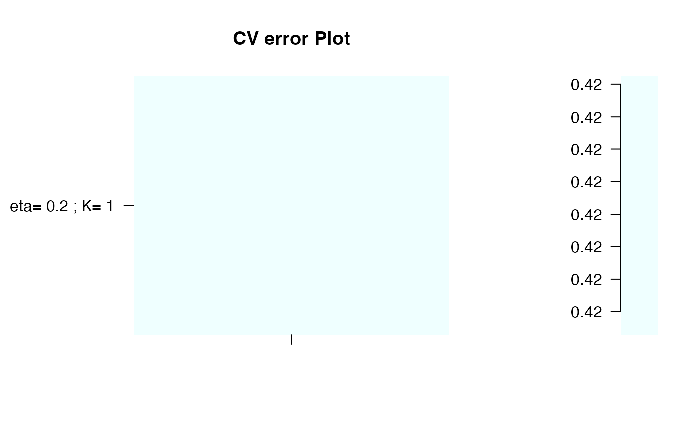
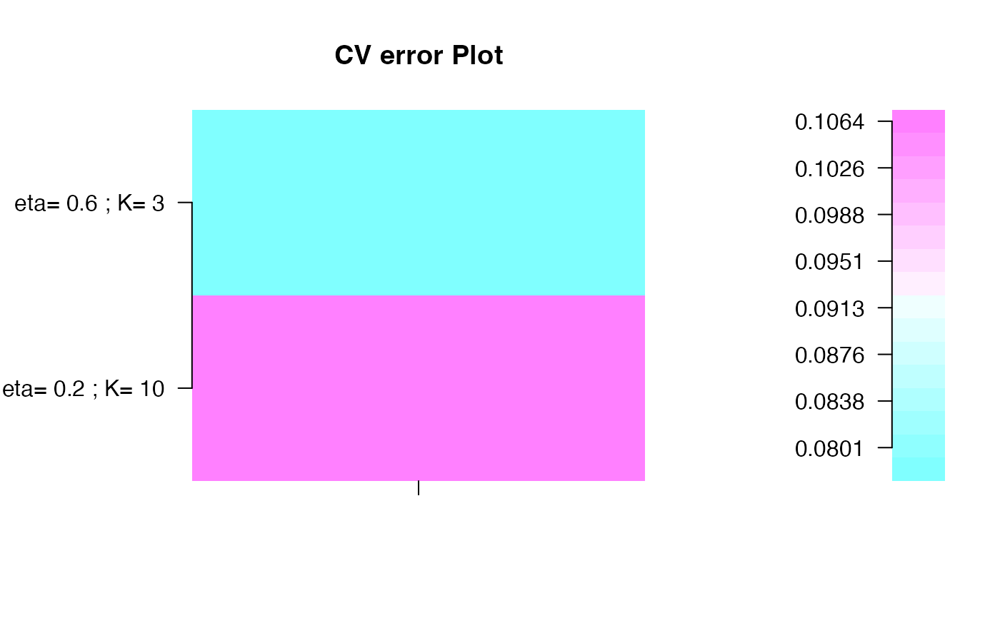

Number of components for SGPLS using (Y,T) bootstrap
nbcomp.bootsgpls( x, y, fold = 10, eta, R, scale.x = TRUE, maxnt = 10, plot.it = TRUE, br = TRUE, ftype = "iden", typeBCa = TRUE, stabvalue = 1e+06, verbose = TRUE )
| x | Matrix of predictors. |
|---|---|
| y | Vector or matrix of responses. |
| fold | Number of fold for cross-validation |
| eta | Thresholding parameter. eta should be between 0 and 1. |
| R | Number of resamplings. |
| scale.x | Scale predictors by dividing each predictor variable by its sample standard deviation? |
| maxnt | Maximum number of components allowed in a spls model. |
| plot.it | Plot the results. |
| br | Apply Firth's bias reduction procedure? |
| ftype | Type of Firth's bias reduction procedure. Alternatives are "iden" (the approximated version) or "hat" (the original version). Default is "iden". |
| typeBCa | Include computation for BCa type interval. |
| stabvalue | A value to hard threshold bootstrap estimates computed from atypical resamplings. |
| verbose | Additionnal information on the algorithm. |
List of four: error matrix, eta optimal, K optimal and the matrix of results.
A new bootstrap-based stopping criterion in PLS component construction,
J. Magnanensi, M. Maumy-Bertrand, N. Meyer and F. Bertrand (2016), in The Multiple Facets of Partial Least Squares and Related Methods,
doi: 10.1007/978-3-319-40643-5_18
A new universal resample-stable bootstrap-based stopping criterion for PLS component construction,
J. Magnanensi, F. Bertrand, M. Maumy-Bertrand and N. Meyer, (2017), Statistics and Computing, 27, 757–774.
doi: 10.1007/s11222-016-9651-4
New developments in Sparse PLS regression, J. Magnanensi, M. Maumy-Bertrand, N. Meyer and F. Bertrand, (2021), Frontiers in Applied Mathematics and Statistics, accepted.
Jérémy Magnanensi, Frédéric Bertrand
frederic.bertrand@utt.fr
https://fbertran.github.io/homepage/
set.seed(4619) data(prostate, package="spls") nbcomp.bootsgpls((prostate$x)[,1:30], prostate$y, R=250, eta=0.2, maxnt=1, typeBCa = FALSE)#> [1] "eta = 0.2" #> [1] "K = 1" #> [1] "K = 2" #> #> Optimal parameters: eta = 0.2, K = 1#> $err.mat #> #> eta= 0.2 ; K= 1 0.42 #> #> $eta.opt #> [1] 0.2 #> #> $K.opt #> [1] 1 #> #> $cands #> [,1] [,2] [,3] [,4] #> [1,] 0.42 22.8 0.2 1 #># \donttest{ set.seed(4619) data(prostate, package="spls") nbcomp.bootsgpls(prostate$x, prostate$y, R=250, eta=c(0.2,0.6), typeBCa = FALSE)#> [1] "eta = 0.2" #> [1] "K = 1" #> [1] "K = 2"#> Warning: glm.fit: algorithm did not converge#> Warning: glm.fit: fitted probabilities numerically 0 or 1 occurred#> Warning: glm.fit: algorithm did not converge#> Warning: glm.fit: fitted probabilities numerically 0 or 1 occurred#> Warning: glm.fit: fitted probabilities numerically 0 or 1 occurred#> Warning: glm.fit: algorithm did not converge#> Warning: glm.fit: fitted probabilities numerically 0 or 1 occurred#> Warning: glm.fit: fitted probabilities numerically 0 or 1 occurred#> Warning: glm.fit: algorithm did not converge#> Warning: glm.fit: fitted probabilities numerically 0 or 1 occurred#> Warning: glm.fit: algorithm did not converge#> Warning: glm.fit: fitted probabilities numerically 0 or 1 occurred#> [1] "K = 3"#> Warning: glm.fit: algorithm did not converge#> Warning: glm.fit: fitted probabilities numerically 0 or 1 occurred#> Warning: glm.fit: fitted probabilities numerically 0 or 1 occurred#> Warning: glm.fit: algorithm did not converge#> Warning: glm.fit: fitted probabilities numerically 0 or 1 occurred#> Warning: glm.fit: algorithm did not converge#> Warning: glm.fit: fitted probabilities numerically 0 or 1 occurred#> Warning: glm.fit: algorithm did not converge#> Warning: glm.fit: fitted probabilities numerically 0 or 1 occurred#> Warning: glm.fit: algorithm did not converge#> Warning: glm.fit: fitted probabilities numerically 0 or 1 occurred#> Warning: glm.fit: algorithm did not converge#> Warning: glm.fit: fitted probabilities numerically 0 or 1 occurred#> Warning: glm.fit: algorithm did not converge#> Warning: glm.fit: fitted probabilities numerically 0 or 1 occurred#> Warning: glm.fit: algorithm did not converge#> Warning: glm.fit: fitted probabilities numerically 0 or 1 occurred#> Warning: glm.fit: algorithm did not converge#> Warning: glm.fit: fitted probabilities numerically 0 or 1 occurred#> Warning: glm.fit: algorithm did not converge#> Warning: glm.fit: fitted probabilities numerically 0 or 1 occurred#> Warning: glm.fit: algorithm did not converge#> Warning: glm.fit: fitted probabilities numerically 0 or 1 occurred#> Warning: glm.fit: algorithm did not converge#> Warning: glm.fit: fitted probabilities numerically 0 or 1 occurred#> Warning: glm.fit: fitted probabilities numerically 0 or 1 occurred#> Warning: glm.fit: algorithm did not converge#> Warning: glm.fit: fitted probabilities numerically 0 or 1 occurred#> Warning: glm.fit: algorithm did not converge#> Warning: glm.fit: fitted probabilities numerically 0 or 1 occurred#> Warning: glm.fit: algorithm did not converge#> Warning: glm.fit: fitted probabilities numerically 0 or 1 occurred#> Warning: glm.fit: algorithm did not converge#> Warning: glm.fit: fitted probabilities numerically 0 or 1 occurred#> Warning: glm.fit: algorithm did not converge#> Warning: glm.fit: fitted probabilities numerically 0 or 1 occurred#> Warning: glm.fit: algorithm did not converge#> Warning: glm.fit: fitted probabilities numerically 0 or 1 occurred#> Warning: glm.fit: algorithm did not converge#> Warning: glm.fit: fitted probabilities numerically 0 or 1 occurred#> Warning: glm.fit: algorithm did not converge#> Warning: glm.fit: fitted probabilities numerically 0 or 1 occurred#> Warning: glm.fit: fitted probabilities numerically 0 or 1 occurred#> Warning: glm.fit: algorithm did not converge#> Warning: glm.fit: fitted probabilities numerically 0 or 1 occurred#> Warning: glm.fit: algorithm did not converge#> Warning: glm.fit: fitted probabilities numerically 0 or 1 occurred#> Warning: glm.fit: algorithm did not converge#> Warning: glm.fit: fitted probabilities numerically 0 or 1 occurred#> Warning: glm.fit: algorithm did not converge#> Warning: glm.fit: fitted probabilities numerically 0 or 1 occurred#> Warning: glm.fit: algorithm did not converge#> Warning: glm.fit: fitted probabilities numerically 0 or 1 occurred#> Warning: glm.fit: algorithm did not converge#> Warning: glm.fit: fitted probabilities numerically 0 or 1 occurred#> Warning: glm.fit: algorithm did not converge#> Warning: glm.fit: fitted probabilities numerically 0 or 1 occurred#> Warning: glm.fit: algorithm did not converge#> Warning: glm.fit: fitted probabilities numerically 0 or 1 occurred#> Warning: glm.fit: algorithm did not converge#> Warning: glm.fit: fitted probabilities numerically 0 or 1 occurred#> Warning: glm.fit: algorithm did not converge#> Warning: glm.fit: fitted probabilities numerically 0 or 1 occurred#> Warning: glm.fit: algorithm did not converge#> Warning: glm.fit: fitted probabilities numerically 0 or 1 occurred#> Warning: glm.fit: algorithm did not converge#> Warning: glm.fit: fitted probabilities numerically 0 or 1 occurred#> Warning: glm.fit: algorithm did not converge#> Warning: glm.fit: fitted probabilities numerically 0 or 1 occurred#> Warning: glm.fit: algorithm did not converge#> Warning: glm.fit: fitted probabilities numerically 0 or 1 occurred#> Warning: glm.fit: algorithm did not converge#> Warning: glm.fit: fitted probabilities numerically 0 or 1 occurred#> Warning: glm.fit: algorithm did not converge#> Warning: glm.fit: fitted probabilities numerically 0 or 1 occurred#> Warning: glm.fit: algorithm did not converge#> Warning: glm.fit: fitted probabilities numerically 0 or 1 occurred#> Warning: glm.fit: algorithm did not converge#> Warning: glm.fit: fitted probabilities numerically 0 or 1 occurred#> Warning: glm.fit: algorithm did not converge#> Warning: glm.fit: fitted probabilities numerically 0 or 1 occurred#> Warning: glm.fit: algorithm did not converge#> Warning: glm.fit: fitted probabilities numerically 0 or 1 occurred#> Warning: glm.fit: algorithm did not converge#> Warning: glm.fit: fitted probabilities numerically 0 or 1 occurred#> Warning: glm.fit: algorithm did not converge#> Warning: glm.fit: fitted probabilities numerically 0 or 1 occurred#> Warning: glm.fit: algorithm did not converge#> Warning: glm.fit: fitted probabilities numerically 0 or 1 occurred#> Warning: glm.fit: fitted probabilities numerically 0 or 1 occurred#> Warning: glm.fit: algorithm did not converge#> Warning: glm.fit: fitted probabilities numerically 0 or 1 occurred#> Warning: glm.fit: algorithm did not converge#> Warning: glm.fit: fitted probabilities numerically 0 or 1 occurred#> Warning: glm.fit: algorithm did not converge#> Warning: glm.fit: fitted probabilities numerically 0 or 1 occurred#> Warning: glm.fit: algorithm did not converge#> Warning: glm.fit: fitted probabilities numerically 0 or 1 occurred#> Warning: glm.fit: algorithm did not converge#> Warning: glm.fit: fitted probabilities numerically 0 or 1 occurred#> Warning: glm.fit: algorithm did not converge#> Warning: glm.fit: fitted probabilities numerically 0 or 1 occurred#> Warning: glm.fit: algorithm did not converge#> Warning: glm.fit: fitted probabilities numerically 0 or 1 occurred#> Warning: glm.fit: algorithm did not converge#> Warning: glm.fit: fitted probabilities numerically 0 or 1 occurred#> Warning: glm.fit: algorithm did not converge#> Warning: glm.fit: fitted probabilities numerically 0 or 1 occurred#> Warning: glm.fit: algorithm did not converge#> Warning: glm.fit: fitted probabilities numerically 0 or 1 occurred#> Warning: glm.fit: algorithm did not converge#> Warning: glm.fit: fitted probabilities numerically 0 or 1 occurred#> Warning: glm.fit: algorithm did not converge#> Warning: glm.fit: fitted probabilities numerically 0 or 1 occurred#> Warning: glm.fit: algorithm did not converge#> Warning: glm.fit: fitted probabilities numerically 0 or 1 occurred#> Warning: glm.fit: algorithm did not converge#> Warning: glm.fit: fitted probabilities numerically 0 or 1 occurred#> Warning: glm.fit: fitted probabilities numerically 0 or 1 occurred#> Warning: glm.fit: algorithm did not converge#> Warning: glm.fit: fitted probabilities numerically 0 or 1 occurred#> Warning: glm.fit: fitted probabilities numerically 0 or 1 occurred#> Warning: glm.fit: fitted probabilities numerically 0 or 1 occurred#> Warning: glm.fit: algorithm did not converge#> Warning: glm.fit: fitted probabilities numerically 0 or 1 occurred#> Warning: glm.fit: algorithm did not converge#> Warning: glm.fit: fitted probabilities numerically 0 or 1 occurred#> Warning: glm.fit: algorithm did not converge#> Warning: glm.fit: fitted probabilities numerically 0 or 1 occurred#> Warning: glm.fit: algorithm did not converge#> Warning: glm.fit: fitted probabilities numerically 0 or 1 occurred#> Warning: glm.fit: algorithm did not converge#> Warning: glm.fit: fitted probabilities numerically 0 or 1 occurred#> Warning: glm.fit: algorithm did not converge#> Warning: glm.fit: fitted probabilities numerically 0 or 1 occurred#> Warning: glm.fit: algorithm did not converge#> Warning: glm.fit: fitted probabilities numerically 0 or 1 occurred#> Warning: glm.fit: algorithm did not converge#> Warning: glm.fit: fitted probabilities numerically 0 or 1 occurred#> Warning: glm.fit: algorithm did not converge#> Warning: glm.fit: fitted probabilities numerically 0 or 1 occurred#> Warning: glm.fit: algorithm did not converge#> Warning: glm.fit: fitted probabilities numerically 0 or 1 occurred#> Warning: glm.fit: algorithm did not converge#> Warning: glm.fit: fitted probabilities numerically 0 or 1 occurred#> Warning: glm.fit: algorithm did not converge#> Warning: glm.fit: fitted probabilities numerically 0 or 1 occurred#> Warning: glm.fit: algorithm did not converge#> Warning: glm.fit: fitted probabilities numerically 0 or 1 occurred#> Warning: glm.fit: algorithm did not converge#> Warning: glm.fit: fitted probabilities numerically 0 or 1 occurred#> Warning: glm.fit: algorithm did not converge#> Warning: glm.fit: fitted probabilities numerically 0 or 1 occurred#> Warning: glm.fit: algorithm did not converge#> Warning: glm.fit: fitted probabilities numerically 0 or 1 occurred#> Warning: glm.fit: algorithm did not converge#> Warning: glm.fit: fitted probabilities numerically 0 or 1 occurred#> Warning: glm.fit: algorithm did not converge#> Warning: glm.fit: fitted probabilities numerically 0 or 1 occurred#> Warning: glm.fit: algorithm did not converge#> Warning: glm.fit: fitted probabilities numerically 0 or 1 occurred#> Warning: glm.fit: fitted probabilities numerically 0 or 1 occurred#> Warning: glm.fit: algorithm did not converge#> Warning: glm.fit: fitted probabilities numerically 0 or 1 occurred#> Warning: glm.fit: algorithm did not converge#> Warning: glm.fit: fitted probabilities numerically 0 or 1 occurred#> Warning: glm.fit: algorithm did not converge#> Warning: glm.fit: fitted probabilities numerically 0 or 1 occurred#> Warning: glm.fit: algorithm did not converge#> Warning: glm.fit: fitted probabilities numerically 0 or 1 occurred#> Warning: glm.fit: algorithm did not converge#> Warning: glm.fit: fitted probabilities numerically 0 or 1 occurred#> Warning: glm.fit: algorithm did not converge#> Warning: glm.fit: fitted probabilities numerically 0 or 1 occurred#> Warning: glm.fit: algorithm did not converge#> Warning: glm.fit: fitted probabilities numerically 0 or 1 occurred#> Warning: glm.fit: algorithm did not converge#> Warning: glm.fit: fitted probabilities numerically 0 or 1 occurred#> Warning: glm.fit: algorithm did not converge#> Warning: glm.fit: fitted probabilities numerically 0 or 1 occurred#> Warning: glm.fit: algorithm did not converge#> Warning: glm.fit: fitted probabilities numerically 0 or 1 occurred#> Warning: glm.fit: algorithm did not converge#> Warning: glm.fit: fitted probabilities numerically 0 or 1 occurred#> Warning: glm.fit: algorithm did not converge#> Warning: glm.fit: fitted probabilities numerically 0 or 1 occurred#> Warning: glm.fit: algorithm did not converge#> Warning: glm.fit: fitted probabilities numerically 0 or 1 occurred#> Warning: glm.fit: algorithm did not converge#> Warning: glm.fit: fitted probabilities numerically 0 or 1 occurred#> Warning: glm.fit: algorithm did not converge#> Warning: glm.fit: fitted probabilities numerically 0 or 1 occurred#> Warning: glm.fit: fitted probabilities numerically 0 or 1 occurred#> Warning: glm.fit: algorithm did not converge#> Warning: glm.fit: fitted probabilities numerically 0 or 1 occurred#> Warning: glm.fit: algorithm did not converge#> Warning: glm.fit: fitted probabilities numerically 0 or 1 occurred#> Warning: glm.fit: algorithm did not converge#> Warning: glm.fit: fitted probabilities numerically 0 or 1 occurred#> Warning: glm.fit: algorithm did not converge#> Warning: glm.fit: fitted probabilities numerically 0 or 1 occurred#> Warning: glm.fit: algorithm did not converge#> Warning: glm.fit: fitted probabilities numerically 0 or 1 occurred#> Warning: glm.fit: algorithm did not converge#> Warning: glm.fit: fitted probabilities numerically 0 or 1 occurred#> Warning: glm.fit: algorithm did not converge#> Warning: glm.fit: fitted probabilities numerically 0 or 1 occurred#> Warning: glm.fit: algorithm did not converge#> Warning: glm.fit: fitted probabilities numerically 0 or 1 occurred#> Warning: glm.fit: algorithm did not converge#> Warning: glm.fit: fitted probabilities numerically 0 or 1 occurred#> Warning: glm.fit: algorithm did not converge#> Warning: glm.fit: fitted probabilities numerically 0 or 1 occurred#> Warning: glm.fit: algorithm did not converge#> Warning: glm.fit: fitted probabilities numerically 0 or 1 occurred#> Warning: glm.fit: fitted probabilities numerically 0 or 1 occurred#> Warning: glm.fit: algorithm did not converge#> Warning: glm.fit: fitted probabilities numerically 0 or 1 occurred#> Warning: glm.fit: algorithm did not converge#> Warning: glm.fit: fitted probabilities numerically 0 or 1 occurred#> Warning: glm.fit: algorithm did not converge#> Warning: glm.fit: fitted probabilities numerically 0 or 1 occurred#> Warning: glm.fit: algorithm did not converge#> Warning: glm.fit: fitted probabilities numerically 0 or 1 occurred#> Warning: glm.fit: algorithm did not converge#> Warning: glm.fit: fitted probabilities numerically 0 or 1 occurred#> Warning: glm.fit: algorithm did not converge#> Warning: glm.fit: fitted probabilities numerically 0 or 1 occurred#> Warning: glm.fit: algorithm did not converge#> Warning: glm.fit: fitted probabilities numerically 0 or 1 occurred#> Warning: glm.fit: algorithm did not converge#> Warning: glm.fit: fitted probabilities numerically 0 or 1 occurred#> Warning: glm.fit: algorithm did not converge#> Warning: glm.fit: fitted probabilities numerically 0 or 1 occurred#> Warning: glm.fit: algorithm did not converge#> Warning: glm.fit: fitted probabilities numerically 0 or 1 occurred#> Warning: glm.fit: algorithm did not converge#> Warning: glm.fit: fitted probabilities numerically 0 or 1 occurred#> Warning: glm.fit: fitted probabilities numerically 0 or 1 occurred#> Warning: glm.fit: algorithm did not converge#> Warning: glm.fit: fitted probabilities numerically 0 or 1 occurred#> Warning: glm.fit: algorithm did not converge#> Warning: glm.fit: fitted probabilities numerically 0 or 1 occurred#> Warning: glm.fit: algorithm did not converge#> Warning: glm.fit: fitted probabilities numerically 0 or 1 occurred#> Warning: glm.fit: algorithm did not converge#> Warning: glm.fit: fitted probabilities numerically 0 or 1 occurred#> Warning: glm.fit: algorithm did not converge#> Warning: glm.fit: fitted probabilities numerically 0 or 1 occurred#> Warning: glm.fit: algorithm did not converge#> Warning: glm.fit: fitted probabilities numerically 0 or 1 occurred#> Warning: glm.fit: algorithm did not converge#> Warning: glm.fit: fitted probabilities numerically 0 or 1 occurred#> Warning: glm.fit: algorithm did not converge#> Warning: glm.fit: fitted probabilities numerically 0 or 1 occurred#> Warning: glm.fit: algorithm did not converge#> Warning: glm.fit: fitted probabilities numerically 0 or 1 occurred#> Warning: glm.fit: fitted probabilities numerically 0 or 1 occurred#> Warning: glm.fit: algorithm did not converge#> Warning: glm.fit: fitted probabilities numerically 0 or 1 occurred#> Warning: glm.fit: algorithm did not converge#> Warning: glm.fit: fitted probabilities numerically 0 or 1 occurred#> Warning: glm.fit: algorithm did not converge#> Warning: glm.fit: fitted probabilities numerically 0 or 1 occurred#> Warning: glm.fit: algorithm did not converge#> Warning: glm.fit: fitted probabilities numerically 0 or 1 occurred#> Warning: glm.fit: algorithm did not converge#> Warning: glm.fit: fitted probabilities numerically 0 or 1 occurred#> Warning: glm.fit: algorithm did not converge#> Warning: glm.fit: fitted probabilities numerically 0 or 1 occurred#> Warning: glm.fit: algorithm did not converge#> Warning: glm.fit: fitted probabilities numerically 0 or 1 occurred#> Warning: glm.fit: algorithm did not converge#> Warning: glm.fit: fitted probabilities numerically 0 or 1 occurred#> Warning: glm.fit: algorithm did not converge#> Warning: glm.fit: fitted probabilities numerically 0 or 1 occurred#> Warning: glm.fit: algorithm did not converge#> Warning: glm.fit: fitted probabilities numerically 0 or 1 occurred#> Warning: glm.fit: algorithm did not converge#> Warning: glm.fit: fitted probabilities numerically 0 or 1 occurred#> Warning: glm.fit: fitted probabilities numerically 0 or 1 occurred#> Warning: glm.fit: algorithm did not converge#> Warning: glm.fit: fitted probabilities numerically 0 or 1 occurred#> Warning: glm.fit: algorithm did not converge#> Warning: glm.fit: fitted probabilities numerically 0 or 1 occurred#> Warning: glm.fit: algorithm did not converge#> Warning: glm.fit: fitted probabilities numerically 0 or 1 occurred#> Warning: glm.fit: algorithm did not converge#> Warning: glm.fit: fitted probabilities numerically 0 or 1 occurred#> Warning: glm.fit: algorithm did not converge#> Warning: glm.fit: fitted probabilities numerically 0 or 1 occurred#> Warning: glm.fit: algorithm did not converge#> Warning: glm.fit: fitted probabilities numerically 0 or 1 occurred#> Warning: glm.fit: algorithm did not converge#> Warning: glm.fit: fitted probabilities numerically 0 or 1 occurred#> Warning: glm.fit: algorithm did not converge#> Warning: glm.fit: fitted probabilities numerically 0 or 1 occurred#> Warning: glm.fit: algorithm did not converge#> Warning: glm.fit: fitted probabilities numerically 0 or 1 occurred#> Warning: glm.fit: fitted probabilities numerically 0 or 1 occurred#> Warning: glm.fit: algorithm did not converge#> Warning: glm.fit: fitted probabilities numerically 0 or 1 occurred#> Warning: glm.fit: algorithm did not converge#> Warning: glm.fit: fitted probabilities numerically 0 or 1 occurred#> Warning: glm.fit: algorithm did not converge#> Warning: glm.fit: fitted probabilities numerically 0 or 1 occurred#> Warning: glm.fit: algorithm did not converge#> Warning: glm.fit: fitted probabilities numerically 0 or 1 occurred#> Warning: glm.fit: algorithm did not converge#> Warning: glm.fit: fitted probabilities numerically 0 or 1 occurred#> Warning: glm.fit: algorithm did not converge#> Warning: glm.fit: fitted probabilities numerically 0 or 1 occurred#> Warning: glm.fit: fitted probabilities numerically 0 or 1 occurred#> Warning: glm.fit: algorithm did not converge#> Warning: glm.fit: fitted probabilities numerically 0 or 1 occurred#> Warning: glm.fit: algorithm did not converge#> Warning: glm.fit: fitted probabilities numerically 0 or 1 occurred#> Warning: glm.fit: algorithm did not converge#> Warning: glm.fit: fitted probabilities numerically 0 or 1 occurred#> Warning: glm.fit: algorithm did not converge#> Warning: glm.fit: fitted probabilities numerically 0 or 1 occurred#> Warning: glm.fit: algorithm did not converge#> Warning: glm.fit: fitted probabilities numerically 0 or 1 occurred#> Warning: glm.fit: algorithm did not converge#> Warning: glm.fit: fitted probabilities numerically 0 or 1 occurred#> Warning: glm.fit: fitted probabilities numerically 0 or 1 occurred#> Warning: glm.fit: algorithm did not converge#> Warning: glm.fit: fitted probabilities numerically 0 or 1 occurred#> Warning: glm.fit: algorithm did not converge#> Warning: glm.fit: fitted probabilities numerically 0 or 1 occurred#> Warning: glm.fit: algorithm did not converge#> Warning: glm.fit: fitted probabilities numerically 0 or 1 occurred#> Warning: glm.fit: algorithm did not converge#> Warning: glm.fit: fitted probabilities numerically 0 or 1 occurred#> Warning: glm.fit: algorithm did not converge#> Warning: glm.fit: fitted probabilities numerically 0 or 1 occurred#> Warning: glm.fit: algorithm did not converge#> Warning: glm.fit: fitted probabilities numerically 0 or 1 occurred#> Warning: glm.fit: algorithm did not converge#> Warning: glm.fit: fitted probabilities numerically 0 or 1 occurred#> Warning: glm.fit: algorithm did not converge#> Warning: glm.fit: fitted probabilities numerically 0 or 1 occurred#> Warning: glm.fit: fitted probabilities numerically 0 or 1 occurred#> Warning: glm.fit: algorithm did not converge#> Warning: glm.fit: fitted probabilities numerically 0 or 1 occurred#> Warning: glm.fit: algorithm did not converge#> Warning: glm.fit: fitted probabilities numerically 0 or 1 occurred#> Warning: glm.fit: algorithm did not converge#> Warning: glm.fit: fitted probabilities numerically 0 or 1 occurred#> Warning: glm.fit: algorithm did not converge#> Warning: glm.fit: fitted probabilities numerically 0 or 1 occurred#> Warning: glm.fit: algorithm did not converge#> Warning: glm.fit: fitted probabilities numerically 0 or 1 occurred#> Warning: glm.fit: algorithm did not converge#> Warning: glm.fit: fitted probabilities numerically 0 or 1 occurred#> Warning: glm.fit: algorithm did not converge#> Warning: glm.fit: fitted probabilities numerically 0 or 1 occurred#> Warning: glm.fit: algorithm did not converge#> Warning: glm.fit: fitted probabilities numerically 0 or 1 occurred#> Warning: glm.fit: algorithm did not converge#> Warning: glm.fit: fitted probabilities numerically 0 or 1 occurred#> Warning: glm.fit: algorithm did not converge#> Warning: glm.fit: fitted probabilities numerically 0 or 1 occurred#> Warning: glm.fit: fitted probabilities numerically 0 or 1 occurred#> Warning: glm.fit: algorithm did not converge#> Warning: glm.fit: fitted probabilities numerically 0 or 1 occurred#> Warning: glm.fit: algorithm did not converge#> Warning: glm.fit: fitted probabilities numerically 0 or 1 occurred#> Warning: glm.fit: algorithm did not converge#> Warning: glm.fit: fitted probabilities numerically 0 or 1 occurred#> Warning: glm.fit: fitted probabilities numerically 0 or 1 occurred#> Warning: glm.fit: algorithm did not converge#> Warning: glm.fit: fitted probabilities numerically 0 or 1 occurred#> Warning: glm.fit: algorithm did not converge#> Warning: glm.fit: fitted probabilities numerically 0 or 1 occurred#> Warning: glm.fit: algorithm did not converge#> Warning: glm.fit: fitted probabilities numerically 0 or 1 occurred#> Warning: glm.fit: algorithm did not converge#> Warning: glm.fit: fitted probabilities numerically 0 or 1 occurred#> Warning: glm.fit: algorithm did not converge#> Warning: glm.fit: fitted probabilities numerically 0 or 1 occurred#> Warning: glm.fit: algorithm did not converge#> Warning: glm.fit: fitted probabilities numerically 0 or 1 occurred#> Warning: glm.fit: algorithm did not converge#> Warning: glm.fit: fitted probabilities numerically 0 or 1 occurred#> Warning: glm.fit: algorithm did not converge#> Warning: glm.fit: fitted probabilities numerically 0 or 1 occurred#> Warning: glm.fit: algorithm did not converge#> Warning: glm.fit: fitted probabilities numerically 0 or 1 occurred#> Warning: glm.fit: algorithm did not converge#> Warning: glm.fit: fitted probabilities numerically 0 or 1 occurred#> Warning: glm.fit: algorithm did not converge#> Warning: glm.fit: fitted probabilities numerically 0 or 1 occurred#> Warning: glm.fit: algorithm did not converge#> Warning: glm.fit: fitted probabilities numerically 0 or 1 occurred#> Warning: glm.fit: algorithm did not converge#> Warning: glm.fit: fitted probabilities numerically 0 or 1 occurred#> Warning: glm.fit: fitted probabilities numerically 0 or 1 occurred#> Warning: glm.fit: algorithm did not converge#> Warning: glm.fit: fitted probabilities numerically 0 or 1 occurred#> Warning: glm.fit: algorithm did not converge#> Warning: glm.fit: fitted probabilities numerically 0 or 1 occurred#> [1] "K = 4"#> Warning: glm.fit: fitted probabilities numerically 0 or 1 occurred#> Warning: glm.fit: algorithm did not converge#> Warning: glm.fit: fitted probabilities numerically 0 or 1 occurred#> Warning: glm.fit: fitted probabilities numerically 0 or 1 occurred#> Warning: glm.fit: fitted probabilities numerically 0 or 1 occurred#> Warning: glm.fit: fitted probabilities numerically 0 or 1 occurred#> Warning: glm.fit: algorithm did not converge#> Warning: glm.fit: fitted probabilities numerically 0 or 1 occurred#> Warning: glm.fit: algorithm did not converge#> Warning: glm.fit: fitted probabilities numerically 0 or 1 occurred#> Warning: glm.fit: algorithm did not converge#> Warning: glm.fit: fitted probabilities numerically 0 or 1 occurred#> Warning: glm.fit: algorithm did not converge#> Warning: glm.fit: fitted probabilities numerically 0 or 1 occurred#> Warning: glm.fit: algorithm did not converge#> Warning: glm.fit: fitted probabilities numerically 0 or 1 occurred#> Warning: glm.fit: algorithm did not converge#> Warning: glm.fit: fitted probabilities numerically 0 or 1 occurred#> Warning: glm.fit: algorithm did not converge#> Warning: glm.fit: fitted probabilities numerically 0 or 1 occurred#> Warning: glm.fit: algorithm did not converge#> Warning: glm.fit: fitted probabilities numerically 0 or 1 occurred#> Warning: glm.fit: algorithm did not converge#> Warning: glm.fit: fitted probabilities numerically 0 or 1 occurred#> Warning: glm.fit: algorithm did not converge#> Warning: glm.fit: fitted probabilities numerically 0 or 1 occurred#> Warning: glm.fit: algorithm did not converge#> Warning: glm.fit: fitted probabilities numerically 0 or 1 occurred#> Warning: glm.fit: algorithm did not converge#> Warning: glm.fit: fitted probabilities numerically 0 or 1 occurred#> Warning: glm.fit: algorithm did not converge#> Warning: glm.fit: fitted probabilities numerically 0 or 1 occurred#> Warning: glm.fit: algorithm did not converge#> Warning: glm.fit: fitted probabilities numerically 0 or 1 occurred#> Warning: glm.fit: algorithm did not converge#> Warning: glm.fit: fitted probabilities numerically 0 or 1 occurred#> Warning: glm.fit: algorithm did not converge#> Warning: glm.fit: fitted probabilities numerically 0 or 1 occurred#> Warning: glm.fit: algorithm did not converge#> Warning: glm.fit: fitted probabilities numerically 0 or 1 occurred#> Warning: glm.fit: algorithm did not converge#> Warning: glm.fit: fitted probabilities numerically 0 or 1 occurred#> Warning: glm.fit: algorithm did not converge#> Warning: glm.fit: fitted probabilities numerically 0 or 1 occurred#> Warning: glm.fit: algorithm did not converge#> Warning: glm.fit: fitted probabilities numerically 0 or 1 occurred#> Warning: glm.fit: algorithm did not converge#> Warning: glm.fit: fitted probabilities numerically 0 or 1 occurred#> Warning: glm.fit: algorithm did not converge#> Warning: glm.fit: fitted probabilities numerically 0 or 1 occurred#> Warning: glm.fit: algorithm did not converge#> Warning: glm.fit: fitted probabilities numerically 0 or 1 occurred#> Warning: glm.fit: algorithm did not converge#> Warning: glm.fit: fitted probabilities numerically 0 or 1 occurred#> Warning: glm.fit: algorithm did not converge#> Warning: glm.fit: fitted probabilities numerically 0 or 1 occurred#> Warning: glm.fit: algorithm did not converge#> Warning: glm.fit: fitted probabilities numerically 0 or 1 occurred#> Warning: glm.fit: algorithm did not converge#> Warning: glm.fit: fitted probabilities numerically 0 or 1 occurred#> Warning: glm.fit: algorithm did not converge#> Warning: glm.fit: fitted probabilities numerically 0 or 1 occurred#> Warning: glm.fit: algorithm did not converge#> Warning: glm.fit: fitted probabilities numerically 0 or 1 occurred#> Warning: glm.fit: algorithm did not converge#> Warning: glm.fit: fitted probabilities numerically 0 or 1 occurred#> Warning: glm.fit: algorithm did not converge#> Warning: glm.fit: fitted probabilities numerically 0 or 1 occurred#> Warning: glm.fit: algorithm did not converge#> Warning: glm.fit: fitted probabilities numerically 0 or 1 occurred#> Warning: glm.fit: algorithm did not converge#> Warning: glm.fit: fitted probabilities numerically 0 or 1 occurred#> Warning: glm.fit: algorithm did not converge#> Warning: glm.fit: fitted probabilities numerically 0 or 1 occurred#> Warning: glm.fit: algorithm did not converge#> Warning: glm.fit: fitted probabilities numerically 0 or 1 occurred#> Warning: glm.fit: algorithm did not converge#> Warning: glm.fit: fitted probabilities numerically 0 or 1 occurred#> Warning: glm.fit: algorithm did not converge#> Warning: glm.fit: fitted probabilities numerically 0 or 1 occurred#> Warning: glm.fit: algorithm did not converge#> Warning: glm.fit: fitted probabilities numerically 0 or 1 occurred#> Warning: glm.fit: algorithm did not converge#> Warning: glm.fit: fitted probabilities numerically 0 or 1 occurred#> Warning: glm.fit: algorithm did not converge#> Warning: glm.fit: fitted probabilities numerically 0 or 1 occurred#> Warning: glm.fit: algorithm did not converge#> Warning: glm.fit: fitted probabilities numerically 0 or 1 occurred#> Warning: glm.fit: algorithm did not converge#> Warning: glm.fit: fitted probabilities numerically 0 or 1 occurred#> Warning: glm.fit: algorithm did not converge#> Warning: glm.fit: fitted probabilities numerically 0 or 1 occurred#> Warning: glm.fit: algorithm did not converge#> Warning: glm.fit: fitted probabilities numerically 0 or 1 occurred#> Warning: glm.fit: algorithm did not converge#> Warning: glm.fit: fitted probabilities numerically 0 or 1 occurred#> Warning: glm.fit: algorithm did not converge#> Warning: glm.fit: fitted probabilities numerically 0 or 1 occurred#> Warning: glm.fit: algorithm did not converge#> Warning: glm.fit: fitted probabilities numerically 0 or 1 occurred#> Warning: glm.fit: algorithm did not converge#> Warning: glm.fit: fitted probabilities numerically 0 or 1 occurred#> Warning: glm.fit: algorithm did not converge#> Warning: glm.fit: fitted probabilities numerically 0 or 1 occurred#> Warning: glm.fit: algorithm did not converge#> Warning: glm.fit: fitted probabilities numerically 0 or 1 occurred#> Warning: glm.fit: algorithm did not converge#> Warning: glm.fit: fitted probabilities numerically 0 or 1 occurred#> Warning: glm.fit: algorithm did not converge#> Warning: glm.fit: fitted probabilities numerically 0 or 1 occurred#> Warning: glm.fit: algorithm did not converge#> Warning: glm.fit: fitted probabilities numerically 0 or 1 occurred#> Warning: glm.fit: algorithm did not converge#> Warning: glm.fit: fitted probabilities numerically 0 or 1 occurred#> Warning: glm.fit: algorithm did not converge#> Warning: glm.fit: fitted probabilities numerically 0 or 1 occurred#> Warning: glm.fit: algorithm did not converge#> Warning: glm.fit: fitted probabilities numerically 0 or 1 occurred#> Warning: glm.fit: algorithm did not converge#> Warning: glm.fit: fitted probabilities numerically 0 or 1 occurred#> Warning: glm.fit: algorithm did not converge#> Warning: glm.fit: fitted probabilities numerically 0 or 1 occurred#> Warning: glm.fit: algorithm did not converge#> Warning: glm.fit: fitted probabilities numerically 0 or 1 occurred#> Warning: glm.fit: algorithm did not converge#> Warning: glm.fit: fitted probabilities numerically 0 or 1 occurred#> Warning: glm.fit: algorithm did not converge#> Warning: glm.fit: fitted probabilities numerically 0 or 1 occurred#> Warning: glm.fit: algorithm did not converge#> Warning: glm.fit: fitted probabilities numerically 0 or 1 occurred#> Warning: glm.fit: algorithm did not converge#> Warning: glm.fit: fitted probabilities numerically 0 or 1 occurred#> Warning: glm.fit: algorithm did not converge#> Warning: glm.fit: fitted probabilities numerically 0 or 1 occurred#> Warning: glm.fit: algorithm did not converge#> Warning: glm.fit: fitted probabilities numerically 0 or 1 occurred#> Warning: glm.fit: algorithm did not converge#> Warning: glm.fit: fitted probabilities numerically 0 or 1 occurred#> Warning: glm.fit: algorithm did not converge#> Warning: glm.fit: fitted probabilities numerically 0 or 1 occurred#> Warning: glm.fit: algorithm did not converge#> Warning: glm.fit: fitted probabilities numerically 0 or 1 occurred#> Warning: glm.fit: algorithm did not converge#> Warning: glm.fit: fitted probabilities numerically 0 or 1 occurred#> Warning: glm.fit: algorithm did not converge#> Warning: glm.fit: fitted probabilities numerically 0 or 1 occurred#> Warning: glm.fit: algorithm did not converge#> Warning: glm.fit: fitted probabilities numerically 0 or 1 occurred#> Warning: glm.fit: algorithm did not converge#> Warning: glm.fit: fitted probabilities numerically 0 or 1 occurred#> Warning: glm.fit: algorithm did not converge#> Warning: glm.fit: fitted probabilities numerically 0 or 1 occurred#> Warning: glm.fit: algorithm did not converge#> Warning: glm.fit: fitted probabilities numerically 0 or 1 occurred#> Warning: glm.fit: algorithm did not converge#> Warning: glm.fit: fitted probabilities numerically 0 or 1 occurred#> Warning: glm.fit: algorithm did not converge#> Warning: glm.fit: fitted probabilities numerically 0 or 1 occurred#> Warning: glm.fit: algorithm did not converge#> Warning: glm.fit: fitted probabilities numerically 0 or 1 occurred#> Warning: glm.fit: algorithm did not converge#> Warning: glm.fit: fitted probabilities numerically 0 or 1 occurred#> Warning: glm.fit: algorithm did not converge#> Warning: glm.fit: fitted probabilities numerically 0 or 1 occurred#> Warning: glm.fit: algorithm did not converge#> Warning: glm.fit: fitted probabilities numerically 0 or 1 occurred#> Warning: glm.fit: algorithm did not converge#> Warning: glm.fit: fitted probabilities numerically 0 or 1 occurred#> Warning: glm.fit: algorithm did not converge#> Warning: glm.fit: fitted probabilities numerically 0 or 1 occurred#> Warning: glm.fit: algorithm did not converge#> Warning: glm.fit: fitted probabilities numerically 0 or 1 occurred#> Warning: glm.fit: algorithm did not converge#> Warning: glm.fit: fitted probabilities numerically 0 or 1 occurred#> Warning: glm.fit: algorithm did not converge#> Warning: glm.fit: fitted probabilities numerically 0 or 1 occurred#> Warning: glm.fit: algorithm did not converge#> Warning: glm.fit: fitted probabilities numerically 0 or 1 occurred#> Warning: glm.fit: algorithm did not converge#> Warning: glm.fit: fitted probabilities numerically 0 or 1 occurred#> Warning: glm.fit: algorithm did not converge#> Warning: glm.fit: fitted probabilities numerically 0 or 1 occurred#> Warning: glm.fit: algorithm did not converge#> Warning: glm.fit: fitted probabilities numerically 0 or 1 occurred#> Warning: glm.fit: algorithm did not converge#> Warning: glm.fit: fitted probabilities numerically 0 or 1 occurred#> Warning: glm.fit: algorithm did not converge#> Warning: glm.fit: fitted probabilities numerically 0 or 1 occurred#> Warning: glm.fit: algorithm did not converge#> Warning: glm.fit: fitted probabilities numerically 0 or 1 occurred#> Warning: glm.fit: algorithm did not converge#> Warning: glm.fit: fitted probabilities numerically 0 or 1 occurred#> Warning: glm.fit: algorithm did not converge#> Warning: glm.fit: fitted probabilities numerically 0 or 1 occurred#> Warning: glm.fit: algorithm did not converge#> Warning: glm.fit: fitted probabilities numerically 0 or 1 occurred#> Warning: glm.fit: algorithm did not converge#> Warning: glm.fit: fitted probabilities numerically 0 or 1 occurred#> Warning: glm.fit: algorithm did not converge#> Warning: glm.fit: fitted probabilities numerically 0 or 1 occurred#> Warning: glm.fit: algorithm did not converge#> Warning: glm.fit: fitted probabilities numerically 0 or 1 occurred#> Warning: glm.fit: algorithm did not converge#> Warning: glm.fit: fitted probabilities numerically 0 or 1 occurred#> Warning: glm.fit: algorithm did not converge#> Warning: glm.fit: fitted probabilities numerically 0 or 1 occurred#> Warning: glm.fit: algorithm did not converge#> Warning: glm.fit: fitted probabilities numerically 0 or 1 occurred#> Warning: glm.fit: algorithm did not converge#> Warning: glm.fit: fitted probabilities numerically 0 or 1 occurred#> Warning: glm.fit: algorithm did not converge#> Warning: glm.fit: fitted probabilities numerically 0 or 1 occurred#> Warning: glm.fit: algorithm did not converge#> Warning: glm.fit: fitted probabilities numerically 0 or 1 occurred#> Warning: glm.fit: algorithm did not converge#> Warning: glm.fit: fitted probabilities numerically 0 or 1 occurred#> Warning: glm.fit: algorithm did not converge#> Warning: glm.fit: fitted probabilities numerically 0 or 1 occurred#> Warning: glm.fit: algorithm did not converge#> Warning: glm.fit: fitted probabilities numerically 0 or 1 occurred#> Warning: glm.fit: algorithm did not converge#> Warning: glm.fit: fitted probabilities numerically 0 or 1 occurred#> Warning: glm.fit: algorithm did not converge#> Warning: glm.fit: fitted probabilities numerically 0 or 1 occurred#> Warning: glm.fit: algorithm did not converge#> Warning: glm.fit: fitted probabilities numerically 0 or 1 occurred#> Warning: glm.fit: algorithm did not converge#> Warning: glm.fit: fitted probabilities numerically 0 or 1 occurred#> Warning: glm.fit: algorithm did not converge#> Warning: glm.fit: fitted probabilities numerically 0 or 1 occurred#> Warning: glm.fit: algorithm did not converge#> Warning: glm.fit: fitted probabilities numerically 0 or 1 occurred#> Warning: glm.fit: algorithm did not converge#> Warning: glm.fit: fitted probabilities numerically 0 or 1 occurred#> Warning: glm.fit: algorithm did not converge#> Warning: glm.fit: fitted probabilities numerically 0 or 1 occurred#> Warning: glm.fit: algorithm did not converge#> Warning: glm.fit: fitted probabilities numerically 0 or 1 occurred#> Warning: glm.fit: algorithm did not converge#> Warning: glm.fit: fitted probabilities numerically 0 or 1 occurred#> Warning: glm.fit: algorithm did not converge#> Warning: glm.fit: fitted probabilities numerically 0 or 1 occurred#> Warning: glm.fit: algorithm did not converge#> Warning: glm.fit: fitted probabilities numerically 0 or 1 occurred#> Warning: glm.fit: algorithm did not converge#> Warning: glm.fit: fitted probabilities numerically 0 or 1 occurred#> Warning: glm.fit: algorithm did not converge#> Warning: glm.fit: fitted probabilities numerically 0 or 1 occurred#> Warning: glm.fit: algorithm did not converge#> Warning: glm.fit: fitted probabilities numerically 0 or 1 occurred#> Warning: glm.fit: algorithm did not converge#> Warning: glm.fit: fitted probabilities numerically 0 or 1 occurred#> Warning: glm.fit: algorithm did not converge#> Warning: glm.fit: fitted probabilities numerically 0 or 1 occurred#> Warning: glm.fit: algorithm did not converge#> Warning: glm.fit: fitted probabilities numerically 0 or 1 occurred#> Warning: glm.fit: algorithm did not converge#> Warning: glm.fit: fitted probabilities numerically 0 or 1 occurred#> Warning: glm.fit: algorithm did not converge#> Warning: glm.fit: fitted probabilities numerically 0 or 1 occurred#> Warning: glm.fit: algorithm did not converge#> Warning: glm.fit: fitted probabilities numerically 0 or 1 occurred#> Warning: glm.fit: algorithm did not converge#> Warning: glm.fit: fitted probabilities numerically 0 or 1 occurred#> Warning: glm.fit: algorithm did not converge#> Warning: glm.fit: fitted probabilities numerically 0 or 1 occurred#> Warning: glm.fit: algorithm did not converge#> Warning: glm.fit: fitted probabilities numerically 0 or 1 occurred#> Warning: glm.fit: algorithm did not converge#> Warning: glm.fit: fitted probabilities numerically 0 or 1 occurred#> Warning: glm.fit: algorithm did not converge#> Warning: glm.fit: fitted probabilities numerically 0 or 1 occurred#> Warning: glm.fit: algorithm did not converge#> Warning: glm.fit: fitted probabilities numerically 0 or 1 occurred#> Warning: glm.fit: algorithm did not converge#> Warning: glm.fit: fitted probabilities numerically 0 or 1 occurred#> Warning: glm.fit: algorithm did not converge#> Warning: glm.fit: fitted probabilities numerically 0 or 1 occurred#> Warning: glm.fit: algorithm did not converge#> Warning: glm.fit: fitted probabilities numerically 0 or 1 occurred#> Warning: glm.fit: algorithm did not converge#> Warning: glm.fit: fitted probabilities numerically 0 or 1 occurred#> Warning: glm.fit: algorithm did not converge#> Warning: glm.fit: fitted probabilities numerically 0 or 1 occurred#> Warning: glm.fit: algorithm did not converge#> Warning: glm.fit: fitted probabilities numerically 0 or 1 occurred#> Warning: glm.fit: algorithm did not converge#> Warning: glm.fit: fitted probabilities numerically 0 or 1 occurred#> Warning: glm.fit: algorithm did not converge#> Warning: glm.fit: fitted probabilities numerically 0 or 1 occurred#> Warning: glm.fit: algorithm did not converge#> Warning: glm.fit: fitted probabilities numerically 0 or 1 occurred#> Warning: glm.fit: algorithm did not converge#> Warning: glm.fit: fitted probabilities numerically 0 or 1 occurred#> Warning: glm.fit: algorithm did not converge#> Warning: glm.fit: fitted probabilities numerically 0 or 1 occurred#> Warning: glm.fit: algorithm did not converge#> Warning: glm.fit: fitted probabilities numerically 0 or 1 occurred#> Warning: glm.fit: algorithm did not converge#> Warning: glm.fit: fitted probabilities numerically 0 or 1 occurred#> Warning: glm.fit: algorithm did not converge#> Warning: glm.fit: fitted probabilities numerically 0 or 1 occurred#> Warning: glm.fit: algorithm did not converge#> Warning: glm.fit: fitted probabilities numerically 0 or 1 occurred#> Warning: glm.fit: algorithm did not converge#> Warning: glm.fit: fitted probabilities numerically 0 or 1 occurred#> Warning: glm.fit: algorithm did not converge#> Warning: glm.fit: fitted probabilities numerically 0 or 1 occurred#> Warning: glm.fit: algorithm did not converge#> Warning: glm.fit: fitted probabilities numerically 0 or 1 occurred#> Warning: glm.fit: algorithm did not converge#> Warning: glm.fit: fitted probabilities numerically 0 or 1 occurred#> Warning: glm.fit: algorithm did not converge#> Warning: glm.fit: fitted probabilities numerically 0 or 1 occurred#> Warning: glm.fit: algorithm did not converge#> Warning: glm.fit: fitted probabilities numerically 0 or 1 occurred#> Warning: glm.fit: algorithm did not converge#> Warning: glm.fit: fitted probabilities numerically 0 or 1 occurred#> Warning: glm.fit: algorithm did not converge#> Warning: glm.fit: fitted probabilities numerically 0 or 1 occurred#> Warning: glm.fit: algorithm did not converge#> Warning: glm.fit: fitted probabilities numerically 0 or 1 occurred#> Warning: glm.fit: algorithm did not converge#> Warning: glm.fit: fitted probabilities numerically 0 or 1 occurred#> Warning: glm.fit: algorithm did not converge#> Warning: glm.fit: fitted probabilities numerically 0 or 1 occurred#> Warning: glm.fit: algorithm did not converge#> Warning: glm.fit: fitted probabilities numerically 0 or 1 occurred#> Warning: glm.fit: algorithm did not converge#> Warning: glm.fit: fitted probabilities numerically 0 or 1 occurred#> Warning: glm.fit: algorithm did not converge#> Warning: glm.fit: fitted probabilities numerically 0 or 1 occurred#> Warning: glm.fit: algorithm did not converge#> Warning: glm.fit: fitted probabilities numerically 0 or 1 occurred#> Warning: glm.fit: algorithm did not converge#> Warning: glm.fit: fitted probabilities numerically 0 or 1 occurred#> Warning: glm.fit: algorithm did not converge#> Warning: glm.fit: fitted probabilities numerically 0 or 1 occurred#> Warning: glm.fit: algorithm did not converge#> Warning: glm.fit: fitted probabilities numerically 0 or 1 occurred#> Warning: glm.fit: algorithm did not converge#> Warning: glm.fit: fitted probabilities numerically 0 or 1 occurred#> Warning: glm.fit: algorithm did not converge#> Warning: glm.fit: fitted probabilities numerically 0 or 1 occurred#> Warning: glm.fit: algorithm did not converge#> Warning: glm.fit: fitted probabilities numerically 0 or 1 occurred#> Warning: glm.fit: algorithm did not converge#> Warning: glm.fit: fitted probabilities numerically 0 or 1 occurred#> Warning: glm.fit: algorithm did not converge#> Warning: glm.fit: fitted probabilities numerically 0 or 1 occurred#> Warning: glm.fit: algorithm did not converge#> Warning: glm.fit: fitted probabilities numerically 0 or 1 occurred#> Warning: glm.fit: algorithm did not converge#> Warning: glm.fit: fitted probabilities numerically 0 or 1 occurred#> Warning: glm.fit: algorithm did not converge#> Warning: glm.fit: fitted probabilities numerically 0 or 1 occurred#> Warning: glm.fit: algorithm did not converge#> Warning: glm.fit: fitted probabilities numerically 0 or 1 occurred#> Warning: glm.fit: algorithm did not converge#> Warning: glm.fit: fitted probabilities numerically 0 or 1 occurred#> Warning: glm.fit: algorithm did not converge#> Warning: glm.fit: fitted probabilities numerically 0 or 1 occurred#> Warning: glm.fit: algorithm did not converge#> Warning: glm.fit: fitted probabilities numerically 0 or 1 occurred#> Warning: glm.fit: algorithm did not converge#> Warning: glm.fit: fitted probabilities numerically 0 or 1 occurred#> Warning: glm.fit: algorithm did not converge#> Warning: glm.fit: fitted probabilities numerically 0 or 1 occurred#> Warning: glm.fit: algorithm did not converge#> Warning: glm.fit: fitted probabilities numerically 0 or 1 occurred#> Warning: glm.fit: algorithm did not converge#> Warning: glm.fit: fitted probabilities numerically 0 or 1 occurred#> Warning: glm.fit: algorithm did not converge#> Warning: glm.fit: fitted probabilities numerically 0 or 1 occurred#> Warning: glm.fit: algorithm did not converge#> Warning: glm.fit: fitted probabilities numerically 0 or 1 occurred#> Warning: glm.fit: algorithm did not converge#> Warning: glm.fit: fitted probabilities numerically 0 or 1 occurred#> Warning: glm.fit: algorithm did not converge#> Warning: glm.fit: fitted probabilities numerically 0 or 1 occurred#> Warning: glm.fit: algorithm did not converge#> Warning: glm.fit: fitted probabilities numerically 0 or 1 occurred#> Warning: glm.fit: algorithm did not converge#> Warning: glm.fit: fitted probabilities numerically 0 or 1 occurred#> Warning: glm.fit: algorithm did not converge#> Warning: glm.fit: fitted probabilities numerically 0 or 1 occurred#> Warning: glm.fit: algorithm did not converge#> Warning: glm.fit: fitted probabilities numerically 0 or 1 occurred#> Warning: glm.fit: algorithm did not converge#> Warning: glm.fit: fitted probabilities numerically 0 or 1 occurred#> Warning: glm.fit: algorithm did not converge#> Warning: glm.fit: fitted probabilities numerically 0 or 1 occurred#> Warning: glm.fit: algorithm did not converge#> Warning: glm.fit: fitted probabilities numerically 0 or 1 occurred#> Warning: glm.fit: algorithm did not converge#> Warning: glm.fit: fitted probabilities numerically 0 or 1 occurred#> Warning: glm.fit: algorithm did not converge#> Warning: glm.fit: fitted probabilities numerically 0 or 1 occurred#> Warning: glm.fit: algorithm did not converge#> Warning: glm.fit: fitted probabilities numerically 0 or 1 occurred#> Warning: glm.fit: algorithm did not converge#> Warning: glm.fit: fitted probabilities numerically 0 or 1 occurred#> Warning: glm.fit: algorithm did not converge#> Warning: glm.fit: fitted probabilities numerically 0 or 1 occurred#> Warning: glm.fit: algorithm did not converge#> Warning: glm.fit: fitted probabilities numerically 0 or 1 occurred#> Warning: glm.fit: algorithm did not converge#> Warning: glm.fit: fitted probabilities numerically 0 or 1 occurred#> Warning: glm.fit: algorithm did not converge#> Warning: glm.fit: fitted probabilities numerically 0 or 1 occurred#> Warning: glm.fit: algorithm did not converge#> Warning: glm.fit: fitted probabilities numerically 0 or 1 occurred#> Warning: glm.fit: algorithm did not converge#> Warning: glm.fit: fitted probabilities numerically 0 or 1 occurred#> Warning: glm.fit: algorithm did not converge#> Warning: glm.fit: fitted probabilities numerically 0 or 1 occurred#> Warning: glm.fit: algorithm did not converge#> Warning: glm.fit: fitted probabilities numerically 0 or 1 occurred#> Warning: glm.fit: algorithm did not converge#> Warning: glm.fit: fitted probabilities numerically 0 or 1 occurred#> Warning: glm.fit: algorithm did not converge#> Warning: glm.fit: fitted probabilities numerically 0 or 1 occurred#> Warning: glm.fit: algorithm did not converge#> Warning: glm.fit: fitted probabilities numerically 0 or 1 occurred#> Warning: glm.fit: algorithm did not converge#> Warning: glm.fit: fitted probabilities numerically 0 or 1 occurred#> Warning: glm.fit: algorithm did not converge#> Warning: glm.fit: fitted probabilities numerically 0 or 1 occurred#> Warning: glm.fit: algorithm did not converge#> Warning: glm.fit: fitted probabilities numerically 0 or 1 occurred#> Warning: glm.fit: algorithm did not converge#> Warning: glm.fit: fitted probabilities numerically 0 or 1 occurred#> Warning: glm.fit: algorithm did not converge#> Warning: glm.fit: fitted probabilities numerically 0 or 1 occurred#> Warning: glm.fit: algorithm did not converge#> Warning: glm.fit: fitted probabilities numerically 0 or 1 occurred#> Warning: glm.fit: algorithm did not converge#> Warning: glm.fit: fitted probabilities numerically 0 or 1 occurred#> Warning: glm.fit: algorithm did not converge#> Warning: glm.fit: fitted probabilities numerically 0 or 1 occurred#> Warning: glm.fit: algorithm did not converge#> Warning: glm.fit: fitted probabilities numerically 0 or 1 occurred#> Warning: glm.fit: algorithm did not converge#> Warning: glm.fit: fitted probabilities numerically 0 or 1 occurred#> Warning: glm.fit: algorithm did not converge#> Warning: glm.fit: fitted probabilities numerically 0 or 1 occurred#> Warning: glm.fit: algorithm did not converge#> Warning: glm.fit: fitted probabilities numerically 0 or 1 occurred#> Warning: glm.fit: algorithm did not converge#> Warning: glm.fit: fitted probabilities numerically 0 or 1 occurred#> Warning: glm.fit: algorithm did not converge#> Warning: glm.fit: fitted probabilities numerically 0 or 1 occurred#> Warning: glm.fit: algorithm did not converge#> Warning: glm.fit: fitted probabilities numerically 0 or 1 occurred#> Warning: glm.fit: algorithm did not converge#> Warning: glm.fit: fitted probabilities numerically 0 or 1 occurred#> Warning: glm.fit: algorithm did not converge#> Warning: glm.fit: fitted probabilities numerically 0 or 1 occurred#> Warning: glm.fit: algorithm did not converge#> Warning: glm.fit: fitted probabilities numerically 0 or 1 occurred#> Warning: glm.fit: algorithm did not converge#> Warning: glm.fit: fitted probabilities numerically 0 or 1 occurred#> Warning: glm.fit: algorithm did not converge#> Warning: glm.fit: fitted probabilities numerically 0 or 1 occurred#> Warning: glm.fit: algorithm did not converge#> Warning: glm.fit: fitted probabilities numerically 0 or 1 occurred#> Warning: glm.fit: algorithm did not converge#> Warning: glm.fit: fitted probabilities numerically 0 or 1 occurred#> Warning: glm.fit: algorithm did not converge#> Warning: glm.fit: fitted probabilities numerically 0 or 1 occurred#> Warning: glm.fit: algorithm did not converge#> Warning: glm.fit: fitted probabilities numerically 0 or 1 occurred#> Warning: glm.fit: algorithm did not converge#> Warning: glm.fit: fitted probabilities numerically 0 or 1 occurred#> Warning: glm.fit: algorithm did not converge#> Warning: glm.fit: fitted probabilities numerically 0 or 1 occurred#> Warning: glm.fit: algorithm did not converge#> Warning: glm.fit: fitted probabilities numerically 0 or 1 occurred#> Warning: glm.fit: algorithm did not converge#> Warning: glm.fit: fitted probabilities numerically 0 or 1 occurred#> Warning: glm.fit: algorithm did not converge#> Warning: glm.fit: fitted probabilities numerically 0 or 1 occurred#> Warning: glm.fit: algorithm did not converge#> Warning: glm.fit: fitted probabilities numerically 0 or 1 occurred#> Warning: glm.fit: algorithm did not converge#> Warning: glm.fit: fitted probabilities numerically 0 or 1 occurred#> Warning: glm.fit: algorithm did not converge#> Warning: glm.fit: fitted probabilities numerically 0 or 1 occurred#> Warning: glm.fit: algorithm did not converge#> Warning: glm.fit: fitted probabilities numerically 0 or 1 occurred#> Warning: glm.fit: algorithm did not converge#> Warning: glm.fit: fitted probabilities numerically 0 or 1 occurred#> Warning: glm.fit: algorithm did not converge#> Warning: glm.fit: fitted probabilities numerically 0 or 1 occurred#> Warning: glm.fit: algorithm did not converge#> Warning: glm.fit: fitted probabilities numerically 0 or 1 occurred#> Warning: glm.fit: algorithm did not converge#> Warning: glm.fit: fitted probabilities numerically 0 or 1 occurred#> Warning: glm.fit: algorithm did not converge#> Warning: glm.fit: fitted probabilities numerically 0 or 1 occurred#> Warning: glm.fit: algorithm did not converge#> Warning: glm.fit: fitted probabilities numerically 0 or 1 occurred#> Warning: glm.fit: algorithm did not converge#> Warning: glm.fit: fitted probabilities numerically 0 or 1 occurred#> Warning: glm.fit: algorithm did not converge#> Warning: glm.fit: fitted probabilities numerically 0 or 1 occurred#> Warning: glm.fit: algorithm did not converge#> Warning: glm.fit: fitted probabilities numerically 0 or 1 occurred#> Warning: glm.fit: algorithm did not converge#> Warning: glm.fit: fitted probabilities numerically 0 or 1 occurred#> Warning: glm.fit: algorithm did not converge#> Warning: glm.fit: fitted probabilities numerically 0 or 1 occurred#> Warning: glm.fit: algorithm did not converge#> Warning: glm.fit: fitted probabilities numerically 0 or 1 occurred#> Warning: glm.fit: algorithm did not converge#> Warning: glm.fit: fitted probabilities numerically 0 or 1 occurred#> Warning: glm.fit: fitted probabilities numerically 0 or 1 occurred#> Warning: glm.fit: algorithm did not converge#> Warning: glm.fit: fitted probabilities numerically 0 or 1 occurred#> Warning: glm.fit: algorithm did not converge#> Warning: glm.fit: fitted probabilities numerically 0 or 1 occurred#> Warning: glm.fit: algorithm did not converge#> Warning: glm.fit: fitted probabilities numerically 0 or 1 occurred#> Warning: glm.fit: algorithm did not converge#> Warning: glm.fit: fitted probabilities numerically 0 or 1 occurred#> Warning: glm.fit: algorithm did not converge#> Warning: glm.fit: fitted probabilities numerically 0 or 1 occurred#> Warning: glm.fit: algorithm did not converge#> Warning: glm.fit: fitted probabilities numerically 0 or 1 occurred#> Warning: glm.fit: algorithm did not converge#> Warning: glm.fit: fitted probabilities numerically 0 or 1 occurred#> Warning: glm.fit: algorithm did not converge#> Warning: glm.fit: fitted probabilities numerically 0 or 1 occurred#> Warning: glm.fit: algorithm did not converge#> Warning: glm.fit: fitted probabilities numerically 0 or 1 occurred#> Warning: glm.fit: algorithm did not converge#> Warning: glm.fit: fitted probabilities numerically 0 or 1 occurred#> Warning: glm.fit: algorithm did not converge#> Warning: glm.fit: fitted probabilities numerically 0 or 1 occurred#> Warning: glm.fit: algorithm did not converge#> Warning: glm.fit: fitted probabilities numerically 0 or 1 occurred#> Warning: glm.fit: algorithm did not converge#> Warning: glm.fit: fitted probabilities numerically 0 or 1 occurred#> Warning: glm.fit: algorithm did not converge#> Warning: glm.fit: fitted probabilities numerically 0 or 1 occurred#> Warning: glm.fit: algorithm did not converge#> Warning: glm.fit: fitted probabilities numerically 0 or 1 occurred#> Warning: glm.fit: algorithm did not converge#> Warning: glm.fit: fitted probabilities numerically 0 or 1 occurred#> Warning: glm.fit: algorithm did not converge#> Warning: glm.fit: fitted probabilities numerically 0 or 1 occurred#> Warning: glm.fit: algorithm did not converge#> Warning: glm.fit: fitted probabilities numerically 0 or 1 occurred#> Warning: glm.fit: algorithm did not converge#> Warning: glm.fit: fitted probabilities numerically 0 or 1 occurred#> Warning: glm.fit: algorithm did not converge#> Warning: glm.fit: fitted probabilities numerically 0 or 1 occurred#> Warning: glm.fit: algorithm did not converge#> Warning: glm.fit: fitted probabilities numerically 0 or 1 occurred#> Warning: glm.fit: algorithm did not converge#> Warning: glm.fit: fitted probabilities numerically 0 or 1 occurred#> Warning: glm.fit: algorithm did not converge#> Warning: glm.fit: fitted probabilities numerically 0 or 1 occurred#> Warning: glm.fit: algorithm did not converge#> Warning: glm.fit: fitted probabilities numerically 0 or 1 occurred#> Warning: glm.fit: algorithm did not converge#> Warning: glm.fit: fitted probabilities numerically 0 or 1 occurred#> Warning: glm.fit: algorithm did not converge#> Warning: glm.fit: fitted probabilities numerically 0 or 1 occurred#> Warning: glm.fit: algorithm did not converge#> Warning: glm.fit: fitted probabilities numerically 0 or 1 occurred#> Warning: glm.fit: algorithm did not converge#> Warning: glm.fit: fitted probabilities numerically 0 or 1 occurred#> Warning: glm.fit: algorithm did not converge#> Warning: glm.fit: fitted probabilities numerically 0 or 1 occurred#> Warning: glm.fit: algorithm did not converge#> Warning: glm.fit: fitted probabilities numerically 0 or 1 occurred#> Warning: glm.fit: algorithm did not converge#> Warning: glm.fit: fitted probabilities numerically 0 or 1 occurred#> Warning: glm.fit: algorithm did not converge#> Warning: glm.fit: fitted probabilities numerically 0 or 1 occurred#> Warning: glm.fit: algorithm did not converge#> Warning: glm.fit: fitted probabilities numerically 0 or 1 occurred#> Warning: glm.fit: algorithm did not converge#> Warning: glm.fit: fitted probabilities numerically 0 or 1 occurred#> Warning: glm.fit: algorithm did not converge#> Warning: glm.fit: fitted probabilities numerically 0 or 1 occurred#> Warning: glm.fit: algorithm did not converge#> Warning: glm.fit: fitted probabilities numerically 0 or 1 occurred#> Warning: glm.fit: algorithm did not converge#> Warning: glm.fit: fitted probabilities numerically 0 or 1 occurred#> Warning: glm.fit: algorithm did not converge#> Warning: glm.fit: fitted probabilities numerically 0 or 1 occurred#> Warning: glm.fit: algorithm did not converge#> Warning: glm.fit: fitted probabilities numerically 0 or 1 occurred#> Warning: glm.fit: algorithm did not converge#> Warning: glm.fit: fitted probabilities numerically 0 or 1 occurred#> Warning: glm.fit: algorithm did not converge#> Warning: glm.fit: fitted probabilities numerically 0 or 1 occurred#> Warning: glm.fit: algorithm did not converge#> Warning: glm.fit: fitted probabilities numerically 0 or 1 occurred#> Warning: glm.fit: algorithm did not converge#> Warning: glm.fit: fitted probabilities numerically 0 or 1 occurred#> Warning: glm.fit: algorithm did not converge#> Warning: glm.fit: fitted probabilities numerically 0 or 1 occurred#> Warning: glm.fit: algorithm did not converge#> Warning: glm.fit: fitted probabilities numerically 0 or 1 occurred#> Warning: glm.fit: algorithm did not converge#> Warning: glm.fit: fitted probabilities numerically 0 or 1 occurred#> Warning: glm.fit: algorithm did not converge#> Warning: glm.fit: fitted probabilities numerically 0 or 1 occurred#> Warning: glm.fit: algorithm did not converge#> Warning: glm.fit: fitted probabilities numerically 0 or 1 occurred#> Warning: glm.fit: algorithm did not converge#> Warning: glm.fit: fitted probabilities numerically 0 or 1 occurred#> Warning: glm.fit: algorithm did not converge#> Warning: glm.fit: fitted probabilities numerically 0 or 1 occurred#> Warning: glm.fit: algorithm did not converge#> Warning: glm.fit: fitted probabilities numerically 0 or 1 occurred#> Warning: glm.fit: algorithm did not converge#> Warning: glm.fit: fitted probabilities numerically 0 or 1 occurred#> Warning: glm.fit: algorithm did not converge#> Warning: glm.fit: fitted probabilities numerically 0 or 1 occurred#> Warning: glm.fit: algorithm did not converge#> Warning: glm.fit: fitted probabilities numerically 0 or 1 occurred#> Warning: glm.fit: algorithm did not converge#> Warning: glm.fit: fitted probabilities numerically 0 or 1 occurred#> Warning: glm.fit: algorithm did not converge#> Warning: glm.fit: fitted probabilities numerically 0 or 1 occurred#> Warning: glm.fit: algorithm did not converge#> Warning: glm.fit: fitted probabilities numerically 0 or 1 occurred#> Warning: glm.fit: algorithm did not converge#> Warning: glm.fit: fitted probabilities numerically 0 or 1 occurred#> Warning: glm.fit: algorithm did not converge#> Warning: glm.fit: fitted probabilities numerically 0 or 1 occurred#> Warning: glm.fit: algorithm did not converge#> Warning: glm.fit: fitted probabilities numerically 0 or 1 occurred#> Warning: glm.fit: algorithm did not converge#> Warning: glm.fit: fitted probabilities numerically 0 or 1 occurred#> Warning: glm.fit: algorithm did not converge#> Warning: glm.fit: fitted probabilities numerically 0 or 1 occurred#> Warning: glm.fit: algorithm did not converge#> Warning: glm.fit: fitted probabilities numerically 0 or 1 occurred#> Warning: glm.fit: algorithm did not converge#> Warning: glm.fit: fitted probabilities numerically 0 or 1 occurred#> Warning: glm.fit: algorithm did not converge#> Warning: glm.fit: fitted probabilities numerically 0 or 1 occurred#> Warning: glm.fit: algorithm did not converge#> Warning: glm.fit: fitted probabilities numerically 0 or 1 occurred#> Warning: glm.fit: algorithm did not converge#> Warning: glm.fit: fitted probabilities numerically 0 or 1 occurred#> Warning: glm.fit: algorithm did not converge#> Warning: glm.fit: fitted probabilities numerically 0 or 1 occurred#> Warning: glm.fit: algorithm did not converge#> Warning: glm.fit: fitted probabilities numerically 0 or 1 occurred#> Warning: glm.fit: algorithm did not converge#> Warning: glm.fit: fitted probabilities numerically 0 or 1 occurred#> Warning: glm.fit: algorithm did not converge#> Warning: glm.fit: fitted probabilities numerically 0 or 1 occurred#> Warning: glm.fit: algorithm did not converge#> Warning: glm.fit: fitted probabilities numerically 0 or 1 occurred#> Warning: glm.fit: algorithm did not converge#> Warning: glm.fit: fitted probabilities numerically 0 or 1 occurred#> Warning: glm.fit: algorithm did not converge#> Warning: glm.fit: fitted probabilities numerically 0 or 1 occurred#> Warning: glm.fit: algorithm did not converge#> Warning: glm.fit: fitted probabilities numerically 0 or 1 occurred#> Warning: glm.fit: algorithm did not converge#> Warning: glm.fit: fitted probabilities numerically 0 or 1 occurred#> Warning: glm.fit: algorithm did not converge#> Warning: glm.fit: fitted probabilities numerically 0 or 1 occurred#> Warning: glm.fit: algorithm did not converge#> Warning: glm.fit: fitted probabilities numerically 0 or 1 occurred#> Warning: glm.fit: algorithm did not converge#> Warning: glm.fit: fitted probabilities numerically 0 or 1 occurred#> Warning: glm.fit: algorithm did not converge#> Warning: glm.fit: fitted probabilities numerically 0 or 1 occurred#> Warning: glm.fit: algorithm did not converge#> Warning: glm.fit: fitted probabilities numerically 0 or 1 occurred#> Warning: glm.fit: algorithm did not converge#> Warning: glm.fit: fitted probabilities numerically 0 or 1 occurred#> Warning: glm.fit: algorithm did not converge#> Warning: glm.fit: fitted probabilities numerically 0 or 1 occurred#> Warning: glm.fit: algorithm did not converge#> Warning: glm.fit: fitted probabilities numerically 0 or 1 occurred#> Warning: glm.fit: algorithm did not converge#> Warning: glm.fit: fitted probabilities numerically 0 or 1 occurred#> Warning: glm.fit: algorithm did not converge#> Warning: glm.fit: fitted probabilities numerically 0 or 1 occurred#> Warning: glm.fit: algorithm did not converge#> Warning: glm.fit: fitted probabilities numerically 0 or 1 occurred#> Warning: glm.fit: algorithm did not converge#> Warning: glm.fit: fitted probabilities numerically 0 or 1 occurred#> Warning: glm.fit: algorithm did not converge#> Warning: glm.fit: fitted probabilities numerically 0 or 1 occurred#> Warning: glm.fit: algorithm did not converge#> Warning: glm.fit: fitted probabilities numerically 0 or 1 occurred#> Warning: glm.fit: algorithm did not converge#> Warning: glm.fit: fitted probabilities numerically 0 or 1 occurred#> Warning: glm.fit: algorithm did not converge#> Warning: glm.fit: fitted probabilities numerically 0 or 1 occurred#> Warning: glm.fit: algorithm did not converge#> Warning: glm.fit: fitted probabilities numerically 0 or 1 occurred#> Warning: glm.fit: algorithm did not converge#> Warning: glm.fit: fitted probabilities numerically 0 or 1 occurred#> Warning: glm.fit: algorithm did not converge#> Warning: glm.fit: fitted probabilities numerically 0 or 1 occurred#> Warning: glm.fit: algorithm did not converge#> Warning: glm.fit: fitted probabilities numerically 0 or 1 occurred#> Warning: glm.fit: algorithm did not converge#> Warning: glm.fit: fitted probabilities numerically 0 or 1 occurred#> Warning: glm.fit: algorithm did not converge#> Warning: glm.fit: fitted probabilities numerically 0 or 1 occurred#> Warning: glm.fit: algorithm did not converge#> Warning: glm.fit: fitted probabilities numerically 0 or 1 occurred#> Warning: glm.fit: algorithm did not converge#> Warning: glm.fit: fitted probabilities numerically 0 or 1 occurred#> Warning: glm.fit: algorithm did not converge#> Warning: glm.fit: fitted probabilities numerically 0 or 1 occurred#> Warning: glm.fit: algorithm did not converge#> Warning: glm.fit: fitted probabilities numerically 0 or 1 occurred#> Warning: glm.fit: algorithm did not converge#> Warning: glm.fit: fitted probabilities numerically 0 or 1 occurred#> Warning: glm.fit: algorithm did not converge#> Warning: glm.fit: fitted probabilities numerically 0 or 1 occurred#> Warning: glm.fit: algorithm did not converge#> Warning: glm.fit: fitted probabilities numerically 0 or 1 occurred#> Warning: glm.fit: algorithm did not converge#> Warning: glm.fit: fitted probabilities numerically 0 or 1 occurred#> Warning: glm.fit: algorithm did not converge#> Warning: glm.fit: fitted probabilities numerically 0 or 1 occurred#> Warning: glm.fit: algorithm did not converge#> Warning: glm.fit: fitted probabilities numerically 0 or 1 occurred#> Warning: glm.fit: algorithm did not converge#> Warning: glm.fit: fitted probabilities numerically 0 or 1 occurred#> Warning: glm.fit: algorithm did not converge#> Warning: glm.fit: fitted probabilities numerically 0 or 1 occurred#> Warning: glm.fit: algorithm did not converge#> Warning: glm.fit: fitted probabilities numerically 0 or 1 occurred#> Warning: glm.fit: algorithm did not converge#> Warning: glm.fit: fitted probabilities numerically 0 or 1 occurred#> Warning: glm.fit: algorithm did not converge#> Warning: glm.fit: fitted probabilities numerically 0 or 1 occurred#> Warning: glm.fit: algorithm did not converge#> Warning: glm.fit: fitted probabilities numerically 0 or 1 occurred#> Warning: glm.fit: algorithm did not converge#> Warning: glm.fit: fitted probabilities numerically 0 or 1 occurred#> Warning: glm.fit: algorithm did not converge#> Warning: glm.fit: fitted probabilities numerically 0 or 1 occurred#> Warning: glm.fit: algorithm did not converge#> Warning: glm.fit: fitted probabilities numerically 0 or 1 occurred#> Warning: glm.fit: algorithm did not converge#> Warning: glm.fit: fitted probabilities numerically 0 or 1 occurred#> Warning: glm.fit: algorithm did not converge#> Warning: glm.fit: fitted probabilities numerically 0 or 1 occurred#> Warning: glm.fit: algorithm did not converge#> Warning: glm.fit: fitted probabilities numerically 0 or 1 occurred#> Warning: glm.fit: algorithm did not converge#> Warning: glm.fit: fitted probabilities numerically 0 or 1 occurred#> Warning: glm.fit: fitted probabilities numerically 0 or 1 occurred#> Warning: glm.fit: algorithm did not converge#> Warning: glm.fit: fitted probabilities numerically 0 or 1 occurred#> Warning: glm.fit: algorithm did not converge#> Warning: glm.fit: fitted probabilities numerically 0 or 1 occurred#> Warning: glm.fit: algorithm did not converge#> Warning: glm.fit: fitted probabilities numerically 0 or 1 occurred#> Warning: glm.fit: algorithm did not converge#> Warning: glm.fit: fitted probabilities numerically 0 or 1 occurred#> Warning: glm.fit: algorithm did not converge#> Warning: glm.fit: fitted probabilities numerically 0 or 1 occurred#> Warning: glm.fit: algorithm did not converge#> Warning: glm.fit: fitted probabilities numerically 0 or 1 occurred#> Warning: glm.fit: algorithm did not converge#> Warning: glm.fit: fitted probabilities numerically 0 or 1 occurred#> Warning: glm.fit: algorithm did not converge#> Warning: glm.fit: fitted probabilities numerically 0 or 1 occurred#> Warning: glm.fit: algorithm did not converge#> Warning: glm.fit: fitted probabilities numerically 0 or 1 occurred#> Warning: glm.fit: algorithm did not converge#> Warning: glm.fit: fitted probabilities numerically 0 or 1 occurred#> Warning: glm.fit: algorithm did not converge#> Warning: glm.fit: fitted probabilities numerically 0 or 1 occurred#> Warning: glm.fit: algorithm did not converge#> Warning: glm.fit: fitted probabilities numerically 0 or 1 occurred#> Warning: glm.fit: algorithm did not converge#> Warning: glm.fit: fitted probabilities numerically 0 or 1 occurred#> Warning: glm.fit: algorithm did not converge#> Warning: glm.fit: fitted probabilities numerically 0 or 1 occurred#> Warning: glm.fit: algorithm did not converge#> Warning: glm.fit: fitted probabilities numerically 0 or 1 occurred#> Warning: glm.fit: algorithm did not converge#> Warning: glm.fit: fitted probabilities numerically 0 or 1 occurred#> Warning: glm.fit: algorithm did not converge#> Warning: glm.fit: fitted probabilities numerically 0 or 1 occurred#> Warning: glm.fit: algorithm did not converge#> Warning: glm.fit: fitted probabilities numerically 0 or 1 occurred#> Warning: glm.fit: algorithm did not converge#> Warning: glm.fit: fitted probabilities numerically 0 or 1 occurred#> Warning: glm.fit: algorithm did not converge#> Warning: glm.fit: fitted probabilities numerically 0 or 1 occurred#> [1] "K = 5"#> Warning: glm.fit: algorithm did not converge#> Warning: glm.fit: fitted probabilities numerically 0 or 1 occurred#> Warning: glm.fit: fitted probabilities numerically 0 or 1 occurred#> Warning: glm.fit: fitted probabilities numerically 0 or 1 occurred#> Warning: glm.fit: algorithm did not converge#> Warning: glm.fit: fitted probabilities numerically 0 or 1 occurred#> Warning: glm.fit: fitted probabilities numerically 0 or 1 occurred#> Warning: glm.fit: algorithm did not converge#> Warning: glm.fit: fitted probabilities numerically 0 or 1 occurred#> Warning: glm.fit: fitted probabilities numerically 0 or 1 occurred#> Warning: glm.fit: fitted probabilities numerically 0 or 1 occurred#> Warning: glm.fit: algorithm did not converge#> Warning: glm.fit: fitted probabilities numerically 0 or 1 occurred#> Warning: glm.fit: algorithm did not converge#> Warning: glm.fit: fitted probabilities numerically 0 or 1 occurred#> Warning: glm.fit: algorithm did not converge#> Warning: glm.fit: fitted probabilities numerically 0 or 1 occurred#> Warning: glm.fit: algorithm did not converge#> Warning: glm.fit: fitted probabilities numerically 0 or 1 occurred#> Warning: glm.fit: algorithm did not converge#> Warning: glm.fit: fitted probabilities numerically 0 or 1 occurred#> Warning: glm.fit: algorithm did not converge#> Warning: glm.fit: fitted probabilities numerically 0 or 1 occurred#> Warning: glm.fit: algorithm did not converge#> Warning: glm.fit: fitted probabilities numerically 0 or 1 occurred#> Warning: glm.fit: algorithm did not converge#> Warning: glm.fit: fitted probabilities numerically 0 or 1 occurred#> Warning: glm.fit: algorithm did not converge#> Warning: glm.fit: fitted probabilities numerically 0 or 1 occurred#> Warning: glm.fit: algorithm did not converge#> Warning: glm.fit: fitted probabilities numerically 0 or 1 occurred#> Warning: glm.fit: algorithm did not converge#> Warning: glm.fit: fitted probabilities numerically 0 or 1 occurred#> Warning: glm.fit: algorithm did not converge#> Warning: glm.fit: fitted probabilities numerically 0 or 1 occurred#> Warning: glm.fit: algorithm did not converge#> Warning: glm.fit: fitted probabilities numerically 0 or 1 occurred#> Warning: glm.fit: algorithm did not converge#> Warning: glm.fit: fitted probabilities numerically 0 or 1 occurred#> Warning: glm.fit: algorithm did not converge#> Warning: glm.fit: fitted probabilities numerically 0 or 1 occurred#> Warning: glm.fit: algorithm did not converge#> Warning: glm.fit: fitted probabilities numerically 0 or 1 occurred#> Warning: glm.fit: algorithm did not converge#> Warning: glm.fit: fitted probabilities numerically 0 or 1 occurred#> Warning: glm.fit: algorithm did not converge#> Warning: glm.fit: fitted probabilities numerically 0 or 1 occurred#> Warning: glm.fit: algorithm did not converge#> Warning: glm.fit: fitted probabilities numerically 0 or 1 occurred#> Warning: glm.fit: algorithm did not converge#> Warning: glm.fit: fitted probabilities numerically 0 or 1 occurred#> Warning: glm.fit: algorithm did not converge#> Warning: glm.fit: fitted probabilities numerically 0 or 1 occurred#> Warning: glm.fit: fitted probabilities numerically 0 or 1 occurred#> Warning: glm.fit: algorithm did not converge#> Warning: glm.fit: fitted probabilities numerically 0 or 1 occurred#> Warning: glm.fit: algorithm did not converge#> Warning: glm.fit: fitted probabilities numerically 0 or 1 occurred#> Warning: glm.fit: algorithm did not converge#> Warning: glm.fit: fitted probabilities numerically 0 or 1 occurred#> Warning: glm.fit: algorithm did not converge#> Warning: glm.fit: fitted probabilities numerically 0 or 1 occurred#> Warning: glm.fit: algorithm did not converge#> Warning: glm.fit: fitted probabilities numerically 0 or 1 occurred#> Warning: glm.fit: algorithm did not converge#> Warning: glm.fit: fitted probabilities numerically 0 or 1 occurred#> Warning: glm.fit: algorithm did not converge#> Warning: glm.fit: fitted probabilities numerically 0 or 1 occurred#> Warning: glm.fit: algorithm did not converge#> Warning: glm.fit: fitted probabilities numerically 0 or 1 occurred#> Warning: glm.fit: algorithm did not converge#> Warning: glm.fit: fitted probabilities numerically 0 or 1 occurred#> Warning: glm.fit: algorithm did not converge#> Warning: glm.fit: fitted probabilities numerically 0 or 1 occurred#> Warning: glm.fit: algorithm did not converge#> Warning: glm.fit: fitted probabilities numerically 0 or 1 occurred#> Warning: glm.fit: algorithm did not converge#> Warning: glm.fit: fitted probabilities numerically 0 or 1 occurred#> Warning: glm.fit: algorithm did not converge#> Warning: glm.fit: fitted probabilities numerically 0 or 1 occurred#> Warning: glm.fit: algorithm did not converge#> Warning: glm.fit: fitted probabilities numerically 0 or 1 occurred#> Warning: glm.fit: algorithm did not converge#> Warning: glm.fit: fitted probabilities numerically 0 or 1 occurred#> Warning: glm.fit: algorithm did not converge#> Warning: glm.fit: fitted probabilities numerically 0 or 1 occurred#> Warning: glm.fit: algorithm did not converge#> Warning: glm.fit: fitted probabilities numerically 0 or 1 occurred#> Warning: glm.fit: algorithm did not converge#> Warning: glm.fit: fitted probabilities numerically 0 or 1 occurred#> Warning: glm.fit: algorithm did not converge#> Warning: glm.fit: fitted probabilities numerically 0 or 1 occurred#> Warning: glm.fit: algorithm did not converge#> Warning: glm.fit: fitted probabilities numerically 0 or 1 occurred#> Warning: glm.fit: algorithm did not converge#> Warning: glm.fit: fitted probabilities numerically 0 or 1 occurred#> Warning: glm.fit: algorithm did not converge#> Warning: glm.fit: fitted probabilities numerically 0 or 1 occurred#> Warning: glm.fit: algorithm did not converge#> Warning: glm.fit: fitted probabilities numerically 0 or 1 occurred#> Warning: glm.fit: fitted probabilities numerically 0 or 1 occurred#> Warning: glm.fit: algorithm did not converge#> Warning: glm.fit: fitted probabilities numerically 0 or 1 occurred#> Warning: glm.fit: algorithm did not converge#> Warning: glm.fit: fitted probabilities numerically 0 or 1 occurred#> Warning: glm.fit: algorithm did not converge#> Warning: glm.fit: fitted probabilities numerically 0 or 1 occurred#> Warning: glm.fit: algorithm did not converge#> Warning: glm.fit: fitted probabilities numerically 0 or 1 occurred#> Warning: glm.fit: algorithm did not converge#> Warning: glm.fit: fitted probabilities numerically 0 or 1 occurred#> Warning: glm.fit: algorithm did not converge#> Warning: glm.fit: fitted probabilities numerically 0 or 1 occurred#> Warning: glm.fit: algorithm did not converge#> Warning: glm.fit: fitted probabilities numerically 0 or 1 occurred#> Warning: glm.fit: algorithm did not converge#> Warning: glm.fit: fitted probabilities numerically 0 or 1 occurred#> Warning: glm.fit: algorithm did not converge#> Warning: glm.fit: fitted probabilities numerically 0 or 1 occurred#> Warning: glm.fit: algorithm did not converge#> Warning: glm.fit: fitted probabilities numerically 0 or 1 occurred#> Warning: glm.fit: algorithm did not converge#> Warning: glm.fit: fitted probabilities numerically 0 or 1 occurred#> Warning: glm.fit: algorithm did not converge#> Warning: glm.fit: fitted probabilities numerically 0 or 1 occurred#> Warning: glm.fit: algorithm did not converge#> Warning: glm.fit: fitted probabilities numerically 0 or 1 occurred#> Warning: glm.fit: algorithm did not converge#> Warning: glm.fit: fitted probabilities numerically 0 or 1 occurred#> Warning: glm.fit: algorithm did not converge#> Warning: glm.fit: fitted probabilities numerically 0 or 1 occurred#> Warning: glm.fit: algorithm did not converge#> Warning: glm.fit: fitted probabilities numerically 0 or 1 occurred#> Warning: glm.fit: algorithm did not converge#> Warning: glm.fit: fitted probabilities numerically 0 or 1 occurred#> Warning: glm.fit: algorithm did not converge#> Warning: glm.fit: fitted probabilities numerically 0 or 1 occurred#> Warning: glm.fit: algorithm did not converge#> Warning: glm.fit: fitted probabilities numerically 0 or 1 occurred#> Warning: glm.fit: algorithm did not converge#> Warning: glm.fit: fitted probabilities numerically 0 or 1 occurred#> Warning: glm.fit: algorithm did not converge#> Warning: glm.fit: fitted probabilities numerically 0 or 1 occurred#> Warning: glm.fit: algorithm did not converge#> Warning: glm.fit: fitted probabilities numerically 0 or 1 occurred#> Warning: glm.fit: algorithm did not converge#> Warning: glm.fit: fitted probabilities numerically 0 or 1 occurred#> Warning: glm.fit: fitted probabilities numerically 0 or 1 occurred#> Warning: glm.fit: algorithm did not converge#> Warning: glm.fit: fitted probabilities numerically 0 or 1 occurred#> Warning: glm.fit: algorithm did not converge#> Warning: glm.fit: fitted probabilities numerically 0 or 1 occurred#> Warning: glm.fit: algorithm did not converge#> Warning: glm.fit: fitted probabilities numerically 0 or 1 occurred#> Warning: glm.fit: algorithm did not converge#> Warning: glm.fit: fitted probabilities numerically 0 or 1 occurred#> Warning: glm.fit: algorithm did not converge#> Warning: glm.fit: fitted probabilities numerically 0 or 1 occurred#> Warning: glm.fit: algorithm did not converge#> Warning: glm.fit: fitted probabilities numerically 0 or 1 occurred#> Warning: glm.fit: algorithm did not converge#> Warning: glm.fit: fitted probabilities numerically 0 or 1 occurred#> Warning: glm.fit: algorithm did not converge#> Warning: glm.fit: fitted probabilities numerically 0 or 1 occurred#> Warning: glm.fit: algorithm did not converge#> Warning: glm.fit: fitted probabilities numerically 0 or 1 occurred#> Warning: glm.fit: algorithm did not converge#> Warning: glm.fit: fitted probabilities numerically 0 or 1 occurred#> Warning: glm.fit: algorithm did not converge#> Warning: glm.fit: fitted probabilities numerically 0 or 1 occurred#> Warning: glm.fit: algorithm did not converge#> Warning: glm.fit: fitted probabilities numerically 0 or 1 occurred#> Warning: glm.fit: algorithm did not converge#> Warning: glm.fit: fitted probabilities numerically 0 or 1 occurred#> Warning: glm.fit: algorithm did not converge#> Warning: glm.fit: fitted probabilities numerically 0 or 1 occurred#> Warning: glm.fit: algorithm did not converge#> Warning: glm.fit: fitted probabilities numerically 0 or 1 occurred#> Warning: glm.fit: algorithm did not converge#> Warning: glm.fit: fitted probabilities numerically 0 or 1 occurred#> Warning: glm.fit: algorithm did not converge#> Warning: glm.fit: fitted probabilities numerically 0 or 1 occurred#> Warning: glm.fit: algorithm did not converge#> Warning: glm.fit: fitted probabilities numerically 0 or 1 occurred#> Warning: glm.fit: algorithm did not converge#> Warning: glm.fit: fitted probabilities numerically 0 or 1 occurred#> Warning: glm.fit: algorithm did not converge#> Warning: glm.fit: fitted probabilities numerically 0 or 1 occurred#> Warning: glm.fit: algorithm did not converge#> Warning: glm.fit: fitted probabilities numerically 0 or 1 occurred#> Warning: glm.fit: algorithm did not converge#> Warning: glm.fit: fitted probabilities numerically 0 or 1 occurred#> Warning: glm.fit: algorithm did not converge#> Warning: glm.fit: fitted probabilities numerically 0 or 1 occurred#> Warning: glm.fit: algorithm did not converge#> Warning: glm.fit: fitted probabilities numerically 0 or 1 occurred#> Warning: glm.fit: algorithm did not converge#> Warning: glm.fit: fitted probabilities numerically 0 or 1 occurred#> Warning: glm.fit: algorithm did not converge#> Warning: glm.fit: fitted probabilities numerically 0 or 1 occurred#> Warning: glm.fit: algorithm did not converge#> Warning: glm.fit: fitted probabilities numerically 0 or 1 occurred#> Warning: glm.fit: algorithm did not converge#> Warning: glm.fit: fitted probabilities numerically 0 or 1 occurred#> Warning: glm.fit: algorithm did not converge#> Warning: glm.fit: fitted probabilities numerically 0 or 1 occurred#> Warning: glm.fit: algorithm did not converge#> Warning: glm.fit: fitted probabilities numerically 0 or 1 occurred#> Warning: glm.fit: algorithm did not converge#> Warning: glm.fit: fitted probabilities numerically 0 or 1 occurred#> Warning: glm.fit: algorithm did not converge#> Warning: glm.fit: fitted probabilities numerically 0 or 1 occurred#> Warning: glm.fit: algorithm did not converge#> Warning: glm.fit: fitted probabilities numerically 0 or 1 occurred#> Warning: glm.fit: algorithm did not converge#> Warning: glm.fit: fitted probabilities numerically 0 or 1 occurred#> Warning: glm.fit: algorithm did not converge#> Warning: glm.fit: fitted probabilities numerically 0 or 1 occurred#> Warning: glm.fit: algorithm did not converge#> Warning: glm.fit: fitted probabilities numerically 0 or 1 occurred#> Warning: glm.fit: algorithm did not converge#> Warning: glm.fit: fitted probabilities numerically 0 or 1 occurred#> Warning: glm.fit: algorithm did not converge#> Warning: glm.fit: fitted probabilities numerically 0 or 1 occurred#> Warning: glm.fit: algorithm did not converge#> Warning: glm.fit: fitted probabilities numerically 0 or 1 occurred#> Warning: glm.fit: algorithm did not converge#> Warning: glm.fit: fitted probabilities numerically 0 or 1 occurred#> Warning: glm.fit: algorithm did not converge#> Warning: glm.fit: fitted probabilities numerically 0 or 1 occurred#> Warning: glm.fit: algorithm did not converge#> Warning: glm.fit: fitted probabilities numerically 0 or 1 occurred#> Warning: glm.fit: fitted probabilities numerically 0 or 1 occurred#> Warning: glm.fit: algorithm did not converge#> Warning: glm.fit: fitted probabilities numerically 0 or 1 occurred#> Warning: glm.fit: algorithm did not converge#> Warning: glm.fit: fitted probabilities numerically 0 or 1 occurred#> Warning: glm.fit: fitted probabilities numerically 0 or 1 occurred#> Warning: glm.fit: algorithm did not converge#> Warning: glm.fit: fitted probabilities numerically 0 or 1 occurred#> Warning: glm.fit: algorithm did not converge#> Warning: glm.fit: fitted probabilities numerically 0 or 1 occurred#> Warning: glm.fit: algorithm did not converge#> Warning: glm.fit: fitted probabilities numerically 0 or 1 occurred#> Warning: glm.fit: algorithm did not converge#> Warning: glm.fit: fitted probabilities numerically 0 or 1 occurred#> Warning: glm.fit: algorithm did not converge#> Warning: glm.fit: fitted probabilities numerically 0 or 1 occurred#> Warning: glm.fit: algorithm did not converge#> Warning: glm.fit: fitted probabilities numerically 0 or 1 occurred#> Warning: glm.fit: algorithm did not converge#> Warning: glm.fit: fitted probabilities numerically 0 or 1 occurred#> Warning: glm.fit: algorithm did not converge#> Warning: glm.fit: fitted probabilities numerically 0 or 1 occurred#> Warning: glm.fit: algorithm did not converge#> Warning: glm.fit: fitted probabilities numerically 0 or 1 occurred#> Warning: glm.fit: algorithm did not converge#> Warning: glm.fit: fitted probabilities numerically 0 or 1 occurred#> Warning: glm.fit: algorithm did not converge#> Warning: glm.fit: fitted probabilities numerically 0 or 1 occurred#> Warning: glm.fit: fitted probabilities numerically 0 or 1 occurred#> Warning: glm.fit: algorithm did not converge#> Warning: glm.fit: fitted probabilities numerically 0 or 1 occurred#> Warning: glm.fit: algorithm did not converge#> Warning: glm.fit: fitted probabilities numerically 0 or 1 occurred#> Warning: glm.fit: algorithm did not converge#> Warning: glm.fit: fitted probabilities numerically 0 or 1 occurred#> Warning: glm.fit: algorithm did not converge#> Warning: glm.fit: fitted probabilities numerically 0 or 1 occurred#> Warning: glm.fit: algorithm did not converge#> Warning: glm.fit: fitted probabilities numerically 0 or 1 occurred#> Warning: glm.fit: algorithm did not converge#> Warning: glm.fit: fitted probabilities numerically 0 or 1 occurred#> Warning: glm.fit: algorithm did not converge#> Warning: glm.fit: fitted probabilities numerically 0 or 1 occurred#> Warning: glm.fit: algorithm did not converge#> Warning: glm.fit: fitted probabilities numerically 0 or 1 occurred#> Warning: glm.fit: algorithm did not converge#> Warning: glm.fit: fitted probabilities numerically 0 or 1 occurred#> Warning: glm.fit: algorithm did not converge#> Warning: glm.fit: fitted probabilities numerically 0 or 1 occurred#> Warning: glm.fit: algorithm did not converge#> Warning: glm.fit: fitted probabilities numerically 0 or 1 occurred#> Warning: glm.fit: algorithm did not converge#> Warning: glm.fit: fitted probabilities numerically 0 or 1 occurred#> Warning: glm.fit: algorithm did not converge#> Warning: glm.fit: fitted probabilities numerically 0 or 1 occurred#> Warning: glm.fit: algorithm did not converge#> Warning: glm.fit: fitted probabilities numerically 0 or 1 occurred#> Warning: glm.fit: algorithm did not converge#> Warning: glm.fit: fitted probabilities numerically 0 or 1 occurred#> Warning: glm.fit: algorithm did not converge#> Warning: glm.fit: fitted probabilities numerically 0 or 1 occurred#> Warning: glm.fit: algorithm did not converge#> Warning: glm.fit: fitted probabilities numerically 0 or 1 occurred#> Warning: glm.fit: algorithm did not converge#> Warning: glm.fit: fitted probabilities numerically 0 or 1 occurred#> Warning: glm.fit: algorithm did not converge#> Warning: glm.fit: fitted probabilities numerically 0 or 1 occurred#> Warning: glm.fit: algorithm did not converge#> Warning: glm.fit: fitted probabilities numerically 0 or 1 occurred#> Warning: glm.fit: algorithm did not converge#> Warning: glm.fit: fitted probabilities numerically 0 or 1 occurred#> Warning: glm.fit: algorithm did not converge#> Warning: glm.fit: fitted probabilities numerically 0 or 1 occurred#> Warning: glm.fit: algorithm did not converge#> Warning: glm.fit: fitted probabilities numerically 0 or 1 occurred#> Warning: glm.fit: fitted probabilities numerically 0 or 1 occurred#> Warning: glm.fit: algorithm did not converge#> Warning: glm.fit: fitted probabilities numerically 0 or 1 occurred#> Warning: glm.fit: algorithm did not converge#> Warning: glm.fit: fitted probabilities numerically 0 or 1 occurred#> Warning: glm.fit: algorithm did not converge#> Warning: glm.fit: fitted probabilities numerically 0 or 1 occurred#> Warning: glm.fit: algorithm did not converge#> Warning: glm.fit: fitted probabilities numerically 0 or 1 occurred#> Warning: glm.fit: algorithm did not converge#> Warning: glm.fit: fitted probabilities numerically 0 or 1 occurred#> Warning: glm.fit: algorithm did not converge#> Warning: glm.fit: fitted probabilities numerically 0 or 1 occurred#> Warning: glm.fit: algorithm did not converge#> Warning: glm.fit: fitted probabilities numerically 0 or 1 occurred#> Warning: glm.fit: algorithm did not converge#> Warning: glm.fit: fitted probabilities numerically 0 or 1 occurred#> Warning: glm.fit: algorithm did not converge#> Warning: glm.fit: fitted probabilities numerically 0 or 1 occurred#> Warning: glm.fit: fitted probabilities numerically 0 or 1 occurred#> Warning: glm.fit: algorithm did not converge#> Warning: glm.fit: fitted probabilities numerically 0 or 1 occurred#> Warning: glm.fit: fitted probabilities numerically 0 or 1 occurred#> Warning: glm.fit: algorithm did not converge#> Warning: glm.fit: fitted probabilities numerically 0 or 1 occurred#> Warning: glm.fit: algorithm did not converge#> Warning: glm.fit: fitted probabilities numerically 0 or 1 occurred#> Warning: glm.fit: algorithm did not converge#> Warning: glm.fit: fitted probabilities numerically 0 or 1 occurred#> Warning: glm.fit: algorithm did not converge#> Warning: glm.fit: fitted probabilities numerically 0 or 1 occurred#> Warning: glm.fit: algorithm did not converge#> Warning: glm.fit: fitted probabilities numerically 0 or 1 occurred#> Warning: glm.fit: algorithm did not converge#> Warning: glm.fit: fitted probabilities numerically 0 or 1 occurred#> Warning: glm.fit: algorithm did not converge#> Warning: glm.fit: fitted probabilities numerically 0 or 1 occurred#> Warning: glm.fit: algorithm did not converge#> Warning: glm.fit: fitted probabilities numerically 0 or 1 occurred#> Warning: glm.fit: algorithm did not converge#> Warning: glm.fit: fitted probabilities numerically 0 or 1 occurred#> Warning: glm.fit: algorithm did not converge#> Warning: glm.fit: fitted probabilities numerically 0 or 1 occurred#> Warning: glm.fit: algorithm did not converge#> Warning: glm.fit: fitted probabilities numerically 0 or 1 occurred#> Warning: glm.fit: algorithm did not converge#> Warning: glm.fit: fitted probabilities numerically 0 or 1 occurred#> Warning: glm.fit: fitted probabilities numerically 0 or 1 occurred#> Warning: glm.fit: algorithm did not converge#> Warning: glm.fit: fitted probabilities numerically 0 or 1 occurred#> Warning: glm.fit: algorithm did not converge#> Warning: glm.fit: fitted probabilities numerically 0 or 1 occurred#> Warning: glm.fit: algorithm did not converge#> Warning: glm.fit: fitted probabilities numerically 0 or 1 occurred#> Warning: glm.fit: algorithm did not converge#> Warning: glm.fit: fitted probabilities numerically 0 or 1 occurred#> Warning: glm.fit: algorithm did not converge#> Warning: glm.fit: fitted probabilities numerically 0 or 1 occurred#> Warning: glm.fit: algorithm did not converge#> Warning: glm.fit: fitted probabilities numerically 0 or 1 occurred#> Warning: glm.fit: algorithm did not converge#> Warning: glm.fit: fitted probabilities numerically 0 or 1 occurred#> Warning: glm.fit: algorithm did not converge#> Warning: glm.fit: fitted probabilities numerically 0 or 1 occurred#> Warning: glm.fit: algorithm did not converge#> Warning: glm.fit: fitted probabilities numerically 0 or 1 occurred#> Warning: glm.fit: fitted probabilities numerically 0 or 1 occurred#> Warning: glm.fit: algorithm did not converge#> Warning: glm.fit: fitted probabilities numerically 0 or 1 occurred#> Warning: glm.fit: algorithm did not converge#> Warning: glm.fit: fitted probabilities numerically 0 or 1 occurred#> Warning: glm.fit: algorithm did not converge#> Warning: glm.fit: fitted probabilities numerically 0 or 1 occurred#> Warning: glm.fit: algorithm did not converge#> Warning: glm.fit: fitted probabilities numerically 0 or 1 occurred#> Warning: glm.fit: algorithm did not converge#> Warning: glm.fit: fitted probabilities numerically 0 or 1 occurred#> Warning: glm.fit: algorithm did not converge#> Warning: glm.fit: fitted probabilities numerically 0 or 1 occurred#> Warning: glm.fit: algorithm did not converge#> Warning: glm.fit: fitted probabilities numerically 0 or 1 occurred#> Warning: glm.fit: algorithm did not converge#> Warning: glm.fit: fitted probabilities numerically 0 or 1 occurred#> Warning: glm.fit: algorithm did not converge#> Warning: glm.fit: fitted probabilities numerically 0 or 1 occurred#> Warning: glm.fit: algorithm did not converge#> Warning: glm.fit: fitted probabilities numerically 0 or 1 occurred#> Warning: glm.fit: algorithm did not converge#> Warning: glm.fit: fitted probabilities numerically 0 or 1 occurred#> Warning: glm.fit: algorithm did not converge#> Warning: glm.fit: fitted probabilities numerically 0 or 1 occurred#> Warning: glm.fit: algorithm did not converge#> Warning: glm.fit: fitted probabilities numerically 0 or 1 occurred#> Warning: glm.fit: algorithm did not converge#> Warning: glm.fit: fitted probabilities numerically 0 or 1 occurred#> Warning: glm.fit: algorithm did not converge#> Warning: glm.fit: fitted probabilities numerically 0 or 1 occurred#> Warning: glm.fit: algorithm did not converge#> Warning: glm.fit: fitted probabilities numerically 0 or 1 occurred#> Warning: glm.fit: algorithm did not converge#> Warning: glm.fit: fitted probabilities numerically 0 or 1 occurred#> Warning: glm.fit: algorithm did not converge#> Warning: glm.fit: fitted probabilities numerically 0 or 1 occurred#> Warning: glm.fit: algorithm did not converge#> Warning: glm.fit: fitted probabilities numerically 0 or 1 occurred#> Warning: glm.fit: algorithm did not converge#> Warning: glm.fit: fitted probabilities numerically 0 or 1 occurred#> Warning: glm.fit: algorithm did not converge#> Warning: glm.fit: fitted probabilities numerically 0 or 1 occurred#> Warning: glm.fit: algorithm did not converge#> Warning: glm.fit: fitted probabilities numerically 0 or 1 occurred#> Warning: glm.fit: algorithm did not converge#> Warning: glm.fit: fitted probabilities numerically 0 or 1 occurred#> Warning: glm.fit: algorithm did not converge#> Warning: glm.fit: fitted probabilities numerically 0 or 1 occurred#> Warning: glm.fit: algorithm did not converge#> Warning: glm.fit: fitted probabilities numerically 0 or 1 occurred#> Warning: glm.fit: algorithm did not converge#> Warning: glm.fit: fitted probabilities numerically 0 or 1 occurred#> Warning: glm.fit: algorithm did not converge#> Warning: glm.fit: fitted probabilities numerically 0 or 1 occurred#> Warning: glm.fit: algorithm did not converge#> Warning: glm.fit: fitted probabilities numerically 0 or 1 occurred#> Warning: glm.fit: algorithm did not converge#> Warning: glm.fit: fitted probabilities numerically 0 or 1 occurred#> Warning: glm.fit: algorithm did not converge#> Warning: glm.fit: fitted probabilities numerically 0 or 1 occurred#> Warning: glm.fit: algorithm did not converge#> Warning: glm.fit: fitted probabilities numerically 0 or 1 occurred#> Warning: glm.fit: algorithm did not converge#> Warning: glm.fit: fitted probabilities numerically 0 or 1 occurred#> Warning: glm.fit: algorithm did not converge#> Warning: glm.fit: fitted probabilities numerically 0 or 1 occurred#> Warning: glm.fit: algorithm did not converge#> Warning: glm.fit: fitted probabilities numerically 0 or 1 occurred#> Warning: glm.fit: algorithm did not converge#> Warning: glm.fit: fitted probabilities numerically 0 or 1 occurred#> Warning: glm.fit: algorithm did not converge#> Warning: glm.fit: fitted probabilities numerically 0 or 1 occurred#> Warning: glm.fit: algorithm did not converge#> Warning: glm.fit: fitted probabilities numerically 0 or 1 occurred#> Warning: glm.fit: algorithm did not converge#> Warning: glm.fit: fitted probabilities numerically 0 or 1 occurred#> Warning: glm.fit: algorithm did not converge#> Warning: glm.fit: fitted probabilities numerically 0 or 1 occurred#> Warning: glm.fit: algorithm did not converge#> Warning: glm.fit: fitted probabilities numerically 0 or 1 occurred#> Warning: glm.fit: algorithm did not converge#> Warning: glm.fit: fitted probabilities numerically 0 or 1 occurred#> Warning: glm.fit: algorithm did not converge#> Warning: glm.fit: fitted probabilities numerically 0 or 1 occurred#> Warning: glm.fit: algorithm did not converge#> Warning: glm.fit: fitted probabilities numerically 0 or 1 occurred#> Warning: glm.fit: algorithm did not converge#> Warning: glm.fit: fitted probabilities numerically 0 or 1 occurred#> Warning: glm.fit: algorithm did not converge#> Warning: glm.fit: fitted probabilities numerically 0 or 1 occurred#> Warning: glm.fit: algorithm did not converge#> Warning: glm.fit: fitted probabilities numerically 0 or 1 occurred#> Warning: glm.fit: algorithm did not converge#> Warning: glm.fit: fitted probabilities numerically 0 or 1 occurred#> Warning: glm.fit: algorithm did not converge#> Warning: glm.fit: fitted probabilities numerically 0 or 1 occurred#> Warning: glm.fit: algorithm did not converge#> Warning: glm.fit: fitted probabilities numerically 0 or 1 occurred#> Warning: glm.fit: algorithm did not converge#> Warning: glm.fit: fitted probabilities numerically 0 or 1 occurred#> Warning: glm.fit: algorithm did not converge#> Warning: glm.fit: fitted probabilities numerically 0 or 1 occurred#> Warning: glm.fit: algorithm did not converge#> Warning: glm.fit: fitted probabilities numerically 0 or 1 occurred#> Warning: glm.fit: algorithm did not converge#> Warning: glm.fit: fitted probabilities numerically 0 or 1 occurred#> Warning: glm.fit: algorithm did not converge#> Warning: glm.fit: fitted probabilities numerically 0 or 1 occurred#> Warning: glm.fit: algorithm did not converge#> Warning: glm.fit: fitted probabilities numerically 0 or 1 occurred#> Warning: glm.fit: algorithm did not converge#> Warning: glm.fit: fitted probabilities numerically 0 or 1 occurred#> Warning: glm.fit: algorithm did not converge#> Warning: glm.fit: fitted probabilities numerically 0 or 1 occurred#> Warning: glm.fit: algorithm did not converge#> Warning: glm.fit: fitted probabilities numerically 0 or 1 occurred#> Warning: glm.fit: algorithm did not converge#> Warning: glm.fit: fitted probabilities numerically 0 or 1 occurred#> Warning: glm.fit: algorithm did not converge#> Warning: glm.fit: fitted probabilities numerically 0 or 1 occurred#> Warning: glm.fit: algorithm did not converge#> Warning: glm.fit: fitted probabilities numerically 0 or 1 occurred#> Warning: glm.fit: algorithm did not converge#> Warning: glm.fit: fitted probabilities numerically 0 or 1 occurred#> Warning: glm.fit: algorithm did not converge#> Warning: glm.fit: fitted probabilities numerically 0 or 1 occurred#> Warning: glm.fit: algorithm did not converge#> Warning: glm.fit: fitted probabilities numerically 0 or 1 occurred#> Warning: glm.fit: algorithm did not converge#> Warning: glm.fit: fitted probabilities numerically 0 or 1 occurred#> Warning: glm.fit: algorithm did not converge#> Warning: glm.fit: fitted probabilities numerically 0 or 1 occurred#> Warning: glm.fit: algorithm did not converge#> Warning: glm.fit: fitted probabilities numerically 0 or 1 occurred#> Warning: glm.fit: algorithm did not converge#> Warning: glm.fit: fitted probabilities numerically 0 or 1 occurred#> Warning: glm.fit: algorithm did not converge#> Warning: glm.fit: fitted probabilities numerically 0 or 1 occurred#> Warning: glm.fit: algorithm did not converge#> Warning: glm.fit: fitted probabilities numerically 0 or 1 occurred#> Warning: glm.fit: algorithm did not converge#> Warning: glm.fit: fitted probabilities numerically 0 or 1 occurred#> Warning: glm.fit: algorithm did not converge#> Warning: glm.fit: fitted probabilities numerically 0 or 1 occurred#> Warning: glm.fit: algorithm did not converge#> Warning: glm.fit: fitted probabilities numerically 0 or 1 occurred#> Warning: glm.fit: algorithm did not converge#> Warning: glm.fit: fitted probabilities numerically 0 or 1 occurred#> Warning: glm.fit: algorithm did not converge#> Warning: glm.fit: fitted probabilities numerically 0 or 1 occurred#> Warning: glm.fit: algorithm did not converge#> Warning: glm.fit: fitted probabilities numerically 0 or 1 occurred#> Warning: glm.fit: algorithm did not converge#> Warning: glm.fit: fitted probabilities numerically 0 or 1 occurred#> Warning: glm.fit: algorithm did not converge#> Warning: glm.fit: fitted probabilities numerically 0 or 1 occurred#> Warning: glm.fit: algorithm did not converge#> Warning: glm.fit: fitted probabilities numerically 0 or 1 occurred#> Warning: glm.fit: algorithm did not converge#> Warning: glm.fit: fitted probabilities numerically 0 or 1 occurred#> Warning: glm.fit: algorithm did not converge#> Warning: glm.fit: fitted probabilities numerically 0 or 1 occurred#> Warning: glm.fit: algorithm did not converge#> Warning: glm.fit: fitted probabilities numerically 0 or 1 occurred#> Warning: glm.fit: algorithm did not converge#> Warning: glm.fit: fitted probabilities numerically 0 or 1 occurred#> Warning: glm.fit: algorithm did not converge#> Warning: glm.fit: fitted probabilities numerically 0 or 1 occurred#> Warning: glm.fit: algorithm did not converge#> Warning: glm.fit: fitted probabilities numerically 0 or 1 occurred#> Warning: glm.fit: algorithm did not converge#> Warning: glm.fit: fitted probabilities numerically 0 or 1 occurred#> Warning: glm.fit: algorithm did not converge#> Warning: glm.fit: fitted probabilities numerically 0 or 1 occurred#> Warning: glm.fit: algorithm did not converge#> Warning: glm.fit: fitted probabilities numerically 0 or 1 occurred#> Warning: glm.fit: algorithm did not converge#> Warning: glm.fit: fitted probabilities numerically 0 or 1 occurred#> Warning: glm.fit: algorithm did not converge#> Warning: glm.fit: fitted probabilities numerically 0 or 1 occurred#> Warning: glm.fit: algorithm did not converge#> Warning: glm.fit: fitted probabilities numerically 0 or 1 occurred#> Warning: glm.fit: algorithm did not converge#> Warning: glm.fit: fitted probabilities numerically 0 or 1 occurred#> Warning: glm.fit: algorithm did not converge#> Warning: glm.fit: fitted probabilities numerically 0 or 1 occurred#> Warning: glm.fit: algorithm did not converge#> Warning: glm.fit: fitted probabilities numerically 0 or 1 occurred#> Warning: glm.fit: algorithm did not converge#> Warning: glm.fit: fitted probabilities numerically 0 or 1 occurred#> Warning: glm.fit: algorithm did not converge#> Warning: glm.fit: fitted probabilities numerically 0 or 1 occurred#> Warning: glm.fit: algorithm did not converge#> Warning: glm.fit: fitted probabilities numerically 0 or 1 occurred#> Warning: glm.fit: algorithm did not converge#> Warning: glm.fit: fitted probabilities numerically 0 or 1 occurred#> Warning: glm.fit: algorithm did not converge#> Warning: glm.fit: fitted probabilities numerically 0 or 1 occurred#> Warning: glm.fit: algorithm did not converge#> Warning: glm.fit: fitted probabilities numerically 0 or 1 occurred#> Warning: glm.fit: algorithm did not converge#> Warning: glm.fit: fitted probabilities numerically 0 or 1 occurred#> Warning: glm.fit: algorithm did not converge#> Warning: glm.fit: fitted probabilities numerically 0 or 1 occurred#> Warning: glm.fit: algorithm did not converge#> Warning: glm.fit: fitted probabilities numerically 0 or 1 occurred#> Warning: glm.fit: algorithm did not converge#> Warning: glm.fit: fitted probabilities numerically 0 or 1 occurred#> Warning: glm.fit: algorithm did not converge#> Warning: glm.fit: fitted probabilities numerically 0 or 1 occurred#> Warning: glm.fit: algorithm did not converge#> Warning: glm.fit: fitted probabilities numerically 0 or 1 occurred#> Warning: glm.fit: algorithm did not converge#> Warning: glm.fit: fitted probabilities numerically 0 or 1 occurred#> Warning: glm.fit: algorithm did not converge#> Warning: glm.fit: fitted probabilities numerically 0 or 1 occurred#> Warning: glm.fit: algorithm did not converge#> Warning: glm.fit: fitted probabilities numerically 0 or 1 occurred#> Warning: glm.fit: algorithm did not converge#> Warning: glm.fit: fitted probabilities numerically 0 or 1 occurred#> Warning: glm.fit: algorithm did not converge#> Warning: glm.fit: fitted probabilities numerically 0 or 1 occurred#> Warning: glm.fit: algorithm did not converge#> Warning: glm.fit: fitted probabilities numerically 0 or 1 occurred#> Warning: glm.fit: algorithm did not converge#> Warning: glm.fit: fitted probabilities numerically 0 or 1 occurred#> Warning: glm.fit: algorithm did not converge#> Warning: glm.fit: fitted probabilities numerically 0 or 1 occurred#> Warning: glm.fit: algorithm did not converge#> Warning: glm.fit: fitted probabilities numerically 0 or 1 occurred#> Warning: glm.fit: algorithm did not converge#> Warning: glm.fit: fitted probabilities numerically 0 or 1 occurred#> Warning: glm.fit: algorithm did not converge#> Warning: glm.fit: fitted probabilities numerically 0 or 1 occurred#> Warning: glm.fit: algorithm did not converge#> Warning: glm.fit: fitted probabilities numerically 0 or 1 occurred#> Warning: glm.fit: algorithm did not converge#> Warning: glm.fit: fitted probabilities numerically 0 or 1 occurred#> Warning: glm.fit: algorithm did not converge#> Warning: glm.fit: fitted probabilities numerically 0 or 1 occurred#> Warning: glm.fit: algorithm did not converge#> Warning: glm.fit: fitted probabilities numerically 0 or 1 occurred#> Warning: glm.fit: algorithm did not converge#> Warning: glm.fit: fitted probabilities numerically 0 or 1 occurred#> Warning: glm.fit: algorithm did not converge#> Warning: glm.fit: fitted probabilities numerically 0 or 1 occurred#> Warning: glm.fit: algorithm did not converge#> Warning: glm.fit: fitted probabilities numerically 0 or 1 occurred#> Warning: glm.fit: algorithm did not converge#> Warning: glm.fit: fitted probabilities numerically 0 or 1 occurred#> Warning: glm.fit: algorithm did not converge#> Warning: glm.fit: fitted probabilities numerically 0 or 1 occurred#> Warning: glm.fit: algorithm did not converge#> Warning: glm.fit: fitted probabilities numerically 0 or 1 occurred#> Warning: glm.fit: algorithm did not converge#> Warning: glm.fit: fitted probabilities numerically 0 or 1 occurred#> Warning: glm.fit: algorithm did not converge#> Warning: glm.fit: fitted probabilities numerically 0 or 1 occurred#> Warning: glm.fit: algorithm did not converge#> Warning: glm.fit: fitted probabilities numerically 0 or 1 occurred#> Warning: glm.fit: algorithm did not converge#> Warning: glm.fit: fitted probabilities numerically 0 or 1 occurred#> Warning: glm.fit: algorithm did not converge#> Warning: glm.fit: fitted probabilities numerically 0 or 1 occurred#> Warning: glm.fit: algorithm did not converge#> Warning: glm.fit: fitted probabilities numerically 0 or 1 occurred#> Warning: glm.fit: algorithm did not converge#> Warning: glm.fit: fitted probabilities numerically 0 or 1 occurred#> Warning: glm.fit: algorithm did not converge#> Warning: glm.fit: fitted probabilities numerically 0 or 1 occurred#> Warning: glm.fit: algorithm did not converge#> Warning: glm.fit: fitted probabilities numerically 0 or 1 occurred#> Warning: glm.fit: algorithm did not converge#> Warning: glm.fit: fitted probabilities numerically 0 or 1 occurred#> Warning: glm.fit: algorithm did not converge#> Warning: glm.fit: fitted probabilities numerically 0 or 1 occurred#> Warning: glm.fit: algorithm did not converge#> Warning: glm.fit: fitted probabilities numerically 0 or 1 occurred#> Warning: glm.fit: algorithm did not converge#> Warning: glm.fit: fitted probabilities numerically 0 or 1 occurred#> Warning: glm.fit: algorithm did not converge#> Warning: glm.fit: fitted probabilities numerically 0 or 1 occurred#> Warning: glm.fit: algorithm did not converge#> Warning: glm.fit: fitted probabilities numerically 0 or 1 occurred#> Warning: glm.fit: algorithm did not converge#> Warning: glm.fit: fitted probabilities numerically 0 or 1 occurred#> Warning: glm.fit: algorithm did not converge#> Warning: glm.fit: fitted probabilities numerically 0 or 1 occurred#> Warning: glm.fit: algorithm did not converge#> Warning: glm.fit: fitted probabilities numerically 0 or 1 occurred#> Warning: glm.fit: algorithm did not converge#> Warning: glm.fit: fitted probabilities numerically 0 or 1 occurred#> Warning: glm.fit: algorithm did not converge#> Warning: glm.fit: fitted probabilities numerically 0 or 1 occurred#> Warning: glm.fit: algorithm did not converge#> Warning: glm.fit: fitted probabilities numerically 0 or 1 occurred#> Warning: glm.fit: algorithm did not converge#> Warning: glm.fit: fitted probabilities numerically 0 or 1 occurred#> Warning: glm.fit: algorithm did not converge#> Warning: glm.fit: fitted probabilities numerically 0 or 1 occurred#> Warning: glm.fit: algorithm did not converge#> Warning: glm.fit: fitted probabilities numerically 0 or 1 occurred#> Warning: glm.fit: algorithm did not converge#> Warning: glm.fit: fitted probabilities numerically 0 or 1 occurred#> Warning: glm.fit: algorithm did not converge#> Warning: glm.fit: fitted probabilities numerically 0 or 1 occurred#> Warning: glm.fit: algorithm did not converge#> Warning: glm.fit: fitted probabilities numerically 0 or 1 occurred#> Warning: glm.fit: algorithm did not converge#> Warning: glm.fit: fitted probabilities numerically 0 or 1 occurred#> Warning: glm.fit: algorithm did not converge#> Warning: glm.fit: fitted probabilities numerically 0 or 1 occurred#> Warning: glm.fit: algorithm did not converge#> Warning: glm.fit: fitted probabilities numerically 0 or 1 occurred#> Warning: glm.fit: algorithm did not converge#> Warning: glm.fit: fitted probabilities numerically 0 or 1 occurred#> Warning: glm.fit: algorithm did not converge#> Warning: glm.fit: fitted probabilities numerically 0 or 1 occurred#> Warning: glm.fit: algorithm did not converge#> Warning: glm.fit: fitted probabilities numerically 0 or 1 occurred#> Warning: glm.fit: algorithm did not converge#> Warning: glm.fit: fitted probabilities numerically 0 or 1 occurred#> Warning: glm.fit: algorithm did not converge#> Warning: glm.fit: fitted probabilities numerically 0 or 1 occurred#> Warning: glm.fit: algorithm did not converge#> Warning: glm.fit: fitted probabilities numerically 0 or 1 occurred#> Warning: glm.fit: algorithm did not converge#> Warning: glm.fit: fitted probabilities numerically 0 or 1 occurred#> Warning: glm.fit: algorithm did not converge#> Warning: glm.fit: fitted probabilities numerically 0 or 1 occurred#> Warning: glm.fit: algorithm did not converge#> Warning: glm.fit: fitted probabilities numerically 0 or 1 occurred#> Warning: glm.fit: algorithm did not converge#> Warning: glm.fit: fitted probabilities numerically 0 or 1 occurred#> Warning: glm.fit: algorithm did not converge#> Warning: glm.fit: fitted probabilities numerically 0 or 1 occurred#> Warning: glm.fit: algorithm did not converge#> Warning: glm.fit: fitted probabilities numerically 0 or 1 occurred#> Warning: glm.fit: algorithm did not converge#> Warning: glm.fit: fitted probabilities numerically 0 or 1 occurred#> Warning: glm.fit: algorithm did not converge#> Warning: glm.fit: fitted probabilities numerically 0 or 1 occurred#> Warning: glm.fit: algorithm did not converge#> Warning: glm.fit: fitted probabilities numerically 0 or 1 occurred#> Warning: glm.fit: algorithm did not converge#> Warning: glm.fit: fitted probabilities numerically 0 or 1 occurred#> Warning: glm.fit: algorithm did not converge#> Warning: glm.fit: fitted probabilities numerically 0 or 1 occurred#> Warning: glm.fit: algorithm did not converge#> Warning: glm.fit: fitted probabilities numerically 0 or 1 occurred#> Warning: glm.fit: algorithm did not converge#> Warning: glm.fit: fitted probabilities numerically 0 or 1 occurred#> Warning: glm.fit: algorithm did not converge#> Warning: glm.fit: fitted probabilities numerically 0 or 1 occurred#> Warning: glm.fit: algorithm did not converge#> Warning: glm.fit: fitted probabilities numerically 0 or 1 occurred#> Warning: glm.fit: algorithm did not converge#> Warning: glm.fit: fitted probabilities numerically 0 or 1 occurred#> Warning: glm.fit: algorithm did not converge#> Warning: glm.fit: fitted probabilities numerically 0 or 1 occurred#> Warning: glm.fit: algorithm did not converge#> Warning: glm.fit: fitted probabilities numerically 0 or 1 occurred#> Warning: glm.fit: algorithm did not converge#> Warning: glm.fit: fitted probabilities numerically 0 or 1 occurred#> Warning: glm.fit: algorithm did not converge#> Warning: glm.fit: fitted probabilities numerically 0 or 1 occurred#> Warning: glm.fit: algorithm did not converge#> Warning: glm.fit: fitted probabilities numerically 0 or 1 occurred#> Warning: glm.fit: algorithm did not converge#> Warning: glm.fit: fitted probabilities numerically 0 or 1 occurred#> Warning: glm.fit: algorithm did not converge#> Warning: glm.fit: fitted probabilities numerically 0 or 1 occurred#> Warning: glm.fit: algorithm did not converge#> Warning: glm.fit: fitted probabilities numerically 0 or 1 occurred#> Warning: glm.fit: algorithm did not converge#> Warning: glm.fit: fitted probabilities numerically 0 or 1 occurred#> Warning: glm.fit: algorithm did not converge#> Warning: glm.fit: fitted probabilities numerically 0 or 1 occurred#> Warning: glm.fit: algorithm did not converge#> Warning: glm.fit: fitted probabilities numerically 0 or 1 occurred#> Warning: glm.fit: algorithm did not converge#> Warning: glm.fit: fitted probabilities numerically 0 or 1 occurred#> Warning: glm.fit: algorithm did not converge#> Warning: glm.fit: fitted probabilities numerically 0 or 1 occurred#> Warning: glm.fit: algorithm did not converge#> Warning: glm.fit: fitted probabilities numerically 0 or 1 occurred#> Warning: glm.fit: algorithm did not converge#> Warning: glm.fit: fitted probabilities numerically 0 or 1 occurred#> Warning: glm.fit: algorithm did not converge#> Warning: glm.fit: fitted probabilities numerically 0 or 1 occurred#> Warning: glm.fit: algorithm did not converge#> Warning: glm.fit: fitted probabilities numerically 0 or 1 occurred#> Warning: glm.fit: algorithm did not converge#> Warning: glm.fit: fitted probabilities numerically 0 or 1 occurred#> Warning: glm.fit: algorithm did not converge#> Warning: glm.fit: fitted probabilities numerically 0 or 1 occurred#> Warning: glm.fit: algorithm did not converge#> Warning: glm.fit: fitted probabilities numerically 0 or 1 occurred#> Warning: glm.fit: algorithm did not converge#> Warning: glm.fit: fitted probabilities numerically 0 or 1 occurred#> Warning: glm.fit: algorithm did not converge#> Warning: glm.fit: fitted probabilities numerically 0 or 1 occurred#> Warning: glm.fit: algorithm did not converge#> Warning: glm.fit: fitted probabilities numerically 0 or 1 occurred#> Warning: glm.fit: algorithm did not converge#> Warning: glm.fit: fitted probabilities numerically 0 or 1 occurred#> Warning: glm.fit: algorithm did not converge#> Warning: glm.fit: fitted probabilities numerically 0 or 1 occurred#> Warning: glm.fit: algorithm did not converge#> Warning: glm.fit: fitted probabilities numerically 0 or 1 occurred#> Warning: glm.fit: algorithm did not converge#> Warning: glm.fit: fitted probabilities numerically 0 or 1 occurred#> Warning: glm.fit: algorithm did not converge#> Warning: glm.fit: fitted probabilities numerically 0 or 1 occurred#> Warning: glm.fit: algorithm did not converge#> Warning: glm.fit: fitted probabilities numerically 0 or 1 occurred#> Warning: glm.fit: algorithm did not converge#> Warning: glm.fit: fitted probabilities numerically 0 or 1 occurred#> Warning: glm.fit: algorithm did not converge#> Warning: glm.fit: fitted probabilities numerically 0 or 1 occurred#> Warning: glm.fit: algorithm did not converge#> Warning: glm.fit: fitted probabilities numerically 0 or 1 occurred#> Warning: glm.fit: algorithm did not converge#> Warning: glm.fit: fitted probabilities numerically 0 or 1 occurred#> Warning: glm.fit: algorithm did not converge#> Warning: glm.fit: fitted probabilities numerically 0 or 1 occurred#> Warning: glm.fit: algorithm did not converge#> Warning: glm.fit: fitted probabilities numerically 0 or 1 occurred#> Warning: glm.fit: algorithm did not converge#> Warning: glm.fit: fitted probabilities numerically 0 or 1 occurred#> Warning: glm.fit: algorithm did not converge#> Warning: glm.fit: fitted probabilities numerically 0 or 1 occurred#> Warning: glm.fit: algorithm did not converge#> Warning: glm.fit: fitted probabilities numerically 0 or 1 occurred#> Warning: glm.fit: algorithm did not converge#> Warning: glm.fit: fitted probabilities numerically 0 or 1 occurred#> Warning: glm.fit: algorithm did not converge#> Warning: glm.fit: fitted probabilities numerically 0 or 1 occurred#> Warning: glm.fit: algorithm did not converge#> Warning: glm.fit: fitted probabilities numerically 0 or 1 occurred#> Warning: glm.fit: algorithm did not converge#> Warning: glm.fit: fitted probabilities numerically 0 or 1 occurred#> Warning: glm.fit: algorithm did not converge#> Warning: glm.fit: fitted probabilities numerically 0 or 1 occurred#> Warning: glm.fit: algorithm did not converge#> Warning: glm.fit: fitted probabilities numerically 0 or 1 occurred#> Warning: glm.fit: algorithm did not converge#> Warning: glm.fit: fitted probabilities numerically 0 or 1 occurred#> Warning: glm.fit: algorithm did not converge#> Warning: glm.fit: fitted probabilities numerically 0 or 1 occurred#> Warning: glm.fit: algorithm did not converge#> Warning: glm.fit: fitted probabilities numerically 0 or 1 occurred#> Warning: glm.fit: algorithm did not converge#> Warning: glm.fit: fitted probabilities numerically 0 or 1 occurred#> Warning: glm.fit: algorithm did not converge#> Warning: glm.fit: fitted probabilities numerically 0 or 1 occurred#> Warning: glm.fit: algorithm did not converge#> Warning: glm.fit: fitted probabilities numerically 0 or 1 occurred#> Warning: glm.fit: algorithm did not converge#> Warning: glm.fit: fitted probabilities numerically 0 or 1 occurred#> Warning: glm.fit: algorithm did not converge#> Warning: glm.fit: fitted probabilities numerically 0 or 1 occurred#> Warning: glm.fit: algorithm did not converge#> Warning: glm.fit: fitted probabilities numerically 0 or 1 occurred#> Warning: glm.fit: algorithm did not converge#> Warning: glm.fit: fitted probabilities numerically 0 or 1 occurred#> Warning: glm.fit: algorithm did not converge#> Warning: glm.fit: fitted probabilities numerically 0 or 1 occurred#> Warning: glm.fit: algorithm did not converge#> Warning: glm.fit: fitted probabilities numerically 0 or 1 occurred#> Warning: glm.fit: algorithm did not converge#> Warning: glm.fit: fitted probabilities numerically 0 or 1 occurred#> Warning: glm.fit: algorithm did not converge#> Warning: glm.fit: fitted probabilities numerically 0 or 1 occurred#> Warning: glm.fit: algorithm did not converge#> Warning: glm.fit: fitted probabilities numerically 0 or 1 occurred#> Warning: glm.fit: algorithm did not converge#> Warning: glm.fit: fitted probabilities numerically 0 or 1 occurred#> Warning: glm.fit: algorithm did not converge#> Warning: glm.fit: fitted probabilities numerically 0 or 1 occurred#> Warning: glm.fit: algorithm did not converge#> Warning: glm.fit: fitted probabilities numerically 0 or 1 occurred#> Warning: glm.fit: algorithm did not converge#> Warning: glm.fit: fitted probabilities numerically 0 or 1 occurred#> Warning: glm.fit: algorithm did not converge#> Warning: glm.fit: fitted probabilities numerically 0 or 1 occurred#> Warning: glm.fit: algorithm did not converge#> Warning: glm.fit: fitted probabilities numerically 0 or 1 occurred#> Warning: glm.fit: algorithm did not converge#> Warning: glm.fit: fitted probabilities numerically 0 or 1 occurred#> Warning: glm.fit: algorithm did not converge#> Warning: glm.fit: fitted probabilities numerically 0 or 1 occurred#> Warning: glm.fit: algorithm did not converge#> Warning: glm.fit: fitted probabilities numerically 0 or 1 occurred#> Warning: glm.fit: algorithm did not converge#> Warning: glm.fit: fitted probabilities numerically 0 or 1 occurred#> Warning: glm.fit: algorithm did not converge#> Warning: glm.fit: fitted probabilities numerically 0 or 1 occurred#> Warning: glm.fit: algorithm did not converge#> Warning: glm.fit: fitted probabilities numerically 0 or 1 occurred#> Warning: glm.fit: algorithm did not converge#> Warning: glm.fit: fitted probabilities numerically 0 or 1 occurred#> Warning: glm.fit: algorithm did not converge#> Warning: glm.fit: fitted probabilities numerically 0 or 1 occurred#> Warning: glm.fit: algorithm did not converge#> Warning: glm.fit: fitted probabilities numerically 0 or 1 occurred#> Warning: glm.fit: algorithm did not converge#> Warning: glm.fit: fitted probabilities numerically 0 or 1 occurred#> Warning: glm.fit: algorithm did not converge#> Warning: glm.fit: fitted probabilities numerically 0 or 1 occurred#> Warning: glm.fit: algorithm did not converge#> Warning: glm.fit: fitted probabilities numerically 0 or 1 occurred#> Warning: glm.fit: algorithm did not converge#> Warning: glm.fit: fitted probabilities numerically 0 or 1 occurred#> Warning: glm.fit: algorithm did not converge#> Warning: glm.fit: fitted probabilities numerically 0 or 1 occurred#> Warning: glm.fit: algorithm did not converge#> Warning: glm.fit: fitted probabilities numerically 0 or 1 occurred#> Warning: glm.fit: algorithm did not converge#> Warning: glm.fit: fitted probabilities numerically 0 or 1 occurred#> Warning: glm.fit: algorithm did not converge#> Warning: glm.fit: fitted probabilities numerically 0 or 1 occurred#> Warning: glm.fit: algorithm did not converge#> Warning: glm.fit: fitted probabilities numerically 0 or 1 occurred#> Warning: glm.fit: algorithm did not converge#> Warning: glm.fit: fitted probabilities numerically 0 or 1 occurred#> Warning: glm.fit: algorithm did not converge#> Warning: glm.fit: fitted probabilities numerically 0 or 1 occurred#> Warning: glm.fit: algorithm did not converge#> Warning: glm.fit: fitted probabilities numerically 0 or 1 occurred#> Warning: glm.fit: algorithm did not converge#> Warning: glm.fit: fitted probabilities numerically 0 or 1 occurred#> Warning: glm.fit: algorithm did not converge#> Warning: glm.fit: fitted probabilities numerically 0 or 1 occurred#> Warning: glm.fit: algorithm did not converge#> Warning: glm.fit: fitted probabilities numerically 0 or 1 occurred#> Warning: glm.fit: algorithm did not converge#> Warning: glm.fit: fitted probabilities numerically 0 or 1 occurred#> Warning: glm.fit: algorithm did not converge#> Warning: glm.fit: fitted probabilities numerically 0 or 1 occurred#> Warning: glm.fit: algorithm did not converge#> Warning: glm.fit: fitted probabilities numerically 0 or 1 occurred#> Warning: glm.fit: algorithm did not converge#> Warning: glm.fit: fitted probabilities numerically 0 or 1 occurred#> Warning: glm.fit: algorithm did not converge#> Warning: glm.fit: fitted probabilities numerically 0 or 1 occurred#> Warning: glm.fit: algorithm did not converge#> Warning: glm.fit: fitted probabilities numerically 0 or 1 occurred#> Warning: glm.fit: algorithm did not converge#> Warning: glm.fit: fitted probabilities numerically 0 or 1 occurred#> Warning: glm.fit: algorithm did not converge#> Warning: glm.fit: fitted probabilities numerically 0 or 1 occurred#> Warning: glm.fit: algorithm did not converge#> Warning: glm.fit: fitted probabilities numerically 0 or 1 occurred#> Warning: glm.fit: algorithm did not converge#> Warning: glm.fit: fitted probabilities numerically 0 or 1 occurred#> Warning: glm.fit: algorithm did not converge#> Warning: glm.fit: fitted probabilities numerically 0 or 1 occurred#> Warning: glm.fit: algorithm did not converge#> Warning: glm.fit: fitted probabilities numerically 0 or 1 occurred#> Warning: glm.fit: algorithm did not converge#> Warning: glm.fit: fitted probabilities numerically 0 or 1 occurred#> Warning: glm.fit: algorithm did not converge#> Warning: glm.fit: fitted probabilities numerically 0 or 1 occurred#> Warning: glm.fit: algorithm did not converge#> Warning: glm.fit: fitted probabilities numerically 0 or 1 occurred#> Warning: glm.fit: algorithm did not converge#> Warning: glm.fit: fitted probabilities numerically 0 or 1 occurred#> Warning: glm.fit: algorithm did not converge#> Warning: glm.fit: fitted probabilities numerically 0 or 1 occurred#> Warning: glm.fit: algorithm did not converge#> Warning: glm.fit: fitted probabilities numerically 0 or 1 occurred#> Warning: glm.fit: algorithm did not converge#> Warning: glm.fit: fitted probabilities numerically 0 or 1 occurred#> Warning: glm.fit: algorithm did not converge#> Warning: glm.fit: fitted probabilities numerically 0 or 1 occurred#> Warning: glm.fit: algorithm did not converge#> Warning: glm.fit: fitted probabilities numerically 0 or 1 occurred#> Warning: glm.fit: algorithm did not converge#> Warning: glm.fit: fitted probabilities numerically 0 or 1 occurred#> Warning: glm.fit: algorithm did not converge#> Warning: glm.fit: fitted probabilities numerically 0 or 1 occurred#> Warning: glm.fit: algorithm did not converge#> Warning: glm.fit: fitted probabilities numerically 0 or 1 occurred#> Warning: glm.fit: algorithm did not converge#> Warning: glm.fit: fitted probabilities numerically 0 or 1 occurred#> Warning: glm.fit: algorithm did not converge#> Warning: glm.fit: fitted probabilities numerically 0 or 1 occurred#> Warning: glm.fit: algorithm did not converge#> Warning: glm.fit: fitted probabilities numerically 0 or 1 occurred#> Warning: glm.fit: algorithm did not converge#> Warning: glm.fit: fitted probabilities numerically 0 or 1 occurred#> Warning: glm.fit: algorithm did not converge#> Warning: glm.fit: fitted probabilities numerically 0 or 1 occurred#> Warning: glm.fit: algorithm did not converge#> Warning: glm.fit: fitted probabilities numerically 0 or 1 occurred#> Warning: glm.fit: algorithm did not converge#> Warning: glm.fit: fitted probabilities numerically 0 or 1 occurred#> Warning: glm.fit: algorithm did not converge#> Warning: glm.fit: fitted probabilities numerically 0 or 1 occurred#> Warning: glm.fit: algorithm did not converge#> Warning: glm.fit: fitted probabilities numerically 0 or 1 occurred#> Warning: glm.fit: algorithm did not converge#> Warning: glm.fit: fitted probabilities numerically 0 or 1 occurred#> Warning: glm.fit: algorithm did not converge#> Warning: glm.fit: fitted probabilities numerically 0 or 1 occurred#> Warning: glm.fit: algorithm did not converge#> Warning: glm.fit: fitted probabilities numerically 0 or 1 occurred#> Warning: glm.fit: algorithm did not converge#> Warning: glm.fit: fitted probabilities numerically 0 or 1 occurred#> Warning: glm.fit: algorithm did not converge#> Warning: glm.fit: fitted probabilities numerically 0 or 1 occurred#> Warning: glm.fit: algorithm did not converge#> Warning: glm.fit: fitted probabilities numerically 0 or 1 occurred#> Warning: glm.fit: algorithm did not converge#> Warning: glm.fit: fitted probabilities numerically 0 or 1 occurred#> Warning: glm.fit: algorithm did not converge#> Warning: glm.fit: fitted probabilities numerically 0 or 1 occurred#> Warning: glm.fit: algorithm did not converge#> Warning: glm.fit: fitted probabilities numerically 0 or 1 occurred#> Warning: glm.fit: algorithm did not converge#> Warning: glm.fit: fitted probabilities numerically 0 or 1 occurred#> Warning: glm.fit: algorithm did not converge#> Warning: glm.fit: fitted probabilities numerically 0 or 1 occurred#> Warning: glm.fit: algorithm did not converge#> Warning: glm.fit: fitted probabilities numerically 0 or 1 occurred#> Warning: glm.fit: algorithm did not converge#> Warning: glm.fit: fitted probabilities numerically 0 or 1 occurred#> Warning: glm.fit: algorithm did not converge#> Warning: glm.fit: fitted probabilities numerically 0 or 1 occurred#> Warning: glm.fit: algorithm did not converge#> Warning: glm.fit: fitted probabilities numerically 0 or 1 occurred#> Warning: glm.fit: algorithm did not converge#> Warning: glm.fit: fitted probabilities numerically 0 or 1 occurred#> Warning: glm.fit: algorithm did not converge#> Warning: glm.fit: fitted probabilities numerically 0 or 1 occurred#> Warning: glm.fit: algorithm did not converge#> Warning: glm.fit: fitted probabilities numerically 0 or 1 occurred#> Warning: glm.fit: algorithm did not converge#> Warning: glm.fit: fitted probabilities numerically 0 or 1 occurred#> Warning: glm.fit: algorithm did not converge#> Warning: glm.fit: fitted probabilities numerically 0 or 1 occurred#> Warning: glm.fit: algorithm did not converge#> Warning: glm.fit: fitted probabilities numerically 0 or 1 occurred#> Warning: glm.fit: algorithm did not converge#> Warning: glm.fit: fitted probabilities numerically 0 or 1 occurred#> Warning: glm.fit: algorithm did not converge#> Warning: glm.fit: fitted probabilities numerically 0 or 1 occurred#> Warning: glm.fit: algorithm did not converge#> Warning: glm.fit: fitted probabilities numerically 0 or 1 occurred#> Warning: glm.fit: algorithm did not converge#> Warning: glm.fit: fitted probabilities numerically 0 or 1 occurred#> Warning: glm.fit: algorithm did not converge#> Warning: glm.fit: fitted probabilities numerically 0 or 1 occurred#> Warning: glm.fit: algorithm did not converge#> Warning: glm.fit: fitted probabilities numerically 0 or 1 occurred#> Warning: glm.fit: algorithm did not converge#> Warning: glm.fit: fitted probabilities numerically 0 or 1 occurred#> Warning: glm.fit: algorithm did not converge#> Warning: glm.fit: fitted probabilities numerically 0 or 1 occurred#> Warning: glm.fit: algorithm did not converge#> Warning: glm.fit: fitted probabilities numerically 0 or 1 occurred#> Warning: glm.fit: algorithm did not converge#> Warning: glm.fit: fitted probabilities numerically 0 or 1 occurred#> Warning: glm.fit: algorithm did not converge#> Warning: glm.fit: fitted probabilities numerically 0 or 1 occurred#> Warning: glm.fit: algorithm did not converge#> Warning: glm.fit: fitted probabilities numerically 0 or 1 occurred#> Warning: glm.fit: algorithm did not converge#> Warning: glm.fit: fitted probabilities numerically 0 or 1 occurred#> Warning: glm.fit: algorithm did not converge#> Warning: glm.fit: fitted probabilities numerically 0 or 1 occurred#> Warning: glm.fit: algorithm did not converge#> Warning: glm.fit: fitted probabilities numerically 0 or 1 occurred#> Warning: glm.fit: algorithm did not converge#> Warning: glm.fit: fitted probabilities numerically 0 or 1 occurred#> Warning: glm.fit: algorithm did not converge#> Warning: glm.fit: fitted probabilities numerically 0 or 1 occurred#> Warning: glm.fit: algorithm did not converge#> Warning: glm.fit: fitted probabilities numerically 0 or 1 occurred#> Warning: glm.fit: algorithm did not converge#> Warning: glm.fit: fitted probabilities numerically 0 or 1 occurred#> Warning: glm.fit: algorithm did not converge#> Warning: glm.fit: fitted probabilities numerically 0 or 1 occurred#> Warning: glm.fit: algorithm did not converge#> Warning: glm.fit: fitted probabilities numerically 0 or 1 occurred#> Warning: glm.fit: algorithm did not converge#> Warning: glm.fit: fitted probabilities numerically 0 or 1 occurred#> Warning: glm.fit: algorithm did not converge#> Warning: glm.fit: fitted probabilities numerically 0 or 1 occurred#> Warning: glm.fit: algorithm did not converge#> Warning: glm.fit: fitted probabilities numerically 0 or 1 occurred#> Warning: glm.fit: algorithm did not converge#> Warning: glm.fit: fitted probabilities numerically 0 or 1 occurred#> Warning: glm.fit: algorithm did not converge#> Warning: glm.fit: fitted probabilities numerically 0 or 1 occurred#> Warning: glm.fit: algorithm did not converge#> Warning: glm.fit: fitted probabilities numerically 0 or 1 occurred#> Warning: glm.fit: algorithm did not converge#> Warning: glm.fit: fitted probabilities numerically 0 or 1 occurred#> Warning: glm.fit: algorithm did not converge#> Warning: glm.fit: fitted probabilities numerically 0 or 1 occurred#> Warning: glm.fit: algorithm did not converge#> Warning: glm.fit: fitted probabilities numerically 0 or 1 occurred#> Warning: glm.fit: algorithm did not converge#> Warning: glm.fit: fitted probabilities numerically 0 or 1 occurred#> Warning: glm.fit: algorithm did not converge#> Warning: glm.fit: fitted probabilities numerically 0 or 1 occurred#> Warning: glm.fit: algorithm did not converge#> Warning: glm.fit: fitted probabilities numerically 0 or 1 occurred#> Warning: glm.fit: algorithm did not converge#> Warning: glm.fit: fitted probabilities numerically 0 or 1 occurred#> Warning: glm.fit: algorithm did not converge#> Warning: glm.fit: fitted probabilities numerically 0 or 1 occurred#> Warning: glm.fit: algorithm did not converge#> Warning: glm.fit: fitted probabilities numerically 0 or 1 occurred#> Warning: glm.fit: algorithm did not converge#> Warning: glm.fit: fitted probabilities numerically 0 or 1 occurred#> Warning: glm.fit: algorithm did not converge#> Warning: glm.fit: fitted probabilities numerically 0 or 1 occurred#> Warning: glm.fit: algorithm did not converge#> Warning: glm.fit: fitted probabilities numerically 0 or 1 occurred#> Warning: glm.fit: algorithm did not converge#> Warning: glm.fit: fitted probabilities numerically 0 or 1 occurred#> Warning: glm.fit: algorithm did not converge#> Warning: glm.fit: fitted probabilities numerically 0 or 1 occurred#> Warning: glm.fit: algorithm did not converge#> Warning: glm.fit: fitted probabilities numerically 0 or 1 occurred#> Warning: glm.fit: algorithm did not converge#> Warning: glm.fit: fitted probabilities numerically 0 or 1 occurred#> Warning: glm.fit: algorithm did not converge#> Warning: glm.fit: fitted probabilities numerically 0 or 1 occurred#> Warning: glm.fit: algorithm did not converge#> Warning: glm.fit: fitted probabilities numerically 0 or 1 occurred#> Warning: glm.fit: algorithm did not converge#> Warning: glm.fit: fitted probabilities numerically 0 or 1 occurred#> Warning: glm.fit: algorithm did not converge#> Warning: glm.fit: fitted probabilities numerically 0 or 1 occurred#> Warning: glm.fit: algorithm did not converge#> Warning: glm.fit: fitted probabilities numerically 0 or 1 occurred#> Warning: glm.fit: algorithm did not converge#> Warning: glm.fit: fitted probabilities numerically 0 or 1 occurred#> Warning: glm.fit: algorithm did not converge#> Warning: glm.fit: fitted probabilities numerically 0 or 1 occurred#> Warning: glm.fit: algorithm did not converge#> Warning: glm.fit: fitted probabilities numerically 0 or 1 occurred#> Warning: glm.fit: algorithm did not converge#> Warning: glm.fit: fitted probabilities numerically 0 or 1 occurred#> Warning: glm.fit: algorithm did not converge#> Warning: glm.fit: fitted probabilities numerically 0 or 1 occurred#> Warning: glm.fit: algorithm did not converge#> Warning: glm.fit: fitted probabilities numerically 0 or 1 occurred#> Warning: glm.fit: algorithm did not converge#> Warning: glm.fit: fitted probabilities numerically 0 or 1 occurred#> Warning: glm.fit: algorithm did not converge#> Warning: glm.fit: fitted probabilities numerically 0 or 1 occurred#> Warning: glm.fit: algorithm did not converge#> Warning: glm.fit: fitted probabilities numerically 0 or 1 occurred#> Warning: glm.fit: algorithm did not converge#> Warning: glm.fit: fitted probabilities numerically 0 or 1 occurred#> Warning: glm.fit: algorithm did not converge#> Warning: glm.fit: fitted probabilities numerically 0 or 1 occurred#> Warning: glm.fit: algorithm did not converge#> Warning: glm.fit: fitted probabilities numerically 0 or 1 occurred#> Warning: glm.fit: algorithm did not converge#> Warning: glm.fit: fitted probabilities numerically 0 or 1 occurred#> Warning: glm.fit: algorithm did not converge#> Warning: glm.fit: fitted probabilities numerically 0 or 1 occurred#> Warning: glm.fit: algorithm did not converge#> Warning: glm.fit: fitted probabilities numerically 0 or 1 occurred#> Warning: glm.fit: algorithm did not converge#> Warning: glm.fit: fitted probabilities numerically 0 or 1 occurred#> Warning: glm.fit: algorithm did not converge#> Warning: glm.fit: fitted probabilities numerically 0 or 1 occurred#> Warning: glm.fit: algorithm did not converge#> Warning: glm.fit: fitted probabilities numerically 0 or 1 occurred#> Warning: glm.fit: algorithm did not converge#> Warning: glm.fit: fitted probabilities numerically 0 or 1 occurred#> Warning: glm.fit: algorithm did not converge#> Warning: glm.fit: fitted probabilities numerically 0 or 1 occurred#> Warning: glm.fit: algorithm did not converge#> Warning: glm.fit: fitted probabilities numerically 0 or 1 occurred#> Warning: glm.fit: algorithm did not converge#> Warning: glm.fit: fitted probabilities numerically 0 or 1 occurred#> Warning: glm.fit: algorithm did not converge#> Warning: glm.fit: fitted probabilities numerically 0 or 1 occurred#> Warning: glm.fit: algorithm did not converge#> Warning: glm.fit: fitted probabilities numerically 0 or 1 occurred#> Warning: glm.fit: algorithm did not converge#> Warning: glm.fit: fitted probabilities numerically 0 or 1 occurred#> Warning: glm.fit: algorithm did not converge#> Warning: glm.fit: fitted probabilities numerically 0 or 1 occurred#> Warning: glm.fit: algorithm did not converge#> Warning: glm.fit: fitted probabilities numerically 0 or 1 occurred#> Warning: glm.fit: algorithm did not converge#> Warning: glm.fit: fitted probabilities numerically 0 or 1 occurred#> Warning: glm.fit: algorithm did not converge#> Warning: glm.fit: fitted probabilities numerically 0 or 1 occurred#> Warning: glm.fit: algorithm did not converge#> Warning: glm.fit: fitted probabilities numerically 0 or 1 occurred#> Warning: glm.fit: algorithm did not converge#> Warning: glm.fit: fitted probabilities numerically 0 or 1 occurred#> Warning: glm.fit: algorithm did not converge#> Warning: glm.fit: fitted probabilities numerically 0 or 1 occurred#> Warning: glm.fit: algorithm did not converge#> Warning: glm.fit: fitted probabilities numerically 0 or 1 occurred#> Warning: glm.fit: algorithm did not converge#> Warning: glm.fit: fitted probabilities numerically 0 or 1 occurred#> Warning: glm.fit: algorithm did not converge#> Warning: glm.fit: fitted probabilities numerically 0 or 1 occurred#> Warning: glm.fit: algorithm did not converge#> Warning: glm.fit: fitted probabilities numerically 0 or 1 occurred#> Warning: glm.fit: algorithm did not converge#> Warning: glm.fit: fitted probabilities numerically 0 or 1 occurred#> Warning: glm.fit: algorithm did not converge#> Warning: glm.fit: fitted probabilities numerically 0 or 1 occurred#> Warning: glm.fit: algorithm did not converge#> Warning: glm.fit: fitted probabilities numerically 0 or 1 occurred#> Warning: glm.fit: algorithm did not converge#> Warning: glm.fit: fitted probabilities numerically 0 or 1 occurred#> Warning: glm.fit: algorithm did not converge#> Warning: glm.fit: fitted probabilities numerically 0 or 1 occurred#> Warning: glm.fit: algorithm did not converge#> Warning: glm.fit: fitted probabilities numerically 0 or 1 occurred#> Warning: glm.fit: algorithm did not converge#> Warning: glm.fit: fitted probabilities numerically 0 or 1 occurred#> Warning: glm.fit: algorithm did not converge#> Warning: glm.fit: fitted probabilities numerically 0 or 1 occurred#> Warning: glm.fit: algorithm did not converge#> Warning: glm.fit: fitted probabilities numerically 0 or 1 occurred#> Warning: glm.fit: algorithm did not converge#> Warning: glm.fit: fitted probabilities numerically 0 or 1 occurred#> Warning: glm.fit: algorithm did not converge#> Warning: glm.fit: fitted probabilities numerically 0 or 1 occurred#> Warning: glm.fit: algorithm did not converge#> Warning: glm.fit: fitted probabilities numerically 0 or 1 occurred#> Warning: glm.fit: algorithm did not converge#> Warning: glm.fit: fitted probabilities numerically 0 or 1 occurred#> Warning: glm.fit: algorithm did not converge#> Warning: glm.fit: fitted probabilities numerically 0 or 1 occurred#> Warning: glm.fit: algorithm did not converge#> Warning: glm.fit: fitted probabilities numerically 0 or 1 occurred#> Warning: glm.fit: algorithm did not converge#> Warning: glm.fit: fitted probabilities numerically 0 or 1 occurred#> Warning: glm.fit: algorithm did not converge#> Warning: glm.fit: fitted probabilities numerically 0 or 1 occurred#> Warning: glm.fit: algorithm did not converge#> Warning: glm.fit: fitted probabilities numerically 0 or 1 occurred#> Warning: glm.fit: algorithm did not converge#> Warning: glm.fit: fitted probabilities numerically 0 or 1 occurred#> Warning: glm.fit: algorithm did not converge#> Warning: glm.fit: fitted probabilities numerically 0 or 1 occurred#> Warning: glm.fit: algorithm did not converge#> Warning: glm.fit: fitted probabilities numerically 0 or 1 occurred#> Warning: glm.fit: algorithm did not converge#> Warning: glm.fit: fitted probabilities numerically 0 or 1 occurred#> Warning: glm.fit: algorithm did not converge#> Warning: glm.fit: fitted probabilities numerically 0 or 1 occurred#> Warning: glm.fit: algorithm did not converge#> Warning: glm.fit: fitted probabilities numerically 0 or 1 occurred#> Warning: glm.fit: algorithm did not converge#> Warning: glm.fit: fitted probabilities numerically 0 or 1 occurred#> Warning: glm.fit: algorithm did not converge#> Warning: glm.fit: fitted probabilities numerically 0 or 1 occurred#> Warning: glm.fit: algorithm did not converge#> Warning: glm.fit: fitted probabilities numerically 0 or 1 occurred#> Warning: glm.fit: algorithm did not converge#> Warning: glm.fit: fitted probabilities numerically 0 or 1 occurred#> Warning: glm.fit: algorithm did not converge#> Warning: glm.fit: fitted probabilities numerically 0 or 1 occurred#> Warning: glm.fit: algorithm did not converge#> Warning: glm.fit: fitted probabilities numerically 0 or 1 occurred#> Warning: glm.fit: algorithm did not converge#> Warning: glm.fit: fitted probabilities numerically 0 or 1 occurred#> Warning: glm.fit: algorithm did not converge#> Warning: glm.fit: fitted probabilities numerically 0 or 1 occurred#> Warning: glm.fit: algorithm did not converge#> Warning: glm.fit: fitted probabilities numerically 0 or 1 occurred#> Warning: glm.fit: algorithm did not converge#> Warning: glm.fit: fitted probabilities numerically 0 or 1 occurred#> Warning: glm.fit: algorithm did not converge#> Warning: glm.fit: fitted probabilities numerically 0 or 1 occurred#> Warning: glm.fit: algorithm did not converge#> Warning: glm.fit: fitted probabilities numerically 0 or 1 occurred#> Warning: glm.fit: algorithm did not converge#> Warning: glm.fit: fitted probabilities numerically 0 or 1 occurred#> Warning: glm.fit: algorithm did not converge#> Warning: glm.fit: fitted probabilities numerically 0 or 1 occurred#> Warning: glm.fit: algorithm did not converge#> Warning: glm.fit: fitted probabilities numerically 0 or 1 occurred#> Warning: glm.fit: algorithm did not converge#> Warning: glm.fit: fitted probabilities numerically 0 or 1 occurred#> Warning: glm.fit: algorithm did not converge#> Warning: glm.fit: fitted probabilities numerically 0 or 1 occurred#> Warning: glm.fit: algorithm did not converge#> Warning: glm.fit: fitted probabilities numerically 0 or 1 occurred#> Warning: glm.fit: algorithm did not converge#> Warning: glm.fit: fitted probabilities numerically 0 or 1 occurred#> Warning: glm.fit: algorithm did not converge#> Warning: glm.fit: fitted probabilities numerically 0 or 1 occurred#> Warning: glm.fit: algorithm did not converge#> Warning: glm.fit: fitted probabilities numerically 0 or 1 occurred#> Warning: glm.fit: algorithm did not converge#> Warning: glm.fit: fitted probabilities numerically 0 or 1 occurred#> Warning: glm.fit: algorithm did not converge#> Warning: glm.fit: fitted probabilities numerically 0 or 1 occurred#> Warning: glm.fit: algorithm did not converge#> Warning: glm.fit: fitted probabilities numerically 0 or 1 occurred#> Warning: glm.fit: algorithm did not converge#> Warning: glm.fit: fitted probabilities numerically 0 or 1 occurred#> Warning: glm.fit: algorithm did not converge#> Warning: glm.fit: fitted probabilities numerically 0 or 1 occurred#> Warning: glm.fit: algorithm did not converge#> Warning: glm.fit: fitted probabilities numerically 0 or 1 occurred#> Warning: glm.fit: algorithm did not converge#> Warning: glm.fit: fitted probabilities numerically 0 or 1 occurred#> Warning: glm.fit: algorithm did not converge#> Warning: glm.fit: fitted probabilities numerically 0 or 1 occurred#> Warning: glm.fit: algorithm did not converge#> Warning: glm.fit: fitted probabilities numerically 0 or 1 occurred#> Warning: glm.fit: algorithm did not converge#> Warning: glm.fit: fitted probabilities numerically 0 or 1 occurred#> Warning: glm.fit: algorithm did not converge#> Warning: glm.fit: fitted probabilities numerically 0 or 1 occurred#> Warning: glm.fit: algorithm did not converge#> Warning: glm.fit: fitted probabilities numerically 0 or 1 occurred#> Warning: glm.fit: algorithm did not converge#> Warning: glm.fit: fitted probabilities numerically 0 or 1 occurred#> Warning: glm.fit: algorithm did not converge#> Warning: glm.fit: fitted probabilities numerically 0 or 1 occurred#> Warning: glm.fit: algorithm did not converge#> Warning: glm.fit: fitted probabilities numerically 0 or 1 occurred#> Warning: glm.fit: algorithm did not converge#> Warning: glm.fit: fitted probabilities numerically 0 or 1 occurred#> Warning: glm.fit: algorithm did not converge#> Warning: glm.fit: fitted probabilities numerically 0 or 1 occurred#> Warning: glm.fit: algorithm did not converge#> Warning: glm.fit: fitted probabilities numerically 0 or 1 occurred#> Warning: glm.fit: algorithm did not converge#> Warning: glm.fit: fitted probabilities numerically 0 or 1 occurred#> Warning: glm.fit: algorithm did not converge#> Warning: glm.fit: fitted probabilities numerically 0 or 1 occurred#> Warning: glm.fit: algorithm did not converge#> Warning: glm.fit: fitted probabilities numerically 0 or 1 occurred#> Warning: glm.fit: algorithm did not converge#> Warning: glm.fit: fitted probabilities numerically 0 or 1 occurred#> Warning: glm.fit: algorithm did not converge#> Warning: glm.fit: fitted probabilities numerically 0 or 1 occurred#> Warning: glm.fit: algorithm did not converge#> Warning: glm.fit: fitted probabilities numerically 0 or 1 occurred#> Warning: glm.fit: algorithm did not converge#> Warning: glm.fit: fitted probabilities numerically 0 or 1 occurred#> Warning: glm.fit: algorithm did not converge#> Warning: glm.fit: fitted probabilities numerically 0 or 1 occurred#> Warning: glm.fit: algorithm did not converge#> Warning: glm.fit: fitted probabilities numerically 0 or 1 occurred#> Warning: glm.fit: algorithm did not converge#> Warning: glm.fit: fitted probabilities numerically 0 or 1 occurred#> Warning: glm.fit: algorithm did not converge#> Warning: glm.fit: fitted probabilities numerically 0 or 1 occurred#> Warning: glm.fit: algorithm did not converge#> Warning: glm.fit: fitted probabilities numerically 0 or 1 occurred#> Warning: glm.fit: algorithm did not converge#> Warning: glm.fit: fitted probabilities numerically 0 or 1 occurred#> Warning: glm.fit: algorithm did not converge#> Warning: glm.fit: fitted probabilities numerically 0 or 1 occurred#> Warning: glm.fit: algorithm did not converge#> Warning: glm.fit: fitted probabilities numerically 0 or 1 occurred#> Warning: glm.fit: algorithm did not converge#> Warning: glm.fit: fitted probabilities numerically 0 or 1 occurred#> Warning: glm.fit: algorithm did not converge#> Warning: glm.fit: fitted probabilities numerically 0 or 1 occurred#> Warning: glm.fit: algorithm did not converge#> Warning: glm.fit: fitted probabilities numerically 0 or 1 occurred#> Warning: glm.fit: algorithm did not converge#> Warning: glm.fit: fitted probabilities numerically 0 or 1 occurred#> Warning: glm.fit: algorithm did not converge#> Warning: glm.fit: fitted probabilities numerically 0 or 1 occurred#> Warning: glm.fit: algorithm did not converge#> Warning: glm.fit: fitted probabilities numerically 0 or 1 occurred#> Warning: glm.fit: algorithm did not converge#> Warning: glm.fit: fitted probabilities numerically 0 or 1 occurred#> Warning: glm.fit: algorithm did not converge#> Warning: glm.fit: fitted probabilities numerically 0 or 1 occurred#> Warning: glm.fit: algorithm did not converge#> Warning: glm.fit: fitted probabilities numerically 0 or 1 occurred#> Warning: glm.fit: algorithm did not converge#> Warning: glm.fit: fitted probabilities numerically 0 or 1 occurred#> Warning: glm.fit: algorithm did not converge#> Warning: glm.fit: fitted probabilities numerically 0 or 1 occurred#> Warning: glm.fit: algorithm did not converge#> Warning: glm.fit: fitted probabilities numerically 0 or 1 occurred#> Warning: glm.fit: algorithm did not converge#> Warning: glm.fit: fitted probabilities numerically 0 or 1 occurred#> Warning: glm.fit: algorithm did not converge#> Warning: glm.fit: fitted probabilities numerically 0 or 1 occurred#> Warning: glm.fit: algorithm did not converge#> Warning: glm.fit: fitted probabilities numerically 0 or 1 occurred#> Warning: glm.fit: algorithm did not converge#> Warning: glm.fit: fitted probabilities numerically 0 or 1 occurred#> Warning: glm.fit: algorithm did not converge#> Warning: glm.fit: fitted probabilities numerically 0 or 1 occurred#> Warning: glm.fit: algorithm did not converge#> Warning: glm.fit: fitted probabilities numerically 0 or 1 occurred#> Warning: glm.fit: algorithm did not converge#> Warning: glm.fit: fitted probabilities numerically 0 or 1 occurred#> Warning: glm.fit: algorithm did not converge#> Warning: glm.fit: fitted probabilities numerically 0 or 1 occurred#> [1] "K = 6"#> Warning: glm.fit: algorithm did not converge#> Warning: glm.fit: fitted probabilities numerically 0 or 1 occurred#> Warning: glm.fit: fitted probabilities numerically 0 or 1 occurred#> Warning: glm.fit: algorithm did not converge#> Warning: glm.fit: fitted probabilities numerically 0 or 1 occurred#> Warning: glm.fit: algorithm did not converge#> Warning: glm.fit: fitted probabilities numerically 0 or 1 occurred#> Warning: glm.fit: algorithm did not converge#> Warning: glm.fit: fitted probabilities numerically 0 or 1 occurred#> Warning: glm.fit: fitted probabilities numerically 0 or 1 occurred#> Warning: glm.fit: fitted probabilities numerically 0 or 1 occurred#> Warning: glm.fit: algorithm did not converge#> Warning: glm.fit: fitted probabilities numerically 0 or 1 occurred#> Warning: glm.fit: algorithm did not converge#> Warning: glm.fit: fitted probabilities numerically 0 or 1 occurred#> Warning: glm.fit: algorithm did not converge#> Warning: glm.fit: fitted probabilities numerically 0 or 1 occurred#> Warning: glm.fit: algorithm did not converge#> Warning: glm.fit: fitted probabilities numerically 0 or 1 occurred#> Warning: glm.fit: algorithm did not converge#> Warning: glm.fit: fitted probabilities numerically 0 or 1 occurred#> Warning: glm.fit: algorithm did not converge#> Warning: glm.fit: fitted probabilities numerically 0 or 1 occurred#> Warning: glm.fit: algorithm did not converge#> Warning: glm.fit: fitted probabilities numerically 0 or 1 occurred#> Warning: glm.fit: algorithm did not converge#> Warning: glm.fit: fitted probabilities numerically 0 or 1 occurred#> Warning: glm.fit: algorithm did not converge#> Warning: glm.fit: fitted probabilities numerically 0 or 1 occurred#> Warning: glm.fit: algorithm did not converge#> Warning: glm.fit: fitted probabilities numerically 0 or 1 occurred#> Warning: glm.fit: algorithm did not converge#> Warning: glm.fit: fitted probabilities numerically 0 or 1 occurred#> Warning: glm.fit: algorithm did not converge#> Warning: glm.fit: fitted probabilities numerically 0 or 1 occurred#> Warning: glm.fit: algorithm did not converge#> Warning: glm.fit: fitted probabilities numerically 0 or 1 occurred#> Warning: glm.fit: algorithm did not converge#> Warning: glm.fit: fitted probabilities numerically 0 or 1 occurred#> Warning: glm.fit: algorithm did not converge#> Warning: glm.fit: fitted probabilities numerically 0 or 1 occurred#> Warning: glm.fit: algorithm did not converge#> Warning: glm.fit: fitted probabilities numerically 0 or 1 occurred#> Warning: glm.fit: algorithm did not converge#> Warning: glm.fit: fitted probabilities numerically 0 or 1 occurred#> Warning: glm.fit: algorithm did not converge#> Warning: glm.fit: fitted probabilities numerically 0 or 1 occurred#> Warning: glm.fit: algorithm did not converge#> Warning: glm.fit: fitted probabilities numerically 0 or 1 occurred#> Warning: glm.fit: algorithm did not converge#> Warning: glm.fit: fitted probabilities numerically 0 or 1 occurred#> Warning: glm.fit: algorithm did not converge#> Warning: glm.fit: fitted probabilities numerically 0 or 1 occurred#> Warning: glm.fit: algorithm did not converge#> Warning: glm.fit: fitted probabilities numerically 0 or 1 occurred#> Warning: glm.fit: algorithm did not converge#> Warning: glm.fit: fitted probabilities numerically 0 or 1 occurred#> Warning: glm.fit: algorithm did not converge#> Warning: glm.fit: fitted probabilities numerically 0 or 1 occurred#> Warning: glm.fit: algorithm did not converge#> Warning: glm.fit: fitted probabilities numerically 0 or 1 occurred#> Warning: glm.fit: algorithm did not converge#> Warning: glm.fit: fitted probabilities numerically 0 or 1 occurred#> Warning: glm.fit: algorithm did not converge#> Warning: glm.fit: fitted probabilities numerically 0 or 1 occurred#> Warning: glm.fit: algorithm did not converge#> Warning: glm.fit: fitted probabilities numerically 0 or 1 occurred#> Warning: glm.fit: algorithm did not converge#> Warning: glm.fit: fitted probabilities numerically 0 or 1 occurred#> Warning: glm.fit: algorithm did not converge#> Warning: glm.fit: fitted probabilities numerically 0 or 1 occurred#> Warning: glm.fit: algorithm did not converge#> Warning: glm.fit: fitted probabilities numerically 0 or 1 occurred#> Warning: glm.fit: algorithm did not converge#> Warning: glm.fit: fitted probabilities numerically 0 or 1 occurred#> Warning: glm.fit: algorithm did not converge#> Warning: glm.fit: fitted probabilities numerically 0 or 1 occurred#> Warning: glm.fit: algorithm did not converge#> Warning: glm.fit: fitted probabilities numerically 0 or 1 occurred#> Warning: glm.fit: algorithm did not converge#> Warning: glm.fit: fitted probabilities numerically 0 or 1 occurred#> Warning: glm.fit: algorithm did not converge#> Warning: glm.fit: fitted probabilities numerically 0 or 1 occurred#> Warning: glm.fit: algorithm did not converge#> Warning: glm.fit: fitted probabilities numerically 0 or 1 occurred#> Warning: glm.fit: algorithm did not converge#> Warning: glm.fit: fitted probabilities numerically 0 or 1 occurred#> Warning: glm.fit: algorithm did not converge#> Warning: glm.fit: fitted probabilities numerically 0 or 1 occurred#> Warning: glm.fit: algorithm did not converge#> Warning: glm.fit: fitted probabilities numerically 0 or 1 occurred#> Warning: glm.fit: algorithm did not converge#> Warning: glm.fit: fitted probabilities numerically 0 or 1 occurred#> Warning: glm.fit: algorithm did not converge#> Warning: glm.fit: fitted probabilities numerically 0 or 1 occurred#> Warning: glm.fit: algorithm did not converge#> Warning: glm.fit: fitted probabilities numerically 0 or 1 occurred#> Warning: glm.fit: algorithm did not converge#> Warning: glm.fit: fitted probabilities numerically 0 or 1 occurred#> Warning: glm.fit: algorithm did not converge#> Warning: glm.fit: fitted probabilities numerically 0 or 1 occurred#> Warning: glm.fit: algorithm did not converge#> Warning: glm.fit: fitted probabilities numerically 0 or 1 occurred#> Warning: glm.fit: algorithm did not converge#> Warning: glm.fit: fitted probabilities numerically 0 or 1 occurred#> Warning: glm.fit: algorithm did not converge#> Warning: glm.fit: fitted probabilities numerically 0 or 1 occurred#> Warning: glm.fit: algorithm did not converge#> Warning: glm.fit: fitted probabilities numerically 0 or 1 occurred#> Warning: glm.fit: algorithm did not converge#> Warning: glm.fit: fitted probabilities numerically 0 or 1 occurred#> Warning: glm.fit: fitted probabilities numerically 0 or 1 occurred#> Warning: glm.fit: algorithm did not converge#> Warning: glm.fit: fitted probabilities numerically 0 or 1 occurred#> Warning: glm.fit: algorithm did not converge#> Warning: glm.fit: fitted probabilities numerically 0 or 1 occurred#> Warning: glm.fit: algorithm did not converge#> Warning: glm.fit: fitted probabilities numerically 0 or 1 occurred#> Warning: glm.fit: algorithm did not converge#> Warning: glm.fit: fitted probabilities numerically 0 or 1 occurred#> Warning: glm.fit: algorithm did not converge#> Warning: glm.fit: fitted probabilities numerically 0 or 1 occurred#> Warning: glm.fit: algorithm did not converge#> Warning: glm.fit: fitted probabilities numerically 0 or 1 occurred#> Warning: glm.fit: algorithm did not converge#> Warning: glm.fit: fitted probabilities numerically 0 or 1 occurred#> Warning: glm.fit: algorithm did not converge#> Warning: glm.fit: fitted probabilities numerically 0 or 1 occurred#> Warning: glm.fit: algorithm did not converge#> Warning: glm.fit: fitted probabilities numerically 0 or 1 occurred#> Warning: glm.fit: algorithm did not converge#> Warning: glm.fit: fitted probabilities numerically 0 or 1 occurred#> Warning: glm.fit: algorithm did not converge#> Warning: glm.fit: fitted probabilities numerically 0 or 1 occurred#> Warning: glm.fit: algorithm did not converge#> Warning: glm.fit: fitted probabilities numerically 0 or 1 occurred#> Warning: glm.fit: algorithm did not converge#> Warning: glm.fit: fitted probabilities numerically 0 or 1 occurred#> Warning: glm.fit: algorithm did not converge#> Warning: glm.fit: fitted probabilities numerically 0 or 1 occurred#> Warning: glm.fit: algorithm did not converge#> Warning: glm.fit: fitted probabilities numerically 0 or 1 occurred#> Warning: glm.fit: algorithm did not converge#> Warning: glm.fit: fitted probabilities numerically 0 or 1 occurred#> Warning: glm.fit: algorithm did not converge#> Warning: glm.fit: fitted probabilities numerically 0 or 1 occurred#> Warning: glm.fit: algorithm did not converge#> Warning: glm.fit: fitted probabilities numerically 0 or 1 occurred#> Warning: glm.fit: algorithm did not converge#> Warning: glm.fit: fitted probabilities numerically 0 or 1 occurred#> Warning: glm.fit: algorithm did not converge#> Warning: glm.fit: fitted probabilities numerically 0 or 1 occurred#> Warning: glm.fit: algorithm did not converge#> Warning: glm.fit: fitted probabilities numerically 0 or 1 occurred#> Warning: glm.fit: algorithm did not converge#> Warning: glm.fit: fitted probabilities numerically 0 or 1 occurred#> Warning: glm.fit: algorithm did not converge#> Warning: glm.fit: fitted probabilities numerically 0 or 1 occurred#> Warning: glm.fit: algorithm did not converge#> Warning: glm.fit: fitted probabilities numerically 0 or 1 occurred#> Warning: glm.fit: algorithm did not converge#> Warning: glm.fit: fitted probabilities numerically 0 or 1 occurred#> Warning: glm.fit: algorithm did not converge#> Warning: glm.fit: fitted probabilities numerically 0 or 1 occurred#> Warning: glm.fit: algorithm did not converge#> Warning: glm.fit: fitted probabilities numerically 0 or 1 occurred#> Warning: glm.fit: algorithm did not converge#> Warning: glm.fit: fitted probabilities numerically 0 or 1 occurred#> Warning: glm.fit: algorithm did not converge#> Warning: glm.fit: fitted probabilities numerically 0 or 1 occurred#> Warning: glm.fit: algorithm did not converge#> Warning: glm.fit: fitted probabilities numerically 0 or 1 occurred#> Warning: glm.fit: algorithm did not converge#> Warning: glm.fit: fitted probabilities numerically 0 or 1 occurred#> Warning: glm.fit: algorithm did not converge#> Warning: glm.fit: fitted probabilities numerically 0 or 1 occurred#> Warning: glm.fit: algorithm did not converge#> Warning: glm.fit: fitted probabilities numerically 0 or 1 occurred#> Warning: glm.fit: algorithm did not converge#> Warning: glm.fit: fitted probabilities numerically 0 or 1 occurred#> Warning: glm.fit: algorithm did not converge#> Warning: glm.fit: fitted probabilities numerically 0 or 1 occurred#> Warning: glm.fit: algorithm did not converge#> Warning: glm.fit: fitted probabilities numerically 0 or 1 occurred#> Warning: glm.fit: algorithm did not converge#> Warning: glm.fit: fitted probabilities numerically 0 or 1 occurred#> Warning: glm.fit: algorithm did not converge#> Warning: glm.fit: fitted probabilities numerically 0 or 1 occurred#> Warning: glm.fit: algorithm did not converge#> Warning: glm.fit: fitted probabilities numerically 0 or 1 occurred#> Warning: glm.fit: algorithm did not converge#> Warning: glm.fit: fitted probabilities numerically 0 or 1 occurred#> Warning: glm.fit: algorithm did not converge#> Warning: glm.fit: fitted probabilities numerically 0 or 1 occurred#> Warning: glm.fit: algorithm did not converge#> Warning: glm.fit: fitted probabilities numerically 0 or 1 occurred#> Warning: glm.fit: algorithm did not converge#> Warning: glm.fit: fitted probabilities numerically 0 or 1 occurred#> Warning: glm.fit: algorithm did not converge#> Warning: glm.fit: fitted probabilities numerically 0 or 1 occurred#> Warning: glm.fit: algorithm did not converge#> Warning: glm.fit: fitted probabilities numerically 0 or 1 occurred#> Warning: glm.fit: algorithm did not converge#> Warning: glm.fit: fitted probabilities numerically 0 or 1 occurred#> Warning: glm.fit: algorithm did not converge#> Warning: glm.fit: fitted probabilities numerically 0 or 1 occurred#> Warning: glm.fit: algorithm did not converge#> Warning: glm.fit: fitted probabilities numerically 0 or 1 occurred#> Warning: glm.fit: algorithm did not converge#> Warning: glm.fit: fitted probabilities numerically 0 or 1 occurred#> Warning: glm.fit: algorithm did not converge#> Warning: glm.fit: fitted probabilities numerically 0 or 1 occurred#> Warning: glm.fit: algorithm did not converge#> Warning: glm.fit: fitted probabilities numerically 0 or 1 occurred#> Warning: glm.fit: algorithm did not converge#> Warning: glm.fit: fitted probabilities numerically 0 or 1 occurred#> Warning: glm.fit: algorithm did not converge#> Warning: glm.fit: fitted probabilities numerically 0 or 1 occurred#> Warning: glm.fit: algorithm did not converge#> Warning: glm.fit: fitted probabilities numerically 0 or 1 occurred#> Warning: glm.fit: algorithm did not converge#> Warning: glm.fit: fitted probabilities numerically 0 or 1 occurred#> Warning: glm.fit: algorithm did not converge#> Warning: glm.fit: fitted probabilities numerically 0 or 1 occurred#> Warning: glm.fit: algorithm did not converge#> Warning: glm.fit: fitted probabilities numerically 0 or 1 occurred#> Warning: glm.fit: algorithm did not converge#> Warning: glm.fit: fitted probabilities numerically 0 or 1 occurred#> Warning: glm.fit: algorithm did not converge#> Warning: glm.fit: fitted probabilities numerically 0 or 1 occurred#> Warning: glm.fit: algorithm did not converge#> Warning: glm.fit: fitted probabilities numerically 0 or 1 occurred#> Warning: glm.fit: algorithm did not converge#> Warning: glm.fit: fitted probabilities numerically 0 or 1 occurred#> Warning: glm.fit: algorithm did not converge#> Warning: glm.fit: fitted probabilities numerically 0 or 1 occurred#> Warning: glm.fit: algorithm did not converge#> Warning: glm.fit: fitted probabilities numerically 0 or 1 occurred#> Warning: glm.fit: algorithm did not converge#> Warning: glm.fit: fitted probabilities numerically 0 or 1 occurred#> Warning: glm.fit: algorithm did not converge#> Warning: glm.fit: fitted probabilities numerically 0 or 1 occurred#> Warning: glm.fit: algorithm did not converge#> Warning: glm.fit: fitted probabilities numerically 0 or 1 occurred#> Warning: glm.fit: algorithm did not converge#> Warning: glm.fit: fitted probabilities numerically 0 or 1 occurred#> Warning: glm.fit: algorithm did not converge#> Warning: glm.fit: fitted probabilities numerically 0 or 1 occurred#> Warning: glm.fit: algorithm did not converge#> Warning: glm.fit: fitted probabilities numerically 0 or 1 occurred#> Warning: glm.fit: algorithm did not converge#> Warning: glm.fit: fitted probabilities numerically 0 or 1 occurred#> Warning: glm.fit: algorithm did not converge#> Warning: glm.fit: fitted probabilities numerically 0 or 1 occurred#> Warning: glm.fit: algorithm did not converge#> Warning: glm.fit: fitted probabilities numerically 0 or 1 occurred#> Warning: glm.fit: fitted probabilities numerically 0 or 1 occurred#> Warning: glm.fit: algorithm did not converge#> Warning: glm.fit: fitted probabilities numerically 0 or 1 occurred#> Warning: glm.fit: algorithm did not converge#> Warning: glm.fit: fitted probabilities numerically 0 or 1 occurred#> Warning: glm.fit: algorithm did not converge#> Warning: glm.fit: fitted probabilities numerically 0 or 1 occurred#> Warning: glm.fit: algorithm did not converge#> Warning: glm.fit: fitted probabilities numerically 0 or 1 occurred#> Warning: glm.fit: fitted probabilities numerically 0 or 1 occurred#> Warning: glm.fit: algorithm did not converge#> Warning: glm.fit: fitted probabilities numerically 0 or 1 occurred#> Warning: glm.fit: algorithm did not converge#> Warning: glm.fit: fitted probabilities numerically 0 or 1 occurred#> Warning: glm.fit: algorithm did not converge#> Warning: glm.fit: fitted probabilities numerically 0 or 1 occurred#> Warning: glm.fit: algorithm did not converge#> Warning: glm.fit: fitted probabilities numerically 0 or 1 occurred#> Warning: glm.fit: algorithm did not converge#> Warning: glm.fit: fitted probabilities numerically 0 or 1 occurred#> Warning: glm.fit: algorithm did not converge#> Warning: glm.fit: fitted probabilities numerically 0 or 1 occurred#> Warning: glm.fit: algorithm did not converge#> Warning: glm.fit: fitted probabilities numerically 0 or 1 occurred#> Warning: glm.fit: algorithm did not converge#> Warning: glm.fit: fitted probabilities numerically 0 or 1 occurred#> Warning: glm.fit: algorithm did not converge#> Warning: glm.fit: fitted probabilities numerically 0 or 1 occurred#> Warning: glm.fit: algorithm did not converge#> Warning: glm.fit: fitted probabilities numerically 0 or 1 occurred#> Warning: glm.fit: algorithm did not converge#> Warning: glm.fit: fitted probabilities numerically 0 or 1 occurred#> Warning: glm.fit: algorithm did not converge#> Warning: glm.fit: fitted probabilities numerically 0 or 1 occurred#> Warning: glm.fit: algorithm did not converge#> Warning: glm.fit: fitted probabilities numerically 0 or 1 occurred#> Warning: glm.fit: algorithm did not converge#> Warning: glm.fit: fitted probabilities numerically 0 or 1 occurred#> Warning: glm.fit: algorithm did not converge#> Warning: glm.fit: fitted probabilities numerically 0 or 1 occurred#> Warning: glm.fit: algorithm did not converge#> Warning: glm.fit: fitted probabilities numerically 0 or 1 occurred#> Warning: glm.fit: algorithm did not converge#> Warning: glm.fit: fitted probabilities numerically 0 or 1 occurred#> Warning: glm.fit: algorithm did not converge#> Warning: glm.fit: fitted probabilities numerically 0 or 1 occurred#> Warning: glm.fit: algorithm did not converge#> Warning: glm.fit: fitted probabilities numerically 0 or 1 occurred#> Warning: glm.fit: algorithm did not converge#> Warning: glm.fit: fitted probabilities numerically 0 or 1 occurred#> Warning: glm.fit: algorithm did not converge#> Warning: glm.fit: fitted probabilities numerically 0 or 1 occurred#> Warning: glm.fit: algorithm did not converge#> Warning: glm.fit: fitted probabilities numerically 0 or 1 occurred#> Warning: glm.fit: algorithm did not converge#> Warning: glm.fit: fitted probabilities numerically 0 or 1 occurred#> Warning: glm.fit: algorithm did not converge#> Warning: glm.fit: fitted probabilities numerically 0 or 1 occurred#> Warning: glm.fit: algorithm did not converge#> Warning: glm.fit: fitted probabilities numerically 0 or 1 occurred#> Warning: glm.fit: algorithm did not converge#> Warning: glm.fit: fitted probabilities numerically 0 or 1 occurred#> Warning: glm.fit: algorithm did not converge#> Warning: glm.fit: fitted probabilities numerically 0 or 1 occurred#> Warning: glm.fit: algorithm did not converge#> Warning: glm.fit: fitted probabilities numerically 0 or 1 occurred#> Warning: glm.fit: algorithm did not converge#> Warning: glm.fit: fitted probabilities numerically 0 or 1 occurred#> Warning: glm.fit: algorithm did not converge#> Warning: glm.fit: fitted probabilities numerically 0 or 1 occurred#> Warning: glm.fit: algorithm did not converge#> Warning: glm.fit: fitted probabilities numerically 0 or 1 occurred#> Warning: glm.fit: algorithm did not converge#> Warning: glm.fit: fitted probabilities numerically 0 or 1 occurred#> Warning: glm.fit: algorithm did not converge#> Warning: glm.fit: fitted probabilities numerically 0 or 1 occurred#> Warning: glm.fit: algorithm did not converge#> Warning: glm.fit: fitted probabilities numerically 0 or 1 occurred#> Warning: glm.fit: algorithm did not converge#> Warning: glm.fit: fitted probabilities numerically 0 or 1 occurred#> Warning: glm.fit: algorithm did not converge#> Warning: glm.fit: fitted probabilities numerically 0 or 1 occurred#> Warning: glm.fit: algorithm did not converge#> Warning: glm.fit: fitted probabilities numerically 0 or 1 occurred#> Warning: glm.fit: algorithm did not converge#> Warning: glm.fit: fitted probabilities numerically 0 or 1 occurred#> Warning: glm.fit: algorithm did not converge#> Warning: glm.fit: fitted probabilities numerically 0 or 1 occurred#> Warning: glm.fit: algorithm did not converge#> Warning: glm.fit: fitted probabilities numerically 0 or 1 occurred#> Warning: glm.fit: algorithm did not converge#> Warning: glm.fit: fitted probabilities numerically 0 or 1 occurred#> Warning: glm.fit: algorithm did not converge#> Warning: glm.fit: fitted probabilities numerically 0 or 1 occurred#> Warning: glm.fit: algorithm did not converge#> Warning: glm.fit: fitted probabilities numerically 0 or 1 occurred#> Warning: glm.fit: algorithm did not converge#> Warning: glm.fit: fitted probabilities numerically 0 or 1 occurred#> Warning: glm.fit: algorithm did not converge#> Warning: glm.fit: fitted probabilities numerically 0 or 1 occurred#> Warning: glm.fit: algorithm did not converge#> Warning: glm.fit: fitted probabilities numerically 0 or 1 occurred#> Warning: glm.fit: algorithm did not converge#> Warning: glm.fit: fitted probabilities numerically 0 or 1 occurred#> Warning: glm.fit: algorithm did not converge#> Warning: glm.fit: fitted probabilities numerically 0 or 1 occurred#> Warning: glm.fit: algorithm did not converge#> Warning: glm.fit: fitted probabilities numerically 0 or 1 occurred#> Warning: glm.fit: algorithm did not converge#> Warning: glm.fit: fitted probabilities numerically 0 or 1 occurred#> Warning: glm.fit: algorithm did not converge#> Warning: glm.fit: fitted probabilities numerically 0 or 1 occurred#> Warning: glm.fit: algorithm did not converge#> Warning: glm.fit: fitted probabilities numerically 0 or 1 occurred#> Warning: glm.fit: algorithm did not converge#> Warning: glm.fit: fitted probabilities numerically 0 or 1 occurred#> Warning: glm.fit: algorithm did not converge#> Warning: glm.fit: fitted probabilities numerically 0 or 1 occurred#> Warning: glm.fit: algorithm did not converge#> Warning: glm.fit: fitted probabilities numerically 0 or 1 occurred#> Warning: glm.fit: algorithm did not converge#> Warning: glm.fit: fitted probabilities numerically 0 or 1 occurred#> Warning: glm.fit: algorithm did not converge#> Warning: glm.fit: fitted probabilities numerically 0 or 1 occurred#> Warning: glm.fit: algorithm did not converge#> Warning: glm.fit: fitted probabilities numerically 0 or 1 occurred#> Warning: glm.fit: algorithm did not converge#> Warning: glm.fit: fitted probabilities numerically 0 or 1 occurred#> Warning: glm.fit: algorithm did not converge#> Warning: glm.fit: fitted probabilities numerically 0 or 1 occurred#> Warning: glm.fit: algorithm did not converge#> Warning: glm.fit: fitted probabilities numerically 0 or 1 occurred#> Warning: glm.fit: algorithm did not converge#> Warning: glm.fit: fitted probabilities numerically 0 or 1 occurred#> Warning: glm.fit: algorithm did not converge#> Warning: glm.fit: fitted probabilities numerically 0 or 1 occurred#> Warning: glm.fit: algorithm did not converge#> Warning: glm.fit: fitted probabilities numerically 0 or 1 occurred#> Warning: glm.fit: algorithm did not converge#> Warning: glm.fit: fitted probabilities numerically 0 or 1 occurred#> Warning: glm.fit: algorithm did not converge#> Warning: glm.fit: fitted probabilities numerically 0 or 1 occurred#> Warning: glm.fit: algorithm did not converge#> Warning: glm.fit: fitted probabilities numerically 0 or 1 occurred#> Warning: glm.fit: algorithm did not converge#> Warning: glm.fit: fitted probabilities numerically 0 or 1 occurred#> Warning: glm.fit: algorithm did not converge#> Warning: glm.fit: fitted probabilities numerically 0 or 1 occurred#> Warning: glm.fit: algorithm did not converge#> Warning: glm.fit: fitted probabilities numerically 0 or 1 occurred#> Warning: glm.fit: algorithm did not converge#> Warning: glm.fit: fitted probabilities numerically 0 or 1 occurred#> Warning: glm.fit: algorithm did not converge#> Warning: glm.fit: fitted probabilities numerically 0 or 1 occurred#> Warning: glm.fit: algorithm did not converge#> Warning: glm.fit: fitted probabilities numerically 0 or 1 occurred#> Warning: glm.fit: algorithm did not converge#> Warning: glm.fit: fitted probabilities numerically 0 or 1 occurred#> Warning: glm.fit: algorithm did not converge#> Warning: glm.fit: fitted probabilities numerically 0 or 1 occurred#> Warning: glm.fit: algorithm did not converge#> Warning: glm.fit: fitted probabilities numerically 0 or 1 occurred#> Warning: glm.fit: algorithm did not converge#> Warning: glm.fit: fitted probabilities numerically 0 or 1 occurred#> Warning: glm.fit: algorithm did not converge#> Warning: glm.fit: fitted probabilities numerically 0 or 1 occurred#> Warning: glm.fit: algorithm did not converge#> Warning: glm.fit: fitted probabilities numerically 0 or 1 occurred#> Warning: glm.fit: algorithm did not converge#> Warning: glm.fit: fitted probabilities numerically 0 or 1 occurred#> Warning: glm.fit: algorithm did not converge#> Warning: glm.fit: fitted probabilities numerically 0 or 1 occurred#> Warning: glm.fit: algorithm did not converge#> Warning: glm.fit: fitted probabilities numerically 0 or 1 occurred#> Warning: glm.fit: algorithm did not converge#> Warning: glm.fit: fitted probabilities numerically 0 or 1 occurred#> Warning: glm.fit: algorithm did not converge#> Warning: glm.fit: fitted probabilities numerically 0 or 1 occurred#> Warning: glm.fit: algorithm did not converge#> Warning: glm.fit: fitted probabilities numerically 0 or 1 occurred#> Warning: glm.fit: algorithm did not converge#> Warning: glm.fit: fitted probabilities numerically 0 or 1 occurred#> Warning: glm.fit: algorithm did not converge#> Warning: glm.fit: fitted probabilities numerically 0 or 1 occurred#> Warning: glm.fit: algorithm did not converge#> Warning: glm.fit: fitted probabilities numerically 0 or 1 occurred#> Warning: glm.fit: algorithm did not converge#> Warning: glm.fit: fitted probabilities numerically 0 or 1 occurred#> Warning: glm.fit: algorithm did not converge#> Warning: glm.fit: fitted probabilities numerically 0 or 1 occurred#> Warning: glm.fit: algorithm did not converge#> Warning: glm.fit: fitted probabilities numerically 0 or 1 occurred#> Warning: glm.fit: algorithm did not converge#> Warning: glm.fit: fitted probabilities numerically 0 or 1 occurred#> Warning: glm.fit: algorithm did not converge#> Warning: glm.fit: fitted probabilities numerically 0 or 1 occurred#> Warning: glm.fit: algorithm did not converge#> Warning: glm.fit: fitted probabilities numerically 0 or 1 occurred#> Warning: glm.fit: algorithm did not converge#> Warning: glm.fit: fitted probabilities numerically 0 or 1 occurred#> Warning: glm.fit: algorithm did not converge#> Warning: glm.fit: fitted probabilities numerically 0 or 1 occurred#> Warning: glm.fit: algorithm did not converge#> Warning: glm.fit: fitted probabilities numerically 0 or 1 occurred#> Warning: glm.fit: algorithm did not converge#> Warning: glm.fit: fitted probabilities numerically 0 or 1 occurred#> Warning: glm.fit: algorithm did not converge#> Warning: glm.fit: fitted probabilities numerically 0 or 1 occurred#> Warning: glm.fit: algorithm did not converge#> Warning: glm.fit: fitted probabilities numerically 0 or 1 occurred#> Warning: glm.fit: algorithm did not converge#> Warning: glm.fit: fitted probabilities numerically 0 or 1 occurred#> Warning: glm.fit: algorithm did not converge#> Warning: glm.fit: fitted probabilities numerically 0 or 1 occurred#> Warning: glm.fit: algorithm did not converge#> Warning: glm.fit: fitted probabilities numerically 0 or 1 occurred#> Warning: glm.fit: algorithm did not converge#> Warning: glm.fit: fitted probabilities numerically 0 or 1 occurred#> Warning: glm.fit: algorithm did not converge#> Warning: glm.fit: fitted probabilities numerically 0 or 1 occurred#> Warning: glm.fit: algorithm did not converge#> Warning: glm.fit: fitted probabilities numerically 0 or 1 occurred#> Warning: glm.fit: algorithm did not converge#> Warning: glm.fit: fitted probabilities numerically 0 or 1 occurred#> Warning: glm.fit: algorithm did not converge#> Warning: glm.fit: fitted probabilities numerically 0 or 1 occurred#> Warning: glm.fit: algorithm did not converge#> Warning: glm.fit: fitted probabilities numerically 0 or 1 occurred#> Warning: glm.fit: algorithm did not converge#> Warning: glm.fit: fitted probabilities numerically 0 or 1 occurred#> Warning: glm.fit: algorithm did not converge#> Warning: glm.fit: fitted probabilities numerically 0 or 1 occurred#> Warning: glm.fit: algorithm did not converge#> Warning: glm.fit: fitted probabilities numerically 0 or 1 occurred#> Warning: glm.fit: algorithm did not converge#> Warning: glm.fit: fitted probabilities numerically 0 or 1 occurred#> Warning: glm.fit: algorithm did not converge#> Warning: glm.fit: fitted probabilities numerically 0 or 1 occurred#> Warning: glm.fit: algorithm did not converge#> Warning: glm.fit: fitted probabilities numerically 0 or 1 occurred#> Warning: glm.fit: algorithm did not converge#> Warning: glm.fit: fitted probabilities numerically 0 or 1 occurred#> Warning: glm.fit: algorithm did not converge#> Warning: glm.fit: fitted probabilities numerically 0 or 1 occurred#> Warning: glm.fit: algorithm did not converge#> Warning: glm.fit: fitted probabilities numerically 0 or 1 occurred#> Warning: glm.fit: algorithm did not converge#> Warning: glm.fit: fitted probabilities numerically 0 or 1 occurred#> Warning: glm.fit: algorithm did not converge#> Warning: glm.fit: fitted probabilities numerically 0 or 1 occurred#> Warning: glm.fit: algorithm did not converge#> Warning: glm.fit: fitted probabilities numerically 0 or 1 occurred#> Warning: glm.fit: algorithm did not converge#> Warning: glm.fit: fitted probabilities numerically 0 or 1 occurred#> Warning: glm.fit: algorithm did not converge#> Warning: glm.fit: fitted probabilities numerically 0 or 1 occurred#> Warning: glm.fit: algorithm did not converge#> Warning: glm.fit: fitted probabilities numerically 0 or 1 occurred#> Warning: glm.fit: algorithm did not converge#> Warning: glm.fit: fitted probabilities numerically 0 or 1 occurred#> Warning: glm.fit: algorithm did not converge#> Warning: glm.fit: fitted probabilities numerically 0 or 1 occurred#> Warning: glm.fit: algorithm did not converge#> Warning: glm.fit: fitted probabilities numerically 0 or 1 occurred#> Warning: glm.fit: algorithm did not converge#> Warning: glm.fit: fitted probabilities numerically 0 or 1 occurred#> Warning: glm.fit: algorithm did not converge#> Warning: glm.fit: fitted probabilities numerically 0 or 1 occurred#> Warning: glm.fit: algorithm did not converge#> Warning: glm.fit: fitted probabilities numerically 0 or 1 occurred#> Warning: glm.fit: algorithm did not converge#> Warning: glm.fit: fitted probabilities numerically 0 or 1 occurred#> Warning: glm.fit: algorithm did not converge#> Warning: glm.fit: fitted probabilities numerically 0 or 1 occurred#> Warning: glm.fit: algorithm did not converge#> Warning: glm.fit: fitted probabilities numerically 0 or 1 occurred#> Warning: glm.fit: algorithm did not converge#> Warning: glm.fit: fitted probabilities numerically 0 or 1 occurred#> Warning: glm.fit: algorithm did not converge#> Warning: glm.fit: fitted probabilities numerically 0 or 1 occurred#> Warning: glm.fit: algorithm did not converge#> Warning: glm.fit: fitted probabilities numerically 0 or 1 occurred#> Warning: glm.fit: algorithm did not converge#> Warning: glm.fit: fitted probabilities numerically 0 or 1 occurred#> Warning: glm.fit: algorithm did not converge#> Warning: glm.fit: fitted probabilities numerically 0 or 1 occurred#> Warning: glm.fit: algorithm did not converge#> Warning: glm.fit: fitted probabilities numerically 0 or 1 occurred#> Warning: glm.fit: algorithm did not converge#> Warning: glm.fit: fitted probabilities numerically 0 or 1 occurred#> Warning: glm.fit: algorithm did not converge#> Warning: glm.fit: fitted probabilities numerically 0 or 1 occurred#> Warning: glm.fit: algorithm did not converge#> Warning: glm.fit: fitted probabilities numerically 0 or 1 occurred#> Warning: glm.fit: algorithm did not converge#> Warning: glm.fit: fitted probabilities numerically 0 or 1 occurred#> Warning: glm.fit: algorithm did not converge#> Warning: glm.fit: fitted probabilities numerically 0 or 1 occurred#> Warning: glm.fit: algorithm did not converge#> Warning: glm.fit: fitted probabilities numerically 0 or 1 occurred#> Warning: glm.fit: algorithm did not converge#> Warning: glm.fit: fitted probabilities numerically 0 or 1 occurred#> Warning: glm.fit: algorithm did not converge#> Warning: glm.fit: fitted probabilities numerically 0 or 1 occurred#> Warning: glm.fit: algorithm did not converge#> Warning: glm.fit: fitted probabilities numerically 0 or 1 occurred#> Warning: glm.fit: algorithm did not converge#> Warning: glm.fit: fitted probabilities numerically 0 or 1 occurred#> Warning: glm.fit: algorithm did not converge#> Warning: glm.fit: fitted probabilities numerically 0 or 1 occurred#> Warning: glm.fit: algorithm did not converge#> Warning: glm.fit: fitted probabilities numerically 0 or 1 occurred#> Warning: glm.fit: algorithm did not converge#> Warning: glm.fit: fitted probabilities numerically 0 or 1 occurred#> Warning: glm.fit: algorithm did not converge#> Warning: glm.fit: fitted probabilities numerically 0 or 1 occurred#> Warning: glm.fit: algorithm did not converge#> Warning: glm.fit: fitted probabilities numerically 0 or 1 occurred#> Warning: glm.fit: algorithm did not converge#> Warning: glm.fit: fitted probabilities numerically 0 or 1 occurred#> Warning: glm.fit: algorithm did not converge#> Warning: glm.fit: fitted probabilities numerically 0 or 1 occurred#> Warning: glm.fit: algorithm did not converge#> Warning: glm.fit: fitted probabilities numerically 0 or 1 occurred#> Warning: glm.fit: algorithm did not converge#> Warning: glm.fit: fitted probabilities numerically 0 or 1 occurred#> Warning: glm.fit: algorithm did not converge#> Warning: glm.fit: fitted probabilities numerically 0 or 1 occurred#> Warning: glm.fit: algorithm did not converge#> Warning: glm.fit: fitted probabilities numerically 0 or 1 occurred#> Warning: glm.fit: algorithm did not converge#> Warning: glm.fit: fitted probabilities numerically 0 or 1 occurred#> Warning: glm.fit: algorithm did not converge#> Warning: glm.fit: fitted probabilities numerically 0 or 1 occurred#> Warning: glm.fit: algorithm did not converge#> Warning: glm.fit: fitted probabilities numerically 0 or 1 occurred#> Warning: glm.fit: algorithm did not converge#> Warning: glm.fit: fitted probabilities numerically 0 or 1 occurred#> Warning: glm.fit: algorithm did not converge#> Warning: glm.fit: fitted probabilities numerically 0 or 1 occurred#> Warning: glm.fit: algorithm did not converge#> Warning: glm.fit: fitted probabilities numerically 0 or 1 occurred#> Warning: glm.fit: algorithm did not converge#> Warning: glm.fit: fitted probabilities numerically 0 or 1 occurred#> Warning: glm.fit: algorithm did not converge#> Warning: glm.fit: fitted probabilities numerically 0 or 1 occurred#> Warning: glm.fit: algorithm did not converge#> Warning: glm.fit: fitted probabilities numerically 0 or 1 occurred#> Warning: glm.fit: algorithm did not converge#> Warning: glm.fit: fitted probabilities numerically 0 or 1 occurred#> Warning: glm.fit: algorithm did not converge#> Warning: glm.fit: fitted probabilities numerically 0 or 1 occurred#> Warning: glm.fit: algorithm did not converge#> Warning: glm.fit: fitted probabilities numerically 0 or 1 occurred#> Warning: glm.fit: algorithm did not converge#> Warning: glm.fit: fitted probabilities numerically 0 or 1 occurred#> Warning: glm.fit: algorithm did not converge#> Warning: glm.fit: fitted probabilities numerically 0 or 1 occurred#> Warning: glm.fit: algorithm did not converge#> Warning: glm.fit: fitted probabilities numerically 0 or 1 occurred#> Warning: glm.fit: algorithm did not converge#> Warning: glm.fit: fitted probabilities numerically 0 or 1 occurred#> Warning: glm.fit: algorithm did not converge#> Warning: glm.fit: fitted probabilities numerically 0 or 1 occurred#> Warning: glm.fit: algorithm did not converge#> Warning: glm.fit: fitted probabilities numerically 0 or 1 occurred#> Warning: glm.fit: algorithm did not converge#> Warning: glm.fit: fitted probabilities numerically 0 or 1 occurred#> Warning: glm.fit: algorithm did not converge#> Warning: glm.fit: fitted probabilities numerically 0 or 1 occurred#> Warning: glm.fit: algorithm did not converge#> Warning: glm.fit: fitted probabilities numerically 0 or 1 occurred#> Warning: glm.fit: algorithm did not converge#> Warning: glm.fit: fitted probabilities numerically 0 or 1 occurred#> Warning: glm.fit: algorithm did not converge#> Warning: glm.fit: fitted probabilities numerically 0 or 1 occurred#> Warning: glm.fit: algorithm did not converge#> Warning: glm.fit: fitted probabilities numerically 0 or 1 occurred#> Warning: glm.fit: algorithm did not converge#> Warning: glm.fit: fitted probabilities numerically 0 or 1 occurred#> Warning: glm.fit: algorithm did not converge#> Warning: glm.fit: fitted probabilities numerically 0 or 1 occurred#> Warning: glm.fit: algorithm did not converge#> Warning: glm.fit: fitted probabilities numerically 0 or 1 occurred#> Warning: glm.fit: algorithm did not converge#> Warning: glm.fit: fitted probabilities numerically 0 or 1 occurred#> Warning: glm.fit: algorithm did not converge#> Warning: glm.fit: fitted probabilities numerically 0 or 1 occurred#> Warning: glm.fit: algorithm did not converge#> Warning: glm.fit: fitted probabilities numerically 0 or 1 occurred#> Warning: glm.fit: algorithm did not converge#> Warning: glm.fit: fitted probabilities numerically 0 or 1 occurred#> Warning: glm.fit: algorithm did not converge#> Warning: glm.fit: fitted probabilities numerically 0 or 1 occurred#> Warning: glm.fit: algorithm did not converge#> Warning: glm.fit: fitted probabilities numerically 0 or 1 occurred#> Warning: glm.fit: algorithm did not converge#> Warning: glm.fit: fitted probabilities numerically 0 or 1 occurred#> Warning: glm.fit: algorithm did not converge#> Warning: glm.fit: fitted probabilities numerically 0 or 1 occurred#> Warning: glm.fit: algorithm did not converge#> Warning: glm.fit: fitted probabilities numerically 0 or 1 occurred#> Warning: glm.fit: algorithm did not converge#> Warning: glm.fit: fitted probabilities numerically 0 or 1 occurred#> Warning: glm.fit: algorithm did not converge#> Warning: glm.fit: fitted probabilities numerically 0 or 1 occurred#> Warning: glm.fit: algorithm did not converge#> Warning: glm.fit: fitted probabilities numerically 0 or 1 occurred#> Warning: glm.fit: algorithm did not converge#> Warning: glm.fit: fitted probabilities numerically 0 or 1 occurred#> Warning: glm.fit: algorithm did not converge#> Warning: glm.fit: fitted probabilities numerically 0 or 1 occurred#> Warning: glm.fit: algorithm did not converge#> Warning: glm.fit: fitted probabilities numerically 0 or 1 occurred#> Warning: glm.fit: algorithm did not converge#> Warning: glm.fit: fitted probabilities numerically 0 or 1 occurred#> Warning: glm.fit: algorithm did not converge#> Warning: glm.fit: fitted probabilities numerically 0 or 1 occurred#> Warning: glm.fit: algorithm did not converge#> Warning: glm.fit: fitted probabilities numerically 0 or 1 occurred#> Warning: glm.fit: algorithm did not converge#> Warning: glm.fit: fitted probabilities numerically 0 or 1 occurred#> Warning: glm.fit: algorithm did not converge#> Warning: glm.fit: fitted probabilities numerically 0 or 1 occurred#> Warning: glm.fit: algorithm did not converge#> Warning: glm.fit: fitted probabilities numerically 0 or 1 occurred#> Warning: glm.fit: algorithm did not converge#> Warning: glm.fit: fitted probabilities numerically 0 or 1 occurred#> Warning: glm.fit: algorithm did not converge#> Warning: glm.fit: fitted probabilities numerically 0 or 1 occurred#> Warning: glm.fit: algorithm did not converge#> Warning: glm.fit: fitted probabilities numerically 0 or 1 occurred#> Warning: glm.fit: algorithm did not converge#> Warning: glm.fit: fitted probabilities numerically 0 or 1 occurred#> Warning: glm.fit: algorithm did not converge#> Warning: glm.fit: fitted probabilities numerically 0 or 1 occurred#> Warning: glm.fit: algorithm did not converge#> Warning: glm.fit: fitted probabilities numerically 0 or 1 occurred#> Warning: glm.fit: algorithm did not converge#> Warning: glm.fit: fitted probabilities numerically 0 or 1 occurred#> Warning: glm.fit: algorithm did not converge#> Warning: glm.fit: fitted probabilities numerically 0 or 1 occurred#> Warning: glm.fit: algorithm did not converge#> Warning: glm.fit: fitted probabilities numerically 0 or 1 occurred#> Warning: glm.fit: algorithm did not converge#> Warning: glm.fit: fitted probabilities numerically 0 or 1 occurred#> Warning: glm.fit: algorithm did not converge#> Warning: glm.fit: fitted probabilities numerically 0 or 1 occurred#> Warning: glm.fit: algorithm did not converge#> Warning: glm.fit: fitted probabilities numerically 0 or 1 occurred#> Warning: glm.fit: algorithm did not converge#> Warning: glm.fit: fitted probabilities numerically 0 or 1 occurred#> Warning: glm.fit: algorithm did not converge#> Warning: glm.fit: fitted probabilities numerically 0 or 1 occurred#> Warning: glm.fit: algorithm did not converge#> Warning: glm.fit: fitted probabilities numerically 0 or 1 occurred#> Warning: glm.fit: algorithm did not converge#> Warning: glm.fit: fitted probabilities numerically 0 or 1 occurred#> Warning: glm.fit: algorithm did not converge#> Warning: glm.fit: fitted probabilities numerically 0 or 1 occurred#> Warning: glm.fit: algorithm did not converge#> Warning: glm.fit: fitted probabilities numerically 0 or 1 occurred#> Warning: glm.fit: algorithm did not converge#> Warning: glm.fit: fitted probabilities numerically 0 or 1 occurred#> Warning: glm.fit: algorithm did not converge#> Warning: glm.fit: fitted probabilities numerically 0 or 1 occurred#> Warning: glm.fit: algorithm did not converge#> Warning: glm.fit: fitted probabilities numerically 0 or 1 occurred#> Warning: glm.fit: algorithm did not converge#> Warning: glm.fit: fitted probabilities numerically 0 or 1 occurred#> Warning: glm.fit: algorithm did not converge#> Warning: glm.fit: fitted probabilities numerically 0 or 1 occurred#> Warning: glm.fit: algorithm did not converge#> Warning: glm.fit: fitted probabilities numerically 0 or 1 occurred#> Warning: glm.fit: algorithm did not converge#> Warning: glm.fit: fitted probabilities numerically 0 or 1 occurred#> Warning: glm.fit: algorithm did not converge#> Warning: glm.fit: fitted probabilities numerically 0 or 1 occurred#> Warning: glm.fit: algorithm did not converge#> Warning: glm.fit: fitted probabilities numerically 0 or 1 occurred#> Warning: glm.fit: algorithm did not converge#> Warning: glm.fit: fitted probabilities numerically 0 or 1 occurred#> Warning: glm.fit: algorithm did not converge#> Warning: glm.fit: fitted probabilities numerically 0 or 1 occurred#> Warning: glm.fit: algorithm did not converge#> Warning: glm.fit: fitted probabilities numerically 0 or 1 occurred#> Warning: glm.fit: algorithm did not converge#> Warning: glm.fit: fitted probabilities numerically 0 or 1 occurred#> Warning: glm.fit: algorithm did not converge#> Warning: glm.fit: fitted probabilities numerically 0 or 1 occurred#> Warning: glm.fit: algorithm did not converge#> Warning: glm.fit: fitted probabilities numerically 0 or 1 occurred#> Warning: glm.fit: algorithm did not converge#> Warning: glm.fit: fitted probabilities numerically 0 or 1 occurred#> Warning: glm.fit: algorithm did not converge#> Warning: glm.fit: fitted probabilities numerically 0 or 1 occurred#> Warning: glm.fit: algorithm did not converge#> Warning: glm.fit: fitted probabilities numerically 0 or 1 occurred#> Warning: glm.fit: algorithm did not converge#> Warning: glm.fit: fitted probabilities numerically 0 or 1 occurred#> Warning: glm.fit: algorithm did not converge#> Warning: glm.fit: fitted probabilities numerically 0 or 1 occurred#> Warning: glm.fit: algorithm did not converge#> Warning: glm.fit: fitted probabilities numerically 0 or 1 occurred#> Warning: glm.fit: algorithm did not converge#> Warning: glm.fit: fitted probabilities numerically 0 or 1 occurred#> Warning: glm.fit: algorithm did not converge#> Warning: glm.fit: fitted probabilities numerically 0 or 1 occurred#> Warning: glm.fit: algorithm did not converge#> Warning: glm.fit: fitted probabilities numerically 0 or 1 occurred#> Warning: glm.fit: algorithm did not converge#> Warning: glm.fit: fitted probabilities numerically 0 or 1 occurred#> Warning: glm.fit: algorithm did not converge#> Warning: glm.fit: fitted probabilities numerically 0 or 1 occurred#> Warning: glm.fit: algorithm did not converge#> Warning: glm.fit: fitted probabilities numerically 0 or 1 occurred#> Warning: glm.fit: algorithm did not converge#> Warning: glm.fit: fitted probabilities numerically 0 or 1 occurred#> Warning: glm.fit: algorithm did not converge#> Warning: glm.fit: fitted probabilities numerically 0 or 1 occurred#> Warning: glm.fit: algorithm did not converge#> Warning: glm.fit: fitted probabilities numerically 0 or 1 occurred#> Warning: glm.fit: algorithm did not converge#> Warning: glm.fit: fitted probabilities numerically 0 or 1 occurred#> Warning: glm.fit: algorithm did not converge#> Warning: glm.fit: fitted probabilities numerically 0 or 1 occurred#> Warning: glm.fit: algorithm did not converge#> Warning: glm.fit: fitted probabilities numerically 0 or 1 occurred#> Warning: glm.fit: algorithm did not converge#> Warning: glm.fit: fitted probabilities numerically 0 or 1 occurred#> Warning: glm.fit: algorithm did not converge#> Warning: glm.fit: fitted probabilities numerically 0 or 1 occurred#> Warning: glm.fit: algorithm did not converge#> Warning: glm.fit: fitted probabilities numerically 0 or 1 occurred#> Warning: glm.fit: algorithm did not converge#> Warning: glm.fit: fitted probabilities numerically 0 or 1 occurred#> Warning: glm.fit: algorithm did not converge#> Warning: glm.fit: fitted probabilities numerically 0 or 1 occurred#> Warning: glm.fit: algorithm did not converge#> Warning: glm.fit: fitted probabilities numerically 0 or 1 occurred#> Warning: glm.fit: algorithm did not converge#> Warning: glm.fit: fitted probabilities numerically 0 or 1 occurred#> Warning: glm.fit: algorithm did not converge#> Warning: glm.fit: fitted probabilities numerically 0 or 1 occurred#> Warning: glm.fit: algorithm did not converge#> Warning: glm.fit: fitted probabilities numerically 0 or 1 occurred#> Warning: glm.fit: algorithm did not converge#> Warning: glm.fit: fitted probabilities numerically 0 or 1 occurred#> Warning: glm.fit: algorithm did not converge#> Warning: glm.fit: fitted probabilities numerically 0 or 1 occurred#> Warning: glm.fit: algorithm did not converge#> Warning: glm.fit: fitted probabilities numerically 0 or 1 occurred#> Warning: glm.fit: algorithm did not converge#> Warning: glm.fit: fitted probabilities numerically 0 or 1 occurred#> Warning: glm.fit: algorithm did not converge#> Warning: glm.fit: fitted probabilities numerically 0 or 1 occurred#> Warning: glm.fit: algorithm did not converge#> Warning: glm.fit: fitted probabilities numerically 0 or 1 occurred#> Warning: glm.fit: algorithm did not converge#> Warning: glm.fit: fitted probabilities numerically 0 or 1 occurred#> Warning: glm.fit: algorithm did not converge#> Warning: glm.fit: fitted probabilities numerically 0 or 1 occurred#> Warning: glm.fit: algorithm did not converge#> Warning: glm.fit: fitted probabilities numerically 0 or 1 occurred#> Warning: glm.fit: algorithm did not converge#> Warning: glm.fit: fitted probabilities numerically 0 or 1 occurred#> Warning: glm.fit: algorithm did not converge#> Warning: glm.fit: fitted probabilities numerically 0 or 1 occurred#> Warning: glm.fit: algorithm did not converge#> Warning: glm.fit: fitted probabilities numerically 0 or 1 occurred#> Warning: glm.fit: algorithm did not converge#> Warning: glm.fit: fitted probabilities numerically 0 or 1 occurred#> Warning: glm.fit: algorithm did not converge#> Warning: glm.fit: fitted probabilities numerically 0 or 1 occurred#> Warning: glm.fit: algorithm did not converge#> Warning: glm.fit: fitted probabilities numerically 0 or 1 occurred#> Warning: glm.fit: algorithm did not converge#> Warning: glm.fit: fitted probabilities numerically 0 or 1 occurred#> Warning: glm.fit: algorithm did not converge#> Warning: glm.fit: fitted probabilities numerically 0 or 1 occurred#> Warning: glm.fit: algorithm did not converge#> Warning: glm.fit: fitted probabilities numerically 0 or 1 occurred#> Warning: glm.fit: algorithm did not converge#> Warning: glm.fit: fitted probabilities numerically 0 or 1 occurred#> Warning: glm.fit: algorithm did not converge#> Warning: glm.fit: fitted probabilities numerically 0 or 1 occurred#> Warning: glm.fit: algorithm did not converge#> Warning: glm.fit: fitted probabilities numerically 0 or 1 occurred#> Warning: glm.fit: algorithm did not converge#> Warning: glm.fit: fitted probabilities numerically 0 or 1 occurred#> Warning: glm.fit: algorithm did not converge#> Warning: glm.fit: fitted probabilities numerically 0 or 1 occurred#> Warning: glm.fit: algorithm did not converge#> Warning: glm.fit: fitted probabilities numerically 0 or 1 occurred#> Warning: glm.fit: algorithm did not converge#> Warning: glm.fit: fitted probabilities numerically 0 or 1 occurred#> Warning: glm.fit: algorithm did not converge#> Warning: glm.fit: fitted probabilities numerically 0 or 1 occurred#> Warning: glm.fit: algorithm did not converge#> Warning: glm.fit: fitted probabilities numerically 0 or 1 occurred#> Warning: glm.fit: algorithm did not converge#> Warning: glm.fit: fitted probabilities numerically 0 or 1 occurred#> Warning: glm.fit: algorithm did not converge#> Warning: glm.fit: fitted probabilities numerically 0 or 1 occurred#> Warning: glm.fit: algorithm did not converge#> Warning: glm.fit: fitted probabilities numerically 0 or 1 occurred#> Warning: glm.fit: algorithm did not converge#> Warning: glm.fit: fitted probabilities numerically 0 or 1 occurred#> Warning: glm.fit: algorithm did not converge#> Warning: glm.fit: fitted probabilities numerically 0 or 1 occurred#> Warning: glm.fit: algorithm did not converge#> Warning: glm.fit: fitted probabilities numerically 0 or 1 occurred#> Warning: glm.fit: algorithm did not converge#> Warning: glm.fit: fitted probabilities numerically 0 or 1 occurred#> Warning: glm.fit: algorithm did not converge#> Warning: glm.fit: fitted probabilities numerically 0 or 1 occurred#> Warning: glm.fit: algorithm did not converge#> Warning: glm.fit: fitted probabilities numerically 0 or 1 occurred#> Warning: glm.fit: algorithm did not converge#> Warning: glm.fit: fitted probabilities numerically 0 or 1 occurred#> Warning: glm.fit: algorithm did not converge#> Warning: glm.fit: fitted probabilities numerically 0 or 1 occurred#> Warning: glm.fit: algorithm did not converge#> Warning: glm.fit: fitted probabilities numerically 0 or 1 occurred#> Warning: glm.fit: algorithm did not converge#> Warning: glm.fit: fitted probabilities numerically 0 or 1 occurred#> Warning: glm.fit: algorithm did not converge#> Warning: glm.fit: fitted probabilities numerically 0 or 1 occurred#> Warning: glm.fit: algorithm did not converge#> Warning: glm.fit: fitted probabilities numerically 0 or 1 occurred#> Warning: glm.fit: algorithm did not converge#> Warning: glm.fit: fitted probabilities numerically 0 or 1 occurred#> Warning: glm.fit: algorithm did not converge#> Warning: glm.fit: fitted probabilities numerically 0 or 1 occurred#> Warning: glm.fit: algorithm did not converge#> Warning: glm.fit: fitted probabilities numerically 0 or 1 occurred#> Warning: glm.fit: algorithm did not converge#> Warning: glm.fit: fitted probabilities numerically 0 or 1 occurred#> Warning: glm.fit: algorithm did not converge#> Warning: glm.fit: fitted probabilities numerically 0 or 1 occurred#> Warning: glm.fit: algorithm did not converge#> Warning: glm.fit: fitted probabilities numerically 0 or 1 occurred#> Warning: glm.fit: algorithm did not converge#> Warning: glm.fit: fitted probabilities numerically 0 or 1 occurred#> Warning: glm.fit: algorithm did not converge#> Warning: glm.fit: fitted probabilities numerically 0 or 1 occurred#> Warning: glm.fit: algorithm did not converge#> Warning: glm.fit: fitted probabilities numerically 0 or 1 occurred#> Warning: glm.fit: algorithm did not converge#> Warning: glm.fit: fitted probabilities numerically 0 or 1 occurred#> Warning: glm.fit: algorithm did not converge#> Warning: glm.fit: fitted probabilities numerically 0 or 1 occurred#> Warning: glm.fit: algorithm did not converge#> Warning: glm.fit: fitted probabilities numerically 0 or 1 occurred#> Warning: glm.fit: algorithm did not converge#> Warning: glm.fit: fitted probabilities numerically 0 or 1 occurred#> Warning: glm.fit: algorithm did not converge#> Warning: glm.fit: fitted probabilities numerically 0 or 1 occurred#> Warning: glm.fit: algorithm did not converge#> Warning: glm.fit: fitted probabilities numerically 0 or 1 occurred#> Warning: glm.fit: algorithm did not converge#> Warning: glm.fit: fitted probabilities numerically 0 or 1 occurred#> Warning: glm.fit: algorithm did not converge#> Warning: glm.fit: fitted probabilities numerically 0 or 1 occurred#> Warning: glm.fit: algorithm did not converge#> Warning: glm.fit: fitted probabilities numerically 0 or 1 occurred#> Warning: glm.fit: algorithm did not converge#> Warning: glm.fit: fitted probabilities numerically 0 or 1 occurred#> Warning: glm.fit: algorithm did not converge#> Warning: glm.fit: fitted probabilities numerically 0 or 1 occurred#> Warning: glm.fit: algorithm did not converge#> Warning: glm.fit: fitted probabilities numerically 0 or 1 occurred#> Warning: glm.fit: algorithm did not converge#> Warning: glm.fit: fitted probabilities numerically 0 or 1 occurred#> Warning: glm.fit: algorithm did not converge#> Warning: glm.fit: fitted probabilities numerically 0 or 1 occurred#> Warning: glm.fit: algorithm did not converge#> Warning: glm.fit: fitted probabilities numerically 0 or 1 occurred#> Warning: glm.fit: algorithm did not converge#> Warning: glm.fit: fitted probabilities numerically 0 or 1 occurred#> Warning: glm.fit: algorithm did not converge#> Warning: glm.fit: fitted probabilities numerically 0 or 1 occurred#> Warning: glm.fit: algorithm did not converge#> Warning: glm.fit: fitted probabilities numerically 0 or 1 occurred#> Warning: glm.fit: algorithm did not converge#> Warning: glm.fit: fitted probabilities numerically 0 or 1 occurred#> Warning: glm.fit: algorithm did not converge#> Warning: glm.fit: fitted probabilities numerically 0 or 1 occurred#> Warning: glm.fit: algorithm did not converge#> Warning: glm.fit: fitted probabilities numerically 0 or 1 occurred#> Warning: glm.fit: algorithm did not converge#> Warning: glm.fit: fitted probabilities numerically 0 or 1 occurred#> Warning: glm.fit: algorithm did not converge#> Warning: glm.fit: fitted probabilities numerically 0 or 1 occurred#> Warning: glm.fit: algorithm did not converge#> Warning: glm.fit: fitted probabilities numerically 0 or 1 occurred#> Warning: glm.fit: algorithm did not converge#> Warning: glm.fit: fitted probabilities numerically 0 or 1 occurred#> Warning: glm.fit: algorithm did not converge#> Warning: glm.fit: fitted probabilities numerically 0 or 1 occurred#> Warning: glm.fit: algorithm did not converge#> Warning: glm.fit: fitted probabilities numerically 0 or 1 occurred#> Warning: glm.fit: algorithm did not converge#> Warning: glm.fit: fitted probabilities numerically 0 or 1 occurred#> Warning: glm.fit: algorithm did not converge#> Warning: glm.fit: fitted probabilities numerically 0 or 1 occurred#> Warning: glm.fit: algorithm did not converge#> Warning: glm.fit: fitted probabilities numerically 0 or 1 occurred#> Warning: glm.fit: algorithm did not converge#> Warning: glm.fit: fitted probabilities numerically 0 or 1 occurred#> Warning: glm.fit: algorithm did not converge#> Warning: glm.fit: fitted probabilities numerically 0 or 1 occurred#> Warning: glm.fit: algorithm did not converge#> Warning: glm.fit: fitted probabilities numerically 0 or 1 occurred#> Warning: glm.fit: algorithm did not converge#> Warning: glm.fit: fitted probabilities numerically 0 or 1 occurred#> Warning: glm.fit: algorithm did not converge#> Warning: glm.fit: fitted probabilities numerically 0 or 1 occurred#> Warning: glm.fit: algorithm did not converge#> Warning: glm.fit: fitted probabilities numerically 0 or 1 occurred#> Warning: glm.fit: algorithm did not converge#> Warning: glm.fit: fitted probabilities numerically 0 or 1 occurred#> Warning: glm.fit: algorithm did not converge#> Warning: glm.fit: fitted probabilities numerically 0 or 1 occurred#> Warning: glm.fit: algorithm did not converge#> Warning: glm.fit: fitted probabilities numerically 0 or 1 occurred#> Warning: glm.fit: algorithm did not converge#> Warning: glm.fit: fitted probabilities numerically 0 or 1 occurred#> Warning: glm.fit: algorithm did not converge#> Warning: glm.fit: fitted probabilities numerically 0 or 1 occurred#> Warning: glm.fit: algorithm did not converge#> Warning: glm.fit: fitted probabilities numerically 0 or 1 occurred#> Warning: glm.fit: algorithm did not converge#> Warning: glm.fit: fitted probabilities numerically 0 or 1 occurred#> Warning: glm.fit: algorithm did not converge#> Warning: glm.fit: fitted probabilities numerically 0 or 1 occurred#> Warning: glm.fit: algorithm did not converge#> Warning: glm.fit: fitted probabilities numerically 0 or 1 occurred#> Warning: glm.fit: algorithm did not converge#> Warning: glm.fit: fitted probabilities numerically 0 or 1 occurred#> Warning: glm.fit: algorithm did not converge#> Warning: glm.fit: fitted probabilities numerically 0 or 1 occurred#> Warning: glm.fit: algorithm did not converge#> Warning: glm.fit: fitted probabilities numerically 0 or 1 occurred#> Warning: glm.fit: algorithm did not converge#> Warning: glm.fit: fitted probabilities numerically 0 or 1 occurred#> Warning: glm.fit: algorithm did not converge#> Warning: glm.fit: fitted probabilities numerically 0 or 1 occurred#> Warning: glm.fit: algorithm did not converge#> Warning: glm.fit: fitted probabilities numerically 0 or 1 occurred#> Warning: glm.fit: algorithm did not converge#> Warning: glm.fit: fitted probabilities numerically 0 or 1 occurred#> Warning: glm.fit: algorithm did not converge#> Warning: glm.fit: fitted probabilities numerically 0 or 1 occurred#> Warning: glm.fit: algorithm did not converge#> Warning: glm.fit: fitted probabilities numerically 0 or 1 occurred#> Warning: glm.fit: algorithm did not converge#> Warning: glm.fit: fitted probabilities numerically 0 or 1 occurred#> Warning: glm.fit: algorithm did not converge#> Warning: glm.fit: fitted probabilities numerically 0 or 1 occurred#> Warning: glm.fit: algorithm did not converge#> Warning: glm.fit: fitted probabilities numerically 0 or 1 occurred#> Warning: glm.fit: algorithm did not converge#> Warning: glm.fit: fitted probabilities numerically 0 or 1 occurred#> Warning: glm.fit: algorithm did not converge#> Warning: glm.fit: fitted probabilities numerically 0 or 1 occurred#> Warning: glm.fit: algorithm did not converge#> Warning: glm.fit: fitted probabilities numerically 0 or 1 occurred#> Warning: glm.fit: algorithm did not converge#> Warning: glm.fit: fitted probabilities numerically 0 or 1 occurred#> Warning: glm.fit: algorithm did not converge#> Warning: glm.fit: fitted probabilities numerically 0 or 1 occurred#> Warning: glm.fit: algorithm did not converge#> Warning: glm.fit: fitted probabilities numerically 0 or 1 occurred#> Warning: glm.fit: algorithm did not converge#> Warning: glm.fit: fitted probabilities numerically 0 or 1 occurred#> Warning: glm.fit: algorithm did not converge#> Warning: glm.fit: fitted probabilities numerically 0 or 1 occurred#> Warning: glm.fit: algorithm did not converge#> Warning: glm.fit: fitted probabilities numerically 0 or 1 occurred#> Warning: glm.fit: algorithm did not converge#> Warning: glm.fit: fitted probabilities numerically 0 or 1 occurred#> Warning: glm.fit: algorithm did not converge#> Warning: glm.fit: fitted probabilities numerically 0 or 1 occurred#> Warning: glm.fit: algorithm did not converge#> Warning: glm.fit: fitted probabilities numerically 0 or 1 occurred#> Warning: glm.fit: algorithm did not converge#> Warning: glm.fit: fitted probabilities numerically 0 or 1 occurred#> Warning: glm.fit: algorithm did not converge#> Warning: glm.fit: fitted probabilities numerically 0 or 1 occurred#> Warning: glm.fit: algorithm did not converge#> Warning: glm.fit: fitted probabilities numerically 0 or 1 occurred#> Warning: glm.fit: algorithm did not converge#> Warning: glm.fit: fitted probabilities numerically 0 or 1 occurred#> Warning: glm.fit: algorithm did not converge#> Warning: glm.fit: fitted probabilities numerically 0 or 1 occurred#> Warning: glm.fit: algorithm did not converge#> Warning: glm.fit: fitted probabilities numerically 0 or 1 occurred#> Warning: glm.fit: algorithm did not converge#> Warning: glm.fit: fitted probabilities numerically 0 or 1 occurred#> Warning: glm.fit: algorithm did not converge#> Warning: glm.fit: fitted probabilities numerically 0 or 1 occurred#> Warning: glm.fit: algorithm did not converge#> Warning: glm.fit: fitted probabilities numerically 0 or 1 occurred#> Warning: glm.fit: algorithm did not converge#> Warning: glm.fit: fitted probabilities numerically 0 or 1 occurred#> Warning: glm.fit: algorithm did not converge#> Warning: glm.fit: fitted probabilities numerically 0 or 1 occurred#> Warning: glm.fit: algorithm did not converge#> Warning: glm.fit: fitted probabilities numerically 0 or 1 occurred#> Warning: glm.fit: algorithm did not converge#> Warning: glm.fit: fitted probabilities numerically 0 or 1 occurred#> Warning: glm.fit: algorithm did not converge#> Warning: glm.fit: fitted probabilities numerically 0 or 1 occurred#> Warning: glm.fit: algorithm did not converge#> Warning: glm.fit: fitted probabilities numerically 0 or 1 occurred#> Warning: glm.fit: algorithm did not converge#> Warning: glm.fit: fitted probabilities numerically 0 or 1 occurred#> Warning: glm.fit: algorithm did not converge#> Warning: glm.fit: fitted probabilities numerically 0 or 1 occurred#> Warning: glm.fit: algorithm did not converge#> Warning: glm.fit: fitted probabilities numerically 0 or 1 occurred#> Warning: glm.fit: algorithm did not converge#> Warning: glm.fit: fitted probabilities numerically 0 or 1 occurred#> Warning: glm.fit: algorithm did not converge#> Warning: glm.fit: fitted probabilities numerically 0 or 1 occurred#> Warning: glm.fit: algorithm did not converge#> Warning: glm.fit: fitted probabilities numerically 0 or 1 occurred#> Warning: glm.fit: algorithm did not converge#> Warning: glm.fit: fitted probabilities numerically 0 or 1 occurred#> Warning: glm.fit: algorithm did not converge#> Warning: glm.fit: fitted probabilities numerically 0 or 1 occurred#> Warning: glm.fit: algorithm did not converge#> Warning: glm.fit: fitted probabilities numerically 0 or 1 occurred#> Warning: glm.fit: algorithm did not converge#> Warning: glm.fit: fitted probabilities numerically 0 or 1 occurred#> Warning: glm.fit: algorithm did not converge#> Warning: glm.fit: fitted probabilities numerically 0 or 1 occurred#> Warning: glm.fit: algorithm did not converge#> Warning: glm.fit: fitted probabilities numerically 0 or 1 occurred#> Warning: glm.fit: algorithm did not converge#> Warning: glm.fit: fitted probabilities numerically 0 or 1 occurred#> Warning: glm.fit: algorithm did not converge#> Warning: glm.fit: fitted probabilities numerically 0 or 1 occurred#> Warning: glm.fit: algorithm did not converge#> Warning: glm.fit: fitted probabilities numerically 0 or 1 occurred#> Warning: glm.fit: algorithm did not converge#> Warning: glm.fit: fitted probabilities numerically 0 or 1 occurred#> Warning: glm.fit: algorithm did not converge#> Warning: glm.fit: fitted probabilities numerically 0 or 1 occurred#> Warning: glm.fit: algorithm did not converge#> Warning: glm.fit: fitted probabilities numerically 0 or 1 occurred#> Warning: glm.fit: algorithm did not converge#> Warning: glm.fit: fitted probabilities numerically 0 or 1 occurred#> Warning: glm.fit: algorithm did not converge#> Warning: glm.fit: fitted probabilities numerically 0 or 1 occurred#> Warning: glm.fit: algorithm did not converge#> Warning: glm.fit: fitted probabilities numerically 0 or 1 occurred#> Warning: glm.fit: algorithm did not converge#> Warning: glm.fit: fitted probabilities numerically 0 or 1 occurred#> Warning: glm.fit: algorithm did not converge#> Warning: glm.fit: fitted probabilities numerically 0 or 1 occurred#> Warning: glm.fit: algorithm did not converge#> Warning: glm.fit: fitted probabilities numerically 0 or 1 occurred#> Warning: glm.fit: algorithm did not converge#> Warning: glm.fit: fitted probabilities numerically 0 or 1 occurred#> Warning: glm.fit: algorithm did not converge#> Warning: glm.fit: fitted probabilities numerically 0 or 1 occurred#> Warning: glm.fit: algorithm did not converge#> Warning: glm.fit: fitted probabilities numerically 0 or 1 occurred#> Warning: glm.fit: algorithm did not converge#> Warning: glm.fit: fitted probabilities numerically 0 or 1 occurred#> Warning: glm.fit: algorithm did not converge#> Warning: glm.fit: fitted probabilities numerically 0 or 1 occurred#> Warning: glm.fit: algorithm did not converge#> Warning: glm.fit: fitted probabilities numerically 0 or 1 occurred#> Warning: glm.fit: algorithm did not converge#> Warning: glm.fit: fitted probabilities numerically 0 or 1 occurred#> Warning: glm.fit: algorithm did not converge#> Warning: glm.fit: fitted probabilities numerically 0 or 1 occurred#> Warning: glm.fit: algorithm did not converge#> Warning: glm.fit: fitted probabilities numerically 0 or 1 occurred#> Warning: glm.fit: algorithm did not converge#> Warning: glm.fit: fitted probabilities numerically 0 or 1 occurred#> Warning: glm.fit: algorithm did not converge#> Warning: glm.fit: fitted probabilities numerically 0 or 1 occurred#> Warning: glm.fit: algorithm did not converge#> Warning: glm.fit: fitted probabilities numerically 0 or 1 occurred#> Warning: glm.fit: algorithm did not converge#> Warning: glm.fit: fitted probabilities numerically 0 or 1 occurred#> Warning: glm.fit: algorithm did not converge#> Warning: glm.fit: fitted probabilities numerically 0 or 1 occurred#> Warning: glm.fit: algorithm did not converge#> Warning: glm.fit: fitted probabilities numerically 0 or 1 occurred#> Warning: glm.fit: algorithm did not converge#> Warning: glm.fit: fitted probabilities numerically 0 or 1 occurred#> Warning: glm.fit: algorithm did not converge#> Warning: glm.fit: fitted probabilities numerically 0 or 1 occurred#> Warning: glm.fit: algorithm did not converge#> Warning: glm.fit: fitted probabilities numerically 0 or 1 occurred#> Warning: glm.fit: algorithm did not converge#> Warning: glm.fit: fitted probabilities numerically 0 or 1 occurred#> Warning: glm.fit: algorithm did not converge#> Warning: glm.fit: fitted probabilities numerically 0 or 1 occurred#> Warning: glm.fit: algorithm did not converge#> Warning: glm.fit: fitted probabilities numerically 0 or 1 occurred#> Warning: glm.fit: algorithm did not converge#> Warning: glm.fit: fitted probabilities numerically 0 or 1 occurred#> Warning: glm.fit: algorithm did not converge#> Warning: glm.fit: fitted probabilities numerically 0 or 1 occurred#> Warning: glm.fit: algorithm did not converge#> Warning: glm.fit: fitted probabilities numerically 0 or 1 occurred#> Warning: glm.fit: algorithm did not converge#> Warning: glm.fit: fitted probabilities numerically 0 or 1 occurred#> Warning: glm.fit: algorithm did not converge#> Warning: glm.fit: fitted probabilities numerically 0 or 1 occurred#> Warning: glm.fit: algorithm did not converge#> Warning: glm.fit: fitted probabilities numerically 0 or 1 occurred#> Warning: glm.fit: algorithm did not converge#> Warning: glm.fit: fitted probabilities numerically 0 or 1 occurred#> Warning: glm.fit: algorithm did not converge#> Warning: glm.fit: fitted probabilities numerically 0 or 1 occurred#> Warning: glm.fit: algorithm did not converge#> Warning: glm.fit: fitted probabilities numerically 0 or 1 occurred#> Warning: glm.fit: algorithm did not converge#> Warning: glm.fit: fitted probabilities numerically 0 or 1 occurred#> Warning: glm.fit: algorithm did not converge#> Warning: glm.fit: fitted probabilities numerically 0 or 1 occurred#> Warning: glm.fit: algorithm did not converge#> Warning: glm.fit: fitted probabilities numerically 0 or 1 occurred#> Warning: glm.fit: algorithm did not converge#> Warning: glm.fit: fitted probabilities numerically 0 or 1 occurred#> Warning: glm.fit: algorithm did not converge#> Warning: glm.fit: fitted probabilities numerically 0 or 1 occurred#> Warning: glm.fit: algorithm did not converge#> Warning: glm.fit: fitted probabilities numerically 0 or 1 occurred#> Warning: glm.fit: algorithm did not converge#> Warning: glm.fit: fitted probabilities numerically 0 or 1 occurred#> Warning: glm.fit: algorithm did not converge#> Warning: glm.fit: fitted probabilities numerically 0 or 1 occurred#> Warning: glm.fit: algorithm did not converge#> Warning: glm.fit: fitted probabilities numerically 0 or 1 occurred#> Warning: glm.fit: algorithm did not converge#> Warning: glm.fit: fitted probabilities numerically 0 or 1 occurred#> Warning: glm.fit: algorithm did not converge#> Warning: glm.fit: fitted probabilities numerically 0 or 1 occurred#> Warning: glm.fit: algorithm did not converge#> Warning: glm.fit: fitted probabilities numerically 0 or 1 occurred#> Warning: glm.fit: algorithm did not converge#> Warning: glm.fit: fitted probabilities numerically 0 or 1 occurred#> Warning: glm.fit: algorithm did not converge#> Warning: glm.fit: fitted probabilities numerically 0 or 1 occurred#> Warning: glm.fit: algorithm did not converge#> Warning: glm.fit: fitted probabilities numerically 0 or 1 occurred#> Warning: glm.fit: algorithm did not converge#> Warning: glm.fit: fitted probabilities numerically 0 or 1 occurred#> Warning: glm.fit: algorithm did not converge#> Warning: glm.fit: fitted probabilities numerically 0 or 1 occurred#> Warning: glm.fit: algorithm did not converge#> Warning: glm.fit: fitted probabilities numerically 0 or 1 occurred#> Warning: glm.fit: algorithm did not converge#> Warning: glm.fit: fitted probabilities numerically 0 or 1 occurred#> Warning: glm.fit: algorithm did not converge#> Warning: glm.fit: fitted probabilities numerically 0 or 1 occurred#> Warning: glm.fit: algorithm did not converge#> Warning: glm.fit: fitted probabilities numerically 0 or 1 occurred#> Warning: glm.fit: algorithm did not converge#> Warning: glm.fit: fitted probabilities numerically 0 or 1 occurred#> Warning: glm.fit: algorithm did not converge#> Warning: glm.fit: fitted probabilities numerically 0 or 1 occurred#> Warning: glm.fit: algorithm did not converge#> Warning: glm.fit: fitted probabilities numerically 0 or 1 occurred#> Warning: glm.fit: algorithm did not converge#> Warning: glm.fit: fitted probabilities numerically 0 or 1 occurred#> Warning: glm.fit: algorithm did not converge#> Warning: glm.fit: fitted probabilities numerically 0 or 1 occurred#> Warning: glm.fit: algorithm did not converge#> Warning: glm.fit: fitted probabilities numerically 0 or 1 occurred#> Warning: glm.fit: algorithm did not converge#> Warning: glm.fit: fitted probabilities numerically 0 or 1 occurred#> Warning: glm.fit: algorithm did not converge#> Warning: glm.fit: fitted probabilities numerically 0 or 1 occurred#> Warning: glm.fit: algorithm did not converge#> Warning: glm.fit: fitted probabilities numerically 0 or 1 occurred#> Warning: glm.fit: algorithm did not converge#> Warning: glm.fit: fitted probabilities numerically 0 or 1 occurred#> Warning: glm.fit: algorithm did not converge#> Warning: glm.fit: fitted probabilities numerically 0 or 1 occurred#> Warning: glm.fit: algorithm did not converge#> Warning: glm.fit: fitted probabilities numerically 0 or 1 occurred#> Warning: glm.fit: algorithm did not converge#> Warning: glm.fit: fitted probabilities numerically 0 or 1 occurred#> Warning: glm.fit: algorithm did not converge#> Warning: glm.fit: fitted probabilities numerically 0 or 1 occurred#> Warning: glm.fit: algorithm did not converge#> Warning: glm.fit: fitted probabilities numerically 0 or 1 occurred#> Warning: glm.fit: algorithm did not converge#> Warning: glm.fit: fitted probabilities numerically 0 or 1 occurred#> Warning: glm.fit: algorithm did not converge#> Warning: glm.fit: fitted probabilities numerically 0 or 1 occurred#> Warning: glm.fit: algorithm did not converge#> Warning: glm.fit: fitted probabilities numerically 0 or 1 occurred#> Warning: glm.fit: algorithm did not converge#> Warning: glm.fit: fitted probabilities numerically 0 or 1 occurred#> Warning: glm.fit: algorithm did not converge#> Warning: glm.fit: fitted probabilities numerically 0 or 1 occurred#> Warning: glm.fit: algorithm did not converge#> Warning: glm.fit: fitted probabilities numerically 0 or 1 occurred#> Warning: glm.fit: algorithm did not converge#> Warning: glm.fit: fitted probabilities numerically 0 or 1 occurred#> Warning: glm.fit: algorithm did not converge#> Warning: glm.fit: fitted probabilities numerically 0 or 1 occurred#> Warning: glm.fit: algorithm did not converge#> Warning: glm.fit: fitted probabilities numerically 0 or 1 occurred#> Warning: glm.fit: algorithm did not converge#> Warning: glm.fit: fitted probabilities numerically 0 or 1 occurred#> Warning: glm.fit: algorithm did not converge#> Warning: glm.fit: fitted probabilities numerically 0 or 1 occurred#> Warning: glm.fit: algorithm did not converge#> Warning: glm.fit: fitted probabilities numerically 0 or 1 occurred#> Warning: glm.fit: algorithm did not converge#> Warning: glm.fit: fitted probabilities numerically 0 or 1 occurred#> Warning: glm.fit: algorithm did not converge#> Warning: glm.fit: fitted probabilities numerically 0 or 1 occurred#> Warning: glm.fit: algorithm did not converge#> Warning: glm.fit: fitted probabilities numerically 0 or 1 occurred#> Warning: glm.fit: algorithm did not converge#> Warning: glm.fit: fitted probabilities numerically 0 or 1 occurred#> Warning: glm.fit: algorithm did not converge#> Warning: glm.fit: fitted probabilities numerically 0 or 1 occurred#> Warning: glm.fit: algorithm did not converge#> Warning: glm.fit: fitted probabilities numerically 0 or 1 occurred#> Warning: glm.fit: algorithm did not converge#> Warning: glm.fit: fitted probabilities numerically 0 or 1 occurred#> Warning: glm.fit: algorithm did not converge#> Warning: glm.fit: fitted probabilities numerically 0 or 1 occurred#> Warning: glm.fit: algorithm did not converge#> Warning: glm.fit: fitted probabilities numerically 0 or 1 occurred#> Warning: glm.fit: algorithm did not converge#> Warning: glm.fit: fitted probabilities numerically 0 or 1 occurred#> Warning: glm.fit: algorithm did not converge#> Warning: glm.fit: fitted probabilities numerically 0 or 1 occurred#> Warning: glm.fit: algorithm did not converge#> Warning: glm.fit: fitted probabilities numerically 0 or 1 occurred#> Warning: glm.fit: algorithm did not converge#> Warning: glm.fit: fitted probabilities numerically 0 or 1 occurred#> Warning: glm.fit: algorithm did not converge#> Warning: glm.fit: fitted probabilities numerically 0 or 1 occurred#> Warning: glm.fit: algorithm did not converge#> Warning: glm.fit: fitted probabilities numerically 0 or 1 occurred#> Warning: glm.fit: algorithm did not converge#> Warning: glm.fit: fitted probabilities numerically 0 or 1 occurred#> Warning: glm.fit: algorithm did not converge#> Warning: glm.fit: fitted probabilities numerically 0 or 1 occurred#> Warning: glm.fit: algorithm did not converge#> Warning: glm.fit: fitted probabilities numerically 0 or 1 occurred#> Warning: glm.fit: algorithm did not converge#> Warning: glm.fit: fitted probabilities numerically 0 or 1 occurred#> Warning: glm.fit: algorithm did not converge#> Warning: glm.fit: fitted probabilities numerically 0 or 1 occurred#> Warning: glm.fit: algorithm did not converge#> Warning: glm.fit: fitted probabilities numerically 0 or 1 occurred#> Warning: glm.fit: algorithm did not converge#> Warning: glm.fit: fitted probabilities numerically 0 or 1 occurred#> Warning: glm.fit: algorithm did not converge#> Warning: glm.fit: fitted probabilities numerically 0 or 1 occurred#> Warning: glm.fit: algorithm did not converge#> Warning: glm.fit: fitted probabilities numerically 0 or 1 occurred#> Warning: glm.fit: algorithm did not converge#> Warning: glm.fit: fitted probabilities numerically 0 or 1 occurred#> Warning: glm.fit: algorithm did not converge#> Warning: glm.fit: fitted probabilities numerically 0 or 1 occurred#> Warning: glm.fit: algorithm did not converge#> Warning: glm.fit: fitted probabilities numerically 0 or 1 occurred#> Warning: glm.fit: algorithm did not converge#> Warning: glm.fit: fitted probabilities numerically 0 or 1 occurred#> Warning: glm.fit: algorithm did not converge#> Warning: glm.fit: fitted probabilities numerically 0 or 1 occurred#> Warning: glm.fit: algorithm did not converge#> Warning: glm.fit: fitted probabilities numerically 0 or 1 occurred#> Warning: glm.fit: algorithm did not converge#> Warning: glm.fit: fitted probabilities numerically 0 or 1 occurred#> Warning: glm.fit: algorithm did not converge#> Warning: glm.fit: fitted probabilities numerically 0 or 1 occurred#> Warning: glm.fit: algorithm did not converge#> Warning: glm.fit: fitted probabilities numerically 0 or 1 occurred#> Warning: glm.fit: algorithm did not converge#> Warning: glm.fit: fitted probabilities numerically 0 or 1 occurred#> Warning: glm.fit: algorithm did not converge#> Warning: glm.fit: fitted probabilities numerically 0 or 1 occurred#> Warning: glm.fit: algorithm did not converge#> Warning: glm.fit: fitted probabilities numerically 0 or 1 occurred#> Warning: glm.fit: algorithm did not converge#> Warning: glm.fit: fitted probabilities numerically 0 or 1 occurred#> Warning: glm.fit: algorithm did not converge#> Warning: glm.fit: fitted probabilities numerically 0 or 1 occurred#> Warning: glm.fit: algorithm did not converge#> Warning: glm.fit: fitted probabilities numerically 0 or 1 occurred#> Warning: glm.fit: algorithm did not converge#> Warning: glm.fit: fitted probabilities numerically 0 or 1 occurred#> Warning: glm.fit: algorithm did not converge#> Warning: glm.fit: fitted probabilities numerically 0 or 1 occurred#> Warning: glm.fit: algorithm did not converge#> Warning: glm.fit: fitted probabilities numerically 0 or 1 occurred#> Warning: glm.fit: algorithm did not converge#> Warning: glm.fit: fitted probabilities numerically 0 or 1 occurred#> Warning: glm.fit: algorithm did not converge#> Warning: glm.fit: fitted probabilities numerically 0 or 1 occurred#> Warning: glm.fit: algorithm did not converge#> Warning: glm.fit: fitted probabilities numerically 0 or 1 occurred#> Warning: glm.fit: algorithm did not converge#> Warning: glm.fit: fitted probabilities numerically 0 or 1 occurred#> Warning: glm.fit: algorithm did not converge#> Warning: glm.fit: fitted probabilities numerically 0 or 1 occurred#> Warning: glm.fit: algorithm did not converge#> Warning: glm.fit: fitted probabilities numerically 0 or 1 occurred#> Warning: glm.fit: algorithm did not converge#> Warning: glm.fit: fitted probabilities numerically 0 or 1 occurred#> Warning: glm.fit: algorithm did not converge#> Warning: glm.fit: fitted probabilities numerically 0 or 1 occurred#> Warning: glm.fit: algorithm did not converge#> Warning: glm.fit: fitted probabilities numerically 0 or 1 occurred#> Warning: glm.fit: algorithm did not converge#> Warning: glm.fit: fitted probabilities numerically 0 or 1 occurred#> Warning: glm.fit: algorithm did not converge#> Warning: glm.fit: fitted probabilities numerically 0 or 1 occurred#> Warning: glm.fit: algorithm did not converge#> Warning: glm.fit: fitted probabilities numerically 0 or 1 occurred#> Warning: glm.fit: algorithm did not converge#> Warning: glm.fit: fitted probabilities numerically 0 or 1 occurred#> Warning: glm.fit: algorithm did not converge#> Warning: glm.fit: fitted probabilities numerically 0 or 1 occurred#> Warning: glm.fit: algorithm did not converge#> Warning: glm.fit: fitted probabilities numerically 0 or 1 occurred#> Warning: glm.fit: algorithm did not converge#> Warning: glm.fit: fitted probabilities numerically 0 or 1 occurred#> Warning: glm.fit: algorithm did not converge#> Warning: glm.fit: fitted probabilities numerically 0 or 1 occurred#> Warning: glm.fit: algorithm did not converge#> Warning: glm.fit: fitted probabilities numerically 0 or 1 occurred#> Warning: glm.fit: algorithm did not converge#> Warning: glm.fit: fitted probabilities numerically 0 or 1 occurred#> Warning: glm.fit: algorithm did not converge#> Warning: glm.fit: fitted probabilities numerically 0 or 1 occurred#> Warning: glm.fit: algorithm did not converge#> Warning: glm.fit: fitted probabilities numerically 0 or 1 occurred#> Warning: glm.fit: algorithm did not converge#> Warning: glm.fit: fitted probabilities numerically 0 or 1 occurred#> Warning: glm.fit: algorithm did not converge#> Warning: glm.fit: fitted probabilities numerically 0 or 1 occurred#> Warning: glm.fit: algorithm did not converge#> Warning: glm.fit: fitted probabilities numerically 0 or 1 occurred#> Warning: glm.fit: algorithm did not converge#> Warning: glm.fit: fitted probabilities numerically 0 or 1 occurred#> Warning: glm.fit: algorithm did not converge#> Warning: glm.fit: fitted probabilities numerically 0 or 1 occurred#> Warning: glm.fit: algorithm did not converge#> Warning: glm.fit: fitted probabilities numerically 0 or 1 occurred#> Warning: glm.fit: algorithm did not converge#> Warning: glm.fit: fitted probabilities numerically 0 or 1 occurred#> Warning: glm.fit: algorithm did not converge#> Warning: glm.fit: fitted probabilities numerically 0 or 1 occurred#> Warning: glm.fit: algorithm did not converge#> Warning: glm.fit: fitted probabilities numerically 0 or 1 occurred#> Warning: glm.fit: algorithm did not converge#> Warning: glm.fit: fitted probabilities numerically 0 or 1 occurred#> Warning: glm.fit: algorithm did not converge#> Warning: glm.fit: fitted probabilities numerically 0 or 1 occurred#> Warning: glm.fit: algorithm did not converge#> Warning: glm.fit: fitted probabilities numerically 0 or 1 occurred#> Warning: glm.fit: algorithm did not converge#> Warning: glm.fit: fitted probabilities numerically 0 or 1 occurred#> Warning: glm.fit: algorithm did not converge#> Warning: glm.fit: fitted probabilities numerically 0 or 1 occurred#> Warning: glm.fit: algorithm did not converge#> Warning: glm.fit: fitted probabilities numerically 0 or 1 occurred#> Warning: glm.fit: algorithm did not converge#> Warning: glm.fit: fitted probabilities numerically 0 or 1 occurred#> Warning: glm.fit: algorithm did not converge#> Warning: glm.fit: fitted probabilities numerically 0 or 1 occurred#> Warning: glm.fit: algorithm did not converge#> Warning: glm.fit: fitted probabilities numerically 0 or 1 occurred#> Warning: glm.fit: algorithm did not converge#> Warning: glm.fit: fitted probabilities numerically 0 or 1 occurred#> Warning: glm.fit: algorithm did not converge#> Warning: glm.fit: fitted probabilities numerically 0 or 1 occurred#> Warning: glm.fit: algorithm did not converge#> Warning: glm.fit: fitted probabilities numerically 0 or 1 occurred#> Warning: glm.fit: algorithm did not converge#> Warning: glm.fit: fitted probabilities numerically 0 or 1 occurred#> Warning: glm.fit: algorithm did not converge#> Warning: glm.fit: fitted probabilities numerically 0 or 1 occurred#> Warning: glm.fit: algorithm did not converge#> Warning: glm.fit: fitted probabilities numerically 0 or 1 occurred#> Warning: glm.fit: algorithm did not converge#> Warning: glm.fit: fitted probabilities numerically 0 or 1 occurred#> Warning: glm.fit: algorithm did not converge#> Warning: glm.fit: fitted probabilities numerically 0 or 1 occurred#> Warning: glm.fit: algorithm did not converge#> Warning: glm.fit: fitted probabilities numerically 0 or 1 occurred#> Warning: glm.fit: algorithm did not converge#> Warning: glm.fit: fitted probabilities numerically 0 or 1 occurred#> Warning: glm.fit: algorithm did not converge#> Warning: glm.fit: fitted probabilities numerically 0 or 1 occurred#> Warning: glm.fit: algorithm did not converge#> Warning: glm.fit: fitted probabilities numerically 0 or 1 occurred#> Warning: glm.fit: algorithm did not converge#> Warning: glm.fit: fitted probabilities numerically 0 or 1 occurred#> Warning: glm.fit: algorithm did not converge#> Warning: glm.fit: fitted probabilities numerically 0 or 1 occurred#> Warning: glm.fit: algorithm did not converge#> Warning: glm.fit: fitted probabilities numerically 0 or 1 occurred#> Warning: glm.fit: algorithm did not converge#> Warning: glm.fit: fitted probabilities numerically 0 or 1 occurred#> Warning: glm.fit: algorithm did not converge#> Warning: glm.fit: fitted probabilities numerically 0 or 1 occurred#> Warning: glm.fit: algorithm did not converge#> Warning: glm.fit: fitted probabilities numerically 0 or 1 occurred#> Warning: glm.fit: algorithm did not converge#> Warning: glm.fit: fitted probabilities numerically 0 or 1 occurred#> Warning: glm.fit: algorithm did not converge#> Warning: glm.fit: fitted probabilities numerically 0 or 1 occurred#> Warning: glm.fit: algorithm did not converge#> Warning: glm.fit: fitted probabilities numerically 0 or 1 occurred#> Warning: glm.fit: algorithm did not converge#> Warning: glm.fit: fitted probabilities numerically 0 or 1 occurred#> Warning: glm.fit: algorithm did not converge#> Warning: glm.fit: fitted probabilities numerically 0 or 1 occurred#> Warning: glm.fit: algorithm did not converge#> Warning: glm.fit: fitted probabilities numerically 0 or 1 occurred#> Warning: glm.fit: algorithm did not converge#> Warning: glm.fit: fitted probabilities numerically 0 or 1 occurred#> Warning: glm.fit: algorithm did not converge#> Warning: glm.fit: fitted probabilities numerically 0 or 1 occurred#> Warning: glm.fit: algorithm did not converge#> Warning: glm.fit: fitted probabilities numerically 0 or 1 occurred#> Warning: glm.fit: algorithm did not converge#> Warning: glm.fit: fitted probabilities numerically 0 or 1 occurred#> Warning: glm.fit: algorithm did not converge#> Warning: glm.fit: fitted probabilities numerically 0 or 1 occurred#> Warning: glm.fit: algorithm did not converge#> Warning: glm.fit: fitted probabilities numerically 0 or 1 occurred#> Warning: glm.fit: algorithm did not converge#> Warning: glm.fit: fitted probabilities numerically 0 or 1 occurred#> Warning: glm.fit: algorithm did not converge#> Warning: glm.fit: fitted probabilities numerically 0 or 1 occurred#> Warning: glm.fit: algorithm did not converge#> Warning: glm.fit: fitted probabilities numerically 0 or 1 occurred#> Warning: glm.fit: algorithm did not converge#> Warning: glm.fit: fitted probabilities numerically 0 or 1 occurred#> Warning: glm.fit: algorithm did not converge#> Warning: glm.fit: fitted probabilities numerically 0 or 1 occurred#> Warning: glm.fit: algorithm did not converge#> Warning: glm.fit: fitted probabilities numerically 0 or 1 occurred#> Warning: glm.fit: algorithm did not converge#> Warning: glm.fit: fitted probabilities numerically 0 or 1 occurred#> Warning: glm.fit: algorithm did not converge#> Warning: glm.fit: fitted probabilities numerically 0 or 1 occurred#> Warning: glm.fit: algorithm did not converge#> Warning: glm.fit: fitted probabilities numerically 0 or 1 occurred#> Warning: glm.fit: algorithm did not converge#> Warning: glm.fit: fitted probabilities numerically 0 or 1 occurred#> Warning: glm.fit: algorithm did not converge#> Warning: glm.fit: fitted probabilities numerically 0 or 1 occurred#> Warning: glm.fit: algorithm did not converge#> Warning: glm.fit: fitted probabilities numerically 0 or 1 occurred#> Warning: glm.fit: algorithm did not converge#> Warning: glm.fit: fitted probabilities numerically 0 or 1 occurred#> Warning: glm.fit: algorithm did not converge#> Warning: glm.fit: fitted probabilities numerically 0 or 1 occurred#> Warning: glm.fit: algorithm did not converge#> Warning: glm.fit: fitted probabilities numerically 0 or 1 occurred#> Warning: glm.fit: algorithm did not converge#> Warning: glm.fit: fitted probabilities numerically 0 or 1 occurred#> Warning: glm.fit: algorithm did not converge#> Warning: glm.fit: fitted probabilities numerically 0 or 1 occurred#> Warning: glm.fit: algorithm did not converge#> Warning: glm.fit: fitted probabilities numerically 0 or 1 occurred#> Warning: glm.fit: algorithm did not converge#> Warning: glm.fit: fitted probabilities numerically 0 or 1 occurred#> Warning: glm.fit: algorithm did not converge#> Warning: glm.fit: fitted probabilities numerically 0 or 1 occurred#> Warning: glm.fit: algorithm did not converge#> Warning: glm.fit: fitted probabilities numerically 0 or 1 occurred#> Warning: glm.fit: algorithm did not converge#> Warning: glm.fit: fitted probabilities numerically 0 or 1 occurred#> Warning: glm.fit: algorithm did not converge#> Warning: glm.fit: fitted probabilities numerically 0 or 1 occurred#> Warning: glm.fit: algorithm did not converge#> Warning: glm.fit: fitted probabilities numerically 0 or 1 occurred#> Warning: glm.fit: algorithm did not converge#> Warning: glm.fit: fitted probabilities numerically 0 or 1 occurred#> Warning: glm.fit: algorithm did not converge#> Warning: glm.fit: fitted probabilities numerically 0 or 1 occurred#> Warning: glm.fit: algorithm did not converge#> Warning: glm.fit: fitted probabilities numerically 0 or 1 occurred#> Warning: glm.fit: algorithm did not converge#> Warning: glm.fit: fitted probabilities numerically 0 or 1 occurred#> Warning: glm.fit: algorithm did not converge#> Warning: glm.fit: fitted probabilities numerically 0 or 1 occurred#> Warning: glm.fit: algorithm did not converge#> Warning: glm.fit: fitted probabilities numerically 0 or 1 occurred#> Warning: glm.fit: algorithm did not converge#> Warning: glm.fit: fitted probabilities numerically 0 or 1 occurred#> Warning: glm.fit: algorithm did not converge#> Warning: glm.fit: fitted probabilities numerically 0 or 1 occurred#> Warning: glm.fit: algorithm did not converge#> Warning: glm.fit: fitted probabilities numerically 0 or 1 occurred#> Warning: glm.fit: algorithm did not converge#> Warning: glm.fit: fitted probabilities numerically 0 or 1 occurred#> Warning: glm.fit: algorithm did not converge#> Warning: glm.fit: fitted probabilities numerically 0 or 1 occurred#> Warning: glm.fit: algorithm did not converge#> Warning: glm.fit: fitted probabilities numerically 0 or 1 occurred#> Warning: glm.fit: algorithm did not converge#> Warning: glm.fit: fitted probabilities numerically 0 or 1 occurred#> Warning: glm.fit: algorithm did not converge#> Warning: glm.fit: fitted probabilities numerically 0 or 1 occurred#> Warning: glm.fit: algorithm did not converge#> Warning: glm.fit: fitted probabilities numerically 0 or 1 occurred#> Warning: glm.fit: algorithm did not converge#> Warning: glm.fit: fitted probabilities numerically 0 or 1 occurred#> Warning: glm.fit: algorithm did not converge#> Warning: glm.fit: fitted probabilities numerically 0 or 1 occurred#> Warning: glm.fit: algorithm did not converge#> Warning: glm.fit: fitted probabilities numerically 0 or 1 occurred#> Warning: glm.fit: algorithm did not converge#> Warning: glm.fit: fitted probabilities numerically 0 or 1 occurred#> Warning: glm.fit: algorithm did not converge#> Warning: glm.fit: fitted probabilities numerically 0 or 1 occurred#> Warning: glm.fit: algorithm did not converge#> Warning: glm.fit: fitted probabilities numerically 0 or 1 occurred#> Warning: glm.fit: algorithm did not converge#> Warning: glm.fit: fitted probabilities numerically 0 or 1 occurred#> Warning: glm.fit: algorithm did not converge#> Warning: glm.fit: fitted probabilities numerically 0 or 1 occurred#> Warning: glm.fit: algorithm did not converge#> Warning: glm.fit: fitted probabilities numerically 0 or 1 occurred#> Warning: glm.fit: algorithm did not converge#> Warning: glm.fit: fitted probabilities numerically 0 or 1 occurred#> Warning: glm.fit: algorithm did not converge#> Warning: glm.fit: fitted probabilities numerically 0 or 1 occurred#> Warning: glm.fit: algorithm did not converge#> Warning: glm.fit: fitted probabilities numerically 0 or 1 occurred#> Warning: glm.fit: algorithm did not converge#> Warning: glm.fit: fitted probabilities numerically 0 or 1 occurred#> Warning: glm.fit: algorithm did not converge#> Warning: glm.fit: fitted probabilities numerically 0 or 1 occurred#> Warning: glm.fit: algorithm did not converge#> Warning: glm.fit: fitted probabilities numerically 0 or 1 occurred#> Warning: glm.fit: algorithm did not converge#> Warning: glm.fit: fitted probabilities numerically 0 or 1 occurred#> Warning: glm.fit: algorithm did not converge#> Warning: glm.fit: fitted probabilities numerically 0 or 1 occurred#> Warning: glm.fit: algorithm did not converge#> Warning: glm.fit: fitted probabilities numerically 0 or 1 occurred#> Warning: glm.fit: algorithm did not converge#> Warning: glm.fit: fitted probabilities numerically 0 or 1 occurred#> Warning: glm.fit: algorithm did not converge#> Warning: glm.fit: fitted probabilities numerically 0 or 1 occurred#> Warning: glm.fit: algorithm did not converge#> Warning: glm.fit: fitted probabilities numerically 0 or 1 occurred#> Warning: glm.fit: algorithm did not converge#> Warning: glm.fit: fitted probabilities numerically 0 or 1 occurred#> Warning: glm.fit: algorithm did not converge#> Warning: glm.fit: fitted probabilities numerically 0 or 1 occurred#> Warning: glm.fit: algorithm did not converge#> Warning: glm.fit: fitted probabilities numerically 0 or 1 occurred#> Warning: glm.fit: algorithm did not converge#> Warning: glm.fit: fitted probabilities numerically 0 or 1 occurred#> Warning: glm.fit: algorithm did not converge#> Warning: glm.fit: fitted probabilities numerically 0 or 1 occurred#> Warning: glm.fit: algorithm did not converge#> Warning: glm.fit: fitted probabilities numerically 0 or 1 occurred#> Warning: glm.fit: algorithm did not converge#> Warning: glm.fit: fitted probabilities numerically 0 or 1 occurred#> Warning: glm.fit: algorithm did not converge#> Warning: glm.fit: fitted probabilities numerically 0 or 1 occurred#> Warning: glm.fit: algorithm did not converge#> Warning: glm.fit: fitted probabilities numerically 0 or 1 occurred#> Warning: glm.fit: algorithm did not converge#> Warning: glm.fit: fitted probabilities numerically 0 or 1 occurred#> Warning: glm.fit: algorithm did not converge#> Warning: glm.fit: fitted probabilities numerically 0 or 1 occurred#> Warning: glm.fit: algorithm did not converge#> Warning: glm.fit: fitted probabilities numerically 0 or 1 occurred#> Warning: glm.fit: algorithm did not converge#> Warning: glm.fit: fitted probabilities numerically 0 or 1 occurred#> Warning: glm.fit: algorithm did not converge#> Warning: glm.fit: fitted probabilities numerically 0 or 1 occurred#> Warning: glm.fit: algorithm did not converge#> Warning: glm.fit: fitted probabilities numerically 0 or 1 occurred#> Warning: glm.fit: algorithm did not converge#> Warning: glm.fit: fitted probabilities numerically 0 or 1 occurred#> Warning: glm.fit: algorithm did not converge#> Warning: glm.fit: fitted probabilities numerically 0 or 1 occurred#> Warning: glm.fit: algorithm did not converge#> Warning: glm.fit: fitted probabilities numerically 0 or 1 occurred#> Warning: glm.fit: algorithm did not converge#> Warning: glm.fit: fitted probabilities numerically 0 or 1 occurred#> Warning: glm.fit: algorithm did not converge#> Warning: glm.fit: fitted probabilities numerically 0 or 1 occurred#> Warning: glm.fit: algorithm did not converge#> Warning: glm.fit: fitted probabilities numerically 0 or 1 occurred#> Warning: glm.fit: algorithm did not converge#> Warning: glm.fit: fitted probabilities numerically 0 or 1 occurred#> Warning: glm.fit: algorithm did not converge#> Warning: glm.fit: fitted probabilities numerically 0 or 1 occurred#> Warning: glm.fit: algorithm did not converge#> Warning: glm.fit: fitted probabilities numerically 0 or 1 occurred#> Warning: glm.fit: algorithm did not converge#> Warning: glm.fit: fitted probabilities numerically 0 or 1 occurred#> Warning: glm.fit: algorithm did not converge#> Warning: glm.fit: fitted probabilities numerically 0 or 1 occurred#> Warning: glm.fit: algorithm did not converge#> Warning: glm.fit: fitted probabilities numerically 0 or 1 occurred#> Warning: glm.fit: algorithm did not converge#> Warning: glm.fit: fitted probabilities numerically 0 or 1 occurred#> Warning: glm.fit: algorithm did not converge#> Warning: glm.fit: fitted probabilities numerically 0 or 1 occurred#> Warning: glm.fit: algorithm did not converge#> Warning: glm.fit: fitted probabilities numerically 0 or 1 occurred#> Warning: glm.fit: algorithm did not converge#> Warning: glm.fit: fitted probabilities numerically 0 or 1 occurred#> Warning: glm.fit: algorithm did not converge#> Warning: glm.fit: fitted probabilities numerically 0 or 1 occurred#> Warning: glm.fit: algorithm did not converge#> Warning: glm.fit: fitted probabilities numerically 0 or 1 occurred#> Warning: glm.fit: algorithm did not converge#> Warning: glm.fit: fitted probabilities numerically 0 or 1 occurred#> Warning: glm.fit: algorithm did not converge#> Warning: glm.fit: fitted probabilities numerically 0 or 1 occurred#> Warning: glm.fit: algorithm did not converge#> Warning: glm.fit: fitted probabilities numerically 0 or 1 occurred#> Warning: glm.fit: algorithm did not converge#> Warning: glm.fit: fitted probabilities numerically 0 or 1 occurred#> Warning: glm.fit: algorithm did not converge#> Warning: glm.fit: fitted probabilities numerically 0 or 1 occurred#> Warning: glm.fit: algorithm did not converge#> Warning: glm.fit: fitted probabilities numerically 0 or 1 occurred#> Warning: glm.fit: algorithm did not converge#> Warning: glm.fit: fitted probabilities numerically 0 or 1 occurred#> Warning: glm.fit: algorithm did not converge#> Warning: glm.fit: fitted probabilities numerically 0 or 1 occurred#> Warning: glm.fit: algorithm did not converge#> Warning: glm.fit: fitted probabilities numerically 0 or 1 occurred#> Warning: glm.fit: algorithm did not converge#> Warning: glm.fit: fitted probabilities numerically 0 or 1 occurred#> Warning: glm.fit: algorithm did not converge#> Warning: glm.fit: fitted probabilities numerically 0 or 1 occurred#> Warning: glm.fit: algorithm did not converge#> Warning: glm.fit: fitted probabilities numerically 0 or 1 occurred#> Warning: glm.fit: algorithm did not converge#> Warning: glm.fit: fitted probabilities numerically 0 or 1 occurred#> Warning: glm.fit: algorithm did not converge#> Warning: glm.fit: fitted probabilities numerically 0 or 1 occurred#> Warning: glm.fit: algorithm did not converge#> Warning: glm.fit: fitted probabilities numerically 0 or 1 occurred#> Warning: glm.fit: algorithm did not converge#> Warning: glm.fit: fitted probabilities numerically 0 or 1 occurred#> Warning: glm.fit: algorithm did not converge#> Warning: glm.fit: fitted probabilities numerically 0 or 1 occurred#> Warning: glm.fit: algorithm did not converge#> Warning: glm.fit: fitted probabilities numerically 0 or 1 occurred#> Warning: glm.fit: algorithm did not converge#> Warning: glm.fit: fitted probabilities numerically 0 or 1 occurred#> Warning: glm.fit: algorithm did not converge#> Warning: glm.fit: fitted probabilities numerically 0 or 1 occurred#> Warning: glm.fit: algorithm did not converge#> Warning: glm.fit: fitted probabilities numerically 0 or 1 occurred#> Warning: glm.fit: algorithm did not converge#> Warning: glm.fit: fitted probabilities numerically 0 or 1 occurred#> Warning: glm.fit: algorithm did not converge#> Warning: glm.fit: fitted probabilities numerically 0 or 1 occurred#> Warning: glm.fit: algorithm did not converge#> Warning: glm.fit: fitted probabilities numerically 0 or 1 occurred#> Warning: glm.fit: algorithm did not converge#> Warning: glm.fit: fitted probabilities numerically 0 or 1 occurred#> Warning: glm.fit: algorithm did not converge#> Warning: glm.fit: fitted probabilities numerically 0 or 1 occurred#> Warning: glm.fit: algorithm did not converge#> Warning: glm.fit: fitted probabilities numerically 0 or 1 occurred#> Warning: glm.fit: algorithm did not converge#> Warning: glm.fit: fitted probabilities numerically 0 or 1 occurred#> Warning: glm.fit: algorithm did not converge#> Warning: glm.fit: fitted probabilities numerically 0 or 1 occurred#> Warning: glm.fit: algorithm did not converge#> Warning: glm.fit: fitted probabilities numerically 0 or 1 occurred#> Warning: glm.fit: algorithm did not converge#> Warning: glm.fit: fitted probabilities numerically 0 or 1 occurred#> Warning: glm.fit: algorithm did not converge#> Warning: glm.fit: fitted probabilities numerically 0 or 1 occurred#> Warning: glm.fit: algorithm did not converge#> Warning: glm.fit: fitted probabilities numerically 0 or 1 occurred#> Warning: glm.fit: algorithm did not converge#> Warning: glm.fit: fitted probabilities numerically 0 or 1 occurred#> Warning: glm.fit: algorithm did not converge#> Warning: glm.fit: fitted probabilities numerically 0 or 1 occurred#> Warning: glm.fit: algorithm did not converge#> Warning: glm.fit: fitted probabilities numerically 0 or 1 occurred#> Warning: glm.fit: algorithm did not converge#> Warning: glm.fit: fitted probabilities numerically 0 or 1 occurred#> Warning: glm.fit: algorithm did not converge#> Warning: glm.fit: fitted probabilities numerically 0 or 1 occurred#> Warning: glm.fit: algorithm did not converge#> Warning: glm.fit: fitted probabilities numerically 0 or 1 occurred#> Warning: glm.fit: algorithm did not converge#> Warning: glm.fit: fitted probabilities numerically 0 or 1 occurred#> Warning: glm.fit: algorithm did not converge#> Warning: glm.fit: fitted probabilities numerically 0 or 1 occurred#> Warning: glm.fit: algorithm did not converge#> Warning: glm.fit: fitted probabilities numerically 0 or 1 occurred#> Warning: glm.fit: algorithm did not converge#> Warning: glm.fit: fitted probabilities numerically 0 or 1 occurred#> Warning: glm.fit: algorithm did not converge#> Warning: glm.fit: fitted probabilities numerically 0 or 1 occurred#> Warning: glm.fit: algorithm did not converge#> Warning: glm.fit: fitted probabilities numerically 0 or 1 occurred#> Warning: glm.fit: algorithm did not converge#> Warning: glm.fit: fitted probabilities numerically 0 or 1 occurred#> Warning: glm.fit: algorithm did not converge#> Warning: glm.fit: fitted probabilities numerically 0 or 1 occurred#> Warning: glm.fit: algorithm did not converge#> Warning: glm.fit: fitted probabilities numerically 0 or 1 occurred#> Warning: glm.fit: algorithm did not converge#> Warning: glm.fit: fitted probabilities numerically 0 or 1 occurred#> Warning: glm.fit: algorithm did not converge#> Warning: glm.fit: fitted probabilities numerically 0 or 1 occurred#> Warning: glm.fit: algorithm did not converge#> Warning: glm.fit: fitted probabilities numerically 0 or 1 occurred#> Warning: glm.fit: algorithm did not converge#> Warning: glm.fit: fitted probabilities numerically 0 or 1 occurred#> Warning: glm.fit: algorithm did not converge#> Warning: glm.fit: fitted probabilities numerically 0 or 1 occurred#> Warning: glm.fit: algorithm did not converge#> Warning: glm.fit: fitted probabilities numerically 0 or 1 occurred#> Warning: glm.fit: algorithm did not converge#> Warning: glm.fit: fitted probabilities numerically 0 or 1 occurred#> Warning: glm.fit: algorithm did not converge#> Warning: glm.fit: fitted probabilities numerically 0 or 1 occurred#> Warning: glm.fit: algorithm did not converge#> Warning: glm.fit: fitted probabilities numerically 0 or 1 occurred#> Warning: glm.fit: algorithm did not converge#> Warning: glm.fit: fitted probabilities numerically 0 or 1 occurred#> Warning: glm.fit: algorithm did not converge#> Warning: glm.fit: fitted probabilities numerically 0 or 1 occurred#> Warning: glm.fit: algorithm did not converge#> Warning: glm.fit: fitted probabilities numerically 0 or 1 occurred#> Warning: glm.fit: algorithm did not converge#> Warning: glm.fit: fitted probabilities numerically 0 or 1 occurred#> Warning: glm.fit: algorithm did not converge#> Warning: glm.fit: fitted probabilities numerically 0 or 1 occurred#> Warning: glm.fit: algorithm did not converge#> Warning: glm.fit: fitted probabilities numerically 0 or 1 occurred#> Warning: glm.fit: algorithm did not converge#> Warning: glm.fit: fitted probabilities numerically 0 or 1 occurred#> Warning: glm.fit: algorithm did not converge#> Warning: glm.fit: fitted probabilities numerically 0 or 1 occurred#> Warning: glm.fit: algorithm did not converge#> Warning: glm.fit: fitted probabilities numerically 0 or 1 occurred#> Warning: glm.fit: algorithm did not converge#> Warning: glm.fit: fitted probabilities numerically 0 or 1 occurred#> Warning: glm.fit: algorithm did not converge#> Warning: glm.fit: fitted probabilities numerically 0 or 1 occurred#> Warning: glm.fit: algorithm did not converge#> Warning: glm.fit: fitted probabilities numerically 0 or 1 occurred#> Warning: glm.fit: algorithm did not converge#> Warning: glm.fit: fitted probabilities numerically 0 or 1 occurred#> Warning: glm.fit: algorithm did not converge#> Warning: glm.fit: fitted probabilities numerically 0 or 1 occurred#> Warning: glm.fit: algorithm did not converge#> Warning: glm.fit: fitted probabilities numerically 0 or 1 occurred#> Warning: glm.fit: algorithm did not converge#> Warning: glm.fit: fitted probabilities numerically 0 or 1 occurred#> Warning: glm.fit: algorithm did not converge#> Warning: glm.fit: fitted probabilities numerically 0 or 1 occurred#> Warning: glm.fit: algorithm did not converge#> Warning: glm.fit: fitted probabilities numerically 0 or 1 occurred#> Warning: glm.fit: algorithm did not converge#> Warning: glm.fit: fitted probabilities numerically 0 or 1 occurred#> Warning: glm.fit: algorithm did not converge#> Warning: glm.fit: fitted probabilities numerically 0 or 1 occurred#> Warning: glm.fit: algorithm did not converge#> Warning: glm.fit: fitted probabilities numerically 0 or 1 occurred#> Warning: glm.fit: algorithm did not converge#> Warning: glm.fit: fitted probabilities numerically 0 or 1 occurred#> Warning: glm.fit: algorithm did not converge#> Warning: glm.fit: fitted probabilities numerically 0 or 1 occurred#> Warning: glm.fit: algorithm did not converge#> Warning: glm.fit: fitted probabilities numerically 0 or 1 occurred#> Warning: glm.fit: algorithm did not converge#> Warning: glm.fit: fitted probabilities numerically 0 or 1 occurred#> Warning: glm.fit: algorithm did not converge#> Warning: glm.fit: fitted probabilities numerically 0 or 1 occurred#> Warning: glm.fit: algorithm did not converge#> Warning: glm.fit: fitted probabilities numerically 0 or 1 occurred#> Warning: glm.fit: algorithm did not converge#> Warning: glm.fit: fitted probabilities numerically 0 or 1 occurred#> Warning: glm.fit: algorithm did not converge#> Warning: glm.fit: fitted probabilities numerically 0 or 1 occurred#> Warning: glm.fit: algorithm did not converge#> Warning: glm.fit: fitted probabilities numerically 0 or 1 occurred#> Warning: glm.fit: algorithm did not converge#> Warning: glm.fit: fitted probabilities numerically 0 or 1 occurred#> Warning: glm.fit: algorithm did not converge#> Warning: glm.fit: fitted probabilities numerically 0 or 1 occurred#> Warning: glm.fit: algorithm did not converge#> Warning: glm.fit: fitted probabilities numerically 0 or 1 occurred#> Warning: glm.fit: algorithm did not converge#> Warning: glm.fit: fitted probabilities numerically 0 or 1 occurred#> Warning: glm.fit: algorithm did not converge#> Warning: glm.fit: fitted probabilities numerically 0 or 1 occurred#> Warning: glm.fit: algorithm did not converge#> Warning: glm.fit: fitted probabilities numerically 0 or 1 occurred#> Warning: glm.fit: algorithm did not converge#> Warning: glm.fit: fitted probabilities numerically 0 or 1 occurred#> Warning: glm.fit: algorithm did not converge#> Warning: glm.fit: fitted probabilities numerically 0 or 1 occurred#> Warning: glm.fit: algorithm did not converge#> Warning: glm.fit: fitted probabilities numerically 0 or 1 occurred#> Warning: glm.fit: algorithm did not converge#> Warning: glm.fit: fitted probabilities numerically 0 or 1 occurred#> Warning: glm.fit: algorithm did not converge#> Warning: glm.fit: fitted probabilities numerically 0 or 1 occurred#> Warning: glm.fit: algorithm did not converge#> Warning: glm.fit: fitted probabilities numerically 0 or 1 occurred#> Warning: glm.fit: algorithm did not converge#> Warning: glm.fit: fitted probabilities numerically 0 or 1 occurred#> Warning: glm.fit: algorithm did not converge#> Warning: glm.fit: fitted probabilities numerically 0 or 1 occurred#> Warning: glm.fit: algorithm did not converge#> Warning: glm.fit: fitted probabilities numerically 0 or 1 occurred#> [1] "K = 7"#> Warning: glm.fit: algorithm did not converge#> Warning: glm.fit: fitted probabilities numerically 0 or 1 occurred#> Warning: glm.fit: algorithm did not converge#> Warning: glm.fit: fitted probabilities numerically 0 or 1 occurred#> Warning: glm.fit: algorithm did not converge#> Warning: glm.fit: fitted probabilities numerically 0 or 1 occurred#> Warning: glm.fit: fitted probabilities numerically 0 or 1 occurred#> Warning: glm.fit: algorithm did not converge#> Warning: glm.fit: fitted probabilities numerically 0 or 1 occurred#> Warning: glm.fit: fitted probabilities numerically 0 or 1 occurred#> Warning: glm.fit: algorithm did not converge#> Warning: glm.fit: fitted probabilities numerically 0 or 1 occurred#> Warning: glm.fit: algorithm did not converge#> Warning: glm.fit: fitted probabilities numerically 0 or 1 occurred#> Warning: glm.fit: algorithm did not converge#> Warning: glm.fit: fitted probabilities numerically 0 or 1 occurred#> Warning: glm.fit: algorithm did not converge#> Warning: glm.fit: fitted probabilities numerically 0 or 1 occurred#> Warning: glm.fit: algorithm did not converge#> Warning: glm.fit: fitted probabilities numerically 0 or 1 occurred#> Warning: glm.fit: algorithm did not converge#> Warning: glm.fit: fitted probabilities numerically 0 or 1 occurred#> Warning: glm.fit: algorithm did not converge#> Warning: glm.fit: fitted probabilities numerically 0 or 1 occurred#> Warning: glm.fit: algorithm did not converge#> Warning: glm.fit: fitted probabilities numerically 0 or 1 occurred#> Warning: glm.fit: algorithm did not converge#> Warning: glm.fit: fitted probabilities numerically 0 or 1 occurred#> Warning: glm.fit: algorithm did not converge#> Warning: glm.fit: fitted probabilities numerically 0 or 1 occurred#> Warning: glm.fit: algorithm did not converge#> Warning: glm.fit: fitted probabilities numerically 0 or 1 occurred#> Warning: glm.fit: algorithm did not converge#> Warning: glm.fit: fitted probabilities numerically 0 or 1 occurred#> Warning: glm.fit: algorithm did not converge#> Warning: glm.fit: fitted probabilities numerically 0 or 1 occurred#> Warning: glm.fit: algorithm did not converge#> Warning: glm.fit: fitted probabilities numerically 0 or 1 occurred#> Warning: glm.fit: algorithm did not converge#> Warning: glm.fit: fitted probabilities numerically 0 or 1 occurred#> Warning: glm.fit: algorithm did not converge#> Warning: glm.fit: fitted probabilities numerically 0 or 1 occurred#> Warning: glm.fit: algorithm did not converge#> Warning: glm.fit: fitted probabilities numerically 0 or 1 occurred#> Warning: glm.fit: algorithm did not converge#> Warning: glm.fit: fitted probabilities numerically 0 or 1 occurred#> Warning: glm.fit: algorithm did not converge#> Warning: glm.fit: fitted probabilities numerically 0 or 1 occurred#> Warning: glm.fit: algorithm did not converge#> Warning: glm.fit: fitted probabilities numerically 0 or 1 occurred#> Warning: glm.fit: algorithm did not converge#> Warning: glm.fit: fitted probabilities numerically 0 or 1 occurred#> Warning: glm.fit: algorithm did not converge#> Warning: glm.fit: fitted probabilities numerically 0 or 1 occurred#> Warning: glm.fit: algorithm did not converge#> Warning: glm.fit: fitted probabilities numerically 0 or 1 occurred#> Warning: glm.fit: algorithm did not converge#> Warning: glm.fit: fitted probabilities numerically 0 or 1 occurred#> Warning: glm.fit: algorithm did not converge#> Warning: glm.fit: fitted probabilities numerically 0 or 1 occurred#> Warning: glm.fit: algorithm did not converge#> Warning: glm.fit: fitted probabilities numerically 0 or 1 occurred#> Warning: glm.fit: algorithm did not converge#> Warning: glm.fit: fitted probabilities numerically 0 or 1 occurred#> Warning: glm.fit: algorithm did not converge#> Warning: glm.fit: fitted probabilities numerically 0 or 1 occurred#> Warning: glm.fit: algorithm did not converge#> Warning: glm.fit: fitted probabilities numerically 0 or 1 occurred#> Warning: glm.fit: algorithm did not converge#> Warning: glm.fit: fitted probabilities numerically 0 or 1 occurred#> Warning: glm.fit: algorithm did not converge#> Warning: glm.fit: fitted probabilities numerically 0 or 1 occurred#> Warning: glm.fit: algorithm did not converge#> Warning: glm.fit: fitted probabilities numerically 0 or 1 occurred#> Warning: glm.fit: algorithm did not converge#> Warning: glm.fit: fitted probabilities numerically 0 or 1 occurred#> Warning: glm.fit: algorithm did not converge#> Warning: glm.fit: fitted probabilities numerically 0 or 1 occurred#> Warning: glm.fit: algorithm did not converge#> Warning: glm.fit: fitted probabilities numerically 0 or 1 occurred#> Warning: glm.fit: algorithm did not converge#> Warning: glm.fit: fitted probabilities numerically 0 or 1 occurred#> Warning: glm.fit: algorithm did not converge#> Warning: glm.fit: fitted probabilities numerically 0 or 1 occurred#> Warning: glm.fit: algorithm did not converge#> Warning: glm.fit: fitted probabilities numerically 0 or 1 occurred#> Warning: glm.fit: algorithm did not converge#> Warning: glm.fit: fitted probabilities numerically 0 or 1 occurred#> Warning: glm.fit: algorithm did not converge#> Warning: glm.fit: fitted probabilities numerically 0 or 1 occurred#> Warning: glm.fit: algorithm did not converge#> Warning: glm.fit: fitted probabilities numerically 0 or 1 occurred#> Warning: glm.fit: algorithm did not converge#> Warning: glm.fit: fitted probabilities numerically 0 or 1 occurred#> Warning: glm.fit: algorithm did not converge#> Warning: glm.fit: fitted probabilities numerically 0 or 1 occurred#> Warning: glm.fit: algorithm did not converge#> Warning: glm.fit: fitted probabilities numerically 0 or 1 occurred#> Warning: glm.fit: algorithm did not converge#> Warning: glm.fit: fitted probabilities numerically 0 or 1 occurred#> Warning: glm.fit: algorithm did not converge#> Warning: glm.fit: fitted probabilities numerically 0 or 1 occurred#> Warning: glm.fit: algorithm did not converge#> Warning: glm.fit: fitted probabilities numerically 0 or 1 occurred#> Warning: glm.fit: algorithm did not converge#> Warning: glm.fit: fitted probabilities numerically 0 or 1 occurred#> Warning: glm.fit: algorithm did not converge#> Warning: glm.fit: fitted probabilities numerically 0 or 1 occurred#> Warning: glm.fit: algorithm did not converge#> Warning: glm.fit: fitted probabilities numerically 0 or 1 occurred#> Warning: glm.fit: algorithm did not converge#> Warning: glm.fit: fitted probabilities numerically 0 or 1 occurred#> Warning: glm.fit: algorithm did not converge#> Warning: glm.fit: fitted probabilities numerically 0 or 1 occurred#> Warning: glm.fit: algorithm did not converge#> Warning: glm.fit: fitted probabilities numerically 0 or 1 occurred#> Warning: glm.fit: algorithm did not converge#> Warning: glm.fit: fitted probabilities numerically 0 or 1 occurred#> Warning: glm.fit: algorithm did not converge#> Warning: glm.fit: fitted probabilities numerically 0 or 1 occurred#> Warning: glm.fit: algorithm did not converge#> Warning: glm.fit: fitted probabilities numerically 0 or 1 occurred#> Warning: glm.fit: algorithm did not converge#> Warning: glm.fit: fitted probabilities numerically 0 or 1 occurred#> Warning: glm.fit: algorithm did not converge#> Warning: glm.fit: fitted probabilities numerically 0 or 1 occurred#> Warning: glm.fit: algorithm did not converge#> Warning: glm.fit: fitted probabilities numerically 0 or 1 occurred#> Warning: glm.fit: algorithm did not converge#> Warning: glm.fit: fitted probabilities numerically 0 or 1 occurred#> Warning: glm.fit: algorithm did not converge#> Warning: glm.fit: fitted probabilities numerically 0 or 1 occurred#> Warning: glm.fit: algorithm did not converge#> Warning: glm.fit: fitted probabilities numerically 0 or 1 occurred#> Warning: glm.fit: algorithm did not converge#> Warning: glm.fit: fitted probabilities numerically 0 or 1 occurred#> Warning: glm.fit: algorithm did not converge#> Warning: glm.fit: fitted probabilities numerically 0 or 1 occurred#> Warning: glm.fit: algorithm did not converge#> Warning: glm.fit: fitted probabilities numerically 0 or 1 occurred#> Warning: glm.fit: algorithm did not converge#> Warning: glm.fit: fitted probabilities numerically 0 or 1 occurred#> Warning: glm.fit: algorithm did not converge#> Warning: glm.fit: fitted probabilities numerically 0 or 1 occurred#> Warning: glm.fit: algorithm did not converge#> Warning: glm.fit: fitted probabilities numerically 0 or 1 occurred#> Warning: glm.fit: algorithm did not converge#> Warning: glm.fit: fitted probabilities numerically 0 or 1 occurred#> Warning: glm.fit: algorithm did not converge#> Warning: glm.fit: fitted probabilities numerically 0 or 1 occurred#> Warning: glm.fit: algorithm did not converge#> Warning: glm.fit: fitted probabilities numerically 0 or 1 occurred#> Warning: glm.fit: algorithm did not converge#> Warning: glm.fit: fitted probabilities numerically 0 or 1 occurred#> Warning: glm.fit: algorithm did not converge#> Warning: glm.fit: fitted probabilities numerically 0 or 1 occurred#> Warning: glm.fit: algorithm did not converge#> Warning: glm.fit: fitted probabilities numerically 0 or 1 occurred#> Warning: glm.fit: algorithm did not converge#> Warning: glm.fit: fitted probabilities numerically 0 or 1 occurred#> Warning: glm.fit: algorithm did not converge#> Warning: glm.fit: fitted probabilities numerically 0 or 1 occurred#> Warning: glm.fit: algorithm did not converge#> Warning: glm.fit: fitted probabilities numerically 0 or 1 occurred#> Warning: glm.fit: algorithm did not converge#> Warning: glm.fit: fitted probabilities numerically 0 or 1 occurred#> Warning: glm.fit: algorithm did not converge#> Warning: glm.fit: fitted probabilities numerically 0 or 1 occurred#> Warning: glm.fit: algorithm did not converge#> Warning: glm.fit: fitted probabilities numerically 0 or 1 occurred#> Warning: glm.fit: algorithm did not converge#> Warning: glm.fit: fitted probabilities numerically 0 or 1 occurred#> Warning: glm.fit: algorithm did not converge#> Warning: glm.fit: fitted probabilities numerically 0 or 1 occurred#> Warning: glm.fit: algorithm did not converge#> Warning: glm.fit: fitted probabilities numerically 0 or 1 occurred#> Warning: glm.fit: algorithm did not converge#> Warning: glm.fit: fitted probabilities numerically 0 or 1 occurred#> Warning: glm.fit: algorithm did not converge#> Warning: glm.fit: fitted probabilities numerically 0 or 1 occurred#> Warning: glm.fit: algorithm did not converge#> Warning: glm.fit: fitted probabilities numerically 0 or 1 occurred#> Warning: glm.fit: algorithm did not converge#> Warning: glm.fit: fitted probabilities numerically 0 or 1 occurred#> Warning: glm.fit: algorithm did not converge#> Warning: glm.fit: fitted probabilities numerically 0 or 1 occurred#> Warning: glm.fit: algorithm did not converge#> Warning: glm.fit: fitted probabilities numerically 0 or 1 occurred#> Warning: glm.fit: algorithm did not converge#> Warning: glm.fit: fitted probabilities numerically 0 or 1 occurred#> Warning: glm.fit: algorithm did not converge#> Warning: glm.fit: fitted probabilities numerically 0 or 1 occurred#> Warning: glm.fit: algorithm did not converge#> Warning: glm.fit: fitted probabilities numerically 0 or 1 occurred#> Warning: glm.fit: algorithm did not converge#> Warning: glm.fit: fitted probabilities numerically 0 or 1 occurred#> Warning: glm.fit: algorithm did not converge#> Warning: glm.fit: fitted probabilities numerically 0 or 1 occurred#> Warning: glm.fit: algorithm did not converge#> Warning: glm.fit: fitted probabilities numerically 0 or 1 occurred#> Warning: glm.fit: algorithm did not converge#> Warning: glm.fit: fitted probabilities numerically 0 or 1 occurred#> Warning: glm.fit: algorithm did not converge#> Warning: glm.fit: fitted probabilities numerically 0 or 1 occurred#> Warning: glm.fit: algorithm did not converge#> Warning: glm.fit: fitted probabilities numerically 0 or 1 occurred#> Warning: glm.fit: algorithm did not converge#> Warning: glm.fit: fitted probabilities numerically 0 or 1 occurred#> Warning: glm.fit: algorithm did not converge#> Warning: glm.fit: fitted probabilities numerically 0 or 1 occurred#> Warning: glm.fit: algorithm did not converge#> Warning: glm.fit: fitted probabilities numerically 0 or 1 occurred#> Warning: glm.fit: algorithm did not converge#> Warning: glm.fit: fitted probabilities numerically 0 or 1 occurred#> Warning: glm.fit: algorithm did not converge#> Warning: glm.fit: fitted probabilities numerically 0 or 1 occurred#> Warning: glm.fit: algorithm did not converge#> Warning: glm.fit: fitted probabilities numerically 0 or 1 occurred#> Warning: glm.fit: algorithm did not converge#> Warning: glm.fit: fitted probabilities numerically 0 or 1 occurred#> Warning: glm.fit: algorithm did not converge#> Warning: glm.fit: fitted probabilities numerically 0 or 1 occurred#> Warning: glm.fit: algorithm did not converge#> Warning: glm.fit: fitted probabilities numerically 0 or 1 occurred#> Warning: glm.fit: algorithm did not converge#> Warning: glm.fit: fitted probabilities numerically 0 or 1 occurred#> Warning: glm.fit: algorithm did not converge#> Warning: glm.fit: fitted probabilities numerically 0 or 1 occurred#> Warning: glm.fit: algorithm did not converge#> Warning: glm.fit: fitted probabilities numerically 0 or 1 occurred#> Warning: glm.fit: algorithm did not converge#> Warning: glm.fit: fitted probabilities numerically 0 or 1 occurred#> Warning: glm.fit: algorithm did not converge#> Warning: glm.fit: fitted probabilities numerically 0 or 1 occurred#> Warning: glm.fit: algorithm did not converge#> Warning: glm.fit: fitted probabilities numerically 0 or 1 occurred#> Warning: glm.fit: algorithm did not converge#> Warning: glm.fit: fitted probabilities numerically 0 or 1 occurred#> Warning: glm.fit: algorithm did not converge#> Warning: glm.fit: fitted probabilities numerically 0 or 1 occurred#> Warning: glm.fit: algorithm did not converge#> Warning: glm.fit: fitted probabilities numerically 0 or 1 occurred#> Warning: glm.fit: algorithm did not converge#> Warning: glm.fit: fitted probabilities numerically 0 or 1 occurred#> Warning: glm.fit: algorithm did not converge#> Warning: glm.fit: fitted probabilities numerically 0 or 1 occurred#> Warning: glm.fit: algorithm did not converge#> Warning: glm.fit: fitted probabilities numerically 0 or 1 occurred#> Warning: glm.fit: algorithm did not converge#> Warning: glm.fit: fitted probabilities numerically 0 or 1 occurred#> Warning: glm.fit: algorithm did not converge#> Warning: glm.fit: fitted probabilities numerically 0 or 1 occurred#> Warning: glm.fit: algorithm did not converge#> Warning: glm.fit: fitted probabilities numerically 0 or 1 occurred#> Warning: glm.fit: algorithm did not converge#> Warning: glm.fit: fitted probabilities numerically 0 or 1 occurred#> Warning: glm.fit: algorithm did not converge#> Warning: glm.fit: fitted probabilities numerically 0 or 1 occurred#> Warning: glm.fit: algorithm did not converge#> Warning: glm.fit: fitted probabilities numerically 0 or 1 occurred#> Warning: glm.fit: algorithm did not converge#> Warning: glm.fit: fitted probabilities numerically 0 or 1 occurred#> Warning: glm.fit: algorithm did not converge#> Warning: glm.fit: fitted probabilities numerically 0 or 1 occurred#> Warning: glm.fit: algorithm did not converge#> Warning: glm.fit: fitted probabilities numerically 0 or 1 occurred#> Warning: glm.fit: algorithm did not converge#> Warning: glm.fit: fitted probabilities numerically 0 or 1 occurred#> Warning: glm.fit: algorithm did not converge#> Warning: glm.fit: fitted probabilities numerically 0 or 1 occurred#> Warning: glm.fit: algorithm did not converge#> Warning: glm.fit: fitted probabilities numerically 0 or 1 occurred#> Warning: glm.fit: algorithm did not converge#> Warning: glm.fit: fitted probabilities numerically 0 or 1 occurred#> Warning: glm.fit: algorithm did not converge#> Warning: glm.fit: fitted probabilities numerically 0 or 1 occurred#> Warning: glm.fit: algorithm did not converge#> Warning: glm.fit: fitted probabilities numerically 0 or 1 occurred#> Warning: glm.fit: algorithm did not converge#> Warning: glm.fit: fitted probabilities numerically 0 or 1 occurred#> Warning: glm.fit: algorithm did not converge#> Warning: glm.fit: fitted probabilities numerically 0 or 1 occurred#> Warning: glm.fit: algorithm did not converge#> Warning: glm.fit: fitted probabilities numerically 0 or 1 occurred#> Warning: glm.fit: algorithm did not converge#> Warning: glm.fit: fitted probabilities numerically 0 or 1 occurred#> Warning: glm.fit: algorithm did not converge#> Warning: glm.fit: fitted probabilities numerically 0 or 1 occurred#> Warning: glm.fit: algorithm did not converge#> Warning: glm.fit: fitted probabilities numerically 0 or 1 occurred#> Warning: glm.fit: algorithm did not converge#> Warning: glm.fit: fitted probabilities numerically 0 or 1 occurred#> Warning: glm.fit: algorithm did not converge#> Warning: glm.fit: fitted probabilities numerically 0 or 1 occurred#> Warning: glm.fit: algorithm did not converge#> Warning: glm.fit: fitted probabilities numerically 0 or 1 occurred#> Warning: glm.fit: algorithm did not converge#> Warning: glm.fit: fitted probabilities numerically 0 or 1 occurred#> Warning: glm.fit: algorithm did not converge#> Warning: glm.fit: fitted probabilities numerically 0 or 1 occurred#> Warning: glm.fit: algorithm did not converge#> Warning: glm.fit: fitted probabilities numerically 0 or 1 occurred#> Warning: glm.fit: algorithm did not converge#> Warning: glm.fit: fitted probabilities numerically 0 or 1 occurred#> Warning: glm.fit: algorithm did not converge#> Warning: glm.fit: fitted probabilities numerically 0 or 1 occurred#> Warning: glm.fit: algorithm did not converge#> Warning: glm.fit: fitted probabilities numerically 0 or 1 occurred#> Warning: glm.fit: algorithm did not converge#> Warning: glm.fit: fitted probabilities numerically 0 or 1 occurred#> Warning: glm.fit: algorithm did not converge#> Warning: glm.fit: fitted probabilities numerically 0 or 1 occurred#> Warning: glm.fit: algorithm did not converge#> Warning: glm.fit: fitted probabilities numerically 0 or 1 occurred#> Warning: glm.fit: algorithm did not converge#> Warning: glm.fit: fitted probabilities numerically 0 or 1 occurred#> Warning: glm.fit: algorithm did not converge#> Warning: glm.fit: fitted probabilities numerically 0 or 1 occurred#> Warning: glm.fit: algorithm did not converge#> Warning: glm.fit: fitted probabilities numerically 0 or 1 occurred#> Warning: glm.fit: algorithm did not converge#> Warning: glm.fit: fitted probabilities numerically 0 or 1 occurred#> Warning: glm.fit: algorithm did not converge#> Warning: glm.fit: fitted probabilities numerically 0 or 1 occurred#> Warning: glm.fit: algorithm did not converge#> Warning: glm.fit: fitted probabilities numerically 0 or 1 occurred#> Warning: glm.fit: algorithm did not converge#> Warning: glm.fit: fitted probabilities numerically 0 or 1 occurred#> Warning: glm.fit: algorithm did not converge#> Warning: glm.fit: fitted probabilities numerically 0 or 1 occurred#> Warning: glm.fit: algorithm did not converge#> Warning: glm.fit: fitted probabilities numerically 0 or 1 occurred#> Warning: glm.fit: algorithm did not converge#> Warning: glm.fit: fitted probabilities numerically 0 or 1 occurred#> Warning: glm.fit: algorithm did not converge#> Warning: glm.fit: fitted probabilities numerically 0 or 1 occurred#> Warning: glm.fit: algorithm did not converge#> Warning: glm.fit: fitted probabilities numerically 0 or 1 occurred#> Warning: glm.fit: algorithm did not converge#> Warning: glm.fit: fitted probabilities numerically 0 or 1 occurred#> Warning: glm.fit: algorithm did not converge#> Warning: glm.fit: fitted probabilities numerically 0 or 1 occurred#> Warning: glm.fit: algorithm did not converge#> Warning: glm.fit: fitted probabilities numerically 0 or 1 occurred#> Warning: glm.fit: algorithm did not converge#> Warning: glm.fit: fitted probabilities numerically 0 or 1 occurred#> Warning: glm.fit: algorithm did not converge#> Warning: glm.fit: fitted probabilities numerically 0 or 1 occurred#> Warning: glm.fit: algorithm did not converge#> Warning: glm.fit: fitted probabilities numerically 0 or 1 occurred#> Warning: glm.fit: algorithm did not converge#> Warning: glm.fit: fitted probabilities numerically 0 or 1 occurred#> Warning: glm.fit: algorithm did not converge#> Warning: glm.fit: fitted probabilities numerically 0 or 1 occurred#> Warning: glm.fit: algorithm did not converge#> Warning: glm.fit: fitted probabilities numerically 0 or 1 occurred#> Warning: glm.fit: algorithm did not converge#> Warning: glm.fit: fitted probabilities numerically 0 or 1 occurred#> Warning: glm.fit: fitted probabilities numerically 0 or 1 occurred#> Warning: glm.fit: algorithm did not converge#> Warning: glm.fit: fitted probabilities numerically 0 or 1 occurred#> Warning: glm.fit: algorithm did not converge#> Warning: glm.fit: fitted probabilities numerically 0 or 1 occurred#> Warning: glm.fit: algorithm did not converge#> Warning: glm.fit: fitted probabilities numerically 0 or 1 occurred#> Warning: glm.fit: algorithm did not converge#> Warning: glm.fit: fitted probabilities numerically 0 or 1 occurred#> Warning: glm.fit: algorithm did not converge#> Warning: glm.fit: fitted probabilities numerically 0 or 1 occurred#> Warning: glm.fit: algorithm did not converge#> Warning: glm.fit: fitted probabilities numerically 0 or 1 occurred#> Warning: glm.fit: algorithm did not converge#> Warning: glm.fit: fitted probabilities numerically 0 or 1 occurred#> Warning: glm.fit: algorithm did not converge#> Warning: glm.fit: fitted probabilities numerically 0 or 1 occurred#> Warning: glm.fit: algorithm did not converge#> Warning: glm.fit: fitted probabilities numerically 0 or 1 occurred#> Warning: glm.fit: algorithm did not converge#> Warning: glm.fit: fitted probabilities numerically 0 or 1 occurred#> Warning: glm.fit: algorithm did not converge#> Warning: glm.fit: fitted probabilities numerically 0 or 1 occurred#> Warning: glm.fit: algorithm did not converge#> Warning: glm.fit: fitted probabilities numerically 0 or 1 occurred#> Warning: glm.fit: algorithm did not converge#> Warning: glm.fit: fitted probabilities numerically 0 or 1 occurred#> Warning: glm.fit: algorithm did not converge#> Warning: glm.fit: fitted probabilities numerically 0 or 1 occurred#> Warning: glm.fit: algorithm did not converge#> Warning: glm.fit: fitted probabilities numerically 0 or 1 occurred#> Warning: glm.fit: algorithm did not converge#> Warning: glm.fit: fitted probabilities numerically 0 or 1 occurred#> Warning: glm.fit: algorithm did not converge#> Warning: glm.fit: fitted probabilities numerically 0 or 1 occurred#> Warning: glm.fit: algorithm did not converge#> Warning: glm.fit: fitted probabilities numerically 0 or 1 occurred#> Warning: glm.fit: algorithm did not converge#> Warning: glm.fit: fitted probabilities numerically 0 or 1 occurred#> Warning: glm.fit: algorithm did not converge#> Warning: glm.fit: fitted probabilities numerically 0 or 1 occurred#> Warning: glm.fit: algorithm did not converge#> Warning: glm.fit: fitted probabilities numerically 0 or 1 occurred#> Warning: glm.fit: algorithm did not converge#> Warning: glm.fit: fitted probabilities numerically 0 or 1 occurred#> Warning: glm.fit: algorithm did not converge#> Warning: glm.fit: fitted probabilities numerically 0 or 1 occurred#> Warning: glm.fit: algorithm did not converge#> Warning: glm.fit: fitted probabilities numerically 0 or 1 occurred#> Warning: glm.fit: algorithm did not converge#> Warning: glm.fit: fitted probabilities numerically 0 or 1 occurred#> Warning: glm.fit: algorithm did not converge#> Warning: glm.fit: fitted probabilities numerically 0 or 1 occurred#> Warning: glm.fit: algorithm did not converge#> Warning: glm.fit: fitted probabilities numerically 0 or 1 occurred#> Warning: glm.fit: algorithm did not converge#> Warning: glm.fit: fitted probabilities numerically 0 or 1 occurred#> Warning: glm.fit: algorithm did not converge#> Warning: glm.fit: fitted probabilities numerically 0 or 1 occurred#> Warning: glm.fit: algorithm did not converge#> Warning: glm.fit: fitted probabilities numerically 0 or 1 occurred#> Warning: glm.fit: algorithm did not converge#> Warning: glm.fit: fitted probabilities numerically 0 or 1 occurred#> Warning: glm.fit: algorithm did not converge#> Warning: glm.fit: fitted probabilities numerically 0 or 1 occurred#> Warning: glm.fit: algorithm did not converge#> Warning: glm.fit: fitted probabilities numerically 0 or 1 occurred#> Warning: glm.fit: algorithm did not converge#> Warning: glm.fit: fitted probabilities numerically 0 or 1 occurred#> Warning: glm.fit: algorithm did not converge#> Warning: glm.fit: fitted probabilities numerically 0 or 1 occurred#> Warning: glm.fit: algorithm did not converge#> Warning: glm.fit: fitted probabilities numerically 0 or 1 occurred#> Warning: glm.fit: algorithm did not converge#> Warning: glm.fit: fitted probabilities numerically 0 or 1 occurred#> Warning: glm.fit: algorithm did not converge#> Warning: glm.fit: fitted probabilities numerically 0 or 1 occurred#> Warning: glm.fit: algorithm did not converge#> Warning: glm.fit: fitted probabilities numerically 0 or 1 occurred#> Warning: glm.fit: algorithm did not converge#> Warning: glm.fit: fitted probabilities numerically 0 or 1 occurred#> Warning: glm.fit: algorithm did not converge#> Warning: glm.fit: fitted probabilities numerically 0 or 1 occurred#> Warning: glm.fit: algorithm did not converge#> Warning: glm.fit: fitted probabilities numerically 0 or 1 occurred#> Warning: glm.fit: algorithm did not converge#> Warning: glm.fit: fitted probabilities numerically 0 or 1 occurred#> Warning: glm.fit: algorithm did not converge#> Warning: glm.fit: fitted probabilities numerically 0 or 1 occurred#> Warning: glm.fit: algorithm did not converge#> Warning: glm.fit: fitted probabilities numerically 0 or 1 occurred#> Warning: glm.fit: algorithm did not converge#> Warning: glm.fit: fitted probabilities numerically 0 or 1 occurred#> Warning: glm.fit: algorithm did not converge#> Warning: glm.fit: fitted probabilities numerically 0 or 1 occurred#> Warning: glm.fit: algorithm did not converge#> Warning: glm.fit: fitted probabilities numerically 0 or 1 occurred#> Warning: glm.fit: algorithm did not converge#> Warning: glm.fit: fitted probabilities numerically 0 or 1 occurred#> Warning: glm.fit: algorithm did not converge#> Warning: glm.fit: fitted probabilities numerically 0 or 1 occurred#> Warning: glm.fit: algorithm did not converge#> Warning: glm.fit: fitted probabilities numerically 0 or 1 occurred#> Warning: glm.fit: algorithm did not converge#> Warning: glm.fit: fitted probabilities numerically 0 or 1 occurred#> Warning: glm.fit: algorithm did not converge#> Warning: glm.fit: fitted probabilities numerically 0 or 1 occurred#> Warning: glm.fit: algorithm did not converge#> Warning: glm.fit: fitted probabilities numerically 0 or 1 occurred#> Warning: glm.fit: algorithm did not converge#> Warning: glm.fit: fitted probabilities numerically 0 or 1 occurred#> Warning: glm.fit: algorithm did not converge#> Warning: glm.fit: fitted probabilities numerically 0 or 1 occurred#> Warning: glm.fit: algorithm did not converge#> Warning: glm.fit: fitted probabilities numerically 0 or 1 occurred#> Warning: glm.fit: algorithm did not converge#> Warning: glm.fit: fitted probabilities numerically 0 or 1 occurred#> Warning: glm.fit: algorithm did not converge#> Warning: glm.fit: fitted probabilities numerically 0 or 1 occurred#> Warning: glm.fit: algorithm did not converge#> Warning: glm.fit: fitted probabilities numerically 0 or 1 occurred#> Warning: glm.fit: algorithm did not converge#> Warning: glm.fit: fitted probabilities numerically 0 or 1 occurred#> Warning: glm.fit: algorithm did not converge#> Warning: glm.fit: fitted probabilities numerically 0 or 1 occurred#> Warning: glm.fit: algorithm did not converge#> Warning: glm.fit: fitted probabilities numerically 0 or 1 occurred#> Warning: glm.fit: algorithm did not converge#> Warning: glm.fit: fitted probabilities numerically 0 or 1 occurred#> Warning: glm.fit: algorithm did not converge#> Warning: glm.fit: fitted probabilities numerically 0 or 1 occurred#> Warning: glm.fit: algorithm did not converge#> Warning: glm.fit: fitted probabilities numerically 0 or 1 occurred#> Warning: glm.fit: algorithm did not converge#> Warning: glm.fit: fitted probabilities numerically 0 or 1 occurred#> Warning: glm.fit: algorithm did not converge#> Warning: glm.fit: fitted probabilities numerically 0 or 1 occurred#> Warning: glm.fit: algorithm did not converge#> Warning: glm.fit: fitted probabilities numerically 0 or 1 occurred#> Warning: glm.fit: algorithm did not converge#> Warning: glm.fit: fitted probabilities numerically 0 or 1 occurred#> Warning: glm.fit: algorithm did not converge#> Warning: glm.fit: fitted probabilities numerically 0 or 1 occurred#> Warning: glm.fit: algorithm did not converge#> Warning: glm.fit: fitted probabilities numerically 0 or 1 occurred#> Warning: glm.fit: algorithm did not converge#> Warning: glm.fit: fitted probabilities numerically 0 or 1 occurred#> Warning: glm.fit: algorithm did not converge#> Warning: glm.fit: fitted probabilities numerically 0 or 1 occurred#> Warning: glm.fit: algorithm did not converge#> Warning: glm.fit: fitted probabilities numerically 0 or 1 occurred#> Warning: glm.fit: algorithm did not converge#> Warning: glm.fit: fitted probabilities numerically 0 or 1 occurred#> Warning: glm.fit: algorithm did not converge#> Warning: glm.fit: fitted probabilities numerically 0 or 1 occurred#> Warning: glm.fit: algorithm did not converge#> Warning: glm.fit: fitted probabilities numerically 0 or 1 occurred#> Warning: glm.fit: algorithm did not converge#> Warning: glm.fit: fitted probabilities numerically 0 or 1 occurred#> Warning: glm.fit: algorithm did not converge#> Warning: glm.fit: fitted probabilities numerically 0 or 1 occurred#> Warning: glm.fit: algorithm did not converge#> Warning: glm.fit: fitted probabilities numerically 0 or 1 occurred#> Warning: glm.fit: algorithm did not converge#> Warning: glm.fit: fitted probabilities numerically 0 or 1 occurred#> Warning: glm.fit: algorithm did not converge#> Warning: glm.fit: fitted probabilities numerically 0 or 1 occurred#> Warning: glm.fit: algorithm did not converge#> Warning: glm.fit: fitted probabilities numerically 0 or 1 occurred#> Warning: glm.fit: algorithm did not converge#> Warning: glm.fit: fitted probabilities numerically 0 or 1 occurred#> Warning: glm.fit: algorithm did not converge#> Warning: glm.fit: fitted probabilities numerically 0 or 1 occurred#> Warning: glm.fit: algorithm did not converge#> Warning: glm.fit: fitted probabilities numerically 0 or 1 occurred#> Warning: glm.fit: algorithm did not converge#> Warning: glm.fit: fitted probabilities numerically 0 or 1 occurred#> Warning: glm.fit: algorithm did not converge#> Warning: glm.fit: fitted probabilities numerically 0 or 1 occurred#> Warning: glm.fit: algorithm did not converge#> Warning: glm.fit: fitted probabilities numerically 0 or 1 occurred#> Warning: glm.fit: algorithm did not converge#> Warning: glm.fit: fitted probabilities numerically 0 or 1 occurred#> Warning: glm.fit: algorithm did not converge#> Warning: glm.fit: fitted probabilities numerically 0 or 1 occurred#> Warning: glm.fit: algorithm did not converge#> Warning: glm.fit: fitted probabilities numerically 0 or 1 occurred#> Warning: glm.fit: algorithm did not converge#> Warning: glm.fit: fitted probabilities numerically 0 or 1 occurred#> Warning: glm.fit: algorithm did not converge#> Warning: glm.fit: fitted probabilities numerically 0 or 1 occurred#> Warning: glm.fit: algorithm did not converge#> Warning: glm.fit: fitted probabilities numerically 0 or 1 occurred#> Warning: glm.fit: algorithm did not converge#> Warning: glm.fit: fitted probabilities numerically 0 or 1 occurred#> Warning: glm.fit: algorithm did not converge#> Warning: glm.fit: fitted probabilities numerically 0 or 1 occurred#> Warning: glm.fit: algorithm did not converge#> Warning: glm.fit: fitted probabilities numerically 0 or 1 occurred#> Warning: glm.fit: algorithm did not converge#> Warning: glm.fit: fitted probabilities numerically 0 or 1 occurred#> Warning: glm.fit: algorithm did not converge#> Warning: glm.fit: fitted probabilities numerically 0 or 1 occurred#> Warning: glm.fit: algorithm did not converge#> Warning: glm.fit: fitted probabilities numerically 0 or 1 occurred#> Warning: glm.fit: algorithm did not converge#> Warning: glm.fit: fitted probabilities numerically 0 or 1 occurred#> Warning: glm.fit: algorithm did not converge#> Warning: glm.fit: fitted probabilities numerically 0 or 1 occurred#> Warning: glm.fit: algorithm did not converge#> Warning: glm.fit: fitted probabilities numerically 0 or 1 occurred#> Warning: glm.fit: algorithm did not converge#> Warning: glm.fit: fitted probabilities numerically 0 or 1 occurred#> Warning: glm.fit: algorithm did not converge#> Warning: glm.fit: fitted probabilities numerically 0 or 1 occurred#> Warning: glm.fit: algorithm did not converge#> Warning: glm.fit: fitted probabilities numerically 0 or 1 occurred#> Warning: glm.fit: algorithm did not converge#> Warning: glm.fit: fitted probabilities numerically 0 or 1 occurred#> Warning: glm.fit: algorithm did not converge#> Warning: glm.fit: fitted probabilities numerically 0 or 1 occurred#> Warning: glm.fit: algorithm did not converge#> Warning: glm.fit: fitted probabilities numerically 0 or 1 occurred#> Warning: glm.fit: algorithm did not converge#> Warning: glm.fit: fitted probabilities numerically 0 or 1 occurred#> Warning: glm.fit: algorithm did not converge#> Warning: glm.fit: fitted probabilities numerically 0 or 1 occurred#> Warning: glm.fit: algorithm did not converge#> Warning: glm.fit: fitted probabilities numerically 0 or 1 occurred#> Warning: glm.fit: algorithm did not converge#> Warning: glm.fit: fitted probabilities numerically 0 or 1 occurred#> Warning: glm.fit: algorithm did not converge#> Warning: glm.fit: fitted probabilities numerically 0 or 1 occurred#> Warning: glm.fit: algorithm did not converge#> Warning: glm.fit: fitted probabilities numerically 0 or 1 occurred#> Warning: glm.fit: algorithm did not converge#> Warning: glm.fit: fitted probabilities numerically 0 or 1 occurred#> Warning: glm.fit: algorithm did not converge#> Warning: glm.fit: fitted probabilities numerically 0 or 1 occurred#> Warning: glm.fit: algorithm did not converge#> Warning: glm.fit: fitted probabilities numerically 0 or 1 occurred#> Warning: glm.fit: algorithm did not converge#> Warning: glm.fit: fitted probabilities numerically 0 or 1 occurred#> Warning: glm.fit: algorithm did not converge#> Warning: glm.fit: fitted probabilities numerically 0 or 1 occurred#> Warning: glm.fit: algorithm did not converge#> Warning: glm.fit: fitted probabilities numerically 0 or 1 occurred#> Warning: glm.fit: algorithm did not converge#> Warning: glm.fit: fitted probabilities numerically 0 or 1 occurred#> Warning: glm.fit: algorithm did not converge#> Warning: glm.fit: fitted probabilities numerically 0 or 1 occurred#> Warning: glm.fit: algorithm did not converge#> Warning: glm.fit: fitted probabilities numerically 0 or 1 occurred#> Warning: glm.fit: algorithm did not converge#> Warning: glm.fit: fitted probabilities numerically 0 or 1 occurred#> Warning: glm.fit: algorithm did not converge#> Warning: glm.fit: fitted probabilities numerically 0 or 1 occurred#> Warning: glm.fit: algorithm did not converge#> Warning: glm.fit: fitted probabilities numerically 0 or 1 occurred#> Warning: glm.fit: algorithm did not converge#> Warning: glm.fit: fitted probabilities numerically 0 or 1 occurred#> Warning: glm.fit: algorithm did not converge#> Warning: glm.fit: fitted probabilities numerically 0 or 1 occurred#> Warning: glm.fit: algorithm did not converge#> Warning: glm.fit: fitted probabilities numerically 0 or 1 occurred#> Warning: glm.fit: algorithm did not converge#> Warning: glm.fit: fitted probabilities numerically 0 or 1 occurred#> Warning: glm.fit: algorithm did not converge#> Warning: glm.fit: fitted probabilities numerically 0 or 1 occurred#> Warning: glm.fit: algorithm did not converge#> Warning: glm.fit: fitted probabilities numerically 0 or 1 occurred#> Warning: glm.fit: algorithm did not converge#> Warning: glm.fit: fitted probabilities numerically 0 or 1 occurred#> Warning: glm.fit: algorithm did not converge#> Warning: glm.fit: fitted probabilities numerically 0 or 1 occurred#> Warning: glm.fit: algorithm did not converge#> Warning: glm.fit: fitted probabilities numerically 0 or 1 occurred#> Warning: glm.fit: algorithm did not converge#> Warning: glm.fit: fitted probabilities numerically 0 or 1 occurred#> Warning: glm.fit: algorithm did not converge#> Warning: glm.fit: fitted probabilities numerically 0 or 1 occurred#> Warning: glm.fit: algorithm did not converge#> Warning: glm.fit: fitted probabilities numerically 0 or 1 occurred#> Warning: glm.fit: algorithm did not converge#> Warning: glm.fit: fitted probabilities numerically 0 or 1 occurred#> Warning: glm.fit: algorithm did not converge#> Warning: glm.fit: fitted probabilities numerically 0 or 1 occurred#> Warning: glm.fit: algorithm did not converge#> Warning: glm.fit: fitted probabilities numerically 0 or 1 occurred#> Warning: glm.fit: algorithm did not converge#> Warning: glm.fit: fitted probabilities numerically 0 or 1 occurred#> Warning: glm.fit: algorithm did not converge#> Warning: glm.fit: fitted probabilities numerically 0 or 1 occurred#> Warning: glm.fit: algorithm did not converge#> Warning: glm.fit: fitted probabilities numerically 0 or 1 occurred#> Warning: glm.fit: algorithm did not converge#> Warning: glm.fit: fitted probabilities numerically 0 or 1 occurred#> Warning: glm.fit: algorithm did not converge#> Warning: glm.fit: fitted probabilities numerically 0 or 1 occurred#> Warning: glm.fit: algorithm did not converge#> Warning: glm.fit: fitted probabilities numerically 0 or 1 occurred#> Warning: glm.fit: algorithm did not converge#> Warning: glm.fit: fitted probabilities numerically 0 or 1 occurred#> Warning: glm.fit: algorithm did not converge#> Warning: glm.fit: fitted probabilities numerically 0 or 1 occurred#> Warning: glm.fit: algorithm did not converge#> Warning: glm.fit: fitted probabilities numerically 0 or 1 occurred#> Warning: glm.fit: algorithm did not converge#> Warning: glm.fit: fitted probabilities numerically 0 or 1 occurred#> Warning: glm.fit: algorithm did not converge#> Warning: glm.fit: fitted probabilities numerically 0 or 1 occurred#> Warning: glm.fit: algorithm did not converge#> Warning: glm.fit: fitted probabilities numerically 0 or 1 occurred#> Warning: glm.fit: algorithm did not converge#> Warning: glm.fit: fitted probabilities numerically 0 or 1 occurred#> Warning: glm.fit: algorithm did not converge#> Warning: glm.fit: fitted probabilities numerically 0 or 1 occurred#> Warning: glm.fit: algorithm did not converge#> Warning: glm.fit: fitted probabilities numerically 0 or 1 occurred#> Warning: glm.fit: algorithm did not converge#> Warning: glm.fit: fitted probabilities numerically 0 or 1 occurred#> Warning: glm.fit: algorithm did not converge#> Warning: glm.fit: fitted probabilities numerically 0 or 1 occurred#> Warning: glm.fit: algorithm did not converge#> Warning: glm.fit: fitted probabilities numerically 0 or 1 occurred#> Warning: glm.fit: algorithm did not converge#> Warning: glm.fit: fitted probabilities numerically 0 or 1 occurred#> Warning: glm.fit: algorithm did not converge#> Warning: glm.fit: fitted probabilities numerically 0 or 1 occurred#> Warning: glm.fit: algorithm did not converge#> Warning: glm.fit: fitted probabilities numerically 0 or 1 occurred#> Warning: glm.fit: algorithm did not converge#> Warning: glm.fit: fitted probabilities numerically 0 or 1 occurred#> Warning: glm.fit: algorithm did not converge#> Warning: glm.fit: fitted probabilities numerically 0 or 1 occurred#> Warning: glm.fit: algorithm did not converge#> Warning: glm.fit: fitted probabilities numerically 0 or 1 occurred#> Warning: glm.fit: algorithm did not converge#> Warning: glm.fit: fitted probabilities numerically 0 or 1 occurred#> Warning: glm.fit: algorithm did not converge#> Warning: glm.fit: fitted probabilities numerically 0 or 1 occurred#> Warning: glm.fit: algorithm did not converge#> Warning: glm.fit: fitted probabilities numerically 0 or 1 occurred#> Warning: glm.fit: algorithm did not converge#> Warning: glm.fit: fitted probabilities numerically 0 or 1 occurred#> Warning: glm.fit: algorithm did not converge#> Warning: glm.fit: fitted probabilities numerically 0 or 1 occurred#> Warning: glm.fit: algorithm did not converge#> Warning: glm.fit: fitted probabilities numerically 0 or 1 occurred#> Warning: glm.fit: algorithm did not converge#> Warning: glm.fit: fitted probabilities numerically 0 or 1 occurred#> Warning: glm.fit: algorithm did not converge#> Warning: glm.fit: fitted probabilities numerically 0 or 1 occurred#> Warning: glm.fit: algorithm did not converge#> Warning: glm.fit: fitted probabilities numerically 0 or 1 occurred#> Warning: glm.fit: algorithm did not converge#> Warning: glm.fit: fitted probabilities numerically 0 or 1 occurred#> Warning: glm.fit: algorithm did not converge#> Warning: glm.fit: fitted probabilities numerically 0 or 1 occurred#> Warning: glm.fit: algorithm did not converge#> Warning: glm.fit: fitted probabilities numerically 0 or 1 occurred#> Warning: glm.fit: algorithm did not converge#> Warning: glm.fit: fitted probabilities numerically 0 or 1 occurred#> Warning: glm.fit: algorithm did not converge#> Warning: glm.fit: fitted probabilities numerically 0 or 1 occurred#> Warning: glm.fit: algorithm did not converge#> Warning: glm.fit: fitted probabilities numerically 0 or 1 occurred#> Warning: glm.fit: algorithm did not converge#> Warning: glm.fit: fitted probabilities numerically 0 or 1 occurred#> Warning: glm.fit: algorithm did not converge#> Warning: glm.fit: fitted probabilities numerically 0 or 1 occurred#> Warning: glm.fit: algorithm did not converge#> Warning: glm.fit: fitted probabilities numerically 0 or 1 occurred#> Warning: glm.fit: algorithm did not converge#> Warning: glm.fit: fitted probabilities numerically 0 or 1 occurred#> Warning: glm.fit: algorithm did not converge#> Warning: glm.fit: fitted probabilities numerically 0 or 1 occurred#> Warning: glm.fit: algorithm did not converge#> Warning: glm.fit: fitted probabilities numerically 0 or 1 occurred#> Warning: glm.fit: algorithm did not converge#> Warning: glm.fit: fitted probabilities numerically 0 or 1 occurred#> Warning: glm.fit: algorithm did not converge#> Warning: glm.fit: fitted probabilities numerically 0 or 1 occurred#> Warning: glm.fit: algorithm did not converge#> Warning: glm.fit: fitted probabilities numerically 0 or 1 occurred#> Warning: glm.fit: algorithm did not converge#> Warning: glm.fit: fitted probabilities numerically 0 or 1 occurred#> Warning: glm.fit: algorithm did not converge#> Warning: glm.fit: fitted probabilities numerically 0 or 1 occurred#> Warning: glm.fit: algorithm did not converge#> Warning: glm.fit: fitted probabilities numerically 0 or 1 occurred#> Warning: glm.fit: algorithm did not converge#> Warning: glm.fit: fitted probabilities numerically 0 or 1 occurred#> Warning: glm.fit: algorithm did not converge#> Warning: glm.fit: fitted probabilities numerically 0 or 1 occurred#> Warning: glm.fit: algorithm did not converge#> Warning: glm.fit: fitted probabilities numerically 0 or 1 occurred#> Warning: glm.fit: algorithm did not converge#> Warning: glm.fit: fitted probabilities numerically 0 or 1 occurred#> Warning: glm.fit: algorithm did not converge#> Warning: glm.fit: fitted probabilities numerically 0 or 1 occurred#> Warning: glm.fit: algorithm did not converge#> Warning: glm.fit: fitted probabilities numerically 0 or 1 occurred#> Warning: glm.fit: algorithm did not converge#> Warning: glm.fit: fitted probabilities numerically 0 or 1 occurred#> Warning: glm.fit: algorithm did not converge#> Warning: glm.fit: fitted probabilities numerically 0 or 1 occurred#> Warning: glm.fit: algorithm did not converge#> Warning: glm.fit: fitted probabilities numerically 0 or 1 occurred#> Warning: glm.fit: algorithm did not converge#> Warning: glm.fit: fitted probabilities numerically 0 or 1 occurred#> Warning: glm.fit: algorithm did not converge#> Warning: glm.fit: fitted probabilities numerically 0 or 1 occurred#> Warning: glm.fit: algorithm did not converge#> Warning: glm.fit: fitted probabilities numerically 0 or 1 occurred#> Warning: glm.fit: algorithm did not converge#> Warning: glm.fit: fitted probabilities numerically 0 or 1 occurred#> Warning: glm.fit: algorithm did not converge#> Warning: glm.fit: fitted probabilities numerically 0 or 1 occurred#> Warning: glm.fit: algorithm did not converge#> Warning: glm.fit: fitted probabilities numerically 0 or 1 occurred#> Warning: glm.fit: algorithm did not converge#> Warning: glm.fit: fitted probabilities numerically 0 or 1 occurred#> Warning: glm.fit: algorithm did not converge#> Warning: glm.fit: fitted probabilities numerically 0 or 1 occurred#> Warning: glm.fit: algorithm did not converge#> Warning: glm.fit: fitted probabilities numerically 0 or 1 occurred#> Warning: glm.fit: algorithm did not converge#> Warning: glm.fit: fitted probabilities numerically 0 or 1 occurred#> Warning: glm.fit: algorithm did not converge#> Warning: glm.fit: fitted probabilities numerically 0 or 1 occurred#> Warning: glm.fit: algorithm did not converge#> Warning: glm.fit: fitted probabilities numerically 0 or 1 occurred#> Warning: glm.fit: algorithm did not converge#> Warning: glm.fit: fitted probabilities numerically 0 or 1 occurred#> Warning: glm.fit: algorithm did not converge#> Warning: glm.fit: fitted probabilities numerically 0 or 1 occurred#> Warning: glm.fit: algorithm did not converge#> Warning: glm.fit: fitted probabilities numerically 0 or 1 occurred#> Warning: glm.fit: algorithm did not converge#> Warning: glm.fit: fitted probabilities numerically 0 or 1 occurred#> Warning: glm.fit: algorithm did not converge#> Warning: glm.fit: fitted probabilities numerically 0 or 1 occurred#> Warning: glm.fit: algorithm did not converge#> Warning: glm.fit: fitted probabilities numerically 0 or 1 occurred#> Warning: glm.fit: algorithm did not converge#> Warning: glm.fit: fitted probabilities numerically 0 or 1 occurred#> Warning: glm.fit: algorithm did not converge#> Warning: glm.fit: fitted probabilities numerically 0 or 1 occurred#> Warning: glm.fit: algorithm did not converge#> Warning: glm.fit: fitted probabilities numerically 0 or 1 occurred#> Warning: glm.fit: algorithm did not converge#> Warning: glm.fit: fitted probabilities numerically 0 or 1 occurred#> Warning: glm.fit: algorithm did not converge#> Warning: glm.fit: fitted probabilities numerically 0 or 1 occurred#> Warning: glm.fit: algorithm did not converge#> Warning: glm.fit: fitted probabilities numerically 0 or 1 occurred#> Warning: glm.fit: algorithm did not converge#> Warning: glm.fit: fitted probabilities numerically 0 or 1 occurred#> Warning: glm.fit: algorithm did not converge#> Warning: glm.fit: fitted probabilities numerically 0 or 1 occurred#> Warning: glm.fit: algorithm did not converge#> Warning: glm.fit: fitted probabilities numerically 0 or 1 occurred#> Warning: glm.fit: algorithm did not converge#> Warning: glm.fit: fitted probabilities numerically 0 or 1 occurred#> Warning: glm.fit: algorithm did not converge#> Warning: glm.fit: fitted probabilities numerically 0 or 1 occurred#> Warning: glm.fit: algorithm did not converge#> Warning: glm.fit: fitted probabilities numerically 0 or 1 occurred#> Warning: glm.fit: algorithm did not converge#> Warning: glm.fit: fitted probabilities numerically 0 or 1 occurred#> Warning: glm.fit: algorithm did not converge#> Warning: glm.fit: fitted probabilities numerically 0 or 1 occurred#> Warning: glm.fit: algorithm did not converge#> Warning: glm.fit: fitted probabilities numerically 0 or 1 occurred#> Warning: glm.fit: algorithm did not converge#> Warning: glm.fit: fitted probabilities numerically 0 or 1 occurred#> Warning: glm.fit: algorithm did not converge#> Warning: glm.fit: fitted probabilities numerically 0 or 1 occurred#> Warning: glm.fit: algorithm did not converge#> Warning: glm.fit: fitted probabilities numerically 0 or 1 occurred#> Warning: glm.fit: algorithm did not converge#> Warning: glm.fit: fitted probabilities numerically 0 or 1 occurred#> Warning: glm.fit: algorithm did not converge#> Warning: glm.fit: fitted probabilities numerically 0 or 1 occurred#> Warning: glm.fit: algorithm did not converge#> Warning: glm.fit: fitted probabilities numerically 0 or 1 occurred#> Warning: glm.fit: algorithm did not converge#> Warning: glm.fit: fitted probabilities numerically 0 or 1 occurred#> Warning: glm.fit: algorithm did not converge#> Warning: glm.fit: fitted probabilities numerically 0 or 1 occurred#> Warning: glm.fit: algorithm did not converge#> Warning: glm.fit: fitted probabilities numerically 0 or 1 occurred#> Warning: glm.fit: algorithm did not converge#> Warning: glm.fit: fitted probabilities numerically 0 or 1 occurred#> Warning: glm.fit: algorithm did not converge#> Warning: glm.fit: fitted probabilities numerically 0 or 1 occurred#> Warning: glm.fit: algorithm did not converge#> Warning: glm.fit: fitted probabilities numerically 0 or 1 occurred#> Warning: glm.fit: algorithm did not converge#> Warning: glm.fit: fitted probabilities numerically 0 or 1 occurred#> Warning: glm.fit: algorithm did not converge#> Warning: glm.fit: fitted probabilities numerically 0 or 1 occurred#> Warning: glm.fit: algorithm did not converge#> Warning: glm.fit: fitted probabilities numerically 0 or 1 occurred#> Warning: glm.fit: algorithm did not converge#> Warning: glm.fit: fitted probabilities numerically 0 or 1 occurred#> Warning: glm.fit: algorithm did not converge#> Warning: glm.fit: fitted probabilities numerically 0 or 1 occurred#> Warning: glm.fit: algorithm did not converge#> Warning: glm.fit: fitted probabilities numerically 0 or 1 occurred#> Warning: glm.fit: algorithm did not converge#> Warning: glm.fit: fitted probabilities numerically 0 or 1 occurred#> Warning: glm.fit: algorithm did not converge#> Warning: glm.fit: fitted probabilities numerically 0 or 1 occurred#> Warning: glm.fit: algorithm did not converge#> Warning: glm.fit: fitted probabilities numerically 0 or 1 occurred#> Warning: glm.fit: algorithm did not converge#> Warning: glm.fit: fitted probabilities numerically 0 or 1 occurred#> Warning: glm.fit: algorithm did not converge#> Warning: glm.fit: fitted probabilities numerically 0 or 1 occurred#> Warning: glm.fit: algorithm did not converge#> Warning: glm.fit: fitted probabilities numerically 0 or 1 occurred#> Warning: glm.fit: algorithm did not converge#> Warning: glm.fit: fitted probabilities numerically 0 or 1 occurred#> Warning: glm.fit: algorithm did not converge#> Warning: glm.fit: fitted probabilities numerically 0 or 1 occurred#> Warning: glm.fit: algorithm did not converge#> Warning: glm.fit: fitted probabilities numerically 0 or 1 occurred#> Warning: glm.fit: algorithm did not converge#> Warning: glm.fit: fitted probabilities numerically 0 or 1 occurred#> Warning: glm.fit: algorithm did not converge#> Warning: glm.fit: fitted probabilities numerically 0 or 1 occurred#> Warning: glm.fit: algorithm did not converge#> Warning: glm.fit: fitted probabilities numerically 0 or 1 occurred#> Warning: glm.fit: algorithm did not converge#> Warning: glm.fit: fitted probabilities numerically 0 or 1 occurred#> Warning: glm.fit: algorithm did not converge#> Warning: glm.fit: fitted probabilities numerically 0 or 1 occurred#> Warning: glm.fit: algorithm did not converge#> Warning: glm.fit: fitted probabilities numerically 0 or 1 occurred#> Warning: glm.fit: algorithm did not converge#> Warning: glm.fit: fitted probabilities numerically 0 or 1 occurred#> Warning: glm.fit: algorithm did not converge#> Warning: glm.fit: fitted probabilities numerically 0 or 1 occurred#> Warning: glm.fit: algorithm did not converge#> Warning: glm.fit: fitted probabilities numerically 0 or 1 occurred#> Warning: glm.fit: algorithm did not converge#> Warning: glm.fit: fitted probabilities numerically 0 or 1 occurred#> Warning: glm.fit: algorithm did not converge#> Warning: glm.fit: fitted probabilities numerically 0 or 1 occurred#> Warning: glm.fit: algorithm did not converge#> Warning: glm.fit: fitted probabilities numerically 0 or 1 occurred#> Warning: glm.fit: algorithm did not converge#> Warning: glm.fit: fitted probabilities numerically 0 or 1 occurred#> Warning: glm.fit: algorithm did not converge#> Warning: glm.fit: fitted probabilities numerically 0 or 1 occurred#> Warning: glm.fit: algorithm did not converge#> Warning: glm.fit: fitted probabilities numerically 0 or 1 occurred#> Warning: glm.fit: algorithm did not converge#> Warning: glm.fit: fitted probabilities numerically 0 or 1 occurred#> Warning: glm.fit: algorithm did not converge#> Warning: glm.fit: fitted probabilities numerically 0 or 1 occurred#> Warning: glm.fit: algorithm did not converge#> Warning: glm.fit: fitted probabilities numerically 0 or 1 occurred#> Warning: glm.fit: algorithm did not converge#> Warning: glm.fit: fitted probabilities numerically 0 or 1 occurred#> Warning: glm.fit: algorithm did not converge#> Warning: glm.fit: fitted probabilities numerically 0 or 1 occurred#> Warning: glm.fit: algorithm did not converge#> Warning: glm.fit: fitted probabilities numerically 0 or 1 occurred#> Warning: glm.fit: algorithm did not converge#> Warning: glm.fit: fitted probabilities numerically 0 or 1 occurred#> Warning: glm.fit: algorithm did not converge#> Warning: glm.fit: fitted probabilities numerically 0 or 1 occurred#> Warning: glm.fit: algorithm did not converge#> Warning: glm.fit: fitted probabilities numerically 0 or 1 occurred#> Warning: glm.fit: algorithm did not converge#> Warning: glm.fit: fitted probabilities numerically 0 or 1 occurred#> Warning: glm.fit: algorithm did not converge#> Warning: glm.fit: fitted probabilities numerically 0 or 1 occurred#> Warning: glm.fit: algorithm did not converge#> Warning: glm.fit: fitted probabilities numerically 0 or 1 occurred#> Warning: glm.fit: algorithm did not converge#> Warning: glm.fit: fitted probabilities numerically 0 or 1 occurred#> Warning: glm.fit: algorithm did not converge#> Warning: glm.fit: fitted probabilities numerically 0 or 1 occurred#> Warning: glm.fit: algorithm did not converge#> Warning: glm.fit: fitted probabilities numerically 0 or 1 occurred#> Warning: glm.fit: algorithm did not converge#> Warning: glm.fit: fitted probabilities numerically 0 or 1 occurred#> Warning: glm.fit: algorithm did not converge#> Warning: glm.fit: fitted probabilities numerically 0 or 1 occurred#> Warning: glm.fit: algorithm did not converge#> Warning: glm.fit: fitted probabilities numerically 0 or 1 occurred#> Warning: glm.fit: algorithm did not converge#> Warning: glm.fit: fitted probabilities numerically 0 or 1 occurred#> Warning: glm.fit: algorithm did not converge#> Warning: glm.fit: fitted probabilities numerically 0 or 1 occurred#> Warning: glm.fit: algorithm did not converge#> Warning: glm.fit: fitted probabilities numerically 0 or 1 occurred#> Warning: glm.fit: algorithm did not converge#> Warning: glm.fit: fitted probabilities numerically 0 or 1 occurred#> Warning: glm.fit: algorithm did not converge#> Warning: glm.fit: fitted probabilities numerically 0 or 1 occurred#> Warning: glm.fit: algorithm did not converge#> Warning: glm.fit: fitted probabilities numerically 0 or 1 occurred#> Warning: glm.fit: algorithm did not converge#> Warning: glm.fit: fitted probabilities numerically 0 or 1 occurred#> Warning: glm.fit: algorithm did not converge#> Warning: glm.fit: fitted probabilities numerically 0 or 1 occurred#> Warning: glm.fit: algorithm did not converge#> Warning: glm.fit: fitted probabilities numerically 0 or 1 occurred#> Warning: glm.fit: algorithm did not converge#> Warning: glm.fit: fitted probabilities numerically 0 or 1 occurred#> Warning: glm.fit: algorithm did not converge#> Warning: glm.fit: fitted probabilities numerically 0 or 1 occurred#> Warning: glm.fit: algorithm did not converge#> Warning: glm.fit: fitted probabilities numerically 0 or 1 occurred#> Warning: glm.fit: algorithm did not converge#> Warning: glm.fit: fitted probabilities numerically 0 or 1 occurred#> Warning: glm.fit: algorithm did not converge#> Warning: glm.fit: fitted probabilities numerically 0 or 1 occurred#> Warning: glm.fit: algorithm did not converge#> Warning: glm.fit: fitted probabilities numerically 0 or 1 occurred#> Warning: glm.fit: algorithm did not converge#> Warning: glm.fit: fitted probabilities numerically 0 or 1 occurred#> Warning: glm.fit: algorithm did not converge#> Warning: glm.fit: fitted probabilities numerically 0 or 1 occurred#> Warning: glm.fit: algorithm did not converge#> Warning: glm.fit: fitted probabilities numerically 0 or 1 occurred#> Warning: glm.fit: algorithm did not converge#> Warning: glm.fit: fitted probabilities numerically 0 or 1 occurred#> Warning: glm.fit: algorithm did not converge#> Warning: glm.fit: fitted probabilities numerically 0 or 1 occurred#> Warning: glm.fit: algorithm did not converge#> Warning: glm.fit: fitted probabilities numerically 0 or 1 occurred#> Warning: glm.fit: algorithm did not converge#> Warning: glm.fit: fitted probabilities numerically 0 or 1 occurred#> Warning: glm.fit: algorithm did not converge#> Warning: glm.fit: fitted probabilities numerically 0 or 1 occurred#> Warning: glm.fit: algorithm did not converge#> Warning: glm.fit: fitted probabilities numerically 0 or 1 occurred#> Warning: glm.fit: algorithm did not converge#> Warning: glm.fit: fitted probabilities numerically 0 or 1 occurred#> Warning: glm.fit: algorithm did not converge#> Warning: glm.fit: fitted probabilities numerically 0 or 1 occurred#> Warning: glm.fit: algorithm did not converge#> Warning: glm.fit: fitted probabilities numerically 0 or 1 occurred#> Warning: glm.fit: algorithm did not converge#> Warning: glm.fit: fitted probabilities numerically 0 or 1 occurred#> Warning: glm.fit: algorithm did not converge#> Warning: glm.fit: fitted probabilities numerically 0 or 1 occurred#> Warning: glm.fit: algorithm did not converge#> Warning: glm.fit: fitted probabilities numerically 0 or 1 occurred#> Warning: glm.fit: algorithm did not converge#> Warning: glm.fit: fitted probabilities numerically 0 or 1 occurred#> Warning: glm.fit: algorithm did not converge#> Warning: glm.fit: fitted probabilities numerically 0 or 1 occurred#> Warning: glm.fit: algorithm did not converge#> Warning: glm.fit: fitted probabilities numerically 0 or 1 occurred#> Warning: glm.fit: algorithm did not converge#> Warning: glm.fit: fitted probabilities numerically 0 or 1 occurred#> Warning: glm.fit: algorithm did not converge#> Warning: glm.fit: fitted probabilities numerically 0 or 1 occurred#> Warning: glm.fit: algorithm did not converge#> Warning: glm.fit: fitted probabilities numerically 0 or 1 occurred#> Warning: glm.fit: algorithm did not converge#> Warning: glm.fit: fitted probabilities numerically 0 or 1 occurred#> Warning: glm.fit: algorithm did not converge#> Warning: glm.fit: fitted probabilities numerically 0 or 1 occurred#> Warning: glm.fit: algorithm did not converge#> Warning: glm.fit: fitted probabilities numerically 0 or 1 occurred#> Warning: glm.fit: algorithm did not converge#> Warning: glm.fit: fitted probabilities numerically 0 or 1 occurred#> Warning: glm.fit: algorithm did not converge#> Warning: glm.fit: fitted probabilities numerically 0 or 1 occurred#> Warning: glm.fit: algorithm did not converge#> Warning: glm.fit: fitted probabilities numerically 0 or 1 occurred#> Warning: glm.fit: algorithm did not converge#> Warning: glm.fit: fitted probabilities numerically 0 or 1 occurred#> Warning: glm.fit: algorithm did not converge#> Warning: glm.fit: fitted probabilities numerically 0 or 1 occurred#> Warning: glm.fit: algorithm did not converge#> Warning: glm.fit: fitted probabilities numerically 0 or 1 occurred#> Warning: glm.fit: algorithm did not converge#> Warning: glm.fit: fitted probabilities numerically 0 or 1 occurred#> Warning: glm.fit: algorithm did not converge#> Warning: glm.fit: fitted probabilities numerically 0 or 1 occurred#> Warning: glm.fit: algorithm did not converge#> Warning: glm.fit: fitted probabilities numerically 0 or 1 occurred#> Warning: glm.fit: algorithm did not converge#> Warning: glm.fit: fitted probabilities numerically 0 or 1 occurred#> Warning: glm.fit: algorithm did not converge#> Warning: glm.fit: fitted probabilities numerically 0 or 1 occurred#> Warning: glm.fit: algorithm did not converge#> Warning: glm.fit: fitted probabilities numerically 0 or 1 occurred#> Warning: glm.fit: algorithm did not converge#> Warning: glm.fit: fitted probabilities numerically 0 or 1 occurred#> Warning: glm.fit: algorithm did not converge#> Warning: glm.fit: fitted probabilities numerically 0 or 1 occurred#> Warning: glm.fit: algorithm did not converge#> Warning: glm.fit: fitted probabilities numerically 0 or 1 occurred#> Warning: glm.fit: algorithm did not converge#> Warning: glm.fit: fitted probabilities numerically 0 or 1 occurred#> Warning: glm.fit: algorithm did not converge#> Warning: glm.fit: fitted probabilities numerically 0 or 1 occurred#> Warning: glm.fit: algorithm did not converge#> Warning: glm.fit: fitted probabilities numerically 0 or 1 occurred#> Warning: glm.fit: algorithm did not converge#> Warning: glm.fit: fitted probabilities numerically 0 or 1 occurred#> Warning: glm.fit: algorithm did not converge#> Warning: glm.fit: fitted probabilities numerically 0 or 1 occurred#> Warning: glm.fit: algorithm did not converge#> Warning: glm.fit: fitted probabilities numerically 0 or 1 occurred#> Warning: glm.fit: algorithm did not converge#> Warning: glm.fit: fitted probabilities numerically 0 or 1 occurred#> Warning: glm.fit: algorithm did not converge#> Warning: glm.fit: fitted probabilities numerically 0 or 1 occurred#> Warning: glm.fit: algorithm did not converge#> Warning: glm.fit: fitted probabilities numerically 0 or 1 occurred#> Warning: glm.fit: algorithm did not converge#> Warning: glm.fit: fitted probabilities numerically 0 or 1 occurred#> Warning: glm.fit: algorithm did not converge#> Warning: glm.fit: fitted probabilities numerically 0 or 1 occurred#> Warning: glm.fit: algorithm did not converge#> Warning: glm.fit: fitted probabilities numerically 0 or 1 occurred#> Warning: glm.fit: algorithm did not converge#> Warning: glm.fit: fitted probabilities numerically 0 or 1 occurred#> Warning: glm.fit: algorithm did not converge#> Warning: glm.fit: fitted probabilities numerically 0 or 1 occurred#> Warning: glm.fit: algorithm did not converge#> Warning: glm.fit: fitted probabilities numerically 0 or 1 occurred#> Warning: glm.fit: algorithm did not converge#> Warning: glm.fit: fitted probabilities numerically 0 or 1 occurred#> Warning: glm.fit: algorithm did not converge#> Warning: glm.fit: fitted probabilities numerically 0 or 1 occurred#> Warning: glm.fit: algorithm did not converge#> Warning: glm.fit: fitted probabilities numerically 0 or 1 occurred#> Warning: glm.fit: algorithm did not converge#> Warning: glm.fit: fitted probabilities numerically 0 or 1 occurred#> Warning: glm.fit: algorithm did not converge#> Warning: glm.fit: fitted probabilities numerically 0 or 1 occurred#> Warning: glm.fit: algorithm did not converge#> Warning: glm.fit: fitted probabilities numerically 0 or 1 occurred#> Warning: glm.fit: algorithm did not converge#> Warning: glm.fit: fitted probabilities numerically 0 or 1 occurred#> Warning: glm.fit: algorithm did not converge#> Warning: glm.fit: fitted probabilities numerically 0 or 1 occurred#> Warning: glm.fit: algorithm did not converge#> Warning: glm.fit: fitted probabilities numerically 0 or 1 occurred#> Warning: glm.fit: algorithm did not converge#> Warning: glm.fit: fitted probabilities numerically 0 or 1 occurred#> Warning: glm.fit: algorithm did not converge#> Warning: glm.fit: fitted probabilities numerically 0 or 1 occurred#> Warning: glm.fit: algorithm did not converge#> Warning: glm.fit: fitted probabilities numerically 0 or 1 occurred#> Warning: glm.fit: algorithm did not converge#> Warning: glm.fit: fitted probabilities numerically 0 or 1 occurred#> Warning: glm.fit: algorithm did not converge#> Warning: glm.fit: fitted probabilities numerically 0 or 1 occurred#> Warning: glm.fit: algorithm did not converge#> Warning: glm.fit: fitted probabilities numerically 0 or 1 occurred#> Warning: glm.fit: algorithm did not converge#> Warning: glm.fit: fitted probabilities numerically 0 or 1 occurred#> Warning: glm.fit: algorithm did not converge#> Warning: glm.fit: fitted probabilities numerically 0 or 1 occurred#> Warning: glm.fit: algorithm did not converge#> Warning: glm.fit: fitted probabilities numerically 0 or 1 occurred#> Warning: glm.fit: algorithm did not converge#> Warning: glm.fit: fitted probabilities numerically 0 or 1 occurred#> Warning: glm.fit: algorithm did not converge#> Warning: glm.fit: fitted probabilities numerically 0 or 1 occurred#> Warning: glm.fit: algorithm did not converge#> Warning: glm.fit: fitted probabilities numerically 0 or 1 occurred#> Warning: glm.fit: algorithm did not converge#> Warning: glm.fit: fitted probabilities numerically 0 or 1 occurred#> Warning: glm.fit: algorithm did not converge#> Warning: glm.fit: fitted probabilities numerically 0 or 1 occurred#> Warning: glm.fit: algorithm did not converge#> Warning: glm.fit: fitted probabilities numerically 0 or 1 occurred#> Warning: glm.fit: algorithm did not converge#> Warning: glm.fit: fitted probabilities numerically 0 or 1 occurred#> Warning: glm.fit: algorithm did not converge#> Warning: glm.fit: fitted probabilities numerically 0 or 1 occurred#> Warning: glm.fit: algorithm did not converge#> Warning: glm.fit: fitted probabilities numerically 0 or 1 occurred#> Warning: glm.fit: algorithm did not converge#> Warning: glm.fit: fitted probabilities numerically 0 or 1 occurred#> Warning: glm.fit: algorithm did not converge#> Warning: glm.fit: fitted probabilities numerically 0 or 1 occurred#> Warning: glm.fit: algorithm did not converge#> Warning: glm.fit: fitted probabilities numerically 0 or 1 occurred#> Warning: glm.fit: algorithm did not converge#> Warning: glm.fit: fitted probabilities numerically 0 or 1 occurred#> Warning: glm.fit: algorithm did not converge#> Warning: glm.fit: fitted probabilities numerically 0 or 1 occurred#> Warning: glm.fit: algorithm did not converge#> Warning: glm.fit: fitted probabilities numerically 0 or 1 occurred#> Warning: glm.fit: algorithm did not converge#> Warning: glm.fit: fitted probabilities numerically 0 or 1 occurred#> Warning: glm.fit: algorithm did not converge#> Warning: glm.fit: fitted probabilities numerically 0 or 1 occurred#> Warning: glm.fit: algorithm did not converge#> Warning: glm.fit: fitted probabilities numerically 0 or 1 occurred#> Warning: glm.fit: algorithm did not converge#> Warning: glm.fit: fitted probabilities numerically 0 or 1 occurred#> Warning: glm.fit: algorithm did not converge#> Warning: glm.fit: fitted probabilities numerically 0 or 1 occurred#> Warning: glm.fit: algorithm did not converge#> Warning: glm.fit: fitted probabilities numerically 0 or 1 occurred#> Warning: glm.fit: algorithm did not converge#> Warning: glm.fit: fitted probabilities numerically 0 or 1 occurred#> Warning: glm.fit: algorithm did not converge#> Warning: glm.fit: fitted probabilities numerically 0 or 1 occurred#> Warning: glm.fit: algorithm did not converge#> Warning: glm.fit: fitted probabilities numerically 0 or 1 occurred#> Warning: glm.fit: algorithm did not converge#> Warning: glm.fit: fitted probabilities numerically 0 or 1 occurred#> Warning: glm.fit: algorithm did not converge#> Warning: glm.fit: fitted probabilities numerically 0 or 1 occurred#> Warning: glm.fit: algorithm did not converge#> Warning: glm.fit: fitted probabilities numerically 0 or 1 occurred#> Warning: glm.fit: algorithm did not converge#> Warning: glm.fit: fitted probabilities numerically 0 or 1 occurred#> Warning: glm.fit: algorithm did not converge#> Warning: glm.fit: fitted probabilities numerically 0 or 1 occurred#> Warning: glm.fit: algorithm did not converge#> Warning: glm.fit: fitted probabilities numerically 0 or 1 occurred#> Warning: glm.fit: algorithm did not converge#> Warning: glm.fit: fitted probabilities numerically 0 or 1 occurred#> Warning: glm.fit: algorithm did not converge#> Warning: glm.fit: fitted probabilities numerically 0 or 1 occurred#> Warning: glm.fit: algorithm did not converge#> Warning: glm.fit: fitted probabilities numerically 0 or 1 occurred#> Warning: glm.fit: algorithm did not converge#> Warning: glm.fit: fitted probabilities numerically 0 or 1 occurred#> Warning: glm.fit: algorithm did not converge#> Warning: glm.fit: fitted probabilities numerically 0 or 1 occurred#> Warning: glm.fit: algorithm did not converge#> Warning: glm.fit: fitted probabilities numerically 0 or 1 occurred#> Warning: glm.fit: algorithm did not converge#> Warning: glm.fit: fitted probabilities numerically 0 or 1 occurred#> Warning: glm.fit: algorithm did not converge#> Warning: glm.fit: fitted probabilities numerically 0 or 1 occurred#> Warning: glm.fit: algorithm did not converge#> Warning: glm.fit: fitted probabilities numerically 0 or 1 occurred#> Warning: glm.fit: algorithm did not converge#> Warning: glm.fit: fitted probabilities numerically 0 or 1 occurred#> Warning: glm.fit: algorithm did not converge#> Warning: glm.fit: fitted probabilities numerically 0 or 1 occurred#> Warning: glm.fit: algorithm did not converge#> Warning: glm.fit: fitted probabilities numerically 0 or 1 occurred#> Warning: glm.fit: algorithm did not converge#> Warning: glm.fit: fitted probabilities numerically 0 or 1 occurred#> Warning: glm.fit: algorithm did not converge#> Warning: glm.fit: fitted probabilities numerically 0 or 1 occurred#> Warning: glm.fit: algorithm did not converge#> Warning: glm.fit: fitted probabilities numerically 0 or 1 occurred#> Warning: glm.fit: algorithm did not converge#> Warning: glm.fit: fitted probabilities numerically 0 or 1 occurred#> Warning: glm.fit: algorithm did not converge#> Warning: glm.fit: fitted probabilities numerically 0 or 1 occurred#> Warning: glm.fit: algorithm did not converge#> Warning: glm.fit: fitted probabilities numerically 0 or 1 occurred#> Warning: glm.fit: algorithm did not converge#> Warning: glm.fit: fitted probabilities numerically 0 or 1 occurred#> Warning: glm.fit: algorithm did not converge#> Warning: glm.fit: fitted probabilities numerically 0 or 1 occurred#> Warning: glm.fit: algorithm did not converge#> Warning: glm.fit: fitted probabilities numerically 0 or 1 occurred#> Warning: glm.fit: algorithm did not converge#> Warning: glm.fit: fitted probabilities numerically 0 or 1 occurred#> Warning: glm.fit: algorithm did not converge#> Warning: glm.fit: fitted probabilities numerically 0 or 1 occurred#> Warning: glm.fit: algorithm did not converge#> Warning: glm.fit: fitted probabilities numerically 0 or 1 occurred#> Warning: glm.fit: algorithm did not converge#> Warning: glm.fit: fitted probabilities numerically 0 or 1 occurred#> Warning: glm.fit: algorithm did not converge#> Warning: glm.fit: fitted probabilities numerically 0 or 1 occurred#> Warning: glm.fit: algorithm did not converge#> Warning: glm.fit: fitted probabilities numerically 0 or 1 occurred#> Warning: glm.fit: algorithm did not converge#> Warning: glm.fit: fitted probabilities numerically 0 or 1 occurred#> Warning: glm.fit: algorithm did not converge#> Warning: glm.fit: fitted probabilities numerically 0 or 1 occurred#> Warning: glm.fit: algorithm did not converge#> Warning: glm.fit: fitted probabilities numerically 0 or 1 occurred#> Warning: glm.fit: algorithm did not converge#> Warning: glm.fit: fitted probabilities numerically 0 or 1 occurred#> Warning: glm.fit: algorithm did not converge#> Warning: glm.fit: fitted probabilities numerically 0 or 1 occurred#> Warning: glm.fit: algorithm did not converge#> Warning: glm.fit: fitted probabilities numerically 0 or 1 occurred#> Warning: glm.fit: algorithm did not converge#> Warning: glm.fit: fitted probabilities numerically 0 or 1 occurred#> Warning: glm.fit: algorithm did not converge#> Warning: glm.fit: fitted probabilities numerically 0 or 1 occurred#> Warning: glm.fit: algorithm did not converge#> Warning: glm.fit: fitted probabilities numerically 0 or 1 occurred#> Warning: glm.fit: algorithm did not converge#> Warning: glm.fit: fitted probabilities numerically 0 or 1 occurred#> Warning: glm.fit: algorithm did not converge#> Warning: glm.fit: fitted probabilities numerically 0 or 1 occurred#> Warning: glm.fit: algorithm did not converge#> Warning: glm.fit: fitted probabilities numerically 0 or 1 occurred#> Warning: glm.fit: algorithm did not converge#> Warning: glm.fit: fitted probabilities numerically 0 or 1 occurred#> Warning: glm.fit: algorithm did not converge#> Warning: glm.fit: fitted probabilities numerically 0 or 1 occurred#> Warning: glm.fit: algorithm did not converge#> Warning: glm.fit: fitted probabilities numerically 0 or 1 occurred#> Warning: glm.fit: algorithm did not converge#> Warning: glm.fit: fitted probabilities numerically 0 or 1 occurred#> Warning: glm.fit: algorithm did not converge#> Warning: glm.fit: fitted probabilities numerically 0 or 1 occurred#> Warning: glm.fit: algorithm did not converge#> Warning: glm.fit: fitted probabilities numerically 0 or 1 occurred#> Warning: glm.fit: algorithm did not converge#> Warning: glm.fit: fitted probabilities numerically 0 or 1 occurred#> Warning: glm.fit: algorithm did not converge#> Warning: glm.fit: fitted probabilities numerically 0 or 1 occurred#> Warning: glm.fit: algorithm did not converge#> Warning: glm.fit: fitted probabilities numerically 0 or 1 occurred#> Warning: glm.fit: algorithm did not converge#> Warning: glm.fit: fitted probabilities numerically 0 or 1 occurred#> Warning: glm.fit: algorithm did not converge#> Warning: glm.fit: fitted probabilities numerically 0 or 1 occurred#> Warning: glm.fit: algorithm did not converge#> Warning: glm.fit: fitted probabilities numerically 0 or 1 occurred#> Warning: glm.fit: algorithm did not converge#> Warning: glm.fit: fitted probabilities numerically 0 or 1 occurred#> Warning: glm.fit: algorithm did not converge#> Warning: glm.fit: fitted probabilities numerically 0 or 1 occurred#> Warning: glm.fit: algorithm did not converge#> Warning: glm.fit: fitted probabilities numerically 0 or 1 occurred#> Warning: glm.fit: algorithm did not converge#> Warning: glm.fit: fitted probabilities numerically 0 or 1 occurred#> Warning: glm.fit: algorithm did not converge#> Warning: glm.fit: fitted probabilities numerically 0 or 1 occurred#> Warning: glm.fit: algorithm did not converge#> Warning: glm.fit: fitted probabilities numerically 0 or 1 occurred#> Warning: glm.fit: algorithm did not converge#> Warning: glm.fit: fitted probabilities numerically 0 or 1 occurred#> Warning: glm.fit: algorithm did not converge#> Warning: glm.fit: fitted probabilities numerically 0 or 1 occurred#> Warning: glm.fit: algorithm did not converge#> Warning: glm.fit: fitted probabilities numerically 0 or 1 occurred#> Warning: glm.fit: algorithm did not converge#> Warning: glm.fit: fitted probabilities numerically 0 or 1 occurred#> Warning: glm.fit: algorithm did not converge#> Warning: glm.fit: fitted probabilities numerically 0 or 1 occurred#> Warning: glm.fit: algorithm did not converge#> Warning: glm.fit: fitted probabilities numerically 0 or 1 occurred#> Warning: glm.fit: algorithm did not converge#> Warning: glm.fit: fitted probabilities numerically 0 or 1 occurred#> Warning: glm.fit: algorithm did not converge#> Warning: glm.fit: fitted probabilities numerically 0 or 1 occurred#> Warning: glm.fit: algorithm did not converge#> Warning: glm.fit: fitted probabilities numerically 0 or 1 occurred#> Warning: glm.fit: algorithm did not converge#> Warning: glm.fit: fitted probabilities numerically 0 or 1 occurred#> Warning: glm.fit: algorithm did not converge#> Warning: glm.fit: fitted probabilities numerically 0 or 1 occurred#> Warning: glm.fit: algorithm did not converge#> Warning: glm.fit: fitted probabilities numerically 0 or 1 occurred#> Warning: glm.fit: algorithm did not converge#> Warning: glm.fit: fitted probabilities numerically 0 or 1 occurred#> Warning: glm.fit: algorithm did not converge#> Warning: glm.fit: fitted probabilities numerically 0 or 1 occurred#> Warning: glm.fit: algorithm did not converge#> Warning: glm.fit: fitted probabilities numerically 0 or 1 occurred#> Warning: glm.fit: algorithm did not converge#> Warning: glm.fit: fitted probabilities numerically 0 or 1 occurred#> Warning: glm.fit: algorithm did not converge#> Warning: glm.fit: fitted probabilities numerically 0 or 1 occurred#> Warning: glm.fit: algorithm did not converge#> Warning: glm.fit: fitted probabilities numerically 0 or 1 occurred#> Warning: glm.fit: algorithm did not converge#> Warning: glm.fit: fitted probabilities numerically 0 or 1 occurred#> Warning: glm.fit: algorithm did not converge#> Warning: glm.fit: fitted probabilities numerically 0 or 1 occurred#> Warning: glm.fit: algorithm did not converge#> Warning: glm.fit: fitted probabilities numerically 0 or 1 occurred#> Warning: glm.fit: algorithm did not converge#> Warning: glm.fit: fitted probabilities numerically 0 or 1 occurred#> Warning: glm.fit: algorithm did not converge#> Warning: glm.fit: fitted probabilities numerically 0 or 1 occurred#> Warning: glm.fit: algorithm did not converge#> Warning: glm.fit: fitted probabilities numerically 0 or 1 occurred#> Warning: glm.fit: algorithm did not converge#> Warning: glm.fit: fitted probabilities numerically 0 or 1 occurred#> Warning: glm.fit: algorithm did not converge#> Warning: glm.fit: fitted probabilities numerically 0 or 1 occurred#> Warning: glm.fit: algorithm did not converge#> Warning: glm.fit: fitted probabilities numerically 0 or 1 occurred#> Warning: glm.fit: algorithm did not converge#> Warning: glm.fit: fitted probabilities numerically 0 or 1 occurred#> Warning: glm.fit: algorithm did not converge#> Warning: glm.fit: fitted probabilities numerically 0 or 1 occurred#> Warning: glm.fit: algorithm did not converge#> Warning: glm.fit: fitted probabilities numerically 0 or 1 occurred#> Warning: glm.fit: algorithm did not converge#> Warning: glm.fit: fitted probabilities numerically 0 or 1 occurred#> Warning: glm.fit: algorithm did not converge#> Warning: glm.fit: fitted probabilities numerically 0 or 1 occurred#> Warning: glm.fit: algorithm did not converge#> Warning: glm.fit: fitted probabilities numerically 0 or 1 occurred#> Warning: glm.fit: algorithm did not converge#> Warning: glm.fit: fitted probabilities numerically 0 or 1 occurred#> Warning: glm.fit: algorithm did not converge#> Warning: glm.fit: fitted probabilities numerically 0 or 1 occurred#> Warning: glm.fit: algorithm did not converge#> Warning: glm.fit: fitted probabilities numerically 0 or 1 occurred#> Warning: glm.fit: algorithm did not converge#> Warning: glm.fit: fitted probabilities numerically 0 or 1 occurred#> Warning: glm.fit: algorithm did not converge#> Warning: glm.fit: fitted probabilities numerically 0 or 1 occurred#> Warning: glm.fit: algorithm did not converge#> Warning: glm.fit: fitted probabilities numerically 0 or 1 occurred#> Warning: glm.fit: algorithm did not converge#> Warning: glm.fit: fitted probabilities numerically 0 or 1 occurred#> Warning: glm.fit: algorithm did not converge#> Warning: glm.fit: fitted probabilities numerically 0 or 1 occurred#> Warning: glm.fit: algorithm did not converge#> Warning: glm.fit: fitted probabilities numerically 0 or 1 occurred#> Warning: glm.fit: algorithm did not converge#> Warning: glm.fit: fitted probabilities numerically 0 or 1 occurred#> Warning: glm.fit: algorithm did not converge#> Warning: glm.fit: fitted probabilities numerically 0 or 1 occurred#> Warning: glm.fit: algorithm did not converge#> Warning: glm.fit: fitted probabilities numerically 0 or 1 occurred#> Warning: glm.fit: algorithm did not converge#> Warning: glm.fit: fitted probabilities numerically 0 or 1 occurred#> Warning: glm.fit: algorithm did not converge#> Warning: glm.fit: fitted probabilities numerically 0 or 1 occurred#> Warning: glm.fit: algorithm did not converge#> Warning: glm.fit: fitted probabilities numerically 0 or 1 occurred#> Warning: glm.fit: algorithm did not converge#> Warning: glm.fit: fitted probabilities numerically 0 or 1 occurred#> Warning: glm.fit: algorithm did not converge#> Warning: glm.fit: fitted probabilities numerically 0 or 1 occurred#> Warning: glm.fit: algorithm did not converge#> Warning: glm.fit: fitted probabilities numerically 0 or 1 occurred#> Warning: glm.fit: algorithm did not converge#> Warning: glm.fit: fitted probabilities numerically 0 or 1 occurred#> Warning: glm.fit: algorithm did not converge#> Warning: glm.fit: fitted probabilities numerically 0 or 1 occurred#> Warning: glm.fit: algorithm did not converge#> Warning: glm.fit: fitted probabilities numerically 0 or 1 occurred#> Warning: glm.fit: algorithm did not converge#> Warning: glm.fit: fitted probabilities numerically 0 or 1 occurred#> Warning: glm.fit: algorithm did not converge#> Warning: glm.fit: fitted probabilities numerically 0 or 1 occurred#> Warning: glm.fit: algorithm did not converge#> Warning: glm.fit: fitted probabilities numerically 0 or 1 occurred#> Warning: glm.fit: algorithm did not converge#> Warning: glm.fit: fitted probabilities numerically 0 or 1 occurred#> Warning: glm.fit: algorithm did not converge#> Warning: glm.fit: fitted probabilities numerically 0 or 1 occurred#> Warning: glm.fit: algorithm did not converge#> Warning: glm.fit: fitted probabilities numerically 0 or 1 occurred#> Warning: glm.fit: algorithm did not converge#> Warning: glm.fit: fitted probabilities numerically 0 or 1 occurred#> Warning: glm.fit: algorithm did not converge#> Warning: glm.fit: fitted probabilities numerically 0 or 1 occurred#> Warning: glm.fit: algorithm did not converge#> Warning: glm.fit: fitted probabilities numerically 0 or 1 occurred#> Warning: glm.fit: algorithm did not converge#> Warning: glm.fit: fitted probabilities numerically 0 or 1 occurred#> Warning: glm.fit: algorithm did not converge#> Warning: glm.fit: fitted probabilities numerically 0 or 1 occurred#> Warning: glm.fit: algorithm did not converge#> Warning: glm.fit: fitted probabilities numerically 0 or 1 occurred#> Warning: glm.fit: algorithm did not converge#> Warning: glm.fit: fitted probabilities numerically 0 or 1 occurred#> Warning: glm.fit: algorithm did not converge#> Warning: glm.fit: fitted probabilities numerically 0 or 1 occurred#> Warning: glm.fit: algorithm did not converge#> Warning: glm.fit: fitted probabilities numerically 0 or 1 occurred#> Warning: glm.fit: algorithm did not converge#> Warning: glm.fit: fitted probabilities numerically 0 or 1 occurred#> Warning: glm.fit: algorithm did not converge#> Warning: glm.fit: fitted probabilities numerically 0 or 1 occurred#> Warning: glm.fit: algorithm did not converge#> Warning: glm.fit: fitted probabilities numerically 0 or 1 occurred#> Warning: glm.fit: algorithm did not converge#> Warning: glm.fit: fitted probabilities numerically 0 or 1 occurred#> Warning: glm.fit: algorithm did not converge#> Warning: glm.fit: fitted probabilities numerically 0 or 1 occurred#> Warning: glm.fit: algorithm did not converge#> Warning: glm.fit: fitted probabilities numerically 0 or 1 occurred#> Warning: glm.fit: algorithm did not converge#> Warning: glm.fit: fitted probabilities numerically 0 or 1 occurred#> Warning: glm.fit: algorithm did not converge#> Warning: glm.fit: fitted probabilities numerically 0 or 1 occurred#> Warning: glm.fit: algorithm did not converge#> Warning: glm.fit: fitted probabilities numerically 0 or 1 occurred#> Warning: glm.fit: algorithm did not converge#> Warning: glm.fit: fitted probabilities numerically 0 or 1 occurred#> Warning: glm.fit: algorithm did not converge#> Warning: glm.fit: fitted probabilities numerically 0 or 1 occurred#> Warning: glm.fit: algorithm did not converge#> Warning: glm.fit: fitted probabilities numerically 0 or 1 occurred#> Warning: glm.fit: algorithm did not converge#> Warning: glm.fit: fitted probabilities numerically 0 or 1 occurred#> Warning: glm.fit: algorithm did not converge#> Warning: glm.fit: fitted probabilities numerically 0 or 1 occurred#> Warning: glm.fit: algorithm did not converge#> Warning: glm.fit: fitted probabilities numerically 0 or 1 occurred#> Warning: glm.fit: algorithm did not converge#> Warning: glm.fit: fitted probabilities numerically 0 or 1 occurred#> Warning: glm.fit: algorithm did not converge#> Warning: glm.fit: fitted probabilities numerically 0 or 1 occurred#> Warning: glm.fit: algorithm did not converge#> Warning: glm.fit: fitted probabilities numerically 0 or 1 occurred#> Warning: glm.fit: algorithm did not converge#> Warning: glm.fit: fitted probabilities numerically 0 or 1 occurred#> Warning: glm.fit: algorithm did not converge#> Warning: glm.fit: fitted probabilities numerically 0 or 1 occurred#> Warning: glm.fit: algorithm did not converge#> Warning: glm.fit: fitted probabilities numerically 0 or 1 occurred#> Warning: glm.fit: algorithm did not converge#> Warning: glm.fit: fitted probabilities numerically 0 or 1 occurred#> Warning: glm.fit: algorithm did not converge#> Warning: glm.fit: fitted probabilities numerically 0 or 1 occurred#> Warning: glm.fit: algorithm did not converge#> Warning: glm.fit: fitted probabilities numerically 0 or 1 occurred#> Warning: glm.fit: algorithm did not converge#> Warning: glm.fit: fitted probabilities numerically 0 or 1 occurred#> Warning: glm.fit: algorithm did not converge#> Warning: glm.fit: fitted probabilities numerically 0 or 1 occurred#> Warning: glm.fit: algorithm did not converge#> Warning: glm.fit: fitted probabilities numerically 0 or 1 occurred#> Warning: glm.fit: algorithm did not converge#> Warning: glm.fit: fitted probabilities numerically 0 or 1 occurred#> Warning: glm.fit: algorithm did not converge#> Warning: glm.fit: fitted probabilities numerically 0 or 1 occurred#> Warning: glm.fit: algorithm did not converge#> Warning: glm.fit: fitted probabilities numerically 0 or 1 occurred#> Warning: glm.fit: algorithm did not converge#> Warning: glm.fit: fitted probabilities numerically 0 or 1 occurred#> Warning: glm.fit: algorithm did not converge#> Warning: glm.fit: fitted probabilities numerically 0 or 1 occurred#> Warning: glm.fit: algorithm did not converge#> Warning: glm.fit: fitted probabilities numerically 0 or 1 occurred#> Warning: glm.fit: algorithm did not converge#> Warning: glm.fit: fitted probabilities numerically 0 or 1 occurred#> Warning: glm.fit: algorithm did not converge#> Warning: glm.fit: fitted probabilities numerically 0 or 1 occurred#> Warning: glm.fit: algorithm did not converge#> Warning: glm.fit: fitted probabilities numerically 0 or 1 occurred#> Warning: glm.fit: algorithm did not converge#> Warning: glm.fit: fitted probabilities numerically 0 or 1 occurred#> Warning: glm.fit: algorithm did not converge#> Warning: glm.fit: fitted probabilities numerically 0 or 1 occurred#> Warning: glm.fit: algorithm did not converge#> Warning: glm.fit: fitted probabilities numerically 0 or 1 occurred#> Warning: glm.fit: algorithm did not converge#> Warning: glm.fit: fitted probabilities numerically 0 or 1 occurred#> Warning: glm.fit: algorithm did not converge#> Warning: glm.fit: fitted probabilities numerically 0 or 1 occurred#> Warning: glm.fit: algorithm did not converge#> Warning: glm.fit: fitted probabilities numerically 0 or 1 occurred#> Warning: glm.fit: algorithm did not converge#> Warning: glm.fit: fitted probabilities numerically 0 or 1 occurred#> Warning: glm.fit: algorithm did not converge#> Warning: glm.fit: fitted probabilities numerically 0 or 1 occurred#> Warning: glm.fit: algorithm did not converge#> Warning: glm.fit: fitted probabilities numerically 0 or 1 occurred#> Warning: glm.fit: algorithm did not converge#> Warning: glm.fit: fitted probabilities numerically 0 or 1 occurred#> Warning: glm.fit: algorithm did not converge#> Warning: glm.fit: fitted probabilities numerically 0 or 1 occurred#> Warning: glm.fit: algorithm did not converge#> Warning: glm.fit: fitted probabilities numerically 0 or 1 occurred#> Warning: glm.fit: algorithm did not converge#> Warning: glm.fit: fitted probabilities numerically 0 or 1 occurred#> Warning: glm.fit: algorithm did not converge#> Warning: glm.fit: fitted probabilities numerically 0 or 1 occurred#> Warning: glm.fit: algorithm did not converge#> Warning: glm.fit: fitted probabilities numerically 0 or 1 occurred#> Warning: glm.fit: algorithm did not converge#> Warning: glm.fit: fitted probabilities numerically 0 or 1 occurred#> Warning: glm.fit: algorithm did not converge#> Warning: glm.fit: fitted probabilities numerically 0 or 1 occurred#> Warning: glm.fit: algorithm did not converge#> Warning: glm.fit: fitted probabilities numerically 0 or 1 occurred#> Warning: glm.fit: algorithm did not converge#> Warning: glm.fit: fitted probabilities numerically 0 or 1 occurred#> Warning: glm.fit: algorithm did not converge#> Warning: glm.fit: fitted probabilities numerically 0 or 1 occurred#> Warning: glm.fit: algorithm did not converge#> Warning: glm.fit: fitted probabilities numerically 0 or 1 occurred#> Warning: glm.fit: algorithm did not converge#> Warning: glm.fit: fitted probabilities numerically 0 or 1 occurred#> Warning: glm.fit: algorithm did not converge#> Warning: glm.fit: fitted probabilities numerically 0 or 1 occurred#> Warning: glm.fit: algorithm did not converge#> Warning: glm.fit: fitted probabilities numerically 0 or 1 occurred#> Warning: glm.fit: algorithm did not converge#> Warning: glm.fit: fitted probabilities numerically 0 or 1 occurred#> Warning: glm.fit: algorithm did not converge#> Warning: glm.fit: fitted probabilities numerically 0 or 1 occurred#> Warning: glm.fit: algorithm did not converge#> Warning: glm.fit: fitted probabilities numerically 0 or 1 occurred#> Warning: glm.fit: algorithm did not converge#> Warning: glm.fit: fitted probabilities numerically 0 or 1 occurred#> Warning: glm.fit: algorithm did not converge#> Warning: glm.fit: fitted probabilities numerically 0 or 1 occurred#> Warning: glm.fit: algorithm did not converge#> Warning: glm.fit: fitted probabilities numerically 0 or 1 occurred#> Warning: glm.fit: algorithm did not converge#> Warning: glm.fit: fitted probabilities numerically 0 or 1 occurred#> Warning: glm.fit: algorithm did not converge#> Warning: glm.fit: fitted probabilities numerically 0 or 1 occurred#> Warning: glm.fit: algorithm did not converge#> Warning: glm.fit: fitted probabilities numerically 0 or 1 occurred#> Warning: glm.fit: algorithm did not converge#> Warning: glm.fit: fitted probabilities numerically 0 or 1 occurred#> Warning: glm.fit: algorithm did not converge#> Warning: glm.fit: fitted probabilities numerically 0 or 1 occurred#> Warning: glm.fit: algorithm did not converge#> Warning: glm.fit: fitted probabilities numerically 0 or 1 occurred#> Warning: glm.fit: algorithm did not converge#> Warning: glm.fit: fitted probabilities numerically 0 or 1 occurred#> Warning: glm.fit: algorithm did not converge#> Warning: glm.fit: fitted probabilities numerically 0 or 1 occurred#> Warning: glm.fit: algorithm did not converge#> Warning: glm.fit: fitted probabilities numerically 0 or 1 occurred#> Warning: glm.fit: algorithm did not converge#> Warning: glm.fit: fitted probabilities numerically 0 or 1 occurred#> Warning: glm.fit: algorithm did not converge#> Warning: glm.fit: fitted probabilities numerically 0 or 1 occurred#> Warning: glm.fit: algorithm did not converge#> Warning: glm.fit: fitted probabilities numerically 0 or 1 occurred#> Warning: glm.fit: algorithm did not converge#> Warning: glm.fit: fitted probabilities numerically 0 or 1 occurred#> Warning: glm.fit: algorithm did not converge#> Warning: glm.fit: fitted probabilities numerically 0 or 1 occurred#> Warning: glm.fit: algorithm did not converge#> Warning: glm.fit: fitted probabilities numerically 0 or 1 occurred#> Warning: glm.fit: algorithm did not converge#> Warning: glm.fit: fitted probabilities numerically 0 or 1 occurred#> Warning: glm.fit: algorithm did not converge#> Warning: glm.fit: fitted probabilities numerically 0 or 1 occurred#> Warning: glm.fit: algorithm did not converge#> Warning: glm.fit: fitted probabilities numerically 0 or 1 occurred#> Warning: glm.fit: algorithm did not converge#> Warning: glm.fit: fitted probabilities numerically 0 or 1 occurred#> Warning: glm.fit: algorithm did not converge#> Warning: glm.fit: fitted probabilities numerically 0 or 1 occurred#> Warning: glm.fit: algorithm did not converge#> Warning: glm.fit: fitted probabilities numerically 0 or 1 occurred#> Warning: glm.fit: algorithm did not converge#> Warning: glm.fit: fitted probabilities numerically 0 or 1 occurred#> Warning: glm.fit: algorithm did not converge#> Warning: glm.fit: fitted probabilities numerically 0 or 1 occurred#> Warning: glm.fit: algorithm did not converge#> Warning: glm.fit: fitted probabilities numerically 0 or 1 occurred#> Warning: glm.fit: algorithm did not converge#> Warning: glm.fit: fitted probabilities numerically 0 or 1 occurred#> Warning: glm.fit: algorithm did not converge#> Warning: glm.fit: fitted probabilities numerically 0 or 1 occurred#> Warning: glm.fit: algorithm did not converge#> Warning: glm.fit: fitted probabilities numerically 0 or 1 occurred#> Warning: glm.fit: algorithm did not converge#> Warning: glm.fit: fitted probabilities numerically 0 or 1 occurred#> Warning: glm.fit: algorithm did not converge#> Warning: glm.fit: fitted probabilities numerically 0 or 1 occurred#> Warning: glm.fit: algorithm did not converge#> Warning: glm.fit: fitted probabilities numerically 0 or 1 occurred#> Warning: glm.fit: algorithm did not converge#> Warning: glm.fit: fitted probabilities numerically 0 or 1 occurred#> Warning: glm.fit: algorithm did not converge#> Warning: glm.fit: fitted probabilities numerically 0 or 1 occurred#> Warning: glm.fit: algorithm did not converge#> Warning: glm.fit: fitted probabilities numerically 0 or 1 occurred#> Warning: glm.fit: algorithm did not converge#> Warning: glm.fit: fitted probabilities numerically 0 or 1 occurred#> Warning: glm.fit: algorithm did not converge#> Warning: glm.fit: fitted probabilities numerically 0 or 1 occurred#> Warning: glm.fit: algorithm did not converge#> Warning: glm.fit: fitted probabilities numerically 0 or 1 occurred#> Warning: glm.fit: algorithm did not converge#> Warning: glm.fit: fitted probabilities numerically 0 or 1 occurred#> Warning: glm.fit: algorithm did not converge#> Warning: glm.fit: fitted probabilities numerically 0 or 1 occurred#> Warning: glm.fit: algorithm did not converge#> Warning: glm.fit: fitted probabilities numerically 0 or 1 occurred#> Warning: glm.fit: algorithm did not converge#> Warning: glm.fit: fitted probabilities numerically 0 or 1 occurred#> Warning: glm.fit: algorithm did not converge#> Warning: glm.fit: fitted probabilities numerically 0 or 1 occurred#> Warning: glm.fit: algorithm did not converge#> Warning: glm.fit: fitted probabilities numerically 0 or 1 occurred#> Warning: glm.fit: algorithm did not converge#> Warning: glm.fit: fitted probabilities numerically 0 or 1 occurred#> Warning: glm.fit: algorithm did not converge#> Warning: glm.fit: fitted probabilities numerically 0 or 1 occurred#> Warning: glm.fit: algorithm did not converge#> Warning: glm.fit: fitted probabilities numerically 0 or 1 occurred#> Warning: glm.fit: algorithm did not converge#> Warning: glm.fit: fitted probabilities numerically 0 or 1 occurred#> Warning: glm.fit: algorithm did not converge#> Warning: glm.fit: fitted probabilities numerically 0 or 1 occurred#> Warning: glm.fit: algorithm did not converge#> Warning: glm.fit: fitted probabilities numerically 0 or 1 occurred#> Warning: glm.fit: algorithm did not converge#> Warning: glm.fit: fitted probabilities numerically 0 or 1 occurred#> Warning: glm.fit: algorithm did not converge#> Warning: glm.fit: fitted probabilities numerically 0 or 1 occurred#> Warning: glm.fit: algorithm did not converge#> Warning: glm.fit: fitted probabilities numerically 0 or 1 occurred#> Warning: glm.fit: algorithm did not converge#> Warning: glm.fit: fitted probabilities numerically 0 or 1 occurred#> Warning: glm.fit: algorithm did not converge#> Warning: glm.fit: fitted probabilities numerically 0 or 1 occurred#> Warning: glm.fit: algorithm did not converge#> Warning: glm.fit: fitted probabilities numerically 0 or 1 occurred#> Warning: glm.fit: algorithm did not converge#> Warning: glm.fit: fitted probabilities numerically 0 or 1 occurred#> Warning: glm.fit: algorithm did not converge#> Warning: glm.fit: fitted probabilities numerically 0 or 1 occurred#> Warning: glm.fit: algorithm did not converge#> Warning: glm.fit: fitted probabilities numerically 0 or 1 occurred#> Warning: glm.fit: algorithm did not converge#> Warning: glm.fit: fitted probabilities numerically 0 or 1 occurred#> Warning: glm.fit: algorithm did not converge#> Warning: glm.fit: fitted probabilities numerically 0 or 1 occurred#> Warning: glm.fit: algorithm did not converge#> Warning: glm.fit: fitted probabilities numerically 0 or 1 occurred#> Warning: glm.fit: algorithm did not converge#> Warning: glm.fit: fitted probabilities numerically 0 or 1 occurred#> Warning: glm.fit: algorithm did not converge#> Warning: glm.fit: fitted probabilities numerically 0 or 1 occurred#> Warning: glm.fit: algorithm did not converge#> Warning: glm.fit: fitted probabilities numerically 0 or 1 occurred#> Warning: glm.fit: algorithm did not converge#> Warning: glm.fit: fitted probabilities numerically 0 or 1 occurred#> Warning: glm.fit: algorithm did not converge#> Warning: glm.fit: fitted probabilities numerically 0 or 1 occurred#> Warning: glm.fit: algorithm did not converge#> Warning: glm.fit: fitted probabilities numerically 0 or 1 occurred#> Warning: glm.fit: algorithm did not converge#> Warning: glm.fit: fitted probabilities numerically 0 or 1 occurred#> Warning: glm.fit: algorithm did not converge#> Warning: glm.fit: fitted probabilities numerically 0 or 1 occurred#> Warning: glm.fit: algorithm did not converge#> Warning: glm.fit: fitted probabilities numerically 0 or 1 occurred#> Warning: glm.fit: algorithm did not converge#> Warning: glm.fit: fitted probabilities numerically 0 or 1 occurred#> Warning: glm.fit: algorithm did not converge#> Warning: glm.fit: fitted probabilities numerically 0 or 1 occurred#> Warning: glm.fit: algorithm did not converge#> Warning: glm.fit: fitted probabilities numerically 0 or 1 occurred#> Warning: glm.fit: algorithm did not converge#> Warning: glm.fit: fitted probabilities numerically 0 or 1 occurred#> Warning: glm.fit: algorithm did not converge#> Warning: glm.fit: fitted probabilities numerically 0 or 1 occurred#> Warning: glm.fit: algorithm did not converge#> Warning: glm.fit: fitted probabilities numerically 0 or 1 occurred#> Warning: glm.fit: algorithm did not converge#> Warning: glm.fit: fitted probabilities numerically 0 or 1 occurred#> Warning: glm.fit: algorithm did not converge#> Warning: glm.fit: fitted probabilities numerically 0 or 1 occurred#> Warning: glm.fit: algorithm did not converge#> Warning: glm.fit: fitted probabilities numerically 0 or 1 occurred#> Warning: glm.fit: algorithm did not converge#> Warning: glm.fit: fitted probabilities numerically 0 or 1 occurred#> Warning: glm.fit: algorithm did not converge#> Warning: glm.fit: fitted probabilities numerically 0 or 1 occurred#> Warning: glm.fit: algorithm did not converge#> Warning: glm.fit: fitted probabilities numerically 0 or 1 occurred#> Warning: glm.fit: algorithm did not converge#> Warning: glm.fit: fitted probabilities numerically 0 or 1 occurred#> Warning: glm.fit: algorithm did not converge#> Warning: glm.fit: fitted probabilities numerically 0 or 1 occurred#> Warning: glm.fit: algorithm did not converge#> Warning: glm.fit: fitted probabilities numerically 0 or 1 occurred#> Warning: glm.fit: algorithm did not converge#> Warning: glm.fit: fitted probabilities numerically 0 or 1 occurred#> Warning: glm.fit: algorithm did not converge#> Warning: glm.fit: fitted probabilities numerically 0 or 1 occurred#> Warning: glm.fit: algorithm did not converge#> Warning: glm.fit: fitted probabilities numerically 0 or 1 occurred#> Warning: glm.fit: algorithm did not converge#> Warning: glm.fit: fitted probabilities numerically 0 or 1 occurred#> Warning: glm.fit: algorithm did not converge#> Warning: glm.fit: fitted probabilities numerically 0 or 1 occurred#> Warning: glm.fit: algorithm did not converge#> Warning: glm.fit: fitted probabilities numerically 0 or 1 occurred#> Warning: glm.fit: algorithm did not converge#> Warning: glm.fit: fitted probabilities numerically 0 or 1 occurred#> Warning: glm.fit: algorithm did not converge#> Warning: glm.fit: fitted probabilities numerically 0 or 1 occurred#> Warning: glm.fit: algorithm did not converge#> Warning: glm.fit: fitted probabilities numerically 0 or 1 occurred#> Warning: glm.fit: algorithm did not converge#> Warning: glm.fit: fitted probabilities numerically 0 or 1 occurred#> Warning: glm.fit: algorithm did not converge#> Warning: glm.fit: fitted probabilities numerically 0 or 1 occurred#> Warning: glm.fit: algorithm did not converge#> Warning: glm.fit: fitted probabilities numerically 0 or 1 occurred#> Warning: glm.fit: algorithm did not converge#> Warning: glm.fit: fitted probabilities numerically 0 or 1 occurred#> Warning: glm.fit: algorithm did not converge#> Warning: glm.fit: fitted probabilities numerically 0 or 1 occurred#> Warning: glm.fit: algorithm did not converge#> Warning: glm.fit: fitted probabilities numerically 0 or 1 occurred#> Warning: glm.fit: algorithm did not converge#> Warning: glm.fit: fitted probabilities numerically 0 or 1 occurred#> Warning: glm.fit: algorithm did not converge#> Warning: glm.fit: fitted probabilities numerically 0 or 1 occurred#> Warning: glm.fit: algorithm did not converge#> Warning: glm.fit: fitted probabilities numerically 0 or 1 occurred#> Warning: glm.fit: algorithm did not converge#> Warning: glm.fit: fitted probabilities numerically 0 or 1 occurred#> Warning: glm.fit: algorithm did not converge#> Warning: glm.fit: fitted probabilities numerically 0 or 1 occurred#> Warning: glm.fit: algorithm did not converge#> Warning: glm.fit: fitted probabilities numerically 0 or 1 occurred#> Warning: glm.fit: algorithm did not converge#> Warning: glm.fit: fitted probabilities numerically 0 or 1 occurred#> Warning: glm.fit: algorithm did not converge#> Warning: glm.fit: fitted probabilities numerically 0 or 1 occurred#> Warning: glm.fit: algorithm did not converge#> Warning: glm.fit: fitted probabilities numerically 0 or 1 occurred#> Warning: glm.fit: algorithm did not converge#> Warning: glm.fit: fitted probabilities numerically 0 or 1 occurred#> Warning: glm.fit: algorithm did not converge#> Warning: glm.fit: fitted probabilities numerically 0 or 1 occurred#> Warning: glm.fit: algorithm did not converge#> Warning: glm.fit: fitted probabilities numerically 0 or 1 occurred#> Warning: glm.fit: algorithm did not converge#> Warning: glm.fit: fitted probabilities numerically 0 or 1 occurred#> Warning: glm.fit: algorithm did not converge#> Warning: glm.fit: fitted probabilities numerically 0 or 1 occurred#> Warning: glm.fit: algorithm did not converge#> Warning: glm.fit: fitted probabilities numerically 0 or 1 occurred#> Warning: glm.fit: algorithm did not converge#> Warning: glm.fit: fitted probabilities numerically 0 or 1 occurred#> Warning: glm.fit: algorithm did not converge#> Warning: glm.fit: fitted probabilities numerically 0 or 1 occurred#> Warning: glm.fit: algorithm did not converge#> Warning: glm.fit: fitted probabilities numerically 0 or 1 occurred#> Warning: glm.fit: algorithm did not converge#> Warning: glm.fit: fitted probabilities numerically 0 or 1 occurred#> Warning: glm.fit: algorithm did not converge#> Warning: glm.fit: fitted probabilities numerically 0 or 1 occurred#> Warning: glm.fit: algorithm did not converge#> Warning: glm.fit: fitted probabilities numerically 0 or 1 occurred#> Warning: glm.fit: algorithm did not converge#> Warning: glm.fit: fitted probabilities numerically 0 or 1 occurred#> Warning: glm.fit: algorithm did not converge#> Warning: glm.fit: fitted probabilities numerically 0 or 1 occurred#> Warning: glm.fit: algorithm did not converge#> Warning: glm.fit: fitted probabilities numerically 0 or 1 occurred#> Warning: glm.fit: algorithm did not converge#> Warning: glm.fit: fitted probabilities numerically 0 or 1 occurred#> Warning: glm.fit: algorithm did not converge#> Warning: glm.fit: fitted probabilities numerically 0 or 1 occurred#> Warning: glm.fit: algorithm did not converge#> Warning: glm.fit: fitted probabilities numerically 0 or 1 occurred#> Warning: glm.fit: algorithm did not converge#> Warning: glm.fit: fitted probabilities numerically 0 or 1 occurred#> Warning: glm.fit: algorithm did not converge#> Warning: glm.fit: fitted probabilities numerically 0 or 1 occurred#> Warning: glm.fit: algorithm did not converge#> Warning: glm.fit: fitted probabilities numerically 0 or 1 occurred#> Warning: glm.fit: algorithm did not converge#> Warning: glm.fit: fitted probabilities numerically 0 or 1 occurred#> Warning: glm.fit: algorithm did not converge#> Warning: glm.fit: fitted probabilities numerically 0 or 1 occurred#> Warning: glm.fit: algorithm did not converge#> Warning: glm.fit: fitted probabilities numerically 0 or 1 occurred#> Warning: glm.fit: algorithm did not converge#> Warning: glm.fit: fitted probabilities numerically 0 or 1 occurred#> Warning: glm.fit: algorithm did not converge#> Warning: glm.fit: fitted probabilities numerically 0 or 1 occurred#> Warning: glm.fit: algorithm did not converge#> Warning: glm.fit: fitted probabilities numerically 0 or 1 occurred#> Warning: glm.fit: algorithm did not converge#> Warning: glm.fit: fitted probabilities numerically 0 or 1 occurred#> Warning: glm.fit: algorithm did not converge#> Warning: glm.fit: fitted probabilities numerically 0 or 1 occurred#> Warning: glm.fit: algorithm did not converge#> Warning: glm.fit: fitted probabilities numerically 0 or 1 occurred#> Warning: glm.fit: algorithm did not converge#> Warning: glm.fit: fitted probabilities numerically 0 or 1 occurred#> Warning: glm.fit: algorithm did not converge#> Warning: glm.fit: fitted probabilities numerically 0 or 1 occurred#> Warning: glm.fit: algorithm did not converge#> Warning: glm.fit: fitted probabilities numerically 0 or 1 occurred#> Warning: glm.fit: algorithm did not converge#> Warning: glm.fit: fitted probabilities numerically 0 or 1 occurred#> Warning: glm.fit: algorithm did not converge#> Warning: glm.fit: fitted probabilities numerically 0 or 1 occurred#> Warning: glm.fit: algorithm did not converge#> Warning: glm.fit: fitted probabilities numerically 0 or 1 occurred#> Warning: glm.fit: algorithm did not converge#> Warning: glm.fit: fitted probabilities numerically 0 or 1 occurred#> Warning: glm.fit: algorithm did not converge#> Warning: glm.fit: fitted probabilities numerically 0 or 1 occurred#> Warning: glm.fit: algorithm did not converge#> Warning: glm.fit: fitted probabilities numerically 0 or 1 occurred#> Warning: glm.fit: algorithm did not converge#> Warning: glm.fit: fitted probabilities numerically 0 or 1 occurred#> Warning: glm.fit: algorithm did not converge#> Warning: glm.fit: fitted probabilities numerically 0 or 1 occurred#> Warning: glm.fit: algorithm did not converge#> Warning: glm.fit: fitted probabilities numerically 0 or 1 occurred#> Warning: glm.fit: algorithm did not converge#> Warning: glm.fit: fitted probabilities numerically 0 or 1 occurred#> Warning: glm.fit: algorithm did not converge#> Warning: glm.fit: fitted probabilities numerically 0 or 1 occurred#> Warning: glm.fit: algorithm did not converge#> Warning: glm.fit: fitted probabilities numerically 0 or 1 occurred#> Warning: glm.fit: algorithm did not converge#> Warning: glm.fit: fitted probabilities numerically 0 or 1 occurred#> Warning: glm.fit: algorithm did not converge#> Warning: glm.fit: fitted probabilities numerically 0 or 1 occurred#> Warning: glm.fit: algorithm did not converge#> Warning: glm.fit: fitted probabilities numerically 0 or 1 occurred#> Warning: glm.fit: algorithm did not converge#> Warning: glm.fit: fitted probabilities numerically 0 or 1 occurred#> Warning: glm.fit: algorithm did not converge#> Warning: glm.fit: fitted probabilities numerically 0 or 1 occurred#> Warning: glm.fit: algorithm did not converge#> Warning: glm.fit: fitted probabilities numerically 0 or 1 occurred#> Warning: glm.fit: algorithm did not converge#> Warning: glm.fit: fitted probabilities numerically 0 or 1 occurred#> Warning: glm.fit: algorithm did not converge#> Warning: glm.fit: fitted probabilities numerically 0 or 1 occurred#> Warning: glm.fit: algorithm did not converge#> Warning: glm.fit: fitted probabilities numerically 0 or 1 occurred#> Warning: glm.fit: algorithm did not converge#> Warning: glm.fit: fitted probabilities numerically 0 or 1 occurred#> Warning: glm.fit: algorithm did not converge#> Warning: glm.fit: fitted probabilities numerically 0 or 1 occurred#> Warning: glm.fit: algorithm did not converge#> Warning: glm.fit: fitted probabilities numerically 0 or 1 occurred#> Warning: glm.fit: algorithm did not converge#> Warning: glm.fit: fitted probabilities numerically 0 or 1 occurred#> Warning: glm.fit: algorithm did not converge#> Warning: glm.fit: fitted probabilities numerically 0 or 1 occurred#> Warning: glm.fit: algorithm did not converge#> Warning: glm.fit: fitted probabilities numerically 0 or 1 occurred#> Warning: glm.fit: algorithm did not converge#> Warning: glm.fit: fitted probabilities numerically 0 or 1 occurred#> Warning: glm.fit: algorithm did not converge#> Warning: glm.fit: fitted probabilities numerically 0 or 1 occurred#> Warning: glm.fit: algorithm did not converge#> Warning: glm.fit: fitted probabilities numerically 0 or 1 occurred#> Warning: glm.fit: algorithm did not converge#> Warning: glm.fit: fitted probabilities numerically 0 or 1 occurred#> Warning: glm.fit: algorithm did not converge#> Warning: glm.fit: fitted probabilities numerically 0 or 1 occurred#> Warning: glm.fit: algorithm did not converge#> Warning: glm.fit: fitted probabilities numerically 0 or 1 occurred#> Warning: glm.fit: algorithm did not converge#> Warning: glm.fit: fitted probabilities numerically 0 or 1 occurred#> Warning: glm.fit: algorithm did not converge#> Warning: glm.fit: fitted probabilities numerically 0 or 1 occurred#> Warning: glm.fit: algorithm did not converge#> Warning: glm.fit: fitted probabilities numerically 0 or 1 occurred#> Warning: glm.fit: algorithm did not converge#> Warning: glm.fit: fitted probabilities numerically 0 or 1 occurred#> Warning: glm.fit: algorithm did not converge#> Warning: glm.fit: fitted probabilities numerically 0 or 1 occurred#> Warning: glm.fit: algorithm did not converge#> Warning: glm.fit: fitted probabilities numerically 0 or 1 occurred#> Warning: glm.fit: algorithm did not converge#> Warning: glm.fit: fitted probabilities numerically 0 or 1 occurred#> Warning: glm.fit: algorithm did not converge#> Warning: glm.fit: fitted probabilities numerically 0 or 1 occurred#> Warning: glm.fit: algorithm did not converge#> Warning: glm.fit: fitted probabilities numerically 0 or 1 occurred#> Warning: glm.fit: algorithm did not converge#> Warning: glm.fit: fitted probabilities numerically 0 or 1 occurred#> Warning: glm.fit: algorithm did not converge#> Warning: glm.fit: fitted probabilities numerically 0 or 1 occurred#> Warning: glm.fit: algorithm did not converge#> Warning: glm.fit: fitted probabilities numerically 0 or 1 occurred#> Warning: glm.fit: algorithm did not converge#> Warning: glm.fit: fitted probabilities numerically 0 or 1 occurred#> Warning: glm.fit: algorithm did not converge#> Warning: glm.fit: fitted probabilities numerically 0 or 1 occurred#> Warning: glm.fit: algorithm did not converge#> Warning: glm.fit: fitted probabilities numerically 0 or 1 occurred#> Warning: glm.fit: algorithm did not converge#> Warning: glm.fit: fitted probabilities numerically 0 or 1 occurred#> Warning: glm.fit: algorithm did not converge#> Warning: glm.fit: fitted probabilities numerically 0 or 1 occurred#> Warning: glm.fit: algorithm did not converge#> Warning: glm.fit: fitted probabilities numerically 0 or 1 occurred#> Warning: glm.fit: algorithm did not converge#> Warning: glm.fit: fitted probabilities numerically 0 or 1 occurred#> Warning: glm.fit: algorithm did not converge#> Warning: glm.fit: fitted probabilities numerically 0 or 1 occurred#> Warning: glm.fit: algorithm did not converge#> Warning: glm.fit: fitted probabilities numerically 0 or 1 occurred#> Warning: glm.fit: algorithm did not converge#> Warning: glm.fit: fitted probabilities numerically 0 or 1 occurred#> Warning: glm.fit: algorithm did not converge#> Warning: glm.fit: fitted probabilities numerically 0 or 1 occurred#> Warning: glm.fit: algorithm did not converge#> Warning: glm.fit: fitted probabilities numerically 0 or 1 occurred#> Warning: glm.fit: algorithm did not converge#> Warning: glm.fit: fitted probabilities numerically 0 or 1 occurred#> Warning: glm.fit: algorithm did not converge#> Warning: glm.fit: fitted probabilities numerically 0 or 1 occurred#> Warning: glm.fit: algorithm did not converge#> Warning: glm.fit: fitted probabilities numerically 0 or 1 occurred#> Warning: glm.fit: algorithm did not converge#> Warning: glm.fit: fitted probabilities numerically 0 or 1 occurred#> Warning: glm.fit: algorithm did not converge#> Warning: glm.fit: fitted probabilities numerically 0 or 1 occurred#> Warning: glm.fit: algorithm did not converge#> Warning: glm.fit: fitted probabilities numerically 0 or 1 occurred#> Warning: glm.fit: algorithm did not converge#> Warning: glm.fit: fitted probabilities numerically 0 or 1 occurred#> Warning: glm.fit: algorithm did not converge#> Warning: glm.fit: fitted probabilities numerically 0 or 1 occurred#> Warning: glm.fit: algorithm did not converge#> Warning: glm.fit: fitted probabilities numerically 0 or 1 occurred#> Warning: glm.fit: algorithm did not converge#> Warning: glm.fit: fitted probabilities numerically 0 or 1 occurred#> Warning: glm.fit: algorithm did not converge#> Warning: glm.fit: fitted probabilities numerically 0 or 1 occurred#> Warning: glm.fit: algorithm did not converge#> Warning: glm.fit: fitted probabilities numerically 0 or 1 occurred#> Warning: glm.fit: algorithm did not converge#> Warning: glm.fit: fitted probabilities numerically 0 or 1 occurred#> Warning: glm.fit: algorithm did not converge#> Warning: glm.fit: fitted probabilities numerically 0 or 1 occurred#> Warning: glm.fit: algorithm did not converge#> Warning: glm.fit: fitted probabilities numerically 0 or 1 occurred#> Warning: glm.fit: algorithm did not converge#> Warning: glm.fit: fitted probabilities numerically 0 or 1 occurred#> Warning: glm.fit: algorithm did not converge#> Warning: glm.fit: fitted probabilities numerically 0 or 1 occurred#> Warning: glm.fit: algorithm did not converge#> Warning: glm.fit: fitted probabilities numerically 0 or 1 occurred#> Warning: glm.fit: algorithm did not converge#> Warning: glm.fit: fitted probabilities numerically 0 or 1 occurred#> Warning: glm.fit: algorithm did not converge#> Warning: glm.fit: fitted probabilities numerically 0 or 1 occurred#> Warning: glm.fit: algorithm did not converge#> Warning: glm.fit: fitted probabilities numerically 0 or 1 occurred#> Warning: glm.fit: algorithm did not converge#> Warning: glm.fit: fitted probabilities numerically 0 or 1 occurred#> Warning: glm.fit: algorithm did not converge#> Warning: glm.fit: fitted probabilities numerically 0 or 1 occurred#> Warning: glm.fit: algorithm did not converge#> Warning: glm.fit: fitted probabilities numerically 0 or 1 occurred#> Warning: glm.fit: algorithm did not converge#> Warning: glm.fit: fitted probabilities numerically 0 or 1 occurred#> Warning: glm.fit: algorithm did not converge#> Warning: glm.fit: fitted probabilities numerically 0 or 1 occurred#> Warning: glm.fit: algorithm did not converge#> Warning: glm.fit: fitted probabilities numerically 0 or 1 occurred#> Warning: glm.fit: algorithm did not converge#> Warning: glm.fit: fitted probabilities numerically 0 or 1 occurred#> Warning: glm.fit: algorithm did not converge#> Warning: glm.fit: fitted probabilities numerically 0 or 1 occurred#> Warning: glm.fit: algorithm did not converge#> Warning: glm.fit: fitted probabilities numerically 0 or 1 occurred#> Warning: glm.fit: algorithm did not converge#> Warning: glm.fit: fitted probabilities numerically 0 or 1 occurred#> Warning: glm.fit: algorithm did not converge#> Warning: glm.fit: fitted probabilities numerically 0 or 1 occurred#> Warning: glm.fit: algorithm did not converge#> Warning: glm.fit: fitted probabilities numerically 0 or 1 occurred#> Warning: glm.fit: algorithm did not converge#> Warning: glm.fit: fitted probabilities numerically 0 or 1 occurred#> Warning: glm.fit: algorithm did not converge#> Warning: glm.fit: fitted probabilities numerically 0 or 1 occurred#> Warning: glm.fit: algorithm did not converge#> Warning: glm.fit: fitted probabilities numerically 0 or 1 occurred#> Warning: glm.fit: algorithm did not converge#> Warning: glm.fit: fitted probabilities numerically 0 or 1 occurred#> Warning: glm.fit: algorithm did not converge#> Warning: glm.fit: fitted probabilities numerically 0 or 1 occurred#> Warning: glm.fit: algorithm did not converge#> Warning: glm.fit: fitted probabilities numerically 0 or 1 occurred#> Warning: glm.fit: algorithm did not converge#> Warning: glm.fit: fitted probabilities numerically 0 or 1 occurred#> Warning: glm.fit: algorithm did not converge#> Warning: glm.fit: fitted probabilities numerically 0 or 1 occurred#> Warning: glm.fit: algorithm did not converge#> Warning: glm.fit: fitted probabilities numerically 0 or 1 occurred#> Warning: glm.fit: algorithm did not converge#> Warning: glm.fit: fitted probabilities numerically 0 or 1 occurred#> Warning: glm.fit: algorithm did not converge#> Warning: glm.fit: fitted probabilities numerically 0 or 1 occurred#> Warning: glm.fit: algorithm did not converge#> Warning: glm.fit: fitted probabilities numerically 0 or 1 occurred#> Warning: glm.fit: algorithm did not converge#> Warning: glm.fit: fitted probabilities numerically 0 or 1 occurred#> Warning: glm.fit: algorithm did not converge#> Warning: glm.fit: fitted probabilities numerically 0 or 1 occurred#> Warning: glm.fit: algorithm did not converge#> Warning: glm.fit: fitted probabilities numerically 0 or 1 occurred#> Warning: glm.fit: algorithm did not converge#> Warning: glm.fit: fitted probabilities numerically 0 or 1 occurred#> Warning: glm.fit: algorithm did not converge#> Warning: glm.fit: fitted probabilities numerically 0 or 1 occurred#> Warning: glm.fit: algorithm did not converge#> Warning: glm.fit: fitted probabilities numerically 0 or 1 occurred#> Warning: glm.fit: algorithm did not converge#> Warning: glm.fit: fitted probabilities numerically 0 or 1 occurred#> Warning: glm.fit: algorithm did not converge#> Warning: glm.fit: fitted probabilities numerically 0 or 1 occurred#> Warning: glm.fit: algorithm did not converge#> Warning: glm.fit: fitted probabilities numerically 0 or 1 occurred#> Warning: glm.fit: algorithm did not converge#> Warning: glm.fit: fitted probabilities numerically 0 or 1 occurred#> Warning: glm.fit: algorithm did not converge#> Warning: glm.fit: fitted probabilities numerically 0 or 1 occurred#> Warning: glm.fit: algorithm did not converge#> Warning: glm.fit: fitted probabilities numerically 0 or 1 occurred#> Warning: glm.fit: algorithm did not converge#> Warning: glm.fit: fitted probabilities numerically 0 or 1 occurred#> Warning: glm.fit: algorithm did not converge#> Warning: glm.fit: fitted probabilities numerically 0 or 1 occurred#> Warning: glm.fit: algorithm did not converge#> Warning: glm.fit: fitted probabilities numerically 0 or 1 occurred#> Warning: glm.fit: algorithm did not converge#> Warning: glm.fit: fitted probabilities numerically 0 or 1 occurred#> Warning: glm.fit: algorithm did not converge#> Warning: glm.fit: fitted probabilities numerically 0 or 1 occurred#> Warning: glm.fit: algorithm did not converge#> Warning: glm.fit: fitted probabilities numerically 0 or 1 occurred#> Warning: glm.fit: algorithm did not converge#> Warning: glm.fit: fitted probabilities numerically 0 or 1 occurred#> Warning: glm.fit: algorithm did not converge#> Warning: glm.fit: fitted probabilities numerically 0 or 1 occurred#> Warning: glm.fit: algorithm did not converge#> Warning: glm.fit: fitted probabilities numerically 0 or 1 occurred#> Warning: glm.fit: algorithm did not converge#> Warning: glm.fit: fitted probabilities numerically 0 or 1 occurred#> Warning: glm.fit: algorithm did not converge#> Warning: glm.fit: fitted probabilities numerically 0 or 1 occurred#> Warning: glm.fit: algorithm did not converge#> Warning: glm.fit: fitted probabilities numerically 0 or 1 occurred#> Warning: glm.fit: algorithm did not converge#> Warning: glm.fit: fitted probabilities numerically 0 or 1 occurred#> Warning: glm.fit: algorithm did not converge#> Warning: glm.fit: fitted probabilities numerically 0 or 1 occurred#> Warning: glm.fit: algorithm did not converge#> Warning: glm.fit: fitted probabilities numerically 0 or 1 occurred#> Warning: glm.fit: algorithm did not converge#> Warning: glm.fit: fitted probabilities numerically 0 or 1 occurred#> Warning: glm.fit: algorithm did not converge#> Warning: glm.fit: fitted probabilities numerically 0 or 1 occurred#> Warning: glm.fit: algorithm did not converge#> Warning: glm.fit: fitted probabilities numerically 0 or 1 occurred#> Warning: glm.fit: algorithm did not converge#> Warning: glm.fit: fitted probabilities numerically 0 or 1 occurred#> Warning: glm.fit: algorithm did not converge#> Warning: glm.fit: fitted probabilities numerically 0 or 1 occurred#> Warning: glm.fit: algorithm did not converge#> Warning: glm.fit: fitted probabilities numerically 0 or 1 occurred#> Warning: glm.fit: algorithm did not converge#> Warning: glm.fit: fitted probabilities numerically 0 or 1 occurred#> Warning: glm.fit: algorithm did not converge#> Warning: glm.fit: fitted probabilities numerically 0 or 1 occurred#> Warning: glm.fit: algorithm did not converge#> Warning: glm.fit: fitted probabilities numerically 0 or 1 occurred#> Warning: glm.fit: algorithm did not converge#> Warning: glm.fit: fitted probabilities numerically 0 or 1 occurred#> Warning: glm.fit: algorithm did not converge#> Warning: glm.fit: fitted probabilities numerically 0 or 1 occurred#> Warning: glm.fit: algorithm did not converge#> Warning: glm.fit: fitted probabilities numerically 0 or 1 occurred#> Warning: glm.fit: algorithm did not converge#> Warning: glm.fit: fitted probabilities numerically 0 or 1 occurred#> Warning: glm.fit: algorithm did not converge#> Warning: glm.fit: fitted probabilities numerically 0 or 1 occurred#> Warning: glm.fit: algorithm did not converge#> Warning: glm.fit: fitted probabilities numerically 0 or 1 occurred#> Warning: glm.fit: algorithm did not converge#> Warning: glm.fit: fitted probabilities numerically 0 or 1 occurred#> Warning: glm.fit: algorithm did not converge#> Warning: glm.fit: fitted probabilities numerically 0 or 1 occurred#> Warning: glm.fit: algorithm did not converge#> Warning: glm.fit: fitted probabilities numerically 0 or 1 occurred#> Warning: glm.fit: algorithm did not converge#> Warning: glm.fit: fitted probabilities numerically 0 or 1 occurred#> Warning: glm.fit: algorithm did not converge#> Warning: glm.fit: fitted probabilities numerically 0 or 1 occurred#> Warning: glm.fit: algorithm did not converge#> Warning: glm.fit: fitted probabilities numerically 0 or 1 occurred#> Warning: glm.fit: algorithm did not converge#> Warning: glm.fit: fitted probabilities numerically 0 or 1 occurred#> Warning: glm.fit: algorithm did not converge#> Warning: glm.fit: fitted probabilities numerically 0 or 1 occurred#> Warning: glm.fit: algorithm did not converge#> Warning: glm.fit: fitted probabilities numerically 0 or 1 occurred#> Warning: glm.fit: algorithm did not converge#> Warning: glm.fit: fitted probabilities numerically 0 or 1 occurred#> Warning: glm.fit: algorithm did not converge#> Warning: glm.fit: fitted probabilities numerically 0 or 1 occurred#> Warning: glm.fit: algorithm did not converge#> Warning: glm.fit: fitted probabilities numerically 0 or 1 occurred#> Warning: glm.fit: algorithm did not converge#> Warning: glm.fit: fitted probabilities numerically 0 or 1 occurred#> Warning: glm.fit: algorithm did not converge#> Warning: glm.fit: fitted probabilities numerically 0 or 1 occurred#> Warning: glm.fit: algorithm did not converge#> Warning: glm.fit: fitted probabilities numerically 0 or 1 occurred#> Warning: glm.fit: algorithm did not converge#> Warning: glm.fit: fitted probabilities numerically 0 or 1 occurred#> Warning: glm.fit: algorithm did not converge#> Warning: glm.fit: fitted probabilities numerically 0 or 1 occurred#> Warning: glm.fit: algorithm did not converge#> Warning: glm.fit: fitted probabilities numerically 0 or 1 occurred#> Warning: glm.fit: algorithm did not converge#> Warning: glm.fit: fitted probabilities numerically 0 or 1 occurred#> Warning: glm.fit: algorithm did not converge#> Warning: glm.fit: fitted probabilities numerically 0 or 1 occurred#> Warning: glm.fit: algorithm did not converge#> Warning: glm.fit: fitted probabilities numerically 0 or 1 occurred#> Warning: glm.fit: algorithm did not converge#> Warning: glm.fit: fitted probabilities numerically 0 or 1 occurred#> Warning: glm.fit: algorithm did not converge#> Warning: glm.fit: fitted probabilities numerically 0 or 1 occurred#> Warning: glm.fit: algorithm did not converge#> Warning: glm.fit: fitted probabilities numerically 0 or 1 occurred#> Warning: glm.fit: algorithm did not converge#> Warning: glm.fit: fitted probabilities numerically 0 or 1 occurred#> Warning: glm.fit: algorithm did not converge#> Warning: glm.fit: fitted probabilities numerically 0 or 1 occurred#> Warning: glm.fit: algorithm did not converge#> Warning: glm.fit: fitted probabilities numerically 0 or 1 occurred#> Warning: glm.fit: algorithm did not converge#> Warning: glm.fit: fitted probabilities numerically 0 or 1 occurred#> Warning: glm.fit: algorithm did not converge#> Warning: glm.fit: fitted probabilities numerically 0 or 1 occurred#> Warning: glm.fit: algorithm did not converge#> Warning: glm.fit: fitted probabilities numerically 0 or 1 occurred#> Warning: glm.fit: algorithm did not converge#> Warning: glm.fit: fitted probabilities numerically 0 or 1 occurred#> Warning: glm.fit: algorithm did not converge#> Warning: glm.fit: fitted probabilities numerically 0 or 1 occurred#> Warning: glm.fit: algorithm did not converge#> Warning: glm.fit: fitted probabilities numerically 0 or 1 occurred#> Warning: glm.fit: algorithm did not converge#> Warning: glm.fit: fitted probabilities numerically 0 or 1 occurred#> Warning: glm.fit: algorithm did not converge#> Warning: glm.fit: fitted probabilities numerically 0 or 1 occurred#> Warning: glm.fit: algorithm did not converge#> Warning: glm.fit: fitted probabilities numerically 0 or 1 occurred#> Warning: glm.fit: algorithm did not converge#> Warning: glm.fit: fitted probabilities numerically 0 or 1 occurred#> Warning: glm.fit: algorithm did not converge#> Warning: glm.fit: fitted probabilities numerically 0 or 1 occurred#> Warning: glm.fit: algorithm did not converge#> Warning: glm.fit: fitted probabilities numerically 0 or 1 occurred#> Warning: glm.fit: algorithm did not converge#> Warning: glm.fit: fitted probabilities numerically 0 or 1 occurred#> Warning: glm.fit: algorithm did not converge#> Warning: glm.fit: fitted probabilities numerically 0 or 1 occurred#> Warning: glm.fit: algorithm did not converge#> Warning: glm.fit: fitted probabilities numerically 0 or 1 occurred#> Warning: glm.fit: algorithm did not converge#> Warning: glm.fit: fitted probabilities numerically 0 or 1 occurred#> Warning: glm.fit: algorithm did not converge#> Warning: glm.fit: fitted probabilities numerically 0 or 1 occurred#> Warning: glm.fit: algorithm did not converge#> Warning: glm.fit: fitted probabilities numerically 0 or 1 occurred#> Warning: glm.fit: algorithm did not converge#> Warning: glm.fit: fitted probabilities numerically 0 or 1 occurred#> Warning: glm.fit: algorithm did not converge#> Warning: glm.fit: fitted probabilities numerically 0 or 1 occurred#> Warning: glm.fit: algorithm did not converge#> Warning: glm.fit: fitted probabilities numerically 0 or 1 occurred#> Warning: glm.fit: algorithm did not converge#> Warning: glm.fit: fitted probabilities numerically 0 or 1 occurred#> Warning: glm.fit: algorithm did not converge#> Warning: glm.fit: fitted probabilities numerically 0 or 1 occurred#> Warning: glm.fit: algorithm did not converge#> Warning: glm.fit: fitted probabilities numerically 0 or 1 occurred#> Warning: glm.fit: algorithm did not converge#> Warning: glm.fit: fitted probabilities numerically 0 or 1 occurred#> Warning: glm.fit: algorithm did not converge#> Warning: glm.fit: fitted probabilities numerically 0 or 1 occurred#> Warning: glm.fit: algorithm did not converge#> Warning: glm.fit: fitted probabilities numerically 0 or 1 occurred#> Warning: glm.fit: algorithm did not converge#> Warning: glm.fit: fitted probabilities numerically 0 or 1 occurred#> Warning: glm.fit: algorithm did not converge#> Warning: glm.fit: fitted probabilities numerically 0 or 1 occurred#> Warning: glm.fit: algorithm did not converge#> Warning: glm.fit: fitted probabilities numerically 0 or 1 occurred#> Warning: glm.fit: algorithm did not converge#> Warning: glm.fit: fitted probabilities numerically 0 or 1 occurred#> Warning: glm.fit: algorithm did not converge#> Warning: glm.fit: fitted probabilities numerically 0 or 1 occurred#> Warning: glm.fit: algorithm did not converge#> Warning: glm.fit: fitted probabilities numerically 0 or 1 occurred#> Warning: glm.fit: algorithm did not converge#> Warning: glm.fit: fitted probabilities numerically 0 or 1 occurred#> Warning: glm.fit: algorithm did not converge#> Warning: glm.fit: fitted probabilities numerically 0 or 1 occurred#> Warning: glm.fit: algorithm did not converge#> Warning: glm.fit: fitted probabilities numerically 0 or 1 occurred#> Warning: glm.fit: algorithm did not converge#> Warning: glm.fit: fitted probabilities numerically 0 or 1 occurred#> Warning: glm.fit: algorithm did not converge#> Warning: glm.fit: fitted probabilities numerically 0 or 1 occurred#> Warning: glm.fit: algorithm did not converge#> Warning: glm.fit: fitted probabilities numerically 0 or 1 occurred#> Warning: glm.fit: algorithm did not converge#> Warning: glm.fit: fitted probabilities numerically 0 or 1 occurred#> Warning: glm.fit: algorithm did not converge#> Warning: glm.fit: fitted probabilities numerically 0 or 1 occurred#> Warning: glm.fit: algorithm did not converge#> Warning: glm.fit: fitted probabilities numerically 0 or 1 occurred#> Warning: glm.fit: algorithm did not converge#> Warning: glm.fit: fitted probabilities numerically 0 or 1 occurred#> Warning: glm.fit: algorithm did not converge#> Warning: glm.fit: fitted probabilities numerically 0 or 1 occurred#> Warning: glm.fit: algorithm did not converge#> Warning: glm.fit: fitted probabilities numerically 0 or 1 occurred#> Warning: glm.fit: algorithm did not converge#> Warning: glm.fit: fitted probabilities numerically 0 or 1 occurred#> Warning: glm.fit: algorithm did not converge#> Warning: glm.fit: fitted probabilities numerically 0 or 1 occurred#> Warning: glm.fit: algorithm did not converge#> Warning: glm.fit: fitted probabilities numerically 0 or 1 occurred#> Warning: glm.fit: algorithm did not converge#> Warning: glm.fit: fitted probabilities numerically 0 or 1 occurred#> Warning: glm.fit: algorithm did not converge#> Warning: glm.fit: fitted probabilities numerically 0 or 1 occurred#> Warning: glm.fit: algorithm did not converge#> Warning: glm.fit: fitted probabilities numerically 0 or 1 occurred#> Warning: glm.fit: algorithm did not converge#> Warning: glm.fit: fitted probabilities numerically 0 or 1 occurred#> Warning: glm.fit: algorithm did not converge#> Warning: glm.fit: fitted probabilities numerically 0 or 1 occurred#> Warning: glm.fit: algorithm did not converge#> Warning: glm.fit: fitted probabilities numerically 0 or 1 occurred#> Warning: glm.fit: algorithm did not converge#> Warning: glm.fit: fitted probabilities numerically 0 or 1 occurred#> Warning: glm.fit: algorithm did not converge#> Warning: glm.fit: fitted probabilities numerically 0 or 1 occurred#> Warning: glm.fit: algorithm did not converge#> Warning: glm.fit: fitted probabilities numerically 0 or 1 occurred#> Warning: glm.fit: algorithm did not converge#> Warning: glm.fit: fitted probabilities numerically 0 or 1 occurred#> Warning: glm.fit: algorithm did not converge#> Warning: glm.fit: fitted probabilities numerically 0 or 1 occurred#> Warning: glm.fit: algorithm did not converge#> Warning: glm.fit: fitted probabilities numerically 0 or 1 occurred#> Warning: glm.fit: algorithm did not converge#> Warning: glm.fit: fitted probabilities numerically 0 or 1 occurred#> Warning: glm.fit: algorithm did not converge#> Warning: glm.fit: fitted probabilities numerically 0 or 1 occurred#> Warning: glm.fit: algorithm did not converge#> Warning: glm.fit: fitted probabilities numerically 0 or 1 occurred#> Warning: glm.fit: algorithm did not converge#> Warning: glm.fit: fitted probabilities numerically 0 or 1 occurred#> Warning: glm.fit: algorithm did not converge#> Warning: glm.fit: fitted probabilities numerically 0 or 1 occurred#> Warning: glm.fit: algorithm did not converge#> Warning: glm.fit: fitted probabilities numerically 0 or 1 occurred#> Warning: glm.fit: algorithm did not converge#> Warning: glm.fit: fitted probabilities numerically 0 or 1 occurred#> Warning: glm.fit: algorithm did not converge#> Warning: glm.fit: fitted probabilities numerically 0 or 1 occurred#> Warning: glm.fit: algorithm did not converge#> Warning: glm.fit: fitted probabilities numerically 0 or 1 occurred#> Warning: glm.fit: algorithm did not converge#> Warning: glm.fit: fitted probabilities numerically 0 or 1 occurred#> Warning: glm.fit: algorithm did not converge#> Warning: glm.fit: fitted probabilities numerically 0 or 1 occurred#> Warning: glm.fit: algorithm did not converge#> Warning: glm.fit: fitted probabilities numerically 0 or 1 occurred#> Warning: glm.fit: algorithm did not converge#> Warning: glm.fit: fitted probabilities numerically 0 or 1 occurred#> Warning: glm.fit: algorithm did not converge#> Warning: glm.fit: fitted probabilities numerically 0 or 1 occurred#> Warning: glm.fit: algorithm did not converge#> Warning: glm.fit: fitted probabilities numerically 0 or 1 occurred#> Warning: glm.fit: algorithm did not converge#> Warning: glm.fit: fitted probabilities numerically 0 or 1 occurred#> Warning: glm.fit: algorithm did not converge#> Warning: glm.fit: fitted probabilities numerically 0 or 1 occurred#> Warning: glm.fit: algorithm did not converge#> Warning: glm.fit: fitted probabilities numerically 0 or 1 occurred#> Warning: glm.fit: algorithm did not converge#> Warning: glm.fit: fitted probabilities numerically 0 or 1 occurred#> Warning: glm.fit: algorithm did not converge#> Warning: glm.fit: fitted probabilities numerically 0 or 1 occurred#> Warning: glm.fit: algorithm did not converge#> Warning: glm.fit: fitted probabilities numerically 0 or 1 occurred#> Warning: glm.fit: algorithm did not converge#> Warning: glm.fit: fitted probabilities numerically 0 or 1 occurred#> Warning: glm.fit: algorithm did not converge#> Warning: glm.fit: fitted probabilities numerically 0 or 1 occurred#> Warning: glm.fit: algorithm did not converge#> Warning: glm.fit: fitted probabilities numerically 0 or 1 occurred#> Warning: glm.fit: algorithm did not converge#> Warning: glm.fit: fitted probabilities numerically 0 or 1 occurred#> Warning: glm.fit: algorithm did not converge#> Warning: glm.fit: fitted probabilities numerically 0 or 1 occurred#> Warning: glm.fit: algorithm did not converge#> Warning: glm.fit: fitted probabilities numerically 0 or 1 occurred#> Warning: glm.fit: algorithm did not converge#> Warning: glm.fit: fitted probabilities numerically 0 or 1 occurred#> Warning: glm.fit: algorithm did not converge#> Warning: glm.fit: fitted probabilities numerically 0 or 1 occurred#> Warning: glm.fit: algorithm did not converge#> Warning: glm.fit: fitted probabilities numerically 0 or 1 occurred#> Warning: glm.fit: algorithm did not converge#> Warning: glm.fit: fitted probabilities numerically 0 or 1 occurred#> Warning: glm.fit: algorithm did not converge#> Warning: glm.fit: fitted probabilities numerically 0 or 1 occurred#> Warning: glm.fit: algorithm did not converge#> Warning: glm.fit: fitted probabilities numerically 0 or 1 occurred#> Warning: glm.fit: algorithm did not converge#> Warning: glm.fit: fitted probabilities numerically 0 or 1 occurred#> Warning: glm.fit: algorithm did not converge#> Warning: glm.fit: fitted probabilities numerically 0 or 1 occurred#> Warning: glm.fit: algorithm did not converge#> Warning: glm.fit: fitted probabilities numerically 0 or 1 occurred#> Warning: glm.fit: algorithm did not converge#> Warning: glm.fit: fitted probabilities numerically 0 or 1 occurred#> [1] "K = 8"#> Warning: glm.fit: algorithm did not converge#> Warning: glm.fit: fitted probabilities numerically 0 or 1 occurred#> Warning: glm.fit: fitted probabilities numerically 0 or 1 occurred#> Warning: glm.fit: algorithm did not converge#> Warning: glm.fit: fitted probabilities numerically 0 or 1 occurred#> Warning: glm.fit: fitted probabilities numerically 0 or 1 occurred#> Warning: glm.fit: fitted probabilities numerically 0 or 1 occurred#> Warning: glm.fit: algorithm did not converge#> Warning: glm.fit: fitted probabilities numerically 0 or 1 occurred#> Warning: glm.fit: algorithm did not converge#> Warning: glm.fit: fitted probabilities numerically 0 or 1 occurred#> Warning: glm.fit: algorithm did not converge#> Warning: glm.fit: fitted probabilities numerically 0 or 1 occurred#> Warning: glm.fit: algorithm did not converge#> Warning: glm.fit: fitted probabilities numerically 0 or 1 occurred#> Warning: glm.fit: algorithm did not converge#> Warning: glm.fit: fitted probabilities numerically 0 or 1 occurred#> Warning: glm.fit: algorithm did not converge#> Warning: glm.fit: fitted probabilities numerically 0 or 1 occurred#> Warning: glm.fit: algorithm did not converge#> Warning: glm.fit: fitted probabilities numerically 0 or 1 occurred#> Warning: glm.fit: algorithm did not converge#> Warning: glm.fit: fitted probabilities numerically 0 or 1 occurred#> Warning: glm.fit: algorithm did not converge#> Warning: glm.fit: fitted probabilities numerically 0 or 1 occurred#> Warning: glm.fit: algorithm did not converge#> Warning: glm.fit: fitted probabilities numerically 0 or 1 occurred#> Warning: glm.fit: algorithm did not converge#> Warning: glm.fit: fitted probabilities numerically 0 or 1 occurred#> Warning: glm.fit: algorithm did not converge#> Warning: glm.fit: fitted probabilities numerically 0 or 1 occurred#> Warning: glm.fit: algorithm did not converge#> Warning: glm.fit: fitted probabilities numerically 0 or 1 occurred#> Warning: glm.fit: algorithm did not converge#> Warning: glm.fit: fitted probabilities numerically 0 or 1 occurred#> Warning: glm.fit: algorithm did not converge#> Warning: glm.fit: fitted probabilities numerically 0 or 1 occurred#> Warning: glm.fit: algorithm did not converge#> Warning: glm.fit: fitted probabilities numerically 0 or 1 occurred#> Warning: glm.fit: algorithm did not converge#> Warning: glm.fit: fitted probabilities numerically 0 or 1 occurred#> Warning: glm.fit: algorithm did not converge#> Warning: glm.fit: fitted probabilities numerically 0 or 1 occurred#> Warning: glm.fit: algorithm did not converge#> Warning: glm.fit: fitted probabilities numerically 0 or 1 occurred#> Warning: glm.fit: algorithm did not converge#> Warning: glm.fit: fitted probabilities numerically 0 or 1 occurred#> Warning: glm.fit: algorithm did not converge#> Warning: glm.fit: fitted probabilities numerically 0 or 1 occurred#> Warning: glm.fit: algorithm did not converge#> Warning: glm.fit: fitted probabilities numerically 0 or 1 occurred#> Warning: glm.fit: algorithm did not converge#> Warning: glm.fit: fitted probabilities numerically 0 or 1 occurred#> Warning: glm.fit: algorithm did not converge#> Warning: glm.fit: fitted probabilities numerically 0 or 1 occurred#> Warning: glm.fit: algorithm did not converge#> Warning: glm.fit: fitted probabilities numerically 0 or 1 occurred#> Warning: glm.fit: algorithm did not converge#> Warning: glm.fit: fitted probabilities numerically 0 or 1 occurred#> Warning: glm.fit: algorithm did not converge#> Warning: glm.fit: fitted probabilities numerically 0 or 1 occurred#> Warning: glm.fit: algorithm did not converge#> Warning: glm.fit: fitted probabilities numerically 0 or 1 occurred#> Warning: glm.fit: algorithm did not converge#> Warning: glm.fit: fitted probabilities numerically 0 or 1 occurred#> Warning: glm.fit: algorithm did not converge#> Warning: glm.fit: fitted probabilities numerically 0 or 1 occurred#> Warning: glm.fit: algorithm did not converge#> Warning: glm.fit: fitted probabilities numerically 0 or 1 occurred#> Warning: glm.fit: algorithm did not converge#> Warning: glm.fit: fitted probabilities numerically 0 or 1 occurred#> Warning: glm.fit: algorithm did not converge#> Warning: glm.fit: fitted probabilities numerically 0 or 1 occurred#> Warning: glm.fit: algorithm did not converge#> Warning: glm.fit: fitted probabilities numerically 0 or 1 occurred#> Warning: glm.fit: algorithm did not converge#> Warning: glm.fit: fitted probabilities numerically 0 or 1 occurred#> Warning: glm.fit: algorithm did not converge#> Warning: glm.fit: fitted probabilities numerically 0 or 1 occurred#> Warning: glm.fit: algorithm did not converge#> Warning: glm.fit: fitted probabilities numerically 0 or 1 occurred#> Warning: glm.fit: algorithm did not converge#> Warning: glm.fit: fitted probabilities numerically 0 or 1 occurred#> Warning: glm.fit: algorithm did not converge#> Warning: glm.fit: fitted probabilities numerically 0 or 1 occurred#> Warning: glm.fit: algorithm did not converge#> Warning: glm.fit: fitted probabilities numerically 0 or 1 occurred#> Warning: glm.fit: algorithm did not converge#> Warning: glm.fit: fitted probabilities numerically 0 or 1 occurred#> Warning: glm.fit: algorithm did not converge#> Warning: glm.fit: fitted probabilities numerically 0 or 1 occurred#> Warning: glm.fit: algorithm did not converge#> Warning: glm.fit: fitted probabilities numerically 0 or 1 occurred#> Warning: glm.fit: algorithm did not converge#> Warning: glm.fit: fitted probabilities numerically 0 or 1 occurred#> Warning: glm.fit: algorithm did not converge#> Warning: glm.fit: fitted probabilities numerically 0 or 1 occurred#> Warning: glm.fit: algorithm did not converge#> Warning: glm.fit: fitted probabilities numerically 0 or 1 occurred#> Warning: glm.fit: algorithm did not converge#> Warning: glm.fit: fitted probabilities numerically 0 or 1 occurred#> Warning: glm.fit: algorithm did not converge#> Warning: glm.fit: fitted probabilities numerically 0 or 1 occurred#> Warning: glm.fit: algorithm did not converge#> Warning: glm.fit: fitted probabilities numerically 0 or 1 occurred#> Warning: glm.fit: algorithm did not converge#> Warning: glm.fit: fitted probabilities numerically 0 or 1 occurred#> Warning: glm.fit: algorithm did not converge#> Warning: glm.fit: fitted probabilities numerically 0 or 1 occurred#> Warning: glm.fit: algorithm did not converge#> Warning: glm.fit: fitted probabilities numerically 0 or 1 occurred#> Warning: glm.fit: algorithm did not converge#> Warning: glm.fit: fitted probabilities numerically 0 or 1 occurred#> Warning: glm.fit: algorithm did not converge#> Warning: glm.fit: fitted probabilities numerically 0 or 1 occurred#> Warning: glm.fit: algorithm did not converge#> Warning: glm.fit: fitted probabilities numerically 0 or 1 occurred#> Warning: glm.fit: algorithm did not converge#> Warning: glm.fit: fitted probabilities numerically 0 or 1 occurred#> Warning: glm.fit: algorithm did not converge#> Warning: glm.fit: fitted probabilities numerically 0 or 1 occurred#> Warning: glm.fit: algorithm did not converge#> Warning: glm.fit: fitted probabilities numerically 0 or 1 occurred#> Warning: glm.fit: algorithm did not converge#> Warning: glm.fit: fitted probabilities numerically 0 or 1 occurred#> Warning: glm.fit: algorithm did not converge#> Warning: glm.fit: fitted probabilities numerically 0 or 1 occurred#> Warning: glm.fit: algorithm did not converge#> Warning: glm.fit: fitted probabilities numerically 0 or 1 occurred#> Warning: glm.fit: algorithm did not converge#> Warning: glm.fit: fitted probabilities numerically 0 or 1 occurred#> Warning: glm.fit: algorithm did not converge#> Warning: glm.fit: fitted probabilities numerically 0 or 1 occurred#> Warning: glm.fit: algorithm did not converge#> Warning: glm.fit: fitted probabilities numerically 0 or 1 occurred#> Warning: glm.fit: algorithm did not converge#> Warning: glm.fit: fitted probabilities numerically 0 or 1 occurred#> Warning: glm.fit: algorithm did not converge#> Warning: glm.fit: fitted probabilities numerically 0 or 1 occurred#> Warning: glm.fit: algorithm did not converge#> Warning: glm.fit: fitted probabilities numerically 0 or 1 occurred#> Warning: glm.fit: algorithm did not converge#> Warning: glm.fit: fitted probabilities numerically 0 or 1 occurred#> Warning: glm.fit: algorithm did not converge#> Warning: glm.fit: fitted probabilities numerically 0 or 1 occurred#> Warning: glm.fit: algorithm did not converge#> Warning: glm.fit: fitted probabilities numerically 0 or 1 occurred#> Warning: glm.fit: algorithm did not converge#> Warning: glm.fit: fitted probabilities numerically 0 or 1 occurred#> Warning: glm.fit: algorithm did not converge#> Warning: glm.fit: fitted probabilities numerically 0 or 1 occurred#> Warning: glm.fit: algorithm did not converge#> Warning: glm.fit: fitted probabilities numerically 0 or 1 occurred#> Warning: glm.fit: algorithm did not converge#> Warning: glm.fit: fitted probabilities numerically 0 or 1 occurred#> Warning: glm.fit: algorithm did not converge#> Warning: glm.fit: fitted probabilities numerically 0 or 1 occurred#> Warning: glm.fit: algorithm did not converge#> Warning: glm.fit: fitted probabilities numerically 0 or 1 occurred#> Warning: glm.fit: algorithm did not converge#> Warning: glm.fit: fitted probabilities numerically 0 or 1 occurred#> Warning: glm.fit: algorithm did not converge#> Warning: glm.fit: fitted probabilities numerically 0 or 1 occurred#> Warning: glm.fit: algorithm did not converge#> Warning: glm.fit: fitted probabilities numerically 0 or 1 occurred#> Warning: glm.fit: algorithm did not converge#> Warning: glm.fit: fitted probabilities numerically 0 or 1 occurred#> Warning: glm.fit: algorithm did not converge#> Warning: glm.fit: fitted probabilities numerically 0 or 1 occurred#> Warning: glm.fit: algorithm did not converge#> Warning: glm.fit: fitted probabilities numerically 0 or 1 occurred#> Warning: glm.fit: algorithm did not converge#> Warning: glm.fit: fitted probabilities numerically 0 or 1 occurred#> Warning: glm.fit: algorithm did not converge#> Warning: glm.fit: fitted probabilities numerically 0 or 1 occurred#> Warning: glm.fit: algorithm did not converge#> Warning: glm.fit: fitted probabilities numerically 0 or 1 occurred#> Warning: glm.fit: algorithm did not converge#> Warning: glm.fit: fitted probabilities numerically 0 or 1 occurred#> Warning: glm.fit: algorithm did not converge#> Warning: glm.fit: fitted probabilities numerically 0 or 1 occurred#> Warning: glm.fit: algorithm did not converge#> Warning: glm.fit: fitted probabilities numerically 0 or 1 occurred#> Warning: glm.fit: algorithm did not converge#> Warning: glm.fit: fitted probabilities numerically 0 or 1 occurred#> Warning: glm.fit: algorithm did not converge#> Warning: glm.fit: fitted probabilities numerically 0 or 1 occurred#> Warning: glm.fit: algorithm did not converge#> Warning: glm.fit: fitted probabilities numerically 0 or 1 occurred#> Warning: glm.fit: algorithm did not converge#> Warning: glm.fit: fitted probabilities numerically 0 or 1 occurred#> Warning: glm.fit: algorithm did not converge#> Warning: glm.fit: fitted probabilities numerically 0 or 1 occurred#> Warning: glm.fit: algorithm did not converge#> Warning: glm.fit: fitted probabilities numerically 0 or 1 occurred#> Warning: glm.fit: algorithm did not converge#> Warning: glm.fit: fitted probabilities numerically 0 or 1 occurred#> Warning: glm.fit: algorithm did not converge#> Warning: glm.fit: fitted probabilities numerically 0 or 1 occurred#> Warning: glm.fit: algorithm did not converge#> Warning: glm.fit: fitted probabilities numerically 0 or 1 occurred#> Warning: glm.fit: algorithm did not converge#> Warning: glm.fit: fitted probabilities numerically 0 or 1 occurred#> Warning: glm.fit: algorithm did not converge#> Warning: glm.fit: fitted probabilities numerically 0 or 1 occurred#> Warning: glm.fit: algorithm did not converge#> Warning: glm.fit: fitted probabilities numerically 0 or 1 occurred#> Warning: glm.fit: algorithm did not converge#> Warning: glm.fit: fitted probabilities numerically 0 or 1 occurred#> Warning: glm.fit: algorithm did not converge#> Warning: glm.fit: fitted probabilities numerically 0 or 1 occurred#> Warning: glm.fit: algorithm did not converge#> Warning: glm.fit: fitted probabilities numerically 0 or 1 occurred#> Warning: glm.fit: algorithm did not converge#> Warning: glm.fit: fitted probabilities numerically 0 or 1 occurred#> Warning: glm.fit: algorithm did not converge#> Warning: glm.fit: fitted probabilities numerically 0 or 1 occurred#> Warning: glm.fit: algorithm did not converge#> Warning: glm.fit: fitted probabilities numerically 0 or 1 occurred#> Warning: glm.fit: algorithm did not converge#> Warning: glm.fit: fitted probabilities numerically 0 or 1 occurred#> Warning: glm.fit: algorithm did not converge#> Warning: glm.fit: fitted probabilities numerically 0 or 1 occurred#> Warning: glm.fit: algorithm did not converge#> Warning: glm.fit: fitted probabilities numerically 0 or 1 occurred#> Warning: glm.fit: algorithm did not converge#> Warning: glm.fit: fitted probabilities numerically 0 or 1 occurred#> Warning: glm.fit: algorithm did not converge#> Warning: glm.fit: fitted probabilities numerically 0 or 1 occurred#> Warning: glm.fit: algorithm did not converge#> Warning: glm.fit: fitted probabilities numerically 0 or 1 occurred#> Warning: glm.fit: algorithm did not converge#> Warning: glm.fit: fitted probabilities numerically 0 or 1 occurred#> Warning: glm.fit: algorithm did not converge#> Warning: glm.fit: fitted probabilities numerically 0 or 1 occurred#> Warning: glm.fit: algorithm did not converge#> Warning: glm.fit: fitted probabilities numerically 0 or 1 occurred#> Warning: glm.fit: algorithm did not converge#> Warning: glm.fit: fitted probabilities numerically 0 or 1 occurred#> Warning: glm.fit: algorithm did not converge#> Warning: glm.fit: fitted probabilities numerically 0 or 1 occurred#> Warning: glm.fit: algorithm did not converge#> Warning: glm.fit: fitted probabilities numerically 0 or 1 occurred#> Warning: glm.fit: algorithm did not converge#> Warning: glm.fit: fitted probabilities numerically 0 or 1 occurred#> Warning: glm.fit: algorithm did not converge#> Warning: glm.fit: fitted probabilities numerically 0 or 1 occurred#> Warning: glm.fit: algorithm did not converge#> Warning: glm.fit: fitted probabilities numerically 0 or 1 occurred#> Warning: glm.fit: algorithm did not converge#> Warning: glm.fit: fitted probabilities numerically 0 or 1 occurred#> Warning: glm.fit: algorithm did not converge#> Warning: glm.fit: fitted probabilities numerically 0 or 1 occurred#> Warning: glm.fit: algorithm did not converge#> Warning: glm.fit: fitted probabilities numerically 0 or 1 occurred#> Warning: glm.fit: algorithm did not converge#> Warning: glm.fit: fitted probabilities numerically 0 or 1 occurred#> Warning: glm.fit: algorithm did not converge#> Warning: glm.fit: fitted probabilities numerically 0 or 1 occurred#> Warning: glm.fit: algorithm did not converge#> Warning: glm.fit: fitted probabilities numerically 0 or 1 occurred#> Warning: glm.fit: algorithm did not converge#> Warning: glm.fit: fitted probabilities numerically 0 or 1 occurred#> Warning: glm.fit: algorithm did not converge#> Warning: glm.fit: fitted probabilities numerically 0 or 1 occurred#> Warning: glm.fit: algorithm did not converge#> Warning: glm.fit: fitted probabilities numerically 0 or 1 occurred#> Warning: glm.fit: algorithm did not converge#> Warning: glm.fit: fitted probabilities numerically 0 or 1 occurred#> Warning: glm.fit: algorithm did not converge#> Warning: glm.fit: fitted probabilities numerically 0 or 1 occurred#> Warning: glm.fit: algorithm did not converge#> Warning: glm.fit: fitted probabilities numerically 0 or 1 occurred#> Warning: glm.fit: algorithm did not converge#> Warning: glm.fit: fitted probabilities numerically 0 or 1 occurred#> Warning: glm.fit: algorithm did not converge#> Warning: glm.fit: fitted probabilities numerically 0 or 1 occurred#> Warning: glm.fit: algorithm did not converge#> Warning: glm.fit: fitted probabilities numerically 0 or 1 occurred#> Warning: glm.fit: algorithm did not converge#> Warning: glm.fit: fitted probabilities numerically 0 or 1 occurred#> Warning: glm.fit: algorithm did not converge#> Warning: glm.fit: fitted probabilities numerically 0 or 1 occurred#> Warning: glm.fit: algorithm did not converge#> Warning: glm.fit: fitted probabilities numerically 0 or 1 occurred#> Warning: glm.fit: algorithm did not converge#> Warning: glm.fit: fitted probabilities numerically 0 or 1 occurred#> Warning: glm.fit: algorithm did not converge#> Warning: glm.fit: fitted probabilities numerically 0 or 1 occurred#> Warning: glm.fit: algorithm did not converge#> Warning: glm.fit: fitted probabilities numerically 0 or 1 occurred#> Warning: glm.fit: algorithm did not converge#> Warning: glm.fit: fitted probabilities numerically 0 or 1 occurred#> Warning: glm.fit: algorithm did not converge#> Warning: glm.fit: fitted probabilities numerically 0 or 1 occurred#> Warning: glm.fit: algorithm did not converge#> Warning: glm.fit: fitted probabilities numerically 0 or 1 occurred#> Warning: glm.fit: algorithm did not converge#> Warning: glm.fit: fitted probabilities numerically 0 or 1 occurred#> Warning: glm.fit: algorithm did not converge#> Warning: glm.fit: fitted probabilities numerically 0 or 1 occurred#> Warning: glm.fit: algorithm did not converge#> Warning: glm.fit: fitted probabilities numerically 0 or 1 occurred#> Warning: glm.fit: algorithm did not converge#> Warning: glm.fit: fitted probabilities numerically 0 or 1 occurred#> Warning: glm.fit: algorithm did not converge#> Warning: glm.fit: fitted probabilities numerically 0 or 1 occurred#> Warning: glm.fit: algorithm did not converge#> Warning: glm.fit: fitted probabilities numerically 0 or 1 occurred#> Warning: glm.fit: algorithm did not converge#> Warning: glm.fit: fitted probabilities numerically 0 or 1 occurred#> Warning: glm.fit: algorithm did not converge#> Warning: glm.fit: fitted probabilities numerically 0 or 1 occurred#> Warning: glm.fit: algorithm did not converge#> Warning: glm.fit: fitted probabilities numerically 0 or 1 occurred#> Warning: glm.fit: algorithm did not converge#> Warning: glm.fit: fitted probabilities numerically 0 or 1 occurred#> Warning: glm.fit: algorithm did not converge#> Warning: glm.fit: fitted probabilities numerically 0 or 1 occurred#> Warning: glm.fit: algorithm did not converge#> Warning: glm.fit: fitted probabilities numerically 0 or 1 occurred#> Warning: glm.fit: algorithm did not converge#> Warning: glm.fit: fitted probabilities numerically 0 or 1 occurred#> Warning: glm.fit: algorithm did not converge#> Warning: glm.fit: fitted probabilities numerically 0 or 1 occurred#> Warning: glm.fit: algorithm did not converge#> Warning: glm.fit: fitted probabilities numerically 0 or 1 occurred#> Warning: glm.fit: algorithm did not converge#> Warning: glm.fit: fitted probabilities numerically 0 or 1 occurred#> Warning: glm.fit: algorithm did not converge#> Warning: glm.fit: fitted probabilities numerically 0 or 1 occurred#> Warning: glm.fit: algorithm did not converge#> Warning: glm.fit: fitted probabilities numerically 0 or 1 occurred#> Warning: glm.fit: algorithm did not converge#> Warning: glm.fit: fitted probabilities numerically 0 or 1 occurred#> Warning: glm.fit: algorithm did not converge#> Warning: glm.fit: fitted probabilities numerically 0 or 1 occurred#> Warning: glm.fit: algorithm did not converge#> Warning: glm.fit: fitted probabilities numerically 0 or 1 occurred#> Warning: glm.fit: algorithm did not converge#> Warning: glm.fit: fitted probabilities numerically 0 or 1 occurred#> Warning: glm.fit: algorithm did not converge#> Warning: glm.fit: fitted probabilities numerically 0 or 1 occurred#> Warning: glm.fit: algorithm did not converge#> Warning: glm.fit: fitted probabilities numerically 0 or 1 occurred#> Warning: glm.fit: algorithm did not converge#> Warning: glm.fit: fitted probabilities numerically 0 or 1 occurred#> Warning: glm.fit: algorithm did not converge#> Warning: glm.fit: fitted probabilities numerically 0 or 1 occurred#> Warning: glm.fit: algorithm did not converge#> Warning: glm.fit: fitted probabilities numerically 0 or 1 occurred#> Warning: glm.fit: algorithm did not converge#> Warning: glm.fit: fitted probabilities numerically 0 or 1 occurred#> Warning: glm.fit: algorithm did not converge#> Warning: glm.fit: fitted probabilities numerically 0 or 1 occurred#> Warning: glm.fit: algorithm did not converge#> Warning: glm.fit: fitted probabilities numerically 0 or 1 occurred#> Warning: glm.fit: algorithm did not converge#> Warning: glm.fit: fitted probabilities numerically 0 or 1 occurred#> Warning: glm.fit: algorithm did not converge#> Warning: glm.fit: fitted probabilities numerically 0 or 1 occurred#> Warning: glm.fit: algorithm did not converge#> Warning: glm.fit: fitted probabilities numerically 0 or 1 occurred#> Warning: glm.fit: algorithm did not converge#> Warning: glm.fit: fitted probabilities numerically 0 or 1 occurred#> Warning: glm.fit: algorithm did not converge#> Warning: glm.fit: fitted probabilities numerically 0 or 1 occurred#> Warning: glm.fit: algorithm did not converge#> Warning: glm.fit: fitted probabilities numerically 0 or 1 occurred#> Warning: glm.fit: algorithm did not converge#> Warning: glm.fit: fitted probabilities numerically 0 or 1 occurred#> Warning: glm.fit: algorithm did not converge#> Warning: glm.fit: fitted probabilities numerically 0 or 1 occurred#> Warning: glm.fit: algorithm did not converge#> Warning: glm.fit: fitted probabilities numerically 0 or 1 occurred#> Warning: glm.fit: algorithm did not converge#> Warning: glm.fit: fitted probabilities numerically 0 or 1 occurred#> Warning: glm.fit: algorithm did not converge#> Warning: glm.fit: fitted probabilities numerically 0 or 1 occurred#> Warning: glm.fit: algorithm did not converge#> Warning: glm.fit: fitted probabilities numerically 0 or 1 occurred#> Warning: glm.fit: algorithm did not converge#> Warning: glm.fit: fitted probabilities numerically 0 or 1 occurred#> Warning: glm.fit: algorithm did not converge#> Warning: glm.fit: fitted probabilities numerically 0 or 1 occurred#> Warning: glm.fit: algorithm did not converge#> Warning: glm.fit: fitted probabilities numerically 0 or 1 occurred#> Warning: glm.fit: algorithm did not converge#> Warning: glm.fit: fitted probabilities numerically 0 or 1 occurred#> Warning: glm.fit: algorithm did not converge#> Warning: glm.fit: fitted probabilities numerically 0 or 1 occurred#> Warning: glm.fit: algorithm did not converge#> Warning: glm.fit: fitted probabilities numerically 0 or 1 occurred#> Warning: glm.fit: algorithm did not converge#> Warning: glm.fit: fitted probabilities numerically 0 or 1 occurred#> Warning: glm.fit: algorithm did not converge#> Warning: glm.fit: fitted probabilities numerically 0 or 1 occurred#> Warning: glm.fit: algorithm did not converge#> Warning: glm.fit: fitted probabilities numerically 0 or 1 occurred#> Warning: glm.fit: algorithm did not converge#> Warning: glm.fit: fitted probabilities numerically 0 or 1 occurred#> Warning: glm.fit: algorithm did not converge#> Warning: glm.fit: fitted probabilities numerically 0 or 1 occurred#> Warning: glm.fit: algorithm did not converge#> Warning: glm.fit: fitted probabilities numerically 0 or 1 occurred#> Warning: glm.fit: algorithm did not converge#> Warning: glm.fit: fitted probabilities numerically 0 or 1 occurred#> Warning: glm.fit: algorithm did not converge#> Warning: glm.fit: fitted probabilities numerically 0 or 1 occurred#> Warning: glm.fit: algorithm did not converge#> Warning: glm.fit: fitted probabilities numerically 0 or 1 occurred#> Warning: glm.fit: algorithm did not converge#> Warning: glm.fit: fitted probabilities numerically 0 or 1 occurred#> Warning: glm.fit: algorithm did not converge#> Warning: glm.fit: fitted probabilities numerically 0 or 1 occurred#> Warning: glm.fit: algorithm did not converge#> Warning: glm.fit: fitted probabilities numerically 0 or 1 occurred#> Warning: glm.fit: algorithm did not converge#> Warning: glm.fit: fitted probabilities numerically 0 or 1 occurred#> Warning: glm.fit: algorithm did not converge#> Warning: glm.fit: fitted probabilities numerically 0 or 1 occurred#> Warning: glm.fit: algorithm did not converge#> Warning: glm.fit: fitted probabilities numerically 0 or 1 occurred#> Warning: glm.fit: algorithm did not converge#> Warning: glm.fit: fitted probabilities numerically 0 or 1 occurred#> Warning: glm.fit: algorithm did not converge#> Warning: glm.fit: fitted probabilities numerically 0 or 1 occurred#> Warning: glm.fit: algorithm did not converge#> Warning: glm.fit: fitted probabilities numerically 0 or 1 occurred#> Warning: glm.fit: algorithm did not converge#> Warning: glm.fit: fitted probabilities numerically 0 or 1 occurred#> Warning: glm.fit: algorithm did not converge#> Warning: glm.fit: fitted probabilities numerically 0 or 1 occurred#> Warning: glm.fit: algorithm did not converge#> Warning: glm.fit: fitted probabilities numerically 0 or 1 occurred#> Warning: glm.fit: algorithm did not converge#> Warning: glm.fit: fitted probabilities numerically 0 or 1 occurred#> Warning: glm.fit: algorithm did not converge#> Warning: glm.fit: fitted probabilities numerically 0 or 1 occurred#> Warning: glm.fit: algorithm did not converge#> Warning: glm.fit: fitted probabilities numerically 0 or 1 occurred#> Warning: glm.fit: algorithm did not converge#> Warning: glm.fit: fitted probabilities numerically 0 or 1 occurred#> Warning: glm.fit: algorithm did not converge#> Warning: glm.fit: fitted probabilities numerically 0 or 1 occurred#> Warning: glm.fit: algorithm did not converge#> Warning: glm.fit: fitted probabilities numerically 0 or 1 occurred#> Warning: glm.fit: algorithm did not converge#> Warning: glm.fit: fitted probabilities numerically 0 or 1 occurred#> Warning: glm.fit: algorithm did not converge#> Warning: glm.fit: fitted probabilities numerically 0 or 1 occurred#> Warning: glm.fit: algorithm did not converge#> Warning: glm.fit: fitted probabilities numerically 0 or 1 occurred#> Warning: glm.fit: algorithm did not converge#> Warning: glm.fit: fitted probabilities numerically 0 or 1 occurred#> Warning: glm.fit: algorithm did not converge#> Warning: glm.fit: fitted probabilities numerically 0 or 1 occurred#> Warning: glm.fit: algorithm did not converge#> Warning: glm.fit: fitted probabilities numerically 0 or 1 occurred#> Warning: glm.fit: algorithm did not converge#> Warning: glm.fit: fitted probabilities numerically 0 or 1 occurred#> Warning: glm.fit: algorithm did not converge#> Warning: glm.fit: fitted probabilities numerically 0 or 1 occurred#> Warning: glm.fit: algorithm did not converge#> Warning: glm.fit: fitted probabilities numerically 0 or 1 occurred#> Warning: glm.fit: algorithm did not converge#> Warning: glm.fit: fitted probabilities numerically 0 or 1 occurred#> Warning: glm.fit: algorithm did not converge#> Warning: glm.fit: fitted probabilities numerically 0 or 1 occurred#> Warning: glm.fit: algorithm did not converge#> Warning: glm.fit: fitted probabilities numerically 0 or 1 occurred#> Warning: glm.fit: algorithm did not converge#> Warning: glm.fit: fitted probabilities numerically 0 or 1 occurred#> Warning: glm.fit: algorithm did not converge#> Warning: glm.fit: fitted probabilities numerically 0 or 1 occurred#> Warning: glm.fit: algorithm did not converge#> Warning: glm.fit: fitted probabilities numerically 0 or 1 occurred#> Warning: glm.fit: algorithm did not converge#> Warning: glm.fit: fitted probabilities numerically 0 or 1 occurred#> Warning: glm.fit: algorithm did not converge#> Warning: glm.fit: fitted probabilities numerically 0 or 1 occurred#> Warning: glm.fit: algorithm did not converge#> Warning: glm.fit: fitted probabilities numerically 0 or 1 occurred#> Warning: glm.fit: algorithm did not converge#> Warning: glm.fit: fitted probabilities numerically 0 or 1 occurred#> Warning: glm.fit: algorithm did not converge#> Warning: glm.fit: fitted probabilities numerically 0 or 1 occurred#> Warning: glm.fit: algorithm did not converge#> Warning: glm.fit: fitted probabilities numerically 0 or 1 occurred#> Warning: glm.fit: algorithm did not converge#> Warning: glm.fit: fitted probabilities numerically 0 or 1 occurred#> Warning: glm.fit: algorithm did not converge#> Warning: glm.fit: fitted probabilities numerically 0 or 1 occurred#> Warning: glm.fit: algorithm did not converge#> Warning: glm.fit: fitted probabilities numerically 0 or 1 occurred#> Warning: glm.fit: algorithm did not converge#> Warning: glm.fit: fitted probabilities numerically 0 or 1 occurred#> Warning: glm.fit: algorithm did not converge#> Warning: glm.fit: fitted probabilities numerically 0 or 1 occurred#> Warning: glm.fit: algorithm did not converge#> Warning: glm.fit: fitted probabilities numerically 0 or 1 occurred#> Warning: glm.fit: algorithm did not converge#> Warning: glm.fit: fitted probabilities numerically 0 or 1 occurred#> Warning: glm.fit: algorithm did not converge#> Warning: glm.fit: fitted probabilities numerically 0 or 1 occurred#> Warning: glm.fit: algorithm did not converge#> Warning: glm.fit: fitted probabilities numerically 0 or 1 occurred#> Warning: glm.fit: algorithm did not converge#> Warning: glm.fit: fitted probabilities numerically 0 or 1 occurred#> Warning: glm.fit: algorithm did not converge#> Warning: glm.fit: fitted probabilities numerically 0 or 1 occurred#> Warning: glm.fit: algorithm did not converge#> Warning: glm.fit: fitted probabilities numerically 0 or 1 occurred#> Warning: glm.fit: algorithm did not converge#> Warning: glm.fit: fitted probabilities numerically 0 or 1 occurred#> Warning: glm.fit: algorithm did not converge#> Warning: glm.fit: fitted probabilities numerically 0 or 1 occurred#> Warning: glm.fit: algorithm did not converge#> Warning: glm.fit: fitted probabilities numerically 0 or 1 occurred#> Warning: glm.fit: algorithm did not converge#> Warning: glm.fit: fitted probabilities numerically 0 or 1 occurred#> Warning: glm.fit: algorithm did not converge#> Warning: glm.fit: fitted probabilities numerically 0 or 1 occurred#> Warning: glm.fit: algorithm did not converge#> Warning: glm.fit: fitted probabilities numerically 0 or 1 occurred#> Warning: glm.fit: algorithm did not converge#> Warning: glm.fit: fitted probabilities numerically 0 or 1 occurred#> Warning: glm.fit: algorithm did not converge#> Warning: glm.fit: fitted probabilities numerically 0 or 1 occurred#> Warning: glm.fit: algorithm did not converge#> Warning: glm.fit: fitted probabilities numerically 0 or 1 occurred#> Warning: glm.fit: algorithm did not converge#> Warning: glm.fit: fitted probabilities numerically 0 or 1 occurred#> Warning: glm.fit: algorithm did not converge#> Warning: glm.fit: fitted probabilities numerically 0 or 1 occurred#> Warning: glm.fit: algorithm did not converge#> Warning: glm.fit: fitted probabilities numerically 0 or 1 occurred#> Warning: glm.fit: algorithm did not converge#> Warning: glm.fit: fitted probabilities numerically 0 or 1 occurred#> Warning: glm.fit: algorithm did not converge#> Warning: glm.fit: fitted probabilities numerically 0 or 1 occurred#> Warning: glm.fit: algorithm did not converge#> Warning: glm.fit: fitted probabilities numerically 0 or 1 occurred#> Warning: glm.fit: algorithm did not converge#> Warning: glm.fit: fitted probabilities numerically 0 or 1 occurred#> Warning: glm.fit: algorithm did not converge#> Warning: glm.fit: fitted probabilities numerically 0 or 1 occurred#> Warning: glm.fit: algorithm did not converge#> Warning: glm.fit: fitted probabilities numerically 0 or 1 occurred#> Warning: glm.fit: algorithm did not converge#> Warning: glm.fit: fitted probabilities numerically 0 or 1 occurred#> Warning: glm.fit: algorithm did not converge#> Warning: glm.fit: fitted probabilities numerically 0 or 1 occurred#> Warning: glm.fit: algorithm did not converge#> Warning: glm.fit: fitted probabilities numerically 0 or 1 occurred#> Warning: glm.fit: algorithm did not converge#> Warning: glm.fit: fitted probabilities numerically 0 or 1 occurred#> Warning: glm.fit: algorithm did not converge#> Warning: glm.fit: fitted probabilities numerically 0 or 1 occurred#> Warning: glm.fit: algorithm did not converge#> Warning: glm.fit: fitted probabilities numerically 0 or 1 occurred#> Warning: glm.fit: algorithm did not converge#> Warning: glm.fit: fitted probabilities numerically 0 or 1 occurred#> Warning: glm.fit: algorithm did not converge#> Warning: glm.fit: fitted probabilities numerically 0 or 1 occurred#> Warning: glm.fit: algorithm did not converge#> Warning: glm.fit: fitted probabilities numerically 0 or 1 occurred#> Warning: glm.fit: algorithm did not converge#> Warning: glm.fit: fitted probabilities numerically 0 or 1 occurred#> Warning: glm.fit: algorithm did not converge#> Warning: glm.fit: fitted probabilities numerically 0 or 1 occurred#> Warning: glm.fit: algorithm did not converge#> Warning: glm.fit: fitted probabilities numerically 0 or 1 occurred#> Warning: glm.fit: algorithm did not converge#> Warning: glm.fit: fitted probabilities numerically 0 or 1 occurred#> Warning: glm.fit: algorithm did not converge#> Warning: glm.fit: fitted probabilities numerically 0 or 1 occurred#> Warning: glm.fit: algorithm did not converge#> Warning: glm.fit: fitted probabilities numerically 0 or 1 occurred#> Warning: glm.fit: algorithm did not converge#> Warning: glm.fit: fitted probabilities numerically 0 or 1 occurred#> Warning: glm.fit: algorithm did not converge#> Warning: glm.fit: fitted probabilities numerically 0 or 1 occurred#> Warning: glm.fit: algorithm did not converge#> Warning: glm.fit: fitted probabilities numerically 0 or 1 occurred#> Warning: glm.fit: algorithm did not converge#> Warning: glm.fit: fitted probabilities numerically 0 or 1 occurred#> Warning: glm.fit: algorithm did not converge#> Warning: glm.fit: fitted probabilities numerically 0 or 1 occurred#> Warning: glm.fit: algorithm did not converge#> Warning: glm.fit: fitted probabilities numerically 0 or 1 occurred#> Warning: glm.fit: algorithm did not converge#> Warning: glm.fit: fitted probabilities numerically 0 or 1 occurred#> Warning: glm.fit: algorithm did not converge#> Warning: glm.fit: fitted probabilities numerically 0 or 1 occurred#> Warning: glm.fit: algorithm did not converge#> Warning: glm.fit: fitted probabilities numerically 0 or 1 occurred#> Warning: glm.fit: algorithm did not converge#> Warning: glm.fit: fitted probabilities numerically 0 or 1 occurred#> Warning: glm.fit: algorithm did not converge#> Warning: glm.fit: fitted probabilities numerically 0 or 1 occurred#> Warning: glm.fit: algorithm did not converge#> Warning: glm.fit: fitted probabilities numerically 0 or 1 occurred#> Warning: glm.fit: algorithm did not converge#> Warning: glm.fit: fitted probabilities numerically 0 or 1 occurred#> Warning: glm.fit: algorithm did not converge#> Warning: glm.fit: fitted probabilities numerically 0 or 1 occurred#> Warning: glm.fit: algorithm did not converge#> Warning: glm.fit: fitted probabilities numerically 0 or 1 occurred#> Warning: glm.fit: algorithm did not converge#> Warning: glm.fit: fitted probabilities numerically 0 or 1 occurred#> Warning: glm.fit: algorithm did not converge#> Warning: glm.fit: fitted probabilities numerically 0 or 1 occurred#> Warning: glm.fit: algorithm did not converge#> Warning: glm.fit: fitted probabilities numerically 0 or 1 occurred#> Warning: glm.fit: algorithm did not converge#> Warning: glm.fit: fitted probabilities numerically 0 or 1 occurred#> Warning: glm.fit: algorithm did not converge#> Warning: glm.fit: fitted probabilities numerically 0 or 1 occurred#> Warning: glm.fit: algorithm did not converge#> Warning: glm.fit: fitted probabilities numerically 0 or 1 occurred#> Warning: glm.fit: algorithm did not converge#> Warning: glm.fit: fitted probabilities numerically 0 or 1 occurred#> Warning: glm.fit: algorithm did not converge#> Warning: glm.fit: fitted probabilities numerically 0 or 1 occurred#> Warning: glm.fit: algorithm did not converge#> Warning: glm.fit: fitted probabilities numerically 0 or 1 occurred#> Warning: glm.fit: algorithm did not converge#> Warning: glm.fit: fitted probabilities numerically 0 or 1 occurred#> Warning: glm.fit: algorithm did not converge#> Warning: glm.fit: fitted probabilities numerically 0 or 1 occurred#> Warning: glm.fit: algorithm did not converge#> Warning: glm.fit: fitted probabilities numerically 0 or 1 occurred#> Warning: glm.fit: algorithm did not converge#> Warning: glm.fit: fitted probabilities numerically 0 or 1 occurred#> Warning: glm.fit: algorithm did not converge#> Warning: glm.fit: fitted probabilities numerically 0 or 1 occurred#> Warning: glm.fit: algorithm did not converge#> Warning: glm.fit: fitted probabilities numerically 0 or 1 occurred#> Warning: glm.fit: algorithm did not converge#> Warning: glm.fit: fitted probabilities numerically 0 or 1 occurred#> Warning: glm.fit: algorithm did not converge#> Warning: glm.fit: fitted probabilities numerically 0 or 1 occurred#> Warning: glm.fit: algorithm did not converge#> Warning: glm.fit: fitted probabilities numerically 0 or 1 occurred#> Warning: glm.fit: algorithm did not converge#> Warning: glm.fit: fitted probabilities numerically 0 or 1 occurred#> Warning: glm.fit: algorithm did not converge#> Warning: glm.fit: fitted probabilities numerically 0 or 1 occurred#> Warning: glm.fit: algorithm did not converge#> Warning: glm.fit: fitted probabilities numerically 0 or 1 occurred#> Warning: glm.fit: algorithm did not converge#> Warning: glm.fit: fitted probabilities numerically 0 or 1 occurred#> Warning: glm.fit: algorithm did not converge#> Warning: glm.fit: fitted probabilities numerically 0 or 1 occurred#> Warning: glm.fit: algorithm did not converge#> Warning: glm.fit: fitted probabilities numerically 0 or 1 occurred#> Warning: glm.fit: algorithm did not converge#> Warning: glm.fit: fitted probabilities numerically 0 or 1 occurred#> Warning: glm.fit: algorithm did not converge#> Warning: glm.fit: fitted probabilities numerically 0 or 1 occurred#> Warning: glm.fit: algorithm did not converge#> Warning: glm.fit: fitted probabilities numerically 0 or 1 occurred#> Warning: glm.fit: algorithm did not converge#> Warning: glm.fit: fitted probabilities numerically 0 or 1 occurred#> Warning: glm.fit: algorithm did not converge#> Warning: glm.fit: fitted probabilities numerically 0 or 1 occurred#> Warning: glm.fit: algorithm did not converge#> Warning: glm.fit: fitted probabilities numerically 0 or 1 occurred#> Warning: glm.fit: algorithm did not converge#> Warning: glm.fit: fitted probabilities numerically 0 or 1 occurred#> Warning: glm.fit: algorithm did not converge#> Warning: glm.fit: fitted probabilities numerically 0 or 1 occurred#> Warning: glm.fit: algorithm did not converge#> Warning: glm.fit: fitted probabilities numerically 0 or 1 occurred#> Warning: glm.fit: algorithm did not converge#> Warning: glm.fit: fitted probabilities numerically 0 or 1 occurred#> Warning: glm.fit: algorithm did not converge#> Warning: glm.fit: fitted probabilities numerically 0 or 1 occurred#> Warning: glm.fit: algorithm did not converge#> Warning: glm.fit: fitted probabilities numerically 0 or 1 occurred#> Warning: glm.fit: algorithm did not converge#> Warning: glm.fit: fitted probabilities numerically 0 or 1 occurred#> Warning: glm.fit: algorithm did not converge#> Warning: glm.fit: fitted probabilities numerically 0 or 1 occurred#> Warning: glm.fit: algorithm did not converge#> Warning: glm.fit: fitted probabilities numerically 0 or 1 occurred#> Warning: glm.fit: algorithm did not converge#> Warning: glm.fit: fitted probabilities numerically 0 or 1 occurred#> Warning: glm.fit: algorithm did not converge#> Warning: glm.fit: fitted probabilities numerically 0 or 1 occurred#> Warning: glm.fit: algorithm did not converge#> Warning: glm.fit: fitted probabilities numerically 0 or 1 occurred#> Warning: glm.fit: algorithm did not converge#> Warning: glm.fit: fitted probabilities numerically 0 or 1 occurred#> Warning: glm.fit: algorithm did not converge#> Warning: glm.fit: fitted probabilities numerically 0 or 1 occurred#> Warning: glm.fit: algorithm did not converge#> Warning: glm.fit: fitted probabilities numerically 0 or 1 occurred#> Warning: glm.fit: algorithm did not converge#> Warning: glm.fit: fitted probabilities numerically 0 or 1 occurred#> Warning: glm.fit: algorithm did not converge#> Warning: glm.fit: fitted probabilities numerically 0 or 1 occurred#> Warning: glm.fit: algorithm did not converge#> Warning: glm.fit: fitted probabilities numerically 0 or 1 occurred#> Warning: glm.fit: algorithm did not converge#> Warning: glm.fit: fitted probabilities numerically 0 or 1 occurred#> Warning: glm.fit: algorithm did not converge#> Warning: glm.fit: fitted probabilities numerically 0 or 1 occurred#> Warning: glm.fit: algorithm did not converge#> Warning: glm.fit: fitted probabilities numerically 0 or 1 occurred#> Warning: glm.fit: algorithm did not converge#> Warning: glm.fit: fitted probabilities numerically 0 or 1 occurred#> Warning: glm.fit: algorithm did not converge#> Warning: glm.fit: fitted probabilities numerically 0 or 1 occurred#> Warning: glm.fit: algorithm did not converge#> Warning: glm.fit: fitted probabilities numerically 0 or 1 occurred#> Warning: glm.fit: algorithm did not converge#> Warning: glm.fit: fitted probabilities numerically 0 or 1 occurred#> Warning: glm.fit: algorithm did not converge#> Warning: glm.fit: fitted probabilities numerically 0 or 1 occurred#> Warning: glm.fit: algorithm did not converge#> Warning: glm.fit: fitted probabilities numerically 0 or 1 occurred#> Warning: glm.fit: algorithm did not converge#> Warning: glm.fit: fitted probabilities numerically 0 or 1 occurred#> Warning: glm.fit: algorithm did not converge#> Warning: glm.fit: fitted probabilities numerically 0 or 1 occurred#> Warning: glm.fit: algorithm did not converge#> Warning: glm.fit: fitted probabilities numerically 0 or 1 occurred#> Warning: glm.fit: algorithm did not converge#> Warning: glm.fit: fitted probabilities numerically 0 or 1 occurred#> Warning: glm.fit: algorithm did not converge#> Warning: glm.fit: fitted probabilities numerically 0 or 1 occurred#> Warning: glm.fit: algorithm did not converge#> Warning: glm.fit: fitted probabilities numerically 0 or 1 occurred#> Warning: glm.fit: algorithm did not converge#> Warning: glm.fit: fitted probabilities numerically 0 or 1 occurred#> Warning: glm.fit: algorithm did not converge#> Warning: glm.fit: fitted probabilities numerically 0 or 1 occurred#> Warning: glm.fit: algorithm did not converge#> Warning: glm.fit: fitted probabilities numerically 0 or 1 occurred#> Warning: glm.fit: algorithm did not converge#> Warning: glm.fit: fitted probabilities numerically 0 or 1 occurred#> Warning: glm.fit: algorithm did not converge#> Warning: glm.fit: fitted probabilities numerically 0 or 1 occurred#> Warning: glm.fit: algorithm did not converge#> Warning: glm.fit: fitted probabilities numerically 0 or 1 occurred#> Warning: glm.fit: algorithm did not converge#> Warning: glm.fit: fitted probabilities numerically 0 or 1 occurred#> Warning: glm.fit: algorithm did not converge#> Warning: glm.fit: fitted probabilities numerically 0 or 1 occurred#> Warning: glm.fit: algorithm did not converge#> Warning: glm.fit: fitted probabilities numerically 0 or 1 occurred#> Warning: glm.fit: algorithm did not converge#> Warning: glm.fit: fitted probabilities numerically 0 or 1 occurred#> Warning: glm.fit: algorithm did not converge#> Warning: glm.fit: fitted probabilities numerically 0 or 1 occurred#> Warning: glm.fit: algorithm did not converge#> Warning: glm.fit: fitted probabilities numerically 0 or 1 occurred#> Warning: glm.fit: algorithm did not converge#> Warning: glm.fit: fitted probabilities numerically 0 or 1 occurred#> Warning: glm.fit: algorithm did not converge#> Warning: glm.fit: fitted probabilities numerically 0 or 1 occurred#> Warning: glm.fit: algorithm did not converge#> Warning: glm.fit: fitted probabilities numerically 0 or 1 occurred#> Warning: glm.fit: algorithm did not converge#> Warning: glm.fit: fitted probabilities numerically 0 or 1 occurred#> Warning: glm.fit: algorithm did not converge#> Warning: glm.fit: fitted probabilities numerically 0 or 1 occurred#> Warning: glm.fit: algorithm did not converge#> Warning: glm.fit: fitted probabilities numerically 0 or 1 occurred#> Warning: glm.fit: algorithm did not converge#> Warning: glm.fit: fitted probabilities numerically 0 or 1 occurred#> Warning: glm.fit: algorithm did not converge#> Warning: glm.fit: fitted probabilities numerically 0 or 1 occurred#> Warning: glm.fit: algorithm did not converge#> Warning: glm.fit: fitted probabilities numerically 0 or 1 occurred#> Warning: glm.fit: algorithm did not converge#> Warning: glm.fit: fitted probabilities numerically 0 or 1 occurred#> Warning: glm.fit: algorithm did not converge#> Warning: glm.fit: fitted probabilities numerically 0 or 1 occurred#> Warning: glm.fit: algorithm did not converge#> Warning: glm.fit: fitted probabilities numerically 0 or 1 occurred#> Warning: glm.fit: algorithm did not converge#> Warning: glm.fit: fitted probabilities numerically 0 or 1 occurred#> Warning: glm.fit: algorithm did not converge#> Warning: glm.fit: fitted probabilities numerically 0 or 1 occurred#> Warning: glm.fit: algorithm did not converge#> Warning: glm.fit: fitted probabilities numerically 0 or 1 occurred#> Warning: glm.fit: algorithm did not converge#> Warning: glm.fit: fitted probabilities numerically 0 or 1 occurred#> Warning: glm.fit: algorithm did not converge#> Warning: glm.fit: fitted probabilities numerically 0 or 1 occurred#> Warning: glm.fit: algorithm did not converge#> Warning: glm.fit: fitted probabilities numerically 0 or 1 occurred#> Warning: glm.fit: algorithm did not converge#> Warning: glm.fit: fitted probabilities numerically 0 or 1 occurred#> Warning: glm.fit: algorithm did not converge#> Warning: glm.fit: fitted probabilities numerically 0 or 1 occurred#> Warning: glm.fit: algorithm did not converge#> Warning: glm.fit: fitted probabilities numerically 0 or 1 occurred#> Warning: glm.fit: algorithm did not converge#> Warning: glm.fit: fitted probabilities numerically 0 or 1 occurred#> Warning: glm.fit: algorithm did not converge#> Warning: glm.fit: fitted probabilities numerically 0 or 1 occurred#> Warning: glm.fit: algorithm did not converge#> Warning: glm.fit: fitted probabilities numerically 0 or 1 occurred#> Warning: glm.fit: algorithm did not converge#> Warning: glm.fit: fitted probabilities numerically 0 or 1 occurred#> Warning: glm.fit: algorithm did not converge#> Warning: glm.fit: fitted probabilities numerically 0 or 1 occurred#> Warning: glm.fit: algorithm did not converge#> Warning: glm.fit: fitted probabilities numerically 0 or 1 occurred#> Warning: glm.fit: algorithm did not converge#> Warning: glm.fit: fitted probabilities numerically 0 or 1 occurred#> Warning: glm.fit: algorithm did not converge#> Warning: glm.fit: fitted probabilities numerically 0 or 1 occurred#> Warning: glm.fit: algorithm did not converge#> Warning: glm.fit: fitted probabilities numerically 0 or 1 occurred#> Warning: glm.fit: algorithm did not converge#> Warning: glm.fit: fitted probabilities numerically 0 or 1 occurred#> Warning: glm.fit: algorithm did not converge#> Warning: glm.fit: fitted probabilities numerically 0 or 1 occurred#> Warning: glm.fit: algorithm did not converge#> Warning: glm.fit: fitted probabilities numerically 0 or 1 occurred#> Warning: glm.fit: algorithm did not converge#> Warning: glm.fit: fitted probabilities numerically 0 or 1 occurred#> Warning: glm.fit: algorithm did not converge#> Warning: glm.fit: fitted probabilities numerically 0 or 1 occurred#> Warning: glm.fit: algorithm did not converge#> Warning: glm.fit: fitted probabilities numerically 0 or 1 occurred#> Warning: glm.fit: algorithm did not converge#> Warning: glm.fit: fitted probabilities numerically 0 or 1 occurred#> Warning: glm.fit: algorithm did not converge#> Warning: glm.fit: fitted probabilities numerically 0 or 1 occurred#> Warning: glm.fit: algorithm did not converge#> Warning: glm.fit: fitted probabilities numerically 0 or 1 occurred#> Warning: glm.fit: algorithm did not converge#> Warning: glm.fit: fitted probabilities numerically 0 or 1 occurred#> Warning: glm.fit: algorithm did not converge#> Warning: glm.fit: fitted probabilities numerically 0 or 1 occurred#> Warning: glm.fit: algorithm did not converge#> Warning: glm.fit: fitted probabilities numerically 0 or 1 occurred#> Warning: glm.fit: algorithm did not converge#> Warning: glm.fit: fitted probabilities numerically 0 or 1 occurred#> Warning: glm.fit: algorithm did not converge#> Warning: glm.fit: fitted probabilities numerically 0 or 1 occurred#> Warning: glm.fit: algorithm did not converge#> Warning: glm.fit: fitted probabilities numerically 0 or 1 occurred#> Warning: glm.fit: algorithm did not converge#> Warning: glm.fit: fitted probabilities numerically 0 or 1 occurred#> Warning: glm.fit: algorithm did not converge#> Warning: glm.fit: fitted probabilities numerically 0 or 1 occurred#> Warning: glm.fit: algorithm did not converge#> Warning: glm.fit: fitted probabilities numerically 0 or 1 occurred#> Warning: glm.fit: algorithm did not converge#> Warning: glm.fit: fitted probabilities numerically 0 or 1 occurred#> Warning: glm.fit: algorithm did not converge#> Warning: glm.fit: fitted probabilities numerically 0 or 1 occurred#> Warning: glm.fit: algorithm did not converge#> Warning: glm.fit: fitted probabilities numerically 0 or 1 occurred#> Warning: glm.fit: algorithm did not converge#> Warning: glm.fit: fitted probabilities numerically 0 or 1 occurred#> Warning: glm.fit: algorithm did not converge#> Warning: glm.fit: fitted probabilities numerically 0 or 1 occurred#> Warning: glm.fit: algorithm did not converge#> Warning: glm.fit: fitted probabilities numerically 0 or 1 occurred#> Warning: glm.fit: algorithm did not converge#> Warning: glm.fit: fitted probabilities numerically 0 or 1 occurred#> Warning: glm.fit: algorithm did not converge#> Warning: glm.fit: fitted probabilities numerically 0 or 1 occurred#> Warning: glm.fit: algorithm did not converge#> Warning: glm.fit: fitted probabilities numerically 0 or 1 occurred#> Warning: glm.fit: algorithm did not converge#> Warning: glm.fit: fitted probabilities numerically 0 or 1 occurred#> Warning: glm.fit: algorithm did not converge#> Warning: glm.fit: fitted probabilities numerically 0 or 1 occurred#> Warning: glm.fit: algorithm did not converge#> Warning: glm.fit: fitted probabilities numerically 0 or 1 occurred#> Warning: glm.fit: algorithm did not converge#> Warning: glm.fit: fitted probabilities numerically 0 or 1 occurred#> Warning: glm.fit: algorithm did not converge#> Warning: glm.fit: fitted probabilities numerically 0 or 1 occurred#> Warning: glm.fit: algorithm did not converge#> Warning: glm.fit: fitted probabilities numerically 0 or 1 occurred#> Warning: glm.fit: algorithm did not converge#> Warning: glm.fit: fitted probabilities numerically 0 or 1 occurred#> Warning: glm.fit: algorithm did not converge#> Warning: glm.fit: fitted probabilities numerically 0 or 1 occurred#> Warning: glm.fit: algorithm did not converge#> Warning: glm.fit: fitted probabilities numerically 0 or 1 occurred#> Warning: glm.fit: algorithm did not converge#> Warning: glm.fit: fitted probabilities numerically 0 or 1 occurred#> Warning: glm.fit: algorithm did not converge#> Warning: glm.fit: fitted probabilities numerically 0 or 1 occurred#> Warning: glm.fit: algorithm did not converge#> Warning: glm.fit: fitted probabilities numerically 0 or 1 occurred#> Warning: glm.fit: algorithm did not converge#> Warning: glm.fit: fitted probabilities numerically 0 or 1 occurred#> Warning: glm.fit: algorithm did not converge#> Warning: glm.fit: fitted probabilities numerically 0 or 1 occurred#> Warning: glm.fit: algorithm did not converge#> Warning: glm.fit: fitted probabilities numerically 0 or 1 occurred#> Warning: glm.fit: algorithm did not converge#> Warning: glm.fit: fitted probabilities numerically 0 or 1 occurred#> Warning: glm.fit: algorithm did not converge#> Warning: glm.fit: fitted probabilities numerically 0 or 1 occurred#> Warning: glm.fit: algorithm did not converge#> Warning: glm.fit: fitted probabilities numerically 0 or 1 occurred#> Warning: glm.fit: algorithm did not converge#> Warning: glm.fit: fitted probabilities numerically 0 or 1 occurred#> Warning: glm.fit: algorithm did not converge#> Warning: glm.fit: fitted probabilities numerically 0 or 1 occurred#> Warning: glm.fit: algorithm did not converge#> Warning: glm.fit: fitted probabilities numerically 0 or 1 occurred#> Warning: glm.fit: algorithm did not converge#> Warning: glm.fit: fitted probabilities numerically 0 or 1 occurred#> Warning: glm.fit: algorithm did not converge#> Warning: glm.fit: fitted probabilities numerically 0 or 1 occurred#> Warning: glm.fit: algorithm did not converge#> Warning: glm.fit: fitted probabilities numerically 0 or 1 occurred#> Warning: glm.fit: algorithm did not converge#> Warning: glm.fit: fitted probabilities numerically 0 or 1 occurred#> Warning: glm.fit: algorithm did not converge#> Warning: glm.fit: fitted probabilities numerically 0 or 1 occurred#> Warning: glm.fit: algorithm did not converge#> Warning: glm.fit: fitted probabilities numerically 0 or 1 occurred#> Warning: glm.fit: algorithm did not converge#> Warning: glm.fit: fitted probabilities numerically 0 or 1 occurred#> Warning: glm.fit: algorithm did not converge#> Warning: glm.fit: fitted probabilities numerically 0 or 1 occurred#> Warning: glm.fit: algorithm did not converge#> Warning: glm.fit: fitted probabilities numerically 0 or 1 occurred#> Warning: glm.fit: algorithm did not converge#> Warning: glm.fit: fitted probabilities numerically 0 or 1 occurred#> Warning: glm.fit: algorithm did not converge#> Warning: glm.fit: fitted probabilities numerically 0 or 1 occurred#> Warning: glm.fit: algorithm did not converge#> Warning: glm.fit: fitted probabilities numerically 0 or 1 occurred#> Warning: glm.fit: algorithm did not converge#> Warning: glm.fit: fitted probabilities numerically 0 or 1 occurred#> Warning: glm.fit: algorithm did not converge#> Warning: glm.fit: fitted probabilities numerically 0 or 1 occurred#> Warning: glm.fit: algorithm did not converge#> Warning: glm.fit: fitted probabilities numerically 0 or 1 occurred#> Warning: glm.fit: algorithm did not converge#> Warning: glm.fit: fitted probabilities numerically 0 or 1 occurred#> Warning: glm.fit: algorithm did not converge#> Warning: glm.fit: fitted probabilities numerically 0 or 1 occurred#> Warning: glm.fit: algorithm did not converge#> Warning: glm.fit: fitted probabilities numerically 0 or 1 occurred#> Warning: glm.fit: algorithm did not converge#> Warning: glm.fit: fitted probabilities numerically 0 or 1 occurred#> Warning: glm.fit: algorithm did not converge#> Warning: glm.fit: fitted probabilities numerically 0 or 1 occurred#> Warning: glm.fit: algorithm did not converge#> Warning: glm.fit: fitted probabilities numerically 0 or 1 occurred#> Warning: glm.fit: algorithm did not converge#> Warning: glm.fit: fitted probabilities numerically 0 or 1 occurred#> Warning: glm.fit: algorithm did not converge#> Warning: glm.fit: fitted probabilities numerically 0 or 1 occurred#> Warning: glm.fit: algorithm did not converge#> Warning: glm.fit: fitted probabilities numerically 0 or 1 occurred#> Warning: glm.fit: algorithm did not converge#> Warning: glm.fit: fitted probabilities numerically 0 or 1 occurred#> Warning: glm.fit: algorithm did not converge#> Warning: glm.fit: fitted probabilities numerically 0 or 1 occurred#> Warning: glm.fit: algorithm did not converge#> Warning: glm.fit: fitted probabilities numerically 0 or 1 occurred#> Warning: glm.fit: algorithm did not converge#> Warning: glm.fit: fitted probabilities numerically 0 or 1 occurred#> Warning: glm.fit: algorithm did not converge#> Warning: glm.fit: fitted probabilities numerically 0 or 1 occurred#> Warning: glm.fit: algorithm did not converge#> Warning: glm.fit: fitted probabilities numerically 0 or 1 occurred#> Warning: glm.fit: algorithm did not converge#> Warning: glm.fit: fitted probabilities numerically 0 or 1 occurred#> Warning: glm.fit: algorithm did not converge#> Warning: glm.fit: fitted probabilities numerically 0 or 1 occurred#> Warning: glm.fit: algorithm did not converge#> Warning: glm.fit: fitted probabilities numerically 0 or 1 occurred#> Warning: glm.fit: algorithm did not converge#> Warning: glm.fit: fitted probabilities numerically 0 or 1 occurred#> Warning: glm.fit: algorithm did not converge#> Warning: glm.fit: fitted probabilities numerically 0 or 1 occurred#> Warning: glm.fit: algorithm did not converge#> Warning: glm.fit: fitted probabilities numerically 0 or 1 occurred#> Warning: glm.fit: algorithm did not converge#> Warning: glm.fit: fitted probabilities numerically 0 or 1 occurred#> Warning: glm.fit: algorithm did not converge#> Warning: glm.fit: fitted probabilities numerically 0 or 1 occurred#> Warning: glm.fit: algorithm did not converge#> Warning: glm.fit: fitted probabilities numerically 0 or 1 occurred#> Warning: glm.fit: algorithm did not converge#> Warning: glm.fit: fitted probabilities numerically 0 or 1 occurred#> Warning: glm.fit: algorithm did not converge#> Warning: glm.fit: fitted probabilities numerically 0 or 1 occurred#> Warning: glm.fit: algorithm did not converge#> Warning: glm.fit: fitted probabilities numerically 0 or 1 occurred#> Warning: glm.fit: algorithm did not converge#> Warning: glm.fit: fitted probabilities numerically 0 or 1 occurred#> Warning: glm.fit: algorithm did not converge#> Warning: glm.fit: fitted probabilities numerically 0 or 1 occurred#> Warning: glm.fit: algorithm did not converge#> Warning: glm.fit: fitted probabilities numerically 0 or 1 occurred#> Warning: glm.fit: algorithm did not converge#> Warning: glm.fit: fitted probabilities numerically 0 or 1 occurred#> Warning: glm.fit: algorithm did not converge#> Warning: glm.fit: fitted probabilities numerically 0 or 1 occurred#> Warning: glm.fit: algorithm did not converge#> Warning: glm.fit: fitted probabilities numerically 0 or 1 occurred#> Warning: glm.fit: algorithm did not converge#> Warning: glm.fit: fitted probabilities numerically 0 or 1 occurred#> Warning: glm.fit: algorithm did not converge#> Warning: glm.fit: fitted probabilities numerically 0 or 1 occurred#> Warning: glm.fit: algorithm did not converge#> Warning: glm.fit: fitted probabilities numerically 0 or 1 occurred#> Warning: glm.fit: algorithm did not converge#> Warning: glm.fit: fitted probabilities numerically 0 or 1 occurred#> Warning: glm.fit: algorithm did not converge#> Warning: glm.fit: fitted probabilities numerically 0 or 1 occurred#> Warning: glm.fit: algorithm did not converge#> Warning: glm.fit: fitted probabilities numerically 0 or 1 occurred#> Warning: glm.fit: algorithm did not converge#> Warning: glm.fit: fitted probabilities numerically 0 or 1 occurred#> Warning: glm.fit: algorithm did not converge#> Warning: glm.fit: fitted probabilities numerically 0 or 1 occurred#> Warning: glm.fit: algorithm did not converge#> Warning: glm.fit: fitted probabilities numerically 0 or 1 occurred#> Warning: glm.fit: algorithm did not converge#> Warning: glm.fit: fitted probabilities numerically 0 or 1 occurred#> Warning: glm.fit: algorithm did not converge#> Warning: glm.fit: fitted probabilities numerically 0 or 1 occurred#> Warning: glm.fit: algorithm did not converge#> Warning: glm.fit: fitted probabilities numerically 0 or 1 occurred#> Warning: glm.fit: algorithm did not converge#> Warning: glm.fit: fitted probabilities numerically 0 or 1 occurred#> Warning: glm.fit: algorithm did not converge#> Warning: glm.fit: fitted probabilities numerically 0 or 1 occurred#> Warning: glm.fit: algorithm did not converge#> Warning: glm.fit: fitted probabilities numerically 0 or 1 occurred#> Warning: glm.fit: algorithm did not converge#> Warning: glm.fit: fitted probabilities numerically 0 or 1 occurred#> Warning: glm.fit: algorithm did not converge#> Warning: glm.fit: fitted probabilities numerically 0 or 1 occurred#> Warning: glm.fit: algorithm did not converge#> Warning: glm.fit: fitted probabilities numerically 0 or 1 occurred#> Warning: glm.fit: algorithm did not converge#> Warning: glm.fit: fitted probabilities numerically 0 or 1 occurred#> Warning: glm.fit: algorithm did not converge#> Warning: glm.fit: fitted probabilities numerically 0 or 1 occurred#> Warning: glm.fit: algorithm did not converge#> Warning: glm.fit: fitted probabilities numerically 0 or 1 occurred#> Warning: glm.fit: algorithm did not converge#> Warning: glm.fit: fitted probabilities numerically 0 or 1 occurred#> Warning: glm.fit: algorithm did not converge#> Warning: glm.fit: fitted probabilities numerically 0 or 1 occurred#> Warning: glm.fit: algorithm did not converge#> Warning: glm.fit: fitted probabilities numerically 0 or 1 occurred#> Warning: glm.fit: algorithm did not converge#> Warning: glm.fit: fitted probabilities numerically 0 or 1 occurred#> Warning: glm.fit: algorithm did not converge#> Warning: glm.fit: fitted probabilities numerically 0 or 1 occurred#> Warning: glm.fit: algorithm did not converge#> Warning: glm.fit: fitted probabilities numerically 0 or 1 occurred#> Warning: glm.fit: algorithm did not converge#> Warning: glm.fit: fitted probabilities numerically 0 or 1 occurred#> Warning: glm.fit: algorithm did not converge#> Warning: glm.fit: fitted probabilities numerically 0 or 1 occurred#> Warning: glm.fit: algorithm did not converge#> Warning: glm.fit: fitted probabilities numerically 0 or 1 occurred#> Warning: glm.fit: algorithm did not converge#> Warning: glm.fit: fitted probabilities numerically 0 or 1 occurred#> Warning: glm.fit: algorithm did not converge#> Warning: glm.fit: fitted probabilities numerically 0 or 1 occurred#> Warning: glm.fit: algorithm did not converge#> Warning: glm.fit: fitted probabilities numerically 0 or 1 occurred#> Warning: glm.fit: algorithm did not converge#> Warning: glm.fit: fitted probabilities numerically 0 or 1 occurred#> Warning: glm.fit: algorithm did not converge#> Warning: glm.fit: fitted probabilities numerically 0 or 1 occurred#> Warning: glm.fit: algorithm did not converge#> Warning: glm.fit: fitted probabilities numerically 0 or 1 occurred#> Warning: glm.fit: algorithm did not converge#> Warning: glm.fit: fitted probabilities numerically 0 or 1 occurred#> Warning: glm.fit: algorithm did not converge#> Warning: glm.fit: fitted probabilities numerically 0 or 1 occurred#> Warning: glm.fit: algorithm did not converge#> Warning: glm.fit: fitted probabilities numerically 0 or 1 occurred#> Warning: glm.fit: algorithm did not converge#> Warning: glm.fit: fitted probabilities numerically 0 or 1 occurred#> Warning: glm.fit: algorithm did not converge#> Warning: glm.fit: fitted probabilities numerically 0 or 1 occurred#> Warning: glm.fit: algorithm did not converge#> Warning: glm.fit: fitted probabilities numerically 0 or 1 occurred#> Warning: glm.fit: algorithm did not converge#> Warning: glm.fit: fitted probabilities numerically 0 or 1 occurred#> Warning: glm.fit: algorithm did not converge#> Warning: glm.fit: fitted probabilities numerically 0 or 1 occurred#> Warning: glm.fit: algorithm did not converge#> Warning: glm.fit: fitted probabilities numerically 0 or 1 occurred#> Warning: glm.fit: algorithm did not converge#> Warning: glm.fit: fitted probabilities numerically 0 or 1 occurred#> Warning: glm.fit: algorithm did not converge#> Warning: glm.fit: fitted probabilities numerically 0 or 1 occurred#> Warning: glm.fit: algorithm did not converge#> Warning: glm.fit: fitted probabilities numerically 0 or 1 occurred#> Warning: glm.fit: algorithm did not converge#> Warning: glm.fit: fitted probabilities numerically 0 or 1 occurred#> Warning: glm.fit: algorithm did not converge#> Warning: glm.fit: fitted probabilities numerically 0 or 1 occurred#> Warning: glm.fit: algorithm did not converge#> Warning: glm.fit: fitted probabilities numerically 0 or 1 occurred#> Warning: glm.fit: algorithm did not converge#> Warning: glm.fit: fitted probabilities numerically 0 or 1 occurred#> Warning: glm.fit: algorithm did not converge#> Warning: glm.fit: fitted probabilities numerically 0 or 1 occurred#> Warning: glm.fit: algorithm did not converge#> Warning: glm.fit: fitted probabilities numerically 0 or 1 occurred#> Warning: glm.fit: algorithm did not converge#> Warning: glm.fit: fitted probabilities numerically 0 or 1 occurred#> Warning: glm.fit: algorithm did not converge#> Warning: glm.fit: fitted probabilities numerically 0 or 1 occurred#> Warning: glm.fit: algorithm did not converge#> Warning: glm.fit: fitted probabilities numerically 0 or 1 occurred#> Warning: glm.fit: algorithm did not converge#> Warning: glm.fit: fitted probabilities numerically 0 or 1 occurred#> Warning: glm.fit: algorithm did not converge#> Warning: glm.fit: fitted probabilities numerically 0 or 1 occurred#> Warning: glm.fit: algorithm did not converge#> Warning: glm.fit: fitted probabilities numerically 0 or 1 occurred#> Warning: glm.fit: algorithm did not converge#> Warning: glm.fit: fitted probabilities numerically 0 or 1 occurred#> Warning: glm.fit: algorithm did not converge#> Warning: glm.fit: fitted probabilities numerically 0 or 1 occurred#> Warning: glm.fit: algorithm did not converge#> Warning: glm.fit: fitted probabilities numerically 0 or 1 occurred#> Warning: glm.fit: algorithm did not converge#> Warning: glm.fit: fitted probabilities numerically 0 or 1 occurred#> Warning: glm.fit: algorithm did not converge#> Warning: glm.fit: fitted probabilities numerically 0 or 1 occurred#> Warning: glm.fit: algorithm did not converge#> Warning: glm.fit: fitted probabilities numerically 0 or 1 occurred#> Warning: glm.fit: algorithm did not converge#> Warning: glm.fit: fitted probabilities numerically 0 or 1 occurred#> Warning: glm.fit: algorithm did not converge#> Warning: glm.fit: fitted probabilities numerically 0 or 1 occurred#> Warning: glm.fit: algorithm did not converge#> Warning: glm.fit: fitted probabilities numerically 0 or 1 occurred#> Warning: glm.fit: algorithm did not converge#> Warning: glm.fit: fitted probabilities numerically 0 or 1 occurred#> Warning: glm.fit: algorithm did not converge#> Warning: glm.fit: fitted probabilities numerically 0 or 1 occurred#> Warning: glm.fit: algorithm did not converge#> Warning: glm.fit: fitted probabilities numerically 0 or 1 occurred#> Warning: glm.fit: algorithm did not converge#> Warning: glm.fit: fitted probabilities numerically 0 or 1 occurred#> Warning: glm.fit: algorithm did not converge#> Warning: glm.fit: fitted probabilities numerically 0 or 1 occurred#> Warning: glm.fit: algorithm did not converge#> Warning: glm.fit: fitted probabilities numerically 0 or 1 occurred#> Warning: glm.fit: algorithm did not converge#> Warning: glm.fit: fitted probabilities numerically 0 or 1 occurred#> Warning: glm.fit: algorithm did not converge#> Warning: glm.fit: fitted probabilities numerically 0 or 1 occurred#> Warning: glm.fit: algorithm did not converge#> Warning: glm.fit: fitted probabilities numerically 0 or 1 occurred#> Warning: glm.fit: algorithm did not converge#> Warning: glm.fit: fitted probabilities numerically 0 or 1 occurred#> Warning: glm.fit: algorithm did not converge#> Warning: glm.fit: fitted probabilities numerically 0 or 1 occurred#> Warning: glm.fit: algorithm did not converge#> Warning: glm.fit: fitted probabilities numerically 0 or 1 occurred#> Warning: glm.fit: algorithm did not converge#> Warning: glm.fit: fitted probabilities numerically 0 or 1 occurred#> Warning: glm.fit: algorithm did not converge#> Warning: glm.fit: fitted probabilities numerically 0 or 1 occurred#> Warning: glm.fit: algorithm did not converge#> Warning: glm.fit: fitted probabilities numerically 0 or 1 occurred#> Warning: glm.fit: algorithm did not converge#> Warning: glm.fit: fitted probabilities numerically 0 or 1 occurred#> Warning: glm.fit: algorithm did not converge#> Warning: glm.fit: fitted probabilities numerically 0 or 1 occurred#> Warning: glm.fit: algorithm did not converge#> Warning: glm.fit: fitted probabilities numerically 0 or 1 occurred#> Warning: glm.fit: algorithm did not converge#> Warning: glm.fit: fitted probabilities numerically 0 or 1 occurred#> Warning: glm.fit: algorithm did not converge#> Warning: glm.fit: fitted probabilities numerically 0 or 1 occurred#> Warning: glm.fit: algorithm did not converge#> Warning: glm.fit: fitted probabilities numerically 0 or 1 occurred#> Warning: glm.fit: algorithm did not converge#> Warning: glm.fit: fitted probabilities numerically 0 or 1 occurred#> Warning: glm.fit: algorithm did not converge#> Warning: glm.fit: fitted probabilities numerically 0 or 1 occurred#> Warning: glm.fit: algorithm did not converge#> Warning: glm.fit: fitted probabilities numerically 0 or 1 occurred#> Warning: glm.fit: algorithm did not converge#> Warning: glm.fit: fitted probabilities numerically 0 or 1 occurred#> Warning: glm.fit: algorithm did not converge#> Warning: glm.fit: fitted probabilities numerically 0 or 1 occurred#> Warning: glm.fit: algorithm did not converge#> Warning: glm.fit: fitted probabilities numerically 0 or 1 occurred#> Warning: glm.fit: algorithm did not converge#> Warning: glm.fit: fitted probabilities numerically 0 or 1 occurred#> Warning: glm.fit: algorithm did not converge#> Warning: glm.fit: fitted probabilities numerically 0 or 1 occurred#> Warning: glm.fit: algorithm did not converge#> Warning: glm.fit: fitted probabilities numerically 0 or 1 occurred#> Warning: glm.fit: algorithm did not converge#> Warning: glm.fit: fitted probabilities numerically 0 or 1 occurred#> Warning: glm.fit: algorithm did not converge#> Warning: glm.fit: fitted probabilities numerically 0 or 1 occurred#> Warning: glm.fit: algorithm did not converge#> Warning: glm.fit: fitted probabilities numerically 0 or 1 occurred#> Warning: glm.fit: algorithm did not converge#> Warning: glm.fit: fitted probabilities numerically 0 or 1 occurred#> Warning: glm.fit: algorithm did not converge#> Warning: glm.fit: fitted probabilities numerically 0 or 1 occurred#> Warning: glm.fit: algorithm did not converge#> Warning: glm.fit: fitted probabilities numerically 0 or 1 occurred#> Warning: glm.fit: algorithm did not converge#> Warning: glm.fit: fitted probabilities numerically 0 or 1 occurred#> Warning: glm.fit: algorithm did not converge#> Warning: glm.fit: fitted probabilities numerically 0 or 1 occurred#> Warning: glm.fit: algorithm did not converge#> Warning: glm.fit: fitted probabilities numerically 0 or 1 occurred#> Warning: glm.fit: algorithm did not converge#> Warning: glm.fit: fitted probabilities numerically 0 or 1 occurred#> Warning: glm.fit: algorithm did not converge#> Warning: glm.fit: fitted probabilities numerically 0 or 1 occurred#> Warning: glm.fit: algorithm did not converge#> Warning: glm.fit: fitted probabilities numerically 0 or 1 occurred#> Warning: glm.fit: algorithm did not converge#> Warning: glm.fit: fitted probabilities numerically 0 or 1 occurred#> Warning: glm.fit: algorithm did not converge#> Warning: glm.fit: fitted probabilities numerically 0 or 1 occurred#> Warning: glm.fit: algorithm did not converge#> Warning: glm.fit: fitted probabilities numerically 0 or 1 occurred#> Warning: glm.fit: algorithm did not converge#> Warning: glm.fit: fitted probabilities numerically 0 or 1 occurred#> Warning: glm.fit: algorithm did not converge#> Warning: glm.fit: fitted probabilities numerically 0 or 1 occurred#> Warning: glm.fit: algorithm did not converge#> Warning: glm.fit: fitted probabilities numerically 0 or 1 occurred#> Warning: glm.fit: algorithm did not converge#> Warning: glm.fit: fitted probabilities numerically 0 or 1 occurred#> Warning: glm.fit: algorithm did not converge#> Warning: glm.fit: fitted probabilities numerically 0 or 1 occurred#> Warning: glm.fit: algorithm did not converge#> Warning: glm.fit: fitted probabilities numerically 0 or 1 occurred#> Warning: glm.fit: algorithm did not converge#> Warning: glm.fit: fitted probabilities numerically 0 or 1 occurred#> Warning: glm.fit: algorithm did not converge#> Warning: glm.fit: fitted probabilities numerically 0 or 1 occurred#> Warning: glm.fit: algorithm did not converge#> Warning: glm.fit: fitted probabilities numerically 0 or 1 occurred#> Warning: glm.fit: algorithm did not converge#> Warning: glm.fit: fitted probabilities numerically 0 or 1 occurred#> Warning: glm.fit: algorithm did not converge#> Warning: glm.fit: fitted probabilities numerically 0 or 1 occurred#> Warning: glm.fit: algorithm did not converge#> Warning: glm.fit: fitted probabilities numerically 0 or 1 occurred#> Warning: glm.fit: algorithm did not converge#> Warning: glm.fit: fitted probabilities numerically 0 or 1 occurred#> Warning: glm.fit: algorithm did not converge#> Warning: glm.fit: fitted probabilities numerically 0 or 1 occurred#> Warning: glm.fit: algorithm did not converge#> Warning: glm.fit: fitted probabilities numerically 0 or 1 occurred#> Warning: glm.fit: algorithm did not converge#> Warning: glm.fit: fitted probabilities numerically 0 or 1 occurred#> Warning: glm.fit: algorithm did not converge#> Warning: glm.fit: fitted probabilities numerically 0 or 1 occurred#> Warning: glm.fit: algorithm did not converge#> Warning: glm.fit: fitted probabilities numerically 0 or 1 occurred#> Warning: glm.fit: algorithm did not converge#> Warning: glm.fit: fitted probabilities numerically 0 or 1 occurred#> Warning: glm.fit: algorithm did not converge#> Warning: glm.fit: fitted probabilities numerically 0 or 1 occurred#> Warning: glm.fit: algorithm did not converge#> Warning: glm.fit: fitted probabilities numerically 0 or 1 occurred#> Warning: glm.fit: algorithm did not converge#> Warning: glm.fit: fitted probabilities numerically 0 or 1 occurred#> Warning: glm.fit: algorithm did not converge#> Warning: glm.fit: fitted probabilities numerically 0 or 1 occurred#> Warning: glm.fit: algorithm did not converge#> Warning: glm.fit: fitted probabilities numerically 0 or 1 occurred#> Warning: glm.fit: algorithm did not converge#> Warning: glm.fit: fitted probabilities numerically 0 or 1 occurred#> Warning: glm.fit: algorithm did not converge#> Warning: glm.fit: fitted probabilities numerically 0 or 1 occurred#> Warning: glm.fit: algorithm did not converge#> Warning: glm.fit: fitted probabilities numerically 0 or 1 occurred#> Warning: glm.fit: algorithm did not converge#> Warning: glm.fit: fitted probabilities numerically 0 or 1 occurred#> Warning: glm.fit: algorithm did not converge#> Warning: glm.fit: fitted probabilities numerically 0 or 1 occurred#> Warning: glm.fit: algorithm did not converge#> Warning: glm.fit: fitted probabilities numerically 0 or 1 occurred#> Warning: glm.fit: algorithm did not converge#> Warning: glm.fit: fitted probabilities numerically 0 or 1 occurred#> Warning: glm.fit: algorithm did not converge#> Warning: glm.fit: fitted probabilities numerically 0 or 1 occurred#> Warning: glm.fit: algorithm did not converge#> Warning: glm.fit: fitted probabilities numerically 0 or 1 occurred#> Warning: glm.fit: algorithm did not converge#> Warning: glm.fit: fitted probabilities numerically 0 or 1 occurred#> Warning: glm.fit: algorithm did not converge#> Warning: glm.fit: fitted probabilities numerically 0 or 1 occurred#> Warning: glm.fit: algorithm did not converge#> Warning: glm.fit: fitted probabilities numerically 0 or 1 occurred#> Warning: glm.fit: algorithm did not converge#> Warning: glm.fit: fitted probabilities numerically 0 or 1 occurred#> Warning: glm.fit: algorithm did not converge#> Warning: glm.fit: fitted probabilities numerically 0 or 1 occurred#> Warning: glm.fit: algorithm did not converge#> Warning: glm.fit: fitted probabilities numerically 0 or 1 occurred#> Warning: glm.fit: algorithm did not converge#> Warning: glm.fit: fitted probabilities numerically 0 or 1 occurred#> Warning: glm.fit: algorithm did not converge#> Warning: glm.fit: fitted probabilities numerically 0 or 1 occurred#> Warning: glm.fit: algorithm did not converge#> Warning: glm.fit: fitted probabilities numerically 0 or 1 occurred#> Warning: glm.fit: algorithm did not converge#> Warning: glm.fit: fitted probabilities numerically 0 or 1 occurred#> Warning: glm.fit: algorithm did not converge#> Warning: glm.fit: fitted probabilities numerically 0 or 1 occurred#> Warning: glm.fit: algorithm did not converge#> Warning: glm.fit: fitted probabilities numerically 0 or 1 occurred#> Warning: glm.fit: algorithm did not converge#> Warning: glm.fit: fitted probabilities numerically 0 or 1 occurred#> Warning: glm.fit: algorithm did not converge#> Warning: glm.fit: fitted probabilities numerically 0 or 1 occurred#> Warning: glm.fit: algorithm did not converge#> Warning: glm.fit: fitted probabilities numerically 0 or 1 occurred#> Warning: glm.fit: algorithm did not converge#> Warning: glm.fit: fitted probabilities numerically 0 or 1 occurred#> Warning: glm.fit: algorithm did not converge#> Warning: glm.fit: fitted probabilities numerically 0 or 1 occurred#> Warning: glm.fit: algorithm did not converge#> Warning: glm.fit: fitted probabilities numerically 0 or 1 occurred#> Warning: glm.fit: algorithm did not converge#> Warning: glm.fit: fitted probabilities numerically 0 or 1 occurred#> Warning: glm.fit: algorithm did not converge#> Warning: glm.fit: fitted probabilities numerically 0 or 1 occurred#> Warning: glm.fit: algorithm did not converge#> Warning: glm.fit: fitted probabilities numerically 0 or 1 occurred#> Warning: glm.fit: algorithm did not converge#> Warning: glm.fit: fitted probabilities numerically 0 or 1 occurred#> Warning: glm.fit: algorithm did not converge#> Warning: glm.fit: fitted probabilities numerically 0 or 1 occurred#> Warning: glm.fit: algorithm did not converge#> Warning: glm.fit: fitted probabilities numerically 0 or 1 occurred#> Warning: glm.fit: algorithm did not converge#> Warning: glm.fit: fitted probabilities numerically 0 or 1 occurred#> Warning: glm.fit: algorithm did not converge#> Warning: glm.fit: fitted probabilities numerically 0 or 1 occurred#> Warning: glm.fit: algorithm did not converge#> Warning: glm.fit: fitted probabilities numerically 0 or 1 occurred#> Warning: glm.fit: algorithm did not converge#> Warning: glm.fit: fitted probabilities numerically 0 or 1 occurred#> Warning: glm.fit: algorithm did not converge#> Warning: glm.fit: fitted probabilities numerically 0 or 1 occurred#> Warning: glm.fit: algorithm did not converge#> Warning: glm.fit: fitted probabilities numerically 0 or 1 occurred#> Warning: glm.fit: algorithm did not converge#> Warning: glm.fit: fitted probabilities numerically 0 or 1 occurred#> Warning: glm.fit: algorithm did not converge#> Warning: glm.fit: fitted probabilities numerically 0 or 1 occurred#> Warning: glm.fit: algorithm did not converge#> Warning: glm.fit: fitted probabilities numerically 0 or 1 occurred#> Warning: glm.fit: algorithm did not converge#> Warning: glm.fit: fitted probabilities numerically 0 or 1 occurred#> Warning: glm.fit: algorithm did not converge#> Warning: glm.fit: fitted probabilities numerically 0 or 1 occurred#> Warning: glm.fit: algorithm did not converge#> Warning: glm.fit: fitted probabilities numerically 0 or 1 occurred#> Warning: glm.fit: algorithm did not converge#> Warning: glm.fit: fitted probabilities numerically 0 or 1 occurred#> Warning: glm.fit: algorithm did not converge#> Warning: glm.fit: fitted probabilities numerically 0 or 1 occurred#> Warning: glm.fit: algorithm did not converge#> Warning: glm.fit: fitted probabilities numerically 0 or 1 occurred#> Warning: glm.fit: algorithm did not converge#> Warning: glm.fit: fitted probabilities numerically 0 or 1 occurred#> Warning: glm.fit: algorithm did not converge#> Warning: glm.fit: fitted probabilities numerically 0 or 1 occurred#> Warning: glm.fit: algorithm did not converge#> Warning: glm.fit: fitted probabilities numerically 0 or 1 occurred#> Warning: glm.fit: algorithm did not converge#> Warning: glm.fit: fitted probabilities numerically 0 or 1 occurred#> Warning: glm.fit: algorithm did not converge#> Warning: glm.fit: fitted probabilities numerically 0 or 1 occurred#> Warning: glm.fit: algorithm did not converge#> Warning: glm.fit: fitted probabilities numerically 0 or 1 occurred#> Warning: glm.fit: algorithm did not converge#> Warning: glm.fit: fitted probabilities numerically 0 or 1 occurred#> Warning: glm.fit: algorithm did not converge#> Warning: glm.fit: fitted probabilities numerically 0 or 1 occurred#> Warning: glm.fit: algorithm did not converge#> Warning: glm.fit: fitted probabilities numerically 0 or 1 occurred#> Warning: glm.fit: algorithm did not converge#> Warning: glm.fit: fitted probabilities numerically 0 or 1 occurred#> Warning: glm.fit: algorithm did not converge#> Warning: glm.fit: fitted probabilities numerically 0 or 1 occurred#> Warning: glm.fit: algorithm did not converge#> Warning: glm.fit: fitted probabilities numerically 0 or 1 occurred#> Warning: glm.fit: algorithm did not converge#> Warning: glm.fit: fitted probabilities numerically 0 or 1 occurred#> Warning: glm.fit: algorithm did not converge#> Warning: glm.fit: fitted probabilities numerically 0 or 1 occurred#> Warning: glm.fit: algorithm did not converge#> Warning: glm.fit: fitted probabilities numerically 0 or 1 occurred#> Warning: glm.fit: algorithm did not converge#> Warning: glm.fit: fitted probabilities numerically 0 or 1 occurred#> Warning: glm.fit: algorithm did not converge#> Warning: glm.fit: fitted probabilities numerically 0 or 1 occurred#> Warning: glm.fit: algorithm did not converge#> Warning: glm.fit: fitted probabilities numerically 0 or 1 occurred#> Warning: glm.fit: algorithm did not converge#> Warning: glm.fit: fitted probabilities numerically 0 or 1 occurred#> Warning: glm.fit: algorithm did not converge#> Warning: glm.fit: fitted probabilities numerically 0 or 1 occurred#> Warning: glm.fit: algorithm did not converge#> Warning: glm.fit: fitted probabilities numerically 0 or 1 occurred#> Warning: glm.fit: algorithm did not converge#> Warning: glm.fit: fitted probabilities numerically 0 or 1 occurred#> Warning: glm.fit: algorithm did not converge#> Warning: glm.fit: fitted probabilities numerically 0 or 1 occurred#> Warning: glm.fit: algorithm did not converge#> Warning: glm.fit: fitted probabilities numerically 0 or 1 occurred#> Warning: glm.fit: algorithm did not converge#> Warning: glm.fit: fitted probabilities numerically 0 or 1 occurred#> Warning: glm.fit: algorithm did not converge#> Warning: glm.fit: fitted probabilities numerically 0 or 1 occurred#> Warning: glm.fit: algorithm did not converge#> Warning: glm.fit: fitted probabilities numerically 0 or 1 occurred#> Warning: glm.fit: algorithm did not converge#> Warning: glm.fit: fitted probabilities numerically 0 or 1 occurred#> Warning: glm.fit: algorithm did not converge#> Warning: glm.fit: fitted probabilities numerically 0 or 1 occurred#> Warning: glm.fit: algorithm did not converge#> Warning: glm.fit: fitted probabilities numerically 0 or 1 occurred#> Warning: glm.fit: algorithm did not converge#> Warning: glm.fit: fitted probabilities numerically 0 or 1 occurred#> Warning: glm.fit: algorithm did not converge#> Warning: glm.fit: fitted probabilities numerically 0 or 1 occurred#> Warning: glm.fit: algorithm did not converge#> Warning: glm.fit: fitted probabilities numerically 0 or 1 occurred#> Warning: glm.fit: algorithm did not converge#> Warning: glm.fit: fitted probabilities numerically 0 or 1 occurred#> Warning: glm.fit: algorithm did not converge#> Warning: glm.fit: fitted probabilities numerically 0 or 1 occurred#> Warning: glm.fit: algorithm did not converge#> Warning: glm.fit: fitted probabilities numerically 0 or 1 occurred#> Warning: glm.fit: algorithm did not converge#> Warning: glm.fit: fitted probabilities numerically 0 or 1 occurred#> Warning: glm.fit: algorithm did not converge#> Warning: glm.fit: fitted probabilities numerically 0 or 1 occurred#> Warning: glm.fit: algorithm did not converge#> Warning: glm.fit: fitted probabilities numerically 0 or 1 occurred#> Warning: glm.fit: algorithm did not converge#> Warning: glm.fit: fitted probabilities numerically 0 or 1 occurred#> Warning: glm.fit: algorithm did not converge#> Warning: glm.fit: fitted probabilities numerically 0 or 1 occurred#> Warning: glm.fit: algorithm did not converge#> Warning: glm.fit: fitted probabilities numerically 0 or 1 occurred#> Warning: glm.fit: algorithm did not converge#> Warning: glm.fit: fitted probabilities numerically 0 or 1 occurred#> Warning: glm.fit: algorithm did not converge#> Warning: glm.fit: fitted probabilities numerically 0 or 1 occurred#> Warning: glm.fit: algorithm did not converge#> Warning: glm.fit: fitted probabilities numerically 0 or 1 occurred#> Warning: glm.fit: algorithm did not converge#> Warning: glm.fit: fitted probabilities numerically 0 or 1 occurred#> Warning: glm.fit: algorithm did not converge#> Warning: glm.fit: fitted probabilities numerically 0 or 1 occurred#> Warning: glm.fit: algorithm did not converge#> Warning: glm.fit: fitted probabilities numerically 0 or 1 occurred#> Warning: glm.fit: algorithm did not converge#> Warning: glm.fit: fitted probabilities numerically 0 or 1 occurred#> Warning: glm.fit: algorithm did not converge#> Warning: glm.fit: fitted probabilities numerically 0 or 1 occurred#> Warning: glm.fit: algorithm did not converge#> Warning: glm.fit: fitted probabilities numerically 0 or 1 occurred#> Warning: glm.fit: algorithm did not converge#> Warning: glm.fit: fitted probabilities numerically 0 or 1 occurred#> Warning: glm.fit: algorithm did not converge#> Warning: glm.fit: fitted probabilities numerically 0 or 1 occurred#> Warning: glm.fit: algorithm did not converge#> Warning: glm.fit: fitted probabilities numerically 0 or 1 occurred#> Warning: glm.fit: algorithm did not converge#> Warning: glm.fit: fitted probabilities numerically 0 or 1 occurred#> Warning: glm.fit: algorithm did not converge#> Warning: glm.fit: fitted probabilities numerically 0 or 1 occurred#> Warning: glm.fit: algorithm did not converge#> Warning: glm.fit: fitted probabilities numerically 0 or 1 occurred#> Warning: glm.fit: algorithm did not converge#> Warning: glm.fit: fitted probabilities numerically 0 or 1 occurred#> Warning: glm.fit: algorithm did not converge#> Warning: glm.fit: fitted probabilities numerically 0 or 1 occurred#> Warning: glm.fit: algorithm did not converge#> Warning: glm.fit: fitted probabilities numerically 0 or 1 occurred#> Warning: glm.fit: algorithm did not converge#> Warning: glm.fit: fitted probabilities numerically 0 or 1 occurred#> Warning: glm.fit: algorithm did not converge#> Warning: glm.fit: fitted probabilities numerically 0 or 1 occurred#> Warning: glm.fit: algorithm did not converge#> Warning: glm.fit: fitted probabilities numerically 0 or 1 occurred#> Warning: glm.fit: algorithm did not converge#> Warning: glm.fit: fitted probabilities numerically 0 or 1 occurred#> Warning: glm.fit: algorithm did not converge#> Warning: glm.fit: fitted probabilities numerically 0 or 1 occurred#> Warning: glm.fit: algorithm did not converge#> Warning: glm.fit: fitted probabilities numerically 0 or 1 occurred#> Warning: glm.fit: algorithm did not converge#> Warning: glm.fit: fitted probabilities numerically 0 or 1 occurred#> Warning: glm.fit: algorithm did not converge#> Warning: glm.fit: fitted probabilities numerically 0 or 1 occurred#> Warning: glm.fit: algorithm did not converge#> Warning: glm.fit: fitted probabilities numerically 0 or 1 occurred#> Warning: glm.fit: algorithm did not converge#> Warning: glm.fit: fitted probabilities numerically 0 or 1 occurred#> Warning: glm.fit: algorithm did not converge#> Warning: glm.fit: fitted probabilities numerically 0 or 1 occurred#> Warning: glm.fit: algorithm did not converge#> Warning: glm.fit: fitted probabilities numerically 0 or 1 occurred#> Warning: glm.fit: algorithm did not converge#> Warning: glm.fit: fitted probabilities numerically 0 or 1 occurred#> Warning: glm.fit: algorithm did not converge#> Warning: glm.fit: fitted probabilities numerically 0 or 1 occurred#> Warning: glm.fit: algorithm did not converge#> Warning: glm.fit: fitted probabilities numerically 0 or 1 occurred#> Warning: glm.fit: algorithm did not converge#> Warning: glm.fit: fitted probabilities numerically 0 or 1 occurred#> Warning: glm.fit: algorithm did not converge#> Warning: glm.fit: fitted probabilities numerically 0 or 1 occurred#> Warning: glm.fit: algorithm did not converge#> Warning: glm.fit: fitted probabilities numerically 0 or 1 occurred#> Warning: glm.fit: algorithm did not converge#> Warning: glm.fit: fitted probabilities numerically 0 or 1 occurred#> Warning: glm.fit: algorithm did not converge#> Warning: glm.fit: fitted probabilities numerically 0 or 1 occurred#> Warning: glm.fit: algorithm did not converge#> Warning: glm.fit: fitted probabilities numerically 0 or 1 occurred#> Warning: glm.fit: algorithm did not converge#> Warning: glm.fit: fitted probabilities numerically 0 or 1 occurred#> Warning: glm.fit: algorithm did not converge#> Warning: glm.fit: fitted probabilities numerically 0 or 1 occurred#> Warning: glm.fit: algorithm did not converge#> Warning: glm.fit: fitted probabilities numerically 0 or 1 occurred#> Warning: glm.fit: algorithm did not converge#> Warning: glm.fit: fitted probabilities numerically 0 or 1 occurred#> Warning: glm.fit: algorithm did not converge#> Warning: glm.fit: fitted probabilities numerically 0 or 1 occurred#> Warning: glm.fit: algorithm did not converge#> Warning: glm.fit: fitted probabilities numerically 0 or 1 occurred#> Warning: glm.fit: algorithm did not converge#> Warning: glm.fit: fitted probabilities numerically 0 or 1 occurred#> Warning: glm.fit: algorithm did not converge#> Warning: glm.fit: fitted probabilities numerically 0 or 1 occurred#> Warning: glm.fit: algorithm did not converge#> Warning: glm.fit: fitted probabilities numerically 0 or 1 occurred#> Warning: glm.fit: algorithm did not converge#> Warning: glm.fit: fitted probabilities numerically 0 or 1 occurred#> Warning: glm.fit: algorithm did not converge#> Warning: glm.fit: fitted probabilities numerically 0 or 1 occurred#> Warning: glm.fit: algorithm did not converge#> Warning: glm.fit: fitted probabilities numerically 0 or 1 occurred#> Warning: glm.fit: algorithm did not converge#> Warning: glm.fit: fitted probabilities numerically 0 or 1 occurred#> Warning: glm.fit: algorithm did not converge#> Warning: glm.fit: fitted probabilities numerically 0 or 1 occurred#> Warning: glm.fit: algorithm did not converge#> Warning: glm.fit: fitted probabilities numerically 0 or 1 occurred#> Warning: glm.fit: algorithm did not converge#> Warning: glm.fit: fitted probabilities numerically 0 or 1 occurred#> Warning: glm.fit: algorithm did not converge#> Warning: glm.fit: fitted probabilities numerically 0 or 1 occurred#> Warning: glm.fit: algorithm did not converge#> Warning: glm.fit: fitted probabilities numerically 0 or 1 occurred#> Warning: glm.fit: algorithm did not converge#> Warning: glm.fit: fitted probabilities numerically 0 or 1 occurred#> Warning: glm.fit: algorithm did not converge#> Warning: glm.fit: fitted probabilities numerically 0 or 1 occurred#> Warning: glm.fit: algorithm did not converge#> Warning: glm.fit: fitted probabilities numerically 0 or 1 occurred#> Warning: glm.fit: algorithm did not converge#> Warning: glm.fit: fitted probabilities numerically 0 or 1 occurred#> Warning: glm.fit: algorithm did not converge#> Warning: glm.fit: fitted probabilities numerically 0 or 1 occurred#> Warning: glm.fit: algorithm did not converge#> Warning: glm.fit: fitted probabilities numerically 0 or 1 occurred#> Warning: glm.fit: algorithm did not converge#> Warning: glm.fit: fitted probabilities numerically 0 or 1 occurred#> Warning: glm.fit: algorithm did not converge#> Warning: glm.fit: fitted probabilities numerically 0 or 1 occurred#> Warning: glm.fit: algorithm did not converge#> Warning: glm.fit: fitted probabilities numerically 0 or 1 occurred#> Warning: glm.fit: algorithm did not converge#> Warning: glm.fit: fitted probabilities numerically 0 or 1 occurred#> Warning: glm.fit: algorithm did not converge#> Warning: glm.fit: fitted probabilities numerically 0 or 1 occurred#> Warning: glm.fit: algorithm did not converge#> Warning: glm.fit: fitted probabilities numerically 0 or 1 occurred#> Warning: glm.fit: algorithm did not converge#> Warning: glm.fit: fitted probabilities numerically 0 or 1 occurred#> Warning: glm.fit: algorithm did not converge#> Warning: glm.fit: fitted probabilities numerically 0 or 1 occurred#> Warning: glm.fit: algorithm did not converge#> Warning: glm.fit: fitted probabilities numerically 0 or 1 occurred#> Warning: glm.fit: algorithm did not converge#> Warning: glm.fit: fitted probabilities numerically 0 or 1 occurred#> Warning: glm.fit: algorithm did not converge#> Warning: glm.fit: fitted probabilities numerically 0 or 1 occurred#> Warning: glm.fit: algorithm did not converge#> Warning: glm.fit: fitted probabilities numerically 0 or 1 occurred#> Warning: glm.fit: algorithm did not converge#> Warning: glm.fit: fitted probabilities numerically 0 or 1 occurred#> Warning: glm.fit: algorithm did not converge#> Warning: glm.fit: fitted probabilities numerically 0 or 1 occurred#> Warning: glm.fit: algorithm did not converge#> Warning: glm.fit: fitted probabilities numerically 0 or 1 occurred#> Warning: glm.fit: algorithm did not converge#> Warning: glm.fit: fitted probabilities numerically 0 or 1 occurred#> Warning: glm.fit: algorithm did not converge#> Warning: glm.fit: fitted probabilities numerically 0 or 1 occurred#> Warning: glm.fit: algorithm did not converge#> Warning: glm.fit: fitted probabilities numerically 0 or 1 occurred#> Warning: glm.fit: algorithm did not converge#> Warning: glm.fit: fitted probabilities numerically 0 or 1 occurred#> Warning: glm.fit: algorithm did not converge#> Warning: glm.fit: fitted probabilities numerically 0 or 1 occurred#> Warning: glm.fit: algorithm did not converge#> Warning: glm.fit: fitted probabilities numerically 0 or 1 occurred#> Warning: glm.fit: algorithm did not converge#> Warning: glm.fit: fitted probabilities numerically 0 or 1 occurred#> Warning: glm.fit: algorithm did not converge#> Warning: glm.fit: fitted probabilities numerically 0 or 1 occurred#> Warning: glm.fit: algorithm did not converge#> Warning: glm.fit: fitted probabilities numerically 0 or 1 occurred#> Warning: glm.fit: algorithm did not converge#> Warning: glm.fit: fitted probabilities numerically 0 or 1 occurred#> Warning: glm.fit: algorithm did not converge#> Warning: glm.fit: fitted probabilities numerically 0 or 1 occurred#> Warning: glm.fit: algorithm did not converge#> Warning: glm.fit: fitted probabilities numerically 0 or 1 occurred#> Warning: glm.fit: algorithm did not converge#> Warning: glm.fit: fitted probabilities numerically 0 or 1 occurred#> Warning: glm.fit: algorithm did not converge#> Warning: glm.fit: fitted probabilities numerically 0 or 1 occurred#> Warning: glm.fit: algorithm did not converge#> Warning: glm.fit: fitted probabilities numerically 0 or 1 occurred#> Warning: glm.fit: algorithm did not converge#> Warning: glm.fit: fitted probabilities numerically 0 or 1 occurred#> Warning: glm.fit: algorithm did not converge#> Warning: glm.fit: fitted probabilities numerically 0 or 1 occurred#> Warning: glm.fit: algorithm did not converge#> Warning: glm.fit: fitted probabilities numerically 0 or 1 occurred#> Warning: glm.fit: algorithm did not converge#> Warning: glm.fit: fitted probabilities numerically 0 or 1 occurred#> Warning: glm.fit: algorithm did not converge#> Warning: glm.fit: fitted probabilities numerically 0 or 1 occurred#> Warning: glm.fit: algorithm did not converge#> Warning: glm.fit: fitted probabilities numerically 0 or 1 occurred#> Warning: glm.fit: algorithm did not converge#> Warning: glm.fit: fitted probabilities numerically 0 or 1 occurred#> Warning: glm.fit: algorithm did not converge#> Warning: glm.fit: fitted probabilities numerically 0 or 1 occurred#> Warning: glm.fit: algorithm did not converge#> Warning: glm.fit: fitted probabilities numerically 0 or 1 occurred#> Warning: glm.fit: algorithm did not converge#> Warning: glm.fit: fitted probabilities numerically 0 or 1 occurred#> Warning: glm.fit: algorithm did not converge#> Warning: glm.fit: fitted probabilities numerically 0 or 1 occurred#> Warning: glm.fit: algorithm did not converge#> Warning: glm.fit: fitted probabilities numerically 0 or 1 occurred#> Warning: glm.fit: algorithm did not converge#> Warning: glm.fit: fitted probabilities numerically 0 or 1 occurred#> Warning: glm.fit: algorithm did not converge#> Warning: glm.fit: fitted probabilities numerically 0 or 1 occurred#> Warning: glm.fit: algorithm did not converge#> Warning: glm.fit: fitted probabilities numerically 0 or 1 occurred#> Warning: glm.fit: algorithm did not converge#> Warning: glm.fit: fitted probabilities numerically 0 or 1 occurred#> Warning: glm.fit: algorithm did not converge#> Warning: glm.fit: fitted probabilities numerically 0 or 1 occurred#> Warning: glm.fit: algorithm did not converge#> Warning: glm.fit: fitted probabilities numerically 0 or 1 occurred#> Warning: glm.fit: algorithm did not converge#> Warning: glm.fit: fitted probabilities numerically 0 or 1 occurred#> Warning: glm.fit: algorithm did not converge#> Warning: glm.fit: fitted probabilities numerically 0 or 1 occurred#> Warning: glm.fit: algorithm did not converge#> Warning: glm.fit: fitted probabilities numerically 0 or 1 occurred#> Warning: glm.fit: algorithm did not converge#> Warning: glm.fit: fitted probabilities numerically 0 or 1 occurred#> Warning: glm.fit: algorithm did not converge#> Warning: glm.fit: fitted probabilities numerically 0 or 1 occurred#> Warning: glm.fit: algorithm did not converge#> Warning: glm.fit: fitted probabilities numerically 0 or 1 occurred#> Warning: glm.fit: algorithm did not converge#> Warning: glm.fit: fitted probabilities numerically 0 or 1 occurred#> Warning: glm.fit: algorithm did not converge#> Warning: glm.fit: fitted probabilities numerically 0 or 1 occurred#> Warning: glm.fit: algorithm did not converge#> Warning: glm.fit: fitted probabilities numerically 0 or 1 occurred#> Warning: glm.fit: algorithm did not converge#> Warning: glm.fit: fitted probabilities numerically 0 or 1 occurred#> Warning: glm.fit: algorithm did not converge#> Warning: glm.fit: fitted probabilities numerically 0 or 1 occurred#> Warning: glm.fit: algorithm did not converge#> Warning: glm.fit: fitted probabilities numerically 0 or 1 occurred#> Warning: glm.fit: algorithm did not converge#> Warning: glm.fit: fitted probabilities numerically 0 or 1 occurred#> Warning: glm.fit: algorithm did not converge#> Warning: glm.fit: fitted probabilities numerically 0 or 1 occurred#> Warning: glm.fit: algorithm did not converge#> Warning: glm.fit: fitted probabilities numerically 0 or 1 occurred#> Warning: glm.fit: algorithm did not converge#> Warning: glm.fit: fitted probabilities numerically 0 or 1 occurred#> Warning: glm.fit: algorithm did not converge#> Warning: glm.fit: fitted probabilities numerically 0 or 1 occurred#> Warning: glm.fit: algorithm did not converge#> Warning: glm.fit: fitted probabilities numerically 0 or 1 occurred#> Warning: glm.fit: algorithm did not converge#> Warning: glm.fit: fitted probabilities numerically 0 or 1 occurred#> Warning: glm.fit: algorithm did not converge#> Warning: glm.fit: fitted probabilities numerically 0 or 1 occurred#> Warning: glm.fit: algorithm did not converge#> Warning: glm.fit: fitted probabilities numerically 0 or 1 occurred#> Warning: glm.fit: algorithm did not converge#> Warning: glm.fit: fitted probabilities numerically 0 or 1 occurred#> Warning: glm.fit: algorithm did not converge#> Warning: glm.fit: fitted probabilities numerically 0 or 1 occurred#> Warning: glm.fit: algorithm did not converge#> Warning: glm.fit: fitted probabilities numerically 0 or 1 occurred#> Warning: glm.fit: algorithm did not converge#> Warning: glm.fit: fitted probabilities numerically 0 or 1 occurred#> Warning: glm.fit: algorithm did not converge#> Warning: glm.fit: fitted probabilities numerically 0 or 1 occurred#> Warning: glm.fit: algorithm did not converge#> Warning: glm.fit: fitted probabilities numerically 0 or 1 occurred#> Warning: glm.fit: algorithm did not converge#> Warning: glm.fit: fitted probabilities numerically 0 or 1 occurred#> Warning: glm.fit: algorithm did not converge#> Warning: glm.fit: fitted probabilities numerically 0 or 1 occurred#> Warning: glm.fit: algorithm did not converge#> Warning: glm.fit: fitted probabilities numerically 0 or 1 occurred#> Warning: glm.fit: algorithm did not converge#> Warning: glm.fit: fitted probabilities numerically 0 or 1 occurred#> Warning: glm.fit: algorithm did not converge#> Warning: glm.fit: fitted probabilities numerically 0 or 1 occurred#> Warning: glm.fit: algorithm did not converge#> Warning: glm.fit: fitted probabilities numerically 0 or 1 occurred#> Warning: glm.fit: algorithm did not converge#> Warning: glm.fit: fitted probabilities numerically 0 or 1 occurred#> Warning: glm.fit: algorithm did not converge#> Warning: glm.fit: fitted probabilities numerically 0 or 1 occurred#> Warning: glm.fit: algorithm did not converge#> Warning: glm.fit: fitted probabilities numerically 0 or 1 occurred#> Warning: glm.fit: algorithm did not converge#> Warning: glm.fit: fitted probabilities numerically 0 or 1 occurred#> Warning: glm.fit: algorithm did not converge#> Warning: glm.fit: fitted probabilities numerically 0 or 1 occurred#> Warning: glm.fit: algorithm did not converge#> Warning: glm.fit: fitted probabilities numerically 0 or 1 occurred#> Warning: glm.fit: algorithm did not converge#> Warning: glm.fit: fitted probabilities numerically 0 or 1 occurred#> Warning: glm.fit: algorithm did not converge#> Warning: glm.fit: fitted probabilities numerically 0 or 1 occurred#> Warning: glm.fit: algorithm did not converge#> Warning: glm.fit: fitted probabilities numerically 0 or 1 occurred#> Warning: glm.fit: algorithm did not converge#> Warning: glm.fit: fitted probabilities numerically 0 or 1 occurred#> Warning: glm.fit: algorithm did not converge#> Warning: glm.fit: fitted probabilities numerically 0 or 1 occurred#> Warning: glm.fit: algorithm did not converge#> Warning: glm.fit: fitted probabilities numerically 0 or 1 occurred#> Warning: glm.fit: algorithm did not converge#> Warning: glm.fit: fitted probabilities numerically 0 or 1 occurred#> Warning: glm.fit: algorithm did not converge#> Warning: glm.fit: fitted probabilities numerically 0 or 1 occurred#> Warning: glm.fit: algorithm did not converge#> Warning: glm.fit: fitted probabilities numerically 0 or 1 occurred#> Warning: glm.fit: algorithm did not converge#> Warning: glm.fit: fitted probabilities numerically 0 or 1 occurred#> Warning: glm.fit: algorithm did not converge#> Warning: glm.fit: fitted probabilities numerically 0 or 1 occurred#> Warning: glm.fit: algorithm did not converge#> Warning: glm.fit: fitted probabilities numerically 0 or 1 occurred#> Warning: glm.fit: algorithm did not converge#> Warning: glm.fit: fitted probabilities numerically 0 or 1 occurred#> Warning: glm.fit: algorithm did not converge#> Warning: glm.fit: fitted probabilities numerically 0 or 1 occurred#> Warning: glm.fit: algorithm did not converge#> Warning: glm.fit: fitted probabilities numerically 0 or 1 occurred#> Warning: glm.fit: algorithm did not converge#> Warning: glm.fit: fitted probabilities numerically 0 or 1 occurred#> Warning: glm.fit: algorithm did not converge#> Warning: glm.fit: fitted probabilities numerically 0 or 1 occurred#> Warning: glm.fit: algorithm did not converge#> Warning: glm.fit: fitted probabilities numerically 0 or 1 occurred#> Warning: glm.fit: algorithm did not converge#> Warning: glm.fit: fitted probabilities numerically 0 or 1 occurred#> Warning: glm.fit: algorithm did not converge#> Warning: glm.fit: fitted probabilities numerically 0 or 1 occurred#> Warning: glm.fit: algorithm did not converge#> Warning: glm.fit: fitted probabilities numerically 0 or 1 occurred#> Warning: glm.fit: algorithm did not converge#> Warning: glm.fit: fitted probabilities numerically 0 or 1 occurred#> Warning: glm.fit: algorithm did not converge#> Warning: glm.fit: fitted probabilities numerically 0 or 1 occurred#> Warning: glm.fit: algorithm did not converge#> Warning: glm.fit: fitted probabilities numerically 0 or 1 occurred#> Warning: glm.fit: algorithm did not converge#> Warning: glm.fit: fitted probabilities numerically 0 or 1 occurred#> Warning: glm.fit: algorithm did not converge#> Warning: glm.fit: fitted probabilities numerically 0 or 1 occurred#> Warning: glm.fit: algorithm did not converge#> Warning: glm.fit: fitted probabilities numerically 0 or 1 occurred#> Warning: glm.fit: algorithm did not converge#> Warning: glm.fit: fitted probabilities numerically 0 or 1 occurred#> Warning: glm.fit: algorithm did not converge#> Warning: glm.fit: fitted probabilities numerically 0 or 1 occurred#> Warning: glm.fit: algorithm did not converge#> Warning: glm.fit: fitted probabilities numerically 0 or 1 occurred#> Warning: glm.fit: algorithm did not converge#> Warning: glm.fit: fitted probabilities numerically 0 or 1 occurred#> Warning: glm.fit: algorithm did not converge#> Warning: glm.fit: fitted probabilities numerically 0 or 1 occurred#> Warning: glm.fit: algorithm did not converge#> Warning: glm.fit: fitted probabilities numerically 0 or 1 occurred#> Warning: glm.fit: algorithm did not converge#> Warning: glm.fit: fitted probabilities numerically 0 or 1 occurred#> Warning: glm.fit: algorithm did not converge#> Warning: glm.fit: fitted probabilities numerically 0 or 1 occurred#> Warning: glm.fit: algorithm did not converge#> Warning: glm.fit: fitted probabilities numerically 0 or 1 occurred#> Warning: glm.fit: algorithm did not converge#> Warning: glm.fit: fitted probabilities numerically 0 or 1 occurred#> Warning: glm.fit: algorithm did not converge#> Warning: glm.fit: fitted probabilities numerically 0 or 1 occurred#> Warning: glm.fit: algorithm did not converge#> Warning: glm.fit: fitted probabilities numerically 0 or 1 occurred#> Warning: glm.fit: algorithm did not converge#> Warning: glm.fit: fitted probabilities numerically 0 or 1 occurred#> Warning: glm.fit: algorithm did not converge#> Warning: glm.fit: fitted probabilities numerically 0 or 1 occurred#> Warning: glm.fit: algorithm did not converge#> Warning: glm.fit: fitted probabilities numerically 0 or 1 occurred#> Warning: glm.fit: algorithm did not converge#> Warning: glm.fit: fitted probabilities numerically 0 or 1 occurred#> Warning: glm.fit: algorithm did not converge#> Warning: glm.fit: fitted probabilities numerically 0 or 1 occurred#> Warning: glm.fit: algorithm did not converge#> Warning: glm.fit: fitted probabilities numerically 0 or 1 occurred#> Warning: glm.fit: algorithm did not converge#> Warning: glm.fit: fitted probabilities numerically 0 or 1 occurred#> Warning: glm.fit: algorithm did not converge#> Warning: glm.fit: fitted probabilities numerically 0 or 1 occurred#> Warning: glm.fit: algorithm did not converge#> Warning: glm.fit: fitted probabilities numerically 0 or 1 occurred#> Warning: glm.fit: algorithm did not converge#> Warning: glm.fit: fitted probabilities numerically 0 or 1 occurred#> Warning: glm.fit: algorithm did not converge#> Warning: glm.fit: fitted probabilities numerically 0 or 1 occurred#> Warning: glm.fit: algorithm did not converge#> Warning: glm.fit: fitted probabilities numerically 0 or 1 occurred#> Warning: glm.fit: algorithm did not converge#> Warning: glm.fit: fitted probabilities numerically 0 or 1 occurred#> Warning: glm.fit: algorithm did not converge#> Warning: glm.fit: fitted probabilities numerically 0 or 1 occurred#> Warning: glm.fit: algorithm did not converge#> Warning: glm.fit: fitted probabilities numerically 0 or 1 occurred#> Warning: glm.fit: algorithm did not converge#> Warning: glm.fit: fitted probabilities numerically 0 or 1 occurred#> Warning: glm.fit: algorithm did not converge#> Warning: glm.fit: fitted probabilities numerically 0 or 1 occurred#> Warning: glm.fit: algorithm did not converge#> Warning: glm.fit: fitted probabilities numerically 0 or 1 occurred#> Warning: glm.fit: algorithm did not converge#> Warning: glm.fit: fitted probabilities numerically 0 or 1 occurred#> Warning: glm.fit: algorithm did not converge#> Warning: glm.fit: fitted probabilities numerically 0 or 1 occurred#> Warning: glm.fit: algorithm did not converge#> Warning: glm.fit: fitted probabilities numerically 0 or 1 occurred#> Warning: glm.fit: algorithm did not converge#> Warning: glm.fit: fitted probabilities numerically 0 or 1 occurred#> Warning: glm.fit: algorithm did not converge#> Warning: glm.fit: fitted probabilities numerically 0 or 1 occurred#> Warning: glm.fit: algorithm did not converge#> Warning: glm.fit: fitted probabilities numerically 0 or 1 occurred#> Warning: glm.fit: algorithm did not converge#> Warning: glm.fit: fitted probabilities numerically 0 or 1 occurred#> Warning: glm.fit: algorithm did not converge#> Warning: glm.fit: fitted probabilities numerically 0 or 1 occurred#> Warning: glm.fit: algorithm did not converge#> Warning: glm.fit: fitted probabilities numerically 0 or 1 occurred#> Warning: glm.fit: algorithm did not converge#> Warning: glm.fit: fitted probabilities numerically 0 or 1 occurred#> Warning: glm.fit: algorithm did not converge#> Warning: glm.fit: fitted probabilities numerically 0 or 1 occurred#> Warning: glm.fit: algorithm did not converge#> Warning: glm.fit: fitted probabilities numerically 0 or 1 occurred#> Warning: glm.fit: algorithm did not converge#> Warning: glm.fit: fitted probabilities numerically 0 or 1 occurred#> Warning: glm.fit: algorithm did not converge#> Warning: glm.fit: fitted probabilities numerically 0 or 1 occurred#> Warning: glm.fit: algorithm did not converge#> Warning: glm.fit: fitted probabilities numerically 0 or 1 occurred#> Warning: glm.fit: algorithm did not converge#> Warning: glm.fit: fitted probabilities numerically 0 or 1 occurred#> Warning: glm.fit: algorithm did not converge#> Warning: glm.fit: fitted probabilities numerically 0 or 1 occurred#> Warning: glm.fit: algorithm did not converge#> Warning: glm.fit: fitted probabilities numerically 0 or 1 occurred#> Warning: glm.fit: algorithm did not converge#> Warning: glm.fit: fitted probabilities numerically 0 or 1 occurred#> Warning: glm.fit: algorithm did not converge#> Warning: glm.fit: fitted probabilities numerically 0 or 1 occurred#> Warning: glm.fit: algorithm did not converge#> Warning: glm.fit: fitted probabilities numerically 0 or 1 occurred#> Warning: glm.fit: algorithm did not converge#> Warning: glm.fit: fitted probabilities numerically 0 or 1 occurred#> Warning: glm.fit: algorithm did not converge#> Warning: glm.fit: fitted probabilities numerically 0 or 1 occurred#> Warning: glm.fit: algorithm did not converge#> Warning: glm.fit: fitted probabilities numerically 0 or 1 occurred#> Warning: glm.fit: algorithm did not converge#> Warning: glm.fit: fitted probabilities numerically 0 or 1 occurred#> Warning: glm.fit: algorithm did not converge#> Warning: glm.fit: fitted probabilities numerically 0 or 1 occurred#> Warning: glm.fit: algorithm did not converge#> Warning: glm.fit: fitted probabilities numerically 0 or 1 occurred#> Warning: glm.fit: algorithm did not converge#> Warning: glm.fit: fitted probabilities numerically 0 or 1 occurred#> Warning: glm.fit: algorithm did not converge#> Warning: glm.fit: fitted probabilities numerically 0 or 1 occurred#> Warning: glm.fit: algorithm did not converge#> Warning: glm.fit: fitted probabilities numerically 0 or 1 occurred#> Warning: glm.fit: algorithm did not converge#> Warning: glm.fit: fitted probabilities numerically 0 or 1 occurred#> Warning: glm.fit: algorithm did not converge#> Warning: glm.fit: fitted probabilities numerically 0 or 1 occurred#> Warning: glm.fit: algorithm did not converge#> Warning: glm.fit: fitted probabilities numerically 0 or 1 occurred#> Warning: glm.fit: algorithm did not converge#> Warning: glm.fit: fitted probabilities numerically 0 or 1 occurred#> Warning: glm.fit: algorithm did not converge#> Warning: glm.fit: fitted probabilities numerically 0 or 1 occurred#> Warning: glm.fit: algorithm did not converge#> Warning: glm.fit: fitted probabilities numerically 0 or 1 occurred#> Warning: glm.fit: algorithm did not converge#> Warning: glm.fit: fitted probabilities numerically 0 or 1 occurred#> Warning: glm.fit: algorithm did not converge#> Warning: glm.fit: fitted probabilities numerically 0 or 1 occurred#> Warning: glm.fit: algorithm did not converge#> Warning: glm.fit: fitted probabilities numerically 0 or 1 occurred#> Warning: glm.fit: algorithm did not converge#> Warning: glm.fit: fitted probabilities numerically 0 or 1 occurred#> Warning: glm.fit: algorithm did not converge#> Warning: glm.fit: fitted probabilities numerically 0 or 1 occurred#> Warning: glm.fit: algorithm did not converge#> Warning: glm.fit: fitted probabilities numerically 0 or 1 occurred#> Warning: glm.fit: algorithm did not converge#> Warning: glm.fit: fitted probabilities numerically 0 or 1 occurred#> Warning: glm.fit: algorithm did not converge#> Warning: glm.fit: fitted probabilities numerically 0 or 1 occurred#> Warning: glm.fit: algorithm did not converge#> Warning: glm.fit: fitted probabilities numerically 0 or 1 occurred#> Warning: glm.fit: algorithm did not converge#> Warning: glm.fit: fitted probabilities numerically 0 or 1 occurred#> Warning: glm.fit: algorithm did not converge#> Warning: glm.fit: fitted probabilities numerically 0 or 1 occurred#> Warning: glm.fit: algorithm did not converge#> Warning: glm.fit: fitted probabilities numerically 0 or 1 occurred#> Warning: glm.fit: algorithm did not converge#> Warning: glm.fit: fitted probabilities numerically 0 or 1 occurred#> Warning: glm.fit: algorithm did not converge#> Warning: glm.fit: fitted probabilities numerically 0 or 1 occurred#> Warning: glm.fit: algorithm did not converge#> Warning: glm.fit: fitted probabilities numerically 0 or 1 occurred#> Warning: glm.fit: algorithm did not converge#> Warning: glm.fit: fitted probabilities numerically 0 or 1 occurred#> Warning: glm.fit: algorithm did not converge#> Warning: glm.fit: fitted probabilities numerically 0 or 1 occurred#> Warning: glm.fit: algorithm did not converge#> Warning: glm.fit: fitted probabilities numerically 0 or 1 occurred#> Warning: glm.fit: algorithm did not converge#> Warning: glm.fit: fitted probabilities numerically 0 or 1 occurred#> Warning: glm.fit: algorithm did not converge#> Warning: glm.fit: fitted probabilities numerically 0 or 1 occurred#> Warning: glm.fit: algorithm did not converge#> Warning: glm.fit: fitted probabilities numerically 0 or 1 occurred#> Warning: glm.fit: algorithm did not converge#> Warning: glm.fit: fitted probabilities numerically 0 or 1 occurred#> Warning: glm.fit: algorithm did not converge#> Warning: glm.fit: fitted probabilities numerically 0 or 1 occurred#> Warning: glm.fit: algorithm did not converge#> Warning: glm.fit: fitted probabilities numerically 0 or 1 occurred#> Warning: glm.fit: algorithm did not converge#> Warning: glm.fit: fitted probabilities numerically 0 or 1 occurred#> Warning: glm.fit: algorithm did not converge#> Warning: glm.fit: fitted probabilities numerically 0 or 1 occurred#> Warning: glm.fit: algorithm did not converge#> Warning: glm.fit: fitted probabilities numerically 0 or 1 occurred#> Warning: glm.fit: algorithm did not converge#> Warning: glm.fit: fitted probabilities numerically 0 or 1 occurred#> Warning: glm.fit: algorithm did not converge#> Warning: glm.fit: fitted probabilities numerically 0 or 1 occurred#> Warning: glm.fit: algorithm did not converge#> Warning: glm.fit: fitted probabilities numerically 0 or 1 occurred#> Warning: glm.fit: algorithm did not converge#> Warning: glm.fit: fitted probabilities numerically 0 or 1 occurred#> Warning: glm.fit: algorithm did not converge#> Warning: glm.fit: fitted probabilities numerically 0 or 1 occurred#> Warning: glm.fit: algorithm did not converge#> Warning: glm.fit: fitted probabilities numerically 0 or 1 occurred#> Warning: glm.fit: algorithm did not converge#> Warning: glm.fit: fitted probabilities numerically 0 or 1 occurred#> Warning: glm.fit: algorithm did not converge#> Warning: glm.fit: fitted probabilities numerically 0 or 1 occurred#> Warning: glm.fit: algorithm did not converge#> Warning: glm.fit: fitted probabilities numerically 0 or 1 occurred#> Warning: glm.fit: algorithm did not converge#> Warning: glm.fit: fitted probabilities numerically 0 or 1 occurred#> Warning: glm.fit: algorithm did not converge#> Warning: glm.fit: fitted probabilities numerically 0 or 1 occurred#> Warning: glm.fit: algorithm did not converge#> Warning: glm.fit: fitted probabilities numerically 0 or 1 occurred#> Warning: glm.fit: algorithm did not converge#> Warning: glm.fit: fitted probabilities numerically 0 or 1 occurred#> Warning: glm.fit: algorithm did not converge#> Warning: glm.fit: fitted probabilities numerically 0 or 1 occurred#> Warning: glm.fit: algorithm did not converge#> Warning: glm.fit: fitted probabilities numerically 0 or 1 occurred#> Warning: glm.fit: algorithm did not converge#> Warning: glm.fit: fitted probabilities numerically 0 or 1 occurred#> Warning: glm.fit: algorithm did not converge#> Warning: glm.fit: fitted probabilities numerically 0 or 1 occurred#> Warning: glm.fit: algorithm did not converge#> Warning: glm.fit: fitted probabilities numerically 0 or 1 occurred#> Warning: glm.fit: algorithm did not converge#> Warning: glm.fit: fitted probabilities numerically 0 or 1 occurred#> Warning: glm.fit: algorithm did not converge#> Warning: glm.fit: fitted probabilities numerically 0 or 1 occurred#> Warning: glm.fit: algorithm did not converge#> Warning: glm.fit: fitted probabilities numerically 0 or 1 occurred#> Warning: glm.fit: algorithm did not converge#> Warning: glm.fit: fitted probabilities numerically 0 or 1 occurred#> Warning: glm.fit: algorithm did not converge#> Warning: glm.fit: fitted probabilities numerically 0 or 1 occurred#> Warning: glm.fit: algorithm did not converge#> Warning: glm.fit: fitted probabilities numerically 0 or 1 occurred#> Warning: glm.fit: algorithm did not converge#> Warning: glm.fit: fitted probabilities numerically 0 or 1 occurred#> Warning: glm.fit: algorithm did not converge#> Warning: glm.fit: fitted probabilities numerically 0 or 1 occurred#> Warning: glm.fit: algorithm did not converge#> Warning: glm.fit: fitted probabilities numerically 0 or 1 occurred#> Warning: glm.fit: algorithm did not converge#> Warning: glm.fit: fitted probabilities numerically 0 or 1 occurred#> Warning: glm.fit: algorithm did not converge#> Warning: glm.fit: fitted probabilities numerically 0 or 1 occurred#> Warning: glm.fit: algorithm did not converge#> Warning: glm.fit: fitted probabilities numerically 0 or 1 occurred#> Warning: glm.fit: algorithm did not converge#> Warning: glm.fit: fitted probabilities numerically 0 or 1 occurred#> Warning: glm.fit: algorithm did not converge#> Warning: glm.fit: fitted probabilities numerically 0 or 1 occurred#> Warning: glm.fit: algorithm did not converge#> Warning: glm.fit: fitted probabilities numerically 0 or 1 occurred#> Warning: glm.fit: algorithm did not converge#> Warning: glm.fit: fitted probabilities numerically 0 or 1 occurred#> Warning: glm.fit: algorithm did not converge#> Warning: glm.fit: fitted probabilities numerically 0 or 1 occurred#> Warning: glm.fit: algorithm did not converge#> Warning: glm.fit: fitted probabilities numerically 0 or 1 occurred#> Warning: glm.fit: algorithm did not converge#> Warning: glm.fit: fitted probabilities numerically 0 or 1 occurred#> Warning: glm.fit: algorithm did not converge#> Warning: glm.fit: fitted probabilities numerically 0 or 1 occurred#> Warning: glm.fit: algorithm did not converge#> Warning: glm.fit: fitted probabilities numerically 0 or 1 occurred#> Warning: glm.fit: algorithm did not converge#> Warning: glm.fit: fitted probabilities numerically 0 or 1 occurred#> Warning: glm.fit: algorithm did not converge#> Warning: glm.fit: fitted probabilities numerically 0 or 1 occurred#> Warning: glm.fit: algorithm did not converge#> Warning: glm.fit: fitted probabilities numerically 0 or 1 occurred#> Warning: glm.fit: algorithm did not converge#> Warning: glm.fit: fitted probabilities numerically 0 or 1 occurred#> Warning: glm.fit: algorithm did not converge#> Warning: glm.fit: fitted probabilities numerically 0 or 1 occurred#> Warning: glm.fit: algorithm did not converge#> Warning: glm.fit: fitted probabilities numerically 0 or 1 occurred#> Warning: glm.fit: algorithm did not converge#> Warning: glm.fit: fitted probabilities numerically 0 or 1 occurred#> Warning: glm.fit: algorithm did not converge#> Warning: glm.fit: fitted probabilities numerically 0 or 1 occurred#> Warning: glm.fit: algorithm did not converge#> Warning: glm.fit: fitted probabilities numerically 0 or 1 occurred#> Warning: glm.fit: algorithm did not converge#> Warning: glm.fit: fitted probabilities numerically 0 or 1 occurred#> Warning: glm.fit: algorithm did not converge#> Warning: glm.fit: fitted probabilities numerically 0 or 1 occurred#> Warning: glm.fit: algorithm did not converge#> Warning: glm.fit: fitted probabilities numerically 0 or 1 occurred#> Warning: glm.fit: algorithm did not converge#> Warning: glm.fit: fitted probabilities numerically 0 or 1 occurred#> Warning: glm.fit: algorithm did not converge#> Warning: glm.fit: fitted probabilities numerically 0 or 1 occurred#> Warning: glm.fit: algorithm did not converge#> Warning: glm.fit: fitted probabilities numerically 0 or 1 occurred#> Warning: glm.fit: algorithm did not converge#> Warning: glm.fit: fitted probabilities numerically 0 or 1 occurred#> Warning: glm.fit: algorithm did not converge#> Warning: glm.fit: fitted probabilities numerically 0 or 1 occurred#> Warning: glm.fit: algorithm did not converge#> Warning: glm.fit: fitted probabilities numerically 0 or 1 occurred#> Warning: glm.fit: algorithm did not converge#> Warning: glm.fit: fitted probabilities numerically 0 or 1 occurred#> Warning: glm.fit: algorithm did not converge#> Warning: glm.fit: fitted probabilities numerically 0 or 1 occurred#> Warning: glm.fit: algorithm did not converge#> Warning: glm.fit: fitted probabilities numerically 0 or 1 occurred#> Warning: glm.fit: algorithm did not converge#> Warning: glm.fit: fitted probabilities numerically 0 or 1 occurred#> Warning: glm.fit: algorithm did not converge#> Warning: glm.fit: fitted probabilities numerically 0 or 1 occurred#> Warning: glm.fit: algorithm did not converge#> Warning: glm.fit: fitted probabilities numerically 0 or 1 occurred#> Warning: glm.fit: algorithm did not converge#> Warning: glm.fit: fitted probabilities numerically 0 or 1 occurred#> Warning: glm.fit: algorithm did not converge#> Warning: glm.fit: fitted probabilities numerically 0 or 1 occurred#> Warning: glm.fit: algorithm did not converge#> Warning: glm.fit: fitted probabilities numerically 0 or 1 occurred#> Warning: glm.fit: algorithm did not converge#> Warning: glm.fit: fitted probabilities numerically 0 or 1 occurred#> Warning: glm.fit: algorithm did not converge#> Warning: glm.fit: fitted probabilities numerically 0 or 1 occurred#> Warning: glm.fit: algorithm did not converge#> Warning: glm.fit: fitted probabilities numerically 0 or 1 occurred#> Warning: glm.fit: algorithm did not converge#> Warning: glm.fit: fitted probabilities numerically 0 or 1 occurred#> Warning: glm.fit: algorithm did not converge#> Warning: glm.fit: fitted probabilities numerically 0 or 1 occurred#> Warning: glm.fit: algorithm did not converge#> Warning: glm.fit: fitted probabilities numerically 0 or 1 occurred#> Warning: glm.fit: algorithm did not converge#> Warning: glm.fit: fitted probabilities numerically 0 or 1 occurred#> Warning: glm.fit: algorithm did not converge#> Warning: glm.fit: fitted probabilities numerically 0 or 1 occurred#> Warning: glm.fit: algorithm did not converge#> Warning: glm.fit: fitted probabilities numerically 0 or 1 occurred#> Warning: glm.fit: algorithm did not converge#> Warning: glm.fit: fitted probabilities numerically 0 or 1 occurred#> Warning: glm.fit: algorithm did not converge#> Warning: glm.fit: fitted probabilities numerically 0 or 1 occurred#> Warning: glm.fit: algorithm did not converge#> Warning: glm.fit: fitted probabilities numerically 0 or 1 occurred#> Warning: glm.fit: algorithm did not converge#> Warning: glm.fit: fitted probabilities numerically 0 or 1 occurred#> Warning: glm.fit: algorithm did not converge#> Warning: glm.fit: fitted probabilities numerically 0 or 1 occurred#> Warning: glm.fit: algorithm did not converge#> Warning: glm.fit: fitted probabilities numerically 0 or 1 occurred#> Warning: glm.fit: algorithm did not converge#> Warning: glm.fit: fitted probabilities numerically 0 or 1 occurred#> Warning: glm.fit: algorithm did not converge#> Warning: glm.fit: fitted probabilities numerically 0 or 1 occurred#> Warning: glm.fit: algorithm did not converge#> Warning: glm.fit: fitted probabilities numerically 0 or 1 occurred#> Warning: glm.fit: algorithm did not converge#> Warning: glm.fit: fitted probabilities numerically 0 or 1 occurred#> Warning: glm.fit: algorithm did not converge#> Warning: glm.fit: fitted probabilities numerically 0 or 1 occurred#> Warning: glm.fit: algorithm did not converge#> Warning: glm.fit: fitted probabilities numerically 0 or 1 occurred#> Warning: glm.fit: algorithm did not converge#> Warning: glm.fit: fitted probabilities numerically 0 or 1 occurred#> Warning: glm.fit: algorithm did not converge#> Warning: glm.fit: fitted probabilities numerically 0 or 1 occurred#> Warning: glm.fit: algorithm did not converge#> Warning: glm.fit: fitted probabilities numerically 0 or 1 occurred#> Warning: glm.fit: algorithm did not converge#> Warning: glm.fit: fitted probabilities numerically 0 or 1 occurred#> Warning: glm.fit: algorithm did not converge#> Warning: glm.fit: fitted probabilities numerically 0 or 1 occurred#> Warning: glm.fit: algorithm did not converge#> Warning: glm.fit: fitted probabilities numerically 0 or 1 occurred#> Warning: glm.fit: algorithm did not converge#> Warning: glm.fit: fitted probabilities numerically 0 or 1 occurred#> Warning: glm.fit: algorithm did not converge#> Warning: glm.fit: fitted probabilities numerically 0 or 1 occurred#> Warning: glm.fit: algorithm did not converge#> Warning: glm.fit: fitted probabilities numerically 0 or 1 occurred#> Warning: glm.fit: algorithm did not converge#> Warning: glm.fit: fitted probabilities numerically 0 or 1 occurred#> Warning: glm.fit: algorithm did not converge#> Warning: glm.fit: fitted probabilities numerically 0 or 1 occurred#> Warning: glm.fit: algorithm did not converge#> Warning: glm.fit: fitted probabilities numerically 0 or 1 occurred#> Warning: glm.fit: algorithm did not converge#> Warning: glm.fit: fitted probabilities numerically 0 or 1 occurred#> Warning: glm.fit: algorithm did not converge#> Warning: glm.fit: fitted probabilities numerically 0 or 1 occurred#> Warning: glm.fit: algorithm did not converge#> Warning: glm.fit: fitted probabilities numerically 0 or 1 occurred#> Warning: glm.fit: algorithm did not converge#> Warning: glm.fit: fitted probabilities numerically 0 or 1 occurred#> Warning: glm.fit: algorithm did not converge#> Warning: glm.fit: fitted probabilities numerically 0 or 1 occurred#> Warning: glm.fit: algorithm did not converge#> Warning: glm.fit: fitted probabilities numerically 0 or 1 occurred#> Warning: glm.fit: algorithm did not converge#> Warning: glm.fit: fitted probabilities numerically 0 or 1 occurred#> Warning: glm.fit: algorithm did not converge#> Warning: glm.fit: fitted probabilities numerically 0 or 1 occurred#> Warning: glm.fit: algorithm did not converge#> Warning: glm.fit: fitted probabilities numerically 0 or 1 occurred#> Warning: glm.fit: algorithm did not converge#> Warning: glm.fit: fitted probabilities numerically 0 or 1 occurred#> Warning: glm.fit: algorithm did not converge#> Warning: glm.fit: fitted probabilities numerically 0 or 1 occurred#> Warning: glm.fit: algorithm did not converge#> Warning: glm.fit: fitted probabilities numerically 0 or 1 occurred#> Warning: glm.fit: algorithm did not converge#> Warning: glm.fit: fitted probabilities numerically 0 or 1 occurred#> Warning: glm.fit: algorithm did not converge#> Warning: glm.fit: fitted probabilities numerically 0 or 1 occurred#> Warning: glm.fit: algorithm did not converge#> Warning: glm.fit: fitted probabilities numerically 0 or 1 occurred#> Warning: glm.fit: algorithm did not converge#> Warning: glm.fit: fitted probabilities numerically 0 or 1 occurred#> Warning: glm.fit: algorithm did not converge#> Warning: glm.fit: fitted probabilities numerically 0 or 1 occurred#> Warning: glm.fit: algorithm did not converge#> Warning: glm.fit: fitted probabilities numerically 0 or 1 occurred#> Warning: glm.fit: algorithm did not converge#> Warning: glm.fit: fitted probabilities numerically 0 or 1 occurred#> Warning: glm.fit: algorithm did not converge#> Warning: glm.fit: fitted probabilities numerically 0 or 1 occurred#> Warning: glm.fit: algorithm did not converge#> Warning: glm.fit: fitted probabilities numerically 0 or 1 occurred#> Warning: glm.fit: algorithm did not converge#> Warning: glm.fit: fitted probabilities numerically 0 or 1 occurred#> Warning: glm.fit: algorithm did not converge#> Warning: glm.fit: fitted probabilities numerically 0 or 1 occurred#> Warning: glm.fit: algorithm did not converge#> Warning: glm.fit: fitted probabilities numerically 0 or 1 occurred#> Warning: glm.fit: algorithm did not converge#> Warning: glm.fit: fitted probabilities numerically 0 or 1 occurred#> Warning: glm.fit: algorithm did not converge#> Warning: glm.fit: fitted probabilities numerically 0 or 1 occurred#> Warning: glm.fit: algorithm did not converge#> Warning: glm.fit: fitted probabilities numerically 0 or 1 occurred#> Warning: glm.fit: algorithm did not converge#> Warning: glm.fit: fitted probabilities numerically 0 or 1 occurred#> Warning: glm.fit: algorithm did not converge#> Warning: glm.fit: fitted probabilities numerically 0 or 1 occurred#> Warning: glm.fit: algorithm did not converge#> Warning: glm.fit: fitted probabilities numerically 0 or 1 occurred#> Warning: glm.fit: algorithm did not converge#> Warning: glm.fit: fitted probabilities numerically 0 or 1 occurred#> Warning: glm.fit: algorithm did not converge#> Warning: glm.fit: fitted probabilities numerically 0 or 1 occurred#> Warning: glm.fit: algorithm did not converge#> Warning: glm.fit: fitted probabilities numerically 0 or 1 occurred#> Warning: glm.fit: algorithm did not converge#> Warning: glm.fit: fitted probabilities numerically 0 or 1 occurred#> Warning: glm.fit: algorithm did not converge#> Warning: glm.fit: fitted probabilities numerically 0 or 1 occurred#> Warning: glm.fit: algorithm did not converge#> Warning: glm.fit: fitted probabilities numerically 0 or 1 occurred#> Warning: glm.fit: algorithm did not converge#> Warning: glm.fit: fitted probabilities numerically 0 or 1 occurred#> Warning: glm.fit: algorithm did not converge#> Warning: glm.fit: fitted probabilities numerically 0 or 1 occurred#> Warning: glm.fit: algorithm did not converge#> Warning: glm.fit: fitted probabilities numerically 0 or 1 occurred#> Warning: glm.fit: algorithm did not converge#> Warning: glm.fit: fitted probabilities numerically 0 or 1 occurred#> Warning: glm.fit: algorithm did not converge#> Warning: glm.fit: fitted probabilities numerically 0 or 1 occurred#> Warning: glm.fit: algorithm did not converge#> Warning: glm.fit: fitted probabilities numerically 0 or 1 occurred#> Warning: glm.fit: algorithm did not converge#> Warning: glm.fit: fitted probabilities numerically 0 or 1 occurred#> Warning: glm.fit: algorithm did not converge#> Warning: glm.fit: fitted probabilities numerically 0 or 1 occurred#> Warning: glm.fit: algorithm did not converge#> Warning: glm.fit: fitted probabilities numerically 0 or 1 occurred#> Warning: glm.fit: algorithm did not converge#> Warning: glm.fit: fitted probabilities numerically 0 or 1 occurred#> Warning: glm.fit: algorithm did not converge#> Warning: glm.fit: fitted probabilities numerically 0 or 1 occurred#> Warning: glm.fit: algorithm did not converge#> Warning: glm.fit: fitted probabilities numerically 0 or 1 occurred#> Warning: glm.fit: algorithm did not converge#> Warning: glm.fit: fitted probabilities numerically 0 or 1 occurred#> Warning: glm.fit: algorithm did not converge#> Warning: glm.fit: fitted probabilities numerically 0 or 1 occurred#> Warning: glm.fit: algorithm did not converge#> Warning: glm.fit: fitted probabilities numerically 0 or 1 occurred#> Warning: glm.fit: algorithm did not converge#> Warning: glm.fit: fitted probabilities numerically 0 or 1 occurred#> Warning: glm.fit: algorithm did not converge#> Warning: glm.fit: fitted probabilities numerically 0 or 1 occurred#> Warning: glm.fit: algorithm did not converge#> Warning: glm.fit: fitted probabilities numerically 0 or 1 occurred#> Warning: glm.fit: algorithm did not converge#> Warning: glm.fit: fitted probabilities numerically 0 or 1 occurred#> Warning: glm.fit: algorithm did not converge#> Warning: glm.fit: fitted probabilities numerically 0 or 1 occurred#> Warning: glm.fit: algorithm did not converge#> Warning: glm.fit: fitted probabilities numerically 0 or 1 occurred#> Warning: glm.fit: algorithm did not converge#> Warning: glm.fit: fitted probabilities numerically 0 or 1 occurred#> Warning: glm.fit: algorithm did not converge#> Warning: glm.fit: fitted probabilities numerically 0 or 1 occurred#> Warning: glm.fit: algorithm did not converge#> Warning: glm.fit: fitted probabilities numerically 0 or 1 occurred#> Warning: glm.fit: algorithm did not converge#> Warning: glm.fit: fitted probabilities numerically 0 or 1 occurred#> Warning: glm.fit: algorithm did not converge#> Warning: glm.fit: fitted probabilities numerically 0 or 1 occurred#> Warning: glm.fit: algorithm did not converge#> Warning: glm.fit: fitted probabilities numerically 0 or 1 occurred#> Warning: glm.fit: algorithm did not converge#> Warning: glm.fit: fitted probabilities numerically 0 or 1 occurred#> Warning: glm.fit: algorithm did not converge#> Warning: glm.fit: fitted probabilities numerically 0 or 1 occurred#> Warning: glm.fit: algorithm did not converge#> Warning: glm.fit: fitted probabilities numerically 0 or 1 occurred#> Warning: glm.fit: algorithm did not converge#> Warning: glm.fit: fitted probabilities numerically 0 or 1 occurred#> Warning: glm.fit: algorithm did not converge#> Warning: glm.fit: fitted probabilities numerically 0 or 1 occurred#> Warning: glm.fit: algorithm did not converge#> Warning: glm.fit: fitted probabilities numerically 0 or 1 occurred#> Warning: glm.fit: algorithm did not converge#> Warning: glm.fit: fitted probabilities numerically 0 or 1 occurred#> Warning: glm.fit: algorithm did not converge#> Warning: glm.fit: fitted probabilities numerically 0 or 1 occurred#> Warning: glm.fit: algorithm did not converge#> Warning: glm.fit: fitted probabilities numerically 0 or 1 occurred#> Warning: glm.fit: algorithm did not converge#> Warning: glm.fit: fitted probabilities numerically 0 or 1 occurred#> Warning: glm.fit: algorithm did not converge#> Warning: glm.fit: fitted probabilities numerically 0 or 1 occurred#> Warning: glm.fit: algorithm did not converge#> Warning: glm.fit: fitted probabilities numerically 0 or 1 occurred#> Warning: glm.fit: algorithm did not converge#> Warning: glm.fit: fitted probabilities numerically 0 or 1 occurred#> Warning: glm.fit: algorithm did not converge#> Warning: glm.fit: fitted probabilities numerically 0 or 1 occurred#> Warning: glm.fit: algorithm did not converge#> Warning: glm.fit: fitted probabilities numerically 0 or 1 occurred#> Warning: glm.fit: algorithm did not converge#> Warning: glm.fit: fitted probabilities numerically 0 or 1 occurred#> Warning: glm.fit: algorithm did not converge#> Warning: glm.fit: fitted probabilities numerically 0 or 1 occurred#> Warning: glm.fit: algorithm did not converge#> Warning: glm.fit: fitted probabilities numerically 0 or 1 occurred#> Warning: glm.fit: algorithm did not converge#> Warning: glm.fit: fitted probabilities numerically 0 or 1 occurred#> Warning: glm.fit: algorithm did not converge#> Warning: glm.fit: fitted probabilities numerically 0 or 1 occurred#> Warning: glm.fit: algorithm did not converge#> Warning: glm.fit: fitted probabilities numerically 0 or 1 occurred#> Warning: glm.fit: algorithm did not converge#> Warning: glm.fit: fitted probabilities numerically 0 or 1 occurred#> Warning: glm.fit: algorithm did not converge#> Warning: glm.fit: fitted probabilities numerically 0 or 1 occurred#> Warning: glm.fit: algorithm did not converge#> Warning: glm.fit: fitted probabilities numerically 0 or 1 occurred#> Warning: glm.fit: algorithm did not converge#> Warning: glm.fit: fitted probabilities numerically 0 or 1 occurred#> Warning: glm.fit: algorithm did not converge#> Warning: glm.fit: fitted probabilities numerically 0 or 1 occurred#> Warning: glm.fit: algorithm did not converge#> Warning: glm.fit: fitted probabilities numerically 0 or 1 occurred#> Warning: glm.fit: algorithm did not converge#> Warning: glm.fit: fitted probabilities numerically 0 or 1 occurred#> Warning: glm.fit: algorithm did not converge#> Warning: glm.fit: fitted probabilities numerically 0 or 1 occurred#> Warning: glm.fit: algorithm did not converge#> Warning: glm.fit: fitted probabilities numerically 0 or 1 occurred#> Warning: glm.fit: algorithm did not converge#> Warning: glm.fit: fitted probabilities numerically 0 or 1 occurred#> Warning: glm.fit: algorithm did not converge#> Warning: glm.fit: fitted probabilities numerically 0 or 1 occurred#> Warning: glm.fit: algorithm did not converge#> Warning: glm.fit: fitted probabilities numerically 0 or 1 occurred#> Warning: glm.fit: algorithm did not converge#> Warning: glm.fit: fitted probabilities numerically 0 or 1 occurred#> Warning: glm.fit: algorithm did not converge#> Warning: glm.fit: fitted probabilities numerically 0 or 1 occurred#> Warning: glm.fit: algorithm did not converge#> Warning: glm.fit: fitted probabilities numerically 0 or 1 occurred#> Warning: glm.fit: algorithm did not converge#> Warning: glm.fit: fitted probabilities numerically 0 or 1 occurred#> Warning: glm.fit: algorithm did not converge#> Warning: glm.fit: fitted probabilities numerically 0 or 1 occurred#> Warning: glm.fit: algorithm did not converge#> Warning: glm.fit: fitted probabilities numerically 0 or 1 occurred#> Warning: glm.fit: algorithm did not converge#> Warning: glm.fit: fitted probabilities numerically 0 or 1 occurred#> Warning: glm.fit: algorithm did not converge#> Warning: glm.fit: fitted probabilities numerically 0 or 1 occurred#> Warning: glm.fit: algorithm did not converge#> Warning: glm.fit: fitted probabilities numerically 0 or 1 occurred#> Warning: glm.fit: algorithm did not converge#> Warning: glm.fit: fitted probabilities numerically 0 or 1 occurred#> Warning: glm.fit: algorithm did not converge#> Warning: glm.fit: fitted probabilities numerically 0 or 1 occurred#> Warning: glm.fit: algorithm did not converge#> Warning: glm.fit: fitted probabilities numerically 0 or 1 occurred#> Warning: glm.fit: algorithm did not converge#> Warning: glm.fit: fitted probabilities numerically 0 or 1 occurred#> Warning: glm.fit: algorithm did not converge#> Warning: glm.fit: fitted probabilities numerically 0 or 1 occurred#> Warning: glm.fit: algorithm did not converge#> Warning: glm.fit: fitted probabilities numerically 0 or 1 occurred#> Warning: glm.fit: algorithm did not converge#> Warning: glm.fit: fitted probabilities numerically 0 or 1 occurred#> Warning: glm.fit: algorithm did not converge#> Warning: glm.fit: fitted probabilities numerically 0 or 1 occurred#> Warning: glm.fit: algorithm did not converge#> Warning: glm.fit: fitted probabilities numerically 0 or 1 occurred#> Warning: glm.fit: algorithm did not converge#> Warning: glm.fit: fitted probabilities numerically 0 or 1 occurred#> Warning: glm.fit: algorithm did not converge#> Warning: glm.fit: fitted probabilities numerically 0 or 1 occurred#> Warning: glm.fit: algorithm did not converge#> Warning: glm.fit: fitted probabilities numerically 0 or 1 occurred#> Warning: glm.fit: algorithm did not converge#> Warning: glm.fit: fitted probabilities numerically 0 or 1 occurred#> Warning: glm.fit: algorithm did not converge#> Warning: glm.fit: fitted probabilities numerically 0 or 1 occurred#> Warning: glm.fit: algorithm did not converge#> Warning: glm.fit: fitted probabilities numerically 0 or 1 occurred#> Warning: glm.fit: algorithm did not converge#> Warning: glm.fit: fitted probabilities numerically 0 or 1 occurred#> Warning: glm.fit: algorithm did not converge#> Warning: glm.fit: fitted probabilities numerically 0 or 1 occurred#> Warning: glm.fit: algorithm did not converge#> Warning: glm.fit: fitted probabilities numerically 0 or 1 occurred#> Warning: glm.fit: algorithm did not converge#> Warning: glm.fit: fitted probabilities numerically 0 or 1 occurred#> Warning: glm.fit: algorithm did not converge#> Warning: glm.fit: fitted probabilities numerically 0 or 1 occurred#> Warning: glm.fit: algorithm did not converge#> Warning: glm.fit: fitted probabilities numerically 0 or 1 occurred#> Warning: glm.fit: algorithm did not converge#> Warning: glm.fit: fitted probabilities numerically 0 or 1 occurred#> Warning: glm.fit: algorithm did not converge#> Warning: glm.fit: fitted probabilities numerically 0 or 1 occurred#> Warning: glm.fit: algorithm did not converge#> Warning: glm.fit: fitted probabilities numerically 0 or 1 occurred#> Warning: glm.fit: algorithm did not converge#> Warning: glm.fit: fitted probabilities numerically 0 or 1 occurred#> Warning: glm.fit: algorithm did not converge#> Warning: glm.fit: fitted probabilities numerically 0 or 1 occurred#> Warning: glm.fit: algorithm did not converge#> Warning: glm.fit: fitted probabilities numerically 0 or 1 occurred#> Warning: glm.fit: algorithm did not converge#> Warning: glm.fit: fitted probabilities numerically 0 or 1 occurred#> Warning: glm.fit: algorithm did not converge#> Warning: glm.fit: fitted probabilities numerically 0 or 1 occurred#> Warning: glm.fit: algorithm did not converge#> Warning: glm.fit: fitted probabilities numerically 0 or 1 occurred#> Warning: glm.fit: algorithm did not converge#> Warning: glm.fit: fitted probabilities numerically 0 or 1 occurred#> Warning: glm.fit: algorithm did not converge#> Warning: glm.fit: fitted probabilities numerically 0 or 1 occurred#> Warning: glm.fit: algorithm did not converge#> Warning: glm.fit: fitted probabilities numerically 0 or 1 occurred#> Warning: glm.fit: algorithm did not converge#> Warning: glm.fit: fitted probabilities numerically 0 or 1 occurred#> Warning: glm.fit: algorithm did not converge#> Warning: glm.fit: fitted probabilities numerically 0 or 1 occurred#> Warning: glm.fit: algorithm did not converge#> Warning: glm.fit: fitted probabilities numerically 0 or 1 occurred#> Warning: glm.fit: algorithm did not converge#> Warning: glm.fit: fitted probabilities numerically 0 or 1 occurred#> Warning: glm.fit: algorithm did not converge#> Warning: glm.fit: fitted probabilities numerically 0 or 1 occurred#> Warning: glm.fit: algorithm did not converge#> Warning: glm.fit: fitted probabilities numerically 0 or 1 occurred#> Warning: glm.fit: algorithm did not converge#> Warning: glm.fit: fitted probabilities numerically 0 or 1 occurred#> Warning: glm.fit: algorithm did not converge#> Warning: glm.fit: fitted probabilities numerically 0 or 1 occurred#> Warning: glm.fit: algorithm did not converge#> Warning: glm.fit: fitted probabilities numerically 0 or 1 occurred#> Warning: glm.fit: algorithm did not converge#> Warning: glm.fit: fitted probabilities numerically 0 or 1 occurred#> Warning: glm.fit: algorithm did not converge#> Warning: glm.fit: fitted probabilities numerically 0 or 1 occurred#> Warning: glm.fit: algorithm did not converge#> Warning: glm.fit: fitted probabilities numerically 0 or 1 occurred#> Warning: glm.fit: algorithm did not converge#> Warning: glm.fit: fitted probabilities numerically 0 or 1 occurred#> Warning: glm.fit: algorithm did not converge#> Warning: glm.fit: fitted probabilities numerically 0 or 1 occurred#> Warning: glm.fit: algorithm did not converge#> Warning: glm.fit: fitted probabilities numerically 0 or 1 occurred#> Warning: glm.fit: algorithm did not converge#> Warning: glm.fit: fitted probabilities numerically 0 or 1 occurred#> Warning: glm.fit: algorithm did not converge#> Warning: glm.fit: fitted probabilities numerically 0 or 1 occurred#> Warning: glm.fit: algorithm did not converge#> Warning: glm.fit: fitted probabilities numerically 0 or 1 occurred#> Warning: glm.fit: algorithm did not converge#> Warning: glm.fit: fitted probabilities numerically 0 or 1 occurred#> Warning: glm.fit: algorithm did not converge#> Warning: glm.fit: fitted probabilities numerically 0 or 1 occurred#> Warning: glm.fit: algorithm did not converge#> Warning: glm.fit: fitted probabilities numerically 0 or 1 occurred#> Warning: glm.fit: algorithm did not converge#> Warning: glm.fit: fitted probabilities numerically 0 or 1 occurred#> Warning: glm.fit: algorithm did not converge#> Warning: glm.fit: fitted probabilities numerically 0 or 1 occurred#> Warning: glm.fit: algorithm did not converge#> Warning: glm.fit: fitted probabilities numerically 0 or 1 occurred#> Warning: glm.fit: algorithm did not converge#> Warning: glm.fit: fitted probabilities numerically 0 or 1 occurred#> Warning: glm.fit: algorithm did not converge#> Warning: glm.fit: fitted probabilities numerically 0 or 1 occurred#> Warning: glm.fit: algorithm did not converge#> Warning: glm.fit: fitted probabilities numerically 0 or 1 occurred#> Warning: glm.fit: algorithm did not converge#> Warning: glm.fit: fitted probabilities numerically 0 or 1 occurred#> Warning: glm.fit: algorithm did not converge#> Warning: glm.fit: fitted probabilities numerically 0 or 1 occurred#> Warning: glm.fit: algorithm did not converge#> Warning: glm.fit: fitted probabilities numerically 0 or 1 occurred#> Warning: glm.fit: algorithm did not converge#> Warning: glm.fit: fitted probabilities numerically 0 or 1 occurred#> Warning: glm.fit: algorithm did not converge#> Warning: glm.fit: fitted probabilities numerically 0 or 1 occurred#> Warning: glm.fit: algorithm did not converge#> Warning: glm.fit: fitted probabilities numerically 0 or 1 occurred#> Warning: glm.fit: algorithm did not converge#> Warning: glm.fit: fitted probabilities numerically 0 or 1 occurred#> Warning: glm.fit: algorithm did not converge#> Warning: glm.fit: fitted probabilities numerically 0 or 1 occurred#> Warning: glm.fit: algorithm did not converge#> Warning: glm.fit: fitted probabilities numerically 0 or 1 occurred#> Warning: glm.fit: algorithm did not converge#> Warning: glm.fit: fitted probabilities numerically 0 or 1 occurred#> Warning: glm.fit: algorithm did not converge#> Warning: glm.fit: fitted probabilities numerically 0 or 1 occurred#> Warning: glm.fit: algorithm did not converge#> Warning: glm.fit: fitted probabilities numerically 0 or 1 occurred#> Warning: glm.fit: algorithm did not converge#> Warning: glm.fit: fitted probabilities numerically 0 or 1 occurred#> Warning: glm.fit: algorithm did not converge#> Warning: glm.fit: fitted probabilities numerically 0 or 1 occurred#> Warning: glm.fit: algorithm did not converge#> Warning: glm.fit: fitted probabilities numerically 0 or 1 occurred#> Warning: glm.fit: algorithm did not converge#> Warning: glm.fit: fitted probabilities numerically 0 or 1 occurred#> Warning: glm.fit: algorithm did not converge#> Warning: glm.fit: fitted probabilities numerically 0 or 1 occurred#> Warning: glm.fit: algorithm did not converge#> Warning: glm.fit: fitted probabilities numerically 0 or 1 occurred#> Warning: glm.fit: algorithm did not converge#> Warning: glm.fit: fitted probabilities numerically 0 or 1 occurred#> Warning: glm.fit: algorithm did not converge#> Warning: glm.fit: fitted probabilities numerically 0 or 1 occurred#> Warning: glm.fit: algorithm did not converge#> Warning: glm.fit: fitted probabilities numerically 0 or 1 occurred#> Warning: glm.fit: algorithm did not converge#> Warning: glm.fit: fitted probabilities numerically 0 or 1 occurred#> Warning: glm.fit: algorithm did not converge#> Warning: glm.fit: fitted probabilities numerically 0 or 1 occurred#> Warning: glm.fit: algorithm did not converge#> Warning: glm.fit: fitted probabilities numerically 0 or 1 occurred#> Warning: glm.fit: algorithm did not converge#> Warning: glm.fit: fitted probabilities numerically 0 or 1 occurred#> Warning: glm.fit: algorithm did not converge#> Warning: glm.fit: fitted probabilities numerically 0 or 1 occurred#> Warning: glm.fit: algorithm did not converge#> Warning: glm.fit: fitted probabilities numerically 0 or 1 occurred#> Warning: glm.fit: algorithm did not converge#> Warning: glm.fit: fitted probabilities numerically 0 or 1 occurred#> Warning: glm.fit: algorithm did not converge#> Warning: glm.fit: fitted probabilities numerically 0 or 1 occurred#> Warning: glm.fit: algorithm did not converge#> Warning: glm.fit: fitted probabilities numerically 0 or 1 occurred#> Warning: glm.fit: algorithm did not converge#> Warning: glm.fit: fitted probabilities numerically 0 or 1 occurred#> Warning: glm.fit: algorithm did not converge#> Warning: glm.fit: fitted probabilities numerically 0 or 1 occurred#> Warning: glm.fit: algorithm did not converge#> Warning: glm.fit: fitted probabilities numerically 0 or 1 occurred#> Warning: glm.fit: algorithm did not converge#> Warning: glm.fit: fitted probabilities numerically 0 or 1 occurred#> Warning: glm.fit: algorithm did not converge#> Warning: glm.fit: fitted probabilities numerically 0 or 1 occurred#> Warning: glm.fit: algorithm did not converge#> Warning: glm.fit: fitted probabilities numerically 0 or 1 occurred#> Warning: glm.fit: algorithm did not converge#> Warning: glm.fit: fitted probabilities numerically 0 or 1 occurred#> Warning: glm.fit: algorithm did not converge#> Warning: glm.fit: fitted probabilities numerically 0 or 1 occurred#> Warning: glm.fit: algorithm did not converge#> Warning: glm.fit: fitted probabilities numerically 0 or 1 occurred#> Warning: glm.fit: algorithm did not converge#> Warning: glm.fit: fitted probabilities numerically 0 or 1 occurred#> Warning: glm.fit: algorithm did not converge#> Warning: glm.fit: fitted probabilities numerically 0 or 1 occurred#> Warning: glm.fit: algorithm did not converge#> Warning: glm.fit: fitted probabilities numerically 0 or 1 occurred#> Warning: glm.fit: algorithm did not converge#> Warning: glm.fit: fitted probabilities numerically 0 or 1 occurred#> Warning: glm.fit: algorithm did not converge#> Warning: glm.fit: fitted probabilities numerically 0 or 1 occurred#> Warning: glm.fit: algorithm did not converge#> Warning: glm.fit: fitted probabilities numerically 0 or 1 occurred#> Warning: glm.fit: algorithm did not converge#> Warning: glm.fit: fitted probabilities numerically 0 or 1 occurred#> Warning: glm.fit: algorithm did not converge#> Warning: glm.fit: fitted probabilities numerically 0 or 1 occurred#> Warning: glm.fit: algorithm did not converge#> Warning: glm.fit: fitted probabilities numerically 0 or 1 occurred#> Warning: glm.fit: algorithm did not converge#> Warning: glm.fit: fitted probabilities numerically 0 or 1 occurred#> Warning: glm.fit: algorithm did not converge#> Warning: glm.fit: fitted probabilities numerically 0 or 1 occurred#> Warning: glm.fit: algorithm did not converge#> Warning: glm.fit: fitted probabilities numerically 0 or 1 occurred#> Warning: glm.fit: algorithm did not converge#> Warning: glm.fit: fitted probabilities numerically 0 or 1 occurred#> Warning: glm.fit: algorithm did not converge#> Warning: glm.fit: fitted probabilities numerically 0 or 1 occurred#> Warning: glm.fit: algorithm did not converge#> Warning: glm.fit: fitted probabilities numerically 0 or 1 occurred#> Warning: glm.fit: algorithm did not converge#> Warning: glm.fit: fitted probabilities numerically 0 or 1 occurred#> Warning: glm.fit: algorithm did not converge#> Warning: glm.fit: fitted probabilities numerically 0 or 1 occurred#> Warning: glm.fit: algorithm did not converge#> Warning: glm.fit: fitted probabilities numerically 0 or 1 occurred#> Warning: glm.fit: algorithm did not converge#> Warning: glm.fit: fitted probabilities numerically 0 or 1 occurred#> Warning: glm.fit: algorithm did not converge#> Warning: glm.fit: fitted probabilities numerically 0 or 1 occurred#> Warning: glm.fit: algorithm did not converge#> Warning: glm.fit: fitted probabilities numerically 0 or 1 occurred#> Warning: glm.fit: algorithm did not converge#> Warning: glm.fit: fitted probabilities numerically 0 or 1 occurred#> Warning: glm.fit: algorithm did not converge#> Warning: glm.fit: fitted probabilities numerically 0 or 1 occurred#> Warning: glm.fit: algorithm did not converge#> Warning: glm.fit: fitted probabilities numerically 0 or 1 occurred#> Warning: glm.fit: algorithm did not converge#> Warning: glm.fit: fitted probabilities numerically 0 or 1 occurred#> Warning: glm.fit: algorithm did not converge#> Warning: glm.fit: fitted probabilities numerically 0 or 1 occurred#> Warning: glm.fit: algorithm did not converge#> Warning: glm.fit: fitted probabilities numerically 0 or 1 occurred#> Warning: glm.fit: algorithm did not converge#> Warning: glm.fit: fitted probabilities numerically 0 or 1 occurred#> Warning: glm.fit: algorithm did not converge#> Warning: glm.fit: fitted probabilities numerically 0 or 1 occurred#> Warning: glm.fit: algorithm did not converge#> Warning: glm.fit: fitted probabilities numerically 0 or 1 occurred#> Warning: glm.fit: algorithm did not converge#> Warning: glm.fit: fitted probabilities numerically 0 or 1 occurred#> Warning: glm.fit: algorithm did not converge#> Warning: glm.fit: fitted probabilities numerically 0 or 1 occurred#> Warning: glm.fit: algorithm did not converge#> Warning: glm.fit: fitted probabilities numerically 0 or 1 occurred#> Warning: glm.fit: algorithm did not converge#> Warning: glm.fit: fitted probabilities numerically 0 or 1 occurred#> Warning: glm.fit: algorithm did not converge#> Warning: glm.fit: fitted probabilities numerically 0 or 1 occurred#> Warning: glm.fit: algorithm did not converge#> Warning: glm.fit: fitted probabilities numerically 0 or 1 occurred#> Warning: glm.fit: algorithm did not converge#> Warning: glm.fit: fitted probabilities numerically 0 or 1 occurred#> Warning: glm.fit: algorithm did not converge#> Warning: glm.fit: fitted probabilities numerically 0 or 1 occurred#> Warning: glm.fit: algorithm did not converge#> Warning: glm.fit: fitted probabilities numerically 0 or 1 occurred#> Warning: glm.fit: algorithm did not converge#> Warning: glm.fit: fitted probabilities numerically 0 or 1 occurred#> Warning: glm.fit: algorithm did not converge#> Warning: glm.fit: fitted probabilities numerically 0 or 1 occurred#> Warning: glm.fit: algorithm did not converge#> Warning: glm.fit: fitted probabilities numerically 0 or 1 occurred#> Warning: glm.fit: algorithm did not converge#> Warning: glm.fit: fitted probabilities numerically 0 or 1 occurred#> Warning: glm.fit: algorithm did not converge#> Warning: glm.fit: fitted probabilities numerically 0 or 1 occurred#> Warning: glm.fit: algorithm did not converge#> Warning: glm.fit: fitted probabilities numerically 0 or 1 occurred#> Warning: glm.fit: algorithm did not converge#> Warning: glm.fit: fitted probabilities numerically 0 or 1 occurred#> Warning: glm.fit: algorithm did not converge#> Warning: glm.fit: fitted probabilities numerically 0 or 1 occurred#> Warning: glm.fit: algorithm did not converge#> Warning: glm.fit: fitted probabilities numerically 0 or 1 occurred#> Warning: glm.fit: algorithm did not converge#> Warning: glm.fit: fitted probabilities numerically 0 or 1 occurred#> Warning: glm.fit: algorithm did not converge#> Warning: glm.fit: fitted probabilities numerically 0 or 1 occurred#> Warning: glm.fit: algorithm did not converge#> Warning: glm.fit: fitted probabilities numerically 0 or 1 occurred#> Warning: glm.fit: algorithm did not converge#> Warning: glm.fit: fitted probabilities numerically 0 or 1 occurred#> Warning: glm.fit: algorithm did not converge#> Warning: glm.fit: fitted probabilities numerically 0 or 1 occurred#> Warning: glm.fit: algorithm did not converge#> Warning: glm.fit: fitted probabilities numerically 0 or 1 occurred#> Warning: glm.fit: algorithm did not converge#> Warning: glm.fit: fitted probabilities numerically 0 or 1 occurred#> Warning: glm.fit: algorithm did not converge#> Warning: glm.fit: fitted probabilities numerically 0 or 1 occurred#> Warning: glm.fit: algorithm did not converge#> Warning: glm.fit: fitted probabilities numerically 0 or 1 occurred#> Warning: glm.fit: algorithm did not converge#> Warning: glm.fit: fitted probabilities numerically 0 or 1 occurred#> Warning: glm.fit: algorithm did not converge#> Warning: glm.fit: fitted probabilities numerically 0 or 1 occurred#> Warning: glm.fit: algorithm did not converge#> Warning: glm.fit: fitted probabilities numerically 0 or 1 occurred#> Warning: glm.fit: algorithm did not converge#> Warning: glm.fit: fitted probabilities numerically 0 or 1 occurred#> Warning: glm.fit: algorithm did not converge#> Warning: glm.fit: fitted probabilities numerically 0 or 1 occurred#> Warning: glm.fit: algorithm did not converge#> Warning: glm.fit: fitted probabilities numerically 0 or 1 occurred#> Warning: glm.fit: algorithm did not converge#> Warning: glm.fit: fitted probabilities numerically 0 or 1 occurred#> Warning: glm.fit: algorithm did not converge#> Warning: glm.fit: fitted probabilities numerically 0 or 1 occurred#> Warning: glm.fit: algorithm did not converge#> Warning: glm.fit: fitted probabilities numerically 0 or 1 occurred#> Warning: glm.fit: algorithm did not converge#> Warning: glm.fit: fitted probabilities numerically 0 or 1 occurred#> Warning: glm.fit: algorithm did not converge#> Warning: glm.fit: fitted probabilities numerically 0 or 1 occurred#> Warning: glm.fit: algorithm did not converge#> Warning: glm.fit: fitted probabilities numerically 0 or 1 occurred#> Warning: glm.fit: algorithm did not converge#> Warning: glm.fit: fitted probabilities numerically 0 or 1 occurred#> Warning: glm.fit: algorithm did not converge#> Warning: glm.fit: fitted probabilities numerically 0 or 1 occurred#> Warning: glm.fit: algorithm did not converge#> Warning: glm.fit: fitted probabilities numerically 0 or 1 occurred#> Warning: glm.fit: algorithm did not converge#> Warning: glm.fit: fitted probabilities numerically 0 or 1 occurred#> Warning: glm.fit: algorithm did not converge#> Warning: glm.fit: fitted probabilities numerically 0 or 1 occurred#> Warning: glm.fit: algorithm did not converge#> Warning: glm.fit: fitted probabilities numerically 0 or 1 occurred#> Warning: glm.fit: algorithm did not converge#> Warning: glm.fit: fitted probabilities numerically 0 or 1 occurred#> Warning: glm.fit: algorithm did not converge#> Warning: glm.fit: fitted probabilities numerically 0 or 1 occurred#> Warning: glm.fit: algorithm did not converge#> Warning: glm.fit: fitted probabilities numerically 0 or 1 occurred#> Warning: glm.fit: algorithm did not converge#> Warning: glm.fit: fitted probabilities numerically 0 or 1 occurred#> Warning: glm.fit: algorithm did not converge#> Warning: glm.fit: fitted probabilities numerically 0 or 1 occurred#> Warning: glm.fit: algorithm did not converge#> Warning: glm.fit: fitted probabilities numerically 0 or 1 occurred#> Warning: glm.fit: algorithm did not converge#> Warning: glm.fit: fitted probabilities numerically 0 or 1 occurred#> Warning: glm.fit: algorithm did not converge#> Warning: glm.fit: fitted probabilities numerically 0 or 1 occurred#> Warning: glm.fit: algorithm did not converge#> Warning: glm.fit: fitted probabilities numerically 0 or 1 occurred#> Warning: glm.fit: algorithm did not converge#> Warning: glm.fit: fitted probabilities numerically 0 or 1 occurred#> Warning: glm.fit: algorithm did not converge#> Warning: glm.fit: fitted probabilities numerically 0 or 1 occurred#> Warning: glm.fit: algorithm did not converge#> Warning: glm.fit: fitted probabilities numerically 0 or 1 occurred#> Warning: glm.fit: algorithm did not converge#> Warning: glm.fit: fitted probabilities numerically 0 or 1 occurred#> Warning: glm.fit: algorithm did not converge#> Warning: glm.fit: fitted probabilities numerically 0 or 1 occurred#> Warning: glm.fit: algorithm did not converge#> Warning: glm.fit: fitted probabilities numerically 0 or 1 occurred#> Warning: glm.fit: algorithm did not converge#> Warning: glm.fit: fitted probabilities numerically 0 or 1 occurred#> Warning: glm.fit: algorithm did not converge#> Warning: glm.fit: fitted probabilities numerically 0 or 1 occurred#> Warning: glm.fit: algorithm did not converge#> Warning: glm.fit: fitted probabilities numerically 0 or 1 occurred#> Warning: glm.fit: algorithm did not converge#> Warning: glm.fit: fitted probabilities numerically 0 or 1 occurred#> Warning: glm.fit: algorithm did not converge#> Warning: glm.fit: fitted probabilities numerically 0 or 1 occurred#> Warning: glm.fit: algorithm did not converge#> Warning: glm.fit: fitted probabilities numerically 0 or 1 occurred#> Warning: glm.fit: algorithm did not converge#> Warning: glm.fit: fitted probabilities numerically 0 or 1 occurred#> Warning: glm.fit: algorithm did not converge#> Warning: glm.fit: fitted probabilities numerically 0 or 1 occurred#> Warning: glm.fit: algorithm did not converge#> Warning: glm.fit: fitted probabilities numerically 0 or 1 occurred#> Warning: glm.fit: algorithm did not converge#> Warning: glm.fit: fitted probabilities numerically 0 or 1 occurred#> Warning: glm.fit: algorithm did not converge#> Warning: glm.fit: fitted probabilities numerically 0 or 1 occurred#> Warning: glm.fit: algorithm did not converge#> Warning: glm.fit: fitted probabilities numerically 0 or 1 occurred#> Warning: glm.fit: algorithm did not converge#> Warning: glm.fit: fitted probabilities numerically 0 or 1 occurred#> Warning: glm.fit: algorithm did not converge#> Warning: glm.fit: fitted probabilities numerically 0 or 1 occurred#> Warning: glm.fit: algorithm did not converge#> Warning: glm.fit: fitted probabilities numerically 0 or 1 occurred#> Warning: glm.fit: algorithm did not converge#> Warning: glm.fit: fitted probabilities numerically 0 or 1 occurred#> Warning: glm.fit: algorithm did not converge#> Warning: glm.fit: fitted probabilities numerically 0 or 1 occurred#> Warning: glm.fit: algorithm did not converge#> Warning: glm.fit: fitted probabilities numerically 0 or 1 occurred#> Warning: glm.fit: algorithm did not converge#> Warning: glm.fit: fitted probabilities numerically 0 or 1 occurred#> Warning: glm.fit: algorithm did not converge#> Warning: glm.fit: fitted probabilities numerically 0 or 1 occurred#> Warning: glm.fit: algorithm did not converge#> Warning: glm.fit: fitted probabilities numerically 0 or 1 occurred#> Warning: glm.fit: algorithm did not converge#> Warning: glm.fit: fitted probabilities numerically 0 or 1 occurred#> Warning: glm.fit: algorithm did not converge#> Warning: glm.fit: fitted probabilities numerically 0 or 1 occurred#> Warning: glm.fit: algorithm did not converge#> Warning: glm.fit: fitted probabilities numerically 0 or 1 occurred#> Warning: glm.fit: algorithm did not converge#> Warning: glm.fit: fitted probabilities numerically 0 or 1 occurred#> Warning: glm.fit: algorithm did not converge#> Warning: glm.fit: fitted probabilities numerically 0 or 1 occurred#> Warning: glm.fit: algorithm did not converge#> Warning: glm.fit: fitted probabilities numerically 0 or 1 occurred#> Warning: glm.fit: algorithm did not converge#> Warning: glm.fit: fitted probabilities numerically 0 or 1 occurred#> Warning: glm.fit: algorithm did not converge#> Warning: glm.fit: fitted probabilities numerically 0 or 1 occurred#> Warning: glm.fit: algorithm did not converge#> Warning: glm.fit: fitted probabilities numerically 0 or 1 occurred#> Warning: glm.fit: algorithm did not converge#> Warning: glm.fit: fitted probabilities numerically 0 or 1 occurred#> Warning: glm.fit: algorithm did not converge#> Warning: glm.fit: fitted probabilities numerically 0 or 1 occurred#> Warning: glm.fit: algorithm did not converge#> Warning: glm.fit: fitted probabilities numerically 0 or 1 occurred#> Warning: glm.fit: algorithm did not converge#> Warning: glm.fit: fitted probabilities numerically 0 or 1 occurred#> Warning: glm.fit: algorithm did not converge#> Warning: glm.fit: fitted probabilities numerically 0 or 1 occurred#> Warning: glm.fit: algorithm did not converge#> Warning: glm.fit: fitted probabilities numerically 0 or 1 occurred#> Warning: glm.fit: algorithm did not converge#> Warning: glm.fit: fitted probabilities numerically 0 or 1 occurred#> Warning: glm.fit: algorithm did not converge#> Warning: glm.fit: fitted probabilities numerically 0 or 1 occurred#> Warning: glm.fit: algorithm did not converge#> Warning: glm.fit: fitted probabilities numerically 0 or 1 occurred#> Warning: glm.fit: algorithm did not converge#> Warning: glm.fit: fitted probabilities numerically 0 or 1 occurred#> Warning: glm.fit: algorithm did not converge#> Warning: glm.fit: fitted probabilities numerically 0 or 1 occurred#> Warning: glm.fit: algorithm did not converge#> Warning: glm.fit: fitted probabilities numerically 0 or 1 occurred#> Warning: glm.fit: algorithm did not converge#> Warning: glm.fit: fitted probabilities numerically 0 or 1 occurred#> Warning: glm.fit: algorithm did not converge#> Warning: glm.fit: fitted probabilities numerically 0 or 1 occurred#> [1] "K = 9"#> Warning: glm.fit: fitted probabilities numerically 0 or 1 occurred#> Warning: glm.fit: algorithm did not converge#> Warning: glm.fit: fitted probabilities numerically 0 or 1 occurred#> Warning: glm.fit: fitted probabilities numerically 0 or 1 occurred#> Warning: glm.fit: fitted probabilities numerically 0 or 1 occurred#> Warning: glm.fit: fitted probabilities numerically 0 or 1 occurred#> Warning: glm.fit: fitted probabilities numerically 0 or 1 occurred#> Warning: glm.fit: fitted probabilities numerically 0 or 1 occurred#> Warning: glm.fit: algorithm did not converge#> Warning: glm.fit: fitted probabilities numerically 0 or 1 occurred#> Warning: glm.fit: fitted probabilities numerically 0 or 1 occurred#> Warning: glm.fit: algorithm did not converge#> Warning: glm.fit: fitted probabilities numerically 0 or 1 occurred#> Warning: glm.fit: algorithm did not converge#> Warning: glm.fit: fitted probabilities numerically 0 or 1 occurred#> Warning: glm.fit: algorithm did not converge#> Warning: glm.fit: fitted probabilities numerically 0 or 1 occurred#> Warning: glm.fit: algorithm did not converge#> Warning: glm.fit: fitted probabilities numerically 0 or 1 occurred#> Warning: glm.fit: algorithm did not converge#> Warning: glm.fit: fitted probabilities numerically 0 or 1 occurred#> Warning: glm.fit: algorithm did not converge#> Warning: glm.fit: fitted probabilities numerically 0 or 1 occurred#> Warning: glm.fit: algorithm did not converge#> Warning: glm.fit: fitted probabilities numerically 0 or 1 occurred#> Warning: glm.fit: algorithm did not converge#> Warning: glm.fit: fitted probabilities numerically 0 or 1 occurred#> Warning: glm.fit: algorithm did not converge#> Warning: glm.fit: fitted probabilities numerically 0 or 1 occurred#> Warning: glm.fit: algorithm did not converge#> Warning: glm.fit: fitted probabilities numerically 0 or 1 occurred#> Warning: glm.fit: algorithm did not converge#> Warning: glm.fit: fitted probabilities numerically 0 or 1 occurred#> Warning: glm.fit: algorithm did not converge#> Warning: glm.fit: fitted probabilities numerically 0 or 1 occurred#> Warning: glm.fit: algorithm did not converge#> Warning: glm.fit: fitted probabilities numerically 0 or 1 occurred#> Warning: glm.fit: algorithm did not converge#> Warning: glm.fit: fitted probabilities numerically 0 or 1 occurred#> Warning: glm.fit: algorithm did not converge#> Warning: glm.fit: fitted probabilities numerically 0 or 1 occurred#> Warning: glm.fit: algorithm did not converge#> Warning: glm.fit: fitted probabilities numerically 0 or 1 occurred#> Warning: glm.fit: algorithm did not converge#> Warning: glm.fit: fitted probabilities numerically 0 or 1 occurred#> Warning: glm.fit: algorithm did not converge#> Warning: glm.fit: fitted probabilities numerically 0 or 1 occurred#> Warning: glm.fit: algorithm did not converge#> Warning: glm.fit: fitted probabilities numerically 0 or 1 occurred#> Warning: glm.fit: algorithm did not converge#> Warning: glm.fit: fitted probabilities numerically 0 or 1 occurred#> Warning: glm.fit: algorithm did not converge#> Warning: glm.fit: fitted probabilities numerically 0 or 1 occurred#> Warning: glm.fit: algorithm did not converge#> Warning: glm.fit: fitted probabilities numerically 0 or 1 occurred#> Warning: glm.fit: algorithm did not converge#> Warning: glm.fit: fitted probabilities numerically 0 or 1 occurred#> Warning: glm.fit: algorithm did not converge#> Warning: glm.fit: fitted probabilities numerically 0 or 1 occurred#> Warning: glm.fit: algorithm did not converge#> Warning: glm.fit: fitted probabilities numerically 0 or 1 occurred#> Warning: glm.fit: algorithm did not converge#> Warning: glm.fit: fitted probabilities numerically 0 or 1 occurred#> Warning: glm.fit: algorithm did not converge#> Warning: glm.fit: fitted probabilities numerically 0 or 1 occurred#> Warning: glm.fit: algorithm did not converge#> Warning: glm.fit: fitted probabilities numerically 0 or 1 occurred#> Warning: glm.fit: algorithm did not converge#> Warning: glm.fit: fitted probabilities numerically 0 or 1 occurred#> Warning: glm.fit: algorithm did not converge#> Warning: glm.fit: fitted probabilities numerically 0 or 1 occurred#> Warning: glm.fit: algorithm did not converge#> Warning: glm.fit: fitted probabilities numerically 0 or 1 occurred#> Warning: glm.fit: algorithm did not converge#> Warning: glm.fit: fitted probabilities numerically 0 or 1 occurred#> Warning: glm.fit: algorithm did not converge#> Warning: glm.fit: fitted probabilities numerically 0 or 1 occurred#> Warning: glm.fit: algorithm did not converge#> Warning: glm.fit: fitted probabilities numerically 0 or 1 occurred#> Warning: glm.fit: algorithm did not converge#> Warning: glm.fit: fitted probabilities numerically 0 or 1 occurred#> Warning: glm.fit: algorithm did not converge#> Warning: glm.fit: fitted probabilities numerically 0 or 1 occurred#> Warning: glm.fit: algorithm did not converge#> Warning: glm.fit: fitted probabilities numerically 0 or 1 occurred#> Warning: glm.fit: algorithm did not converge#> Warning: glm.fit: fitted probabilities numerically 0 or 1 occurred#> Warning: glm.fit: algorithm did not converge#> Warning: glm.fit: fitted probabilities numerically 0 or 1 occurred#> Warning: glm.fit: algorithm did not converge#> Warning: glm.fit: fitted probabilities numerically 0 or 1 occurred#> Warning: glm.fit: algorithm did not converge#> Warning: glm.fit: fitted probabilities numerically 0 or 1 occurred#> Warning: glm.fit: algorithm did not converge#> Warning: glm.fit: fitted probabilities numerically 0 or 1 occurred#> Warning: glm.fit: algorithm did not converge#> Warning: glm.fit: fitted probabilities numerically 0 or 1 occurred#> Warning: glm.fit: algorithm did not converge#> Warning: glm.fit: fitted probabilities numerically 0 or 1 occurred#> Warning: glm.fit: algorithm did not converge#> Warning: glm.fit: fitted probabilities numerically 0 or 1 occurred#> Warning: glm.fit: algorithm did not converge#> Warning: glm.fit: fitted probabilities numerically 0 or 1 occurred#> Warning: glm.fit: algorithm did not converge#> Warning: glm.fit: fitted probabilities numerically 0 or 1 occurred#> Warning: glm.fit: algorithm did not converge#> Warning: glm.fit: fitted probabilities numerically 0 or 1 occurred#> Warning: glm.fit: algorithm did not converge#> Warning: glm.fit: fitted probabilities numerically 0 or 1 occurred#> Warning: glm.fit: algorithm did not converge#> Warning: glm.fit: fitted probabilities numerically 0 or 1 occurred#> Warning: glm.fit: algorithm did not converge#> Warning: glm.fit: fitted probabilities numerically 0 or 1 occurred#> Warning: glm.fit: algorithm did not converge#> Warning: glm.fit: fitted probabilities numerically 0 or 1 occurred#> Warning: glm.fit: algorithm did not converge#> Warning: glm.fit: fitted probabilities numerically 0 or 1 occurred#> Warning: glm.fit: algorithm did not converge#> Warning: glm.fit: fitted probabilities numerically 0 or 1 occurred#> Warning: glm.fit: algorithm did not converge#> Warning: glm.fit: fitted probabilities numerically 0 or 1 occurred#> Warning: glm.fit: algorithm did not converge#> Warning: glm.fit: fitted probabilities numerically 0 or 1 occurred#> Warning: glm.fit: algorithm did not converge#> Warning: glm.fit: fitted probabilities numerically 0 or 1 occurred#> Warning: glm.fit: algorithm did not converge#> Warning: glm.fit: fitted probabilities numerically 0 or 1 occurred#> Warning: glm.fit: algorithm did not converge#> Warning: glm.fit: fitted probabilities numerically 0 or 1 occurred#> Warning: glm.fit: algorithm did not converge#> Warning: glm.fit: fitted probabilities numerically 0 or 1 occurred#> Warning: glm.fit: algorithm did not converge#> Warning: glm.fit: fitted probabilities numerically 0 or 1 occurred#> Warning: glm.fit: algorithm did not converge#> Warning: glm.fit: fitted probabilities numerically 0 or 1 occurred#> Warning: glm.fit: fitted probabilities numerically 0 or 1 occurred#> Warning: glm.fit: algorithm did not converge#> Warning: glm.fit: fitted probabilities numerically 0 or 1 occurred#> Warning: glm.fit: fitted probabilities numerically 0 or 1 occurred#> Warning: glm.fit: algorithm did not converge#> Warning: glm.fit: fitted probabilities numerically 0 or 1 occurred#> Warning: glm.fit: algorithm did not converge#> Warning: glm.fit: fitted probabilities numerically 0 or 1 occurred#> Warning: glm.fit: algorithm did not converge#> Warning: glm.fit: fitted probabilities numerically 0 or 1 occurred#> Warning: glm.fit: algorithm did not converge#> Warning: glm.fit: fitted probabilities numerically 0 or 1 occurred#> Warning: glm.fit: algorithm did not converge#> Warning: glm.fit: fitted probabilities numerically 0 or 1 occurred#> Warning: glm.fit: algorithm did not converge#> Warning: glm.fit: fitted probabilities numerically 0 or 1 occurred#> Warning: glm.fit: algorithm did not converge#> Warning: glm.fit: fitted probabilities numerically 0 or 1 occurred#> Warning: glm.fit: algorithm did not converge#> Warning: glm.fit: fitted probabilities numerically 0 or 1 occurred#> Warning: glm.fit: algorithm did not converge#> Warning: glm.fit: fitted probabilities numerically 0 or 1 occurred#> Warning: glm.fit: algorithm did not converge#> Warning: glm.fit: fitted probabilities numerically 0 or 1 occurred#> Warning: glm.fit: algorithm did not converge#> Warning: glm.fit: fitted probabilities numerically 0 or 1 occurred#> Warning: glm.fit: algorithm did not converge#> Warning: glm.fit: fitted probabilities numerically 0 or 1 occurred#> Warning: glm.fit: algorithm did not converge#> Warning: glm.fit: fitted probabilities numerically 0 or 1 occurred#> Warning: glm.fit: algorithm did not converge#> Warning: glm.fit: fitted probabilities numerically 0 or 1 occurred#> Warning: glm.fit: algorithm did not converge#> Warning: glm.fit: fitted probabilities numerically 0 or 1 occurred#> Warning: glm.fit: algorithm did not converge#> Warning: glm.fit: fitted probabilities numerically 0 or 1 occurred#> Warning: glm.fit: algorithm did not converge#> Warning: glm.fit: fitted probabilities numerically 0 or 1 occurred#> Warning: glm.fit: algorithm did not converge#> Warning: glm.fit: fitted probabilities numerically 0 or 1 occurred#> Warning: glm.fit: algorithm did not converge#> Warning: glm.fit: fitted probabilities numerically 0 or 1 occurred#> Warning: glm.fit: algorithm did not converge#> Warning: glm.fit: fitted probabilities numerically 0 or 1 occurred#> Warning: glm.fit: algorithm did not converge#> Warning: glm.fit: fitted probabilities numerically 0 or 1 occurred#> Warning: glm.fit: algorithm did not converge#> Warning: glm.fit: fitted probabilities numerically 0 or 1 occurred#> Warning: glm.fit: algorithm did not converge#> Warning: glm.fit: fitted probabilities numerically 0 or 1 occurred#> Warning: glm.fit: algorithm did not converge#> Warning: glm.fit: fitted probabilities numerically 0 or 1 occurred#> Warning: glm.fit: algorithm did not converge#> Warning: glm.fit: fitted probabilities numerically 0 or 1 occurred#> Warning: glm.fit: algorithm did not converge#> Warning: glm.fit: fitted probabilities numerically 0 or 1 occurred#> Warning: glm.fit: algorithm did not converge#> Warning: glm.fit: fitted probabilities numerically 0 or 1 occurred#> Warning: glm.fit: algorithm did not converge#> Warning: glm.fit: fitted probabilities numerically 0 or 1 occurred#> Warning: glm.fit: algorithm did not converge#> Warning: glm.fit: fitted probabilities numerically 0 or 1 occurred#> Warning: glm.fit: algorithm did not converge#> Warning: glm.fit: fitted probabilities numerically 0 or 1 occurred#> Warning: glm.fit: algorithm did not converge#> Warning: glm.fit: fitted probabilities numerically 0 or 1 occurred#> Warning: glm.fit: algorithm did not converge#> Warning: glm.fit: fitted probabilities numerically 0 or 1 occurred#> Warning: glm.fit: algorithm did not converge#> Warning: glm.fit: fitted probabilities numerically 0 or 1 occurred#> Warning: glm.fit: algorithm did not converge#> Warning: glm.fit: fitted probabilities numerically 0 or 1 occurred#> Warning: glm.fit: algorithm did not converge#> Warning: glm.fit: fitted probabilities numerically 0 or 1 occurred#> Warning: glm.fit: algorithm did not converge#> Warning: glm.fit: fitted probabilities numerically 0 or 1 occurred#> Warning: glm.fit: algorithm did not converge#> Warning: glm.fit: fitted probabilities numerically 0 or 1 occurred#> Warning: glm.fit: algorithm did not converge#> Warning: glm.fit: fitted probabilities numerically 0 or 1 occurred#> Warning: glm.fit: algorithm did not converge#> Warning: glm.fit: fitted probabilities numerically 0 or 1 occurred#> Warning: glm.fit: algorithm did not converge#> Warning: glm.fit: fitted probabilities numerically 0 or 1 occurred#> Warning: glm.fit: algorithm did not converge#> Warning: glm.fit: fitted probabilities numerically 0 or 1 occurred#> Warning: glm.fit: algorithm did not converge#> Warning: glm.fit: fitted probabilities numerically 0 or 1 occurred#> Warning: glm.fit: algorithm did not converge#> Warning: glm.fit: fitted probabilities numerically 0 or 1 occurred#> Warning: glm.fit: algorithm did not converge#> Warning: glm.fit: fitted probabilities numerically 0 or 1 occurred#> Warning: glm.fit: algorithm did not converge#> Warning: glm.fit: fitted probabilities numerically 0 or 1 occurred#> Warning: glm.fit: algorithm did not converge#> Warning: glm.fit: fitted probabilities numerically 0 or 1 occurred#> Warning: glm.fit: algorithm did not converge#> Warning: glm.fit: fitted probabilities numerically 0 or 1 occurred#> Warning: glm.fit: algorithm did not converge#> Warning: glm.fit: fitted probabilities numerically 0 or 1 occurred#> Warning: glm.fit: algorithm did not converge#> Warning: glm.fit: fitted probabilities numerically 0 or 1 occurred#> Warning: glm.fit: algorithm did not converge#> Warning: glm.fit: fitted probabilities numerically 0 or 1 occurred#> Warning: glm.fit: algorithm did not converge#> Warning: glm.fit: fitted probabilities numerically 0 or 1 occurred#> Warning: glm.fit: algorithm did not converge#> Warning: glm.fit: fitted probabilities numerically 0 or 1 occurred#> Warning: glm.fit: algorithm did not converge#> Warning: glm.fit: fitted probabilities numerically 0 or 1 occurred#> Warning: glm.fit: algorithm did not converge#> Warning: glm.fit: fitted probabilities numerically 0 or 1 occurred#> Warning: glm.fit: algorithm did not converge#> Warning: glm.fit: fitted probabilities numerically 0 or 1 occurred#> Warning: glm.fit: algorithm did not converge#> Warning: glm.fit: fitted probabilities numerically 0 or 1 occurred#> Warning: glm.fit: algorithm did not converge#> Warning: glm.fit: fitted probabilities numerically 0 or 1 occurred#> Warning: glm.fit: algorithm did not converge#> Warning: glm.fit: fitted probabilities numerically 0 or 1 occurred#> Warning: glm.fit: algorithm did not converge#> Warning: glm.fit: fitted probabilities numerically 0 or 1 occurred#> Warning: glm.fit: algorithm did not converge#> Warning: glm.fit: fitted probabilities numerically 0 or 1 occurred#> Warning: glm.fit: algorithm did not converge#> Warning: glm.fit: fitted probabilities numerically 0 or 1 occurred#> Warning: glm.fit: algorithm did not converge#> Warning: glm.fit: fitted probabilities numerically 0 or 1 occurred#> Warning: glm.fit: algorithm did not converge#> Warning: glm.fit: fitted probabilities numerically 0 or 1 occurred#> Warning: glm.fit: algorithm did not converge#> Warning: glm.fit: fitted probabilities numerically 0 or 1 occurred#> Warning: glm.fit: algorithm did not converge#> Warning: glm.fit: fitted probabilities numerically 0 or 1 occurred#> Warning: glm.fit: algorithm did not converge#> Warning: glm.fit: fitted probabilities numerically 0 or 1 occurred#> Warning: glm.fit: algorithm did not converge#> Warning: glm.fit: fitted probabilities numerically 0 or 1 occurred#> Warning: glm.fit: algorithm did not converge#> Warning: glm.fit: fitted probabilities numerically 0 or 1 occurred#> Warning: glm.fit: algorithm did not converge#> Warning: glm.fit: fitted probabilities numerically 0 or 1 occurred#> Warning: glm.fit: algorithm did not converge#> Warning: glm.fit: fitted probabilities numerically 0 or 1 occurred#> Warning: glm.fit: algorithm did not converge#> Warning: glm.fit: fitted probabilities numerically 0 or 1 occurred#> Warning: glm.fit: algorithm did not converge#> Warning: glm.fit: fitted probabilities numerically 0 or 1 occurred#> Warning: glm.fit: algorithm did not converge#> Warning: glm.fit: fitted probabilities numerically 0 or 1 occurred#> Warning: glm.fit: algorithm did not converge#> Warning: glm.fit: fitted probabilities numerically 0 or 1 occurred#> Warning: glm.fit: algorithm did not converge#> Warning: glm.fit: fitted probabilities numerically 0 or 1 occurred#> Warning: glm.fit: algorithm did not converge#> Warning: glm.fit: fitted probabilities numerically 0 or 1 occurred#> Warning: glm.fit: algorithm did not converge#> Warning: glm.fit: fitted probabilities numerically 0 or 1 occurred#> Warning: glm.fit: algorithm did not converge#> Warning: glm.fit: fitted probabilities numerically 0 or 1 occurred#> Warning: glm.fit: algorithm did not converge#> Warning: glm.fit: fitted probabilities numerically 0 or 1 occurred#> Warning: glm.fit: algorithm did not converge#> Warning: glm.fit: fitted probabilities numerically 0 or 1 occurred#> Warning: glm.fit: algorithm did not converge#> Warning: glm.fit: fitted probabilities numerically 0 or 1 occurred#> Warning: glm.fit: algorithm did not converge#> Warning: glm.fit: fitted probabilities numerically 0 or 1 occurred#> Warning: glm.fit: algorithm did not converge#> Warning: glm.fit: fitted probabilities numerically 0 or 1 occurred#> Warning: glm.fit: algorithm did not converge#> Warning: glm.fit: fitted probabilities numerically 0 or 1 occurred#> Warning: glm.fit: algorithm did not converge#> Warning: glm.fit: fitted probabilities numerically 0 or 1 occurred#> Warning: glm.fit: algorithm did not converge#> Warning: glm.fit: fitted probabilities numerically 0 or 1 occurred#> Warning: glm.fit: algorithm did not converge#> Warning: glm.fit: fitted probabilities numerically 0 or 1 occurred#> Warning: glm.fit: algorithm did not converge#> Warning: glm.fit: fitted probabilities numerically 0 or 1 occurred#> Warning: glm.fit: algorithm did not converge#> Warning: glm.fit: fitted probabilities numerically 0 or 1 occurred#> Warning: glm.fit: algorithm did not converge#> Warning: glm.fit: fitted probabilities numerically 0 or 1 occurred#> Warning: glm.fit: algorithm did not converge#> Warning: glm.fit: fitted probabilities numerically 0 or 1 occurred#> Warning: glm.fit: algorithm did not converge#> Warning: glm.fit: fitted probabilities numerically 0 or 1 occurred#> Warning: glm.fit: algorithm did not converge#> Warning: glm.fit: fitted probabilities numerically 0 or 1 occurred#> Warning: glm.fit: algorithm did not converge#> Warning: glm.fit: fitted probabilities numerically 0 or 1 occurred#> Warning: glm.fit: algorithm did not converge#> Warning: glm.fit: fitted probabilities numerically 0 or 1 occurred#> Warning: glm.fit: algorithm did not converge#> Warning: glm.fit: fitted probabilities numerically 0 or 1 occurred#> Warning: glm.fit: algorithm did not converge#> Warning: glm.fit: fitted probabilities numerically 0 or 1 occurred#> Warning: glm.fit: algorithm did not converge#> Warning: glm.fit: fitted probabilities numerically 0 or 1 occurred#> Warning: glm.fit: algorithm did not converge#> Warning: glm.fit: fitted probabilities numerically 0 or 1 occurred#> Warning: glm.fit: algorithm did not converge#> Warning: glm.fit: fitted probabilities numerically 0 or 1 occurred#> Warning: glm.fit: algorithm did not converge#> Warning: glm.fit: fitted probabilities numerically 0 or 1 occurred#> Warning: glm.fit: algorithm did not converge#> Warning: glm.fit: fitted probabilities numerically 0 or 1 occurred#> Warning: glm.fit: algorithm did not converge#> Warning: glm.fit: fitted probabilities numerically 0 or 1 occurred#> Warning: glm.fit: algorithm did not converge#> Warning: glm.fit: fitted probabilities numerically 0 or 1 occurred#> Warning: glm.fit: algorithm did not converge#> Warning: glm.fit: fitted probabilities numerically 0 or 1 occurred#> Warning: glm.fit: algorithm did not converge#> Warning: glm.fit: fitted probabilities numerically 0 or 1 occurred#> Warning: glm.fit: algorithm did not converge#> Warning: glm.fit: fitted probabilities numerically 0 or 1 occurred#> Warning: glm.fit: algorithm did not converge#> Warning: glm.fit: fitted probabilities numerically 0 or 1 occurred#> Warning: glm.fit: algorithm did not converge#> Warning: glm.fit: fitted probabilities numerically 0 or 1 occurred#> Warning: glm.fit: algorithm did not converge#> Warning: glm.fit: fitted probabilities numerically 0 or 1 occurred#> Warning: glm.fit: algorithm did not converge#> Warning: glm.fit: fitted probabilities numerically 0 or 1 occurred#> Warning: glm.fit: algorithm did not converge#> Warning: glm.fit: fitted probabilities numerically 0 or 1 occurred#> Warning: glm.fit: algorithm did not converge#> Warning: glm.fit: fitted probabilities numerically 0 or 1 occurred#> Warning: glm.fit: algorithm did not converge#> Warning: glm.fit: fitted probabilities numerically 0 or 1 occurred#> Warning: glm.fit: algorithm did not converge#> Warning: glm.fit: fitted probabilities numerically 0 or 1 occurred#> Warning: glm.fit: algorithm did not converge#> Warning: glm.fit: fitted probabilities numerically 0 or 1 occurred#> Warning: glm.fit: algorithm did not converge#> Warning: glm.fit: fitted probabilities numerically 0 or 1 occurred#> Warning: glm.fit: algorithm did not converge#> Warning: glm.fit: fitted probabilities numerically 0 or 1 occurred#> Warning: glm.fit: algorithm did not converge#> Warning: glm.fit: fitted probabilities numerically 0 or 1 occurred#> Warning: glm.fit: algorithm did not converge#> Warning: glm.fit: fitted probabilities numerically 0 or 1 occurred#> Warning: glm.fit: algorithm did not converge#> Warning: glm.fit: fitted probabilities numerically 0 or 1 occurred#> Warning: glm.fit: algorithm did not converge#> Warning: glm.fit: fitted probabilities numerically 0 or 1 occurred#> Warning: glm.fit: algorithm did not converge#> Warning: glm.fit: fitted probabilities numerically 0 or 1 occurred#> Warning: glm.fit: algorithm did not converge#> Warning: glm.fit: fitted probabilities numerically 0 or 1 occurred#> Warning: glm.fit: algorithm did not converge#> Warning: glm.fit: fitted probabilities numerically 0 or 1 occurred#> Warning: glm.fit: algorithm did not converge#> Warning: glm.fit: fitted probabilities numerically 0 or 1 occurred#> Warning: glm.fit: algorithm did not converge#> Warning: glm.fit: fitted probabilities numerically 0 or 1 occurred#> Warning: glm.fit: algorithm did not converge#> Warning: glm.fit: fitted probabilities numerically 0 or 1 occurred#> Warning: glm.fit: fitted probabilities numerically 0 or 1 occurred#> Warning: glm.fit: algorithm did not converge#> Warning: glm.fit: fitted probabilities numerically 0 or 1 occurred#> Warning: glm.fit: algorithm did not converge#> Warning: glm.fit: fitted probabilities numerically 0 or 1 occurred#> Warning: glm.fit: algorithm did not converge#> Warning: glm.fit: fitted probabilities numerically 0 or 1 occurred#> Warning: glm.fit: algorithm did not converge#> Warning: glm.fit: fitted probabilities numerically 0 or 1 occurred#> Warning: glm.fit: algorithm did not converge#> Warning: glm.fit: fitted probabilities numerically 0 or 1 occurred#> Warning: glm.fit: algorithm did not converge#> Warning: glm.fit: fitted probabilities numerically 0 or 1 occurred#> Warning: glm.fit: algorithm did not converge#> Warning: glm.fit: fitted probabilities numerically 0 or 1 occurred#> Warning: glm.fit: algorithm did not converge#> Warning: glm.fit: fitted probabilities numerically 0 or 1 occurred#> Warning: glm.fit: algorithm did not converge#> Warning: glm.fit: fitted probabilities numerically 0 or 1 occurred#> Warning: glm.fit: algorithm did not converge#> Warning: glm.fit: fitted probabilities numerically 0 or 1 occurred#> Warning: glm.fit: algorithm did not converge#> Warning: glm.fit: fitted probabilities numerically 0 or 1 occurred#> Warning: glm.fit: algorithm did not converge#> Warning: glm.fit: fitted probabilities numerically 0 or 1 occurred#> Warning: glm.fit: algorithm did not converge#> Warning: glm.fit: fitted probabilities numerically 0 or 1 occurred#> Warning: glm.fit: algorithm did not converge#> Warning: glm.fit: fitted probabilities numerically 0 or 1 occurred#> Warning: glm.fit: algorithm did not converge#> Warning: glm.fit: fitted probabilities numerically 0 or 1 occurred#> Warning: glm.fit: algorithm did not converge#> Warning: glm.fit: fitted probabilities numerically 0 or 1 occurred#> Warning: glm.fit: algorithm did not converge#> Warning: glm.fit: fitted probabilities numerically 0 or 1 occurred#> Warning: glm.fit: algorithm did not converge#> Warning: glm.fit: fitted probabilities numerically 0 or 1 occurred#> Warning: glm.fit: algorithm did not converge#> Warning: glm.fit: fitted probabilities numerically 0 or 1 occurred#> Warning: glm.fit: algorithm did not converge#> Warning: glm.fit: fitted probabilities numerically 0 or 1 occurred#> Warning: glm.fit: algorithm did not converge#> Warning: glm.fit: fitted probabilities numerically 0 or 1 occurred#> Warning: glm.fit: algorithm did not converge#> Warning: glm.fit: fitted probabilities numerically 0 or 1 occurred#> Warning: glm.fit: algorithm did not converge#> Warning: glm.fit: fitted probabilities numerically 0 or 1 occurred#> Warning: glm.fit: algorithm did not converge#> Warning: glm.fit: fitted probabilities numerically 0 or 1 occurred#> Warning: glm.fit: algorithm did not converge#> Warning: glm.fit: fitted probabilities numerically 0 or 1 occurred#> Warning: glm.fit: algorithm did not converge#> Warning: glm.fit: fitted probabilities numerically 0 or 1 occurred#> Warning: glm.fit: algorithm did not converge#> Warning: glm.fit: fitted probabilities numerically 0 or 1 occurred#> Warning: glm.fit: algorithm did not converge#> Warning: glm.fit: fitted probabilities numerically 0 or 1 occurred#> Warning: glm.fit: algorithm did not converge#> Warning: glm.fit: fitted probabilities numerically 0 or 1 occurred#> Warning: glm.fit: algorithm did not converge#> Warning: glm.fit: fitted probabilities numerically 0 or 1 occurred#> Warning: glm.fit: algorithm did not converge#> Warning: glm.fit: fitted probabilities numerically 0 or 1 occurred#> Warning: glm.fit: algorithm did not converge#> Warning: glm.fit: fitted probabilities numerically 0 or 1 occurred#> Warning: glm.fit: algorithm did not converge#> Warning: glm.fit: fitted probabilities numerically 0 or 1 occurred#> Warning: glm.fit: algorithm did not converge#> Warning: glm.fit: fitted probabilities numerically 0 or 1 occurred#> Warning: glm.fit: algorithm did not converge#> Warning: glm.fit: fitted probabilities numerically 0 or 1 occurred#> Warning: glm.fit: algorithm did not converge#> Warning: glm.fit: fitted probabilities numerically 0 or 1 occurred#> Warning: glm.fit: algorithm did not converge#> Warning: glm.fit: fitted probabilities numerically 0 or 1 occurred#> Warning: glm.fit: algorithm did not converge#> Warning: glm.fit: fitted probabilities numerically 0 or 1 occurred#> Warning: glm.fit: algorithm did not converge#> Warning: glm.fit: fitted probabilities numerically 0 or 1 occurred#> Warning: glm.fit: algorithm did not converge#> Warning: glm.fit: fitted probabilities numerically 0 or 1 occurred#> Warning: glm.fit: algorithm did not converge#> Warning: glm.fit: fitted probabilities numerically 0 or 1 occurred#> Warning: glm.fit: algorithm did not converge#> Warning: glm.fit: fitted probabilities numerically 0 or 1 occurred#> Warning: glm.fit: algorithm did not converge#> Warning: glm.fit: fitted probabilities numerically 0 or 1 occurred#> Warning: glm.fit: algorithm did not converge#> Warning: glm.fit: fitted probabilities numerically 0 or 1 occurred#> Warning: glm.fit: algorithm did not converge#> Warning: glm.fit: fitted probabilities numerically 0 or 1 occurred#> Warning: glm.fit: algorithm did not converge#> Warning: glm.fit: fitted probabilities numerically 0 or 1 occurred#> Warning: glm.fit: algorithm did not converge#> Warning: glm.fit: fitted probabilities numerically 0 or 1 occurred#> Warning: glm.fit: algorithm did not converge#> Warning: glm.fit: fitted probabilities numerically 0 or 1 occurred#> Warning: glm.fit: algorithm did not converge#> Warning: glm.fit: fitted probabilities numerically 0 or 1 occurred#> Warning: glm.fit: algorithm did not converge#> Warning: glm.fit: fitted probabilities numerically 0 or 1 occurred#> Warning: glm.fit: algorithm did not converge#> Warning: glm.fit: fitted probabilities numerically 0 or 1 occurred#> Warning: glm.fit: algorithm did not converge#> Warning: glm.fit: fitted probabilities numerically 0 or 1 occurred#> Warning: glm.fit: algorithm did not converge#> Warning: glm.fit: fitted probabilities numerically 0 or 1 occurred#> Warning: glm.fit: algorithm did not converge#> Warning: glm.fit: fitted probabilities numerically 0 or 1 occurred#> Warning: glm.fit: algorithm did not converge#> Warning: glm.fit: fitted probabilities numerically 0 or 1 occurred#> Warning: glm.fit: algorithm did not converge#> Warning: glm.fit: fitted probabilities numerically 0 or 1 occurred#> Warning: glm.fit: algorithm did not converge#> Warning: glm.fit: fitted probabilities numerically 0 or 1 occurred#> Warning: glm.fit: algorithm did not converge#> Warning: glm.fit: fitted probabilities numerically 0 or 1 occurred#> Warning: glm.fit: algorithm did not converge#> Warning: glm.fit: fitted probabilities numerically 0 or 1 occurred#> Warning: glm.fit: algorithm did not converge#> Warning: glm.fit: fitted probabilities numerically 0 or 1 occurred#> Warning: glm.fit: algorithm did not converge#> Warning: glm.fit: fitted probabilities numerically 0 or 1 occurred#> Warning: glm.fit: algorithm did not converge#> Warning: glm.fit: fitted probabilities numerically 0 or 1 occurred#> Warning: glm.fit: algorithm did not converge#> Warning: glm.fit: fitted probabilities numerically 0 or 1 occurred#> Warning: glm.fit: algorithm did not converge#> Warning: glm.fit: fitted probabilities numerically 0 or 1 occurred#> Warning: glm.fit: algorithm did not converge#> Warning: glm.fit: fitted probabilities numerically 0 or 1 occurred#> Warning: glm.fit: algorithm did not converge#> Warning: glm.fit: fitted probabilities numerically 0 or 1 occurred#> Warning: glm.fit: algorithm did not converge#> Warning: glm.fit: fitted probabilities numerically 0 or 1 occurred#> Warning: glm.fit: algorithm did not converge#> Warning: glm.fit: fitted probabilities numerically 0 or 1 occurred#> Warning: glm.fit: algorithm did not converge#> Warning: glm.fit: fitted probabilities numerically 0 or 1 occurred#> Warning: glm.fit: algorithm did not converge#> Warning: glm.fit: fitted probabilities numerically 0 or 1 occurred#> Warning: glm.fit: algorithm did not converge#> Warning: glm.fit: fitted probabilities numerically 0 or 1 occurred#> Warning: glm.fit: algorithm did not converge#> Warning: glm.fit: fitted probabilities numerically 0 or 1 occurred#> Warning: glm.fit: algorithm did not converge#> Warning: glm.fit: fitted probabilities numerically 0 or 1 occurred#> Warning: glm.fit: algorithm did not converge#> Warning: glm.fit: fitted probabilities numerically 0 or 1 occurred#> Warning: glm.fit: algorithm did not converge#> Warning: glm.fit: fitted probabilities numerically 0 or 1 occurred#> Warning: glm.fit: algorithm did not converge#> Warning: glm.fit: fitted probabilities numerically 0 or 1 occurred#> Warning: glm.fit: algorithm did not converge#> Warning: glm.fit: fitted probabilities numerically 0 or 1 occurred#> Warning: glm.fit: algorithm did not converge#> Warning: glm.fit: fitted probabilities numerically 0 or 1 occurred#> Warning: glm.fit: algorithm did not converge#> Warning: glm.fit: fitted probabilities numerically 0 or 1 occurred#> Warning: glm.fit: algorithm did not converge#> Warning: glm.fit: fitted probabilities numerically 0 or 1 occurred#> Warning: glm.fit: algorithm did not converge#> Warning: glm.fit: fitted probabilities numerically 0 or 1 occurred#> Warning: glm.fit: algorithm did not converge#> Warning: glm.fit: fitted probabilities numerically 0 or 1 occurred#> Warning: glm.fit: algorithm did not converge#> Warning: glm.fit: fitted probabilities numerically 0 or 1 occurred#> Warning: glm.fit: algorithm did not converge#> Warning: glm.fit: fitted probabilities numerically 0 or 1 occurred#> Warning: glm.fit: algorithm did not converge#> Warning: glm.fit: fitted probabilities numerically 0 or 1 occurred#> Warning: glm.fit: algorithm did not converge#> Warning: glm.fit: fitted probabilities numerically 0 or 1 occurred#> Warning: glm.fit: algorithm did not converge#> Warning: glm.fit: fitted probabilities numerically 0 or 1 occurred#> Warning: glm.fit: algorithm did not converge#> Warning: glm.fit: fitted probabilities numerically 0 or 1 occurred#> Warning: glm.fit: algorithm did not converge#> Warning: glm.fit: fitted probabilities numerically 0 or 1 occurred#> Warning: glm.fit: algorithm did not converge#> Warning: glm.fit: fitted probabilities numerically 0 or 1 occurred#> Warning: glm.fit: algorithm did not converge#> Warning: glm.fit: fitted probabilities numerically 0 or 1 occurred#> Warning: glm.fit: algorithm did not converge#> Warning: glm.fit: fitted probabilities numerically 0 or 1 occurred#> Warning: glm.fit: algorithm did not converge#> Warning: glm.fit: fitted probabilities numerically 0 or 1 occurred#> Warning: glm.fit: algorithm did not converge#> Warning: glm.fit: fitted probabilities numerically 0 or 1 occurred#> Warning: glm.fit: algorithm did not converge#> Warning: glm.fit: fitted probabilities numerically 0 or 1 occurred#> Warning: glm.fit: algorithm did not converge#> Warning: glm.fit: fitted probabilities numerically 0 or 1 occurred#> Warning: glm.fit: algorithm did not converge#> Warning: glm.fit: fitted probabilities numerically 0 or 1 occurred#> Warning: glm.fit: algorithm did not converge#> Warning: glm.fit: fitted probabilities numerically 0 or 1 occurred#> Warning: glm.fit: algorithm did not converge#> Warning: glm.fit: fitted probabilities numerically 0 or 1 occurred#> Warning: glm.fit: algorithm did not converge#> Warning: glm.fit: fitted probabilities numerically 0 or 1 occurred#> Warning: glm.fit: algorithm did not converge#> Warning: glm.fit: fitted probabilities numerically 0 or 1 occurred#> Warning: glm.fit: algorithm did not converge#> Warning: glm.fit: fitted probabilities numerically 0 or 1 occurred#> Warning: glm.fit: algorithm did not converge#> Warning: glm.fit: fitted probabilities numerically 0 or 1 occurred#> Warning: glm.fit: algorithm did not converge#> Warning: glm.fit: fitted probabilities numerically 0 or 1 occurred#> Warning: glm.fit: algorithm did not converge#> Warning: glm.fit: fitted probabilities numerically 0 or 1 occurred#> Warning: glm.fit: algorithm did not converge#> Warning: glm.fit: fitted probabilities numerically 0 or 1 occurred#> Warning: glm.fit: algorithm did not converge#> Warning: glm.fit: fitted probabilities numerically 0 or 1 occurred#> Warning: glm.fit: algorithm did not converge#> Warning: glm.fit: fitted probabilities numerically 0 or 1 occurred#> Warning: glm.fit: algorithm did not converge#> Warning: glm.fit: fitted probabilities numerically 0 or 1 occurred#> Warning: glm.fit: algorithm did not converge#> Warning: glm.fit: fitted probabilities numerically 0 or 1 occurred#> Warning: glm.fit: algorithm did not converge#> Warning: glm.fit: fitted probabilities numerically 0 or 1 occurred#> Warning: glm.fit: algorithm did not converge#> Warning: glm.fit: fitted probabilities numerically 0 or 1 occurred#> Warning: glm.fit: algorithm did not converge#> Warning: glm.fit: fitted probabilities numerically 0 or 1 occurred#> Warning: glm.fit: algorithm did not converge#> Warning: glm.fit: fitted probabilities numerically 0 or 1 occurred#> Warning: glm.fit: algorithm did not converge#> Warning: glm.fit: fitted probabilities numerically 0 or 1 occurred#> Warning: glm.fit: algorithm did not converge#> Warning: glm.fit: fitted probabilities numerically 0 or 1 occurred#> Warning: glm.fit: algorithm did not converge#> Warning: glm.fit: fitted probabilities numerically 0 or 1 occurred#> Warning: glm.fit: algorithm did not converge#> Warning: glm.fit: fitted probabilities numerically 0 or 1 occurred#> Warning: glm.fit: algorithm did not converge#> Warning: glm.fit: fitted probabilities numerically 0 or 1 occurred#> Warning: glm.fit: algorithm did not converge#> Warning: glm.fit: fitted probabilities numerically 0 or 1 occurred#> Warning: glm.fit: algorithm did not converge#> Warning: glm.fit: fitted probabilities numerically 0 or 1 occurred#> Warning: glm.fit: algorithm did not converge#> Warning: glm.fit: fitted probabilities numerically 0 or 1 occurred#> Warning: glm.fit: algorithm did not converge#> Warning: glm.fit: fitted probabilities numerically 0 or 1 occurred#> Warning: glm.fit: algorithm did not converge#> Warning: glm.fit: fitted probabilities numerically 0 or 1 occurred#> Warning: glm.fit: algorithm did not converge#> Warning: glm.fit: fitted probabilities numerically 0 or 1 occurred#> Warning: glm.fit: algorithm did not converge#> Warning: glm.fit: fitted probabilities numerically 0 or 1 occurred#> Warning: glm.fit: algorithm did not converge#> Warning: glm.fit: fitted probabilities numerically 0 or 1 occurred#> Warning: glm.fit: algorithm did not converge#> Warning: glm.fit: fitted probabilities numerically 0 or 1 occurred#> Warning: glm.fit: algorithm did not converge#> Warning: glm.fit: fitted probabilities numerically 0 or 1 occurred#> Warning: glm.fit: algorithm did not converge#> Warning: glm.fit: fitted probabilities numerically 0 or 1 occurred#> Warning: glm.fit: algorithm did not converge#> Warning: glm.fit: fitted probabilities numerically 0 or 1 occurred#> Warning: glm.fit: algorithm did not converge#> Warning: glm.fit: fitted probabilities numerically 0 or 1 occurred#> Warning: glm.fit: algorithm did not converge#> Warning: glm.fit: fitted probabilities numerically 0 or 1 occurred#> Warning: glm.fit: algorithm did not converge#> Warning: glm.fit: fitted probabilities numerically 0 or 1 occurred#> Warning: glm.fit: algorithm did not converge#> Warning: glm.fit: fitted probabilities numerically 0 or 1 occurred#> Warning: glm.fit: algorithm did not converge#> Warning: glm.fit: fitted probabilities numerically 0 or 1 occurred#> Warning: glm.fit: algorithm did not converge#> Warning: glm.fit: fitted probabilities numerically 0 or 1 occurred#> Warning: glm.fit: algorithm did not converge#> Warning: glm.fit: fitted probabilities numerically 0 or 1 occurred#> Warning: glm.fit: algorithm did not converge#> Warning: glm.fit: fitted probabilities numerically 0 or 1 occurred#> Warning: glm.fit: algorithm did not converge#> Warning: glm.fit: fitted probabilities numerically 0 or 1 occurred#> Warning: glm.fit: algorithm did not converge#> Warning: glm.fit: fitted probabilities numerically 0 or 1 occurred#> Warning: glm.fit: algorithm did not converge#> Warning: glm.fit: fitted probabilities numerically 0 or 1 occurred#> Warning: glm.fit: algorithm did not converge#> Warning: glm.fit: fitted probabilities numerically 0 or 1 occurred#> Warning: glm.fit: algorithm did not converge#> Warning: glm.fit: fitted probabilities numerically 0 or 1 occurred#> Warning: glm.fit: algorithm did not converge#> Warning: glm.fit: fitted probabilities numerically 0 or 1 occurred#> Warning: glm.fit: algorithm did not converge#> Warning: glm.fit: fitted probabilities numerically 0 or 1 occurred#> Warning: glm.fit: algorithm did not converge#> Warning: glm.fit: fitted probabilities numerically 0 or 1 occurred#> Warning: glm.fit: algorithm did not converge#> Warning: glm.fit: fitted probabilities numerically 0 or 1 occurred#> Warning: glm.fit: algorithm did not converge#> Warning: glm.fit: fitted probabilities numerically 0 or 1 occurred#> Warning: glm.fit: algorithm did not converge#> Warning: glm.fit: fitted probabilities numerically 0 or 1 occurred#> Warning: glm.fit: algorithm did not converge#> Warning: glm.fit: fitted probabilities numerically 0 or 1 occurred#> Warning: glm.fit: algorithm did not converge#> Warning: glm.fit: fitted probabilities numerically 0 or 1 occurred#> Warning: glm.fit: algorithm did not converge#> Warning: glm.fit: fitted probabilities numerically 0 or 1 occurred#> Warning: glm.fit: algorithm did not converge#> Warning: glm.fit: fitted probabilities numerically 0 or 1 occurred#> Warning: glm.fit: algorithm did not converge#> Warning: glm.fit: fitted probabilities numerically 0 or 1 occurred#> Warning: glm.fit: algorithm did not converge#> Warning: glm.fit: fitted probabilities numerically 0 or 1 occurred#> Warning: glm.fit: algorithm did not converge#> Warning: glm.fit: fitted probabilities numerically 0 or 1 occurred#> Warning: glm.fit: algorithm did not converge#> Warning: glm.fit: fitted probabilities numerically 0 or 1 occurred#> Warning: glm.fit: algorithm did not converge#> Warning: glm.fit: fitted probabilities numerically 0 or 1 occurred#> Warning: glm.fit: algorithm did not converge#> Warning: glm.fit: fitted probabilities numerically 0 or 1 occurred#> Warning: glm.fit: algorithm did not converge#> Warning: glm.fit: fitted probabilities numerically 0 or 1 occurred#> Warning: glm.fit: algorithm did not converge#> Warning: glm.fit: fitted probabilities numerically 0 or 1 occurred#> Warning: glm.fit: algorithm did not converge#> Warning: glm.fit: fitted probabilities numerically 0 or 1 occurred#> Warning: glm.fit: algorithm did not converge#> Warning: glm.fit: fitted probabilities numerically 0 or 1 occurred#> Warning: glm.fit: algorithm did not converge#> Warning: glm.fit: fitted probabilities numerically 0 or 1 occurred#> Warning: glm.fit: algorithm did not converge#> Warning: glm.fit: fitted probabilities numerically 0 or 1 occurred#> Warning: glm.fit: algorithm did not converge#> Warning: glm.fit: fitted probabilities numerically 0 or 1 occurred#> Warning: glm.fit: algorithm did not converge#> Warning: glm.fit: fitted probabilities numerically 0 or 1 occurred#> Warning: glm.fit: algorithm did not converge#> Warning: glm.fit: fitted probabilities numerically 0 or 1 occurred#> Warning: glm.fit: algorithm did not converge#> Warning: glm.fit: fitted probabilities numerically 0 or 1 occurred#> Warning: glm.fit: algorithm did not converge#> Warning: glm.fit: fitted probabilities numerically 0 or 1 occurred#> Warning: glm.fit: algorithm did not converge#> Warning: glm.fit: fitted probabilities numerically 0 or 1 occurred#> Warning: glm.fit: algorithm did not converge#> Warning: glm.fit: fitted probabilities numerically 0 or 1 occurred#> Warning: glm.fit: algorithm did not converge#> Warning: glm.fit: fitted probabilities numerically 0 or 1 occurred#> Warning: glm.fit: algorithm did not converge#> Warning: glm.fit: fitted probabilities numerically 0 or 1 occurred#> Warning: glm.fit: algorithm did not converge#> Warning: glm.fit: fitted probabilities numerically 0 or 1 occurred#> Warning: glm.fit: algorithm did not converge#> Warning: glm.fit: fitted probabilities numerically 0 or 1 occurred#> Warning: glm.fit: algorithm did not converge#> Warning: glm.fit: fitted probabilities numerically 0 or 1 occurred#> Warning: glm.fit: algorithm did not converge#> Warning: glm.fit: fitted probabilities numerically 0 or 1 occurred#> Warning: glm.fit: algorithm did not converge#> Warning: glm.fit: fitted probabilities numerically 0 or 1 occurred#> Warning: glm.fit: algorithm did not converge#> Warning: glm.fit: fitted probabilities numerically 0 or 1 occurred#> Warning: glm.fit: algorithm did not converge#> Warning: glm.fit: fitted probabilities numerically 0 or 1 occurred#> Warning: glm.fit: algorithm did not converge#> Warning: glm.fit: fitted probabilities numerically 0 or 1 occurred#> Warning: glm.fit: algorithm did not converge#> Warning: glm.fit: fitted probabilities numerically 0 or 1 occurred#> Warning: glm.fit: algorithm did not converge#> Warning: glm.fit: fitted probabilities numerically 0 or 1 occurred#> Warning: glm.fit: algorithm did not converge#> Warning: glm.fit: fitted probabilities numerically 0 or 1 occurred#> Warning: glm.fit: algorithm did not converge#> Warning: glm.fit: fitted probabilities numerically 0 or 1 occurred#> Warning: glm.fit: algorithm did not converge#> Warning: glm.fit: fitted probabilities numerically 0 or 1 occurred#> Warning: glm.fit: algorithm did not converge#> Warning: glm.fit: fitted probabilities numerically 0 or 1 occurred#> Warning: glm.fit: algorithm did not converge#> Warning: glm.fit: fitted probabilities numerically 0 or 1 occurred#> Warning: glm.fit: algorithm did not converge#> Warning: glm.fit: fitted probabilities numerically 0 or 1 occurred#> Warning: glm.fit: algorithm did not converge#> Warning: glm.fit: fitted probabilities numerically 0 or 1 occurred#> Warning: glm.fit: algorithm did not converge#> Warning: glm.fit: fitted probabilities numerically 0 or 1 occurred#> Warning: glm.fit: algorithm did not converge#> Warning: glm.fit: fitted probabilities numerically 0 or 1 occurred#> Warning: glm.fit: algorithm did not converge#> Warning: glm.fit: fitted probabilities numerically 0 or 1 occurred#> Warning: glm.fit: algorithm did not converge#> Warning: glm.fit: fitted probabilities numerically 0 or 1 occurred#> Warning: glm.fit: algorithm did not converge#> Warning: glm.fit: fitted probabilities numerically 0 or 1 occurred#> Warning: glm.fit: algorithm did not converge#> Warning: glm.fit: fitted probabilities numerically 0 or 1 occurred#> Warning: glm.fit: algorithm did not converge#> Warning: glm.fit: fitted probabilities numerically 0 or 1 occurred#> Warning: glm.fit: algorithm did not converge#> Warning: glm.fit: fitted probabilities numerically 0 or 1 occurred#> Warning: glm.fit: algorithm did not converge#> Warning: glm.fit: fitted probabilities numerically 0 or 1 occurred#> Warning: glm.fit: algorithm did not converge#> Warning: glm.fit: fitted probabilities numerically 0 or 1 occurred#> Warning: glm.fit: algorithm did not converge#> Warning: glm.fit: fitted probabilities numerically 0 or 1 occurred#> Warning: glm.fit: algorithm did not converge#> Warning: glm.fit: fitted probabilities numerically 0 or 1 occurred#> Warning: glm.fit: algorithm did not converge#> Warning: glm.fit: fitted probabilities numerically 0 or 1 occurred#> Warning: glm.fit: algorithm did not converge#> Warning: glm.fit: fitted probabilities numerically 0 or 1 occurred#> Warning: glm.fit: algorithm did not converge#> Warning: glm.fit: fitted probabilities numerically 0 or 1 occurred#> Warning: glm.fit: algorithm did not converge#> Warning: glm.fit: fitted probabilities numerically 0 or 1 occurred#> Warning: glm.fit: algorithm did not converge#> Warning: glm.fit: fitted probabilities numerically 0 or 1 occurred#> Warning: glm.fit: algorithm did not converge#> Warning: glm.fit: fitted probabilities numerically 0 or 1 occurred#> Warning: glm.fit: algorithm did not converge#> Warning: glm.fit: fitted probabilities numerically 0 or 1 occurred#> Warning: glm.fit: algorithm did not converge#> Warning: glm.fit: fitted probabilities numerically 0 or 1 occurred#> Warning: glm.fit: algorithm did not converge#> Warning: glm.fit: fitted probabilities numerically 0 or 1 occurred#> Warning: glm.fit: algorithm did not converge#> Warning: glm.fit: fitted probabilities numerically 0 or 1 occurred#> Warning: glm.fit: algorithm did not converge#> Warning: glm.fit: fitted probabilities numerically 0 or 1 occurred#> Warning: glm.fit: algorithm did not converge#> Warning: glm.fit: fitted probabilities numerically 0 or 1 occurred#> Warning: glm.fit: algorithm did not converge#> Warning: glm.fit: fitted probabilities numerically 0 or 1 occurred#> Warning: glm.fit: algorithm did not converge#> Warning: glm.fit: fitted probabilities numerically 0 or 1 occurred#> Warning: glm.fit: algorithm did not converge#> Warning: glm.fit: fitted probabilities numerically 0 or 1 occurred#> Warning: glm.fit: algorithm did not converge#> Warning: glm.fit: fitted probabilities numerically 0 or 1 occurred#> Warning: glm.fit: algorithm did not converge#> Warning: glm.fit: fitted probabilities numerically 0 or 1 occurred#> Warning: glm.fit: algorithm did not converge#> Warning: glm.fit: fitted probabilities numerically 0 or 1 occurred#> Warning: glm.fit: algorithm did not converge#> Warning: glm.fit: fitted probabilities numerically 0 or 1 occurred#> Warning: glm.fit: algorithm did not converge#> Warning: glm.fit: fitted probabilities numerically 0 or 1 occurred#> Warning: glm.fit: algorithm did not converge#> Warning: glm.fit: fitted probabilities numerically 0 or 1 occurred#> Warning: glm.fit: algorithm did not converge#> Warning: glm.fit: fitted probabilities numerically 0 or 1 occurred#> Warning: glm.fit: algorithm did not converge#> Warning: glm.fit: fitted probabilities numerically 0 or 1 occurred#> Warning: glm.fit: algorithm did not converge#> Warning: glm.fit: fitted probabilities numerically 0 or 1 occurred#> Warning: glm.fit: algorithm did not converge#> Warning: glm.fit: fitted probabilities numerically 0 or 1 occurred#> Warning: glm.fit: algorithm did not converge#> Warning: glm.fit: fitted probabilities numerically 0 or 1 occurred#> Warning: glm.fit: algorithm did not converge#> Warning: glm.fit: fitted probabilities numerically 0 or 1 occurred#> Warning: glm.fit: algorithm did not converge#> Warning: glm.fit: fitted probabilities numerically 0 or 1 occurred#> Warning: glm.fit: algorithm did not converge#> Warning: glm.fit: fitted probabilities numerically 0 or 1 occurred#> Warning: glm.fit: algorithm did not converge#> Warning: glm.fit: fitted probabilities numerically 0 or 1 occurred#> Warning: glm.fit: algorithm did not converge#> Warning: glm.fit: fitted probabilities numerically 0 or 1 occurred#> Warning: glm.fit: algorithm did not converge#> Warning: glm.fit: fitted probabilities numerically 0 or 1 occurred#> Warning: glm.fit: algorithm did not converge#> Warning: glm.fit: fitted probabilities numerically 0 or 1 occurred#> Warning: glm.fit: algorithm did not converge#> Warning: glm.fit: fitted probabilities numerically 0 or 1 occurred#> Warning: glm.fit: algorithm did not converge#> Warning: glm.fit: fitted probabilities numerically 0 or 1 occurred#> Warning: glm.fit: algorithm did not converge#> Warning: glm.fit: fitted probabilities numerically 0 or 1 occurred#> Warning: glm.fit: algorithm did not converge#> Warning: glm.fit: fitted probabilities numerically 0 or 1 occurred#> Warning: glm.fit: algorithm did not converge#> Warning: glm.fit: fitted probabilities numerically 0 or 1 occurred#> Warning: glm.fit: algorithm did not converge#> Warning: glm.fit: fitted probabilities numerically 0 or 1 occurred#> Warning: glm.fit: algorithm did not converge#> Warning: glm.fit: fitted probabilities numerically 0 or 1 occurred#> Warning: glm.fit: algorithm did not converge#> Warning: glm.fit: fitted probabilities numerically 0 or 1 occurred#> Warning: glm.fit: algorithm did not converge#> Warning: glm.fit: fitted probabilities numerically 0 or 1 occurred#> Warning: glm.fit: algorithm did not converge#> Warning: glm.fit: fitted probabilities numerically 0 or 1 occurred#> Warning: glm.fit: algorithm did not converge#> Warning: glm.fit: fitted probabilities numerically 0 or 1 occurred#> Warning: glm.fit: algorithm did not converge#> Warning: glm.fit: fitted probabilities numerically 0 or 1 occurred#> Warning: glm.fit: algorithm did not converge#> Warning: glm.fit: fitted probabilities numerically 0 or 1 occurred#> Warning: glm.fit: algorithm did not converge#> Warning: glm.fit: fitted probabilities numerically 0 or 1 occurred#> Warning: glm.fit: algorithm did not converge#> Warning: glm.fit: fitted probabilities numerically 0 or 1 occurred#> Warning: glm.fit: algorithm did not converge#> Warning: glm.fit: fitted probabilities numerically 0 or 1 occurred#> Warning: glm.fit: algorithm did not converge#> Warning: glm.fit: fitted probabilities numerically 0 or 1 occurred#> Warning: glm.fit: algorithm did not converge#> Warning: glm.fit: fitted probabilities numerically 0 or 1 occurred#> Warning: glm.fit: algorithm did not converge#> Warning: glm.fit: fitted probabilities numerically 0 or 1 occurred#> Warning: glm.fit: algorithm did not converge#> Warning: glm.fit: fitted probabilities numerically 0 or 1 occurred#> Warning: glm.fit: algorithm did not converge#> Warning: glm.fit: fitted probabilities numerically 0 or 1 occurred#> Warning: glm.fit: algorithm did not converge#> Warning: glm.fit: fitted probabilities numerically 0 or 1 occurred#> Warning: glm.fit: algorithm did not converge#> Warning: glm.fit: fitted probabilities numerically 0 or 1 occurred#> Warning: glm.fit: algorithm did not converge#> Warning: glm.fit: fitted probabilities numerically 0 or 1 occurred#> Warning: glm.fit: algorithm did not converge#> Warning: glm.fit: fitted probabilities numerically 0 or 1 occurred#> Warning: glm.fit: algorithm did not converge#> Warning: glm.fit: fitted probabilities numerically 0 or 1 occurred#> Warning: glm.fit: algorithm did not converge#> Warning: glm.fit: fitted probabilities numerically 0 or 1 occurred#> Warning: glm.fit: algorithm did not converge#> Warning: glm.fit: fitted probabilities numerically 0 or 1 occurred#> Warning: glm.fit: algorithm did not converge#> Warning: glm.fit: fitted probabilities numerically 0 or 1 occurred#> Warning: glm.fit: algorithm did not converge#> Warning: glm.fit: fitted probabilities numerically 0 or 1 occurred#> Warning: glm.fit: algorithm did not converge#> Warning: glm.fit: fitted probabilities numerically 0 or 1 occurred#> Warning: glm.fit: algorithm did not converge#> Warning: glm.fit: fitted probabilities numerically 0 or 1 occurred#> Warning: glm.fit: algorithm did not converge#> Warning: glm.fit: fitted probabilities numerically 0 or 1 occurred#> Warning: glm.fit: algorithm did not converge#> Warning: glm.fit: fitted probabilities numerically 0 or 1 occurred#> Warning: glm.fit: algorithm did not converge#> Warning: glm.fit: fitted probabilities numerically 0 or 1 occurred#> Warning: glm.fit: algorithm did not converge#> Warning: glm.fit: fitted probabilities numerically 0 or 1 occurred#> Warning: glm.fit: algorithm did not converge#> Warning: glm.fit: fitted probabilities numerically 0 or 1 occurred#> Warning: glm.fit: algorithm did not converge#> Warning: glm.fit: fitted probabilities numerically 0 or 1 occurred#> Warning: glm.fit: algorithm did not converge#> Warning: glm.fit: fitted probabilities numerically 0 or 1 occurred#> Warning: glm.fit: algorithm did not converge#> Warning: glm.fit: fitted probabilities numerically 0 or 1 occurred#> Warning: glm.fit: algorithm did not converge#> Warning: glm.fit: fitted probabilities numerically 0 or 1 occurred#> Warning: glm.fit: algorithm did not converge#> Warning: glm.fit: fitted probabilities numerically 0 or 1 occurred#> Warning: glm.fit: algorithm did not converge#> Warning: glm.fit: fitted probabilities numerically 0 or 1 occurred#> Warning: glm.fit: algorithm did not converge#> Warning: glm.fit: fitted probabilities numerically 0 or 1 occurred#> Warning: glm.fit: algorithm did not converge#> Warning: glm.fit: fitted probabilities numerically 0 or 1 occurred#> Warning: glm.fit: algorithm did not converge#> Warning: glm.fit: fitted probabilities numerically 0 or 1 occurred#> Warning: glm.fit: algorithm did not converge#> Warning: glm.fit: fitted probabilities numerically 0 or 1 occurred#> Warning: glm.fit: algorithm did not converge#> Warning: glm.fit: fitted probabilities numerically 0 or 1 occurred#> Warning: glm.fit: algorithm did not converge#> Warning: glm.fit: fitted probabilities numerically 0 or 1 occurred#> Warning: glm.fit: algorithm did not converge#> Warning: glm.fit: fitted probabilities numerically 0 or 1 occurred#> Warning: glm.fit: algorithm did not converge#> Warning: glm.fit: fitted probabilities numerically 0 or 1 occurred#> Warning: glm.fit: algorithm did not converge#> Warning: glm.fit: fitted probabilities numerically 0 or 1 occurred#> Warning: glm.fit: algorithm did not converge#> Warning: glm.fit: fitted probabilities numerically 0 or 1 occurred#> Warning: glm.fit: algorithm did not converge#> Warning: glm.fit: fitted probabilities numerically 0 or 1 occurred#> Warning: glm.fit: algorithm did not converge#> Warning: glm.fit: fitted probabilities numerically 0 or 1 occurred#> Warning: glm.fit: algorithm did not converge#> Warning: glm.fit: fitted probabilities numerically 0 or 1 occurred#> Warning: glm.fit: algorithm did not converge#> Warning: glm.fit: fitted probabilities numerically 0 or 1 occurred#> Warning: glm.fit: algorithm did not converge#> Warning: glm.fit: fitted probabilities numerically 0 or 1 occurred#> Warning: glm.fit: algorithm did not converge#> Warning: glm.fit: fitted probabilities numerically 0 or 1 occurred#> Warning: glm.fit: algorithm did not converge#> Warning: glm.fit: fitted probabilities numerically 0 or 1 occurred#> Warning: glm.fit: algorithm did not converge#> Warning: glm.fit: fitted probabilities numerically 0 or 1 occurred#> Warning: glm.fit: algorithm did not converge#> Warning: glm.fit: fitted probabilities numerically 0 or 1 occurred#> Warning: glm.fit: algorithm did not converge#> Warning: glm.fit: fitted probabilities numerically 0 or 1 occurred#> Warning: glm.fit: algorithm did not converge#> Warning: glm.fit: fitted probabilities numerically 0 or 1 occurred#> Warning: glm.fit: algorithm did not converge#> Warning: glm.fit: fitted probabilities numerically 0 or 1 occurred#> Warning: glm.fit: algorithm did not converge#> Warning: glm.fit: fitted probabilities numerically 0 or 1 occurred#> Warning: glm.fit: algorithm did not converge#> Warning: glm.fit: fitted probabilities numerically 0 or 1 occurred#> Warning: glm.fit: algorithm did not converge#> Warning: glm.fit: fitted probabilities numerically 0 or 1 occurred#> Warning: glm.fit: algorithm did not converge#> Warning: glm.fit: fitted probabilities numerically 0 or 1 occurred#> Warning: glm.fit: algorithm did not converge#> Warning: glm.fit: fitted probabilities numerically 0 or 1 occurred#> Warning: glm.fit: algorithm did not converge#> Warning: glm.fit: fitted probabilities numerically 0 or 1 occurred#> Warning: glm.fit: algorithm did not converge#> Warning: glm.fit: fitted probabilities numerically 0 or 1 occurred#> Warning: glm.fit: algorithm did not converge#> Warning: glm.fit: fitted probabilities numerically 0 or 1 occurred#> Warning: glm.fit: algorithm did not converge#> Warning: glm.fit: fitted probabilities numerically 0 or 1 occurred#> Warning: glm.fit: algorithm did not converge#> Warning: glm.fit: fitted probabilities numerically 0 or 1 occurred#> Warning: glm.fit: algorithm did not converge#> Warning: glm.fit: fitted probabilities numerically 0 or 1 occurred#> Warning: glm.fit: algorithm did not converge#> Warning: glm.fit: fitted probabilities numerically 0 or 1 occurred#> Warning: glm.fit: algorithm did not converge#> Warning: glm.fit: fitted probabilities numerically 0 or 1 occurred#> Warning: glm.fit: algorithm did not converge#> Warning: glm.fit: fitted probabilities numerically 0 or 1 occurred#> Warning: glm.fit: algorithm did not converge#> Warning: glm.fit: fitted probabilities numerically 0 or 1 occurred#> Warning: glm.fit: algorithm did not converge#> Warning: glm.fit: fitted probabilities numerically 0 or 1 occurred#> Warning: glm.fit: algorithm did not converge#> Warning: glm.fit: fitted probabilities numerically 0 or 1 occurred#> Warning: glm.fit: algorithm did not converge#> Warning: glm.fit: fitted probabilities numerically 0 or 1 occurred#> Warning: glm.fit: algorithm did not converge#> Warning: glm.fit: fitted probabilities numerically 0 or 1 occurred#> Warning: glm.fit: algorithm did not converge#> Warning: glm.fit: fitted probabilities numerically 0 or 1 occurred#> Warning: glm.fit: algorithm did not converge#> Warning: glm.fit: fitted probabilities numerically 0 or 1 occurred#> Warning: glm.fit: algorithm did not converge#> Warning: glm.fit: fitted probabilities numerically 0 or 1 occurred#> Warning: glm.fit: algorithm did not converge#> Warning: glm.fit: fitted probabilities numerically 0 or 1 occurred#> Warning: glm.fit: algorithm did not converge#> Warning: glm.fit: fitted probabilities numerically 0 or 1 occurred#> Warning: glm.fit: algorithm did not converge#> Warning: glm.fit: fitted probabilities numerically 0 or 1 occurred#> Warning: glm.fit: algorithm did not converge#> Warning: glm.fit: fitted probabilities numerically 0 or 1 occurred#> Warning: glm.fit: algorithm did not converge#> Warning: glm.fit: fitted probabilities numerically 0 or 1 occurred#> Warning: glm.fit: algorithm did not converge#> Warning: glm.fit: fitted probabilities numerically 0 or 1 occurred#> Warning: glm.fit: algorithm did not converge#> Warning: glm.fit: fitted probabilities numerically 0 or 1 occurred#> Warning: glm.fit: algorithm did not converge#> Warning: glm.fit: fitted probabilities numerically 0 or 1 occurred#> Warning: glm.fit: algorithm did not converge#> Warning: glm.fit: fitted probabilities numerically 0 or 1 occurred#> Warning: glm.fit: algorithm did not converge#> Warning: glm.fit: fitted probabilities numerically 0 or 1 occurred#> Warning: glm.fit: algorithm did not converge#> Warning: glm.fit: fitted probabilities numerically 0 or 1 occurred#> Warning: glm.fit: algorithm did not converge#> Warning: glm.fit: fitted probabilities numerically 0 or 1 occurred#> Warning: glm.fit: algorithm did not converge#> Warning: glm.fit: fitted probabilities numerically 0 or 1 occurred#> Warning: glm.fit: algorithm did not converge#> Warning: glm.fit: fitted probabilities numerically 0 or 1 occurred#> Warning: glm.fit: algorithm did not converge#> Warning: glm.fit: fitted probabilities numerically 0 or 1 occurred#> Warning: glm.fit: algorithm did not converge#> Warning: glm.fit: fitted probabilities numerically 0 or 1 occurred#> Warning: glm.fit: algorithm did not converge#> Warning: glm.fit: fitted probabilities numerically 0 or 1 occurred#> Warning: glm.fit: algorithm did not converge#> Warning: glm.fit: fitted probabilities numerically 0 or 1 occurred#> Warning: glm.fit: algorithm did not converge#> Warning: glm.fit: fitted probabilities numerically 0 or 1 occurred#> Warning: glm.fit: algorithm did not converge#> Warning: glm.fit: fitted probabilities numerically 0 or 1 occurred#> Warning: glm.fit: algorithm did not converge#> Warning: glm.fit: fitted probabilities numerically 0 or 1 occurred#> Warning: glm.fit: algorithm did not converge#> Warning: glm.fit: fitted probabilities numerically 0 or 1 occurred#> Warning: glm.fit: algorithm did not converge#> Warning: glm.fit: fitted probabilities numerically 0 or 1 occurred#> Warning: glm.fit: algorithm did not converge#> Warning: glm.fit: fitted probabilities numerically 0 or 1 occurred#> Warning: glm.fit: algorithm did not converge#> Warning: glm.fit: fitted probabilities numerically 0 or 1 occurred#> Warning: glm.fit: algorithm did not converge#> Warning: glm.fit: fitted probabilities numerically 0 or 1 occurred#> Warning: glm.fit: algorithm did not converge#> Warning: glm.fit: fitted probabilities numerically 0 or 1 occurred#> Warning: glm.fit: algorithm did not converge#> Warning: glm.fit: fitted probabilities numerically 0 or 1 occurred#> Warning: glm.fit: algorithm did not converge#> Warning: glm.fit: fitted probabilities numerically 0 or 1 occurred#> Warning: glm.fit: algorithm did not converge#> Warning: glm.fit: fitted probabilities numerically 0 or 1 occurred#> Warning: glm.fit: algorithm did not converge#> Warning: glm.fit: fitted probabilities numerically 0 or 1 occurred#> Warning: glm.fit: algorithm did not converge#> Warning: glm.fit: fitted probabilities numerically 0 or 1 occurred#> Warning: glm.fit: algorithm did not converge#> Warning: glm.fit: fitted probabilities numerically 0 or 1 occurred#> Warning: glm.fit: algorithm did not converge#> Warning: glm.fit: fitted probabilities numerically 0 or 1 occurred#> Warning: glm.fit: algorithm did not converge#> Warning: glm.fit: fitted probabilities numerically 0 or 1 occurred#> Warning: glm.fit: algorithm did not converge#> Warning: glm.fit: fitted probabilities numerically 0 or 1 occurred#> Warning: glm.fit: algorithm did not converge#> Warning: glm.fit: fitted probabilities numerically 0 or 1 occurred#> Warning: glm.fit: algorithm did not converge#> Warning: glm.fit: fitted probabilities numerically 0 or 1 occurred#> Warning: glm.fit: algorithm did not converge#> Warning: glm.fit: fitted probabilities numerically 0 or 1 occurred#> Warning: glm.fit: algorithm did not converge#> Warning: glm.fit: fitted probabilities numerically 0 or 1 occurred#> Warning: glm.fit: algorithm did not converge#> Warning: glm.fit: fitted probabilities numerically 0 or 1 occurred#> Warning: glm.fit: algorithm did not converge#> Warning: glm.fit: fitted probabilities numerically 0 or 1 occurred#> Warning: glm.fit: algorithm did not converge#> Warning: glm.fit: fitted probabilities numerically 0 or 1 occurred#> Warning: glm.fit: algorithm did not converge#> Warning: glm.fit: fitted probabilities numerically 0 or 1 occurred#> Warning: glm.fit: algorithm did not converge#> Warning: glm.fit: fitted probabilities numerically 0 or 1 occurred#> Warning: glm.fit: algorithm did not converge#> Warning: glm.fit: fitted probabilities numerically 0 or 1 occurred#> Warning: glm.fit: algorithm did not converge#> Warning: glm.fit: fitted probabilities numerically 0 or 1 occurred#> Warning: glm.fit: algorithm did not converge#> Warning: glm.fit: fitted probabilities numerically 0 or 1 occurred#> Warning: glm.fit: algorithm did not converge#> Warning: glm.fit: fitted probabilities numerically 0 or 1 occurred#> Warning: glm.fit: algorithm did not converge#> Warning: glm.fit: fitted probabilities numerically 0 or 1 occurred#> Warning: glm.fit: algorithm did not converge#> Warning: glm.fit: fitted probabilities numerically 0 or 1 occurred#> Warning: glm.fit: algorithm did not converge#> Warning: glm.fit: fitted probabilities numerically 0 or 1 occurred#> Warning: glm.fit: algorithm did not converge#> Warning: glm.fit: fitted probabilities numerically 0 or 1 occurred#> Warning: glm.fit: algorithm did not converge#> Warning: glm.fit: fitted probabilities numerically 0 or 1 occurred#> Warning: glm.fit: algorithm did not converge#> Warning: glm.fit: fitted probabilities numerically 0 or 1 occurred#> Warning: glm.fit: algorithm did not converge#> Warning: glm.fit: fitted probabilities numerically 0 or 1 occurred#> Warning: glm.fit: algorithm did not converge#> Warning: glm.fit: fitted probabilities numerically 0 or 1 occurred#> Warning: glm.fit: algorithm did not converge#> Warning: glm.fit: fitted probabilities numerically 0 or 1 occurred#> Warning: glm.fit: algorithm did not converge#> Warning: glm.fit: fitted probabilities numerically 0 or 1 occurred#> Warning: glm.fit: algorithm did not converge#> Warning: glm.fit: fitted probabilities numerically 0 or 1 occurred#> Warning: glm.fit: algorithm did not converge#> Warning: glm.fit: fitted probabilities numerically 0 or 1 occurred#> Warning: glm.fit: algorithm did not converge#> Warning: glm.fit: fitted probabilities numerically 0 or 1 occurred#> Warning: glm.fit: algorithm did not converge#> Warning: glm.fit: fitted probabilities numerically 0 or 1 occurred#> Warning: glm.fit: algorithm did not converge#> Warning: glm.fit: fitted probabilities numerically 0 or 1 occurred#> Warning: glm.fit: algorithm did not converge#> Warning: glm.fit: fitted probabilities numerically 0 or 1 occurred#> Warning: glm.fit: algorithm did not converge#> Warning: glm.fit: fitted probabilities numerically 0 or 1 occurred#> Warning: glm.fit: algorithm did not converge#> Warning: glm.fit: fitted probabilities numerically 0 or 1 occurred#> Warning: glm.fit: algorithm did not converge#> Warning: glm.fit: fitted probabilities numerically 0 or 1 occurred#> Warning: glm.fit: algorithm did not converge#> Warning: glm.fit: fitted probabilities numerically 0 or 1 occurred#> Warning: glm.fit: algorithm did not converge#> Warning: glm.fit: fitted probabilities numerically 0 or 1 occurred#> Warning: glm.fit: algorithm did not converge#> Warning: glm.fit: fitted probabilities numerically 0 or 1 occurred#> Warning: glm.fit: algorithm did not converge#> Warning: glm.fit: fitted probabilities numerically 0 or 1 occurred#> Warning: glm.fit: algorithm did not converge#> Warning: glm.fit: fitted probabilities numerically 0 or 1 occurred#> Warning: glm.fit: algorithm did not converge#> Warning: glm.fit: fitted probabilities numerically 0 or 1 occurred#> Warning: glm.fit: algorithm did not converge#> Warning: glm.fit: fitted probabilities numerically 0 or 1 occurred#> Warning: glm.fit: algorithm did not converge#> Warning: glm.fit: fitted probabilities numerically 0 or 1 occurred#> Warning: glm.fit: algorithm did not converge#> Warning: glm.fit: fitted probabilities numerically 0 or 1 occurred#> Warning: glm.fit: algorithm did not converge#> Warning: glm.fit: fitted probabilities numerically 0 or 1 occurred#> Warning: glm.fit: algorithm did not converge#> Warning: glm.fit: fitted probabilities numerically 0 or 1 occurred#> Warning: glm.fit: algorithm did not converge#> Warning: glm.fit: fitted probabilities numerically 0 or 1 occurred#> Warning: glm.fit: algorithm did not converge#> Warning: glm.fit: fitted probabilities numerically 0 or 1 occurred#> Warning: glm.fit: algorithm did not converge#> Warning: glm.fit: fitted probabilities numerically 0 or 1 occurred#> Warning: glm.fit: algorithm did not converge#> Warning: glm.fit: fitted probabilities numerically 0 or 1 occurred#> Warning: glm.fit: algorithm did not converge#> Warning: glm.fit: fitted probabilities numerically 0 or 1 occurred#> Warning: glm.fit: algorithm did not converge#> Warning: glm.fit: fitted probabilities numerically 0 or 1 occurred#> Warning: glm.fit: algorithm did not converge#> Warning: glm.fit: fitted probabilities numerically 0 or 1 occurred#> Warning: glm.fit: algorithm did not converge#> Warning: glm.fit: fitted probabilities numerically 0 or 1 occurred#> Warning: glm.fit: algorithm did not converge#> Warning: glm.fit: fitted probabilities numerically 0 or 1 occurred#> Warning: glm.fit: algorithm did not converge#> Warning: glm.fit: fitted probabilities numerically 0 or 1 occurred#> Warning: glm.fit: algorithm did not converge#> Warning: glm.fit: fitted probabilities numerically 0 or 1 occurred#> Warning: glm.fit: algorithm did not converge#> Warning: glm.fit: fitted probabilities numerically 0 or 1 occurred#> Warning: glm.fit: algorithm did not converge#> Warning: glm.fit: fitted probabilities numerically 0 or 1 occurred#> Warning: glm.fit: algorithm did not converge#> Warning: glm.fit: fitted probabilities numerically 0 or 1 occurred#> Warning: glm.fit: algorithm did not converge#> Warning: glm.fit: fitted probabilities numerically 0 or 1 occurred#> Warning: glm.fit: algorithm did not converge#> Warning: glm.fit: fitted probabilities numerically 0 or 1 occurred#> Warning: glm.fit: algorithm did not converge#> Warning: glm.fit: fitted probabilities numerically 0 or 1 occurred#> Warning: glm.fit: algorithm did not converge#> Warning: glm.fit: fitted probabilities numerically 0 or 1 occurred#> Warning: glm.fit: algorithm did not converge#> Warning: glm.fit: fitted probabilities numerically 0 or 1 occurred#> Warning: glm.fit: algorithm did not converge#> Warning: glm.fit: fitted probabilities numerically 0 or 1 occurred#> Warning: glm.fit: algorithm did not converge#> Warning: glm.fit: fitted probabilities numerically 0 or 1 occurred#> Warning: glm.fit: algorithm did not converge#> Warning: glm.fit: fitted probabilities numerically 0 or 1 occurred#> Warning: glm.fit: algorithm did not converge#> Warning: glm.fit: fitted probabilities numerically 0 or 1 occurred#> Warning: glm.fit: algorithm did not converge#> Warning: glm.fit: fitted probabilities numerically 0 or 1 occurred#> Warning: glm.fit: algorithm did not converge#> Warning: glm.fit: fitted probabilities numerically 0 or 1 occurred#> Warning: glm.fit: algorithm did not converge#> Warning: glm.fit: fitted probabilities numerically 0 or 1 occurred#> Warning: glm.fit: algorithm did not converge#> Warning: glm.fit: fitted probabilities numerically 0 or 1 occurred#> Warning: glm.fit: algorithm did not converge#> Warning: glm.fit: fitted probabilities numerically 0 or 1 occurred#> Warning: glm.fit: algorithm did not converge#> Warning: glm.fit: fitted probabilities numerically 0 or 1 occurred#> Warning: glm.fit: algorithm did not converge#> Warning: glm.fit: fitted probabilities numerically 0 or 1 occurred#> Warning: glm.fit: algorithm did not converge#> Warning: glm.fit: fitted probabilities numerically 0 or 1 occurred#> Warning: glm.fit: algorithm did not converge#> Warning: glm.fit: fitted probabilities numerically 0 or 1 occurred#> Warning: glm.fit: algorithm did not converge#> Warning: glm.fit: fitted probabilities numerically 0 or 1 occurred#> Warning: glm.fit: algorithm did not converge#> Warning: glm.fit: fitted probabilities numerically 0 or 1 occurred#> Warning: glm.fit: algorithm did not converge#> Warning: glm.fit: fitted probabilities numerically 0 or 1 occurred#> Warning: glm.fit: algorithm did not converge#> Warning: glm.fit: fitted probabilities numerically 0 or 1 occurred#> Warning: glm.fit: algorithm did not converge#> Warning: glm.fit: fitted probabilities numerically 0 or 1 occurred#> Warning: glm.fit: algorithm did not converge#> Warning: glm.fit: fitted probabilities numerically 0 or 1 occurred#> Warning: glm.fit: algorithm did not converge#> Warning: glm.fit: fitted probabilities numerically 0 or 1 occurred#> Warning: glm.fit: algorithm did not converge#> Warning: glm.fit: fitted probabilities numerically 0 or 1 occurred#> Warning: glm.fit: algorithm did not converge#> Warning: glm.fit: fitted probabilities numerically 0 or 1 occurred#> Warning: glm.fit: algorithm did not converge#> Warning: glm.fit: fitted probabilities numerically 0 or 1 occurred#> Warning: glm.fit: algorithm did not converge#> Warning: glm.fit: fitted probabilities numerically 0 or 1 occurred#> Warning: glm.fit: algorithm did not converge#> Warning: glm.fit: fitted probabilities numerically 0 or 1 occurred#> Warning: glm.fit: algorithm did not converge#> Warning: glm.fit: fitted probabilities numerically 0 or 1 occurred#> Warning: glm.fit: algorithm did not converge#> Warning: glm.fit: fitted probabilities numerically 0 or 1 occurred#> Warning: glm.fit: algorithm did not converge#> Warning: glm.fit: fitted probabilities numerically 0 or 1 occurred#> Warning: glm.fit: algorithm did not converge#> Warning: glm.fit: fitted probabilities numerically 0 or 1 occurred#> Warning: glm.fit: algorithm did not converge#> Warning: glm.fit: fitted probabilities numerically 0 or 1 occurred#> Warning: glm.fit: algorithm did not converge#> Warning: glm.fit: fitted probabilities numerically 0 or 1 occurred#> Warning: glm.fit: algorithm did not converge#> Warning: glm.fit: fitted probabilities numerically 0 or 1 occurred#> Warning: glm.fit: algorithm did not converge#> Warning: glm.fit: fitted probabilities numerically 0 or 1 occurred#> Warning: glm.fit: algorithm did not converge#> Warning: glm.fit: fitted probabilities numerically 0 or 1 occurred#> Warning: glm.fit: algorithm did not converge#> Warning: glm.fit: fitted probabilities numerically 0 or 1 occurred#> Warning: glm.fit: algorithm did not converge#> Warning: glm.fit: fitted probabilities numerically 0 or 1 occurred#> Warning: glm.fit: algorithm did not converge#> Warning: glm.fit: fitted probabilities numerically 0 or 1 occurred#> Warning: glm.fit: algorithm did not converge#> Warning: glm.fit: fitted probabilities numerically 0 or 1 occurred#> Warning: glm.fit: algorithm did not converge#> Warning: glm.fit: fitted probabilities numerically 0 or 1 occurred#> Warning: glm.fit: algorithm did not converge#> Warning: glm.fit: fitted probabilities numerically 0 or 1 occurred#> Warning: glm.fit: algorithm did not converge#> Warning: glm.fit: fitted probabilities numerically 0 or 1 occurred#> Warning: glm.fit: algorithm did not converge#> Warning: glm.fit: fitted probabilities numerically 0 or 1 occurred#> Warning: glm.fit: algorithm did not converge#> Warning: glm.fit: fitted probabilities numerically 0 or 1 occurred#> Warning: glm.fit: algorithm did not converge#> Warning: glm.fit: fitted probabilities numerically 0 or 1 occurred#> Warning: glm.fit: algorithm did not converge#> Warning: glm.fit: fitted probabilities numerically 0 or 1 occurred#> Warning: glm.fit: algorithm did not converge#> Warning: glm.fit: fitted probabilities numerically 0 or 1 occurred#> Warning: glm.fit: algorithm did not converge#> Warning: glm.fit: fitted probabilities numerically 0 or 1 occurred#> Warning: glm.fit: algorithm did not converge#> Warning: glm.fit: fitted probabilities numerically 0 or 1 occurred#> Warning: glm.fit: algorithm did not converge#> Warning: glm.fit: fitted probabilities numerically 0 or 1 occurred#> Warning: glm.fit: algorithm did not converge#> Warning: glm.fit: fitted probabilities numerically 0 or 1 occurred#> Warning: glm.fit: algorithm did not converge#> Warning: glm.fit: fitted probabilities numerically 0 or 1 occurred#> Warning: glm.fit: algorithm did not converge#> Warning: glm.fit: fitted probabilities numerically 0 or 1 occurred#> Warning: glm.fit: algorithm did not converge#> Warning: glm.fit: fitted probabilities numerically 0 or 1 occurred#> Warning: glm.fit: algorithm did not converge#> Warning: glm.fit: fitted probabilities numerically 0 or 1 occurred#> Warning: glm.fit: algorithm did not converge#> Warning: glm.fit: fitted probabilities numerically 0 or 1 occurred#> Warning: glm.fit: algorithm did not converge#> Warning: glm.fit: fitted probabilities numerically 0 or 1 occurred#> Warning: glm.fit: algorithm did not converge#> Warning: glm.fit: fitted probabilities numerically 0 or 1 occurred#> Warning: glm.fit: algorithm did not converge#> Warning: glm.fit: fitted probabilities numerically 0 or 1 occurred#> Warning: glm.fit: algorithm did not converge#> Warning: glm.fit: fitted probabilities numerically 0 or 1 occurred#> Warning: glm.fit: algorithm did not converge#> Warning: glm.fit: fitted probabilities numerically 0 or 1 occurred#> Warning: glm.fit: algorithm did not converge#> Warning: glm.fit: fitted probabilities numerically 0 or 1 occurred#> Warning: glm.fit: algorithm did not converge#> Warning: glm.fit: fitted probabilities numerically 0 or 1 occurred#> Warning: glm.fit: algorithm did not converge#> Warning: glm.fit: fitted probabilities numerically 0 or 1 occurred#> Warning: glm.fit: algorithm did not converge#> Warning: glm.fit: fitted probabilities numerically 0 or 1 occurred#> Warning: glm.fit: algorithm did not converge#> Warning: glm.fit: fitted probabilities numerically 0 or 1 occurred#> Warning: glm.fit: algorithm did not converge#> Warning: glm.fit: fitted probabilities numerically 0 or 1 occurred#> Warning: glm.fit: algorithm did not converge#> Warning: glm.fit: fitted probabilities numerically 0 or 1 occurred#> Warning: glm.fit: algorithm did not converge#> Warning: glm.fit: fitted probabilities numerically 0 or 1 occurred#> Warning: glm.fit: algorithm did not converge#> Warning: glm.fit: fitted probabilities numerically 0 or 1 occurred#> Warning: glm.fit: algorithm did not converge#> Warning: glm.fit: fitted probabilities numerically 0 or 1 occurred#> Warning: glm.fit: algorithm did not converge#> Warning: glm.fit: fitted probabilities numerically 0 or 1 occurred#> Warning: glm.fit: algorithm did not converge#> Warning: glm.fit: fitted probabilities numerically 0 or 1 occurred#> Warning: glm.fit: algorithm did not converge#> Warning: glm.fit: fitted probabilities numerically 0 or 1 occurred#> Warning: glm.fit: algorithm did not converge#> Warning: glm.fit: fitted probabilities numerically 0 or 1 occurred#> Warning: glm.fit: algorithm did not converge#> Warning: glm.fit: fitted probabilities numerically 0 or 1 occurred#> Warning: glm.fit: algorithm did not converge#> Warning: glm.fit: fitted probabilities numerically 0 or 1 occurred#> Warning: glm.fit: algorithm did not converge#> Warning: glm.fit: fitted probabilities numerically 0 or 1 occurred#> Warning: glm.fit: algorithm did not converge#> Warning: glm.fit: fitted probabilities numerically 0 or 1 occurred#> Warning: glm.fit: algorithm did not converge#> Warning: glm.fit: fitted probabilities numerically 0 or 1 occurred#> Warning: glm.fit: algorithm did not converge#> Warning: glm.fit: fitted probabilities numerically 0 or 1 occurred#> Warning: glm.fit: algorithm did not converge#> Warning: glm.fit: fitted probabilities numerically 0 or 1 occurred#> Warning: glm.fit: algorithm did not converge#> Warning: glm.fit: fitted probabilities numerically 0 or 1 occurred#> Warning: glm.fit: algorithm did not converge#> Warning: glm.fit: fitted probabilities numerically 0 or 1 occurred#> Warning: glm.fit: algorithm did not converge#> Warning: glm.fit: fitted probabilities numerically 0 or 1 occurred#> Warning: glm.fit: algorithm did not converge#> Warning: glm.fit: fitted probabilities numerically 0 or 1 occurred#> Warning: glm.fit: algorithm did not converge#> Warning: glm.fit: fitted probabilities numerically 0 or 1 occurred#> Warning: glm.fit: algorithm did not converge#> Warning: glm.fit: fitted probabilities numerically 0 or 1 occurred#> Warning: glm.fit: algorithm did not converge#> Warning: glm.fit: fitted probabilities numerically 0 or 1 occurred#> Warning: glm.fit: algorithm did not converge#> Warning: glm.fit: fitted probabilities numerically 0 or 1 occurred#> Warning: glm.fit: algorithm did not converge#> Warning: glm.fit: fitted probabilities numerically 0 or 1 occurred#> Warning: glm.fit: algorithm did not converge#> Warning: glm.fit: fitted probabilities numerically 0 or 1 occurred#> Warning: glm.fit: algorithm did not converge#> Warning: glm.fit: fitted probabilities numerically 0 or 1 occurred#> Warning: glm.fit: algorithm did not converge#> Warning: glm.fit: fitted probabilities numerically 0 or 1 occurred#> Warning: glm.fit: algorithm did not converge#> Warning: glm.fit: fitted probabilities numerically 0 or 1 occurred#> Warning: glm.fit: algorithm did not converge#> Warning: glm.fit: fitted probabilities numerically 0 or 1 occurred#> Warning: glm.fit: algorithm did not converge#> Warning: glm.fit: fitted probabilities numerically 0 or 1 occurred#> Warning: glm.fit: algorithm did not converge#> Warning: glm.fit: fitted probabilities numerically 0 or 1 occurred#> Warning: glm.fit: algorithm did not converge#> Warning: glm.fit: fitted probabilities numerically 0 or 1 occurred#> Warning: glm.fit: algorithm did not converge#> Warning: glm.fit: fitted probabilities numerically 0 or 1 occurred#> Warning: glm.fit: algorithm did not converge#> Warning: glm.fit: fitted probabilities numerically 0 or 1 occurred#> Warning: glm.fit: algorithm did not converge#> Warning: glm.fit: fitted probabilities numerically 0 or 1 occurred#> Warning: glm.fit: algorithm did not converge#> Warning: glm.fit: fitted probabilities numerically 0 or 1 occurred#> Warning: glm.fit: algorithm did not converge#> Warning: glm.fit: fitted probabilities numerically 0 or 1 occurred#> Warning: glm.fit: algorithm did not converge#> Warning: glm.fit: fitted probabilities numerically 0 or 1 occurred#> Warning: glm.fit: algorithm did not converge#> Warning: glm.fit: fitted probabilities numerically 0 or 1 occurred#> Warning: glm.fit: algorithm did not converge#> Warning: glm.fit: fitted probabilities numerically 0 or 1 occurred#> Warning: glm.fit: algorithm did not converge#> Warning: glm.fit: fitted probabilities numerically 0 or 1 occurred#> Warning: glm.fit: algorithm did not converge#> Warning: glm.fit: fitted probabilities numerically 0 or 1 occurred#> Warning: glm.fit: algorithm did not converge#> Warning: glm.fit: fitted probabilities numerically 0 or 1 occurred#> Warning: glm.fit: algorithm did not converge#> Warning: glm.fit: fitted probabilities numerically 0 or 1 occurred#> Warning: glm.fit: algorithm did not converge#> Warning: glm.fit: fitted probabilities numerically 0 or 1 occurred#> Warning: glm.fit: algorithm did not converge#> Warning: glm.fit: fitted probabilities numerically 0 or 1 occurred#> Warning: glm.fit: algorithm did not converge#> Warning: glm.fit: fitted probabilities numerically 0 or 1 occurred#> Warning: glm.fit: algorithm did not converge#> Warning: glm.fit: fitted probabilities numerically 0 or 1 occurred#> Warning: glm.fit: algorithm did not converge#> Warning: glm.fit: fitted probabilities numerically 0 or 1 occurred#> Warning: glm.fit: algorithm did not converge#> Warning: glm.fit: fitted probabilities numerically 0 or 1 occurred#> Warning: glm.fit: algorithm did not converge#> Warning: glm.fit: fitted probabilities numerically 0 or 1 occurred#> Warning: glm.fit: algorithm did not converge#> Warning: glm.fit: fitted probabilities numerically 0 or 1 occurred#> Warning: glm.fit: algorithm did not converge#> Warning: glm.fit: fitted probabilities numerically 0 or 1 occurred#> Warning: glm.fit: algorithm did not converge#> Warning: glm.fit: fitted probabilities numerically 0 or 1 occurred#> Warning: glm.fit: algorithm did not converge#> Warning: glm.fit: fitted probabilities numerically 0 or 1 occurred#> Warning: glm.fit: algorithm did not converge#> Warning: glm.fit: fitted probabilities numerically 0 or 1 occurred#> Warning: glm.fit: algorithm did not converge#> Warning: glm.fit: fitted probabilities numerically 0 or 1 occurred#> Warning: glm.fit: algorithm did not converge#> Warning: glm.fit: fitted probabilities numerically 0 or 1 occurred#> Warning: glm.fit: algorithm did not converge#> Warning: glm.fit: fitted probabilities numerically 0 or 1 occurred#> Warning: glm.fit: algorithm did not converge#> Warning: glm.fit: fitted probabilities numerically 0 or 1 occurred#> Warning: glm.fit: algorithm did not converge#> Warning: glm.fit: fitted probabilities numerically 0 or 1 occurred#> Warning: glm.fit: algorithm did not converge#> Warning: glm.fit: fitted probabilities numerically 0 or 1 occurred#> Warning: glm.fit: algorithm did not converge#> Warning: glm.fit: fitted probabilities numerically 0 or 1 occurred#> Warning: glm.fit: algorithm did not converge#> Warning: glm.fit: fitted probabilities numerically 0 or 1 occurred#> Warning: glm.fit: algorithm did not converge#> Warning: glm.fit: fitted probabilities numerically 0 or 1 occurred#> Warning: glm.fit: algorithm did not converge#> Warning: glm.fit: fitted probabilities numerically 0 or 1 occurred#> Warning: glm.fit: algorithm did not converge#> Warning: glm.fit: fitted probabilities numerically 0 or 1 occurred#> Warning: glm.fit: algorithm did not converge#> Warning: glm.fit: fitted probabilities numerically 0 or 1 occurred#> Warning: glm.fit: algorithm did not converge#> Warning: glm.fit: fitted probabilities numerically 0 or 1 occurred#> Warning: glm.fit: algorithm did not converge#> Warning: glm.fit: fitted probabilities numerically 0 or 1 occurred#> Warning: glm.fit: algorithm did not converge#> Warning: glm.fit: fitted probabilities numerically 0 or 1 occurred#> Warning: glm.fit: algorithm did not converge#> Warning: glm.fit: fitted probabilities numerically 0 or 1 occurred#> Warning: glm.fit: algorithm did not converge#> Warning: glm.fit: fitted probabilities numerically 0 or 1 occurred#> Warning: glm.fit: algorithm did not converge#> Warning: glm.fit: fitted probabilities numerically 0 or 1 occurred#> Warning: glm.fit: algorithm did not converge#> Warning: glm.fit: fitted probabilities numerically 0 or 1 occurred#> Warning: glm.fit: algorithm did not converge#> Warning: glm.fit: fitted probabilities numerically 0 or 1 occurred#> Warning: glm.fit: algorithm did not converge#> Warning: glm.fit: fitted probabilities numerically 0 or 1 occurred#> Warning: glm.fit: algorithm did not converge#> Warning: glm.fit: fitted probabilities numerically 0 or 1 occurred#> Warning: glm.fit: algorithm did not converge#> Warning: glm.fit: fitted probabilities numerically 0 or 1 occurred#> Warning: glm.fit: algorithm did not converge#> Warning: glm.fit: fitted probabilities numerically 0 or 1 occurred#> Warning: glm.fit: algorithm did not converge#> Warning: glm.fit: fitted probabilities numerically 0 or 1 occurred#> Warning: glm.fit: algorithm did not converge#> Warning: glm.fit: fitted probabilities numerically 0 or 1 occurred#> Warning: glm.fit: algorithm did not converge#> Warning: glm.fit: fitted probabilities numerically 0 or 1 occurred#> Warning: glm.fit: algorithm did not converge#> Warning: glm.fit: fitted probabilities numerically 0 or 1 occurred#> Warning: glm.fit: algorithm did not converge#> Warning: glm.fit: fitted probabilities numerically 0 or 1 occurred#> Warning: glm.fit: algorithm did not converge#> Warning: glm.fit: fitted probabilities numerically 0 or 1 occurred#> Warning: glm.fit: algorithm did not converge#> Warning: glm.fit: fitted probabilities numerically 0 or 1 occurred#> Warning: glm.fit: algorithm did not converge#> Warning: glm.fit: fitted probabilities numerically 0 or 1 occurred#> Warning: glm.fit: algorithm did not converge#> Warning: glm.fit: fitted probabilities numerically 0 or 1 occurred#> Warning: glm.fit: algorithm did not converge#> Warning: glm.fit: fitted probabilities numerically 0 or 1 occurred#> Warning: glm.fit: algorithm did not converge#> Warning: glm.fit: fitted probabilities numerically 0 or 1 occurred#> Warning: glm.fit: algorithm did not converge#> Warning: glm.fit: fitted probabilities numerically 0 or 1 occurred#> Warning: glm.fit: algorithm did not converge#> Warning: glm.fit: fitted probabilities numerically 0 or 1 occurred#> Warning: glm.fit: algorithm did not converge#> Warning: glm.fit: fitted probabilities numerically 0 or 1 occurred#> Warning: glm.fit: algorithm did not converge#> Warning: glm.fit: fitted probabilities numerically 0 or 1 occurred#> Warning: glm.fit: algorithm did not converge#> Warning: glm.fit: fitted probabilities numerically 0 or 1 occurred#> Warning: glm.fit: algorithm did not converge#> Warning: glm.fit: fitted probabilities numerically 0 or 1 occurred#> Warning: glm.fit: algorithm did not converge#> Warning: glm.fit: fitted probabilities numerically 0 or 1 occurred#> Warning: glm.fit: algorithm did not converge#> Warning: glm.fit: fitted probabilities numerically 0 or 1 occurred#> Warning: glm.fit: algorithm did not converge#> Warning: glm.fit: fitted probabilities numerically 0 or 1 occurred#> Warning: glm.fit: algorithm did not converge#> Warning: glm.fit: fitted probabilities numerically 0 or 1 occurred#> Warning: glm.fit: algorithm did not converge#> Warning: glm.fit: fitted probabilities numerically 0 or 1 occurred#> Warning: glm.fit: algorithm did not converge#> Warning: glm.fit: fitted probabilities numerically 0 or 1 occurred#> Warning: glm.fit: algorithm did not converge#> Warning: glm.fit: fitted probabilities numerically 0 or 1 occurred#> Warning: glm.fit: algorithm did not converge#> Warning: glm.fit: fitted probabilities numerically 0 or 1 occurred#> Warning: glm.fit: algorithm did not converge#> Warning: glm.fit: fitted probabilities numerically 0 or 1 occurred#> Warning: glm.fit: algorithm did not converge#> Warning: glm.fit: fitted probabilities numerically 0 or 1 occurred#> Warning: glm.fit: algorithm did not converge#> Warning: glm.fit: fitted probabilities numerically 0 or 1 occurred#> Warning: glm.fit: algorithm did not converge#> Warning: glm.fit: fitted probabilities numerically 0 or 1 occurred#> Warning: glm.fit: algorithm did not converge#> Warning: glm.fit: fitted probabilities numerically 0 or 1 occurred#> Warning: glm.fit: algorithm did not converge#> Warning: glm.fit: fitted probabilities numerically 0 or 1 occurred#> Warning: glm.fit: algorithm did not converge#> Warning: glm.fit: fitted probabilities numerically 0 or 1 occurred#> Warning: glm.fit: algorithm did not converge#> Warning: glm.fit: fitted probabilities numerically 0 or 1 occurred#> Warning: glm.fit: algorithm did not converge#> Warning: glm.fit: fitted probabilities numerically 0 or 1 occurred#> Warning: glm.fit: algorithm did not converge#> Warning: glm.fit: fitted probabilities numerically 0 or 1 occurred#> Warning: glm.fit: algorithm did not converge#> Warning: glm.fit: fitted probabilities numerically 0 or 1 occurred#> Warning: glm.fit: algorithm did not converge#> Warning: glm.fit: fitted probabilities numerically 0 or 1 occurred#> Warning: glm.fit: algorithm did not converge#> Warning: glm.fit: fitted probabilities numerically 0 or 1 occurred#> Warning: glm.fit: algorithm did not converge#> Warning: glm.fit: fitted probabilities numerically 0 or 1 occurred#> Warning: glm.fit: algorithm did not converge#> Warning: glm.fit: fitted probabilities numerically 0 or 1 occurred#> Warning: glm.fit: algorithm did not converge#> Warning: glm.fit: fitted probabilities numerically 0 or 1 occurred#> Warning: glm.fit: algorithm did not converge#> Warning: glm.fit: fitted probabilities numerically 0 or 1 occurred#> Warning: glm.fit: algorithm did not converge#> Warning: glm.fit: fitted probabilities numerically 0 or 1 occurred#> Warning: glm.fit: algorithm did not converge#> Warning: glm.fit: fitted probabilities numerically 0 or 1 occurred#> Warning: glm.fit: algorithm did not converge#> Warning: glm.fit: fitted probabilities numerically 0 or 1 occurred#> Warning: glm.fit: algorithm did not converge#> Warning: glm.fit: fitted probabilities numerically 0 or 1 occurred#> Warning: glm.fit: algorithm did not converge#> Warning: glm.fit: fitted probabilities numerically 0 or 1 occurred#> Warning: glm.fit: algorithm did not converge#> Warning: glm.fit: fitted probabilities numerically 0 or 1 occurred#> Warning: glm.fit: algorithm did not converge#> Warning: glm.fit: fitted probabilities numerically 0 or 1 occurred#> Warning: glm.fit: algorithm did not converge#> Warning: glm.fit: fitted probabilities numerically 0 or 1 occurred#> Warning: glm.fit: algorithm did not converge#> Warning: glm.fit: fitted probabilities numerically 0 or 1 occurred#> Warning: glm.fit: algorithm did not converge#> Warning: glm.fit: fitted probabilities numerically 0 or 1 occurred#> Warning: glm.fit: algorithm did not converge#> Warning: glm.fit: fitted probabilities numerically 0 or 1 occurred#> Warning: glm.fit: algorithm did not converge#> Warning: glm.fit: fitted probabilities numerically 0 or 1 occurred#> Warning: glm.fit: algorithm did not converge#> Warning: glm.fit: fitted probabilities numerically 0 or 1 occurred#> Warning: glm.fit: algorithm did not converge#> Warning: glm.fit: fitted probabilities numerically 0 or 1 occurred#> Warning: glm.fit: algorithm did not converge#> Warning: glm.fit: fitted probabilities numerically 0 or 1 occurred#> Warning: glm.fit: algorithm did not converge#> Warning: glm.fit: fitted probabilities numerically 0 or 1 occurred#> Warning: glm.fit: algorithm did not converge#> Warning: glm.fit: fitted probabilities numerically 0 or 1 occurred#> Warning: glm.fit: algorithm did not converge#> Warning: glm.fit: fitted probabilities numerically 0 or 1 occurred#> Warning: glm.fit: algorithm did not converge#> Warning: glm.fit: fitted probabilities numerically 0 or 1 occurred#> Warning: glm.fit: algorithm did not converge#> Warning: glm.fit: fitted probabilities numerically 0 or 1 occurred#> Warning: glm.fit: algorithm did not converge#> Warning: glm.fit: fitted probabilities numerically 0 or 1 occurred#> Warning: glm.fit: algorithm did not converge#> Warning: glm.fit: fitted probabilities numerically 0 or 1 occurred#> Warning: glm.fit: algorithm did not converge#> Warning: glm.fit: fitted probabilities numerically 0 or 1 occurred#> Warning: glm.fit: algorithm did not converge#> Warning: glm.fit: fitted probabilities numerically 0 or 1 occurred#> Warning: glm.fit: algorithm did not converge#> Warning: glm.fit: fitted probabilities numerically 0 or 1 occurred#> Warning: glm.fit: algorithm did not converge#> Warning: glm.fit: fitted probabilities numerically 0 or 1 occurred#> Warning: glm.fit: algorithm did not converge#> Warning: glm.fit: fitted probabilities numerically 0 or 1 occurred#> Warning: glm.fit: algorithm did not converge#> Warning: glm.fit: fitted probabilities numerically 0 or 1 occurred#> Warning: glm.fit: algorithm did not converge#> Warning: glm.fit: fitted probabilities numerically 0 or 1 occurred#> Warning: glm.fit: algorithm did not converge#> Warning: glm.fit: fitted probabilities numerically 0 or 1 occurred#> Warning: glm.fit: algorithm did not converge#> Warning: glm.fit: fitted probabilities numerically 0 or 1 occurred#> Warning: glm.fit: algorithm did not converge#> Warning: glm.fit: fitted probabilities numerically 0 or 1 occurred#> Warning: glm.fit: algorithm did not converge#> Warning: glm.fit: fitted probabilities numerically 0 or 1 occurred#> Warning: glm.fit: algorithm did not converge#> Warning: glm.fit: fitted probabilities numerically 0 or 1 occurred#> Warning: glm.fit: algorithm did not converge#> Warning: glm.fit: fitted probabilities numerically 0 or 1 occurred#> Warning: glm.fit: algorithm did not converge#> Warning: glm.fit: fitted probabilities numerically 0 or 1 occurred#> Warning: glm.fit: algorithm did not converge#> Warning: glm.fit: fitted probabilities numerically 0 or 1 occurred#> Warning: glm.fit: algorithm did not converge#> Warning: glm.fit: fitted probabilities numerically 0 or 1 occurred#> Warning: glm.fit: algorithm did not converge#> Warning: glm.fit: fitted probabilities numerically 0 or 1 occurred#> Warning: glm.fit: algorithm did not converge#> Warning: glm.fit: fitted probabilities numerically 0 or 1 occurred#> Warning: glm.fit: algorithm did not converge#> Warning: glm.fit: fitted probabilities numerically 0 or 1 occurred#> Warning: glm.fit: algorithm did not converge#> Warning: glm.fit: fitted probabilities numerically 0 or 1 occurred#> Warning: glm.fit: algorithm did not converge#> Warning: glm.fit: fitted probabilities numerically 0 or 1 occurred#> Warning: glm.fit: algorithm did not converge#> Warning: glm.fit: fitted probabilities numerically 0 or 1 occurred#> Warning: glm.fit: algorithm did not converge#> Warning: glm.fit: fitted probabilities numerically 0 or 1 occurred#> Warning: glm.fit: algorithm did not converge#> Warning: glm.fit: fitted probabilities numerically 0 or 1 occurred#> Warning: glm.fit: algorithm did not converge#> Warning: glm.fit: fitted probabilities numerically 0 or 1 occurred#> Warning: glm.fit: algorithm did not converge#> Warning: glm.fit: fitted probabilities numerically 0 or 1 occurred#> Warning: glm.fit: algorithm did not converge#> Warning: glm.fit: fitted probabilities numerically 0 or 1 occurred#> Warning: glm.fit: algorithm did not converge#> Warning: glm.fit: fitted probabilities numerically 0 or 1 occurred#> Warning: glm.fit: algorithm did not converge#> Warning: glm.fit: fitted probabilities numerically 0 or 1 occurred#> Warning: glm.fit: algorithm did not converge#> Warning: glm.fit: fitted probabilities numerically 0 or 1 occurred#> Warning: glm.fit: algorithm did not converge#> Warning: glm.fit: fitted probabilities numerically 0 or 1 occurred#> Warning: glm.fit: algorithm did not converge#> Warning: glm.fit: fitted probabilities numerically 0 or 1 occurred#> Warning: glm.fit: algorithm did not converge#> Warning: glm.fit: fitted probabilities numerically 0 or 1 occurred#> Warning: glm.fit: algorithm did not converge#> Warning: glm.fit: fitted probabilities numerically 0 or 1 occurred#> Warning: glm.fit: algorithm did not converge#> Warning: glm.fit: fitted probabilities numerically 0 or 1 occurred#> Warning: glm.fit: algorithm did not converge#> Warning: glm.fit: fitted probabilities numerically 0 or 1 occurred#> Warning: glm.fit: algorithm did not converge#> Warning: glm.fit: fitted probabilities numerically 0 or 1 occurred#> Warning: glm.fit: algorithm did not converge#> Warning: glm.fit: fitted probabilities numerically 0 or 1 occurred#> Warning: glm.fit: algorithm did not converge#> Warning: glm.fit: fitted probabilities numerically 0 or 1 occurred#> Warning: glm.fit: algorithm did not converge#> Warning: glm.fit: fitted probabilities numerically 0 or 1 occurred#> Warning: glm.fit: algorithm did not converge#> Warning: glm.fit: fitted probabilities numerically 0 or 1 occurred#> Warning: glm.fit: algorithm did not converge#> Warning: glm.fit: fitted probabilities numerically 0 or 1 occurred#> Warning: glm.fit: algorithm did not converge#> Warning: glm.fit: fitted probabilities numerically 0 or 1 occurred#> Warning: glm.fit: algorithm did not converge#> Warning: glm.fit: fitted probabilities numerically 0 or 1 occurred#> Warning: glm.fit: algorithm did not converge#> Warning: glm.fit: fitted probabilities numerically 0 or 1 occurred#> Warning: glm.fit: algorithm did not converge#> Warning: glm.fit: fitted probabilities numerically 0 or 1 occurred#> Warning: glm.fit: algorithm did not converge#> Warning: glm.fit: fitted probabilities numerically 0 or 1 occurred#> Warning: glm.fit: algorithm did not converge#> Warning: glm.fit: fitted probabilities numerically 0 or 1 occurred#> Warning: glm.fit: algorithm did not converge#> Warning: glm.fit: fitted probabilities numerically 0 or 1 occurred#> Warning: glm.fit: algorithm did not converge#> Warning: glm.fit: fitted probabilities numerically 0 or 1 occurred#> Warning: glm.fit: algorithm did not converge#> Warning: glm.fit: fitted probabilities numerically 0 or 1 occurred#> Warning: glm.fit: algorithm did not converge#> Warning: glm.fit: fitted probabilities numerically 0 or 1 occurred#> Warning: glm.fit: algorithm did not converge#> Warning: glm.fit: fitted probabilities numerically 0 or 1 occurred#> Warning: glm.fit: algorithm did not converge#> Warning: glm.fit: fitted probabilities numerically 0 or 1 occurred#> Warning: glm.fit: algorithm did not converge#> Warning: glm.fit: fitted probabilities numerically 0 or 1 occurred#> Warning: glm.fit: algorithm did not converge#> Warning: glm.fit: fitted probabilities numerically 0 or 1 occurred#> Warning: glm.fit: algorithm did not converge#> Warning: glm.fit: fitted probabilities numerically 0 or 1 occurred#> Warning: glm.fit: algorithm did not converge#> Warning: glm.fit: fitted probabilities numerically 0 or 1 occurred#> Warning: glm.fit: algorithm did not converge#> Warning: glm.fit: fitted probabilities numerically 0 or 1 occurred#> Warning: glm.fit: algorithm did not converge#> Warning: glm.fit: fitted probabilities numerically 0 or 1 occurred#> Warning: glm.fit: algorithm did not converge#> Warning: glm.fit: fitted probabilities numerically 0 or 1 occurred#> Warning: glm.fit: algorithm did not converge#> Warning: glm.fit: fitted probabilities numerically 0 or 1 occurred#> Warning: glm.fit: algorithm did not converge#> Warning: glm.fit: fitted probabilities numerically 0 or 1 occurred#> Warning: glm.fit: algorithm did not converge#> Warning: glm.fit: fitted probabilities numerically 0 or 1 occurred#> Warning: glm.fit: algorithm did not converge#> Warning: glm.fit: fitted probabilities numerically 0 or 1 occurred#> Warning: glm.fit: algorithm did not converge#> Warning: glm.fit: fitted probabilities numerically 0 or 1 occurred#> Warning: glm.fit: algorithm did not converge#> Warning: glm.fit: fitted probabilities numerically 0 or 1 occurred#> Warning: glm.fit: algorithm did not converge#> Warning: glm.fit: fitted probabilities numerically 0 or 1 occurred#> Warning: glm.fit: algorithm did not converge#> Warning: glm.fit: fitted probabilities numerically 0 or 1 occurred#> Warning: glm.fit: algorithm did not converge#> Warning: glm.fit: fitted probabilities numerically 0 or 1 occurred#> Warning: glm.fit: algorithm did not converge#> Warning: glm.fit: fitted probabilities numerically 0 or 1 occurred#> Warning: glm.fit: algorithm did not converge#> Warning: glm.fit: fitted probabilities numerically 0 or 1 occurred#> Warning: glm.fit: algorithm did not converge#> Warning: glm.fit: fitted probabilities numerically 0 or 1 occurred#> Warning: glm.fit: algorithm did not converge#> Warning: glm.fit: fitted probabilities numerically 0 or 1 occurred#> Warning: glm.fit: algorithm did not converge#> Warning: glm.fit: fitted probabilities numerically 0 or 1 occurred#> Warning: glm.fit: algorithm did not converge#> Warning: glm.fit: fitted probabilities numerically 0 or 1 occurred#> Warning: glm.fit: algorithm did not converge#> Warning: glm.fit: fitted probabilities numerically 0 or 1 occurred#> Warning: glm.fit: algorithm did not converge#> Warning: glm.fit: fitted probabilities numerically 0 or 1 occurred#> Warning: glm.fit: algorithm did not converge#> Warning: glm.fit: fitted probabilities numerically 0 or 1 occurred#> Warning: glm.fit: algorithm did not converge#> Warning: glm.fit: fitted probabilities numerically 0 or 1 occurred#> Warning: glm.fit: algorithm did not converge#> Warning: glm.fit: fitted probabilities numerically 0 or 1 occurred#> Warning: glm.fit: algorithm did not converge#> Warning: glm.fit: fitted probabilities numerically 0 or 1 occurred#> Warning: glm.fit: algorithm did not converge#> Warning: glm.fit: fitted probabilities numerically 0 or 1 occurred#> Warning: glm.fit: algorithm did not converge#> Warning: glm.fit: fitted probabilities numerically 0 or 1 occurred#> Warning: glm.fit: algorithm did not converge#> Warning: glm.fit: fitted probabilities numerically 0 or 1 occurred#> Warning: glm.fit: algorithm did not converge#> Warning: glm.fit: fitted probabilities numerically 0 or 1 occurred#> Warning: glm.fit: algorithm did not converge#> Warning: glm.fit: fitted probabilities numerically 0 or 1 occurred#> Warning: glm.fit: algorithm did not converge#> Warning: glm.fit: fitted probabilities numerically 0 or 1 occurred#> Warning: glm.fit: algorithm did not converge#> Warning: glm.fit: fitted probabilities numerically 0 or 1 occurred#> Warning: glm.fit: algorithm did not converge#> Warning: glm.fit: fitted probabilities numerically 0 or 1 occurred#> Warning: glm.fit: algorithm did not converge#> Warning: glm.fit: fitted probabilities numerically 0 or 1 occurred#> Warning: glm.fit: algorithm did not converge#> Warning: glm.fit: fitted probabilities numerically 0 or 1 occurred#> Warning: glm.fit: algorithm did not converge#> Warning: glm.fit: fitted probabilities numerically 0 or 1 occurred#> Warning: glm.fit: algorithm did not converge#> Warning: glm.fit: fitted probabilities numerically 0 or 1 occurred#> Warning: glm.fit: algorithm did not converge#> Warning: glm.fit: fitted probabilities numerically 0 or 1 occurred#> Warning: glm.fit: algorithm did not converge#> Warning: glm.fit: fitted probabilities numerically 0 or 1 occurred#> Warning: glm.fit: algorithm did not converge#> Warning: glm.fit: fitted probabilities numerically 0 or 1 occurred#> Warning: glm.fit: algorithm did not converge#> Warning: glm.fit: fitted probabilities numerically 0 or 1 occurred#> Warning: glm.fit: algorithm did not converge#> Warning: glm.fit: fitted probabilities numerically 0 or 1 occurred#> Warning: glm.fit: algorithm did not converge#> Warning: glm.fit: fitted probabilities numerically 0 or 1 occurred#> Warning: glm.fit: algorithm did not converge#> Warning: glm.fit: fitted probabilities numerically 0 or 1 occurred#> Warning: glm.fit: algorithm did not converge#> Warning: glm.fit: fitted probabilities numerically 0 or 1 occurred#> Warning: glm.fit: algorithm did not converge#> Warning: glm.fit: fitted probabilities numerically 0 or 1 occurred#> Warning: glm.fit: algorithm did not converge#> Warning: glm.fit: fitted probabilities numerically 0 or 1 occurred#> Warning: glm.fit: algorithm did not converge#> Warning: glm.fit: fitted probabilities numerically 0 or 1 occurred#> Warning: glm.fit: algorithm did not converge#> Warning: glm.fit: fitted probabilities numerically 0 or 1 occurred#> Warning: glm.fit: algorithm did not converge#> Warning: glm.fit: fitted probabilities numerically 0 or 1 occurred#> Warning: glm.fit: algorithm did not converge#> Warning: glm.fit: fitted probabilities numerically 0 or 1 occurred#> Warning: glm.fit: algorithm did not converge#> Warning: glm.fit: fitted probabilities numerically 0 or 1 occurred#> Warning: glm.fit: algorithm did not converge#> Warning: glm.fit: fitted probabilities numerically 0 or 1 occurred#> Warning: glm.fit: algorithm did not converge#> Warning: glm.fit: fitted probabilities numerically 0 or 1 occurred#> Warning: glm.fit: algorithm did not converge#> Warning: glm.fit: fitted probabilities numerically 0 or 1 occurred#> Warning: glm.fit: algorithm did not converge#> Warning: glm.fit: fitted probabilities numerically 0 or 1 occurred#> Warning: glm.fit: algorithm did not converge#> Warning: glm.fit: fitted probabilities numerically 0 or 1 occurred#> Warning: glm.fit: algorithm did not converge#> Warning: glm.fit: fitted probabilities numerically 0 or 1 occurred#> Warning: glm.fit: algorithm did not converge#> Warning: glm.fit: fitted probabilities numerically 0 or 1 occurred#> Warning: glm.fit: algorithm did not converge#> Warning: glm.fit: fitted probabilities numerically 0 or 1 occurred#> Warning: glm.fit: algorithm did not converge#> Warning: glm.fit: fitted probabilities numerically 0 or 1 occurred#> Warning: glm.fit: algorithm did not converge#> Warning: glm.fit: fitted probabilities numerically 0 or 1 occurred#> Warning: glm.fit: algorithm did not converge#> Warning: glm.fit: fitted probabilities numerically 0 or 1 occurred#> Warning: glm.fit: algorithm did not converge#> Warning: glm.fit: fitted probabilities numerically 0 or 1 occurred#> Warning: glm.fit: algorithm did not converge#> Warning: glm.fit: fitted probabilities numerically 0 or 1 occurred#> Warning: glm.fit: algorithm did not converge#> Warning: glm.fit: fitted probabilities numerically 0 or 1 occurred#> Warning: glm.fit: algorithm did not converge#> Warning: glm.fit: fitted probabilities numerically 0 or 1 occurred#> Warning: glm.fit: algorithm did not converge#> Warning: glm.fit: fitted probabilities numerically 0 or 1 occurred#> Warning: glm.fit: algorithm did not converge#> Warning: glm.fit: fitted probabilities numerically 0 or 1 occurred#> Warning: glm.fit: algorithm did not converge#> Warning: glm.fit: fitted probabilities numerically 0 or 1 occurred#> Warning: glm.fit: algorithm did not converge#> Warning: glm.fit: fitted probabilities numerically 0 or 1 occurred#> Warning: glm.fit: algorithm did not converge#> Warning: glm.fit: fitted probabilities numerically 0 or 1 occurred#> Warning: glm.fit: algorithm did not converge#> Warning: glm.fit: fitted probabilities numerically 0 or 1 occurred#> Warning: glm.fit: algorithm did not converge#> Warning: glm.fit: fitted probabilities numerically 0 or 1 occurred#> Warning: glm.fit: algorithm did not converge#> Warning: glm.fit: fitted probabilities numerically 0 or 1 occurred#> Warning: glm.fit: algorithm did not converge#> Warning: glm.fit: fitted probabilities numerically 0 or 1 occurred#> Warning: glm.fit: algorithm did not converge#> Warning: glm.fit: fitted probabilities numerically 0 or 1 occurred#> Warning: glm.fit: algorithm did not converge#> Warning: glm.fit: fitted probabilities numerically 0 or 1 occurred#> Warning: glm.fit: algorithm did not converge#> Warning: glm.fit: fitted probabilities numerically 0 or 1 occurred#> Warning: glm.fit: algorithm did not converge#> Warning: glm.fit: fitted probabilities numerically 0 or 1 occurred#> Warning: glm.fit: algorithm did not converge#> Warning: glm.fit: fitted probabilities numerically 0 or 1 occurred#> Warning: glm.fit: algorithm did not converge#> Warning: glm.fit: fitted probabilities numerically 0 or 1 occurred#> Warning: glm.fit: algorithm did not converge#> Warning: glm.fit: fitted probabilities numerically 0 or 1 occurred#> Warning: glm.fit: algorithm did not converge#> Warning: glm.fit: fitted probabilities numerically 0 or 1 occurred#> Warning: glm.fit: algorithm did not converge#> Warning: glm.fit: fitted probabilities numerically 0 or 1 occurred#> Warning: glm.fit: algorithm did not converge#> Warning: glm.fit: fitted probabilities numerically 0 or 1 occurred#> Warning: glm.fit: algorithm did not converge#> Warning: glm.fit: fitted probabilities numerically 0 or 1 occurred#> Warning: glm.fit: algorithm did not converge#> Warning: glm.fit: fitted probabilities numerically 0 or 1 occurred#> Warning: glm.fit: algorithm did not converge#> Warning: glm.fit: fitted probabilities numerically 0 or 1 occurred#> Warning: glm.fit: algorithm did not converge#> Warning: glm.fit: fitted probabilities numerically 0 or 1 occurred#> Warning: glm.fit: algorithm did not converge#> Warning: glm.fit: fitted probabilities numerically 0 or 1 occurred#> Warning: glm.fit: algorithm did not converge#> Warning: glm.fit: fitted probabilities numerically 0 or 1 occurred#> Warning: glm.fit: algorithm did not converge#> Warning: glm.fit: fitted probabilities numerically 0 or 1 occurred#> Warning: glm.fit: algorithm did not converge#> Warning: glm.fit: fitted probabilities numerically 0 or 1 occurred#> Warning: glm.fit: algorithm did not converge#> Warning: glm.fit: fitted probabilities numerically 0 or 1 occurred#> Warning: glm.fit: algorithm did not converge#> Warning: glm.fit: fitted probabilities numerically 0 or 1 occurred#> Warning: glm.fit: algorithm did not converge#> Warning: glm.fit: fitted probabilities numerically 0 or 1 occurred#> Warning: glm.fit: algorithm did not converge#> Warning: glm.fit: fitted probabilities numerically 0 or 1 occurred#> Warning: glm.fit: algorithm did not converge#> Warning: glm.fit: fitted probabilities numerically 0 or 1 occurred#> Warning: glm.fit: algorithm did not converge#> Warning: glm.fit: fitted probabilities numerically 0 or 1 occurred#> Warning: glm.fit: algorithm did not converge#> Warning: glm.fit: fitted probabilities numerically 0 or 1 occurred#> Warning: glm.fit: algorithm did not converge#> Warning: glm.fit: fitted probabilities numerically 0 or 1 occurred#> Warning: glm.fit: algorithm did not converge#> Warning: glm.fit: fitted probabilities numerically 0 or 1 occurred#> Warning: glm.fit: algorithm did not converge#> Warning: glm.fit: fitted probabilities numerically 0 or 1 occurred#> Warning: glm.fit: algorithm did not converge#> Warning: glm.fit: fitted probabilities numerically 0 or 1 occurred#> Warning: glm.fit: algorithm did not converge#> Warning: glm.fit: fitted probabilities numerically 0 or 1 occurred#> Warning: glm.fit: algorithm did not converge#> Warning: glm.fit: fitted probabilities numerically 0 or 1 occurred#> Warning: glm.fit: algorithm did not converge#> Warning: glm.fit: fitted probabilities numerically 0 or 1 occurred#> Warning: glm.fit: algorithm did not converge#> Warning: glm.fit: fitted probabilities numerically 0 or 1 occurred#> Warning: glm.fit: algorithm did not converge#> Warning: glm.fit: fitted probabilities numerically 0 or 1 occurred#> Warning: glm.fit: algorithm did not converge#> Warning: glm.fit: fitted probabilities numerically 0 or 1 occurred#> Warning: glm.fit: algorithm did not converge#> Warning: glm.fit: fitted probabilities numerically 0 or 1 occurred#> Warning: glm.fit: algorithm did not converge#> Warning: glm.fit: fitted probabilities numerically 0 or 1 occurred#> Warning: glm.fit: algorithm did not converge#> Warning: glm.fit: fitted probabilities numerically 0 or 1 occurred#> Warning: glm.fit: algorithm did not converge#> Warning: glm.fit: fitted probabilities numerically 0 or 1 occurred#> Warning: glm.fit: algorithm did not converge#> Warning: glm.fit: fitted probabilities numerically 0 or 1 occurred#> Warning: glm.fit: algorithm did not converge#> Warning: glm.fit: fitted probabilities numerically 0 or 1 occurred#> Warning: glm.fit: algorithm did not converge#> Warning: glm.fit: fitted probabilities numerically 0 or 1 occurred#> Warning: glm.fit: algorithm did not converge#> Warning: glm.fit: fitted probabilities numerically 0 or 1 occurred#> Warning: glm.fit: algorithm did not converge#> Warning: glm.fit: fitted probabilities numerically 0 or 1 occurred#> Warning: glm.fit: algorithm did not converge#> Warning: glm.fit: fitted probabilities numerically 0 or 1 occurred#> Warning: glm.fit: algorithm did not converge#> Warning: glm.fit: fitted probabilities numerically 0 or 1 occurred#> Warning: glm.fit: algorithm did not converge#> Warning: glm.fit: fitted probabilities numerically 0 or 1 occurred#> Warning: glm.fit: algorithm did not converge#> Warning: glm.fit: fitted probabilities numerically 0 or 1 occurred#> Warning: glm.fit: algorithm did not converge#> Warning: glm.fit: fitted probabilities numerically 0 or 1 occurred#> Warning: glm.fit: algorithm did not converge#> Warning: glm.fit: fitted probabilities numerically 0 or 1 occurred#> Warning: glm.fit: algorithm did not converge#> Warning: glm.fit: fitted probabilities numerically 0 or 1 occurred#> Warning: glm.fit: algorithm did not converge#> Warning: glm.fit: fitted probabilities numerically 0 or 1 occurred#> Warning: glm.fit: algorithm did not converge#> Warning: glm.fit: fitted probabilities numerically 0 or 1 occurred#> Warning: glm.fit: algorithm did not converge#> Warning: glm.fit: fitted probabilities numerically 0 or 1 occurred#> Warning: glm.fit: algorithm did not converge#> Warning: glm.fit: fitted probabilities numerically 0 or 1 occurred#> Warning: glm.fit: algorithm did not converge#> Warning: glm.fit: fitted probabilities numerically 0 or 1 occurred#> Warning: glm.fit: algorithm did not converge#> Warning: glm.fit: fitted probabilities numerically 0 or 1 occurred#> Warning: glm.fit: algorithm did not converge#> Warning: glm.fit: fitted probabilities numerically 0 or 1 occurred#> Warning: glm.fit: algorithm did not converge#> Warning: glm.fit: fitted probabilities numerically 0 or 1 occurred#> Warning: glm.fit: algorithm did not converge#> Warning: glm.fit: fitted probabilities numerically 0 or 1 occurred#> Warning: glm.fit: algorithm did not converge#> Warning: glm.fit: fitted probabilities numerically 0 or 1 occurred#> Warning: glm.fit: algorithm did not converge#> Warning: glm.fit: fitted probabilities numerically 0 or 1 occurred#> Warning: glm.fit: algorithm did not converge#> Warning: glm.fit: fitted probabilities numerically 0 or 1 occurred#> Warning: glm.fit: algorithm did not converge#> Warning: glm.fit: fitted probabilities numerically 0 or 1 occurred#> Warning: glm.fit: algorithm did not converge#> Warning: glm.fit: fitted probabilities numerically 0 or 1 occurred#> Warning: glm.fit: algorithm did not converge#> Warning: glm.fit: fitted probabilities numerically 0 or 1 occurred#> Warning: glm.fit: algorithm did not converge#> Warning: glm.fit: fitted probabilities numerically 0 or 1 occurred#> Warning: glm.fit: algorithm did not converge#> Warning: glm.fit: fitted probabilities numerically 0 or 1 occurred#> Warning: glm.fit: algorithm did not converge#> Warning: glm.fit: fitted probabilities numerically 0 or 1 occurred#> Warning: glm.fit: algorithm did not converge#> Warning: glm.fit: fitted probabilities numerically 0 or 1 occurred#> Warning: glm.fit: algorithm did not converge#> Warning: glm.fit: fitted probabilities numerically 0 or 1 occurred#> Warning: glm.fit: algorithm did not converge#> Warning: glm.fit: fitted probabilities numerically 0 or 1 occurred#> Warning: glm.fit: algorithm did not converge#> Warning: glm.fit: fitted probabilities numerically 0 or 1 occurred#> Warning: glm.fit: algorithm did not converge#> Warning: glm.fit: fitted probabilities numerically 0 or 1 occurred#> Warning: glm.fit: algorithm did not converge#> Warning: glm.fit: fitted probabilities numerically 0 or 1 occurred#> Warning: glm.fit: algorithm did not converge#> Warning: glm.fit: fitted probabilities numerically 0 or 1 occurred#> Warning: glm.fit: algorithm did not converge#> Warning: glm.fit: fitted probabilities numerically 0 or 1 occurred#> Warning: glm.fit: algorithm did not converge#> Warning: glm.fit: fitted probabilities numerically 0 or 1 occurred#> Warning: glm.fit: algorithm did not converge#> Warning: glm.fit: fitted probabilities numerically 0 or 1 occurred#> Warning: glm.fit: algorithm did not converge#> Warning: glm.fit: fitted probabilities numerically 0 or 1 occurred#> Warning: glm.fit: algorithm did not converge#> Warning: glm.fit: fitted probabilities numerically 0 or 1 occurred#> Warning: glm.fit: algorithm did not converge#> Warning: glm.fit: fitted probabilities numerically 0 or 1 occurred#> Warning: glm.fit: algorithm did not converge#> Warning: glm.fit: fitted probabilities numerically 0 or 1 occurred#> Warning: glm.fit: algorithm did not converge#> Warning: glm.fit: fitted probabilities numerically 0 or 1 occurred#> Warning: glm.fit: algorithm did not converge#> Warning: glm.fit: fitted probabilities numerically 0 or 1 occurred#> Warning: glm.fit: algorithm did not converge#> Warning: glm.fit: fitted probabilities numerically 0 or 1 occurred#> Warning: glm.fit: algorithm did not converge#> Warning: glm.fit: fitted probabilities numerically 0 or 1 occurred#> Warning: glm.fit: algorithm did not converge#> Warning: glm.fit: fitted probabilities numerically 0 or 1 occurred#> Warning: glm.fit: algorithm did not converge#> Warning: glm.fit: fitted probabilities numerically 0 or 1 occurred#> Warning: glm.fit: algorithm did not converge#> Warning: glm.fit: fitted probabilities numerically 0 or 1 occurred#> Warning: glm.fit: algorithm did not converge#> Warning: glm.fit: fitted probabilities numerically 0 or 1 occurred#> Warning: glm.fit: algorithm did not converge#> Warning: glm.fit: fitted probabilities numerically 0 or 1 occurred#> Warning: glm.fit: algorithm did not converge#> Warning: glm.fit: fitted probabilities numerically 0 or 1 occurred#> Warning: glm.fit: algorithm did not converge#> Warning: glm.fit: fitted probabilities numerically 0 or 1 occurred#> Warning: glm.fit: algorithm did not converge#> Warning: glm.fit: fitted probabilities numerically 0 or 1 occurred#> Warning: glm.fit: algorithm did not converge#> Warning: glm.fit: fitted probabilities numerically 0 or 1 occurred#> Warning: glm.fit: algorithm did not converge#> Warning: glm.fit: fitted probabilities numerically 0 or 1 occurred#> Warning: glm.fit: algorithm did not converge#> Warning: glm.fit: fitted probabilities numerically 0 or 1 occurred#> Warning: glm.fit: algorithm did not converge#> Warning: glm.fit: fitted probabilities numerically 0 or 1 occurred#> Warning: glm.fit: algorithm did not converge#> Warning: glm.fit: fitted probabilities numerically 0 or 1 occurred#> Warning: glm.fit: algorithm did not converge#> Warning: glm.fit: fitted probabilities numerically 0 or 1 occurred#> Warning: glm.fit: algorithm did not converge#> Warning: glm.fit: fitted probabilities numerically 0 or 1 occurred#> Warning: glm.fit: algorithm did not converge#> Warning: glm.fit: fitted probabilities numerically 0 or 1 occurred#> Warning: glm.fit: algorithm did not converge#> Warning: glm.fit: fitted probabilities numerically 0 or 1 occurred#> Warning: glm.fit: algorithm did not converge#> Warning: glm.fit: fitted probabilities numerically 0 or 1 occurred#> Warning: glm.fit: algorithm did not converge#> Warning: glm.fit: fitted probabilities numerically 0 or 1 occurred#> Warning: glm.fit: algorithm did not converge#> Warning: glm.fit: fitted probabilities numerically 0 or 1 occurred#> Warning: glm.fit: algorithm did not converge#> Warning: glm.fit: fitted probabilities numerically 0 or 1 occurred#> Warning: glm.fit: algorithm did not converge#> Warning: glm.fit: fitted probabilities numerically 0 or 1 occurred#> Warning: glm.fit: algorithm did not converge#> Warning: glm.fit: fitted probabilities numerically 0 or 1 occurred#> Warning: glm.fit: algorithm did not converge#> Warning: glm.fit: fitted probabilities numerically 0 or 1 occurred#> Warning: glm.fit: algorithm did not converge#> Warning: glm.fit: fitted probabilities numerically 0 or 1 occurred#> Warning: glm.fit: algorithm did not converge#> Warning: glm.fit: fitted probabilities numerically 0 or 1 occurred#> Warning: glm.fit: algorithm did not converge#> Warning: glm.fit: fitted probabilities numerically 0 or 1 occurred#> Warning: glm.fit: algorithm did not converge#> Warning: glm.fit: fitted probabilities numerically 0 or 1 occurred#> Warning: glm.fit: algorithm did not converge#> Warning: glm.fit: fitted probabilities numerically 0 or 1 occurred#> Warning: glm.fit: algorithm did not converge#> Warning: glm.fit: fitted probabilities numerically 0 or 1 occurred#> Warning: glm.fit: algorithm did not converge#> Warning: glm.fit: fitted probabilities numerically 0 or 1 occurred#> Warning: glm.fit: algorithm did not converge#> Warning: glm.fit: fitted probabilities numerically 0 or 1 occurred#> Warning: glm.fit: algorithm did not converge#> Warning: glm.fit: fitted probabilities numerically 0 or 1 occurred#> Warning: glm.fit: algorithm did not converge#> Warning: glm.fit: fitted probabilities numerically 0 or 1 occurred#> Warning: glm.fit: algorithm did not converge#> Warning: glm.fit: fitted probabilities numerically 0 or 1 occurred#> Warning: glm.fit: algorithm did not converge#> Warning: glm.fit: fitted probabilities numerically 0 or 1 occurred#> Warning: glm.fit: algorithm did not converge#> Warning: glm.fit: fitted probabilities numerically 0 or 1 occurred#> Warning: glm.fit: algorithm did not converge#> Warning: glm.fit: fitted probabilities numerically 0 or 1 occurred#> Warning: glm.fit: algorithm did not converge#> Warning: glm.fit: fitted probabilities numerically 0 or 1 occurred#> Warning: glm.fit: algorithm did not converge#> Warning: glm.fit: fitted probabilities numerically 0 or 1 occurred#> Warning: glm.fit: algorithm did not converge#> Warning: glm.fit: fitted probabilities numerically 0 or 1 occurred#> Warning: glm.fit: algorithm did not converge#> Warning: glm.fit: fitted probabilities numerically 0 or 1 occurred#> Warning: glm.fit: algorithm did not converge#> Warning: glm.fit: fitted probabilities numerically 0 or 1 occurred#> Warning: glm.fit: algorithm did not converge#> Warning: glm.fit: fitted probabilities numerically 0 or 1 occurred#> Warning: glm.fit: algorithm did not converge#> Warning: glm.fit: fitted probabilities numerically 0 or 1 occurred#> Warning: glm.fit: algorithm did not converge#> Warning: glm.fit: fitted probabilities numerically 0 or 1 occurred#> Warning: glm.fit: algorithm did not converge#> Warning: glm.fit: fitted probabilities numerically 0 or 1 occurred#> Warning: glm.fit: algorithm did not converge#> Warning: glm.fit: fitted probabilities numerically 0 or 1 occurred#> Warning: glm.fit: algorithm did not converge#> Warning: glm.fit: fitted probabilities numerically 0 or 1 occurred#> Warning: glm.fit: algorithm did not converge#> Warning: glm.fit: fitted probabilities numerically 0 or 1 occurred#> Warning: glm.fit: algorithm did not converge#> Warning: glm.fit: fitted probabilities numerically 0 or 1 occurred#> Warning: glm.fit: algorithm did not converge#> Warning: glm.fit: fitted probabilities numerically 0 or 1 occurred#> Warning: glm.fit: algorithm did not converge#> Warning: glm.fit: fitted probabilities numerically 0 or 1 occurred#> Warning: glm.fit: algorithm did not converge#> Warning: glm.fit: fitted probabilities numerically 0 or 1 occurred#> Warning: glm.fit: algorithm did not converge#> Warning: glm.fit: fitted probabilities numerically 0 or 1 occurred#> Warning: glm.fit: algorithm did not converge#> Warning: glm.fit: fitted probabilities numerically 0 or 1 occurred#> Warning: glm.fit: algorithm did not converge#> Warning: glm.fit: fitted probabilities numerically 0 or 1 occurred#> Warning: glm.fit: algorithm did not converge#> Warning: glm.fit: fitted probabilities numerically 0 or 1 occurred#> Warning: glm.fit: algorithm did not converge#> Warning: glm.fit: fitted probabilities numerically 0 or 1 occurred#> Warning: glm.fit: algorithm did not converge#> Warning: glm.fit: fitted probabilities numerically 0 or 1 occurred#> Warning: glm.fit: algorithm did not converge#> Warning: glm.fit: fitted probabilities numerically 0 or 1 occurred#> Warning: glm.fit: algorithm did not converge#> Warning: glm.fit: fitted probabilities numerically 0 or 1 occurred#> Warning: glm.fit: algorithm did not converge#> Warning: glm.fit: fitted probabilities numerically 0 or 1 occurred#> Warning: glm.fit: algorithm did not converge#> Warning: glm.fit: fitted probabilities numerically 0 or 1 occurred#> Warning: glm.fit: algorithm did not converge#> Warning: glm.fit: fitted probabilities numerically 0 or 1 occurred#> Warning: glm.fit: algorithm did not converge#> Warning: glm.fit: fitted probabilities numerically 0 or 1 occurred#> Warning: glm.fit: algorithm did not converge#> Warning: glm.fit: fitted probabilities numerically 0 or 1 occurred#> Warning: glm.fit: algorithm did not converge#> Warning: glm.fit: fitted probabilities numerically 0 or 1 occurred#> Warning: glm.fit: algorithm did not converge#> Warning: glm.fit: fitted probabilities numerically 0 or 1 occurred#> Warning: glm.fit: algorithm did not converge#> Warning: glm.fit: fitted probabilities numerically 0 or 1 occurred#> Warning: glm.fit: algorithm did not converge#> Warning: glm.fit: fitted probabilities numerically 0 or 1 occurred#> Warning: glm.fit: algorithm did not converge#> Warning: glm.fit: fitted probabilities numerically 0 or 1 occurred#> Warning: glm.fit: algorithm did not converge#> Warning: glm.fit: fitted probabilities numerically 0 or 1 occurred#> Warning: glm.fit: algorithm did not converge#> Warning: glm.fit: fitted probabilities numerically 0 or 1 occurred#> Warning: glm.fit: algorithm did not converge#> Warning: glm.fit: fitted probabilities numerically 0 or 1 occurred#> Warning: glm.fit: algorithm did not converge#> Warning: glm.fit: fitted probabilities numerically 0 or 1 occurred#> Warning: glm.fit: algorithm did not converge#> Warning: glm.fit: fitted probabilities numerically 0 or 1 occurred#> Warning: glm.fit: algorithm did not converge#> Warning: glm.fit: fitted probabilities numerically 0 or 1 occurred#> Warning: glm.fit: algorithm did not converge#> Warning: glm.fit: fitted probabilities numerically 0 or 1 occurred#> Warning: glm.fit: algorithm did not converge#> Warning: glm.fit: fitted probabilities numerically 0 or 1 occurred#> Warning: glm.fit: algorithm did not converge#> Warning: glm.fit: fitted probabilities numerically 0 or 1 occurred#> Warning: glm.fit: algorithm did not converge#> Warning: glm.fit: fitted probabilities numerically 0 or 1 occurred#> Warning: glm.fit: algorithm did not converge#> Warning: glm.fit: fitted probabilities numerically 0 or 1 occurred#> Warning: glm.fit: algorithm did not converge#> Warning: glm.fit: fitted probabilities numerically 0 or 1 occurred#> Warning: glm.fit: algorithm did not converge#> Warning: glm.fit: fitted probabilities numerically 0 or 1 occurred#> Warning: glm.fit: algorithm did not converge#> Warning: glm.fit: fitted probabilities numerically 0 or 1 occurred#> Warning: glm.fit: algorithm did not converge#> Warning: glm.fit: fitted probabilities numerically 0 or 1 occurred#> Warning: glm.fit: algorithm did not converge#> Warning: glm.fit: fitted probabilities numerically 0 or 1 occurred#> Warning: glm.fit: algorithm did not converge#> Warning: glm.fit: fitted probabilities numerically 0 or 1 occurred#> Warning: glm.fit: algorithm did not converge#> Warning: glm.fit: fitted probabilities numerically 0 or 1 occurred#> Warning: glm.fit: algorithm did not converge#> Warning: glm.fit: fitted probabilities numerically 0 or 1 occurred#> Warning: glm.fit: algorithm did not converge#> Warning: glm.fit: fitted probabilities numerically 0 or 1 occurred#> Warning: glm.fit: algorithm did not converge#> Warning: glm.fit: fitted probabilities numerically 0 or 1 occurred#> Warning: glm.fit: algorithm did not converge#> Warning: glm.fit: fitted probabilities numerically 0 or 1 occurred#> Warning: glm.fit: algorithm did not converge#> Warning: glm.fit: fitted probabilities numerically 0 or 1 occurred#> Warning: glm.fit: algorithm did not converge#> Warning: glm.fit: fitted probabilities numerically 0 or 1 occurred#> Warning: glm.fit: algorithm did not converge#> Warning: glm.fit: fitted probabilities numerically 0 or 1 occurred#> Warning: glm.fit: algorithm did not converge#> Warning: glm.fit: fitted probabilities numerically 0 or 1 occurred#> Warning: glm.fit: algorithm did not converge#> Warning: glm.fit: fitted probabilities numerically 0 or 1 occurred#> Warning: glm.fit: algorithm did not converge#> Warning: glm.fit: fitted probabilities numerically 0 or 1 occurred#> Warning: glm.fit: algorithm did not converge#> Warning: glm.fit: fitted probabilities numerically 0 or 1 occurred#> Warning: glm.fit: algorithm did not converge#> Warning: glm.fit: fitted probabilities numerically 0 or 1 occurred#> Warning: glm.fit: algorithm did not converge#> Warning: glm.fit: fitted probabilities numerically 0 or 1 occurred#> Warning: glm.fit: algorithm did not converge#> Warning: glm.fit: fitted probabilities numerically 0 or 1 occurred#> Warning: glm.fit: algorithm did not converge#> Warning: glm.fit: fitted probabilities numerically 0 or 1 occurred#> Warning: glm.fit: algorithm did not converge#> Warning: glm.fit: fitted probabilities numerically 0 or 1 occurred#> Warning: glm.fit: algorithm did not converge#> Warning: glm.fit: fitted probabilities numerically 0 or 1 occurred#> Warning: glm.fit: algorithm did not converge#> Warning: glm.fit: fitted probabilities numerically 0 or 1 occurred#> Warning: glm.fit: algorithm did not converge#> Warning: glm.fit: fitted probabilities numerically 0 or 1 occurred#> Warning: glm.fit: algorithm did not converge#> Warning: glm.fit: fitted probabilities numerically 0 or 1 occurred#> Warning: glm.fit: algorithm did not converge#> Warning: glm.fit: fitted probabilities numerically 0 or 1 occurred#> Warning: glm.fit: algorithm did not converge#> Warning: glm.fit: fitted probabilities numerically 0 or 1 occurred#> Warning: glm.fit: algorithm did not converge#> Warning: glm.fit: fitted probabilities numerically 0 or 1 occurred#> Warning: glm.fit: algorithm did not converge#> Warning: glm.fit: fitted probabilities numerically 0 or 1 occurred#> Warning: glm.fit: algorithm did not converge#> Warning: glm.fit: fitted probabilities numerically 0 or 1 occurred#> Warning: glm.fit: algorithm did not converge#> Warning: glm.fit: fitted probabilities numerically 0 or 1 occurred#> Warning: glm.fit: algorithm did not converge#> Warning: glm.fit: fitted probabilities numerically 0 or 1 occurred#> Warning: glm.fit: algorithm did not converge#> Warning: glm.fit: fitted probabilities numerically 0 or 1 occurred#> Warning: glm.fit: algorithm did not converge#> Warning: glm.fit: fitted probabilities numerically 0 or 1 occurred#> Warning: glm.fit: algorithm did not converge#> Warning: glm.fit: fitted probabilities numerically 0 or 1 occurred#> Warning: glm.fit: algorithm did not converge#> Warning: glm.fit: fitted probabilities numerically 0 or 1 occurred#> Warning: glm.fit: algorithm did not converge#> Warning: glm.fit: fitted probabilities numerically 0 or 1 occurred#> Warning: glm.fit: algorithm did not converge#> Warning: glm.fit: fitted probabilities numerically 0 or 1 occurred#> Warning: glm.fit: algorithm did not converge#> Warning: glm.fit: fitted probabilities numerically 0 or 1 occurred#> Warning: glm.fit: algorithm did not converge#> Warning: glm.fit: fitted probabilities numerically 0 or 1 occurred#> Warning: glm.fit: algorithm did not converge#> Warning: glm.fit: fitted probabilities numerically 0 or 1 occurred#> Warning: glm.fit: algorithm did not converge#> Warning: glm.fit: fitted probabilities numerically 0 or 1 occurred#> Warning: glm.fit: algorithm did not converge#> Warning: glm.fit: fitted probabilities numerically 0 or 1 occurred#> Warning: glm.fit: algorithm did not converge#> Warning: glm.fit: fitted probabilities numerically 0 or 1 occurred#> Warning: glm.fit: algorithm did not converge#> Warning: glm.fit: fitted probabilities numerically 0 or 1 occurred#> Warning: glm.fit: algorithm did not converge#> Warning: glm.fit: fitted probabilities numerically 0 or 1 occurred#> Warning: glm.fit: algorithm did not converge#> Warning: glm.fit: fitted probabilities numerically 0 or 1 occurred#> Warning: glm.fit: algorithm did not converge#> Warning: glm.fit: fitted probabilities numerically 0 or 1 occurred#> Warning: glm.fit: algorithm did not converge#> Warning: glm.fit: fitted probabilities numerically 0 or 1 occurred#> Warning: glm.fit: algorithm did not converge#> Warning: glm.fit: fitted probabilities numerically 0 or 1 occurred#> Warning: glm.fit: algorithm did not converge#> Warning: glm.fit: fitted probabilities numerically 0 or 1 occurred#> Warning: glm.fit: algorithm did not converge#> Warning: glm.fit: fitted probabilities numerically 0 or 1 occurred#> Warning: glm.fit: algorithm did not converge#> Warning: glm.fit: fitted probabilities numerically 0 or 1 occurred#> Warning: glm.fit: algorithm did not converge#> Warning: glm.fit: fitted probabilities numerically 0 or 1 occurred#> Warning: glm.fit: algorithm did not converge#> Warning: glm.fit: fitted probabilities numerically 0 or 1 occurred#> Warning: glm.fit: algorithm did not converge#> Warning: glm.fit: fitted probabilities numerically 0 or 1 occurred#> Warning: glm.fit: algorithm did not converge#> Warning: glm.fit: fitted probabilities numerically 0 or 1 occurred#> Warning: glm.fit: algorithm did not converge#> Warning: glm.fit: fitted probabilities numerically 0 or 1 occurred#> Warning: glm.fit: algorithm did not converge#> Warning: glm.fit: fitted probabilities numerically 0 or 1 occurred#> Warning: glm.fit: algorithm did not converge#> Warning: glm.fit: fitted probabilities numerically 0 or 1 occurred#> Warning: glm.fit: algorithm did not converge#> Warning: glm.fit: fitted probabilities numerically 0 or 1 occurred#> Warning: glm.fit: algorithm did not converge#> Warning: glm.fit: fitted probabilities numerically 0 or 1 occurred#> Warning: glm.fit: algorithm did not converge#> Warning: glm.fit: fitted probabilities numerically 0 or 1 occurred#> Warning: glm.fit: algorithm did not converge#> Warning: glm.fit: fitted probabilities numerically 0 or 1 occurred#> Warning: glm.fit: algorithm did not converge#> Warning: glm.fit: fitted probabilities numerically 0 or 1 occurred#> Warning: glm.fit: algorithm did not converge#> Warning: glm.fit: fitted probabilities numerically 0 or 1 occurred#> Warning: glm.fit: algorithm did not converge#> Warning: glm.fit: fitted probabilities numerically 0 or 1 occurred#> Warning: glm.fit: algorithm did not converge#> Warning: glm.fit: fitted probabilities numerically 0 or 1 occurred#> Warning: glm.fit: algorithm did not converge#> Warning: glm.fit: fitted probabilities numerically 0 or 1 occurred#> Warning: glm.fit: algorithm did not converge#> Warning: glm.fit: fitted probabilities numerically 0 or 1 occurred#> Warning: glm.fit: algorithm did not converge#> Warning: glm.fit: fitted probabilities numerically 0 or 1 occurred#> Warning: glm.fit: algorithm did not converge#> Warning: glm.fit: fitted probabilities numerically 0 or 1 occurred#> Warning: glm.fit: algorithm did not converge#> Warning: glm.fit: fitted probabilities numerically 0 or 1 occurred#> Warning: glm.fit: algorithm did not converge#> Warning: glm.fit: fitted probabilities numerically 0 or 1 occurred#> Warning: glm.fit: algorithm did not converge#> Warning: glm.fit: fitted probabilities numerically 0 or 1 occurred#> Warning: glm.fit: algorithm did not converge#> Warning: glm.fit: fitted probabilities numerically 0 or 1 occurred#> Warning: glm.fit: algorithm did not converge#> Warning: glm.fit: fitted probabilities numerically 0 or 1 occurred#> Warning: glm.fit: algorithm did not converge#> Warning: glm.fit: fitted probabilities numerically 0 or 1 occurred#> Warning: glm.fit: algorithm did not converge#> Warning: glm.fit: fitted probabilities numerically 0 or 1 occurred#> Warning: glm.fit: algorithm did not converge#> Warning: glm.fit: fitted probabilities numerically 0 or 1 occurred#> Warning: glm.fit: algorithm did not converge#> Warning: glm.fit: fitted probabilities numerically 0 or 1 occurred#> Warning: glm.fit: algorithm did not converge#> Warning: glm.fit: fitted probabilities numerically 0 or 1 occurred#> Warning: glm.fit: algorithm did not converge#> Warning: glm.fit: fitted probabilities numerically 0 or 1 occurred#> Warning: glm.fit: algorithm did not converge#> Warning: glm.fit: fitted probabilities numerically 0 or 1 occurred#> Warning: glm.fit: algorithm did not converge#> Warning: glm.fit: fitted probabilities numerically 0 or 1 occurred#> Warning: glm.fit: algorithm did not converge#> Warning: glm.fit: fitted probabilities numerically 0 or 1 occurred#> Warning: glm.fit: algorithm did not converge#> Warning: glm.fit: fitted probabilities numerically 0 or 1 occurred#> Warning: glm.fit: algorithm did not converge#> Warning: glm.fit: fitted probabilities numerically 0 or 1 occurred#> Warning: glm.fit: algorithm did not converge#> Warning: glm.fit: fitted probabilities numerically 0 or 1 occurred#> Warning: glm.fit: algorithm did not converge#> Warning: glm.fit: fitted probabilities numerically 0 or 1 occurred#> Warning: glm.fit: algorithm did not converge#> Warning: glm.fit: fitted probabilities numerically 0 or 1 occurred#> Warning: glm.fit: algorithm did not converge#> Warning: glm.fit: fitted probabilities numerically 0 or 1 occurred#> Warning: glm.fit: algorithm did not converge#> Warning: glm.fit: fitted probabilities numerically 0 or 1 occurred#> Warning: glm.fit: algorithm did not converge#> Warning: glm.fit: fitted probabilities numerically 0 or 1 occurred#> Warning: glm.fit: algorithm did not converge#> Warning: glm.fit: fitted probabilities numerically 0 or 1 occurred#> Warning: glm.fit: algorithm did not converge#> Warning: glm.fit: fitted probabilities numerically 0 or 1 occurred#> Warning: glm.fit: algorithm did not converge#> Warning: glm.fit: fitted probabilities numerically 0 or 1 occurred#> Warning: glm.fit: algorithm did not converge#> Warning: glm.fit: fitted probabilities numerically 0 or 1 occurred#> Warning: glm.fit: algorithm did not converge#> Warning: glm.fit: fitted probabilities numerically 0 or 1 occurred#> Warning: glm.fit: algorithm did not converge#> Warning: glm.fit: fitted probabilities numerically 0 or 1 occurred#> Warning: glm.fit: algorithm did not converge#> Warning: glm.fit: fitted probabilities numerically 0 or 1 occurred#> Warning: glm.fit: algorithm did not converge#> Warning: glm.fit: fitted probabilities numerically 0 or 1 occurred#> Warning: glm.fit: algorithm did not converge#> Warning: glm.fit: fitted probabilities numerically 0 or 1 occurred#> Warning: glm.fit: algorithm did not converge#> Warning: glm.fit: fitted probabilities numerically 0 or 1 occurred#> Warning: glm.fit: algorithm did not converge#> Warning: glm.fit: fitted probabilities numerically 0 or 1 occurred#> Warning: glm.fit: algorithm did not converge#> Warning: glm.fit: fitted probabilities numerically 0 or 1 occurred#> Warning: glm.fit: algorithm did not converge#> Warning: glm.fit: fitted probabilities numerically 0 or 1 occurred#> Warning: glm.fit: algorithm did not converge#> Warning: glm.fit: fitted probabilities numerically 0 or 1 occurred#> Warning: glm.fit: algorithm did not converge#> Warning: glm.fit: fitted probabilities numerically 0 or 1 occurred#> Warning: glm.fit: algorithm did not converge#> Warning: glm.fit: fitted probabilities numerically 0 or 1 occurred#> Warning: glm.fit: algorithm did not converge#> Warning: glm.fit: fitted probabilities numerically 0 or 1 occurred#> Warning: glm.fit: algorithm did not converge#> Warning: glm.fit: fitted probabilities numerically 0 or 1 occurred#> Warning: glm.fit: algorithm did not converge#> Warning: glm.fit: fitted probabilities numerically 0 or 1 occurred#> Warning: glm.fit: algorithm did not converge#> Warning: glm.fit: fitted probabilities numerically 0 or 1 occurred#> Warning: glm.fit: algorithm did not converge#> Warning: glm.fit: fitted probabilities numerically 0 or 1 occurred#> Warning: glm.fit: algorithm did not converge#> Warning: glm.fit: fitted probabilities numerically 0 or 1 occurred#> Warning: glm.fit: algorithm did not converge#> Warning: glm.fit: fitted probabilities numerically 0 or 1 occurred#> Warning: glm.fit: algorithm did not converge#> Warning: glm.fit: fitted probabilities numerically 0 or 1 occurred#> Warning: glm.fit: algorithm did not converge#> Warning: glm.fit: fitted probabilities numerically 0 or 1 occurred#> Warning: glm.fit: algorithm did not converge#> Warning: glm.fit: fitted probabilities numerically 0 or 1 occurred#> Warning: glm.fit: algorithm did not converge#> Warning: glm.fit: fitted probabilities numerically 0 or 1 occurred#> Warning: glm.fit: algorithm did not converge#> Warning: glm.fit: fitted probabilities numerically 0 or 1 occurred#> Warning: glm.fit: algorithm did not converge#> Warning: glm.fit: fitted probabilities numerically 0 or 1 occurred#> Warning: glm.fit: algorithm did not converge#> Warning: glm.fit: fitted probabilities numerically 0 or 1 occurred#> Warning: glm.fit: algorithm did not converge#> Warning: glm.fit: fitted probabilities numerically 0 or 1 occurred#> Warning: glm.fit: algorithm did not converge#> Warning: glm.fit: fitted probabilities numerically 0 or 1 occurred#> Warning: glm.fit: algorithm did not converge#> Warning: glm.fit: fitted probabilities numerically 0 or 1 occurred#> Warning: glm.fit: algorithm did not converge#> Warning: glm.fit: fitted probabilities numerically 0 or 1 occurred#> Warning: glm.fit: algorithm did not converge#> Warning: glm.fit: fitted probabilities numerically 0 or 1 occurred#> Warning: glm.fit: algorithm did not converge#> Warning: glm.fit: fitted probabilities numerically 0 or 1 occurred#> Warning: glm.fit: algorithm did not converge#> Warning: glm.fit: fitted probabilities numerically 0 or 1 occurred#> Warning: glm.fit: algorithm did not converge#> Warning: glm.fit: fitted probabilities numerically 0 or 1 occurred#> Warning: glm.fit: algorithm did not converge#> Warning: glm.fit: fitted probabilities numerically 0 or 1 occurred#> Warning: glm.fit: algorithm did not converge#> Warning: glm.fit: fitted probabilities numerically 0 or 1 occurred#> Warning: glm.fit: algorithm did not converge#> Warning: glm.fit: fitted probabilities numerically 0 or 1 occurred#> Warning: glm.fit: algorithm did not converge#> Warning: glm.fit: fitted probabilities numerically 0 or 1 occurred#> Warning: glm.fit: algorithm did not converge#> Warning: glm.fit: fitted probabilities numerically 0 or 1 occurred#> Warning: glm.fit: algorithm did not converge#> Warning: glm.fit: fitted probabilities numerically 0 or 1 occurred#> Warning: glm.fit: algorithm did not converge#> Warning: glm.fit: fitted probabilities numerically 0 or 1 occurred#> Warning: glm.fit: algorithm did not converge#> Warning: glm.fit: fitted probabilities numerically 0 or 1 occurred#> Warning: glm.fit: algorithm did not converge#> Warning: glm.fit: fitted probabilities numerically 0 or 1 occurred#> Warning: glm.fit: algorithm did not converge#> Warning: glm.fit: fitted probabilities numerically 0 or 1 occurred#> Warning: glm.fit: algorithm did not converge#> Warning: glm.fit: fitted probabilities numerically 0 or 1 occurred#> Warning: glm.fit: algorithm did not converge#> Warning: glm.fit: fitted probabilities numerically 0 or 1 occurred#> Warning: glm.fit: algorithm did not converge#> Warning: glm.fit: fitted probabilities numerically 0 or 1 occurred#> Warning: glm.fit: algorithm did not converge#> Warning: glm.fit: fitted probabilities numerically 0 or 1 occurred#> Warning: glm.fit: algorithm did not converge#> Warning: glm.fit: fitted probabilities numerically 0 or 1 occurred#> Warning: glm.fit: algorithm did not converge#> Warning: glm.fit: fitted probabilities numerically 0 or 1 occurred#> Warning: glm.fit: algorithm did not converge#> Warning: glm.fit: fitted probabilities numerically 0 or 1 occurred#> Warning: glm.fit: algorithm did not converge#> Warning: glm.fit: fitted probabilities numerically 0 or 1 occurred#> Warning: glm.fit: algorithm did not converge#> Warning: glm.fit: fitted probabilities numerically 0 or 1 occurred#> Warning: glm.fit: algorithm did not converge#> Warning: glm.fit: fitted probabilities numerically 0 or 1 occurred#> Warning: glm.fit: algorithm did not converge#> Warning: glm.fit: fitted probabilities numerically 0 or 1 occurred#> Warning: glm.fit: algorithm did not converge#> Warning: glm.fit: fitted probabilities numerically 0 or 1 occurred#> Warning: glm.fit: algorithm did not converge#> Warning: glm.fit: fitted probabilities numerically 0 or 1 occurred#> Warning: glm.fit: algorithm did not converge#> Warning: glm.fit: fitted probabilities numerically 0 or 1 occurred#> Warning: glm.fit: algorithm did not converge#> Warning: glm.fit: fitted probabilities numerically 0 or 1 occurred#> Warning: glm.fit: algorithm did not converge#> Warning: glm.fit: fitted probabilities numerically 0 or 1 occurred#> Warning: glm.fit: algorithm did not converge#> Warning: glm.fit: fitted probabilities numerically 0 or 1 occurred#> Warning: glm.fit: algorithm did not converge#> Warning: glm.fit: fitted probabilities numerically 0 or 1 occurred#> Warning: glm.fit: algorithm did not converge#> Warning: glm.fit: fitted probabilities numerically 0 or 1 occurred#> Warning: glm.fit: algorithm did not converge#> Warning: glm.fit: fitted probabilities numerically 0 or 1 occurred#> Warning: glm.fit: algorithm did not converge#> Warning: glm.fit: fitted probabilities numerically 0 or 1 occurred#> Warning: glm.fit: algorithm did not converge#> Warning: glm.fit: fitted probabilities numerically 0 or 1 occurred#> Warning: glm.fit: algorithm did not converge#> Warning: glm.fit: fitted probabilities numerically 0 or 1 occurred#> Warning: glm.fit: algorithm did not converge#> Warning: glm.fit: fitted probabilities numerically 0 or 1 occurred#> Warning: glm.fit: algorithm did not converge#> Warning: glm.fit: fitted probabilities numerically 0 or 1 occurred#> Warning: glm.fit: algorithm did not converge#> Warning: glm.fit: fitted probabilities numerically 0 or 1 occurred#> Warning: glm.fit: algorithm did not converge#> Warning: glm.fit: fitted probabilities numerically 0 or 1 occurred#> Warning: glm.fit: algorithm did not converge#> Warning: glm.fit: fitted probabilities numerically 0 or 1 occurred#> Warning: glm.fit: algorithm did not converge#> Warning: glm.fit: fitted probabilities numerically 0 or 1 occurred#> Warning: glm.fit: algorithm did not converge#> Warning: glm.fit: fitted probabilities numerically 0 or 1 occurred#> Warning: glm.fit: algorithm did not converge#> Warning: glm.fit: fitted probabilities numerically 0 or 1 occurred#> Warning: glm.fit: algorithm did not converge#> Warning: glm.fit: fitted probabilities numerically 0 or 1 occurred#> Warning: glm.fit: algorithm did not converge#> Warning: glm.fit: fitted probabilities numerically 0 or 1 occurred#> Warning: glm.fit: algorithm did not converge#> Warning: glm.fit: fitted probabilities numerically 0 or 1 occurred#> Warning: glm.fit: algorithm did not converge#> Warning: glm.fit: fitted probabilities numerically 0 or 1 occurred#> Warning: glm.fit: algorithm did not converge#> Warning: glm.fit: fitted probabilities numerically 0 or 1 occurred#> Warning: glm.fit: algorithm did not converge#> Warning: glm.fit: fitted probabilities numerically 0 or 1 occurred#> Warning: glm.fit: algorithm did not converge#> Warning: glm.fit: fitted probabilities numerically 0 or 1 occurred#> Warning: glm.fit: algorithm did not converge#> Warning: glm.fit: fitted probabilities numerically 0 or 1 occurred#> Warning: glm.fit: algorithm did not converge#> Warning: glm.fit: fitted probabilities numerically 0 or 1 occurred#> Warning: glm.fit: algorithm did not converge#> Warning: glm.fit: fitted probabilities numerically 0 or 1 occurred#> Warning: glm.fit: algorithm did not converge#> Warning: glm.fit: fitted probabilities numerically 0 or 1 occurred#> Warning: glm.fit: algorithm did not converge#> Warning: glm.fit: fitted probabilities numerically 0 or 1 occurred#> Warning: glm.fit: algorithm did not converge#> Warning: glm.fit: fitted probabilities numerically 0 or 1 occurred#> Warning: glm.fit: algorithm did not converge#> Warning: glm.fit: fitted probabilities numerically 0 or 1 occurred#> Warning: glm.fit: algorithm did not converge#> Warning: glm.fit: fitted probabilities numerically 0 or 1 occurred#> Warning: glm.fit: algorithm did not converge#> Warning: glm.fit: fitted probabilities numerically 0 or 1 occurred#> Warning: glm.fit: algorithm did not converge#> Warning: glm.fit: fitted probabilities numerically 0 or 1 occurred#> Warning: glm.fit: algorithm did not converge#> Warning: glm.fit: fitted probabilities numerically 0 or 1 occurred#> Warning: glm.fit: algorithm did not converge#> Warning: glm.fit: fitted probabilities numerically 0 or 1 occurred#> Warning: glm.fit: algorithm did not converge#> Warning: glm.fit: fitted probabilities numerically 0 or 1 occurred#> Warning: glm.fit: algorithm did not converge#> Warning: glm.fit: fitted probabilities numerically 0 or 1 occurred#> Warning: glm.fit: algorithm did not converge#> Warning: glm.fit: fitted probabilities numerically 0 or 1 occurred#> Warning: glm.fit: algorithm did not converge#> Warning: glm.fit: fitted probabilities numerically 0 or 1 occurred#> Warning: glm.fit: algorithm did not converge#> Warning: glm.fit: fitted probabilities numerically 0 or 1 occurred#> Warning: glm.fit: algorithm did not converge#> Warning: glm.fit: fitted probabilities numerically 0 or 1 occurred#> Warning: glm.fit: algorithm did not converge#> Warning: glm.fit: fitted probabilities numerically 0 or 1 occurred#> Warning: glm.fit: algorithm did not converge#> Warning: glm.fit: fitted probabilities numerically 0 or 1 occurred#> Warning: glm.fit: algorithm did not converge#> Warning: glm.fit: fitted probabilities numerically 0 or 1 occurred#> Warning: glm.fit: algorithm did not converge#> Warning: glm.fit: fitted probabilities numerically 0 or 1 occurred#> Warning: glm.fit: algorithm did not converge#> Warning: glm.fit: fitted probabilities numerically 0 or 1 occurred#> Warning: glm.fit: algorithm did not converge#> Warning: glm.fit: fitted probabilities numerically 0 or 1 occurred#> Warning: glm.fit: algorithm did not converge#> Warning: glm.fit: fitted probabilities numerically 0 or 1 occurred#> Warning: glm.fit: algorithm did not converge#> Warning: glm.fit: fitted probabilities numerically 0 or 1 occurred#> Warning: glm.fit: algorithm did not converge#> Warning: glm.fit: fitted probabilities numerically 0 or 1 occurred#> Warning: glm.fit: algorithm did not converge#> Warning: glm.fit: fitted probabilities numerically 0 or 1 occurred#> Warning: glm.fit: algorithm did not converge#> Warning: glm.fit: fitted probabilities numerically 0 or 1 occurred#> Warning: glm.fit: algorithm did not converge#> Warning: glm.fit: fitted probabilities numerically 0 or 1 occurred#> Warning: glm.fit: algorithm did not converge#> Warning: glm.fit: fitted probabilities numerically 0 or 1 occurred#> Warning: glm.fit: algorithm did not converge#> Warning: glm.fit: fitted probabilities numerically 0 or 1 occurred#> Warning: glm.fit: algorithm did not converge#> Warning: glm.fit: fitted probabilities numerically 0 or 1 occurred#> Warning: glm.fit: algorithm did not converge#> Warning: glm.fit: fitted probabilities numerically 0 or 1 occurred#> Warning: glm.fit: algorithm did not converge#> Warning: glm.fit: fitted probabilities numerically 0 or 1 occurred#> Warning: glm.fit: algorithm did not converge#> Warning: glm.fit: fitted probabilities numerically 0 or 1 occurred#> Warning: glm.fit: algorithm did not converge#> Warning: glm.fit: fitted probabilities numerically 0 or 1 occurred#> Warning: glm.fit: algorithm did not converge#> Warning: glm.fit: fitted probabilities numerically 0 or 1 occurred#> Warning: glm.fit: algorithm did not converge#> Warning: glm.fit: fitted probabilities numerically 0 or 1 occurred#> Warning: glm.fit: algorithm did not converge#> Warning: glm.fit: fitted probabilities numerically 0 or 1 occurred#> Warning: glm.fit: algorithm did not converge#> Warning: glm.fit: fitted probabilities numerically 0 or 1 occurred#> Warning: glm.fit: algorithm did not converge#> Warning: glm.fit: fitted probabilities numerically 0 or 1 occurred#> Warning: glm.fit: algorithm did not converge#> Warning: glm.fit: fitted probabilities numerically 0 or 1 occurred#> Warning: glm.fit: algorithm did not converge#> Warning: glm.fit: fitted probabilities numerically 0 or 1 occurred#> Warning: glm.fit: algorithm did not converge#> Warning: glm.fit: fitted probabilities numerically 0 or 1 occurred#> Warning: glm.fit: algorithm did not converge#> Warning: glm.fit: fitted probabilities numerically 0 or 1 occurred#> Warning: glm.fit: algorithm did not converge#> Warning: glm.fit: fitted probabilities numerically 0 or 1 occurred#> Warning: glm.fit: algorithm did not converge#> Warning: glm.fit: fitted probabilities numerically 0 or 1 occurred#> Warning: glm.fit: algorithm did not converge#> Warning: glm.fit: fitted probabilities numerically 0 or 1 occurred#> Warning: glm.fit: algorithm did not converge#> Warning: glm.fit: fitted probabilities numerically 0 or 1 occurred#> Warning: glm.fit: algorithm did not converge#> Warning: glm.fit: fitted probabilities numerically 0 or 1 occurred#> Warning: glm.fit: algorithm did not converge#> Warning: glm.fit: fitted probabilities numerically 0 or 1 occurred#> Warning: glm.fit: algorithm did not converge#> Warning: glm.fit: fitted probabilities numerically 0 or 1 occurred#> Warning: glm.fit: algorithm did not converge#> Warning: glm.fit: fitted probabilities numerically 0 or 1 occurred#> Warning: glm.fit: algorithm did not converge#> Warning: glm.fit: fitted probabilities numerically 0 or 1 occurred#> Warning: glm.fit: algorithm did not converge#> Warning: glm.fit: fitted probabilities numerically 0 or 1 occurred#> Warning: glm.fit: algorithm did not converge#> Warning: glm.fit: fitted probabilities numerically 0 or 1 occurred#> Warning: glm.fit: algorithm did not converge#> Warning: glm.fit: fitted probabilities numerically 0 or 1 occurred#> Warning: glm.fit: algorithm did not converge#> Warning: glm.fit: fitted probabilities numerically 0 or 1 occurred#> Warning: glm.fit: algorithm did not converge#> Warning: glm.fit: fitted probabilities numerically 0 or 1 occurred#> Warning: glm.fit: algorithm did not converge#> Warning: glm.fit: fitted probabilities numerically 0 or 1 occurred#> Warning: glm.fit: algorithm did not converge#> Warning: glm.fit: fitted probabilities numerically 0 or 1 occurred#> Warning: glm.fit: algorithm did not converge#> Warning: glm.fit: fitted probabilities numerically 0 or 1 occurred#> Warning: glm.fit: algorithm did not converge#> Warning: glm.fit: fitted probabilities numerically 0 or 1 occurred#> Warning: glm.fit: algorithm did not converge#> Warning: glm.fit: fitted probabilities numerically 0 or 1 occurred#> Warning: glm.fit: algorithm did not converge#> Warning: glm.fit: fitted probabilities numerically 0 or 1 occurred#> Warning: glm.fit: algorithm did not converge#> Warning: glm.fit: fitted probabilities numerically 0 or 1 occurred#> Warning: glm.fit: algorithm did not converge#> Warning: glm.fit: fitted probabilities numerically 0 or 1 occurred#> Warning: glm.fit: algorithm did not converge#> Warning: glm.fit: fitted probabilities numerically 0 or 1 occurred#> Warning: glm.fit: algorithm did not converge#> Warning: glm.fit: fitted probabilities numerically 0 or 1 occurred#> Warning: glm.fit: algorithm did not converge#> Warning: glm.fit: fitted probabilities numerically 0 or 1 occurred#> Warning: glm.fit: algorithm did not converge#> Warning: glm.fit: fitted probabilities numerically 0 or 1 occurred#> Warning: glm.fit: algorithm did not converge#> Warning: glm.fit: fitted probabilities numerically 0 or 1 occurred#> Warning: glm.fit: algorithm did not converge#> Warning: glm.fit: fitted probabilities numerically 0 or 1 occurred#> Warning: glm.fit: algorithm did not converge#> Warning: glm.fit: fitted probabilities numerically 0 or 1 occurred#> Warning: glm.fit: algorithm did not converge#> Warning: glm.fit: fitted probabilities numerically 0 or 1 occurred#> Warning: glm.fit: algorithm did not converge#> Warning: glm.fit: fitted probabilities numerically 0 or 1 occurred#> Warning: glm.fit: algorithm did not converge#> Warning: glm.fit: fitted probabilities numerically 0 or 1 occurred#> Warning: glm.fit: algorithm did not converge#> Warning: glm.fit: fitted probabilities numerically 0 or 1 occurred#> Warning: glm.fit: algorithm did not converge#> Warning: glm.fit: fitted probabilities numerically 0 or 1 occurred#> Warning: glm.fit: algorithm did not converge#> Warning: glm.fit: fitted probabilities numerically 0 or 1 occurred#> Warning: glm.fit: algorithm did not converge#> Warning: glm.fit: fitted probabilities numerically 0 or 1 occurred#> Warning: glm.fit: algorithm did not converge#> Warning: glm.fit: fitted probabilities numerically 0 or 1 occurred#> Warning: glm.fit: algorithm did not converge#> Warning: glm.fit: fitted probabilities numerically 0 or 1 occurred#> Warning: glm.fit: algorithm did not converge#> Warning: glm.fit: fitted probabilities numerically 0 or 1 occurred#> Warning: glm.fit: algorithm did not converge#> Warning: glm.fit: fitted probabilities numerically 0 or 1 occurred#> Warning: glm.fit: algorithm did not converge#> Warning: glm.fit: fitted probabilities numerically 0 or 1 occurred#> Warning: glm.fit: algorithm did not converge#> Warning: glm.fit: fitted probabilities numerically 0 or 1 occurred#> Warning: glm.fit: algorithm did not converge#> Warning: glm.fit: fitted probabilities numerically 0 or 1 occurred#> Warning: glm.fit: algorithm did not converge#> Warning: glm.fit: fitted probabilities numerically 0 or 1 occurred#> Warning: glm.fit: algorithm did not converge#> Warning: glm.fit: fitted probabilities numerically 0 or 1 occurred#> Warning: glm.fit: algorithm did not converge#> Warning: glm.fit: fitted probabilities numerically 0 or 1 occurred#> Warning: glm.fit: algorithm did not converge#> Warning: glm.fit: fitted probabilities numerically 0 or 1 occurred#> Warning: glm.fit: algorithm did not converge#> Warning: glm.fit: fitted probabilities numerically 0 or 1 occurred#> Warning: glm.fit: algorithm did not converge#> Warning: glm.fit: fitted probabilities numerically 0 or 1 occurred#> Warning: glm.fit: algorithm did not converge#> Warning: glm.fit: fitted probabilities numerically 0 or 1 occurred#> Warning: glm.fit: algorithm did not converge#> Warning: glm.fit: fitted probabilities numerically 0 or 1 occurred#> Warning: glm.fit: algorithm did not converge#> Warning: glm.fit: fitted probabilities numerically 0 or 1 occurred#> Warning: glm.fit: algorithm did not converge#> Warning: glm.fit: fitted probabilities numerically 0 or 1 occurred#> Warning: glm.fit: algorithm did not converge#> Warning: glm.fit: fitted probabilities numerically 0 or 1 occurred#> Warning: glm.fit: algorithm did not converge#> Warning: glm.fit: fitted probabilities numerically 0 or 1 occurred#> Warning: glm.fit: algorithm did not converge#> Warning: glm.fit: fitted probabilities numerically 0 or 1 occurred#> Warning: glm.fit: algorithm did not converge#> Warning: glm.fit: fitted probabilities numerically 0 or 1 occurred#> Warning: glm.fit: algorithm did not converge#> Warning: glm.fit: fitted probabilities numerically 0 or 1 occurred#> Warning: glm.fit: algorithm did not converge#> Warning: glm.fit: fitted probabilities numerically 0 or 1 occurred#> Warning: glm.fit: algorithm did not converge#> Warning: glm.fit: fitted probabilities numerically 0 or 1 occurred#> Warning: glm.fit: algorithm did not converge#> Warning: glm.fit: fitted probabilities numerically 0 or 1 occurred#> Warning: glm.fit: algorithm did not converge#> Warning: glm.fit: fitted probabilities numerically 0 or 1 occurred#> Warning: glm.fit: algorithm did not converge#> Warning: glm.fit: fitted probabilities numerically 0 or 1 occurred#> Warning: glm.fit: algorithm did not converge#> Warning: glm.fit: fitted probabilities numerically 0 or 1 occurred#> Warning: glm.fit: algorithm did not converge#> Warning: glm.fit: fitted probabilities numerically 0 or 1 occurred#> Warning: glm.fit: algorithm did not converge#> Warning: glm.fit: fitted probabilities numerically 0 or 1 occurred#> Warning: glm.fit: algorithm did not converge#> Warning: glm.fit: fitted probabilities numerically 0 or 1 occurred#> Warning: glm.fit: algorithm did not converge#> Warning: glm.fit: fitted probabilities numerically 0 or 1 occurred#> Warning: glm.fit: algorithm did not converge#> Warning: glm.fit: fitted probabilities numerically 0 or 1 occurred#> Warning: glm.fit: algorithm did not converge#> Warning: glm.fit: fitted probabilities numerically 0 or 1 occurred#> Warning: glm.fit: algorithm did not converge#> Warning: glm.fit: fitted probabilities numerically 0 or 1 occurred#> Warning: glm.fit: algorithm did not converge#> Warning: glm.fit: fitted probabilities numerically 0 or 1 occurred#> Warning: glm.fit: algorithm did not converge#> Warning: glm.fit: fitted probabilities numerically 0 or 1 occurred#> Warning: glm.fit: algorithm did not converge#> Warning: glm.fit: fitted probabilities numerically 0 or 1 occurred#> Warning: glm.fit: algorithm did not converge#> Warning: glm.fit: fitted probabilities numerically 0 or 1 occurred#> Warning: glm.fit: algorithm did not converge#> Warning: glm.fit: fitted probabilities numerically 0 or 1 occurred#> Warning: glm.fit: algorithm did not converge#> Warning: glm.fit: fitted probabilities numerically 0 or 1 occurred#> Warning: glm.fit: algorithm did not converge#> Warning: glm.fit: fitted probabilities numerically 0 or 1 occurred#> Warning: glm.fit: algorithm did not converge#> Warning: glm.fit: fitted probabilities numerically 0 or 1 occurred#> Warning: glm.fit: algorithm did not converge#> Warning: glm.fit: fitted probabilities numerically 0 or 1 occurred#> Warning: glm.fit: algorithm did not converge#> Warning: glm.fit: fitted probabilities numerically 0 or 1 occurred#> Warning: glm.fit: algorithm did not converge#> Warning: glm.fit: fitted probabilities numerically 0 or 1 occurred#> Warning: glm.fit: algorithm did not converge#> Warning: glm.fit: fitted probabilities numerically 0 or 1 occurred#> Warning: glm.fit: algorithm did not converge#> Warning: glm.fit: fitted probabilities numerically 0 or 1 occurred#> Warning: glm.fit: algorithm did not converge#> Warning: glm.fit: fitted probabilities numerically 0 or 1 occurred#> Warning: glm.fit: algorithm did not converge#> Warning: glm.fit: fitted probabilities numerically 0 or 1 occurred#> Warning: glm.fit: algorithm did not converge#> Warning: glm.fit: fitted probabilities numerically 0 or 1 occurred#> Warning: glm.fit: algorithm did not converge#> Warning: glm.fit: fitted probabilities numerically 0 or 1 occurred#> Warning: glm.fit: algorithm did not converge#> Warning: glm.fit: fitted probabilities numerically 0 or 1 occurred#> Warning: glm.fit: algorithm did not converge#> Warning: glm.fit: fitted probabilities numerically 0 or 1 occurred#> Warning: glm.fit: algorithm did not converge#> Warning: glm.fit: fitted probabilities numerically 0 or 1 occurred#> Warning: glm.fit: algorithm did not converge#> Warning: glm.fit: fitted probabilities numerically 0 or 1 occurred#> Warning: glm.fit: algorithm did not converge#> Warning: glm.fit: fitted probabilities numerically 0 or 1 occurred#> Warning: glm.fit: algorithm did not converge#> Warning: glm.fit: fitted probabilities numerically 0 or 1 occurred#> Warning: glm.fit: algorithm did not converge#> Warning: glm.fit: fitted probabilities numerically 0 or 1 occurred#> Warning: glm.fit: algorithm did not converge#> Warning: glm.fit: algorithm did not converge#> Warning: glm.fit: fitted probabilities numerically 0 or 1 occurred#> Warning: glm.fit: algorithm did not converge#> Warning: glm.fit: algorithm did not converge#> Warning: glm.fit: fitted probabilities numerically 0 or 1 occurred#> Warning: glm.fit: algorithm did not converge#> Warning: glm.fit: algorithm did not converge#> Warning: glm.fit: algorithm did not converge#> Warning: glm.fit: algorithm did not converge#> Warning: glm.fit: fitted probabilities numerically 0 or 1 occurred#> Warning: glm.fit: algorithm did not converge#> Warning: glm.fit: algorithm did not converge#> Warning: glm.fit: algorithm did not converge#> Warning: glm.fit: fitted probabilities numerically 0 or 1 occurred#> Warning: glm.fit: algorithm did not converge#> Warning: glm.fit: fitted probabilities numerically 0 or 1 occurred#> Warning: glm.fit: algorithm did not converge#> Warning: glm.fit: algorithm did not converge#> Warning: glm.fit: fitted probabilities numerically 0 or 1 occurred#> Warning: glm.fit: algorithm did not converge#> Warning: glm.fit: algorithm did not converge#> Warning: glm.fit: fitted probabilities numerically 0 or 1 occurred#> Warning: glm.fit: algorithm did not converge#> Warning: glm.fit: fitted probabilities numerically 0 or 1 occurred#> Warning: glm.fit: algorithm did not converge#> Warning: glm.fit: fitted probabilities numerically 0 or 1 occurred#> Warning: glm.fit: algorithm did not converge#> Warning: glm.fit: fitted probabilities numerically 0 or 1 occurred#> Warning: glm.fit: algorithm did not converge#> Warning: glm.fit: algorithm did not converge#> Warning: glm.fit: fitted probabilities numerically 0 or 1 occurred#> Warning: glm.fit: algorithm did not converge#> Warning: glm.fit: fitted probabilities numerically 0 or 1 occurred#> Warning: glm.fit: algorithm did not converge#> Warning: glm.fit: algorithm did not converge#> Warning: glm.fit: fitted probabilities numerically 0 or 1 occurred#> Warning: glm.fit: algorithm did not converge#> Warning: glm.fit: fitted probabilities numerically 0 or 1 occurred#> Warning: glm.fit: algorithm did not converge#> Warning: glm.fit: algorithm did not converge#> Warning: glm.fit: algorithm did not converge#> Warning: glm.fit: fitted probabilities numerically 0 or 1 occurred#> Warning: glm.fit: algorithm did not converge#> Warning: glm.fit: algorithm did not converge#> Warning: glm.fit: algorithm did not converge#> Warning: glm.fit: algorithm did not converge#> Warning: glm.fit: fitted probabilities numerically 0 or 1 occurred#> Warning: glm.fit: algorithm did not converge#> Warning: glm.fit: algorithm did not converge#> Warning: glm.fit: algorithm did not converge#> Warning: glm.fit: algorithm did not converge#> Warning: glm.fit: algorithm did not converge#> Warning: glm.fit: fitted probabilities numerically 0 or 1 occurred#> Warning: glm.fit: algorithm did not converge#> Warning: glm.fit: algorithm did not converge#> Warning: glm.fit: algorithm did not converge#> Warning: glm.fit: fitted probabilities numerically 0 or 1 occurred#> Warning: glm.fit: algorithm did not converge#> Warning: glm.fit: fitted probabilities numerically 0 or 1 occurred#> Warning: glm.fit: algorithm did not converge#> Warning: glm.fit: algorithm did not converge#> Warning: glm.fit: fitted probabilities numerically 0 or 1 occurred#> Warning: glm.fit: algorithm did not converge#> Warning: glm.fit: algorithm did not converge#> Warning: glm.fit: fitted probabilities numerically 0 or 1 occurred#> Warning: glm.fit: algorithm did not converge#> Warning: glm.fit: algorithm did not converge#> Warning: glm.fit: algorithm did not converge#> Warning: glm.fit: fitted probabilities numerically 0 or 1 occurred#> Warning: glm.fit: algorithm did not converge#> Warning: glm.fit: fitted probabilities numerically 0 or 1 occurred#> Warning: glm.fit: algorithm did not converge#> Warning: glm.fit: algorithm did not converge#> Warning: glm.fit: fitted probabilities numerically 0 or 1 occurred#> Warning: glm.fit: algorithm did not converge#> Warning: glm.fit: algorithm did not converge#> Warning: glm.fit: algorithm did not converge#> Warning: glm.fit: algorithm did not converge#> Warning: glm.fit: algorithm did not converge#> Warning: glm.fit: fitted probabilities numerically 0 or 1 occurred#> Warning: glm.fit: algorithm did not converge#> Warning: glm.fit: fitted probabilities numerically 0 or 1 occurred#> Warning: glm.fit: algorithm did not converge#> Warning: glm.fit: fitted probabilities numerically 0 or 1 occurred#> Warning: glm.fit: algorithm did not converge#> Warning: glm.fit: fitted probabilities numerically 0 or 1 occurred#> Warning: glm.fit: algorithm did not converge#> Warning: glm.fit: algorithm did not converge#> Warning: glm.fit: algorithm did not converge#> Warning: glm.fit: fitted probabilities numerically 0 or 1 occurred#> Warning: glm.fit: algorithm did not converge#> Warning: glm.fit: algorithm did not converge#> Warning: glm.fit: fitted probabilities numerically 0 or 1 occurred#> Warning: glm.fit: algorithm did not converge#> Warning: glm.fit: algorithm did not converge#> Warning: glm.fit: fitted probabilities numerically 0 or 1 occurred#> Warning: glm.fit: algorithm did not converge#> Warning: glm.fit: algorithm did not converge#> Warning: glm.fit: fitted probabilities numerically 0 or 1 occurred#> Warning: glm.fit: algorithm did not converge#> Warning: glm.fit: algorithm did not converge#> Warning: glm.fit: fitted probabilities numerically 0 or 1 occurred#> Warning: glm.fit: algorithm did not converge#> Warning: glm.fit: fitted probabilities numerically 0 or 1 occurred#> Warning: glm.fit: algorithm did not converge#> Warning: glm.fit: fitted probabilities numerically 0 or 1 occurred#> Warning: glm.fit: algorithm did not converge#> Warning: glm.fit: algorithm did not converge#> Warning: glm.fit: fitted probabilities numerically 0 or 1 occurred#> Warning: glm.fit: algorithm did not converge#> Warning: glm.fit: fitted probabilities numerically 0 or 1 occurred#> Warning: glm.fit: algorithm did not converge#> Warning: glm.fit: fitted probabilities numerically 0 or 1 occurred#> Warning: glm.fit: algorithm did not converge#> Warning: glm.fit: fitted probabilities numerically 0 or 1 occurred#> Warning: glm.fit: algorithm did not converge#> Warning: glm.fit: fitted probabilities numerically 0 or 1 occurred#> Warning: glm.fit: algorithm did not converge#> Warning: glm.fit: algorithm did not converge#> Warning: glm.fit: fitted probabilities numerically 0 or 1 occurred#> Warning: glm.fit: algorithm did not converge#> Warning: glm.fit: algorithm did not converge#> Warning: glm.fit: algorithm did not converge#> Warning: glm.fit: algorithm did not converge#> Warning: glm.fit: algorithm did not converge#> Warning: glm.fit: algorithm did not converge#> Warning: glm.fit: fitted probabilities numerically 0 or 1 occurred#> Warning: glm.fit: algorithm did not converge#> Warning: glm.fit: algorithm did not converge#> Warning: glm.fit: algorithm did not converge#> Warning: glm.fit: fitted probabilities numerically 0 or 1 occurred#> Warning: glm.fit: algorithm did not converge#> Warning: glm.fit: fitted probabilities numerically 0 or 1 occurred#> Warning: glm.fit: algorithm did not converge#> Warning: glm.fit: algorithm did not converge#> Warning: glm.fit: algorithm did not converge#> Warning: glm.fit: fitted probabilities numerically 0 or 1 occurred#> Warning: glm.fit: algorithm did not converge#> Warning: glm.fit: fitted probabilities numerically 0 or 1 occurred#> Warning: glm.fit: algorithm did not converge#> Warning: glm.fit: fitted probabilities numerically 0 or 1 occurred#> Warning: glm.fit: algorithm did not converge#> Warning: glm.fit: fitted probabilities numerically 0 or 1 occurred#> Warning: glm.fit: algorithm did not converge#> Warning: glm.fit: fitted probabilities numerically 0 or 1 occurred#> Warning: glm.fit: algorithm did not converge#> Warning: glm.fit: algorithm did not converge#> Warning: glm.fit: fitted probabilities numerically 0 or 1 occurred#> Warning: glm.fit: algorithm did not converge#> Warning: glm.fit: fitted probabilities numerically 0 or 1 occurred#> Warning: glm.fit: algorithm did not converge#> Warning: glm.fit: algorithm did not converge#> Warning: glm.fit: fitted probabilities numerically 0 or 1 occurred#> Warning: glm.fit: algorithm did not converge#> Warning: glm.fit: fitted probabilities numerically 0 or 1 occurred#> Warning: glm.fit: algorithm did not converge#> Warning: glm.fit: algorithm did not converge#> Warning: glm.fit: algorithm did not converge#> Warning: glm.fit: fitted probabilities numerically 0 or 1 occurred#> Warning: glm.fit: algorithm did not converge#> Warning: glm.fit: fitted probabilities numerically 0 or 1 occurred#> Warning: glm.fit: algorithm did not converge#> Warning: glm.fit: algorithm did not converge#> Warning: glm.fit: algorithm did not converge#> Warning: glm.fit: fitted probabilities numerically 0 or 1 occurred#> Warning: glm.fit: algorithm did not converge#> Warning: glm.fit: algorithm did not converge#> Warning: glm.fit: fitted probabilities numerically 0 or 1 occurred#> Warning: glm.fit: algorithm did not converge#> Warning: glm.fit: fitted probabilities numerically 0 or 1 occurred#> Warning: glm.fit: algorithm did not converge#> Warning: glm.fit: algorithm did not converge#> Warning: glm.fit: fitted probabilities numerically 0 or 1 occurred#> Warning: glm.fit: algorithm did not converge#> Warning: glm.fit: algorithm did not converge#> Warning: glm.fit: algorithm did not converge#> Warning: glm.fit: algorithm did not converge#> Warning: glm.fit: algorithm did not converge#> Warning: glm.fit: fitted probabilities numerically 0 or 1 occurred#> Warning: glm.fit: algorithm did not converge#> Warning: glm.fit: algorithm did not converge#> Warning: glm.fit: fitted probabilities numerically 0 or 1 occurred#> Warning: glm.fit: algorithm did not converge#> Warning: glm.fit: algorithm did not converge#> Warning: glm.fit: fitted probabilities numerically 0 or 1 occurred#> Warning: glm.fit: algorithm did not converge#> Warning: glm.fit: algorithm did not converge#> Warning: glm.fit: algorithm did not converge#> Warning: glm.fit: algorithm did not converge#> Warning: glm.fit: fitted probabilities numerically 0 or 1 occurred#> Warning: glm.fit: algorithm did not converge#> Warning: glm.fit: fitted probabilities numerically 0 or 1 occurred#> Warning: glm.fit: algorithm did not converge#> Warning: glm.fit: fitted probabilities numerically 0 or 1 occurred#> Warning: glm.fit: algorithm did not converge#> Warning: glm.fit: algorithm did not converge#> Warning: glm.fit: fitted probabilities numerically 0 or 1 occurred#> Warning: glm.fit: algorithm did not converge#> Warning: glm.fit: algorithm did not converge#> Warning: glm.fit: fitted probabilities numerically 0 or 1 occurred#> Warning: glm.fit: algorithm did not converge#> Warning: glm.fit: fitted probabilities numerically 0 or 1 occurred#> Warning: glm.fit: algorithm did not converge#> Warning: glm.fit: fitted probabilities numerically 0 or 1 occurred#> Warning: glm.fit: algorithm did not converge#> Warning: glm.fit: fitted probabilities numerically 0 or 1 occurred#> Warning: glm.fit: algorithm did not converge#> Warning: glm.fit: algorithm did not converge#> Warning: glm.fit: fitted probabilities numerically 0 or 1 occurred#> Warning: glm.fit: algorithm did not converge#> Warning: glm.fit: fitted probabilities numerically 0 or 1 occurred#> Warning: glm.fit: algorithm did not converge#> Warning: glm.fit: fitted probabilities numerically 0 or 1 occurred#> Warning: glm.fit: algorithm did not converge#> Warning: glm.fit: fitted probabilities numerically 0 or 1 occurred#> Warning: glm.fit: algorithm did not converge#> Warning: glm.fit: fitted probabilities numerically 0 or 1 occurred#> Warning: glm.fit: algorithm did not converge#> Warning: glm.fit: fitted probabilities numerically 0 or 1 occurred#> Warning: glm.fit: algorithm did not converge#> Warning: glm.fit: fitted probabilities numerically 0 or 1 occurred#> Warning: glm.fit: algorithm did not converge#> Warning: glm.fit: algorithm did not converge#> Warning: glm.fit: algorithm did not converge#> Warning: glm.fit: fitted probabilities numerically 0 or 1 occurred#> Warning: glm.fit: algorithm did not converge#> Warning: glm.fit: fitted probabilities numerically 0 or 1 occurred#> Warning: glm.fit: algorithm did not converge#> Warning: glm.fit: fitted probabilities numerically 0 or 1 occurred#> Warning: glm.fit: algorithm did not converge#> Warning: glm.fit: fitted probabilities numerically 0 or 1 occurred#> Warning: glm.fit: algorithm did not converge#> Warning: glm.fit: algorithm did not converge#> Warning: glm.fit: algorithm did not converge#> Warning: glm.fit: fitted probabilities numerically 0 or 1 occurred#> Warning: glm.fit: algorithm did not converge#> Warning: glm.fit: fitted probabilities numerically 0 or 1 occurred#> Warning: glm.fit: algorithm did not converge#> Warning: glm.fit: algorithm did not converge#> Warning: glm.fit: fitted probabilities numerically 0 or 1 occurred#> Warning: glm.fit: algorithm did not converge#> Warning: glm.fit: algorithm did not converge#> Warning: glm.fit: fitted probabilities numerically 0 or 1 occurred#> Warning: glm.fit: algorithm did not converge#> Warning: glm.fit: fitted probabilities numerically 0 or 1 occurred#> Warning: glm.fit: algorithm did not converge#> Warning: glm.fit: algorithm did not converge#> Warning: glm.fit: fitted probabilities numerically 0 or 1 occurred#> Warning: glm.fit: algorithm did not converge#> Warning: glm.fit: fitted probabilities numerically 0 or 1 occurred#> Warning: glm.fit: algorithm did not converge#> Warning: glm.fit: fitted probabilities numerically 0 or 1 occurred#> Warning: glm.fit: algorithm did not converge#> Warning: glm.fit: fitted probabilities numerically 0 or 1 occurred#> Warning: glm.fit: algorithm did not converge#> Warning: glm.fit: algorithm did not converge#> Warning: glm.fit: fitted probabilities numerically 0 or 1 occurred#> Warning: glm.fit: algorithm did not converge#> Warning: glm.fit: algorithm did not converge#> Warning: glm.fit: fitted probabilities numerically 0 or 1 occurred#> Warning: glm.fit: algorithm did not converge#> Warning: glm.fit: fitted probabilities numerically 0 or 1 occurred#> Warning: glm.fit: algorithm did not converge#> Warning: glm.fit: fitted probabilities numerically 0 or 1 occurred#> Warning: glm.fit: algorithm did not converge#> Warning: glm.fit: fitted probabilities numerically 0 or 1 occurred#> Warning: glm.fit: algorithm did not converge#> Warning: glm.fit: algorithm did not converge#> Warning: glm.fit: fitted probabilities numerically 0 or 1 occurred#> Warning: glm.fit: algorithm did not converge#> Warning: glm.fit: fitted probabilities numerically 0 or 1 occurred#> Warning: glm.fit: algorithm did not converge#> Warning: glm.fit: fitted probabilities numerically 0 or 1 occurred#> Warning: glm.fit: algorithm did not converge#> Warning: glm.fit: algorithm did not converge#> Warning: glm.fit: fitted probabilities numerically 0 or 1 occurred#> Warning: glm.fit: algorithm did not converge#> Warning: glm.fit: fitted probabilities numerically 0 or 1 occurred#> Warning: glm.fit: algorithm did not converge#> Warning: glm.fit: algorithm did not converge#> Warning: glm.fit: fitted probabilities numerically 0 or 1 occurred#> Warning: glm.fit: algorithm did not converge#> Warning: glm.fit: fitted probabilities numerically 0 or 1 occurred#> Warning: glm.fit: algorithm did not converge#> Warning: glm.fit: algorithm did not converge#> Warning: glm.fit: fitted probabilities numerically 0 or 1 occurred#> Warning: glm.fit: algorithm did not converge#> Warning: glm.fit: fitted probabilities numerically 0 or 1 occurred#> Warning: glm.fit: algorithm did not converge#> Warning: glm.fit: algorithm did not converge#> Warning: glm.fit: fitted probabilities numerically 0 or 1 occurred#> Warning: glm.fit: algorithm did not converge#> Warning: glm.fit: fitted probabilities numerically 0 or 1 occurred#> Warning: glm.fit: algorithm did not converge#> Warning: glm.fit: fitted probabilities numerically 0 or 1 occurred#> Warning: glm.fit: algorithm did not converge#> Warning: glm.fit: fitted probabilities numerically 0 or 1 occurred#> Warning: glm.fit: algorithm did not converge#> Warning: glm.fit: algorithm did not converge#> Warning: glm.fit: fitted probabilities numerically 0 or 1 occurred#> Warning: glm.fit: algorithm did not converge#> Warning: glm.fit: fitted probabilities numerically 0 or 1 occurred#> Warning: glm.fit: algorithm did not converge#> Warning: glm.fit: fitted probabilities numerically 0 or 1 occurred#> Warning: glm.fit: algorithm did not converge#> Warning: glm.fit: algorithm did not converge#> Warning: glm.fit: fitted probabilities numerically 0 or 1 occurred#> Warning: glm.fit: algorithm did not converge#> Warning: glm.fit: fitted probabilities numerically 0 or 1 occurred#> Warning: glm.fit: algorithm did not converge#> Warning: glm.fit: fitted probabilities numerically 0 or 1 occurred#> Warning: glm.fit: algorithm did not converge#> Warning: glm.fit: fitted probabilities numerically 0 or 1 occurred#> Warning: glm.fit: algorithm did not converge#> Warning: glm.fit: algorithm did not converge#> Warning: glm.fit: fitted probabilities numerically 0 or 1 occurred#> Warning: glm.fit: algorithm did not converge#> Warning: glm.fit: algorithm did not converge#> Warning: glm.fit: algorithm did not converge#> Warning: glm.fit: fitted probabilities numerically 0 or 1 occurred#> Warning: glm.fit: algorithm did not converge#> Warning: glm.fit: fitted probabilities numerically 0 or 1 occurred#> Warning: glm.fit: algorithm did not converge#> Warning: glm.fit: fitted probabilities numerically 0 or 1 occurred#> Warning: glm.fit: algorithm did not converge#> Warning: glm.fit: fitted probabilities numerically 0 or 1 occurred#> Warning: glm.fit: algorithm did not converge#> Warning: glm.fit: fitted probabilities numerically 0 or 1 occurred#> Warning: glm.fit: algorithm did not converge#> Warning: glm.fit: fitted probabilities numerically 0 or 1 occurred#> Warning: glm.fit: algorithm did not converge#> Warning: glm.fit: fitted probabilities numerically 0 or 1 occurred#> Warning: glm.fit: algorithm did not converge#> Warning: glm.fit: algorithm did not converge#> Warning: glm.fit: fitted probabilities numerically 0 or 1 occurred#> Warning: glm.fit: algorithm did not converge#> Warning: glm.fit: algorithm did not converge#> Warning: glm.fit: algorithm did not converge#> Warning: glm.fit: fitted probabilities numerically 0 or 1 occurred#> Warning: glm.fit: algorithm did not converge#> Warning: glm.fit: algorithm did not converge#> Warning: glm.fit: algorithm did not converge#> Warning: glm.fit: fitted probabilities numerically 0 or 1 occurred#> Warning: glm.fit: algorithm did not converge#> Warning: glm.fit: fitted probabilities numerically 0 or 1 occurred#> Warning: glm.fit: algorithm did not converge#> Warning: glm.fit: algorithm did not converge#> Warning: glm.fit: fitted probabilities numerically 0 or 1 occurred#> Warning: glm.fit: algorithm did not converge#> Warning: glm.fit: fitted probabilities numerically 0 or 1 occurred#> Warning: glm.fit: algorithm did not converge#> Warning: glm.fit: algorithm did not converge#> Warning: glm.fit: fitted probabilities numerically 0 or 1 occurred#> Warning: glm.fit: algorithm did not converge#> Warning: glm.fit: algorithm did not converge#> Warning: glm.fit: algorithm did not converge#> Warning: glm.fit: fitted probabilities numerically 0 or 1 occurred#> Warning: glm.fit: algorithm did not converge#> Warning: glm.fit: fitted probabilities numerically 0 or 1 occurred#> Warning: glm.fit: algorithm did not converge#> Warning: glm.fit: fitted probabilities numerically 0 or 1 occurred#> Warning: glm.fit: algorithm did not converge#> Warning: glm.fit: fitted probabilities numerically 0 or 1 occurred#> Warning: glm.fit: algorithm did not converge#> Warning: glm.fit: algorithm did not converge#> Warning: glm.fit: algorithm did not converge#> Warning: glm.fit: algorithm did not converge#> Warning: glm.fit: algorithm did not converge#> Warning: glm.fit: fitted probabilities numerically 0 or 1 occurred#> Warning: glm.fit: algorithm did not converge#> Warning: glm.fit: algorithm did not converge#> Warning: glm.fit: fitted probabilities numerically 0 or 1 occurred#> Warning: glm.fit: algorithm did not converge#> Warning: glm.fit: algorithm did not converge#> Warning: glm.fit: fitted probabilities numerically 0 or 1 occurred#> Warning: glm.fit: algorithm did not converge#> Warning: glm.fit: fitted probabilities numerically 0 or 1 occurred#> Warning: glm.fit: algorithm did not converge#> Warning: glm.fit: fitted probabilities numerically 0 or 1 occurred#> Warning: glm.fit: algorithm did not converge#> Warning: glm.fit: algorithm did not converge#> Warning: glm.fit: fitted probabilities numerically 0 or 1 occurred#> Warning: glm.fit: algorithm did not converge#> Warning: glm.fit: fitted probabilities numerically 0 or 1 occurred#> Warning: glm.fit: algorithm did not converge#> Warning: glm.fit: fitted probabilities numerically 0 or 1 occurred#> Warning: glm.fit: algorithm did not converge#> Warning: glm.fit: fitted probabilities numerically 0 or 1 occurred#> Warning: glm.fit: algorithm did not converge#> Warning: glm.fit: fitted probabilities numerically 0 or 1 occurred#> Warning: glm.fit: algorithm did not converge#> Warning: glm.fit: fitted probabilities numerically 0 or 1 occurred#> Warning: glm.fit: algorithm did not converge#> Warning: glm.fit: fitted probabilities numerically 0 or 1 occurred#> Warning: glm.fit: algorithm did not converge#> [1] "K = 10"#> Warning: glm.fit: fitted probabilities numerically 0 or 1 occurred#> Warning: glm.fit: fitted probabilities numerically 0 or 1 occurred#> Warning: glm.fit: algorithm did not converge#> Warning: glm.fit: fitted probabilities numerically 0 or 1 occurred#> Warning: glm.fit: algorithm did not converge#> Warning: glm.fit: fitted probabilities numerically 0 or 1 occurred#> Warning: glm.fit: algorithm did not converge#> Warning: glm.fit: fitted probabilities numerically 0 or 1 occurred#> Warning: glm.fit: algorithm did not converge#> Warning: glm.fit: fitted probabilities numerically 0 or 1 occurred#> Warning: glm.fit: algorithm did not converge#> Warning: glm.fit: fitted probabilities numerically 0 or 1 occurred#> Warning: glm.fit: fitted probabilities numerically 0 or 1 occurred#> Warning: glm.fit: algorithm did not converge#> Warning: glm.fit: fitted probabilities numerically 0 or 1 occurred#> Warning: glm.fit: algorithm did not converge#> Warning: glm.fit: fitted probabilities numerically 0 or 1 occurred#> Warning: glm.fit: algorithm did not converge#> Warning: glm.fit: fitted probabilities numerically 0 or 1 occurred#> Warning: glm.fit: algorithm did not converge#> Warning: glm.fit: fitted probabilities numerically 0 or 1 occurred#> Warning: glm.fit: algorithm did not converge#> Warning: glm.fit: fitted probabilities numerically 0 or 1 occurred#> Warning: glm.fit: algorithm did not converge#> Warning: glm.fit: fitted probabilities numerically 0 or 1 occurred#> Warning: glm.fit: algorithm did not converge#> Warning: glm.fit: fitted probabilities numerically 0 or 1 occurred#> Warning: glm.fit: algorithm did not converge#> Warning: glm.fit: fitted probabilities numerically 0 or 1 occurred#> Warning: glm.fit: algorithm did not converge#> Warning: glm.fit: fitted probabilities numerically 0 or 1 occurred#> Warning: glm.fit: algorithm did not converge#> Warning: glm.fit: fitted probabilities numerically 0 or 1 occurred#> Warning: glm.fit: algorithm did not converge#> Warning: glm.fit: fitted probabilities numerically 0 or 1 occurred#> Warning: glm.fit: algorithm did not converge#> Warning: glm.fit: fitted probabilities numerically 0 or 1 occurred#> Warning: glm.fit: algorithm did not converge#> Warning: glm.fit: fitted probabilities numerically 0 or 1 occurred#> Warning: glm.fit: algorithm did not converge#> Warning: glm.fit: fitted probabilities numerically 0 or 1 occurred#> Warning: glm.fit: algorithm did not converge#> Warning: glm.fit: fitted probabilities numerically 0 or 1 occurred#> Warning: glm.fit: algorithm did not converge#> Warning: glm.fit: fitted probabilities numerically 0 or 1 occurred#> Warning: glm.fit: algorithm did not converge#> Warning: glm.fit: fitted probabilities numerically 0 or 1 occurred#> Warning: glm.fit: algorithm did not converge#> Warning: glm.fit: fitted probabilities numerically 0 or 1 occurred#> Warning: glm.fit: algorithm did not converge#> Warning: glm.fit: fitted probabilities numerically 0 or 1 occurred#> Warning: glm.fit: algorithm did not converge#> Warning: glm.fit: fitted probabilities numerically 0 or 1 occurred#> Warning: glm.fit: algorithm did not converge#> Warning: glm.fit: fitted probabilities numerically 0 or 1 occurred#> Warning: glm.fit: algorithm did not converge#> Warning: glm.fit: fitted probabilities numerically 0 or 1 occurred#> Warning: glm.fit: algorithm did not converge#> Warning: glm.fit: fitted probabilities numerically 0 or 1 occurred#> Warning: glm.fit: algorithm did not converge#> Warning: glm.fit: fitted probabilities numerically 0 or 1 occurred#> Warning: glm.fit: algorithm did not converge#> Warning: glm.fit: fitted probabilities numerically 0 or 1 occurred#> Warning: glm.fit: algorithm did not converge#> Warning: glm.fit: fitted probabilities numerically 0 or 1 occurred#> Warning: glm.fit: algorithm did not converge#> Warning: glm.fit: fitted probabilities numerically 0 or 1 occurred#> Warning: glm.fit: algorithm did not converge#> Warning: glm.fit: fitted probabilities numerically 0 or 1 occurred#> Warning: glm.fit: algorithm did not converge#> Warning: glm.fit: fitted probabilities numerically 0 or 1 occurred#> Warning: glm.fit: algorithm did not converge#> Warning: glm.fit: fitted probabilities numerically 0 or 1 occurred#> Warning: glm.fit: algorithm did not converge#> Warning: glm.fit: fitted probabilities numerically 0 or 1 occurred#> Warning: glm.fit: algorithm did not converge#> Warning: glm.fit: fitted probabilities numerically 0 or 1 occurred#> Warning: glm.fit: algorithm did not converge#> Warning: glm.fit: fitted probabilities numerically 0 or 1 occurred#> Warning: glm.fit: algorithm did not converge#> Warning: glm.fit: fitted probabilities numerically 0 or 1 occurred#> Warning: glm.fit: algorithm did not converge#> Warning: glm.fit: fitted probabilities numerically 0 or 1 occurred#> Warning: glm.fit: algorithm did not converge#> Warning: glm.fit: fitted probabilities numerically 0 or 1 occurred#> Warning: glm.fit: algorithm did not converge#> Warning: glm.fit: fitted probabilities numerically 0 or 1 occurred#> Warning: glm.fit: algorithm did not converge#> Warning: glm.fit: fitted probabilities numerically 0 or 1 occurred#> Warning: glm.fit: algorithm did not converge#> Warning: glm.fit: fitted probabilities numerically 0 or 1 occurred#> Warning: glm.fit: algorithm did not converge#> Warning: glm.fit: fitted probabilities numerically 0 or 1 occurred#> Warning: glm.fit: algorithm did not converge#> Warning: glm.fit: fitted probabilities numerically 0 or 1 occurred#> Warning: glm.fit: algorithm did not converge#> Warning: glm.fit: fitted probabilities numerically 0 or 1 occurred#> Warning: glm.fit: algorithm did not converge#> Warning: glm.fit: fitted probabilities numerically 0 or 1 occurred#> Warning: glm.fit: algorithm did not converge#> Warning: glm.fit: fitted probabilities numerically 0 or 1 occurred#> Warning: glm.fit: algorithm did not converge#> Warning: glm.fit: fitted probabilities numerically 0 or 1 occurred#> Warning: glm.fit: algorithm did not converge#> Warning: glm.fit: fitted probabilities numerically 0 or 1 occurred#> Warning: glm.fit: algorithm did not converge#> Warning: glm.fit: fitted probabilities numerically 0 or 1 occurred#> Warning: glm.fit: algorithm did not converge#> Warning: glm.fit: fitted probabilities numerically 0 or 1 occurred#> Warning: glm.fit: algorithm did not converge#> Warning: glm.fit: fitted probabilities numerically 0 or 1 occurred#> Warning: glm.fit: algorithm did not converge#> Warning: glm.fit: fitted probabilities numerically 0 or 1 occurred#> Warning: glm.fit: algorithm did not converge#> Warning: glm.fit: fitted probabilities numerically 0 or 1 occurred#> Warning: glm.fit: algorithm did not converge#> Warning: glm.fit: fitted probabilities numerically 0 or 1 occurred#> Warning: glm.fit: algorithm did not converge#> Warning: glm.fit: fitted probabilities numerically 0 or 1 occurred#> Warning: glm.fit: algorithm did not converge#> Warning: glm.fit: fitted probabilities numerically 0 or 1 occurred#> Warning: glm.fit: algorithm did not converge#> Warning: glm.fit: fitted probabilities numerically 0 or 1 occurred#> Warning: glm.fit: algorithm did not converge#> Warning: glm.fit: fitted probabilities numerically 0 or 1 occurred#> Warning: glm.fit: algorithm did not converge#> Warning: glm.fit: fitted probabilities numerically 0 or 1 occurred#> Warning: glm.fit: algorithm did not converge#> Warning: glm.fit: fitted probabilities numerically 0 or 1 occurred#> Warning: glm.fit: algorithm did not converge#> Warning: glm.fit: fitted probabilities numerically 0 or 1 occurred#> Warning: glm.fit: algorithm did not converge#> Warning: glm.fit: fitted probabilities numerically 0 or 1 occurred#> Warning: glm.fit: algorithm did not converge#> Warning: glm.fit: fitted probabilities numerically 0 or 1 occurred#> Warning: glm.fit: algorithm did not converge#> Warning: glm.fit: fitted probabilities numerically 0 or 1 occurred#> Warning: glm.fit: algorithm did not converge#> Warning: glm.fit: fitted probabilities numerically 0 or 1 occurred#> Warning: glm.fit: algorithm did not converge#> Warning: glm.fit: fitted probabilities numerically 0 or 1 occurred#> Warning: glm.fit: algorithm did not converge#> Warning: glm.fit: fitted probabilities numerically 0 or 1 occurred#> Warning: glm.fit: algorithm did not converge#> Warning: glm.fit: fitted probabilities numerically 0 or 1 occurred#> Warning: glm.fit: algorithm did not converge#> Warning: glm.fit: fitted probabilities numerically 0 or 1 occurred#> Warning: glm.fit: algorithm did not converge#> Warning: glm.fit: fitted probabilities numerically 0 or 1 occurred#> Warning: glm.fit: algorithm did not converge#> Warning: glm.fit: fitted probabilities numerically 0 or 1 occurred#> Warning: glm.fit: algorithm did not converge#> Warning: glm.fit: fitted probabilities numerically 0 or 1 occurred#> Warning: glm.fit: algorithm did not converge#> Warning: glm.fit: fitted probabilities numerically 0 or 1 occurred#> Warning: glm.fit: algorithm did not converge#> Warning: glm.fit: fitted probabilities numerically 0 or 1 occurred#> Warning: glm.fit: algorithm did not converge#> Warning: glm.fit: fitted probabilities numerically 0 or 1 occurred#> Warning: glm.fit: algorithm did not converge#> Warning: glm.fit: fitted probabilities numerically 0 or 1 occurred#> Warning: glm.fit: algorithm did not converge#> Warning: glm.fit: fitted probabilities numerically 0 or 1 occurred#> Warning: glm.fit: algorithm did not converge#> Warning: glm.fit: fitted probabilities numerically 0 or 1 occurred#> Warning: glm.fit: algorithm did not converge#> Warning: glm.fit: fitted probabilities numerically 0 or 1 occurred#> Warning: glm.fit: algorithm did not converge#> Warning: glm.fit: fitted probabilities numerically 0 or 1 occurred#> Warning: glm.fit: algorithm did not converge#> Warning: glm.fit: fitted probabilities numerically 0 or 1 occurred#> Warning: glm.fit: algorithm did not converge#> Warning: glm.fit: fitted probabilities numerically 0 or 1 occurred#> Warning: glm.fit: algorithm did not converge#> Warning: glm.fit: fitted probabilities numerically 0 or 1 occurred#> Warning: glm.fit: algorithm did not converge#> Warning: glm.fit: fitted probabilities numerically 0 or 1 occurred#> Warning: glm.fit: algorithm did not converge#> Warning: glm.fit: fitted probabilities numerically 0 or 1 occurred#> Warning: glm.fit: algorithm did not converge#> Warning: glm.fit: fitted probabilities numerically 0 or 1 occurred#> Warning: glm.fit: algorithm did not converge#> Warning: glm.fit: fitted probabilities numerically 0 or 1 occurred#> Warning: glm.fit: algorithm did not converge#> Warning: glm.fit: fitted probabilities numerically 0 or 1 occurred#> Warning: glm.fit: algorithm did not converge#> Warning: glm.fit: fitted probabilities numerically 0 or 1 occurred#> Warning: glm.fit: algorithm did not converge#> Warning: glm.fit: fitted probabilities numerically 0 or 1 occurred#> Warning: glm.fit: algorithm did not converge#> Warning: glm.fit: fitted probabilities numerically 0 or 1 occurred#> Warning: glm.fit: algorithm did not converge#> Warning: glm.fit: fitted probabilities numerically 0 or 1 occurred#> Warning: glm.fit: algorithm did not converge#> Warning: glm.fit: fitted probabilities numerically 0 or 1 occurred#> Warning: glm.fit: algorithm did not converge#> Warning: glm.fit: fitted probabilities numerically 0 or 1 occurred#> Warning: glm.fit: algorithm did not converge#> Warning: glm.fit: fitted probabilities numerically 0 or 1 occurred#> Warning: glm.fit: algorithm did not converge#> Warning: glm.fit: fitted probabilities numerically 0 or 1 occurred#> Warning: glm.fit: algorithm did not converge#> Warning: glm.fit: fitted probabilities numerically 0 or 1 occurred#> Warning: glm.fit: algorithm did not converge#> Warning: glm.fit: fitted probabilities numerically 0 or 1 occurred#> Warning: glm.fit: algorithm did not converge#> Warning: glm.fit: fitted probabilities numerically 0 or 1 occurred#> Warning: glm.fit: algorithm did not converge#> Warning: glm.fit: fitted probabilities numerically 0 or 1 occurred#> Warning: glm.fit: algorithm did not converge#> Warning: glm.fit: fitted probabilities numerically 0 or 1 occurred#> Warning: glm.fit: algorithm did not converge#> Warning: glm.fit: fitted probabilities numerically 0 or 1 occurred#> Warning: glm.fit: algorithm did not converge#> Warning: glm.fit: fitted probabilities numerically 0 or 1 occurred#> Warning: glm.fit: algorithm did not converge#> Warning: glm.fit: fitted probabilities numerically 0 or 1 occurred#> Warning: glm.fit: algorithm did not converge#> Warning: glm.fit: fitted probabilities numerically 0 or 1 occurred#> Warning: glm.fit: algorithm did not converge#> Warning: glm.fit: fitted probabilities numerically 0 or 1 occurred#> Warning: glm.fit: algorithm did not converge#> Warning: glm.fit: fitted probabilities numerically 0 or 1 occurred#> Warning: glm.fit: algorithm did not converge#> Warning: glm.fit: fitted probabilities numerically 0 or 1 occurred#> Warning: glm.fit: algorithm did not converge#> Warning: glm.fit: fitted probabilities numerically 0 or 1 occurred#> Warning: glm.fit: algorithm did not converge#> Warning: glm.fit: fitted probabilities numerically 0 or 1 occurred#> Warning: glm.fit: algorithm did not converge#> Warning: glm.fit: fitted probabilities numerically 0 or 1 occurred#> Warning: glm.fit: algorithm did not converge#> Warning: glm.fit: fitted probabilities numerically 0 or 1 occurred#> Warning: glm.fit: algorithm did not converge#> Warning: glm.fit: fitted probabilities numerically 0 or 1 occurred#> Warning: glm.fit: algorithm did not converge#> Warning: glm.fit: fitted probabilities numerically 0 or 1 occurred#> Warning: glm.fit: algorithm did not converge#> Warning: glm.fit: fitted probabilities numerically 0 or 1 occurred#> Warning: glm.fit: algorithm did not converge#> Warning: glm.fit: fitted probabilities numerically 0 or 1 occurred#> Warning: glm.fit: algorithm did not converge#> Warning: glm.fit: fitted probabilities numerically 0 or 1 occurred#> Warning: glm.fit: algorithm did not converge#> Warning: glm.fit: fitted probabilities numerically 0 or 1 occurred#> Warning: glm.fit: algorithm did not converge#> Warning: glm.fit: fitted probabilities numerically 0 or 1 occurred#> Warning: glm.fit: algorithm did not converge#> Warning: glm.fit: fitted probabilities numerically 0 or 1 occurred#> Warning: glm.fit: algorithm did not converge#> Warning: glm.fit: fitted probabilities numerically 0 or 1 occurred#> Warning: glm.fit: algorithm did not converge#> Warning: glm.fit: fitted probabilities numerically 0 or 1 occurred#> Warning: glm.fit: algorithm did not converge#> Warning: glm.fit: fitted probabilities numerically 0 or 1 occurred#> Warning: glm.fit: algorithm did not converge#> Warning: glm.fit: fitted probabilities numerically 0 or 1 occurred#> Warning: glm.fit: algorithm did not converge#> Warning: glm.fit: fitted probabilities numerically 0 or 1 occurred#> Warning: glm.fit: algorithm did not converge#> Warning: glm.fit: fitted probabilities numerically 0 or 1 occurred#> Warning: glm.fit: algorithm did not converge#> Warning: glm.fit: fitted probabilities numerically 0 or 1 occurred#> Warning: glm.fit: algorithm did not converge#> Warning: glm.fit: fitted probabilities numerically 0 or 1 occurred#> Warning: glm.fit: algorithm did not converge#> Warning: glm.fit: fitted probabilities numerically 0 or 1 occurred#> Warning: glm.fit: algorithm did not converge#> Warning: glm.fit: fitted probabilities numerically 0 or 1 occurred#> Warning: glm.fit: algorithm did not converge#> Warning: glm.fit: fitted probabilities numerically 0 or 1 occurred#> Warning: glm.fit: algorithm did not converge#> Warning: glm.fit: fitted probabilities numerically 0 or 1 occurred#> Warning: glm.fit: algorithm did not converge#> Warning: glm.fit: fitted probabilities numerically 0 or 1 occurred#> Warning: glm.fit: algorithm did not converge#> Warning: glm.fit: fitted probabilities numerically 0 or 1 occurred#> Warning: glm.fit: algorithm did not converge#> Warning: glm.fit: fitted probabilities numerically 0 or 1 occurred#> Warning: glm.fit: algorithm did not converge#> Warning: glm.fit: fitted probabilities numerically 0 or 1 occurred#> Warning: glm.fit: algorithm did not converge#> Warning: glm.fit: fitted probabilities numerically 0 or 1 occurred#> Warning: glm.fit: algorithm did not converge#> Warning: glm.fit: fitted probabilities numerically 0 or 1 occurred#> Warning: glm.fit: algorithm did not converge#> Warning: glm.fit: fitted probabilities numerically 0 or 1 occurred#> Warning: glm.fit: algorithm did not converge#> Warning: glm.fit: fitted probabilities numerically 0 or 1 occurred#> Warning: glm.fit: algorithm did not converge#> Warning: glm.fit: fitted probabilities numerically 0 or 1 occurred#> Warning: glm.fit: algorithm did not converge#> Warning: glm.fit: fitted probabilities numerically 0 or 1 occurred#> Warning: glm.fit: algorithm did not converge#> Warning: glm.fit: fitted probabilities numerically 0 or 1 occurred#> Warning: glm.fit: algorithm did not converge#> Warning: glm.fit: fitted probabilities numerically 0 or 1 occurred#> Warning: glm.fit: algorithm did not converge#> Warning: glm.fit: fitted probabilities numerically 0 or 1 occurred#> Warning: glm.fit: algorithm did not converge#> Warning: glm.fit: fitted probabilities numerically 0 or 1 occurred#> Warning: glm.fit: algorithm did not converge#> Warning: glm.fit: fitted probabilities numerically 0 or 1 occurred#> Warning: glm.fit: algorithm did not converge#> Warning: glm.fit: fitted probabilities numerically 0 or 1 occurred#> Warning: glm.fit: algorithm did not converge#> Warning: glm.fit: fitted probabilities numerically 0 or 1 occurred#> Warning: glm.fit: algorithm did not converge#> Warning: glm.fit: fitted probabilities numerically 0 or 1 occurred#> Warning: glm.fit: algorithm did not converge#> Warning: glm.fit: fitted probabilities numerically 0 or 1 occurred#> Warning: glm.fit: algorithm did not converge#> Warning: glm.fit: fitted probabilities numerically 0 or 1 occurred#> Warning: glm.fit: algorithm did not converge#> Warning: glm.fit: fitted probabilities numerically 0 or 1 occurred#> Warning: glm.fit: algorithm did not converge#> Warning: glm.fit: fitted probabilities numerically 0 or 1 occurred#> Warning: glm.fit: algorithm did not converge#> Warning: glm.fit: fitted probabilities numerically 0 or 1 occurred#> Warning: glm.fit: algorithm did not converge#> Warning: glm.fit: fitted probabilities numerically 0 or 1 occurred#> Warning: glm.fit: algorithm did not converge#> Warning: glm.fit: fitted probabilities numerically 0 or 1 occurred#> Warning: glm.fit: algorithm did not converge#> Warning: glm.fit: fitted probabilities numerically 0 or 1 occurred#> Warning: glm.fit: algorithm did not converge#> Warning: glm.fit: fitted probabilities numerically 0 or 1 occurred#> Warning: glm.fit: algorithm did not converge#> Warning: glm.fit: fitted probabilities numerically 0 or 1 occurred#> Warning: glm.fit: algorithm did not converge#> Warning: glm.fit: fitted probabilities numerically 0 or 1 occurred#> Warning: glm.fit: algorithm did not converge#> Warning: glm.fit: fitted probabilities numerically 0 or 1 occurred#> Warning: glm.fit: algorithm did not converge#> Warning: glm.fit: fitted probabilities numerically 0 or 1 occurred#> Warning: glm.fit: algorithm did not converge#> Warning: glm.fit: fitted probabilities numerically 0 or 1 occurred#> Warning: glm.fit: algorithm did not converge#> Warning: glm.fit: fitted probabilities numerically 0 or 1 occurred#> Warning: glm.fit: algorithm did not converge#> Warning: glm.fit: fitted probabilities numerically 0 or 1 occurred#> Warning: glm.fit: algorithm did not converge#> Warning: glm.fit: fitted probabilities numerically 0 or 1 occurred#> Warning: glm.fit: algorithm did not converge#> Warning: glm.fit: fitted probabilities numerically 0 or 1 occurred#> Warning: glm.fit: algorithm did not converge#> Warning: glm.fit: fitted probabilities numerically 0 or 1 occurred#> Warning: glm.fit: algorithm did not converge#> Warning: glm.fit: fitted probabilities numerically 0 or 1 occurred#> Warning: glm.fit: algorithm did not converge#> Warning: glm.fit: fitted probabilities numerically 0 or 1 occurred#> Warning: glm.fit: algorithm did not converge#> Warning: glm.fit: fitted probabilities numerically 0 or 1 occurred#> Warning: glm.fit: algorithm did not converge#> Warning: glm.fit: fitted probabilities numerically 0 or 1 occurred#> Warning: glm.fit: algorithm did not converge#> Warning: glm.fit: fitted probabilities numerically 0 or 1 occurred#> Warning: glm.fit: algorithm did not converge#> Warning: glm.fit: fitted probabilities numerically 0 or 1 occurred#> Warning: glm.fit: algorithm did not converge#> Warning: glm.fit: fitted probabilities numerically 0 or 1 occurred#> Warning: glm.fit: algorithm did not converge#> Warning: glm.fit: fitted probabilities numerically 0 or 1 occurred#> Warning: glm.fit: algorithm did not converge#> Warning: glm.fit: fitted probabilities numerically 0 or 1 occurred#> Warning: glm.fit: algorithm did not converge#> Warning: glm.fit: fitted probabilities numerically 0 or 1 occurred#> Warning: glm.fit: algorithm did not converge#> Warning: glm.fit: fitted probabilities numerically 0 or 1 occurred#> Warning: glm.fit: algorithm did not converge#> Warning: glm.fit: fitted probabilities numerically 0 or 1 occurred#> Warning: glm.fit: algorithm did not converge#> Warning: glm.fit: fitted probabilities numerically 0 or 1 occurred#> Warning: glm.fit: algorithm did not converge#> Warning: glm.fit: fitted probabilities numerically 0 or 1 occurred#> Warning: glm.fit: algorithm did not converge#> Warning: glm.fit: fitted probabilities numerically 0 or 1 occurred#> Warning: glm.fit: algorithm did not converge#> Warning: glm.fit: fitted probabilities numerically 0 or 1 occurred#> Warning: glm.fit: algorithm did not converge#> Warning: glm.fit: fitted probabilities numerically 0 or 1 occurred#> Warning: glm.fit: algorithm did not converge#> Warning: glm.fit: fitted probabilities numerically 0 or 1 occurred#> Warning: glm.fit: algorithm did not converge#> Warning: glm.fit: fitted probabilities numerically 0 or 1 occurred#> Warning: glm.fit: algorithm did not converge#> Warning: glm.fit: fitted probabilities numerically 0 or 1 occurred#> Warning: glm.fit: algorithm did not converge#> Warning: glm.fit: fitted probabilities numerically 0 or 1 occurred#> Warning: glm.fit: algorithm did not converge#> Warning: glm.fit: fitted probabilities numerically 0 or 1 occurred#> Warning: glm.fit: algorithm did not converge#> Warning: glm.fit: fitted probabilities numerically 0 or 1 occurred#> Warning: glm.fit: algorithm did not converge#> Warning: glm.fit: fitted probabilities numerically 0 or 1 occurred#> Warning: glm.fit: algorithm did not converge#> Warning: glm.fit: fitted probabilities numerically 0 or 1 occurred#> Warning: glm.fit: algorithm did not converge#> Warning: glm.fit: fitted probabilities numerically 0 or 1 occurred#> Warning: glm.fit: algorithm did not converge#> Warning: glm.fit: fitted probabilities numerically 0 or 1 occurred#> Warning: glm.fit: algorithm did not converge#> Warning: glm.fit: fitted probabilities numerically 0 or 1 occurred#> Warning: glm.fit: algorithm did not converge#> Warning: glm.fit: fitted probabilities numerically 0 or 1 occurred#> Warning: glm.fit: algorithm did not converge#> Warning: glm.fit: fitted probabilities numerically 0 or 1 occurred#> Warning: glm.fit: algorithm did not converge#> Warning: glm.fit: fitted probabilities numerically 0 or 1 occurred#> Warning: glm.fit: algorithm did not converge#> Warning: glm.fit: fitted probabilities numerically 0 or 1 occurred#> Warning: glm.fit: algorithm did not converge#> Warning: glm.fit: fitted probabilities numerically 0 or 1 occurred#> Warning: glm.fit: algorithm did not converge#> Warning: glm.fit: fitted probabilities numerically 0 or 1 occurred#> Warning: glm.fit: algorithm did not converge#> Warning: glm.fit: fitted probabilities numerically 0 or 1 occurred#> Warning: glm.fit: algorithm did not converge#> Warning: glm.fit: fitted probabilities numerically 0 or 1 occurred#> Warning: glm.fit: algorithm did not converge#> Warning: glm.fit: fitted probabilities numerically 0 or 1 occurred#> Warning: glm.fit: algorithm did not converge#> Warning: glm.fit: fitted probabilities numerically 0 or 1 occurred#> Warning: glm.fit: algorithm did not converge#> Warning: glm.fit: fitted probabilities numerically 0 or 1 occurred#> Warning: glm.fit: algorithm did not converge#> Warning: glm.fit: fitted probabilities numerically 0 or 1 occurred#> Warning: glm.fit: algorithm did not converge#> Warning: glm.fit: fitted probabilities numerically 0 or 1 occurred#> Warning: glm.fit: algorithm did not converge#> Warning: glm.fit: fitted probabilities numerically 0 or 1 occurred#> Warning: glm.fit: algorithm did not converge#> Warning: glm.fit: fitted probabilities numerically 0 or 1 occurred#> Warning: glm.fit: algorithm did not converge#> Warning: glm.fit: fitted probabilities numerically 0 or 1 occurred#> Warning: glm.fit: algorithm did not converge#> Warning: glm.fit: fitted probabilities numerically 0 or 1 occurred#> Warning: glm.fit: algorithm did not converge#> Warning: glm.fit: fitted probabilities numerically 0 or 1 occurred#> Warning: glm.fit: algorithm did not converge#> Warning: glm.fit: fitted probabilities numerically 0 or 1 occurred#> Warning: glm.fit: algorithm did not converge#> Warning: glm.fit: fitted probabilities numerically 0 or 1 occurred#> Warning: glm.fit: algorithm did not converge#> Warning: glm.fit: fitted probabilities numerically 0 or 1 occurred#> Warning: glm.fit: algorithm did not converge#> Warning: glm.fit: fitted probabilities numerically 0 or 1 occurred#> Warning: glm.fit: algorithm did not converge#> Warning: glm.fit: fitted probabilities numerically 0 or 1 occurred#> Warning: glm.fit: algorithm did not converge#> Warning: glm.fit: fitted probabilities numerically 0 or 1 occurred#> Warning: glm.fit: algorithm did not converge#> Warning: glm.fit: fitted probabilities numerically 0 or 1 occurred#> Warning: glm.fit: algorithm did not converge#> Warning: glm.fit: fitted probabilities numerically 0 or 1 occurred#> Warning: glm.fit: algorithm did not converge#> Warning: glm.fit: fitted probabilities numerically 0 or 1 occurred#> Warning: glm.fit: algorithm did not converge#> Warning: glm.fit: fitted probabilities numerically 0 or 1 occurred#> Warning: glm.fit: algorithm did not converge#> Warning: glm.fit: fitted probabilities numerically 0 or 1 occurred#> Warning: glm.fit: algorithm did not converge#> Warning: glm.fit: fitted probabilities numerically 0 or 1 occurred#> Warning: glm.fit: algorithm did not converge#> Warning: glm.fit: fitted probabilities numerically 0 or 1 occurred#> Warning: glm.fit: algorithm did not converge#> Warning: glm.fit: fitted probabilities numerically 0 or 1 occurred#> Warning: glm.fit: algorithm did not converge#> Warning: glm.fit: fitted probabilities numerically 0 or 1 occurred#> Warning: glm.fit: algorithm did not converge#> Warning: glm.fit: fitted probabilities numerically 0 or 1 occurred#> Warning: glm.fit: algorithm did not converge#> Warning: glm.fit: fitted probabilities numerically 0 or 1 occurred#> Warning: glm.fit: algorithm did not converge#> Warning: glm.fit: fitted probabilities numerically 0 or 1 occurred#> Warning: glm.fit: algorithm did not converge#> Warning: glm.fit: fitted probabilities numerically 0 or 1 occurred#> Warning: glm.fit: algorithm did not converge#> Warning: glm.fit: fitted probabilities numerically 0 or 1 occurred#> Warning: glm.fit: algorithm did not converge#> Warning: glm.fit: fitted probabilities numerically 0 or 1 occurred#> Warning: glm.fit: algorithm did not converge#> Warning: glm.fit: fitted probabilities numerically 0 or 1 occurred#> Warning: glm.fit: algorithm did not converge#> Warning: glm.fit: fitted probabilities numerically 0 or 1 occurred#> Warning: glm.fit: algorithm did not converge#> Warning: glm.fit: fitted probabilities numerically 0 or 1 occurred#> Warning: glm.fit: algorithm did not converge#> Warning: glm.fit: fitted probabilities numerically 0 or 1 occurred#> Warning: glm.fit: algorithm did not converge#> Warning: glm.fit: fitted probabilities numerically 0 or 1 occurred#> Warning: glm.fit: algorithm did not converge#> Warning: glm.fit: fitted probabilities numerically 0 or 1 occurred#> Warning: glm.fit: algorithm did not converge#> Warning: glm.fit: fitted probabilities numerically 0 or 1 occurred#> Warning: glm.fit: algorithm did not converge#> Warning: glm.fit: fitted probabilities numerically 0 or 1 occurred#> Warning: glm.fit: algorithm did not converge#> Warning: glm.fit: fitted probabilities numerically 0 or 1 occurred#> Warning: glm.fit: algorithm did not converge#> Warning: glm.fit: fitted probabilities numerically 0 or 1 occurred#> Warning: glm.fit: algorithm did not converge#> Warning: glm.fit: fitted probabilities numerically 0 or 1 occurred#> Warning: glm.fit: algorithm did not converge#> Warning: glm.fit: fitted probabilities numerically 0 or 1 occurred#> Warning: glm.fit: algorithm did not converge#> Warning: glm.fit: fitted probabilities numerically 0 or 1 occurred#> Warning: glm.fit: algorithm did not converge#> Warning: glm.fit: fitted probabilities numerically 0 or 1 occurred#> Warning: glm.fit: algorithm did not converge#> Warning: glm.fit: fitted probabilities numerically 0 or 1 occurred#> Warning: glm.fit: algorithm did not converge#> Warning: glm.fit: fitted probabilities numerically 0 or 1 occurred#> Warning: glm.fit: algorithm did not converge#> Warning: glm.fit: fitted probabilities numerically 0 or 1 occurred#> Warning: glm.fit: algorithm did not converge#> Warning: glm.fit: fitted probabilities numerically 0 or 1 occurred#> Warning: glm.fit: algorithm did not converge#> Warning: glm.fit: fitted probabilities numerically 0 or 1 occurred#> Warning: glm.fit: algorithm did not converge#> Warning: glm.fit: fitted probabilities numerically 0 or 1 occurred#> Warning: glm.fit: algorithm did not converge#> Warning: glm.fit: fitted probabilities numerically 0 or 1 occurred#> Warning: glm.fit: algorithm did not converge#> Warning: glm.fit: fitted probabilities numerically 0 or 1 occurred#> Warning: glm.fit: algorithm did not converge#> Warning: glm.fit: fitted probabilities numerically 0 or 1 occurred#> Warning: glm.fit: algorithm did not converge#> Warning: glm.fit: fitted probabilities numerically 0 or 1 occurred#> Warning: glm.fit: algorithm did not converge#> Warning: glm.fit: fitted probabilities numerically 0 or 1 occurred#> Warning: glm.fit: algorithm did not converge#> Warning: glm.fit: fitted probabilities numerically 0 or 1 occurred#> Warning: glm.fit: algorithm did not converge#> Warning: glm.fit: fitted probabilities numerically 0 or 1 occurred#> Warning: glm.fit: algorithm did not converge#> Warning: glm.fit: fitted probabilities numerically 0 or 1 occurred#> Warning: glm.fit: algorithm did not converge#> Warning: glm.fit: fitted probabilities numerically 0 or 1 occurred#> Warning: glm.fit: algorithm did not converge#> Warning: glm.fit: fitted probabilities numerically 0 or 1 occurred#> Warning: glm.fit: algorithm did not converge#> Warning: glm.fit: fitted probabilities numerically 0 or 1 occurred#> Warning: glm.fit: algorithm did not converge#> Warning: glm.fit: fitted probabilities numerically 0 or 1 occurred#> Warning: glm.fit: algorithm did not converge#> Warning: glm.fit: fitted probabilities numerically 0 or 1 occurred#> Warning: glm.fit: algorithm did not converge#> Warning: glm.fit: fitted probabilities numerically 0 or 1 occurred#> Warning: glm.fit: algorithm did not converge#> Warning: glm.fit: fitted probabilities numerically 0 or 1 occurred#> Warning: glm.fit: algorithm did not converge#> Warning: glm.fit: fitted probabilities numerically 0 or 1 occurred#> Warning: glm.fit: algorithm did not converge#> Warning: glm.fit: fitted probabilities numerically 0 or 1 occurred#> Warning: glm.fit: algorithm did not converge#> Warning: glm.fit: fitted probabilities numerically 0 or 1 occurred#> Warning: glm.fit: algorithm did not converge#> Warning: glm.fit: fitted probabilities numerically 0 or 1 occurred#> Warning: glm.fit: algorithm did not converge#> Warning: glm.fit: fitted probabilities numerically 0 or 1 occurred#> Warning: glm.fit: algorithm did not converge#> Warning: glm.fit: fitted probabilities numerically 0 or 1 occurred#> Warning: glm.fit: algorithm did not converge#> Warning: glm.fit: fitted probabilities numerically 0 or 1 occurred#> Warning: glm.fit: algorithm did not converge#> Warning: glm.fit: fitted probabilities numerically 0 or 1 occurred#> Warning: glm.fit: algorithm did not converge#> Warning: glm.fit: fitted probabilities numerically 0 or 1 occurred#> Warning: glm.fit: algorithm did not converge#> Warning: glm.fit: fitted probabilities numerically 0 or 1 occurred#> Warning: glm.fit: algorithm did not converge#> Warning: glm.fit: fitted probabilities numerically 0 or 1 occurred#> Warning: glm.fit: algorithm did not converge#> Warning: glm.fit: fitted probabilities numerically 0 or 1 occurred#> Warning: glm.fit: algorithm did not converge#> Warning: glm.fit: fitted probabilities numerically 0 or 1 occurred#> Warning: glm.fit: algorithm did not converge#> Warning: glm.fit: fitted probabilities numerically 0 or 1 occurred#> Warning: glm.fit: algorithm did not converge#> Warning: glm.fit: fitted probabilities numerically 0 or 1 occurred#> Warning: glm.fit: algorithm did not converge#> Warning: glm.fit: fitted probabilities numerically 0 or 1 occurred#> Warning: glm.fit: algorithm did not converge#> Warning: glm.fit: fitted probabilities numerically 0 or 1 occurred#> Warning: glm.fit: algorithm did not converge#> Warning: glm.fit: fitted probabilities numerically 0 or 1 occurred#> Warning: glm.fit: algorithm did not converge#> Warning: glm.fit: fitted probabilities numerically 0 or 1 occurred#> Warning: glm.fit: algorithm did not converge#> Warning: glm.fit: fitted probabilities numerically 0 or 1 occurred#> Warning: glm.fit: algorithm did not converge#> Warning: glm.fit: fitted probabilities numerically 0 or 1 occurred#> Warning: glm.fit: algorithm did not converge#> Warning: glm.fit: fitted probabilities numerically 0 or 1 occurred#> Warning: glm.fit: algorithm did not converge#> Warning: glm.fit: fitted probabilities numerically 0 or 1 occurred#> Warning: glm.fit: algorithm did not converge#> Warning: glm.fit: fitted probabilities numerically 0 or 1 occurred#> Warning: glm.fit: algorithm did not converge#> Warning: glm.fit: fitted probabilities numerically 0 or 1 occurred#> Warning: glm.fit: algorithm did not converge#> Warning: glm.fit: fitted probabilities numerically 0 or 1 occurred#> Warning: glm.fit: algorithm did not converge#> Warning: glm.fit: fitted probabilities numerically 0 or 1 occurred#> Warning: glm.fit: algorithm did not converge#> Warning: glm.fit: fitted probabilities numerically 0 or 1 occurred#> Warning: glm.fit: algorithm did not converge#> Warning: glm.fit: fitted probabilities numerically 0 or 1 occurred#> Warning: glm.fit: algorithm did not converge#> Warning: glm.fit: fitted probabilities numerically 0 or 1 occurred#> Warning: glm.fit: algorithm did not converge#> Warning: glm.fit: fitted probabilities numerically 0 or 1 occurred#> Warning: glm.fit: algorithm did not converge#> Warning: glm.fit: fitted probabilities numerically 0 or 1 occurred#> Warning: glm.fit: algorithm did not converge#> Warning: glm.fit: fitted probabilities numerically 0 or 1 occurred#> Warning: glm.fit: algorithm did not converge#> Warning: glm.fit: fitted probabilities numerically 0 or 1 occurred#> Warning: glm.fit: algorithm did not converge#> Warning: glm.fit: fitted probabilities numerically 0 or 1 occurred#> Warning: glm.fit: algorithm did not converge#> Warning: glm.fit: fitted probabilities numerically 0 or 1 occurred#> Warning: glm.fit: algorithm did not converge#> Warning: glm.fit: fitted probabilities numerically 0 or 1 occurred#> Warning: glm.fit: algorithm did not converge#> Warning: glm.fit: fitted probabilities numerically 0 or 1 occurred#> Warning: glm.fit: algorithm did not converge#> Warning: glm.fit: fitted probabilities numerically 0 or 1 occurred#> Warning: glm.fit: algorithm did not converge#> Warning: glm.fit: fitted probabilities numerically 0 or 1 occurred#> Warning: glm.fit: algorithm did not converge#> Warning: glm.fit: fitted probabilities numerically 0 or 1 occurred#> Warning: glm.fit: algorithm did not converge#> Warning: glm.fit: fitted probabilities numerically 0 or 1 occurred#> Warning: glm.fit: algorithm did not converge#> Warning: glm.fit: fitted probabilities numerically 0 or 1 occurred#> Warning: glm.fit: algorithm did not converge#> Warning: glm.fit: fitted probabilities numerically 0 or 1 occurred#> Warning: glm.fit: algorithm did not converge#> Warning: glm.fit: fitted probabilities numerically 0 or 1 occurred#> Warning: glm.fit: algorithm did not converge#> Warning: glm.fit: fitted probabilities numerically 0 or 1 occurred#> Warning: glm.fit: algorithm did not converge#> Warning: glm.fit: fitted probabilities numerically 0 or 1 occurred#> Warning: glm.fit: algorithm did not converge#> Warning: glm.fit: fitted probabilities numerically 0 or 1 occurred#> Warning: glm.fit: algorithm did not converge#> Warning: glm.fit: fitted probabilities numerically 0 or 1 occurred#> Warning: glm.fit: algorithm did not converge#> Warning: glm.fit: fitted probabilities numerically 0 or 1 occurred#> Warning: glm.fit: algorithm did not converge#> Warning: glm.fit: fitted probabilities numerically 0 or 1 occurred#> Warning: glm.fit: algorithm did not converge#> Warning: glm.fit: fitted probabilities numerically 0 or 1 occurred#> Warning: glm.fit: algorithm did not converge#> Warning: glm.fit: fitted probabilities numerically 0 or 1 occurred#> Warning: glm.fit: algorithm did not converge#> Warning: glm.fit: fitted probabilities numerically 0 or 1 occurred#> Warning: glm.fit: algorithm did not converge#> Warning: glm.fit: fitted probabilities numerically 0 or 1 occurred#> Warning: glm.fit: algorithm did not converge#> Warning: glm.fit: fitted probabilities numerically 0 or 1 occurred#> Warning: glm.fit: algorithm did not converge#> Warning: glm.fit: fitted probabilities numerically 0 or 1 occurred#> Warning: glm.fit: algorithm did not converge#> Warning: glm.fit: fitted probabilities numerically 0 or 1 occurred#> Warning: glm.fit: algorithm did not converge#> Warning: glm.fit: fitted probabilities numerically 0 or 1 occurred#> Warning: glm.fit: algorithm did not converge#> Warning: glm.fit: fitted probabilities numerically 0 or 1 occurred#> Warning: glm.fit: algorithm did not converge#> Warning: glm.fit: fitted probabilities numerically 0 or 1 occurred#> Warning: glm.fit: algorithm did not converge#> Warning: glm.fit: fitted probabilities numerically 0 or 1 occurred#> Warning: glm.fit: algorithm did not converge#> Warning: glm.fit: fitted probabilities numerically 0 or 1 occurred#> Warning: glm.fit: algorithm did not converge#> Warning: glm.fit: fitted probabilities numerically 0 or 1 occurred#> Warning: glm.fit: algorithm did not converge#> Warning: glm.fit: fitted probabilities numerically 0 or 1 occurred#> Warning: glm.fit: algorithm did not converge#> Warning: glm.fit: fitted probabilities numerically 0 or 1 occurred#> Warning: glm.fit: algorithm did not converge#> Warning: glm.fit: fitted probabilities numerically 0 or 1 occurred#> Warning: glm.fit: algorithm did not converge#> Warning: glm.fit: fitted probabilities numerically 0 or 1 occurred#> Warning: glm.fit: algorithm did not converge#> Warning: glm.fit: fitted probabilities numerically 0 or 1 occurred#> Warning: glm.fit: algorithm did not converge#> Warning: glm.fit: fitted probabilities numerically 0 or 1 occurred#> Warning: glm.fit: algorithm did not converge#> Warning: glm.fit: fitted probabilities numerically 0 or 1 occurred#> Warning: glm.fit: algorithm did not converge#> Warning: glm.fit: fitted probabilities numerically 0 or 1 occurred#> Warning: glm.fit: algorithm did not converge#> Warning: glm.fit: fitted probabilities numerically 0 or 1 occurred#> Warning: glm.fit: algorithm did not converge#> Warning: glm.fit: fitted probabilities numerically 0 or 1 occurred#> Warning: glm.fit: algorithm did not converge#> Warning: glm.fit: fitted probabilities numerically 0 or 1 occurred#> Warning: glm.fit: algorithm did not converge#> Warning: glm.fit: fitted probabilities numerically 0 or 1 occurred#> Warning: glm.fit: algorithm did not converge#> Warning: glm.fit: fitted probabilities numerically 0 or 1 occurred#> Warning: glm.fit: algorithm did not converge#> Warning: glm.fit: fitted probabilities numerically 0 or 1 occurred#> Warning: glm.fit: algorithm did not converge#> Warning: glm.fit: fitted probabilities numerically 0 or 1 occurred#> Warning: glm.fit: algorithm did not converge#> Warning: glm.fit: fitted probabilities numerically 0 or 1 occurred#> Warning: glm.fit: algorithm did not converge#> Warning: glm.fit: fitted probabilities numerically 0 or 1 occurred#> Warning: glm.fit: algorithm did not converge#> Warning: glm.fit: fitted probabilities numerically 0 or 1 occurred#> Warning: glm.fit: algorithm did not converge#> Warning: glm.fit: fitted probabilities numerically 0 or 1 occurred#> Warning: glm.fit: algorithm did not converge#> Warning: glm.fit: fitted probabilities numerically 0 or 1 occurred#> Warning: glm.fit: algorithm did not converge#> Warning: glm.fit: fitted probabilities numerically 0 or 1 occurred#> Warning: glm.fit: algorithm did not converge#> Warning: glm.fit: fitted probabilities numerically 0 or 1 occurred#> Warning: glm.fit: algorithm did not converge#> Warning: glm.fit: fitted probabilities numerically 0 or 1 occurred#> Warning: glm.fit: algorithm did not converge#> Warning: glm.fit: fitted probabilities numerically 0 or 1 occurred#> Warning: glm.fit: algorithm did not converge#> Warning: glm.fit: fitted probabilities numerically 0 or 1 occurred#> Warning: glm.fit: algorithm did not converge#> Warning: glm.fit: fitted probabilities numerically 0 or 1 occurred#> Warning: glm.fit: algorithm did not converge#> Warning: glm.fit: fitted probabilities numerically 0 or 1 occurred#> Warning: glm.fit: algorithm did not converge#> Warning: glm.fit: fitted probabilities numerically 0 or 1 occurred#> Warning: glm.fit: algorithm did not converge#> Warning: glm.fit: fitted probabilities numerically 0 or 1 occurred#> Warning: glm.fit: algorithm did not converge#> Warning: glm.fit: fitted probabilities numerically 0 or 1 occurred#> Warning: glm.fit: algorithm did not converge#> Warning: glm.fit: fitted probabilities numerically 0 or 1 occurred#> Warning: glm.fit: algorithm did not converge#> Warning: glm.fit: fitted probabilities numerically 0 or 1 occurred#> Warning: glm.fit: algorithm did not converge#> Warning: glm.fit: fitted probabilities numerically 0 or 1 occurred#> Warning: glm.fit: algorithm did not converge#> Warning: glm.fit: fitted probabilities numerically 0 or 1 occurred#> Warning: glm.fit: algorithm did not converge#> Warning: glm.fit: fitted probabilities numerically 0 or 1 occurred#> Warning: glm.fit: algorithm did not converge#> Warning: glm.fit: fitted probabilities numerically 0 or 1 occurred#> Warning: glm.fit: algorithm did not converge#> Warning: glm.fit: fitted probabilities numerically 0 or 1 occurred#> Warning: glm.fit: algorithm did not converge#> Warning: glm.fit: fitted probabilities numerically 0 or 1 occurred#> Warning: glm.fit: algorithm did not converge#> Warning: glm.fit: fitted probabilities numerically 0 or 1 occurred#> Warning: glm.fit: algorithm did not converge#> Warning: glm.fit: fitted probabilities numerically 0 or 1 occurred#> Warning: glm.fit: algorithm did not converge#> Warning: glm.fit: fitted probabilities numerically 0 or 1 occurred#> Warning: glm.fit: algorithm did not converge#> Warning: glm.fit: fitted probabilities numerically 0 or 1 occurred#> Warning: glm.fit: algorithm did not converge#> Warning: glm.fit: fitted probabilities numerically 0 or 1 occurred#> Warning: glm.fit: algorithm did not converge#> Warning: glm.fit: fitted probabilities numerically 0 or 1 occurred#> Warning: glm.fit: algorithm did not converge#> Warning: glm.fit: fitted probabilities numerically 0 or 1 occurred#> Warning: glm.fit: algorithm did not converge#> Warning: glm.fit: fitted probabilities numerically 0 or 1 occurred#> Warning: glm.fit: algorithm did not converge#> Warning: glm.fit: fitted probabilities numerically 0 or 1 occurred#> Warning: glm.fit: algorithm did not converge#> Warning: glm.fit: fitted probabilities numerically 0 or 1 occurred#> Warning: glm.fit: algorithm did not converge#> Warning: glm.fit: fitted probabilities numerically 0 or 1 occurred#> Warning: glm.fit: algorithm did not converge#> Warning: glm.fit: fitted probabilities numerically 0 or 1 occurred#> Warning: glm.fit: algorithm did not converge#> Warning: glm.fit: fitted probabilities numerically 0 or 1 occurred#> Warning: glm.fit: algorithm did not converge#> Warning: glm.fit: fitted probabilities numerically 0 or 1 occurred#> Warning: glm.fit: algorithm did not converge#> Warning: glm.fit: fitted probabilities numerically 0 or 1 occurred#> Warning: glm.fit: algorithm did not converge#> Warning: glm.fit: fitted probabilities numerically 0 or 1 occurred#> Warning: glm.fit: algorithm did not converge#> Warning: glm.fit: fitted probabilities numerically 0 or 1 occurred#> Warning: glm.fit: algorithm did not converge#> Warning: glm.fit: fitted probabilities numerically 0 or 1 occurred#> Warning: glm.fit: algorithm did not converge#> Warning: glm.fit: fitted probabilities numerically 0 or 1 occurred#> Warning: glm.fit: algorithm did not converge#> Warning: glm.fit: fitted probabilities numerically 0 or 1 occurred#> Warning: glm.fit: algorithm did not converge#> Warning: glm.fit: fitted probabilities numerically 0 or 1 occurred#> Warning: glm.fit: algorithm did not converge#> Warning: glm.fit: fitted probabilities numerically 0 or 1 occurred#> Warning: glm.fit: algorithm did not converge#> Warning: glm.fit: fitted probabilities numerically 0 or 1 occurred#> Warning: glm.fit: algorithm did not converge#> Warning: glm.fit: fitted probabilities numerically 0 or 1 occurred#> Warning: glm.fit: algorithm did not converge#> Warning: glm.fit: fitted probabilities numerically 0 or 1 occurred#> Warning: glm.fit: algorithm did not converge#> Warning: glm.fit: fitted probabilities numerically 0 or 1 occurred#> Warning: glm.fit: algorithm did not converge#> Warning: glm.fit: fitted probabilities numerically 0 or 1 occurred#> Warning: glm.fit: algorithm did not converge#> Warning: glm.fit: fitted probabilities numerically 0 or 1 occurred#> Warning: glm.fit: algorithm did not converge#> Warning: glm.fit: fitted probabilities numerically 0 or 1 occurred#> Warning: glm.fit: algorithm did not converge#> Warning: glm.fit: fitted probabilities numerically 0 or 1 occurred#> Warning: glm.fit: algorithm did not converge#> Warning: glm.fit: fitted probabilities numerically 0 or 1 occurred#> Warning: glm.fit: algorithm did not converge#> Warning: glm.fit: fitted probabilities numerically 0 or 1 occurred#> Warning: glm.fit: algorithm did not converge#> Warning: glm.fit: fitted probabilities numerically 0 or 1 occurred#> Warning: glm.fit: algorithm did not converge#> Warning: glm.fit: fitted probabilities numerically 0 or 1 occurred#> Warning: glm.fit: algorithm did not converge#> Warning: glm.fit: fitted probabilities numerically 0 or 1 occurred#> Warning: glm.fit: algorithm did not converge#> Warning: glm.fit: fitted probabilities numerically 0 or 1 occurred#> Warning: glm.fit: algorithm did not converge#> Warning: glm.fit: fitted probabilities numerically 0 or 1 occurred#> Warning: glm.fit: algorithm did not converge#> Warning: glm.fit: fitted probabilities numerically 0 or 1 occurred#> Warning: glm.fit: algorithm did not converge#> Warning: glm.fit: fitted probabilities numerically 0 or 1 occurred#> Warning: glm.fit: algorithm did not converge#> Warning: glm.fit: fitted probabilities numerically 0 or 1 occurred#> Warning: glm.fit: algorithm did not converge#> Warning: glm.fit: fitted probabilities numerically 0 or 1 occurred#> Warning: glm.fit: algorithm did not converge#> Warning: glm.fit: fitted probabilities numerically 0 or 1 occurred#> Warning: glm.fit: algorithm did not converge#> Warning: glm.fit: fitted probabilities numerically 0 or 1 occurred#> Warning: glm.fit: algorithm did not converge#> Warning: glm.fit: fitted probabilities numerically 0 or 1 occurred#> Warning: glm.fit: algorithm did not converge#> Warning: glm.fit: fitted probabilities numerically 0 or 1 occurred#> Warning: glm.fit: algorithm did not converge#> Warning: glm.fit: fitted probabilities numerically 0 or 1 occurred#> Warning: glm.fit: algorithm did not converge#> Warning: glm.fit: fitted probabilities numerically 0 or 1 occurred#> Warning: glm.fit: algorithm did not converge#> Warning: glm.fit: fitted probabilities numerically 0 or 1 occurred#> Warning: glm.fit: algorithm did not converge#> Warning: glm.fit: fitted probabilities numerically 0 or 1 occurred#> Warning: glm.fit: algorithm did not converge#> Warning: glm.fit: fitted probabilities numerically 0 or 1 occurred#> Warning: glm.fit: algorithm did not converge#> Warning: glm.fit: fitted probabilities numerically 0 or 1 occurred#> Warning: glm.fit: algorithm did not converge#> Warning: glm.fit: fitted probabilities numerically 0 or 1 occurred#> Warning: glm.fit: algorithm did not converge#> Warning: glm.fit: fitted probabilities numerically 0 or 1 occurred#> Warning: glm.fit: algorithm did not converge#> Warning: glm.fit: fitted probabilities numerically 0 or 1 occurred#> Warning: glm.fit: algorithm did not converge#> Warning: glm.fit: fitted probabilities numerically 0 or 1 occurred#> Warning: glm.fit: algorithm did not converge#> Warning: glm.fit: fitted probabilities numerically 0 or 1 occurred#> Warning: glm.fit: algorithm did not converge#> Warning: glm.fit: fitted probabilities numerically 0 or 1 occurred#> Warning: glm.fit: algorithm did not converge#> Warning: glm.fit: fitted probabilities numerically 0 or 1 occurred#> Warning: glm.fit: algorithm did not converge#> Warning: glm.fit: fitted probabilities numerically 0 or 1 occurred#> Warning: glm.fit: algorithm did not converge#> Warning: glm.fit: fitted probabilities numerically 0 or 1 occurred#> Warning: glm.fit: algorithm did not converge#> Warning: glm.fit: fitted probabilities numerically 0 or 1 occurred#> Warning: glm.fit: algorithm did not converge#> Warning: glm.fit: fitted probabilities numerically 0 or 1 occurred#> Warning: glm.fit: algorithm did not converge#> Warning: glm.fit: fitted probabilities numerically 0 or 1 occurred#> Warning: glm.fit: algorithm did not converge#> Warning: glm.fit: fitted probabilities numerically 0 or 1 occurred#> Warning: glm.fit: algorithm did not converge#> Warning: glm.fit: fitted probabilities numerically 0 or 1 occurred#> Warning: glm.fit: algorithm did not converge#> Warning: glm.fit: fitted probabilities numerically 0 or 1 occurred#> Warning: glm.fit: algorithm did not converge#> Warning: glm.fit: fitted probabilities numerically 0 or 1 occurred#> Warning: glm.fit: algorithm did not converge#> Warning: glm.fit: fitted probabilities numerically 0 or 1 occurred#> Warning: glm.fit: algorithm did not converge#> Warning: glm.fit: fitted probabilities numerically 0 or 1 occurred#> Warning: glm.fit: algorithm did not converge#> Warning: glm.fit: fitted probabilities numerically 0 or 1 occurred#> Warning: glm.fit: algorithm did not converge#> Warning: glm.fit: fitted probabilities numerically 0 or 1 occurred#> Warning: glm.fit: algorithm did not converge#> Warning: glm.fit: fitted probabilities numerically 0 or 1 occurred#> Warning: glm.fit: algorithm did not converge#> Warning: glm.fit: fitted probabilities numerically 0 or 1 occurred#> Warning: glm.fit: algorithm did not converge#> Warning: glm.fit: fitted probabilities numerically 0 or 1 occurred#> Warning: glm.fit: algorithm did not converge#> Warning: glm.fit: fitted probabilities numerically 0 or 1 occurred#> Warning: glm.fit: algorithm did not converge#> Warning: glm.fit: fitted probabilities numerically 0 or 1 occurred#> Warning: glm.fit: algorithm did not converge#> Warning: glm.fit: fitted probabilities numerically 0 or 1 occurred#> Warning: glm.fit: algorithm did not converge#> Warning: glm.fit: fitted probabilities numerically 0 or 1 occurred#> Warning: glm.fit: algorithm did not converge#> Warning: glm.fit: fitted probabilities numerically 0 or 1 occurred#> Warning: glm.fit: algorithm did not converge#> Warning: glm.fit: fitted probabilities numerically 0 or 1 occurred#> Warning: glm.fit: algorithm did not converge#> Warning: glm.fit: fitted probabilities numerically 0 or 1 occurred#> Warning: glm.fit: algorithm did not converge#> Warning: glm.fit: fitted probabilities numerically 0 or 1 occurred#> Warning: glm.fit: algorithm did not converge#> Warning: glm.fit: fitted probabilities numerically 0 or 1 occurred#> Warning: glm.fit: algorithm did not converge#> Warning: glm.fit: fitted probabilities numerically 0 or 1 occurred#> Warning: glm.fit: algorithm did not converge#> Warning: glm.fit: fitted probabilities numerically 0 or 1 occurred#> Warning: glm.fit: algorithm did not converge#> Warning: glm.fit: fitted probabilities numerically 0 or 1 occurred#> Warning: glm.fit: algorithm did not converge#> Warning: glm.fit: fitted probabilities numerically 0 or 1 occurred#> Warning: glm.fit: algorithm did not converge#> Warning: glm.fit: fitted probabilities numerically 0 or 1 occurred#> Warning: glm.fit: algorithm did not converge#> Warning: glm.fit: fitted probabilities numerically 0 or 1 occurred#> Warning: glm.fit: algorithm did not converge#> Warning: glm.fit: fitted probabilities numerically 0 or 1 occurred#> Warning: glm.fit: algorithm did not converge#> Warning: glm.fit: fitted probabilities numerically 0 or 1 occurred#> Warning: glm.fit: algorithm did not converge#> Warning: glm.fit: fitted probabilities numerically 0 or 1 occurred#> Warning: glm.fit: algorithm did not converge#> Warning: glm.fit: fitted probabilities numerically 0 or 1 occurred#> Warning: glm.fit: algorithm did not converge#> Warning: glm.fit: fitted probabilities numerically 0 or 1 occurred#> Warning: glm.fit: algorithm did not converge#> Warning: glm.fit: fitted probabilities numerically 0 or 1 occurred#> Warning: glm.fit: algorithm did not converge#> Warning: glm.fit: fitted probabilities numerically 0 or 1 occurred#> Warning: glm.fit: algorithm did not converge#> Warning: glm.fit: fitted probabilities numerically 0 or 1 occurred#> Warning: glm.fit: algorithm did not converge#> Warning: glm.fit: fitted probabilities numerically 0 or 1 occurred#> Warning: glm.fit: algorithm did not converge#> Warning: glm.fit: fitted probabilities numerically 0 or 1 occurred#> Warning: glm.fit: algorithm did not converge#> Warning: glm.fit: fitted probabilities numerically 0 or 1 occurred#> Warning: glm.fit: algorithm did not converge#> Warning: glm.fit: fitted probabilities numerically 0 or 1 occurred#> Warning: glm.fit: algorithm did not converge#> Warning: glm.fit: fitted probabilities numerically 0 or 1 occurred#> Warning: glm.fit: algorithm did not converge#> Warning: glm.fit: fitted probabilities numerically 0 or 1 occurred#> Warning: glm.fit: algorithm did not converge#> Warning: glm.fit: fitted probabilities numerically 0 or 1 occurred#> Warning: glm.fit: algorithm did not converge#> Warning: glm.fit: fitted probabilities numerically 0 or 1 occurred#> Warning: glm.fit: algorithm did not converge#> Warning: glm.fit: fitted probabilities numerically 0 or 1 occurred#> Warning: glm.fit: algorithm did not converge#> Warning: glm.fit: fitted probabilities numerically 0 or 1 occurred#> Warning: glm.fit: algorithm did not converge#> Warning: glm.fit: fitted probabilities numerically 0 or 1 occurred#> Warning: glm.fit: algorithm did not converge#> Warning: glm.fit: fitted probabilities numerically 0 or 1 occurred#> Warning: glm.fit: algorithm did not converge#> Warning: glm.fit: fitted probabilities numerically 0 or 1 occurred#> Warning: glm.fit: algorithm did not converge#> Warning: glm.fit: fitted probabilities numerically 0 or 1 occurred#> Warning: glm.fit: algorithm did not converge#> Warning: glm.fit: fitted probabilities numerically 0 or 1 occurred#> Warning: glm.fit: algorithm did not converge#> Warning: glm.fit: fitted probabilities numerically 0 or 1 occurred#> Warning: glm.fit: algorithm did not converge#> Warning: glm.fit: fitted probabilities numerically 0 or 1 occurred#> Warning: glm.fit: algorithm did not converge#> Warning: glm.fit: fitted probabilities numerically 0 or 1 occurred#> Warning: glm.fit: algorithm did not converge#> Warning: glm.fit: fitted probabilities numerically 0 or 1 occurred#> Warning: glm.fit: algorithm did not converge#> Warning: glm.fit: fitted probabilities numerically 0 or 1 occurred#> Warning: glm.fit: algorithm did not converge#> Warning: glm.fit: fitted probabilities numerically 0 or 1 occurred#> Warning: glm.fit: algorithm did not converge#> Warning: glm.fit: fitted probabilities numerically 0 or 1 occurred#> Warning: glm.fit: algorithm did not converge#> Warning: glm.fit: fitted probabilities numerically 0 or 1 occurred#> Warning: glm.fit: algorithm did not converge#> Warning: glm.fit: fitted probabilities numerically 0 or 1 occurred#> Warning: glm.fit: algorithm did not converge#> Warning: glm.fit: fitted probabilities numerically 0 or 1 occurred#> Warning: glm.fit: algorithm did not converge#> Warning: glm.fit: fitted probabilities numerically 0 or 1 occurred#> Warning: glm.fit: algorithm did not converge#> Warning: glm.fit: fitted probabilities numerically 0 or 1 occurred#> Warning: glm.fit: algorithm did not converge#> Warning: glm.fit: fitted probabilities numerically 0 or 1 occurred#> Warning: glm.fit: algorithm did not converge#> Warning: glm.fit: fitted probabilities numerically 0 or 1 occurred#> Warning: glm.fit: algorithm did not converge#> Warning: glm.fit: fitted probabilities numerically 0 or 1 occurred#> Warning: glm.fit: algorithm did not converge#> Warning: glm.fit: fitted probabilities numerically 0 or 1 occurred#> Warning: glm.fit: algorithm did not converge#> Warning: glm.fit: fitted probabilities numerically 0 or 1 occurred#> Warning: glm.fit: algorithm did not converge#> Warning: glm.fit: fitted probabilities numerically 0 or 1 occurred#> Warning: glm.fit: algorithm did not converge#> Warning: glm.fit: fitted probabilities numerically 0 or 1 occurred#> Warning: glm.fit: algorithm did not converge#> Warning: glm.fit: fitted probabilities numerically 0 or 1 occurred#> Warning: glm.fit: algorithm did not converge#> Warning: glm.fit: fitted probabilities numerically 0 or 1 occurred#> Warning: glm.fit: algorithm did not converge#> Warning: glm.fit: fitted probabilities numerically 0 or 1 occurred#> Warning: glm.fit: algorithm did not converge#> Warning: glm.fit: fitted probabilities numerically 0 or 1 occurred#> Warning: glm.fit: algorithm did not converge#> Warning: glm.fit: fitted probabilities numerically 0 or 1 occurred#> Warning: glm.fit: algorithm did not converge#> Warning: glm.fit: fitted probabilities numerically 0 or 1 occurred#> Warning: glm.fit: algorithm did not converge#> Warning: glm.fit: fitted probabilities numerically 0 or 1 occurred#> Warning: glm.fit: algorithm did not converge#> Warning: glm.fit: fitted probabilities numerically 0 or 1 occurred#> Warning: glm.fit: algorithm did not converge#> Warning: glm.fit: fitted probabilities numerically 0 or 1 occurred#> Warning: glm.fit: algorithm did not converge#> Warning: glm.fit: fitted probabilities numerically 0 or 1 occurred#> Warning: glm.fit: algorithm did not converge#> Warning: glm.fit: fitted probabilities numerically 0 or 1 occurred#> Warning: glm.fit: algorithm did not converge#> Warning: glm.fit: fitted probabilities numerically 0 or 1 occurred#> Warning: glm.fit: algorithm did not converge#> Warning: glm.fit: fitted probabilities numerically 0 or 1 occurred#> Warning: glm.fit: algorithm did not converge#> Warning: glm.fit: fitted probabilities numerically 0 or 1 occurred#> Warning: glm.fit: algorithm did not converge#> Warning: glm.fit: fitted probabilities numerically 0 or 1 occurred#> Warning: glm.fit: algorithm did not converge#> Warning: glm.fit: fitted probabilities numerically 0 or 1 occurred#> Warning: glm.fit: algorithm did not converge#> Warning: glm.fit: fitted probabilities numerically 0 or 1 occurred#> Warning: glm.fit: algorithm did not converge#> Warning: glm.fit: fitted probabilities numerically 0 or 1 occurred#> Warning: glm.fit: algorithm did not converge#> Warning: glm.fit: fitted probabilities numerically 0 or 1 occurred#> Warning: glm.fit: algorithm did not converge#> Warning: glm.fit: fitted probabilities numerically 0 or 1 occurred#> Warning: glm.fit: algorithm did not converge#> Warning: glm.fit: fitted probabilities numerically 0 or 1 occurred#> Warning: glm.fit: algorithm did not converge#> Warning: glm.fit: fitted probabilities numerically 0 or 1 occurred#> Warning: glm.fit: algorithm did not converge#> Warning: glm.fit: fitted probabilities numerically 0 or 1 occurred#> Warning: glm.fit: algorithm did not converge#> Warning: glm.fit: fitted probabilities numerically 0 or 1 occurred#> Warning: glm.fit: algorithm did not converge#> Warning: glm.fit: fitted probabilities numerically 0 or 1 occurred#> Warning: glm.fit: algorithm did not converge#> Warning: glm.fit: fitted probabilities numerically 0 or 1 occurred#> Warning: glm.fit: algorithm did not converge#> Warning: glm.fit: fitted probabilities numerically 0 or 1 occurred#> Warning: glm.fit: algorithm did not converge#> Warning: glm.fit: fitted probabilities numerically 0 or 1 occurred#> Warning: glm.fit: algorithm did not converge#> Warning: glm.fit: fitted probabilities numerically 0 or 1 occurred#> Warning: glm.fit: algorithm did not converge#> Warning: glm.fit: fitted probabilities numerically 0 or 1 occurred#> Warning: glm.fit: algorithm did not converge#> Warning: glm.fit: fitted probabilities numerically 0 or 1 occurred#> Warning: glm.fit: algorithm did not converge#> Warning: glm.fit: fitted probabilities numerically 0 or 1 occurred#> Warning: glm.fit: algorithm did not converge#> Warning: glm.fit: fitted probabilities numerically 0 or 1 occurred#> Warning: glm.fit: algorithm did not converge#> Warning: glm.fit: fitted probabilities numerically 0 or 1 occurred#> Warning: glm.fit: algorithm did not converge#> Warning: glm.fit: fitted probabilities numerically 0 or 1 occurred#> Warning: glm.fit: algorithm did not converge#> Warning: glm.fit: fitted probabilities numerically 0 or 1 occurred#> Warning: glm.fit: algorithm did not converge#> Warning: glm.fit: fitted probabilities numerically 0 or 1 occurred#> Warning: glm.fit: algorithm did not converge#> Warning: glm.fit: fitted probabilities numerically 0 or 1 occurred#> Warning: glm.fit: algorithm did not converge#> Warning: glm.fit: fitted probabilities numerically 0 or 1 occurred#> Warning: glm.fit: algorithm did not converge#> Warning: glm.fit: fitted probabilities numerically 0 or 1 occurred#> Warning: glm.fit: algorithm did not converge#> Warning: glm.fit: fitted probabilities numerically 0 or 1 occurred#> Warning: glm.fit: algorithm did not converge#> Warning: glm.fit: fitted probabilities numerically 0 or 1 occurred#> Warning: glm.fit: algorithm did not converge#> Warning: glm.fit: fitted probabilities numerically 0 or 1 occurred#> Warning: glm.fit: algorithm did not converge#> Warning: glm.fit: fitted probabilities numerically 0 or 1 occurred#> Warning: glm.fit: algorithm did not converge#> Warning: glm.fit: fitted probabilities numerically 0 or 1 occurred#> Warning: glm.fit: algorithm did not converge#> Warning: glm.fit: fitted probabilities numerically 0 or 1 occurred#> Warning: glm.fit: algorithm did not converge#> Warning: glm.fit: fitted probabilities numerically 0 or 1 occurred#> Warning: glm.fit: algorithm did not converge#> Warning: glm.fit: fitted probabilities numerically 0 or 1 occurred#> Warning: glm.fit: algorithm did not converge#> Warning: glm.fit: fitted probabilities numerically 0 or 1 occurred#> Warning: glm.fit: algorithm did not converge#> Warning: glm.fit: fitted probabilities numerically 0 or 1 occurred#> Warning: glm.fit: algorithm did not converge#> Warning: glm.fit: fitted probabilities numerically 0 or 1 occurred#> Warning: glm.fit: algorithm did not converge#> Warning: glm.fit: fitted probabilities numerically 0 or 1 occurred#> Warning: glm.fit: algorithm did not converge#> Warning: glm.fit: fitted probabilities numerically 0 or 1 occurred#> Warning: glm.fit: algorithm did not converge#> Warning: glm.fit: fitted probabilities numerically 0 or 1 occurred#> Warning: glm.fit: algorithm did not converge#> Warning: glm.fit: fitted probabilities numerically 0 or 1 occurred#> Warning: glm.fit: algorithm did not converge#> Warning: glm.fit: fitted probabilities numerically 0 or 1 occurred#> Warning: glm.fit: algorithm did not converge#> Warning: glm.fit: fitted probabilities numerically 0 or 1 occurred#> Warning: glm.fit: algorithm did not converge#> Warning: glm.fit: fitted probabilities numerically 0 or 1 occurred#> Warning: glm.fit: algorithm did not converge#> Warning: glm.fit: fitted probabilities numerically 0 or 1 occurred#> Warning: glm.fit: algorithm did not converge#> Warning: glm.fit: fitted probabilities numerically 0 or 1 occurred#> Warning: glm.fit: algorithm did not converge#> Warning: glm.fit: fitted probabilities numerically 0 or 1 occurred#> Warning: glm.fit: algorithm did not converge#> Warning: glm.fit: fitted probabilities numerically 0 or 1 occurred#> Warning: glm.fit: algorithm did not converge#> Warning: glm.fit: fitted probabilities numerically 0 or 1 occurred#> Warning: glm.fit: algorithm did not converge#> Warning: glm.fit: fitted probabilities numerically 0 or 1 occurred#> Warning: glm.fit: algorithm did not converge#> Warning: glm.fit: fitted probabilities numerically 0 or 1 occurred#> Warning: glm.fit: algorithm did not converge#> Warning: glm.fit: fitted probabilities numerically 0 or 1 occurred#> Warning: glm.fit: algorithm did not converge#> Warning: glm.fit: fitted probabilities numerically 0 or 1 occurred#> Warning: glm.fit: algorithm did not converge#> Warning: glm.fit: fitted probabilities numerically 0 or 1 occurred#> Warning: glm.fit: algorithm did not converge#> Warning: glm.fit: fitted probabilities numerically 0 or 1 occurred#> Warning: glm.fit: algorithm did not converge#> Warning: glm.fit: fitted probabilities numerically 0 or 1 occurred#> Warning: glm.fit: algorithm did not converge#> Warning: glm.fit: fitted probabilities numerically 0 or 1 occurred#> Warning: glm.fit: algorithm did not converge#> Warning: glm.fit: fitted probabilities numerically 0 or 1 occurred#> Warning: glm.fit: algorithm did not converge#> Warning: glm.fit: fitted probabilities numerically 0 or 1 occurred#> Warning: glm.fit: algorithm did not converge#> Warning: glm.fit: fitted probabilities numerically 0 or 1 occurred#> Warning: glm.fit: algorithm did not converge#> Warning: glm.fit: fitted probabilities numerically 0 or 1 occurred#> Warning: glm.fit: algorithm did not converge#> Warning: glm.fit: fitted probabilities numerically 0 or 1 occurred#> Warning: glm.fit: algorithm did not converge#> Warning: glm.fit: fitted probabilities numerically 0 or 1 occurred#> Warning: glm.fit: algorithm did not converge#> Warning: glm.fit: fitted probabilities numerically 0 or 1 occurred#> Warning: glm.fit: algorithm did not converge#> Warning: glm.fit: fitted probabilities numerically 0 or 1 occurred#> Warning: glm.fit: algorithm did not converge#> Warning: glm.fit: fitted probabilities numerically 0 or 1 occurred#> Warning: glm.fit: algorithm did not converge#> Warning: glm.fit: fitted probabilities numerically 0 or 1 occurred#> Warning: glm.fit: algorithm did not converge#> Warning: glm.fit: fitted probabilities numerically 0 or 1 occurred#> Warning: glm.fit: algorithm did not converge#> Warning: glm.fit: fitted probabilities numerically 0 or 1 occurred#> Warning: glm.fit: algorithm did not converge#> Warning: glm.fit: fitted probabilities numerically 0 or 1 occurred#> Warning: glm.fit: algorithm did not converge#> Warning: glm.fit: fitted probabilities numerically 0 or 1 occurred#> Warning: glm.fit: algorithm did not converge#> Warning: glm.fit: fitted probabilities numerically 0 or 1 occurred#> Warning: glm.fit: algorithm did not converge#> Warning: glm.fit: fitted probabilities numerically 0 or 1 occurred#> Warning: glm.fit: algorithm did not converge#> Warning: glm.fit: fitted probabilities numerically 0 or 1 occurred#> Warning: glm.fit: algorithm did not converge#> Warning: glm.fit: fitted probabilities numerically 0 or 1 occurred#> Warning: glm.fit: algorithm did not converge#> Warning: glm.fit: fitted probabilities numerically 0 or 1 occurred#> Warning: glm.fit: algorithm did not converge#> Warning: glm.fit: fitted probabilities numerically 0 or 1 occurred#> Warning: glm.fit: algorithm did not converge#> Warning: glm.fit: fitted probabilities numerically 0 or 1 occurred#> Warning: glm.fit: algorithm did not converge#> Warning: glm.fit: fitted probabilities numerically 0 or 1 occurred#> Warning: glm.fit: algorithm did not converge#> Warning: glm.fit: fitted probabilities numerically 0 or 1 occurred#> Warning: glm.fit: algorithm did not converge#> Warning: glm.fit: fitted probabilities numerically 0 or 1 occurred#> Warning: glm.fit: algorithm did not converge#> Warning: glm.fit: fitted probabilities numerically 0 or 1 occurred#> Warning: glm.fit: algorithm did not converge#> Warning: glm.fit: fitted probabilities numerically 0 or 1 occurred#> Warning: glm.fit: algorithm did not converge#> Warning: glm.fit: fitted probabilities numerically 0 or 1 occurred#> Warning: glm.fit: algorithm did not converge#> Warning: glm.fit: fitted probabilities numerically 0 or 1 occurred#> Warning: glm.fit: algorithm did not converge#> Warning: glm.fit: fitted probabilities numerically 0 or 1 occurred#> Warning: glm.fit: algorithm did not converge#> Warning: glm.fit: fitted probabilities numerically 0 or 1 occurred#> Warning: glm.fit: algorithm did not converge#> Warning: glm.fit: fitted probabilities numerically 0 or 1 occurred#> Warning: glm.fit: algorithm did not converge#> Warning: glm.fit: fitted probabilities numerically 0 or 1 occurred#> Warning: glm.fit: algorithm did not converge#> Warning: glm.fit: fitted probabilities numerically 0 or 1 occurred#> Warning: glm.fit: algorithm did not converge#> Warning: glm.fit: fitted probabilities numerically 0 or 1 occurred#> Warning: glm.fit: algorithm did not converge#> Warning: glm.fit: fitted probabilities numerically 0 or 1 occurred#> Warning: glm.fit: algorithm did not converge#> Warning: glm.fit: fitted probabilities numerically 0 or 1 occurred#> Warning: glm.fit: algorithm did not converge#> Warning: glm.fit: fitted probabilities numerically 0 or 1 occurred#> Warning: glm.fit: algorithm did not converge#> Warning: glm.fit: fitted probabilities numerically 0 or 1 occurred#> Warning: glm.fit: algorithm did not converge#> Warning: glm.fit: fitted probabilities numerically 0 or 1 occurred#> Warning: glm.fit: algorithm did not converge#> Warning: glm.fit: fitted probabilities numerically 0 or 1 occurred#> Warning: glm.fit: algorithm did not converge#> Warning: glm.fit: fitted probabilities numerically 0 or 1 occurred#> Warning: glm.fit: algorithm did not converge#> Warning: glm.fit: fitted probabilities numerically 0 or 1 occurred#> Warning: glm.fit: algorithm did not converge#> Warning: glm.fit: fitted probabilities numerically 0 or 1 occurred#> Warning: glm.fit: algorithm did not converge#> Warning: glm.fit: fitted probabilities numerically 0 or 1 occurred#> Warning: glm.fit: algorithm did not converge#> Warning: glm.fit: fitted probabilities numerically 0 or 1 occurred#> Warning: glm.fit: algorithm did not converge#> Warning: glm.fit: fitted probabilities numerically 0 or 1 occurred#> Warning: glm.fit: algorithm did not converge#> Warning: glm.fit: fitted probabilities numerically 0 or 1 occurred#> Warning: glm.fit: algorithm did not converge#> Warning: glm.fit: fitted probabilities numerically 0 or 1 occurred#> Warning: glm.fit: algorithm did not converge#> Warning: glm.fit: fitted probabilities numerically 0 or 1 occurred#> Warning: glm.fit: algorithm did not converge#> Warning: glm.fit: fitted probabilities numerically 0 or 1 occurred#> Warning: glm.fit: algorithm did not converge#> Warning: glm.fit: fitted probabilities numerically 0 or 1 occurred#> Warning: glm.fit: algorithm did not converge#> Warning: glm.fit: fitted probabilities numerically 0 or 1 occurred#> Warning: glm.fit: algorithm did not converge#> Warning: glm.fit: fitted probabilities numerically 0 or 1 occurred#> Warning: glm.fit: algorithm did not converge#> Warning: glm.fit: fitted probabilities numerically 0 or 1 occurred#> Warning: glm.fit: algorithm did not converge#> Warning: glm.fit: fitted probabilities numerically 0 or 1 occurred#> Warning: glm.fit: algorithm did not converge#> Warning: glm.fit: fitted probabilities numerically 0 or 1 occurred#> Warning: glm.fit: algorithm did not converge#> Warning: glm.fit: fitted probabilities numerically 0 or 1 occurred#> Warning: glm.fit: algorithm did not converge#> Warning: glm.fit: fitted probabilities numerically 0 or 1 occurred#> Warning: glm.fit: algorithm did not converge#> Warning: glm.fit: fitted probabilities numerically 0 or 1 occurred#> Warning: glm.fit: algorithm did not converge#> Warning: glm.fit: fitted probabilities numerically 0 or 1 occurred#> Warning: glm.fit: algorithm did not converge#> Warning: glm.fit: fitted probabilities numerically 0 or 1 occurred#> Warning: glm.fit: algorithm did not converge#> Warning: glm.fit: fitted probabilities numerically 0 or 1 occurred#> Warning: glm.fit: algorithm did not converge#> Warning: glm.fit: fitted probabilities numerically 0 or 1 occurred#> Warning: glm.fit: algorithm did not converge#> Warning: glm.fit: fitted probabilities numerically 0 or 1 occurred#> Warning: glm.fit: algorithm did not converge#> Warning: glm.fit: fitted probabilities numerically 0 or 1 occurred#> Warning: glm.fit: algorithm did not converge#> Warning: glm.fit: fitted probabilities numerically 0 or 1 occurred#> Warning: glm.fit: algorithm did not converge#> Warning: glm.fit: fitted probabilities numerically 0 or 1 occurred#> Warning: glm.fit: algorithm did not converge#> Warning: glm.fit: fitted probabilities numerically 0 or 1 occurred#> Warning: glm.fit: algorithm did not converge#> Warning: glm.fit: fitted probabilities numerically 0 or 1 occurred#> Warning: glm.fit: algorithm did not converge#> Warning: glm.fit: fitted probabilities numerically 0 or 1 occurred#> Warning: glm.fit: algorithm did not converge#> Warning: glm.fit: fitted probabilities numerically 0 or 1 occurred#> Warning: glm.fit: algorithm did not converge#> Warning: glm.fit: fitted probabilities numerically 0 or 1 occurred#> Warning: glm.fit: algorithm did not converge#> Warning: glm.fit: fitted probabilities numerically 0 or 1 occurred#> Warning: glm.fit: algorithm did not converge#> Warning: glm.fit: fitted probabilities numerically 0 or 1 occurred#> Warning: glm.fit: algorithm did not converge#> Warning: glm.fit: fitted probabilities numerically 0 or 1 occurred#> Warning: glm.fit: algorithm did not converge#> Warning: glm.fit: fitted probabilities numerically 0 or 1 occurred#> Warning: glm.fit: algorithm did not converge#> Warning: glm.fit: fitted probabilities numerically 0 or 1 occurred#> Warning: glm.fit: algorithm did not converge#> Warning: glm.fit: fitted probabilities numerically 0 or 1 occurred#> Warning: glm.fit: algorithm did not converge#> Warning: glm.fit: fitted probabilities numerically 0 or 1 occurred#> Warning: glm.fit: algorithm did not converge#> Warning: glm.fit: fitted probabilities numerically 0 or 1 occurred#> Warning: glm.fit: algorithm did not converge#> Warning: glm.fit: fitted probabilities numerically 0 or 1 occurred#> Warning: glm.fit: algorithm did not converge#> Warning: glm.fit: fitted probabilities numerically 0 or 1 occurred#> Warning: glm.fit: algorithm did not converge#> Warning: glm.fit: fitted probabilities numerically 0 or 1 occurred#> Warning: glm.fit: algorithm did not converge#> Warning: glm.fit: fitted probabilities numerically 0 or 1 occurred#> Warning: glm.fit: algorithm did not converge#> Warning: glm.fit: fitted probabilities numerically 0 or 1 occurred#> Warning: glm.fit: algorithm did not converge#> Warning: glm.fit: fitted probabilities numerically 0 or 1 occurred#> Warning: glm.fit: algorithm did not converge#> Warning: glm.fit: fitted probabilities numerically 0 or 1 occurred#> Warning: glm.fit: algorithm did not converge#> Warning: glm.fit: fitted probabilities numerically 0 or 1 occurred#> Warning: glm.fit: algorithm did not converge#> Warning: glm.fit: fitted probabilities numerically 0 or 1 occurred#> Warning: glm.fit: algorithm did not converge#> Warning: glm.fit: fitted probabilities numerically 0 or 1 occurred#> Warning: glm.fit: algorithm did not converge#> Warning: glm.fit: fitted probabilities numerically 0 or 1 occurred#> Warning: glm.fit: algorithm did not converge#> Warning: glm.fit: fitted probabilities numerically 0 or 1 occurred#> Warning: glm.fit: algorithm did not converge#> Warning: glm.fit: fitted probabilities numerically 0 or 1 occurred#> Warning: glm.fit: algorithm did not converge#> Warning: glm.fit: fitted probabilities numerically 0 or 1 occurred#> Warning: glm.fit: algorithm did not converge#> Warning: glm.fit: fitted probabilities numerically 0 or 1 occurred#> Warning: glm.fit: algorithm did not converge#> Warning: glm.fit: fitted probabilities numerically 0 or 1 occurred#> Warning: glm.fit: algorithm did not converge#> Warning: glm.fit: fitted probabilities numerically 0 or 1 occurred#> Warning: glm.fit: algorithm did not converge#> Warning: glm.fit: fitted probabilities numerically 0 or 1 occurred#> Warning: glm.fit: algorithm did not converge#> Warning: glm.fit: fitted probabilities numerically 0 or 1 occurred#> Warning: glm.fit: algorithm did not converge#> Warning: glm.fit: fitted probabilities numerically 0 or 1 occurred#> Warning: glm.fit: algorithm did not converge#> Warning: glm.fit: fitted probabilities numerically 0 or 1 occurred#> Warning: glm.fit: algorithm did not converge#> Warning: glm.fit: fitted probabilities numerically 0 or 1 occurred#> Warning: glm.fit: algorithm did not converge#> Warning: glm.fit: fitted probabilities numerically 0 or 1 occurred#> Warning: glm.fit: algorithm did not converge#> Warning: glm.fit: fitted probabilities numerically 0 or 1 occurred#> Warning: glm.fit: algorithm did not converge#> Warning: glm.fit: fitted probabilities numerically 0 or 1 occurred#> Warning: glm.fit: algorithm did not converge#> Warning: glm.fit: fitted probabilities numerically 0 or 1 occurred#> Warning: glm.fit: algorithm did not converge#> Warning: glm.fit: fitted probabilities numerically 0 or 1 occurred#> Warning: glm.fit: algorithm did not converge#> Warning: glm.fit: fitted probabilities numerically 0 or 1 occurred#> Warning: glm.fit: algorithm did not converge#> Warning: glm.fit: fitted probabilities numerically 0 or 1 occurred#> Warning: glm.fit: algorithm did not converge#> Warning: glm.fit: fitted probabilities numerically 0 or 1 occurred#> Warning: glm.fit: algorithm did not converge#> Warning: glm.fit: fitted probabilities numerically 0 or 1 occurred#> Warning: glm.fit: algorithm did not converge#> Warning: glm.fit: fitted probabilities numerically 0 or 1 occurred#> Warning: glm.fit: algorithm did not converge#> Warning: glm.fit: fitted probabilities numerically 0 or 1 occurred#> Warning: glm.fit: algorithm did not converge#> Warning: glm.fit: fitted probabilities numerically 0 or 1 occurred#> Warning: glm.fit: algorithm did not converge#> Warning: glm.fit: fitted probabilities numerically 0 or 1 occurred#> Warning: glm.fit: algorithm did not converge#> Warning: glm.fit: fitted probabilities numerically 0 or 1 occurred#> Warning: glm.fit: algorithm did not converge#> Warning: glm.fit: fitted probabilities numerically 0 or 1 occurred#> Warning: glm.fit: algorithm did not converge#> Warning: glm.fit: fitted probabilities numerically 0 or 1 occurred#> Warning: glm.fit: algorithm did not converge#> Warning: glm.fit: fitted probabilities numerically 0 or 1 occurred#> Warning: glm.fit: algorithm did not converge#> Warning: glm.fit: fitted probabilities numerically 0 or 1 occurred#> Warning: glm.fit: algorithm did not converge#> Warning: glm.fit: fitted probabilities numerically 0 or 1 occurred#> Warning: glm.fit: algorithm did not converge#> Warning: glm.fit: fitted probabilities numerically 0 or 1 occurred#> Warning: glm.fit: algorithm did not converge#> Warning: glm.fit: fitted probabilities numerically 0 or 1 occurred#> Warning: glm.fit: algorithm did not converge#> Warning: glm.fit: fitted probabilities numerically 0 or 1 occurred#> Warning: glm.fit: algorithm did not converge#> Warning: glm.fit: fitted probabilities numerically 0 or 1 occurred#> Warning: glm.fit: algorithm did not converge#> Warning: glm.fit: fitted probabilities numerically 0 or 1 occurred#> Warning: glm.fit: algorithm did not converge#> Warning: glm.fit: fitted probabilities numerically 0 or 1 occurred#> Warning: glm.fit: algorithm did not converge#> Warning: glm.fit: fitted probabilities numerically 0 or 1 occurred#> Warning: glm.fit: algorithm did not converge#> Warning: glm.fit: fitted probabilities numerically 0 or 1 occurred#> Warning: glm.fit: algorithm did not converge#> Warning: glm.fit: fitted probabilities numerically 0 or 1 occurred#> Warning: glm.fit: algorithm did not converge#> Warning: glm.fit: fitted probabilities numerically 0 or 1 occurred#> Warning: glm.fit: algorithm did not converge#> Warning: glm.fit: fitted probabilities numerically 0 or 1 occurred#> Warning: glm.fit: algorithm did not converge#> Warning: glm.fit: fitted probabilities numerically 0 or 1 occurred#> Warning: glm.fit: algorithm did not converge#> Warning: glm.fit: fitted probabilities numerically 0 or 1 occurred#> Warning: glm.fit: algorithm did not converge#> Warning: glm.fit: fitted probabilities numerically 0 or 1 occurred#> Warning: glm.fit: algorithm did not converge#> Warning: glm.fit: fitted probabilities numerically 0 or 1 occurred#> Warning: glm.fit: algorithm did not converge#> Warning: glm.fit: fitted probabilities numerically 0 or 1 occurred#> Warning: glm.fit: algorithm did not converge#> Warning: glm.fit: fitted probabilities numerically 0 or 1 occurred#> Warning: glm.fit: algorithm did not converge#> Warning: glm.fit: fitted probabilities numerically 0 or 1 occurred#> Warning: glm.fit: algorithm did not converge#> Warning: glm.fit: fitted probabilities numerically 0 or 1 occurred#> Warning: glm.fit: algorithm did not converge#> Warning: glm.fit: fitted probabilities numerically 0 or 1 occurred#> Warning: glm.fit: algorithm did not converge#> Warning: glm.fit: fitted probabilities numerically 0 or 1 occurred#> Warning: glm.fit: algorithm did not converge#> Warning: glm.fit: fitted probabilities numerically 0 or 1 occurred#> Warning: glm.fit: algorithm did not converge#> Warning: glm.fit: fitted probabilities numerically 0 or 1 occurred#> Warning: glm.fit: algorithm did not converge#> Warning: glm.fit: fitted probabilities numerically 0 or 1 occurred#> Warning: glm.fit: algorithm did not converge#> Warning: glm.fit: fitted probabilities numerically 0 or 1 occurred#> Warning: glm.fit: algorithm did not converge#> Warning: glm.fit: fitted probabilities numerically 0 or 1 occurred#> Warning: glm.fit: algorithm did not converge#> Warning: glm.fit: fitted probabilities numerically 0 or 1 occurred#> Warning: glm.fit: algorithm did not converge#> Warning: glm.fit: fitted probabilities numerically 0 or 1 occurred#> Warning: glm.fit: algorithm did not converge#> Warning: glm.fit: fitted probabilities numerically 0 or 1 occurred#> Warning: glm.fit: algorithm did not converge#> Warning: glm.fit: fitted probabilities numerically 0 or 1 occurred#> Warning: glm.fit: algorithm did not converge#> Warning: glm.fit: fitted probabilities numerically 0 or 1 occurred#> Warning: glm.fit: algorithm did not converge#> Warning: glm.fit: fitted probabilities numerically 0 or 1 occurred#> Warning: glm.fit: algorithm did not converge#> Warning: glm.fit: fitted probabilities numerically 0 or 1 occurred#> Warning: glm.fit: algorithm did not converge#> Warning: glm.fit: fitted probabilities numerically 0 or 1 occurred#> Warning: glm.fit: algorithm did not converge#> Warning: glm.fit: fitted probabilities numerically 0 or 1 occurred#> Warning: glm.fit: algorithm did not converge#> Warning: glm.fit: fitted probabilities numerically 0 or 1 occurred#> Warning: glm.fit: algorithm did not converge#> Warning: glm.fit: fitted probabilities numerically 0 or 1 occurred#> Warning: glm.fit: algorithm did not converge#> Warning: glm.fit: fitted probabilities numerically 0 or 1 occurred#> Warning: glm.fit: algorithm did not converge#> Warning: glm.fit: fitted probabilities numerically 0 or 1 occurred#> Warning: glm.fit: algorithm did not converge#> Warning: glm.fit: fitted probabilities numerically 0 or 1 occurred#> Warning: glm.fit: algorithm did not converge#> Warning: glm.fit: fitted probabilities numerically 0 or 1 occurred#> Warning: glm.fit: algorithm did not converge#> Warning: glm.fit: fitted probabilities numerically 0 or 1 occurred#> Warning: glm.fit: algorithm did not converge#> Warning: glm.fit: fitted probabilities numerically 0 or 1 occurred#> Warning: glm.fit: algorithm did not converge#> Warning: glm.fit: fitted probabilities numerically 0 or 1 occurred#> Warning: glm.fit: algorithm did not converge#> Warning: glm.fit: fitted probabilities numerically 0 or 1 occurred#> Warning: glm.fit: algorithm did not converge#> Warning: glm.fit: fitted probabilities numerically 0 or 1 occurred#> Warning: glm.fit: algorithm did not converge#> Warning: glm.fit: fitted probabilities numerically 0 or 1 occurred#> Warning: glm.fit: algorithm did not converge#> Warning: glm.fit: fitted probabilities numerically 0 or 1 occurred#> Warning: glm.fit: algorithm did not converge#> Warning: glm.fit: fitted probabilities numerically 0 or 1 occurred#> Warning: glm.fit: algorithm did not converge#> Warning: glm.fit: fitted probabilities numerically 0 or 1 occurred#> Warning: glm.fit: algorithm did not converge#> Warning: glm.fit: fitted probabilities numerically 0 or 1 occurred#> Warning: glm.fit: algorithm did not converge#> Warning: glm.fit: fitted probabilities numerically 0 or 1 occurred#> Warning: glm.fit: algorithm did not converge#> Warning: glm.fit: fitted probabilities numerically 0 or 1 occurred#> Warning: glm.fit: algorithm did not converge#> Warning: glm.fit: fitted probabilities numerically 0 or 1 occurred#> Warning: glm.fit: algorithm did not converge#> Warning: glm.fit: fitted probabilities numerically 0 or 1 occurred#> Warning: glm.fit: algorithm did not converge#> Warning: glm.fit: fitted probabilities numerically 0 or 1 occurred#> Warning: glm.fit: algorithm did not converge#> Warning: glm.fit: fitted probabilities numerically 0 or 1 occurred#> Warning: glm.fit: algorithm did not converge#> Warning: glm.fit: fitted probabilities numerically 0 or 1 occurred#> Warning: glm.fit: algorithm did not converge#> Warning: glm.fit: fitted probabilities numerically 0 or 1 occurred#> Warning: glm.fit: algorithm did not converge#> Warning: glm.fit: fitted probabilities numerically 0 or 1 occurred#> Warning: glm.fit: algorithm did not converge#> Warning: glm.fit: fitted probabilities numerically 0 or 1 occurred#> Warning: glm.fit: algorithm did not converge#> Warning: glm.fit: fitted probabilities numerically 0 or 1 occurred#> Warning: glm.fit: algorithm did not converge#> Warning: glm.fit: fitted probabilities numerically 0 or 1 occurred#> Warning: glm.fit: algorithm did not converge#> Warning: glm.fit: fitted probabilities numerically 0 or 1 occurred#> Warning: glm.fit: algorithm did not converge#> Warning: glm.fit: fitted probabilities numerically 0 or 1 occurred#> Warning: glm.fit: algorithm did not converge#> Warning: glm.fit: fitted probabilities numerically 0 or 1 occurred#> Warning: glm.fit: algorithm did not converge#> Warning: glm.fit: fitted probabilities numerically 0 or 1 occurred#> Warning: glm.fit: algorithm did not converge#> Warning: glm.fit: fitted probabilities numerically 0 or 1 occurred#> Warning: glm.fit: algorithm did not converge#> Warning: glm.fit: fitted probabilities numerically 0 or 1 occurred#> Warning: glm.fit: algorithm did not converge#> Warning: glm.fit: fitted probabilities numerically 0 or 1 occurred#> Warning: glm.fit: algorithm did not converge#> Warning: glm.fit: fitted probabilities numerically 0 or 1 occurred#> Warning: glm.fit: algorithm did not converge#> Warning: glm.fit: fitted probabilities numerically 0 or 1 occurred#> Warning: glm.fit: algorithm did not converge#> Warning: glm.fit: fitted probabilities numerically 0 or 1 occurred#> Warning: glm.fit: algorithm did not converge#> Warning: glm.fit: fitted probabilities numerically 0 or 1 occurred#> Warning: glm.fit: algorithm did not converge#> Warning: glm.fit: fitted probabilities numerically 0 or 1 occurred#> Warning: glm.fit: algorithm did not converge#> Warning: glm.fit: fitted probabilities numerically 0 or 1 occurred#> Warning: glm.fit: algorithm did not converge#> Warning: glm.fit: fitted probabilities numerically 0 or 1 occurred#> Warning: glm.fit: algorithm did not converge#> Warning: glm.fit: fitted probabilities numerically 0 or 1 occurred#> Warning: glm.fit: algorithm did not converge#> Warning: glm.fit: fitted probabilities numerically 0 or 1 occurred#> Warning: glm.fit: algorithm did not converge#> Warning: glm.fit: fitted probabilities numerically 0 or 1 occurred#> Warning: glm.fit: algorithm did not converge#> Warning: glm.fit: fitted probabilities numerically 0 or 1 occurred#> Warning: glm.fit: algorithm did not converge#> Warning: glm.fit: fitted probabilities numerically 0 or 1 occurred#> Warning: glm.fit: algorithm did not converge#> Warning: glm.fit: fitted probabilities numerically 0 or 1 occurred#> Warning: glm.fit: algorithm did not converge#> Warning: glm.fit: fitted probabilities numerically 0 or 1 occurred#> Warning: glm.fit: algorithm did not converge#> Warning: glm.fit: fitted probabilities numerically 0 or 1 occurred#> Warning: glm.fit: algorithm did not converge#> Warning: glm.fit: fitted probabilities numerically 0 or 1 occurred#> Warning: glm.fit: algorithm did not converge#> Warning: glm.fit: fitted probabilities numerically 0 or 1 occurred#> Warning: glm.fit: algorithm did not converge#> Warning: glm.fit: fitted probabilities numerically 0 or 1 occurred#> Warning: glm.fit: algorithm did not converge#> Warning: glm.fit: fitted probabilities numerically 0 or 1 occurred#> Warning: glm.fit: algorithm did not converge#> Warning: glm.fit: fitted probabilities numerically 0 or 1 occurred#> Warning: glm.fit: algorithm did not converge#> Warning: glm.fit: fitted probabilities numerically 0 or 1 occurred#> Warning: glm.fit: algorithm did not converge#> Warning: glm.fit: fitted probabilities numerically 0 or 1 occurred#> Warning: glm.fit: algorithm did not converge#> Warning: glm.fit: fitted probabilities numerically 0 or 1 occurred#> Warning: glm.fit: algorithm did not converge#> Warning: glm.fit: fitted probabilities numerically 0 or 1 occurred#> Warning: glm.fit: algorithm did not converge#> Warning: glm.fit: fitted probabilities numerically 0 or 1 occurred#> Warning: glm.fit: algorithm did not converge#> Warning: glm.fit: fitted probabilities numerically 0 or 1 occurred#> Warning: glm.fit: algorithm did not converge#> Warning: glm.fit: fitted probabilities numerically 0 or 1 occurred#> Warning: glm.fit: algorithm did not converge#> Warning: glm.fit: fitted probabilities numerically 0 or 1 occurred#> Warning: glm.fit: algorithm did not converge#> Warning: glm.fit: fitted probabilities numerically 0 or 1 occurred#> Warning: glm.fit: algorithm did not converge#> Warning: glm.fit: fitted probabilities numerically 0 or 1 occurred#> Warning: glm.fit: algorithm did not converge#> Warning: glm.fit: fitted probabilities numerically 0 or 1 occurred#> Warning: glm.fit: algorithm did not converge#> Warning: glm.fit: fitted probabilities numerically 0 or 1 occurred#> Warning: glm.fit: algorithm did not converge#> Warning: glm.fit: fitted probabilities numerically 0 or 1 occurred#> Warning: glm.fit: algorithm did not converge#> Warning: glm.fit: fitted probabilities numerically 0 or 1 occurred#> Warning: glm.fit: algorithm did not converge#> Warning: glm.fit: fitted probabilities numerically 0 or 1 occurred#> Warning: glm.fit: algorithm did not converge#> Warning: glm.fit: fitted probabilities numerically 0 or 1 occurred#> Warning: glm.fit: algorithm did not converge#> Warning: glm.fit: fitted probabilities numerically 0 or 1 occurred#> Warning: glm.fit: algorithm did not converge#> Warning: glm.fit: fitted probabilities numerically 0 or 1 occurred#> Warning: glm.fit: algorithm did not converge#> Warning: glm.fit: fitted probabilities numerically 0 or 1 occurred#> Warning: glm.fit: algorithm did not converge#> Warning: glm.fit: fitted probabilities numerically 0 or 1 occurred#> Warning: glm.fit: algorithm did not converge#> Warning: glm.fit: fitted probabilities numerically 0 or 1 occurred#> Warning: glm.fit: algorithm did not converge#> Warning: glm.fit: fitted probabilities numerically 0 or 1 occurred#> Warning: glm.fit: algorithm did not converge#> Warning: glm.fit: fitted probabilities numerically 0 or 1 occurred#> Warning: glm.fit: algorithm did not converge#> Warning: glm.fit: fitted probabilities numerically 0 or 1 occurred#> Warning: glm.fit: algorithm did not converge#> Warning: glm.fit: fitted probabilities numerically 0 or 1 occurred#> Warning: glm.fit: algorithm did not converge#> Warning: glm.fit: fitted probabilities numerically 0 or 1 occurred#> Warning: glm.fit: algorithm did not converge#> Warning: glm.fit: fitted probabilities numerically 0 or 1 occurred#> Warning: glm.fit: algorithm did not converge#> Warning: glm.fit: fitted probabilities numerically 0 or 1 occurred#> Warning: glm.fit: algorithm did not converge#> Warning: glm.fit: fitted probabilities numerically 0 or 1 occurred#> Warning: glm.fit: algorithm did not converge#> Warning: glm.fit: fitted probabilities numerically 0 or 1 occurred#> Warning: glm.fit: algorithm did not converge#> Warning: glm.fit: fitted probabilities numerically 0 or 1 occurred#> Warning: glm.fit: algorithm did not converge#> Warning: glm.fit: fitted probabilities numerically 0 or 1 occurred#> Warning: glm.fit: algorithm did not converge#> Warning: glm.fit: fitted probabilities numerically 0 or 1 occurred#> Warning: glm.fit: algorithm did not converge#> Warning: glm.fit: fitted probabilities numerically 0 or 1 occurred#> Warning: glm.fit: algorithm did not converge#> Warning: glm.fit: fitted probabilities numerically 0 or 1 occurred#> Warning: glm.fit: algorithm did not converge#> Warning: glm.fit: fitted probabilities numerically 0 or 1 occurred#> Warning: glm.fit: algorithm did not converge#> Warning: glm.fit: fitted probabilities numerically 0 or 1 occurred#> Warning: glm.fit: algorithm did not converge#> Warning: glm.fit: fitted probabilities numerically 0 or 1 occurred#> Warning: glm.fit: algorithm did not converge#> Warning: glm.fit: fitted probabilities numerically 0 or 1 occurred#> Warning: glm.fit: algorithm did not converge#> Warning: glm.fit: fitted probabilities numerically 0 or 1 occurred#> Warning: glm.fit: algorithm did not converge#> Warning: glm.fit: fitted probabilities numerically 0 or 1 occurred#> Warning: glm.fit: algorithm did not converge#> Warning: glm.fit: fitted probabilities numerically 0 or 1 occurred#> Warning: glm.fit: algorithm did not converge#> Warning: glm.fit: fitted probabilities numerically 0 or 1 occurred#> Warning: glm.fit: algorithm did not converge#> Warning: glm.fit: fitted probabilities numerically 0 or 1 occurred#> Warning: glm.fit: algorithm did not converge#> Warning: glm.fit: fitted probabilities numerically 0 or 1 occurred#> Warning: glm.fit: algorithm did not converge#> Warning: glm.fit: fitted probabilities numerically 0 or 1 occurred#> Warning: glm.fit: algorithm did not converge#> Warning: glm.fit: fitted probabilities numerically 0 or 1 occurred#> Warning: glm.fit: algorithm did not converge#> Warning: glm.fit: fitted probabilities numerically 0 or 1 occurred#> Warning: glm.fit: algorithm did not converge#> Warning: glm.fit: fitted probabilities numerically 0 or 1 occurred#> Warning: glm.fit: algorithm did not converge#> Warning: glm.fit: fitted probabilities numerically 0 or 1 occurred#> Warning: glm.fit: algorithm did not converge#> Warning: glm.fit: fitted probabilities numerically 0 or 1 occurred#> Warning: glm.fit: algorithm did not converge#> Warning: glm.fit: fitted probabilities numerically 0 or 1 occurred#> Warning: glm.fit: algorithm did not converge#> Warning: glm.fit: fitted probabilities numerically 0 or 1 occurred#> Warning: glm.fit: algorithm did not converge#> Warning: glm.fit: fitted probabilities numerically 0 or 1 occurred#> Warning: glm.fit: algorithm did not converge#> Warning: glm.fit: fitted probabilities numerically 0 or 1 occurred#> Warning: glm.fit: algorithm did not converge#> Warning: glm.fit: fitted probabilities numerically 0 or 1 occurred#> Warning: glm.fit: algorithm did not converge#> Warning: glm.fit: fitted probabilities numerically 0 or 1 occurred#> Warning: glm.fit: algorithm did not converge#> Warning: glm.fit: fitted probabilities numerically 0 or 1 occurred#> Warning: glm.fit: algorithm did not converge#> Warning: glm.fit: fitted probabilities numerically 0 or 1 occurred#> Warning: glm.fit: algorithm did not converge#> Warning: glm.fit: fitted probabilities numerically 0 or 1 occurred#> Warning: glm.fit: algorithm did not converge#> Warning: glm.fit: fitted probabilities numerically 0 or 1 occurred#> Warning: glm.fit: algorithm did not converge#> Warning: glm.fit: fitted probabilities numerically 0 or 1 occurred#> Warning: glm.fit: algorithm did not converge#> Warning: glm.fit: fitted probabilities numerically 0 or 1 occurred#> Warning: glm.fit: algorithm did not converge#> Warning: glm.fit: fitted probabilities numerically 0 or 1 occurred#> Warning: glm.fit: algorithm did not converge#> Warning: glm.fit: fitted probabilities numerically 0 or 1 occurred#> Warning: glm.fit: algorithm did not converge#> Warning: glm.fit: fitted probabilities numerically 0 or 1 occurred#> Warning: glm.fit: algorithm did not converge#> Warning: glm.fit: fitted probabilities numerically 0 or 1 occurred#> Warning: glm.fit: algorithm did not converge#> Warning: glm.fit: fitted probabilities numerically 0 or 1 occurred#> Warning: glm.fit: algorithm did not converge#> Warning: glm.fit: fitted probabilities numerically 0 or 1 occurred#> Warning: glm.fit: algorithm did not converge#> Warning: glm.fit: fitted probabilities numerically 0 or 1 occurred#> Warning: glm.fit: algorithm did not converge#> Warning: glm.fit: fitted probabilities numerically 0 or 1 occurred#> Warning: glm.fit: algorithm did not converge#> Warning: glm.fit: fitted probabilities numerically 0 or 1 occurred#> Warning: glm.fit: algorithm did not converge#> Warning: glm.fit: fitted probabilities numerically 0 or 1 occurred#> Warning: glm.fit: algorithm did not converge#> Warning: glm.fit: fitted probabilities numerically 0 or 1 occurred#> Warning: glm.fit: algorithm did not converge#> Warning: glm.fit: fitted probabilities numerically 0 or 1 occurred#> Warning: glm.fit: algorithm did not converge#> Warning: glm.fit: fitted probabilities numerically 0 or 1 occurred#> Warning: glm.fit: algorithm did not converge#> Warning: glm.fit: fitted probabilities numerically 0 or 1 occurred#> Warning: glm.fit: algorithm did not converge#> Warning: glm.fit: fitted probabilities numerically 0 or 1 occurred#> Warning: glm.fit: algorithm did not converge#> Warning: glm.fit: fitted probabilities numerically 0 or 1 occurred#> Warning: glm.fit: algorithm did not converge#> Warning: glm.fit: fitted probabilities numerically 0 or 1 occurred#> Warning: glm.fit: algorithm did not converge#> Warning: glm.fit: fitted probabilities numerically 0 or 1 occurred#> Warning: glm.fit: algorithm did not converge#> Warning: glm.fit: fitted probabilities numerically 0 or 1 occurred#> Warning: glm.fit: algorithm did not converge#> Warning: glm.fit: fitted probabilities numerically 0 or 1 occurred#> Warning: glm.fit: algorithm did not converge#> Warning: glm.fit: fitted probabilities numerically 0 or 1 occurred#> Warning: glm.fit: algorithm did not converge#> Warning: glm.fit: fitted probabilities numerically 0 or 1 occurred#> Warning: glm.fit: algorithm did not converge#> Warning: glm.fit: fitted probabilities numerically 0 or 1 occurred#> Warning: glm.fit: algorithm did not converge#> Warning: glm.fit: fitted probabilities numerically 0 or 1 occurred#> Warning: glm.fit: algorithm did not converge#> Warning: glm.fit: fitted probabilities numerically 0 or 1 occurred#> Warning: glm.fit: algorithm did not converge#> Warning: glm.fit: fitted probabilities numerically 0 or 1 occurred#> Warning: glm.fit: algorithm did not converge#> Warning: glm.fit: fitted probabilities numerically 0 or 1 occurred#> Warning: glm.fit: algorithm did not converge#> Warning: glm.fit: fitted probabilities numerically 0 or 1 occurred#> Warning: glm.fit: algorithm did not converge#> Warning: glm.fit: fitted probabilities numerically 0 or 1 occurred#> Warning: glm.fit: algorithm did not converge#> Warning: glm.fit: fitted probabilities numerically 0 or 1 occurred#> Warning: glm.fit: algorithm did not converge#> Warning: glm.fit: fitted probabilities numerically 0 or 1 occurred#> Warning: glm.fit: algorithm did not converge#> Warning: glm.fit: fitted probabilities numerically 0 or 1 occurred#> Warning: glm.fit: algorithm did not converge#> Warning: glm.fit: fitted probabilities numerically 0 or 1 occurred#> Warning: glm.fit: algorithm did not converge#> Warning: glm.fit: fitted probabilities numerically 0 or 1 occurred#> Warning: glm.fit: algorithm did not converge#> Warning: glm.fit: fitted probabilities numerically 0 or 1 occurred#> Warning: glm.fit: algorithm did not converge#> Warning: glm.fit: fitted probabilities numerically 0 or 1 occurred#> Warning: glm.fit: algorithm did not converge#> Warning: glm.fit: fitted probabilities numerically 0 or 1 occurred#> Warning: glm.fit: algorithm did not converge#> Warning: glm.fit: fitted probabilities numerically 0 or 1 occurred#> Warning: glm.fit: algorithm did not converge#> Warning: glm.fit: fitted probabilities numerically 0 or 1 occurred#> Warning: glm.fit: algorithm did not converge#> Warning: glm.fit: fitted probabilities numerically 0 or 1 occurred#> Warning: glm.fit: algorithm did not converge#> Warning: glm.fit: fitted probabilities numerically 0 or 1 occurred#> Warning: glm.fit: algorithm did not converge#> Warning: glm.fit: fitted probabilities numerically 0 or 1 occurred#> Warning: glm.fit: algorithm did not converge#> Warning: glm.fit: fitted probabilities numerically 0 or 1 occurred#> Warning: glm.fit: algorithm did not converge#> Warning: glm.fit: fitted probabilities numerically 0 or 1 occurred#> Warning: glm.fit: algorithm did not converge#> Warning: glm.fit: fitted probabilities numerically 0 or 1 occurred#> Warning: glm.fit: algorithm did not converge#> Warning: glm.fit: fitted probabilities numerically 0 or 1 occurred#> Warning: glm.fit: algorithm did not converge#> Warning: glm.fit: fitted probabilities numerically 0 or 1 occurred#> Warning: glm.fit: algorithm did not converge#> Warning: glm.fit: fitted probabilities numerically 0 or 1 occurred#> Warning: glm.fit: algorithm did not converge#> Warning: glm.fit: fitted probabilities numerically 0 or 1 occurred#> Warning: glm.fit: algorithm did not converge#> Warning: glm.fit: fitted probabilities numerically 0 or 1 occurred#> Warning: glm.fit: algorithm did not converge#> Warning: glm.fit: fitted probabilities numerically 0 or 1 occurred#> Warning: glm.fit: algorithm did not converge#> Warning: glm.fit: fitted probabilities numerically 0 or 1 occurred#> Warning: glm.fit: algorithm did not converge#> Warning: glm.fit: fitted probabilities numerically 0 or 1 occurred#> Warning: glm.fit: algorithm did not converge#> Warning: glm.fit: fitted probabilities numerically 0 or 1 occurred#> Warning: glm.fit: algorithm did not converge#> Warning: glm.fit: fitted probabilities numerically 0 or 1 occurred#> Warning: glm.fit: algorithm did not converge#> Warning: glm.fit: fitted probabilities numerically 0 or 1 occurred#> Warning: glm.fit: algorithm did not converge#> Warning: glm.fit: fitted probabilities numerically 0 or 1 occurred#> Warning: glm.fit: algorithm did not converge#> Warning: glm.fit: fitted probabilities numerically 0 or 1 occurred#> Warning: glm.fit: algorithm did not converge#> Warning: glm.fit: fitted probabilities numerically 0 or 1 occurred#> Warning: glm.fit: algorithm did not converge#> Warning: glm.fit: fitted probabilities numerically 0 or 1 occurred#> Warning: glm.fit: algorithm did not converge#> Warning: glm.fit: fitted probabilities numerically 0 or 1 occurred#> Warning: glm.fit: algorithm did not converge#> Warning: glm.fit: fitted probabilities numerically 0 or 1 occurred#> Warning: glm.fit: algorithm did not converge#> Warning: glm.fit: fitted probabilities numerically 0 or 1 occurred#> Warning: glm.fit: algorithm did not converge#> Warning: glm.fit: fitted probabilities numerically 0 or 1 occurred#> Warning: glm.fit: algorithm did not converge#> Warning: glm.fit: fitted probabilities numerically 0 or 1 occurred#> Warning: glm.fit: algorithm did not converge#> Warning: glm.fit: fitted probabilities numerically 0 or 1 occurred#> Warning: glm.fit: algorithm did not converge#> Warning: glm.fit: fitted probabilities numerically 0 or 1 occurred#> Warning: glm.fit: algorithm did not converge#> Warning: glm.fit: fitted probabilities numerically 0 or 1 occurred#> Warning: glm.fit: algorithm did not converge#> Warning: glm.fit: fitted probabilities numerically 0 or 1 occurred#> Warning: glm.fit: algorithm did not converge#> Warning: glm.fit: fitted probabilities numerically 0 or 1 occurred#> Warning: glm.fit: algorithm did not converge#> Warning: glm.fit: fitted probabilities numerically 0 or 1 occurred#> Warning: glm.fit: algorithm did not converge#> Warning: glm.fit: fitted probabilities numerically 0 or 1 occurred#> Warning: glm.fit: algorithm did not converge#> Warning: glm.fit: fitted probabilities numerically 0 or 1 occurred#> Warning: glm.fit: algorithm did not converge#> Warning: glm.fit: fitted probabilities numerically 0 or 1 occurred#> Warning: glm.fit: algorithm did not converge#> Warning: glm.fit: fitted probabilities numerically 0 or 1 occurred#> Warning: glm.fit: algorithm did not converge#> Warning: glm.fit: fitted probabilities numerically 0 or 1 occurred#> Warning: glm.fit: algorithm did not converge#> Warning: glm.fit: fitted probabilities numerically 0 or 1 occurred#> Warning: glm.fit: algorithm did not converge#> Warning: glm.fit: fitted probabilities numerically 0 or 1 occurred#> Warning: glm.fit: algorithm did not converge#> Warning: glm.fit: fitted probabilities numerically 0 or 1 occurred#> Warning: glm.fit: algorithm did not converge#> Warning: glm.fit: fitted probabilities numerically 0 or 1 occurred#> Warning: glm.fit: algorithm did not converge#> Warning: glm.fit: fitted probabilities numerically 0 or 1 occurred#> Warning: glm.fit: algorithm did not converge#> Warning: glm.fit: fitted probabilities numerically 0 or 1 occurred#> Warning: glm.fit: algorithm did not converge#> Warning: glm.fit: fitted probabilities numerically 0 or 1 occurred#> Warning: glm.fit: algorithm did not converge#> Warning: glm.fit: fitted probabilities numerically 0 or 1 occurred#> Warning: glm.fit: algorithm did not converge#> Warning: glm.fit: fitted probabilities numerically 0 or 1 occurred#> Warning: glm.fit: algorithm did not converge#> Warning: glm.fit: fitted probabilities numerically 0 or 1 occurred#> Warning: glm.fit: algorithm did not converge#> Warning: glm.fit: fitted probabilities numerically 0 or 1 occurred#> Warning: glm.fit: algorithm did not converge#> Warning: glm.fit: fitted probabilities numerically 0 or 1 occurred#> Warning: glm.fit: algorithm did not converge#> Warning: glm.fit: fitted probabilities numerically 0 or 1 occurred#> Warning: glm.fit: algorithm did not converge#> Warning: glm.fit: fitted probabilities numerically 0 or 1 occurred#> Warning: glm.fit: algorithm did not converge#> Warning: glm.fit: fitted probabilities numerically 0 or 1 occurred#> Warning: glm.fit: algorithm did not converge#> Warning: glm.fit: fitted probabilities numerically 0 or 1 occurred#> Warning: glm.fit: algorithm did not converge#> Warning: glm.fit: fitted probabilities numerically 0 or 1 occurred#> Warning: glm.fit: algorithm did not converge#> Warning: glm.fit: fitted probabilities numerically 0 or 1 occurred#> Warning: glm.fit: algorithm did not converge#> Warning: glm.fit: fitted probabilities numerically 0 or 1 occurred#> Warning: glm.fit: algorithm did not converge#> Warning: glm.fit: fitted probabilities numerically 0 or 1 occurred#> Warning: glm.fit: algorithm did not converge#> Warning: glm.fit: fitted probabilities numerically 0 or 1 occurred#> Warning: glm.fit: algorithm did not converge#> Warning: glm.fit: fitted probabilities numerically 0 or 1 occurred#> Warning: glm.fit: algorithm did not converge#> Warning: glm.fit: fitted probabilities numerically 0 or 1 occurred#> Warning: glm.fit: algorithm did not converge#> Warning: glm.fit: fitted probabilities numerically 0 or 1 occurred#> Warning: glm.fit: algorithm did not converge#> Warning: glm.fit: fitted probabilities numerically 0 or 1 occurred#> Warning: glm.fit: algorithm did not converge#> Warning: glm.fit: fitted probabilities numerically 0 or 1 occurred#> Warning: glm.fit: algorithm did not converge#> Warning: glm.fit: fitted probabilities numerically 0 or 1 occurred#> Warning: glm.fit: algorithm did not converge#> Warning: glm.fit: fitted probabilities numerically 0 or 1 occurred#> Warning: glm.fit: algorithm did not converge#> Warning: glm.fit: fitted probabilities numerically 0 or 1 occurred#> Warning: glm.fit: algorithm did not converge#> Warning: glm.fit: fitted probabilities numerically 0 or 1 occurred#> Warning: glm.fit: algorithm did not converge#> Warning: glm.fit: fitted probabilities numerically 0 or 1 occurred#> Warning: glm.fit: algorithm did not converge#> Warning: glm.fit: fitted probabilities numerically 0 or 1 occurred#> Warning: glm.fit: algorithm did not converge#> Warning: glm.fit: fitted probabilities numerically 0 or 1 occurred#> Warning: glm.fit: algorithm did not converge#> Warning: glm.fit: fitted probabilities numerically 0 or 1 occurred#> Warning: glm.fit: algorithm did not converge#> Warning: glm.fit: fitted probabilities numerically 0 or 1 occurred#> Warning: glm.fit: algorithm did not converge#> Warning: glm.fit: fitted probabilities numerically 0 or 1 occurred#> Warning: glm.fit: algorithm did not converge#> Warning: glm.fit: fitted probabilities numerically 0 or 1 occurred#> Warning: glm.fit: algorithm did not converge#> Warning: glm.fit: fitted probabilities numerically 0 or 1 occurred#> Warning: glm.fit: algorithm did not converge#> Warning: glm.fit: fitted probabilities numerically 0 or 1 occurred#> Warning: glm.fit: algorithm did not converge#> Warning: glm.fit: fitted probabilities numerically 0 or 1 occurred#> Warning: glm.fit: algorithm did not converge#> Warning: glm.fit: fitted probabilities numerically 0 or 1 occurred#> Warning: glm.fit: algorithm did not converge#> Warning: glm.fit: fitted probabilities numerically 0 or 1 occurred#> Warning: glm.fit: algorithm did not converge#> Warning: glm.fit: fitted probabilities numerically 0 or 1 occurred#> Warning: glm.fit: algorithm did not converge#> Warning: glm.fit: fitted probabilities numerically 0 or 1 occurred#> Warning: glm.fit: algorithm did not converge#> Warning: glm.fit: fitted probabilities numerically 0 or 1 occurred#> Warning: glm.fit: algorithm did not converge#> Warning: glm.fit: fitted probabilities numerically 0 or 1 occurred#> Warning: glm.fit: algorithm did not converge#> Warning: glm.fit: fitted probabilities numerically 0 or 1 occurred#> Warning: glm.fit: algorithm did not converge#> Warning: glm.fit: fitted probabilities numerically 0 or 1 occurred#> Warning: glm.fit: algorithm did not converge#> Warning: glm.fit: fitted probabilities numerically 0 or 1 occurred#> Warning: glm.fit: algorithm did not converge#> Warning: glm.fit: fitted probabilities numerically 0 or 1 occurred#> Warning: glm.fit: algorithm did not converge#> Warning: glm.fit: fitted probabilities numerically 0 or 1 occurred#> Warning: glm.fit: algorithm did not converge#> Warning: glm.fit: fitted probabilities numerically 0 or 1 occurred#> Warning: glm.fit: algorithm did not converge#> Warning: glm.fit: fitted probabilities numerically 0 or 1 occurred#> Warning: glm.fit: algorithm did not converge#> Warning: glm.fit: fitted probabilities numerically 0 or 1 occurred#> Warning: glm.fit: algorithm did not converge#> Warning: glm.fit: fitted probabilities numerically 0 or 1 occurred#> Warning: glm.fit: algorithm did not converge#> Warning: glm.fit: fitted probabilities numerically 0 or 1 occurred#> Warning: glm.fit: algorithm did not converge#> Warning: glm.fit: fitted probabilities numerically 0 or 1 occurred#> Warning: glm.fit: algorithm did not converge#> Warning: glm.fit: fitted probabilities numerically 0 or 1 occurred#> Warning: glm.fit: algorithm did not converge#> Warning: glm.fit: fitted probabilities numerically 0 or 1 occurred#> Warning: glm.fit: algorithm did not converge#> Warning: glm.fit: fitted probabilities numerically 0 or 1 occurred#> Warning: glm.fit: algorithm did not converge#> Warning: glm.fit: fitted probabilities numerically 0 or 1 occurred#> Warning: glm.fit: algorithm did not converge#> Warning: glm.fit: fitted probabilities numerically 0 or 1 occurred#> Warning: glm.fit: algorithm did not converge#> Warning: glm.fit: fitted probabilities numerically 0 or 1 occurred#> Warning: glm.fit: algorithm did not converge#> Warning: glm.fit: fitted probabilities numerically 0 or 1 occurred#> Warning: glm.fit: algorithm did not converge#> Warning: glm.fit: fitted probabilities numerically 0 or 1 occurred#> Warning: glm.fit: algorithm did not converge#> Warning: glm.fit: fitted probabilities numerically 0 or 1 occurred#> Warning: glm.fit: algorithm did not converge#> Warning: glm.fit: fitted probabilities numerically 0 or 1 occurred#> Warning: glm.fit: algorithm did not converge#> Warning: glm.fit: fitted probabilities numerically 0 or 1 occurred#> Warning: glm.fit: algorithm did not converge#> Warning: glm.fit: fitted probabilities numerically 0 or 1 occurred#> Warning: glm.fit: algorithm did not converge#> Warning: glm.fit: fitted probabilities numerically 0 or 1 occurred#> Warning: glm.fit: algorithm did not converge#> Warning: glm.fit: fitted probabilities numerically 0 or 1 occurred#> Warning: glm.fit: algorithm did not converge#> Warning: glm.fit: fitted probabilities numerically 0 or 1 occurred#> Warning: glm.fit: algorithm did not converge#> Warning: glm.fit: fitted probabilities numerically 0 or 1 occurred#> Warning: glm.fit: algorithm did not converge#> Warning: glm.fit: fitted probabilities numerically 0 or 1 occurred#> Warning: glm.fit: algorithm did not converge#> Warning: glm.fit: fitted probabilities numerically 0 or 1 occurred#> Warning: glm.fit: algorithm did not converge#> Warning: glm.fit: fitted probabilities numerically 0 or 1 occurred#> Warning: glm.fit: algorithm did not converge#> Warning: glm.fit: fitted probabilities numerically 0 or 1 occurred#> Warning: glm.fit: algorithm did not converge#> Warning: glm.fit: fitted probabilities numerically 0 or 1 occurred#> Warning: glm.fit: algorithm did not converge#> Warning: glm.fit: fitted probabilities numerically 0 or 1 occurred#> Warning: glm.fit: algorithm did not converge#> Warning: glm.fit: fitted probabilities numerically 0 or 1 occurred#> Warning: glm.fit: algorithm did not converge#> Warning: glm.fit: fitted probabilities numerically 0 or 1 occurred#> Warning: glm.fit: algorithm did not converge#> Warning: glm.fit: fitted probabilities numerically 0 or 1 occurred#> Warning: glm.fit: algorithm did not converge#> Warning: glm.fit: fitted probabilities numerically 0 or 1 occurred#> Warning: glm.fit: algorithm did not converge#> Warning: glm.fit: fitted probabilities numerically 0 or 1 occurred#> Warning: glm.fit: algorithm did not converge#> Warning: glm.fit: fitted probabilities numerically 0 or 1 occurred#> Warning: glm.fit: algorithm did not converge#> Warning: glm.fit: fitted probabilities numerically 0 or 1 occurred#> Warning: glm.fit: algorithm did not converge#> Warning: glm.fit: fitted probabilities numerically 0 or 1 occurred#> Warning: glm.fit: algorithm did not converge#> Warning: glm.fit: fitted probabilities numerically 0 or 1 occurred#> Warning: glm.fit: algorithm did not converge#> Warning: glm.fit: fitted probabilities numerically 0 or 1 occurred#> Warning: glm.fit: algorithm did not converge#> Warning: glm.fit: fitted probabilities numerically 0 or 1 occurred#> Warning: glm.fit: algorithm did not converge#> Warning: glm.fit: fitted probabilities numerically 0 or 1 occurred#> Warning: glm.fit: algorithm did not converge#> Warning: glm.fit: fitted probabilities numerically 0 or 1 occurred#> Warning: glm.fit: algorithm did not converge#> Warning: glm.fit: fitted probabilities numerically 0 or 1 occurred#> Warning: glm.fit: algorithm did not converge#> Warning: glm.fit: fitted probabilities numerically 0 or 1 occurred#> Warning: glm.fit: algorithm did not converge#> Warning: glm.fit: fitted probabilities numerically 0 or 1 occurred#> Warning: glm.fit: algorithm did not converge#> Warning: glm.fit: fitted probabilities numerically 0 or 1 occurred#> Warning: glm.fit: algorithm did not converge#> Warning: glm.fit: fitted probabilities numerically 0 or 1 occurred#> Warning: glm.fit: algorithm did not converge#> Warning: glm.fit: fitted probabilities numerically 0 or 1 occurred#> Warning: glm.fit: algorithm did not converge#> Warning: glm.fit: fitted probabilities numerically 0 or 1 occurred#> Warning: glm.fit: algorithm did not converge#> Warning: glm.fit: fitted probabilities numerically 0 or 1 occurred#> Warning: glm.fit: algorithm did not converge#> Warning: glm.fit: fitted probabilities numerically 0 or 1 occurred#> Warning: glm.fit: algorithm did not converge#> Warning: glm.fit: fitted probabilities numerically 0 or 1 occurred#> Warning: glm.fit: algorithm did not converge#> Warning: glm.fit: fitted probabilities numerically 0 or 1 occurred#> Warning: glm.fit: algorithm did not converge#> Warning: glm.fit: fitted probabilities numerically 0 or 1 occurred#> Warning: glm.fit: algorithm did not converge#> Warning: glm.fit: fitted probabilities numerically 0 or 1 occurred#> Warning: glm.fit: algorithm did not converge#> Warning: glm.fit: fitted probabilities numerically 0 or 1 occurred#> Warning: glm.fit: algorithm did not converge#> Warning: glm.fit: fitted probabilities numerically 0 or 1 occurred#> Warning: glm.fit: algorithm did not converge#> Warning: glm.fit: fitted probabilities numerically 0 or 1 occurred#> Warning: glm.fit: algorithm did not converge#> Warning: glm.fit: fitted probabilities numerically 0 or 1 occurred#> Warning: glm.fit: algorithm did not converge#> Warning: glm.fit: fitted probabilities numerically 0 or 1 occurred#> Warning: glm.fit: algorithm did not converge#> Warning: glm.fit: fitted probabilities numerically 0 or 1 occurred#> Warning: glm.fit: algorithm did not converge#> Warning: glm.fit: fitted probabilities numerically 0 or 1 occurred#> Warning: glm.fit: algorithm did not converge#> Warning: glm.fit: fitted probabilities numerically 0 or 1 occurred#> Warning: glm.fit: algorithm did not converge#> Warning: glm.fit: fitted probabilities numerically 0 or 1 occurred#> Warning: glm.fit: algorithm did not converge#> Warning: glm.fit: fitted probabilities numerically 0 or 1 occurred#> Warning: glm.fit: algorithm did not converge#> Warning: glm.fit: fitted probabilities numerically 0 or 1 occurred#> Warning: glm.fit: algorithm did not converge#> Warning: glm.fit: fitted probabilities numerically 0 or 1 occurred#> Warning: glm.fit: algorithm did not converge#> Warning: glm.fit: fitted probabilities numerically 0 or 1 occurred#> Warning: glm.fit: algorithm did not converge#> Warning: glm.fit: fitted probabilities numerically 0 or 1 occurred#> Warning: glm.fit: algorithm did not converge#> Warning: glm.fit: fitted probabilities numerically 0 or 1 occurred#> Warning: glm.fit: algorithm did not converge#> Warning: glm.fit: fitted probabilities numerically 0 or 1 occurred#> Warning: glm.fit: algorithm did not converge#> Warning: glm.fit: fitted probabilities numerically 0 or 1 occurred#> Warning: glm.fit: algorithm did not converge#> Warning: glm.fit: fitted probabilities numerically 0 or 1 occurred#> Warning: glm.fit: algorithm did not converge#> Warning: glm.fit: fitted probabilities numerically 0 or 1 occurred#> Warning: glm.fit: algorithm did not converge#> Warning: glm.fit: fitted probabilities numerically 0 or 1 occurred#> Warning: glm.fit: algorithm did not converge#> Warning: glm.fit: fitted probabilities numerically 0 or 1 occurred#> Warning: glm.fit: algorithm did not converge#> Warning: glm.fit: fitted probabilities numerically 0 or 1 occurred#> Warning: glm.fit: algorithm did not converge#> Warning: glm.fit: fitted probabilities numerically 0 or 1 occurred#> Warning: glm.fit: algorithm did not converge#> Warning: glm.fit: fitted probabilities numerically 0 or 1 occurred#> Warning: glm.fit: algorithm did not converge#> Warning: glm.fit: fitted probabilities numerically 0 or 1 occurred#> Warning: glm.fit: algorithm did not converge#> Warning: glm.fit: fitted probabilities numerically 0 or 1 occurred#> Warning: glm.fit: algorithm did not converge#> Warning: glm.fit: fitted probabilities numerically 0 or 1 occurred#> Warning: glm.fit: algorithm did not converge#> Warning: glm.fit: fitted probabilities numerically 0 or 1 occurred#> Warning: glm.fit: algorithm did not converge#> Warning: glm.fit: fitted probabilities numerically 0 or 1 occurred#> Warning: glm.fit: algorithm did not converge#> Warning: glm.fit: fitted probabilities numerically 0 or 1 occurred#> Warning: glm.fit: algorithm did not converge#> Warning: glm.fit: fitted probabilities numerically 0 or 1 occurred#> Warning: glm.fit: algorithm did not converge#> Warning: glm.fit: fitted probabilities numerically 0 or 1 occurred#> Warning: glm.fit: algorithm did not converge#> Warning: glm.fit: fitted probabilities numerically 0 or 1 occurred#> Warning: glm.fit: algorithm did not converge#> Warning: glm.fit: fitted probabilities numerically 0 or 1 occurred#> Warning: glm.fit: algorithm did not converge#> Warning: glm.fit: fitted probabilities numerically 0 or 1 occurred#> Warning: glm.fit: algorithm did not converge#> Warning: glm.fit: fitted probabilities numerically 0 or 1 occurred#> Warning: glm.fit: algorithm did not converge#> Warning: glm.fit: fitted probabilities numerically 0 or 1 occurred#> Warning: glm.fit: algorithm did not converge#> Warning: glm.fit: fitted probabilities numerically 0 or 1 occurred#> Warning: glm.fit: algorithm did not converge#> Warning: glm.fit: fitted probabilities numerically 0 or 1 occurred#> Warning: glm.fit: algorithm did not converge#> Warning: glm.fit: fitted probabilities numerically 0 or 1 occurred#> Warning: glm.fit: algorithm did not converge#> Warning: glm.fit: fitted probabilities numerically 0 or 1 occurred#> Warning: glm.fit: algorithm did not converge#> Warning: glm.fit: fitted probabilities numerically 0 or 1 occurred#> Warning: glm.fit: algorithm did not converge#> Warning: glm.fit: fitted probabilities numerically 0 or 1 occurred#> Warning: glm.fit: algorithm did not converge#> Warning: glm.fit: fitted probabilities numerically 0 or 1 occurred#> Warning: glm.fit: algorithm did not converge#> Warning: glm.fit: fitted probabilities numerically 0 or 1 occurred#> Warning: glm.fit: algorithm did not converge#> Warning: glm.fit: fitted probabilities numerically 0 or 1 occurred#> Warning: glm.fit: algorithm did not converge#> Warning: glm.fit: fitted probabilities numerically 0 or 1 occurred#> Warning: glm.fit: algorithm did not converge#> Warning: glm.fit: fitted probabilities numerically 0 or 1 occurred#> Warning: glm.fit: algorithm did not converge#> Warning: glm.fit: fitted probabilities numerically 0 or 1 occurred#> Warning: glm.fit: algorithm did not converge#> Warning: glm.fit: fitted probabilities numerically 0 or 1 occurred#> Warning: glm.fit: algorithm did not converge#> Warning: glm.fit: fitted probabilities numerically 0 or 1 occurred#> Warning: glm.fit: algorithm did not converge#> Warning: glm.fit: fitted probabilities numerically 0 or 1 occurred#> Warning: glm.fit: algorithm did not converge#> Warning: glm.fit: fitted probabilities numerically 0 or 1 occurred#> Warning: glm.fit: algorithm did not converge#> Warning: glm.fit: fitted probabilities numerically 0 or 1 occurred#> Warning: glm.fit: algorithm did not converge#> Warning: glm.fit: fitted probabilities numerically 0 or 1 occurred#> Warning: glm.fit: algorithm did not converge#> Warning: glm.fit: fitted probabilities numerically 0 or 1 occurred#> Warning: glm.fit: algorithm did not converge#> Warning: glm.fit: fitted probabilities numerically 0 or 1 occurred#> Warning: glm.fit: algorithm did not converge#> Warning: glm.fit: fitted probabilities numerically 0 or 1 occurred#> Warning: glm.fit: algorithm did not converge#> Warning: glm.fit: fitted probabilities numerically 0 or 1 occurred#> Warning: glm.fit: algorithm did not converge#> Warning: glm.fit: fitted probabilities numerically 0 or 1 occurred#> Warning: glm.fit: algorithm did not converge#> Warning: glm.fit: fitted probabilities numerically 0 or 1 occurred#> Warning: glm.fit: algorithm did not converge#> Warning: glm.fit: fitted probabilities numerically 0 or 1 occurred#> Warning: glm.fit: algorithm did not converge#> Warning: glm.fit: fitted probabilities numerically 0 or 1 occurred#> Warning: glm.fit: algorithm did not converge#> Warning: glm.fit: fitted probabilities numerically 0 or 1 occurred#> Warning: glm.fit: algorithm did not converge#> Warning: glm.fit: fitted probabilities numerically 0 or 1 occurred#> Warning: glm.fit: algorithm did not converge#> Warning: glm.fit: fitted probabilities numerically 0 or 1 occurred#> Warning: glm.fit: algorithm did not converge#> Warning: glm.fit: fitted probabilities numerically 0 or 1 occurred#> Warning: glm.fit: algorithm did not converge#> Warning: glm.fit: fitted probabilities numerically 0 or 1 occurred#> Warning: glm.fit: algorithm did not converge#> Warning: glm.fit: fitted probabilities numerically 0 or 1 occurred#> Warning: glm.fit: algorithm did not converge#> Warning: glm.fit: fitted probabilities numerically 0 or 1 occurred#> Warning: glm.fit: algorithm did not converge#> Warning: glm.fit: fitted probabilities numerically 0 or 1 occurred#> Warning: glm.fit: algorithm did not converge#> Warning: glm.fit: fitted probabilities numerically 0 or 1 occurred#> Warning: glm.fit: algorithm did not converge#> Warning: glm.fit: fitted probabilities numerically 0 or 1 occurred#> Warning: glm.fit: algorithm did not converge#> Warning: glm.fit: fitted probabilities numerically 0 or 1 occurred#> Warning: glm.fit: algorithm did not converge#> Warning: glm.fit: fitted probabilities numerically 0 or 1 occurred#> Warning: glm.fit: algorithm did not converge#> Warning: glm.fit: fitted probabilities numerically 0 or 1 occurred#> Warning: glm.fit: algorithm did not converge#> Warning: glm.fit: fitted probabilities numerically 0 or 1 occurred#> Warning: glm.fit: algorithm did not converge#> Warning: glm.fit: fitted probabilities numerically 0 or 1 occurred#> Warning: glm.fit: algorithm did not converge#> Warning: glm.fit: fitted probabilities numerically 0 or 1 occurred#> Warning: glm.fit: algorithm did not converge#> Warning: glm.fit: fitted probabilities numerically 0 or 1 occurred#> Warning: glm.fit: algorithm did not converge#> Warning: glm.fit: fitted probabilities numerically 0 or 1 occurred#> Warning: glm.fit: algorithm did not converge#> Warning: glm.fit: fitted probabilities numerically 0 or 1 occurred#> Warning: glm.fit: algorithm did not converge#> Warning: glm.fit: fitted probabilities numerically 0 or 1 occurred#> Warning: glm.fit: algorithm did not converge#> Warning: glm.fit: fitted probabilities numerically 0 or 1 occurred#> Warning: glm.fit: algorithm did not converge#> Warning: glm.fit: fitted probabilities numerically 0 or 1 occurred#> Warning: glm.fit: algorithm did not converge#> Warning: glm.fit: fitted probabilities numerically 0 or 1 occurred#> Warning: glm.fit: algorithm did not converge#> Warning: glm.fit: fitted probabilities numerically 0 or 1 occurred#> Warning: glm.fit: algorithm did not converge#> Warning: glm.fit: fitted probabilities numerically 0 or 1 occurred#> Warning: glm.fit: algorithm did not converge#> Warning: glm.fit: fitted probabilities numerically 0 or 1 occurred#> Warning: glm.fit: algorithm did not converge#> Warning: glm.fit: fitted probabilities numerically 0 or 1 occurred#> Warning: glm.fit: algorithm did not converge#> Warning: glm.fit: fitted probabilities numerically 0 or 1 occurred#> Warning: glm.fit: algorithm did not converge#> Warning: glm.fit: fitted probabilities numerically 0 or 1 occurred#> Warning: glm.fit: algorithm did not converge#> Warning: glm.fit: fitted probabilities numerically 0 or 1 occurred#> Warning: glm.fit: algorithm did not converge#> Warning: glm.fit: fitted probabilities numerically 0 or 1 occurred#> Warning: glm.fit: algorithm did not converge#> Warning: glm.fit: fitted probabilities numerically 0 or 1 occurred#> Warning: glm.fit: algorithm did not converge#> Warning: glm.fit: fitted probabilities numerically 0 or 1 occurred#> Warning: glm.fit: algorithm did not converge#> Warning: glm.fit: fitted probabilities numerically 0 or 1 occurred#> Warning: glm.fit: algorithm did not converge#> Warning: glm.fit: fitted probabilities numerically 0 or 1 occurred#> Warning: glm.fit: algorithm did not converge#> Warning: glm.fit: fitted probabilities numerically 0 or 1 occurred#> Warning: glm.fit: algorithm did not converge#> Warning: glm.fit: fitted probabilities numerically 0 or 1 occurred#> Warning: glm.fit: algorithm did not converge#> Warning: glm.fit: fitted probabilities numerically 0 or 1 occurred#> Warning: glm.fit: algorithm did not converge#> Warning: glm.fit: fitted probabilities numerically 0 or 1 occurred#> Warning: glm.fit: algorithm did not converge#> Warning: glm.fit: fitted probabilities numerically 0 or 1 occurred#> Warning: glm.fit: algorithm did not converge#> Warning: glm.fit: fitted probabilities numerically 0 or 1 occurred#> Warning: glm.fit: algorithm did not converge#> Warning: glm.fit: fitted probabilities numerically 0 or 1 occurred#> Warning: glm.fit: algorithm did not converge#> Warning: glm.fit: fitted probabilities numerically 0 or 1 occurred#> Warning: glm.fit: algorithm did not converge#> Warning: glm.fit: fitted probabilities numerically 0 or 1 occurred#> Warning: glm.fit: algorithm did not converge#> Warning: glm.fit: fitted probabilities numerically 0 or 1 occurred#> Warning: glm.fit: algorithm did not converge#> Warning: glm.fit: fitted probabilities numerically 0 or 1 occurred#> Warning: glm.fit: algorithm did not converge#> Warning: glm.fit: fitted probabilities numerically 0 or 1 occurred#> Warning: glm.fit: algorithm did not converge#> Warning: glm.fit: fitted probabilities numerically 0 or 1 occurred#> Warning: glm.fit: algorithm did not converge#> Warning: glm.fit: fitted probabilities numerically 0 or 1 occurred#> Warning: glm.fit: algorithm did not converge#> Warning: glm.fit: fitted probabilities numerically 0 or 1 occurred#> Warning: glm.fit: algorithm did not converge#> Warning: glm.fit: fitted probabilities numerically 0 or 1 occurred#> Warning: glm.fit: algorithm did not converge#> Warning: glm.fit: fitted probabilities numerically 0 or 1 occurred#> Warning: glm.fit: algorithm did not converge#> Warning: glm.fit: fitted probabilities numerically 0 or 1 occurred#> Warning: glm.fit: algorithm did not converge#> Warning: glm.fit: fitted probabilities numerically 0 or 1 occurred#> Warning: glm.fit: algorithm did not converge#> Warning: glm.fit: fitted probabilities numerically 0 or 1 occurred#> Warning: glm.fit: algorithm did not converge#> Warning: glm.fit: fitted probabilities numerically 0 or 1 occurred#> Warning: glm.fit: algorithm did not converge#> Warning: glm.fit: fitted probabilities numerically 0 or 1 occurred#> Warning: glm.fit: algorithm did not converge#> Warning: glm.fit: fitted probabilities numerically 0 or 1 occurred#> Warning: glm.fit: algorithm did not converge#> Warning: glm.fit: fitted probabilities numerically 0 or 1 occurred#> Warning: glm.fit: algorithm did not converge#> Warning: glm.fit: fitted probabilities numerically 0 or 1 occurred#> Warning: glm.fit: algorithm did not converge#> Warning: glm.fit: fitted probabilities numerically 0 or 1 occurred#> Warning: glm.fit: algorithm did not converge#> Warning: glm.fit: fitted probabilities numerically 0 or 1 occurred#> Warning: glm.fit: algorithm did not converge#> Warning: glm.fit: fitted probabilities numerically 0 or 1 occurred#> Warning: glm.fit: algorithm did not converge#> Warning: glm.fit: fitted probabilities numerically 0 or 1 occurred#> Warning: glm.fit: algorithm did not converge#> Warning: glm.fit: fitted probabilities numerically 0 or 1 occurred#> Warning: glm.fit: algorithm did not converge#> Warning: glm.fit: fitted probabilities numerically 0 or 1 occurred#> Warning: glm.fit: algorithm did not converge#> Warning: glm.fit: fitted probabilities numerically 0 or 1 occurred#> Warning: glm.fit: algorithm did not converge#> Warning: glm.fit: fitted probabilities numerically 0 or 1 occurred#> Warning: glm.fit: algorithm did not converge#> Warning: glm.fit: fitted probabilities numerically 0 or 1 occurred#> Warning: glm.fit: algorithm did not converge#> Warning: glm.fit: fitted probabilities numerically 0 or 1 occurred#> Warning: glm.fit: algorithm did not converge#> Warning: glm.fit: fitted probabilities numerically 0 or 1 occurred#> Warning: glm.fit: algorithm did not converge#> Warning: glm.fit: fitted probabilities numerically 0 or 1 occurred#> Warning: glm.fit: algorithm did not converge#> Warning: glm.fit: fitted probabilities numerically 0 or 1 occurred#> Warning: glm.fit: algorithm did not converge#> Warning: glm.fit: fitted probabilities numerically 0 or 1 occurred#> Warning: glm.fit: algorithm did not converge#> Warning: glm.fit: fitted probabilities numerically 0 or 1 occurred#> Warning: glm.fit: algorithm did not converge#> Warning: glm.fit: fitted probabilities numerically 0 or 1 occurred#> Warning: glm.fit: algorithm did not converge#> Warning: glm.fit: fitted probabilities numerically 0 or 1 occurred#> Warning: glm.fit: algorithm did not converge#> Warning: glm.fit: fitted probabilities numerically 0 or 1 occurred#> Warning: glm.fit: algorithm did not converge#> Warning: glm.fit: fitted probabilities numerically 0 or 1 occurred#> Warning: glm.fit: algorithm did not converge#> Warning: glm.fit: fitted probabilities numerically 0 or 1 occurred#> Warning: glm.fit: algorithm did not converge#> Warning: glm.fit: fitted probabilities numerically 0 or 1 occurred#> Warning: glm.fit: algorithm did not converge#> Warning: glm.fit: fitted probabilities numerically 0 or 1 occurred#> Warning: glm.fit: algorithm did not converge#> Warning: glm.fit: fitted probabilities numerically 0 or 1 occurred#> Warning: glm.fit: algorithm did not converge#> Warning: glm.fit: fitted probabilities numerically 0 or 1 occurred#> Warning: glm.fit: algorithm did not converge#> Warning: glm.fit: fitted probabilities numerically 0 or 1 occurred#> Warning: glm.fit: algorithm did not converge#> Warning: glm.fit: fitted probabilities numerically 0 or 1 occurred#> Warning: glm.fit: algorithm did not converge#> Warning: glm.fit: fitted probabilities numerically 0 or 1 occurred#> Warning: glm.fit: algorithm did not converge#> Warning: glm.fit: fitted probabilities numerically 0 or 1 occurred#> Warning: glm.fit: algorithm did not converge#> Warning: glm.fit: fitted probabilities numerically 0 or 1 occurred#> Warning: glm.fit: algorithm did not converge#> Warning: glm.fit: fitted probabilities numerically 0 or 1 occurred#> Warning: glm.fit: algorithm did not converge#> Warning: glm.fit: fitted probabilities numerically 0 or 1 occurred#> Warning: glm.fit: algorithm did not converge#> Warning: glm.fit: fitted probabilities numerically 0 or 1 occurred#> Warning: glm.fit: algorithm did not converge#> Warning: glm.fit: fitted probabilities numerically 0 or 1 occurred#> Warning: glm.fit: algorithm did not converge#> Warning: glm.fit: fitted probabilities numerically 0 or 1 occurred#> Warning: glm.fit: algorithm did not converge#> Warning: glm.fit: fitted probabilities numerically 0 or 1 occurred#> Warning: glm.fit: algorithm did not converge#> Warning: glm.fit: fitted probabilities numerically 0 or 1 occurred#> Warning: glm.fit: algorithm did not converge#> Warning: glm.fit: fitted probabilities numerically 0 or 1 occurred#> Warning: glm.fit: algorithm did not converge#> Warning: glm.fit: fitted probabilities numerically 0 or 1 occurred#> Warning: glm.fit: algorithm did not converge#> Warning: glm.fit: fitted probabilities numerically 0 or 1 occurred#> Warning: glm.fit: algorithm did not converge#> Warning: glm.fit: fitted probabilities numerically 0 or 1 occurred#> Warning: glm.fit: algorithm did not converge#> Warning: glm.fit: fitted probabilities numerically 0 or 1 occurred#> Warning: glm.fit: algorithm did not converge#> Warning: glm.fit: fitted probabilities numerically 0 or 1 occurred#> Warning: glm.fit: algorithm did not converge#> Warning: glm.fit: fitted probabilities numerically 0 or 1 occurred#> Warning: glm.fit: algorithm did not converge#> Warning: glm.fit: fitted probabilities numerically 0 or 1 occurred#> Warning: glm.fit: algorithm did not converge#> Warning: glm.fit: fitted probabilities numerically 0 or 1 occurred#> Warning: glm.fit: algorithm did not converge#> Warning: glm.fit: fitted probabilities numerically 0 or 1 occurred#> Warning: glm.fit: algorithm did not converge#> Warning: glm.fit: fitted probabilities numerically 0 or 1 occurred#> Warning: glm.fit: algorithm did not converge#> Warning: glm.fit: fitted probabilities numerically 0 or 1 occurred#> Warning: glm.fit: algorithm did not converge#> Warning: glm.fit: fitted probabilities numerically 0 or 1 occurred#> Warning: glm.fit: algorithm did not converge#> Warning: glm.fit: fitted probabilities numerically 0 or 1 occurred#> Warning: glm.fit: algorithm did not converge#> Warning: glm.fit: fitted probabilities numerically 0 or 1 occurred#> Warning: glm.fit: algorithm did not converge#> Warning: glm.fit: fitted probabilities numerically 0 or 1 occurred#> Warning: glm.fit: algorithm did not converge#> Warning: glm.fit: fitted probabilities numerically 0 or 1 occurred#> Warning: glm.fit: algorithm did not converge#> Warning: glm.fit: fitted probabilities numerically 0 or 1 occurred#> Warning: glm.fit: algorithm did not converge#> Warning: glm.fit: fitted probabilities numerically 0 or 1 occurred#> Warning: glm.fit: algorithm did not converge#> Warning: glm.fit: fitted probabilities numerically 0 or 1 occurred#> Warning: glm.fit: algorithm did not converge#> Warning: glm.fit: fitted probabilities numerically 0 or 1 occurred#> Warning: glm.fit: algorithm did not converge#> Warning: glm.fit: fitted probabilities numerically 0 or 1 occurred#> Warning: glm.fit: algorithm did not converge#> Warning: glm.fit: fitted probabilities numerically 0 or 1 occurred#> Warning: glm.fit: algorithm did not converge#> Warning: glm.fit: fitted probabilities numerically 0 or 1 occurred#> Warning: glm.fit: algorithm did not converge#> Warning: glm.fit: fitted probabilities numerically 0 or 1 occurred#> Warning: glm.fit: algorithm did not converge#> Warning: glm.fit: fitted probabilities numerically 0 or 1 occurred#> Warning: glm.fit: algorithm did not converge#> Warning: glm.fit: fitted probabilities numerically 0 or 1 occurred#> Warning: glm.fit: algorithm did not converge#> Warning: glm.fit: fitted probabilities numerically 0 or 1 occurred#> Warning: glm.fit: algorithm did not converge#> Warning: glm.fit: fitted probabilities numerically 0 or 1 occurred#> Warning: glm.fit: algorithm did not converge#> Warning: glm.fit: fitted probabilities numerically 0 or 1 occurred#> Warning: glm.fit: algorithm did not converge#> Warning: glm.fit: fitted probabilities numerically 0 or 1 occurred#> Warning: glm.fit: algorithm did not converge#> Warning: glm.fit: fitted probabilities numerically 0 or 1 occurred#> Warning: glm.fit: algorithm did not converge#> Warning: glm.fit: fitted probabilities numerically 0 or 1 occurred#> Warning: glm.fit: algorithm did not converge#> Warning: glm.fit: fitted probabilities numerically 0 or 1 occurred#> Warning: glm.fit: algorithm did not converge#> Warning: glm.fit: fitted probabilities numerically 0 or 1 occurred#> Warning: glm.fit: algorithm did not converge#> Warning: glm.fit: fitted probabilities numerically 0 or 1 occurred#> Warning: glm.fit: algorithm did not converge#> Warning: glm.fit: fitted probabilities numerically 0 or 1 occurred#> Warning: glm.fit: algorithm did not converge#> Warning: glm.fit: fitted probabilities numerically 0 or 1 occurred#> Warning: glm.fit: algorithm did not converge#> Warning: glm.fit: fitted probabilities numerically 0 or 1 occurred#> Warning: glm.fit: algorithm did not converge#> Warning: glm.fit: fitted probabilities numerically 0 or 1 occurred#> Warning: glm.fit: algorithm did not converge#> Warning: glm.fit: fitted probabilities numerically 0 or 1 occurred#> Warning: glm.fit: algorithm did not converge#> Warning: glm.fit: fitted probabilities numerically 0 or 1 occurred#> Warning: glm.fit: algorithm did not converge#> Warning: glm.fit: fitted probabilities numerically 0 or 1 occurred#> Warning: glm.fit: algorithm did not converge#> Warning: glm.fit: fitted probabilities numerically 0 or 1 occurred#> Warning: glm.fit: algorithm did not converge#> Warning: glm.fit: fitted probabilities numerically 0 or 1 occurred#> Warning: glm.fit: algorithm did not converge#> Warning: glm.fit: fitted probabilities numerically 0 or 1 occurred#> Warning: glm.fit: algorithm did not converge#> Warning: glm.fit: fitted probabilities numerically 0 or 1 occurred#> Warning: glm.fit: algorithm did not converge#> Warning: glm.fit: fitted probabilities numerically 0 or 1 occurred#> Warning: glm.fit: algorithm did not converge#> Warning: glm.fit: fitted probabilities numerically 0 or 1 occurred#> Warning: glm.fit: algorithm did not converge#> Warning: glm.fit: fitted probabilities numerically 0 or 1 occurred#> Warning: glm.fit: algorithm did not converge#> Warning: glm.fit: fitted probabilities numerically 0 or 1 occurred#> Warning: glm.fit: algorithm did not converge#> Warning: glm.fit: fitted probabilities numerically 0 or 1 occurred#> Warning: glm.fit: algorithm did not converge#> Warning: glm.fit: fitted probabilities numerically 0 or 1 occurred#> Warning: glm.fit: algorithm did not converge#> Warning: glm.fit: fitted probabilities numerically 0 or 1 occurred#> Warning: glm.fit: algorithm did not converge#> Warning: glm.fit: fitted probabilities numerically 0 or 1 occurred#> Warning: glm.fit: algorithm did not converge#> Warning: glm.fit: fitted probabilities numerically 0 or 1 occurred#> Warning: glm.fit: algorithm did not converge#> Warning: glm.fit: fitted probabilities numerically 0 or 1 occurred#> Warning: glm.fit: algorithm did not converge#> Warning: glm.fit: fitted probabilities numerically 0 or 1 occurred#> Warning: glm.fit: algorithm did not converge#> Warning: glm.fit: fitted probabilities numerically 0 or 1 occurred#> Warning: glm.fit: algorithm did not converge#> Warning: glm.fit: fitted probabilities numerically 0 or 1 occurred#> Warning: glm.fit: algorithm did not converge#> Warning: glm.fit: fitted probabilities numerically 0 or 1 occurred#> Warning: glm.fit: algorithm did not converge#> Warning: glm.fit: fitted probabilities numerically 0 or 1 occurred#> Warning: glm.fit: algorithm did not converge#> Warning: glm.fit: fitted probabilities numerically 0 or 1 occurred#> Warning: glm.fit: algorithm did not converge#> Warning: glm.fit: fitted probabilities numerically 0 or 1 occurred#> Warning: glm.fit: algorithm did not converge#> Warning: glm.fit: fitted probabilities numerically 0 or 1 occurred#> Warning: glm.fit: algorithm did not converge#> Warning: glm.fit: fitted probabilities numerically 0 or 1 occurred#> Warning: glm.fit: algorithm did not converge#> Warning: glm.fit: fitted probabilities numerically 0 or 1 occurred#> Warning: glm.fit: algorithm did not converge#> Warning: glm.fit: fitted probabilities numerically 0 or 1 occurred#> Warning: glm.fit: algorithm did not converge#> Warning: glm.fit: fitted probabilities numerically 0 or 1 occurred#> Warning: glm.fit: algorithm did not converge#> Warning: glm.fit: fitted probabilities numerically 0 or 1 occurred#> Warning: glm.fit: algorithm did not converge#> Warning: glm.fit: fitted probabilities numerically 0 or 1 occurred#> Warning: glm.fit: algorithm did not converge#> Warning: glm.fit: fitted probabilities numerically 0 or 1 occurred#> Warning: glm.fit: algorithm did not converge#> Warning: glm.fit: fitted probabilities numerically 0 or 1 occurred#> Warning: glm.fit: algorithm did not converge#> Warning: glm.fit: fitted probabilities numerically 0 or 1 occurred#> Warning: glm.fit: algorithm did not converge#> Warning: glm.fit: fitted probabilities numerically 0 or 1 occurred#> Warning: glm.fit: algorithm did not converge#> Warning: glm.fit: fitted probabilities numerically 0 or 1 occurred#> Warning: glm.fit: algorithm did not converge#> Warning: glm.fit: fitted probabilities numerically 0 or 1 occurred#> Warning: glm.fit: algorithm did not converge#> Warning: glm.fit: fitted probabilities numerically 0 or 1 occurred#> Warning: glm.fit: algorithm did not converge#> Warning: glm.fit: fitted probabilities numerically 0 or 1 occurred#> Warning: glm.fit: algorithm did not converge#> Warning: glm.fit: fitted probabilities numerically 0 or 1 occurred#> Warning: glm.fit: algorithm did not converge#> Warning: glm.fit: fitted probabilities numerically 0 or 1 occurred#> Warning: glm.fit: algorithm did not converge#> Warning: glm.fit: fitted probabilities numerically 0 or 1 occurred#> Warning: glm.fit: algorithm did not converge#> Warning: glm.fit: fitted probabilities numerically 0 or 1 occurred#> Warning: glm.fit: algorithm did not converge#> Warning: glm.fit: fitted probabilities numerically 0 or 1 occurred#> Warning: glm.fit: algorithm did not converge#> Warning: glm.fit: fitted probabilities numerically 0 or 1 occurred#> Warning: glm.fit: algorithm did not converge#> Warning: glm.fit: fitted probabilities numerically 0 or 1 occurred#> Warning: glm.fit: algorithm did not converge#> Warning: glm.fit: fitted probabilities numerically 0 or 1 occurred#> Warning: glm.fit: algorithm did not converge#> Warning: glm.fit: fitted probabilities numerically 0 or 1 occurred#> Warning: glm.fit: algorithm did not converge#> Warning: glm.fit: fitted probabilities numerically 0 or 1 occurred#> Warning: glm.fit: algorithm did not converge#> Warning: glm.fit: fitted probabilities numerically 0 or 1 occurred#> Warning: glm.fit: algorithm did not converge#> Warning: glm.fit: fitted probabilities numerically 0 or 1 occurred#> Warning: glm.fit: algorithm did not converge#> Warning: glm.fit: fitted probabilities numerically 0 or 1 occurred#> Warning: glm.fit: algorithm did not converge#> Warning: glm.fit: fitted probabilities numerically 0 or 1 occurred#> Warning: glm.fit: algorithm did not converge#> Warning: glm.fit: fitted probabilities numerically 0 or 1 occurred#> Warning: glm.fit: algorithm did not converge#> Warning: glm.fit: fitted probabilities numerically 0 or 1 occurred#> Warning: glm.fit: algorithm did not converge#> Warning: glm.fit: fitted probabilities numerically 0 or 1 occurred#> Warning: glm.fit: algorithm did not converge#> Warning: glm.fit: fitted probabilities numerically 0 or 1 occurred#> Warning: glm.fit: algorithm did not converge#> Warning: glm.fit: fitted probabilities numerically 0 or 1 occurred#> Warning: glm.fit: algorithm did not converge#> Warning: glm.fit: fitted probabilities numerically 0 or 1 occurred#> Warning: glm.fit: algorithm did not converge#> Warning: glm.fit: fitted probabilities numerically 0 or 1 occurred#> Warning: glm.fit: algorithm did not converge#> Warning: glm.fit: fitted probabilities numerically 0 or 1 occurred#> Warning: glm.fit: algorithm did not converge#> Warning: glm.fit: fitted probabilities numerically 0 or 1 occurred#> Warning: glm.fit: algorithm did not converge#> Warning: glm.fit: fitted probabilities numerically 0 or 1 occurred#> Warning: glm.fit: algorithm did not converge#> Warning: glm.fit: fitted probabilities numerically 0 or 1 occurred#> Warning: glm.fit: algorithm did not converge#> Warning: glm.fit: fitted probabilities numerically 0 or 1 occurred#> Warning: glm.fit: algorithm did not converge#> Warning: glm.fit: fitted probabilities numerically 0 or 1 occurred#> Warning: glm.fit: algorithm did not converge#> Warning: glm.fit: fitted probabilities numerically 0 or 1 occurred#> Warning: glm.fit: algorithm did not converge#> Warning: glm.fit: fitted probabilities numerically 0 or 1 occurred#> Warning: glm.fit: algorithm did not converge#> Warning: glm.fit: fitted probabilities numerically 0 or 1 occurred#> Warning: glm.fit: algorithm did not converge#> Warning: glm.fit: fitted probabilities numerically 0 or 1 occurred#> Warning: glm.fit: algorithm did not converge#> Warning: glm.fit: fitted probabilities numerically 0 or 1 occurred#> Warning: glm.fit: algorithm did not converge#> Warning: glm.fit: fitted probabilities numerically 0 or 1 occurred#> Warning: glm.fit: algorithm did not converge#> Warning: glm.fit: fitted probabilities numerically 0 or 1 occurred#> Warning: glm.fit: algorithm did not converge#> Warning: glm.fit: fitted probabilities numerically 0 or 1 occurred#> Warning: glm.fit: algorithm did not converge#> Warning: glm.fit: fitted probabilities numerically 0 or 1 occurred#> Warning: glm.fit: algorithm did not converge#> Warning: glm.fit: fitted probabilities numerically 0 or 1 occurred#> Warning: glm.fit: algorithm did not converge#> Warning: glm.fit: fitted probabilities numerically 0 or 1 occurred#> Warning: glm.fit: algorithm did not converge#> Warning: glm.fit: fitted probabilities numerically 0 or 1 occurred#> Warning: glm.fit: algorithm did not converge#> Warning: glm.fit: fitted probabilities numerically 0 or 1 occurred#> Warning: glm.fit: algorithm did not converge#> Warning: glm.fit: fitted probabilities numerically 0 or 1 occurred#> Warning: glm.fit: algorithm did not converge#> Warning: glm.fit: fitted probabilities numerically 0 or 1 occurred#> Warning: glm.fit: algorithm did not converge#> Warning: glm.fit: fitted probabilities numerically 0 or 1 occurred#> Warning: glm.fit: algorithm did not converge#> Warning: glm.fit: fitted probabilities numerically 0 or 1 occurred#> Warning: glm.fit: algorithm did not converge#> Warning: glm.fit: fitted probabilities numerically 0 or 1 occurred#> Warning: glm.fit: algorithm did not converge#> Warning: glm.fit: fitted probabilities numerically 0 or 1 occurred#> Warning: glm.fit: algorithm did not converge#> Warning: glm.fit: fitted probabilities numerically 0 or 1 occurred#> Warning: glm.fit: algorithm did not converge#> Warning: glm.fit: fitted probabilities numerically 0 or 1 occurred#> Warning: glm.fit: algorithm did not converge#> Warning: glm.fit: fitted probabilities numerically 0 or 1 occurred#> Warning: glm.fit: algorithm did not converge#> Warning: glm.fit: fitted probabilities numerically 0 or 1 occurred#> Warning: glm.fit: algorithm did not converge#> Warning: glm.fit: fitted probabilities numerically 0 or 1 occurred#> Warning: glm.fit: algorithm did not converge#> Warning: glm.fit: fitted probabilities numerically 0 or 1 occurred#> Warning: glm.fit: algorithm did not converge#> Warning: glm.fit: fitted probabilities numerically 0 or 1 occurred#> Warning: glm.fit: algorithm did not converge#> Warning: glm.fit: fitted probabilities numerically 0 or 1 occurred#> Warning: glm.fit: algorithm did not converge#> Warning: glm.fit: fitted probabilities numerically 0 or 1 occurred#> Warning: glm.fit: algorithm did not converge#> Warning: glm.fit: fitted probabilities numerically 0 or 1 occurred#> Warning: glm.fit: algorithm did not converge#> Warning: glm.fit: fitted probabilities numerically 0 or 1 occurred#> Warning: glm.fit: algorithm did not converge#> Warning: glm.fit: fitted probabilities numerically 0 or 1 occurred#> Warning: glm.fit: algorithm did not converge#> Warning: glm.fit: fitted probabilities numerically 0 or 1 occurred#> Warning: glm.fit: algorithm did not converge#> Warning: glm.fit: fitted probabilities numerically 0 or 1 occurred#> Warning: glm.fit: algorithm did not converge#> Warning: glm.fit: fitted probabilities numerically 0 or 1 occurred#> Warning: glm.fit: algorithm did not converge#> Warning: glm.fit: fitted probabilities numerically 0 or 1 occurred#> Warning: glm.fit: algorithm did not converge#> Warning: glm.fit: fitted probabilities numerically 0 or 1 occurred#> Warning: glm.fit: algorithm did not converge#> Warning: glm.fit: fitted probabilities numerically 0 or 1 occurred#> Warning: glm.fit: algorithm did not converge#> Warning: glm.fit: fitted probabilities numerically 0 or 1 occurred#> Warning: glm.fit: algorithm did not converge#> Warning: glm.fit: fitted probabilities numerically 0 or 1 occurred#> Warning: glm.fit: algorithm did not converge#> Warning: glm.fit: fitted probabilities numerically 0 or 1 occurred#> Warning: glm.fit: algorithm did not converge#> Warning: glm.fit: fitted probabilities numerically 0 or 1 occurred#> Warning: glm.fit: algorithm did not converge#> Warning: glm.fit: fitted probabilities numerically 0 or 1 occurred#> Warning: glm.fit: algorithm did not converge#> Warning: glm.fit: fitted probabilities numerically 0 or 1 occurred#> Warning: glm.fit: algorithm did not converge#> Warning: glm.fit: fitted probabilities numerically 0 or 1 occurred#> Warning: glm.fit: algorithm did not converge#> Warning: glm.fit: fitted probabilities numerically 0 or 1 occurred#> Warning: glm.fit: algorithm did not converge#> Warning: glm.fit: fitted probabilities numerically 0 or 1 occurred#> Warning: glm.fit: algorithm did not converge#> Warning: glm.fit: fitted probabilities numerically 0 or 1 occurred#> Warning: glm.fit: algorithm did not converge#> Warning: glm.fit: fitted probabilities numerically 0 or 1 occurred#> Warning: glm.fit: algorithm did not converge#> Warning: glm.fit: fitted probabilities numerically 0 or 1 occurred#> Warning: glm.fit: algorithm did not converge#> Warning: glm.fit: fitted probabilities numerically 0 or 1 occurred#> Warning: glm.fit: algorithm did not converge#> Warning: glm.fit: fitted probabilities numerically 0 or 1 occurred#> Warning: glm.fit: algorithm did not converge#> Warning: glm.fit: fitted probabilities numerically 0 or 1 occurred#> Warning: glm.fit: algorithm did not converge#> Warning: glm.fit: fitted probabilities numerically 0 or 1 occurred#> Warning: glm.fit: algorithm did not converge#> Warning: glm.fit: fitted probabilities numerically 0 or 1 occurred#> Warning: glm.fit: algorithm did not converge#> Warning: glm.fit: fitted probabilities numerically 0 or 1 occurred#> Warning: glm.fit: algorithm did not converge#> Warning: glm.fit: fitted probabilities numerically 0 or 1 occurred#> Warning: glm.fit: algorithm did not converge#> Warning: glm.fit: fitted probabilities numerically 0 or 1 occurred#> Warning: glm.fit: algorithm did not converge#> Warning: glm.fit: fitted probabilities numerically 0 or 1 occurred#> Warning: glm.fit: algorithm did not converge#> Warning: glm.fit: fitted probabilities numerically 0 or 1 occurred#> Warning: glm.fit: algorithm did not converge#> Warning: glm.fit: fitted probabilities numerically 0 or 1 occurred#> Warning: glm.fit: algorithm did not converge#> Warning: glm.fit: fitted probabilities numerically 0 or 1 occurred#> Warning: glm.fit: algorithm did not converge#> Warning: glm.fit: fitted probabilities numerically 0 or 1 occurred#> Warning: glm.fit: algorithm did not converge#> Warning: glm.fit: fitted probabilities numerically 0 or 1 occurred#> Warning: glm.fit: algorithm did not converge#> Warning: glm.fit: fitted probabilities numerically 0 or 1 occurred#> Warning: glm.fit: algorithm did not converge#> Warning: glm.fit: fitted probabilities numerically 0 or 1 occurred#> Warning: glm.fit: algorithm did not converge#> Warning: glm.fit: fitted probabilities numerically 0 or 1 occurred#> Warning: glm.fit: algorithm did not converge#> Warning: glm.fit: fitted probabilities numerically 0 or 1 occurred#> Warning: glm.fit: algorithm did not converge#> Warning: glm.fit: fitted probabilities numerically 0 or 1 occurred#> Warning: glm.fit: algorithm did not converge#> Warning: glm.fit: fitted probabilities numerically 0 or 1 occurred#> Warning: glm.fit: algorithm did not converge#> Warning: glm.fit: fitted probabilities numerically 0 or 1 occurred#> Warning: glm.fit: algorithm did not converge#> Warning: glm.fit: fitted probabilities numerically 0 or 1 occurred#> Warning: glm.fit: algorithm did not converge#> Warning: glm.fit: fitted probabilities numerically 0 or 1 occurred#> Warning: glm.fit: algorithm did not converge#> Warning: glm.fit: fitted probabilities numerically 0 or 1 occurred#> Warning: glm.fit: algorithm did not converge#> Warning: glm.fit: fitted probabilities numerically 0 or 1 occurred#> Warning: glm.fit: algorithm did not converge#> Warning: glm.fit: fitted probabilities numerically 0 or 1 occurred#> Warning: glm.fit: algorithm did not converge#> Warning: glm.fit: fitted probabilities numerically 0 or 1 occurred#> Warning: glm.fit: algorithm did not converge#> Warning: glm.fit: fitted probabilities numerically 0 or 1 occurred#> Warning: glm.fit: algorithm did not converge#> Warning: glm.fit: fitted probabilities numerically 0 or 1 occurred#> Warning: glm.fit: algorithm did not converge#> Warning: glm.fit: fitted probabilities numerically 0 or 1 occurred#> Warning: glm.fit: algorithm did not converge#> Warning: glm.fit: fitted probabilities numerically 0 or 1 occurred#> Warning: glm.fit: algorithm did not converge#> Warning: glm.fit: fitted probabilities numerically 0 or 1 occurred#> Warning: glm.fit: algorithm did not converge#> Warning: glm.fit: fitted probabilities numerically 0 or 1 occurred#> Warning: glm.fit: algorithm did not converge#> Warning: glm.fit: fitted probabilities numerically 0 or 1 occurred#> Warning: glm.fit: algorithm did not converge#> Warning: glm.fit: fitted probabilities numerically 0 or 1 occurred#> Warning: glm.fit: algorithm did not converge#> Warning: glm.fit: fitted probabilities numerically 0 or 1 occurred#> Warning: glm.fit: algorithm did not converge#> Warning: glm.fit: fitted probabilities numerically 0 or 1 occurred#> Warning: glm.fit: algorithm did not converge#> Warning: glm.fit: fitted probabilities numerically 0 or 1 occurred#> Warning: glm.fit: algorithm did not converge#> Warning: glm.fit: fitted probabilities numerically 0 or 1 occurred#> Warning: glm.fit: algorithm did not converge#> Warning: glm.fit: fitted probabilities numerically 0 or 1 occurred#> Warning: glm.fit: algorithm did not converge#> Warning: glm.fit: fitted probabilities numerically 0 or 1 occurred#> Warning: glm.fit: algorithm did not converge#> Warning: glm.fit: fitted probabilities numerically 0 or 1 occurred#> Warning: glm.fit: algorithm did not converge#> Warning: glm.fit: fitted probabilities numerically 0 or 1 occurred#> Warning: glm.fit: algorithm did not converge#> Warning: glm.fit: fitted probabilities numerically 0 or 1 occurred#> Warning: glm.fit: algorithm did not converge#> Warning: glm.fit: fitted probabilities numerically 0 or 1 occurred#> Warning: glm.fit: algorithm did not converge#> Warning: glm.fit: fitted probabilities numerically 0 or 1 occurred#> Warning: glm.fit: algorithm did not converge#> Warning: glm.fit: fitted probabilities numerically 0 or 1 occurred#> Warning: glm.fit: algorithm did not converge#> Warning: glm.fit: fitted probabilities numerically 0 or 1 occurred#> Warning: glm.fit: algorithm did not converge#> Warning: glm.fit: fitted probabilities numerically 0 or 1 occurred#> Warning: glm.fit: algorithm did not converge#> Warning: glm.fit: fitted probabilities numerically 0 or 1 occurred#> Warning: glm.fit: algorithm did not converge#> Warning: glm.fit: fitted probabilities numerically 0 or 1 occurred#> Warning: glm.fit: algorithm did not converge#> Warning: glm.fit: fitted probabilities numerically 0 or 1 occurred#> Warning: glm.fit: algorithm did not converge#> Warning: glm.fit: fitted probabilities numerically 0 or 1 occurred#> Warning: glm.fit: algorithm did not converge#> Warning: glm.fit: fitted probabilities numerically 0 or 1 occurred#> Warning: glm.fit: algorithm did not converge#> Warning: glm.fit: fitted probabilities numerically 0 or 1 occurred#> Warning: glm.fit: algorithm did not converge#> Warning: glm.fit: fitted probabilities numerically 0 or 1 occurred#> Warning: glm.fit: algorithm did not converge#> Warning: glm.fit: fitted probabilities numerically 0 or 1 occurred#> Warning: glm.fit: algorithm did not converge#> Warning: glm.fit: fitted probabilities numerically 0 or 1 occurred#> Warning: glm.fit: algorithm did not converge#> Warning: glm.fit: fitted probabilities numerically 0 or 1 occurred#> Warning: glm.fit: algorithm did not converge#> Warning: glm.fit: fitted probabilities numerically 0 or 1 occurred#> Warning: glm.fit: algorithm did not converge#> Warning: glm.fit: fitted probabilities numerically 0 or 1 occurred#> Warning: glm.fit: algorithm did not converge#> Warning: glm.fit: fitted probabilities numerically 0 or 1 occurred#> Warning: glm.fit: algorithm did not converge#> Warning: glm.fit: fitted probabilities numerically 0 or 1 occurred#> Warning: glm.fit: algorithm did not converge#> Warning: glm.fit: fitted probabilities numerically 0 or 1 occurred#> Warning: glm.fit: algorithm did not converge#> Warning: glm.fit: fitted probabilities numerically 0 or 1 occurred#> Warning: glm.fit: algorithm did not converge#> Warning: glm.fit: fitted probabilities numerically 0 or 1 occurred#> Warning: glm.fit: algorithm did not converge#> Warning: glm.fit: fitted probabilities numerically 0 or 1 occurred#> Warning: glm.fit: algorithm did not converge#> Warning: glm.fit: fitted probabilities numerically 0 or 1 occurred#> Warning: glm.fit: algorithm did not converge#> Warning: glm.fit: fitted probabilities numerically 0 or 1 occurred#> Warning: glm.fit: algorithm did not converge#> Warning: glm.fit: fitted probabilities numerically 0 or 1 occurred#> Warning: glm.fit: algorithm did not converge#> Warning: glm.fit: fitted probabilities numerically 0 or 1 occurred#> Warning: glm.fit: algorithm did not converge#> Warning: glm.fit: fitted probabilities numerically 0 or 1 occurred#> Warning: glm.fit: algorithm did not converge#> Warning: glm.fit: fitted probabilities numerically 0 or 1 occurred#> Warning: glm.fit: algorithm did not converge#> Warning: glm.fit: fitted probabilities numerically 0 or 1 occurred#> Warning: glm.fit: algorithm did not converge#> Warning: glm.fit: fitted probabilities numerically 0 or 1 occurred#> Warning: glm.fit: algorithm did not converge#> Warning: glm.fit: fitted probabilities numerically 0 or 1 occurred#> Warning: glm.fit: algorithm did not converge#> Warning: glm.fit: fitted probabilities numerically 0 or 1 occurred#> Warning: glm.fit: algorithm did not converge#> Warning: glm.fit: fitted probabilities numerically 0 or 1 occurred#> Warning: glm.fit: algorithm did not converge#> Warning: glm.fit: fitted probabilities numerically 0 or 1 occurred#> Warning: glm.fit: algorithm did not converge#> Warning: glm.fit: fitted probabilities numerically 0 or 1 occurred#> Warning: glm.fit: algorithm did not converge#> Warning: glm.fit: fitted probabilities numerically 0 or 1 occurred#> Warning: glm.fit: algorithm did not converge#> Warning: glm.fit: fitted probabilities numerically 0 or 1 occurred#> Warning: glm.fit: algorithm did not converge#> Warning: glm.fit: fitted probabilities numerically 0 or 1 occurred#> Warning: glm.fit: algorithm did not converge#> Warning: glm.fit: fitted probabilities numerically 0 or 1 occurred#> Warning: glm.fit: algorithm did not converge#> Warning: glm.fit: fitted probabilities numerically 0 or 1 occurred#> Warning: glm.fit: algorithm did not converge#> Warning: glm.fit: fitted probabilities numerically 0 or 1 occurred#> Warning: glm.fit: algorithm did not converge#> Warning: glm.fit: fitted probabilities numerically 0 or 1 occurred#> Warning: glm.fit: algorithm did not converge#> Warning: glm.fit: fitted probabilities numerically 0 or 1 occurred#> Warning: glm.fit: algorithm did not converge#> Warning: glm.fit: fitted probabilities numerically 0 or 1 occurred#> Warning: glm.fit: algorithm did not converge#> Warning: glm.fit: fitted probabilities numerically 0 or 1 occurred#> Warning: glm.fit: algorithm did not converge#> Warning: glm.fit: fitted probabilities numerically 0 or 1 occurred#> Warning: glm.fit: algorithm did not converge#> Warning: glm.fit: fitted probabilities numerically 0 or 1 occurred#> Warning: glm.fit: algorithm did not converge#> Warning: glm.fit: fitted probabilities numerically 0 or 1 occurred#> Warning: glm.fit: algorithm did not converge#> Warning: glm.fit: fitted probabilities numerically 0 or 1 occurred#> Warning: glm.fit: algorithm did not converge#> Warning: glm.fit: fitted probabilities numerically 0 or 1 occurred#> Warning: glm.fit: algorithm did not converge#> Warning: glm.fit: fitted probabilities numerically 0 or 1 occurred#> Warning: glm.fit: algorithm did not converge#> Warning: glm.fit: fitted probabilities numerically 0 or 1 occurred#> Warning: glm.fit: algorithm did not converge#> Warning: glm.fit: algorithm did not converge#> Warning: glm.fit: fitted probabilities numerically 0 or 1 occurred#> Warning: glm.fit: algorithm did not converge#> Warning: glm.fit: fitted probabilities numerically 0 or 1 occurred#> Warning: glm.fit: algorithm did not converge#> Warning: glm.fit: algorithm did not converge#> Warning: glm.fit: algorithm did not converge#> Warning: glm.fit: fitted probabilities numerically 0 or 1 occurred#> Warning: glm.fit: algorithm did not converge#> Warning: glm.fit: fitted probabilities numerically 0 or 1 occurred#> Warning: glm.fit: algorithm did not converge#> Warning: glm.fit: algorithm did not converge#> Warning: glm.fit: fitted probabilities numerically 0 or 1 occurred#> Warning: glm.fit: algorithm did not converge#> Warning: glm.fit: fitted probabilities numerically 0 or 1 occurred#> Warning: glm.fit: algorithm did not converge#> Warning: glm.fit: algorithm did not converge#> Warning: glm.fit: fitted probabilities numerically 0 or 1 occurred#> Warning: glm.fit: algorithm did not converge#> Warning: glm.fit: algorithm did not converge#> Warning: glm.fit: algorithm did not converge#> Warning: glm.fit: algorithm did not converge#> Warning: glm.fit: fitted probabilities numerically 0 or 1 occurred#> Warning: glm.fit: algorithm did not converge#> Warning: glm.fit: fitted probabilities numerically 0 or 1 occurred#> Warning: glm.fit: algorithm did not converge#> Warning: glm.fit: fitted probabilities numerically 0 or 1 occurred#> Warning: glm.fit: algorithm did not converge#> Warning: glm.fit: fitted probabilities numerically 0 or 1 occurred#> Warning: glm.fit: algorithm did not converge#> Warning: glm.fit: fitted probabilities numerically 0 or 1 occurred#> Warning: glm.fit: algorithm did not converge#> Warning: glm.fit: fitted probabilities numerically 0 or 1 occurred#> Warning: glm.fit: algorithm did not converge#> Warning: glm.fit: algorithm did not converge#> Warning: glm.fit: algorithm did not converge#> Warning: glm.fit: algorithm did not converge#> Warning: glm.fit: fitted probabilities numerically 0 or 1 occurred#> Warning: glm.fit: algorithm did not converge#> Warning: glm.fit: fitted probabilities numerically 0 or 1 occurred#> Warning: glm.fit: algorithm did not converge#> Warning: glm.fit: fitted probabilities numerically 0 or 1 occurred#> Warning: glm.fit: algorithm did not converge#> Warning: glm.fit: algorithm did not converge#> Warning: glm.fit: fitted probabilities numerically 0 or 1 occurred#> Warning: glm.fit: algorithm did not converge#> Warning: glm.fit: fitted probabilities numerically 0 or 1 occurred#> Warning: glm.fit: algorithm did not converge#> Warning: glm.fit: fitted probabilities numerically 0 or 1 occurred#> Warning: glm.fit: algorithm did not converge#> Warning: glm.fit: algorithm did not converge#> Warning: glm.fit: fitted probabilities numerically 0 or 1 occurred#> Warning: glm.fit: algorithm did not converge#> Warning: glm.fit: fitted probabilities numerically 0 or 1 occurred#> Warning: glm.fit: algorithm did not converge#> Warning: glm.fit: algorithm did not converge#> Warning: glm.fit: fitted probabilities numerically 0 or 1 occurred#> Warning: glm.fit: algorithm did not converge#> Warning: glm.fit: fitted probabilities numerically 0 or 1 occurred#> Warning: glm.fit: algorithm did not converge#> Warning: glm.fit: fitted probabilities numerically 0 or 1 occurred#> Warning: glm.fit: algorithm did not converge#> Warning: glm.fit: fitted probabilities numerically 0 or 1 occurred#> Warning: glm.fit: algorithm did not converge#> Warning: glm.fit: fitted probabilities numerically 0 or 1 occurred#> Warning: glm.fit: algorithm did not converge#> Warning: glm.fit: fitted probabilities numerically 0 or 1 occurred#> Warning: glm.fit: algorithm did not converge#> Warning: glm.fit: algorithm did not converge#> Warning: glm.fit: fitted probabilities numerically 0 or 1 occurred#> Warning: glm.fit: algorithm did not converge#> Warning: glm.fit: algorithm did not converge#> Warning: glm.fit: fitted probabilities numerically 0 or 1 occurred#> Warning: glm.fit: algorithm did not converge#> Warning: glm.fit: fitted probabilities numerically 0 or 1 occurred#> Warning: glm.fit: algorithm did not converge#> Warning: glm.fit: fitted probabilities numerically 0 or 1 occurred#> Warning: glm.fit: algorithm did not converge#> Warning: glm.fit: fitted probabilities numerically 0 or 1 occurred#> Warning: glm.fit: algorithm did not converge#> Warning: glm.fit: algorithm did not converge#> Warning: glm.fit: algorithm did not converge#> Warning: glm.fit: fitted probabilities numerically 0 or 1 occurred#> Warning: glm.fit: algorithm did not converge#> Warning: glm.fit: fitted probabilities numerically 0 or 1 occurred#> Warning: glm.fit: algorithm did not converge#> Warning: glm.fit: algorithm did not converge#> Warning: glm.fit: fitted probabilities numerically 0 or 1 occurred#> Warning: glm.fit: algorithm did not converge#> Warning: glm.fit: fitted probabilities numerically 0 or 1 occurred#> Warning: glm.fit: algorithm did not converge#> Warning: glm.fit: fitted probabilities numerically 0 or 1 occurred#> Warning: glm.fit: algorithm did not converge#> Warning: glm.fit: algorithm did not converge#> Warning: glm.fit: fitted probabilities numerically 0 or 1 occurred#> Warning: glm.fit: algorithm did not converge#> Warning: glm.fit: fitted probabilities numerically 0 or 1 occurred#> Warning: glm.fit: algorithm did not converge#> Warning: glm.fit: fitted probabilities numerically 0 or 1 occurred#> Warning: glm.fit: algorithm did not converge#> Warning: glm.fit: fitted probabilities numerically 0 or 1 occurred#> Warning: glm.fit: algorithm did not converge#> Warning: glm.fit: algorithm did not converge#> Warning: glm.fit: fitted probabilities numerically 0 or 1 occurred#> Warning: glm.fit: algorithm did not converge#> Warning: glm.fit: fitted probabilities numerically 0 or 1 occurred#> Warning: glm.fit: algorithm did not converge#> Warning: glm.fit: algorithm did not converge#> Warning: glm.fit: fitted probabilities numerically 0 or 1 occurred#> Warning: glm.fit: algorithm did not converge#> Warning: glm.fit: fitted probabilities numerically 0 or 1 occurred#> Warning: glm.fit: algorithm did not converge#> Warning: glm.fit: fitted probabilities numerically 0 or 1 occurred#> Warning: glm.fit: algorithm did not converge#> Warning: glm.fit: fitted probabilities numerically 0 or 1 occurred#> Warning: glm.fit: algorithm did not converge#> Warning: glm.fit: fitted probabilities numerically 0 or 1 occurred#> Warning: glm.fit: algorithm did not converge#> Warning: glm.fit: fitted probabilities numerically 0 or 1 occurred#> Warning: glm.fit: algorithm did not converge#> Warning: glm.fit: algorithm did not converge#> Warning: glm.fit: algorithm did not converge#> Warning: glm.fit: fitted probabilities numerically 0 or 1 occurred#> Warning: glm.fit: algorithm did not converge#> Warning: glm.fit: algorithm did not converge#> Warning: glm.fit: fitted probabilities numerically 0 or 1 occurred#> Warning: glm.fit: algorithm did not converge#> Warning: glm.fit: algorithm did not converge#> Warning: glm.fit: fitted probabilities numerically 0 or 1 occurred#> Warning: glm.fit: algorithm did not converge#> Warning: glm.fit: algorithm did not converge#> Warning: glm.fit: fitted probabilities numerically 0 or 1 occurred#> Warning: glm.fit: algorithm did not converge#> Warning: glm.fit: fitted probabilities numerically 0 or 1 occurred#> Warning: glm.fit: algorithm did not converge#> Warning: glm.fit: fitted probabilities numerically 0 or 1 occurred#> Warning: glm.fit: algorithm did not converge#> Warning: glm.fit: fitted probabilities numerically 0 or 1 occurred#> Warning: glm.fit: algorithm did not converge#> Warning: glm.fit: fitted probabilities numerically 0 or 1 occurred#> Warning: glm.fit: algorithm did not converge#> Warning: glm.fit: fitted probabilities numerically 0 or 1 occurred#> Warning: glm.fit: algorithm did not converge#> Warning: glm.fit: fitted probabilities numerically 0 or 1 occurred#> Warning: glm.fit: algorithm did not converge#> Warning: glm.fit: fitted probabilities numerically 0 or 1 occurred#> Warning: glm.fit: algorithm did not converge#> Warning: glm.fit: fitted probabilities numerically 0 or 1 occurred#> Warning: glm.fit: algorithm did not converge#> Warning: glm.fit: fitted probabilities numerically 0 or 1 occurred#> Warning: glm.fit: algorithm did not converge#> Warning: glm.fit: algorithm did not converge#> Warning: glm.fit: algorithm did not converge#> Warning: glm.fit: fitted probabilities numerically 0 or 1 occurred#> Warning: glm.fit: algorithm did not converge#> Warning: glm.fit: fitted probabilities numerically 0 or 1 occurred#> Warning: glm.fit: algorithm did not converge#> Warning: glm.fit: fitted probabilities numerically 0 or 1 occurred#> Warning: glm.fit: algorithm did not converge#> Warning: glm.fit: fitted probabilities numerically 0 or 1 occurred#> Warning: glm.fit: algorithm did not converge#> Warning: glm.fit: fitted probabilities numerically 0 or 1 occurred#> Warning: glm.fit: algorithm did not converge#> Warning: glm.fit: fitted probabilities numerically 0 or 1 occurred#> Warning: glm.fit: algorithm did not converge#> Warning: glm.fit: fitted probabilities numerically 0 or 1 occurred#> Warning: glm.fit: algorithm did not converge#> Warning: glm.fit: fitted probabilities numerically 0 or 1 occurred#> Warning: glm.fit: algorithm did not converge#> Warning: glm.fit: fitted probabilities numerically 0 or 1 occurred#> Warning: glm.fit: algorithm did not converge#> Warning: glm.fit: fitted probabilities numerically 0 or 1 occurred#> Warning: glm.fit: algorithm did not converge#> Warning: glm.fit: fitted probabilities numerically 0 or 1 occurred#> Warning: glm.fit: algorithm did not converge#> Warning: glm.fit: algorithm did not converge#> Warning: glm.fit: algorithm did not converge#> Warning: glm.fit: fitted probabilities numerically 0 or 1 occurred#> Warning: glm.fit: algorithm did not converge#> Warning: glm.fit: algorithm did not converge#> Warning: glm.fit: fitted probabilities numerically 0 or 1 occurred#> Warning: glm.fit: algorithm did not converge#> Warning: glm.fit: fitted probabilities numerically 0 or 1 occurred#> Warning: glm.fit: algorithm did not converge#> Warning: glm.fit: fitted probabilities numerically 0 or 1 occurred#> Warning: glm.fit: algorithm did not converge#> Warning: glm.fit: algorithm did not converge#> Warning: glm.fit: fitted probabilities numerically 0 or 1 occurred#> Warning: glm.fit: algorithm did not converge#> Warning: glm.fit: algorithm did not converge#> Warning: glm.fit: fitted probabilities numerically 0 or 1 occurred#> Warning: glm.fit: algorithm did not converge#> Warning: glm.fit: algorithm did not converge#> Warning: glm.fit: algorithm did not converge#> Warning: glm.fit: fitted probabilities numerically 0 or 1 occurred#> Warning: glm.fit: algorithm did not converge#> Warning: glm.fit: fitted probabilities numerically 0 or 1 occurred#> Warning: glm.fit: algorithm did not converge#> Warning: glm.fit: fitted probabilities numerically 0 or 1 occurred#> Warning: glm.fit: algorithm did not converge#> Warning: glm.fit: fitted probabilities numerically 0 or 1 occurred#> Warning: glm.fit: algorithm did not converge#> Warning: glm.fit: fitted probabilities numerically 0 or 1 occurred#> Warning: glm.fit: algorithm did not converge#> Warning: glm.fit: algorithm did not converge#> Warning: glm.fit: algorithm did not converge#> Warning: glm.fit: fitted probabilities numerically 0 or 1 occurred#> Warning: glm.fit: algorithm did not converge#> Warning: glm.fit: fitted probabilities numerically 0 or 1 occurred#> Warning: glm.fit: algorithm did not converge#> Warning: glm.fit: algorithm did not converge#> Warning: glm.fit: fitted probabilities numerically 0 or 1 occurred#> Warning: glm.fit: algorithm did not converge#> Warning: glm.fit: fitted probabilities numerically 0 or 1 occurred#> Warning: glm.fit: algorithm did not converge#> Warning: glm.fit: fitted probabilities numerically 0 or 1 occurred#> Warning: glm.fit: algorithm did not converge#> Warning: glm.fit: fitted probabilities numerically 0 or 1 occurred#> Warning: glm.fit: algorithm did not converge#> Warning: glm.fit: fitted probabilities numerically 0 or 1 occurred#> Warning: glm.fit: algorithm did not converge#> Warning: glm.fit: fitted probabilities numerically 0 or 1 occurred#> Warning: glm.fit: algorithm did not converge#> Warning: glm.fit: algorithm did not converge#> Warning: glm.fit: fitted probabilities numerically 0 or 1 occurred#> Warning: glm.fit: algorithm did not converge#> Warning: glm.fit: fitted probabilities numerically 0 or 1 occurred#> Warning: glm.fit: algorithm did not converge#> Warning: glm.fit: fitted probabilities numerically 0 or 1 occurred#> Warning: glm.fit: algorithm did not converge#> Warning: glm.fit: fitted probabilities numerically 0 or 1 occurred#> Warning: glm.fit: algorithm did not converge#> Warning: glm.fit: fitted probabilities numerically 0 or 1 occurred#> Warning: glm.fit: algorithm did not converge#> Warning: glm.fit: algorithm did not converge#> Warning: glm.fit: fitted probabilities numerically 0 or 1 occurred#> Warning: glm.fit: algorithm did not converge#> Warning: glm.fit: fitted probabilities numerically 0 or 1 occurred#> Warning: glm.fit: algorithm did not converge#> Warning: glm.fit: fitted probabilities numerically 0 or 1 occurred#> Warning: glm.fit: algorithm did not converge#> Warning: glm.fit: algorithm did not converge#> Warning: glm.fit: algorithm did not converge#> Warning: glm.fit: fitted probabilities numerically 0 or 1 occurred#> Warning: glm.fit: algorithm did not converge#> Warning: glm.fit: fitted probabilities numerically 0 or 1 occurred#> Warning: glm.fit: algorithm did not converge#> Warning: glm.fit: fitted probabilities numerically 0 or 1 occurred#> Warning: glm.fit: algorithm did not converge#> Warning: glm.fit: fitted probabilities numerically 0 or 1 occurred#> Warning: glm.fit: algorithm did not converge#> Warning: glm.fit: fitted probabilities numerically 0 or 1 occurred#> Warning: glm.fit: algorithm did not converge#> Warning: glm.fit: fitted probabilities numerically 0 or 1 occurred#> Warning: glm.fit: algorithm did not converge#> Warning: glm.fit: fitted probabilities numerically 0 or 1 occurred#> Warning: glm.fit: algorithm did not converge#> Warning: glm.fit: fitted probabilities numerically 0 or 1 occurred#> Warning: glm.fit: algorithm did not converge#> Warning: glm.fit: fitted probabilities numerically 0 or 1 occurred#> Warning: glm.fit: algorithm did not converge#> Warning: glm.fit: fitted probabilities numerically 0 or 1 occurred#> Warning: glm.fit: algorithm did not converge#> Warning: glm.fit: algorithm did not converge#> Warning: glm.fit: algorithm did not converge#> Warning: glm.fit: fitted probabilities numerically 0 or 1 occurred#> Warning: glm.fit: algorithm did not converge#> Warning: glm.fit: fitted probabilities numerically 0 or 1 occurred#> Warning: glm.fit: algorithm did not converge#> Warning: glm.fit: fitted probabilities numerically 0 or 1 occurred#> Warning: glm.fit: algorithm did not converge#> Warning: glm.fit: algorithm did not converge#> Warning: glm.fit: fitted probabilities numerically 0 or 1 occurred#> Warning: glm.fit: algorithm did not converge#> Warning: glm.fit: fitted probabilities numerically 0 or 1 occurred#> Warning: glm.fit: algorithm did not converge#> Warning: glm.fit: fitted probabilities numerically 0 or 1 occurred#> Warning: glm.fit: algorithm did not converge#> Warning: glm.fit: algorithm did not converge#> Warning: glm.fit: fitted probabilities numerically 0 or 1 occurred#> Warning: glm.fit: algorithm did not converge#> Warning: glm.fit: fitted probabilities numerically 0 or 1 occurred#> Warning: glm.fit: algorithm did not converge#> Warning: glm.fit: fitted probabilities numerically 0 or 1 occurred#> Warning: glm.fit: algorithm did not converge#> Warning: glm.fit: fitted probabilities numerically 0 or 1 occurred#> Warning: glm.fit: algorithm did not converge#> Warning: glm.fit: fitted probabilities numerically 0 or 1 occurred#> Warning: glm.fit: algorithm did not converge#> Warning: glm.fit: fitted probabilities numerically 0 or 1 occurred#> Warning: glm.fit: algorithm did not converge#> Warning: glm.fit: fitted probabilities numerically 0 or 1 occurred#> Warning: glm.fit: algorithm did not converge#> Warning: glm.fit: fitted probabilities numerically 0 or 1 occurred#> Warning: glm.fit: algorithm did not converge#> Warning: glm.fit: algorithm did not converge#> Warning: glm.fit: algorithm did not converge#> Warning: glm.fit: fitted probabilities numerically 0 or 1 occurred#> Warning: glm.fit: algorithm did not converge#> Warning: glm.fit: fitted probabilities numerically 0 or 1 occurred#> Warning: glm.fit: algorithm did not converge#> Warning: glm.fit: fitted probabilities numerically 0 or 1 occurred#> Warning: glm.fit: algorithm did not converge#> Warning: glm.fit: algorithm did not converge#> Warning: glm.fit: fitted probabilities numerically 0 or 1 occurred#> Warning: glm.fit: algorithm did not converge#> Warning: glm.fit: fitted probabilities numerically 0 or 1 occurred#> Warning: glm.fit: algorithm did not converge#> Warning: glm.fit: fitted probabilities numerically 0 or 1 occurred#> Warning: glm.fit: algorithm did not converge#> Warning: glm.fit: fitted probabilities numerically 0 or 1 occurred#> Warning: glm.fit: algorithm did not converge#> Warning: glm.fit: fitted probabilities numerically 0 or 1 occurred#> Warning: glm.fit: algorithm did not converge#> Warning: glm.fit: algorithm did not converge#> Warning: glm.fit: fitted probabilities numerically 0 or 1 occurred#> Warning: glm.fit: algorithm did not converge#> Warning: glm.fit: algorithm did not converge#> Warning: glm.fit: fitted probabilities numerically 0 or 1 occurred#> Warning: glm.fit: algorithm did not converge#> Warning: glm.fit: algorithm did not converge#> Warning: glm.fit: fitted probabilities numerically 0 or 1 occurred#> Warning: glm.fit: algorithm did not converge#> Warning: glm.fit: fitted probabilities numerically 0 or 1 occurred#> Warning: glm.fit: algorithm did not converge#> Warning: glm.fit: fitted probabilities numerically 0 or 1 occurred#> Warning: glm.fit: algorithm did not converge#> Warning: glm.fit: algorithm did not converge#> Warning: glm.fit: algorithm did not converge#> Warning: glm.fit: fitted probabilities numerically 0 or 1 occurred#> Warning: glm.fit: algorithm did not converge#> Warning: glm.fit: fitted probabilities numerically 0 or 1 occurred#> Warning: glm.fit: algorithm did not converge#> Warning: glm.fit: algorithm did not converge#> Warning: glm.fit: fitted probabilities numerically 0 or 1 occurred#> Warning: glm.fit: algorithm did not converge#> Warning: glm.fit: fitted probabilities numerically 0 or 1 occurred#> Warning: glm.fit: algorithm did not converge#> Warning: glm.fit: algorithm did not converge#> Warning: glm.fit: algorithm did not converge#> Warning: glm.fit: fitted probabilities numerically 0 or 1 occurred#> Warning: glm.fit: algorithm did not converge#> Warning: glm.fit: fitted probabilities numerically 0 or 1 occurred#> Warning: glm.fit: algorithm did not converge#> Warning: glm.fit: fitted probabilities numerically 0 or 1 occurred#> Warning: glm.fit: algorithm did not converge#> Warning: glm.fit: algorithm did not converge#> Warning: glm.fit: fitted probabilities numerically 0 or 1 occurred#> Warning: glm.fit: algorithm did not converge#> Warning: glm.fit: fitted probabilities numerically 0 or 1 occurred#> Warning: glm.fit: algorithm did not converge#> Warning: glm.fit: algorithm did not converge#> Warning: glm.fit: fitted probabilities numerically 0 or 1 occurred#> Warning: glm.fit: algorithm did not converge#> Warning: glm.fit: fitted probabilities numerically 0 or 1 occurred#> Warning: glm.fit: algorithm did not converge#> Warning: glm.fit: algorithm did not converge#> Warning: glm.fit: algorithm did not converge#> Warning: glm.fit: fitted probabilities numerically 0 or 1 occurred#> Warning: glm.fit: algorithm did not converge#> Warning: glm.fit: algorithm did not converge#> Warning: glm.fit: fitted probabilities numerically 0 or 1 occurred#> Warning: glm.fit: algorithm did not converge#> Warning: glm.fit: fitted probabilities numerically 0 or 1 occurred#> Warning: glm.fit: algorithm did not converge#> Warning: glm.fit: fitted probabilities numerically 0 or 1 occurred#> Warning: glm.fit: algorithm did not converge#> Warning: glm.fit: fitted probabilities numerically 0 or 1 occurred#> Warning: glm.fit: algorithm did not converge#> Warning: glm.fit: algorithm did not converge#> Warning: glm.fit: fitted probabilities numerically 0 or 1 occurred#> Warning: glm.fit: algorithm did not converge#> Warning: glm.fit: algorithm did not converge#> Warning: glm.fit: fitted probabilities numerically 0 or 1 occurred#> Warning: glm.fit: algorithm did not converge#> Warning: glm.fit: fitted probabilities numerically 0 or 1 occurred#> Warning: glm.fit: algorithm did not converge#> Warning: glm.fit: fitted probabilities numerically 0 or 1 occurred#> Warning: glm.fit: algorithm did not converge#> Warning: glm.fit: fitted probabilities numerically 0 or 1 occurred#> Warning: glm.fit: algorithm did not converge#> Warning: glm.fit: algorithm did not converge#> Warning: glm.fit: algorithm did not converge#> Warning: glm.fit: fitted probabilities numerically 0 or 1 occurred#> Warning: glm.fit: algorithm did not converge#> Warning: glm.fit: fitted probabilities numerically 0 or 1 occurred#> Warning: glm.fit: algorithm did not converge#> Warning: glm.fit: algorithm did not converge#> Warning: glm.fit: algorithm did not converge#> Warning: glm.fit: fitted probabilities numerically 0 or 1 occurred#> Warning: glm.fit: algorithm did not converge#> Warning: glm.fit: fitted probabilities numerically 0 or 1 occurred#> Warning: glm.fit: algorithm did not converge#> Warning: glm.fit: algorithm did not converge#> Warning: glm.fit: algorithm did not converge#> Warning: glm.fit: algorithm did not converge#> Warning: glm.fit: algorithm did not converge#> Warning: glm.fit: fitted probabilities numerically 0 or 1 occurred#> Warning: glm.fit: algorithm did not converge#> Warning: glm.fit: fitted probabilities numerically 0 or 1 occurred#> Warning: glm.fit: algorithm did not converge#> Warning: glm.fit: fitted probabilities numerically 0 or 1 occurred#> Warning: glm.fit: algorithm did not converge#> Warning: glm.fit: fitted probabilities numerically 0 or 1 occurred#> Warning: glm.fit: algorithm did not converge#> Warning: glm.fit: fitted probabilities numerically 0 or 1 occurred#> Warning: glm.fit: algorithm did not converge#> Warning: glm.fit: algorithm did not converge#> Warning: glm.fit: fitted probabilities numerically 0 or 1 occurred#> Warning: glm.fit: algorithm did not converge#> Warning: glm.fit: fitted probabilities numerically 0 or 1 occurred#> Warning: glm.fit: algorithm did not converge#> Warning: glm.fit: fitted probabilities numerically 0 or 1 occurred#> Warning: glm.fit: algorithm did not converge#> Warning: glm.fit: algorithm did not converge#> Warning: glm.fit: algorithm did not converge#> Warning: glm.fit: fitted probabilities numerically 0 or 1 occurred#> Warning: glm.fit: algorithm did not converge#> Warning: glm.fit: algorithm did not converge#> Warning: glm.fit: algorithm did not converge#> Warning: glm.fit: algorithm did not converge#> Warning: glm.fit: fitted probabilities numerically 0 or 1 occurred#> Warning: glm.fit: algorithm did not converge#> Warning: glm.fit: algorithm did not converge#> Warning: glm.fit: algorithm did not converge#> Warning: glm.fit: algorithm did not converge#> Warning: glm.fit: algorithm did not converge#> Warning: glm.fit: algorithm did not converge#> Warning: glm.fit: algorithm did not converge#> Warning: glm.fit: algorithm did not converge#> Warning: glm.fit: algorithm did not converge#> Warning: glm.fit: algorithm did not converge#> Warning: glm.fit: algorithm did not converge#> Warning: glm.fit: algorithm did not converge#> Warning: glm.fit: algorithm did not converge#> Warning: glm.fit: algorithm did not converge#> Warning: glm.fit: algorithm did not converge#> Warning: glm.fit: algorithm did not converge#> Warning: glm.fit: algorithm did not converge#> Warning: glm.fit: algorithm did not converge#> Warning: glm.fit: algorithm did not converge#> Warning: glm.fit: algorithm did not converge#> Warning: glm.fit: algorithm did not converge#> Warning: glm.fit: algorithm did not converge#> Warning: glm.fit: algorithm did not converge#> Warning: glm.fit: algorithm did not converge#> Warning: glm.fit: algorithm did not converge#> Warning: glm.fit: algorithm did not converge#> Warning: glm.fit: algorithm did not converge#> Warning: glm.fit: algorithm did not converge#> Warning: glm.fit: fitted probabilities numerically 0 or 1 occurred#> Warning: glm.fit: algorithm did not converge#> Warning: glm.fit: algorithm did not converge#> Warning: glm.fit: algorithm did not converge#> Warning: glm.fit: algorithm did not converge#> Warning: glm.fit: fitted probabilities numerically 0 or 1 occurred#> Warning: glm.fit: algorithm did not converge#> Warning: glm.fit: algorithm did not converge#> Warning: glm.fit: algorithm did not converge#> Warning: glm.fit: algorithm did not converge#> Warning: glm.fit: algorithm did not converge#> Warning: glm.fit: algorithm did not converge#> Warning: glm.fit: algorithm did not converge#> Warning: glm.fit: algorithm did not converge#> Warning: glm.fit: algorithm did not converge#> Warning: glm.fit: algorithm did not converge#> Warning: glm.fit: algorithm did not converge#> Warning: glm.fit: algorithm did not converge#> Warning: glm.fit: algorithm did not converge#> Warning: glm.fit: algorithm did not converge#> Warning: glm.fit: algorithm did not converge#> Warning: glm.fit: algorithm did not converge#> Warning: glm.fit: algorithm did not converge#> Warning: glm.fit: algorithm did not converge#> Warning: glm.fit: algorithm did not converge#> Warning: glm.fit: algorithm did not converge#> Warning: glm.fit: algorithm did not converge#> Warning: glm.fit: algorithm did not converge#> Warning: glm.fit: algorithm did not converge#> Warning: glm.fit: algorithm did not converge#> Warning: glm.fit: algorithm did not converge#> Warning: glm.fit: algorithm did not converge#> Warning: glm.fit: algorithm did not converge#> Warning: glm.fit: algorithm did not converge#> Warning: glm.fit: algorithm did not converge#> Warning: glm.fit: algorithm did not converge#> Warning: glm.fit: algorithm did not converge#> Warning: glm.fit: algorithm did not converge#> Warning: glm.fit: algorithm did not converge#> Warning: glm.fit: algorithm did not converge#> Warning: glm.fit: algorithm did not converge#> Warning: glm.fit: fitted probabilities numerically 0 or 1 occurred#> Warning: glm.fit: algorithm did not converge#> Warning: glm.fit: algorithm did not converge#> Warning: glm.fit: algorithm did not converge#> Warning: glm.fit: algorithm did not converge#> Warning: glm.fit: fitted probabilities numerically 0 or 1 occurred#> Warning: glm.fit: algorithm did not converge#> Warning: glm.fit: algorithm did not converge#> Warning: glm.fit: algorithm did not converge#> Warning: glm.fit: algorithm did not converge#> Warning: glm.fit: algorithm did not converge#> Warning: glm.fit: algorithm did not converge#> Warning: glm.fit: algorithm did not converge#> Warning: glm.fit: algorithm did not converge#> Warning: glm.fit: algorithm did not converge#> Warning: glm.fit: algorithm did not converge#> Warning: glm.fit: fitted probabilities numerically 0 or 1 occurred#> Warning: glm.fit: algorithm did not converge#> Warning: glm.fit: algorithm did not converge#> Warning: glm.fit: fitted probabilities numerically 0 or 1 occurred#> Warning: glm.fit: algorithm did not converge#> Warning: glm.fit: algorithm did not converge#> Warning: glm.fit: algorithm did not converge#> Warning: glm.fit: algorithm did not converge#> Warning: glm.fit: algorithm did not converge#> Warning: glm.fit: fitted probabilities numerically 0 or 1 occurred#> Warning: glm.fit: algorithm did not converge#> Warning: glm.fit: algorithm did not converge#> Warning: glm.fit: fitted probabilities numerically 0 or 1 occurred#> Warning: glm.fit: algorithm did not converge#> Warning: glm.fit: algorithm did not converge#> Warning: glm.fit: algorithm did not converge#> Warning: glm.fit: fitted probabilities numerically 0 or 1 occurred#> Warning: glm.fit: algorithm did not converge#> Warning: glm.fit: algorithm did not converge#> Warning: glm.fit: algorithm did not converge#> Warning: glm.fit: algorithm did not converge#> Warning: glm.fit: algorithm did not converge#> Warning: glm.fit: algorithm did not converge#> Warning: glm.fit: algorithm did not converge#> Warning: glm.fit: algorithm did not converge#> Warning: glm.fit: algorithm did not converge#> Warning: glm.fit: algorithm did not converge#> Warning: glm.fit: algorithm did not converge#> Warning: glm.fit: algorithm did not converge#> Warning: glm.fit: algorithm did not converge#> Warning: glm.fit: algorithm did not converge#> Warning: glm.fit: algorithm did not converge#> Warning: glm.fit: algorithm did not converge#> Warning: glm.fit: algorithm did not converge#> Warning: glm.fit: algorithm did not converge#> Warning: glm.fit: algorithm did not converge#> Warning: glm.fit: algorithm did not converge#> Warning: glm.fit: algorithm did not converge#> Warning: glm.fit: algorithm did not converge#> Warning: glm.fit: algorithm did not converge#> Warning: glm.fit: algorithm did not converge#> Warning: glm.fit: algorithm did not converge#> Warning: glm.fit: algorithm did not converge#> Warning: glm.fit: algorithm did not converge#> Warning: glm.fit: algorithm did not converge#> Warning: glm.fit: algorithm did not converge#> Warning: glm.fit: algorithm did not converge#> Warning: glm.fit: algorithm did not converge#> Warning: glm.fit: algorithm did not converge#> Warning: glm.fit: algorithm did not converge#> Warning: glm.fit: fitted probabilities numerically 0 or 1 occurred#> Warning: glm.fit: algorithm did not converge#> Warning: glm.fit: algorithm did not converge#> Warning: glm.fit: algorithm did not converge#> Warning: glm.fit: algorithm did not converge#> Warning: glm.fit: algorithm did not converge#> Warning: glm.fit: algorithm did not converge#> Warning: glm.fit: algorithm did not converge#> Warning: glm.fit: algorithm did not converge#> Warning: glm.fit: algorithm did not converge#> Warning: glm.fit: algorithm did not converge#> Warning: glm.fit: algorithm did not converge#> Warning: glm.fit: algorithm did not converge#> Warning: glm.fit: algorithm did not converge#> Warning: glm.fit: algorithm did not converge#> Warning: glm.fit: algorithm did not converge#> Warning: glm.fit: algorithm did not converge#> Warning: glm.fit: algorithm did not converge#> Warning: glm.fit: algorithm did not converge#> Warning: glm.fit: algorithm did not converge#> Warning: glm.fit: algorithm did not converge#> Warning: glm.fit: algorithm did not converge#> Warning: glm.fit: algorithm did not converge#> Warning: glm.fit: algorithm did not converge#> Warning: glm.fit: algorithm did not converge#> Warning: glm.fit: algorithm did not converge#> Warning: glm.fit: algorithm did not converge#> Warning: glm.fit: algorithm did not converge#> Warning: glm.fit: algorithm did not converge#> Warning: glm.fit: fitted probabilities numerically 0 or 1 occurred#> Warning: glm.fit: algorithm did not converge#> Warning: glm.fit: algorithm did not converge#> Warning: glm.fit: fitted probabilities numerically 0 or 1 occurred#> Warning: glm.fit: algorithm did not converge#> Warning: glm.fit: algorithm did not converge#> Warning: glm.fit: algorithm did not converge#> Warning: glm.fit: algorithm did not converge#> Warning: glm.fit: algorithm did not converge#> Warning: glm.fit: algorithm did not converge#> Warning: glm.fit: algorithm did not converge#> Warning: glm.fit: algorithm did not converge#> Warning: glm.fit: algorithm did not converge#> Warning: glm.fit: algorithm did not converge#> Warning: glm.fit: algorithm did not converge#> Warning: glm.fit: algorithm did not converge#> Warning: glm.fit: algorithm did not converge#> Warning: glm.fit: fitted probabilities numerically 0 or 1 occurred#> Warning: glm.fit: algorithm did not converge#> Warning: glm.fit: fitted probabilities numerically 0 or 1 occurred#> Warning: glm.fit: algorithm did not converge#> Warning: glm.fit: algorithm did not converge#> Warning: glm.fit: algorithm did not converge#> Warning: glm.fit: algorithm did not converge#> Warning: glm.fit: algorithm did not converge#> Warning: glm.fit: algorithm did not converge#> Warning: glm.fit: algorithm did not converge#> Warning: glm.fit: algorithm did not converge#> Warning: glm.fit: algorithm did not converge#> Warning: glm.fit: algorithm did not converge#> Warning: glm.fit: fitted probabilities numerically 0 or 1 occurred#> Warning: glm.fit: algorithm did not converge#> Warning: glm.fit: algorithm did not converge#> Warning: glm.fit: algorithm did not converge#> Warning: glm.fit: algorithm did not converge#> Warning: glm.fit: algorithm did not converge#> Warning: glm.fit: algorithm did not converge#> Warning: glm.fit: algorithm did not converge#> Warning: glm.fit: algorithm did not converge#> Warning: glm.fit: algorithm did not converge#> Warning: glm.fit: algorithm did not converge#> Warning: glm.fit: algorithm did not converge#> Warning: glm.fit: algorithm did not converge#> Warning: glm.fit: algorithm did not converge#> Warning: glm.fit: algorithm did not converge#> Warning: glm.fit: algorithm did not converge#> Warning: glm.fit: algorithm did not converge#> Warning: glm.fit: algorithm did not converge#> Warning: glm.fit: algorithm did not converge#> Warning: glm.fit: algorithm did not converge#> Warning: glm.fit: algorithm did not converge#> Warning: glm.fit: algorithm did not converge#> Warning: glm.fit: algorithm did not converge#> Warning: glm.fit: algorithm did not converge#> Warning: glm.fit: algorithm did not converge#> Warning: glm.fit: algorithm did not converge#> Warning: glm.fit: algorithm did not converge#> Warning: glm.fit: algorithm did not converge#> Warning: glm.fit: algorithm did not converge#> Warning: glm.fit: algorithm did not converge#> Warning: glm.fit: algorithm did not converge#> Warning: glm.fit: algorithm did not converge#> Warning: glm.fit: algorithm did not converge#> Warning: glm.fit: algorithm did not converge#> Warning: glm.fit: algorithm did not converge#> Warning: glm.fit: algorithm did not converge#> Warning: glm.fit: algorithm did not converge#> Warning: glm.fit: algorithm did not converge#> Warning: glm.fit: algorithm did not converge#> Warning: glm.fit: algorithm did not converge#> Warning: glm.fit: fitted probabilities numerically 0 or 1 occurred#> Warning: glm.fit: algorithm did not converge#> Warning: glm.fit: algorithm did not converge#> Warning: glm.fit: algorithm did not converge#> Warning: glm.fit: algorithm did not converge#> Warning: glm.fit: algorithm did not converge#> Warning: glm.fit: algorithm did not converge#> Warning: glm.fit: algorithm did not converge#> Warning: glm.fit: algorithm did not converge#> Warning: glm.fit: algorithm did not converge#> Warning: glm.fit: algorithm did not converge#> Warning: glm.fit: algorithm did not converge#> Warning: glm.fit: algorithm did not converge#> Warning: glm.fit: algorithm did not converge#> Warning: glm.fit: algorithm did not converge#> Warning: glm.fit: algorithm did not converge#> Warning: glm.fit: algorithm did not converge#> Warning: glm.fit: algorithm did not converge#> Warning: glm.fit: algorithm did not converge#> Warning: glm.fit: algorithm did not converge#> Warning: glm.fit: algorithm did not converge#> Warning: glm.fit: fitted probabilities numerically 0 or 1 occurred#> Warning: glm.fit: algorithm did not converge#> Warning: glm.fit: algorithm did not converge#> Warning: glm.fit: algorithm did not converge#> Warning: glm.fit: algorithm did not converge#> Warning: glm.fit: fitted probabilities numerically 0 or 1 occurred#> Warning: glm.fit: algorithm did not converge#> Warning: glm.fit: algorithm did not converge#> Warning: glm.fit: algorithm did not converge#> Warning: glm.fit: fitted probabilities numerically 0 or 1 occurred#> Warning: glm.fit: algorithm did not converge#> Warning: glm.fit: algorithm did not converge#> [1] "K = 11"#> Warning: glm.fit: algorithm did not converge#> Warning: glm.fit: fitted probabilities numerically 0 or 1 occurred#> Warning: glm.fit: algorithm did not converge#> Warning: glm.fit: fitted probabilities numerically 0 or 1 occurred#> Warning: glm.fit: algorithm did not converge#> Warning: glm.fit: fitted probabilities numerically 0 or 1 occurred#> Warning: glm.fit: algorithm did not converge#> Warning: glm.fit: fitted probabilities numerically 0 or 1 occurred#> Warning: glm.fit: algorithm did not converge#> Warning: glm.fit: fitted probabilities numerically 0 or 1 occurred#> Warning: glm.fit: fitted probabilities numerically 0 or 1 occurred#> Warning: glm.fit: algorithm did not converge#> Warning: glm.fit: fitted probabilities numerically 0 or 1 occurred#> Warning: glm.fit: algorithm did not converge#> Warning: glm.fit: fitted probabilities numerically 0 or 1 occurred#> Warning: glm.fit: algorithm did not converge#> Warning: glm.fit: fitted probabilities numerically 0 or 1 occurred#> Warning: glm.fit: algorithm did not converge#> Warning: glm.fit: fitted probabilities numerically 0 or 1 occurred#> Warning: glm.fit: algorithm did not converge#> Warning: glm.fit: fitted probabilities numerically 0 or 1 occurred#> Warning: glm.fit: algorithm did not converge#> Warning: glm.fit: fitted probabilities numerically 0 or 1 occurred#> Warning: glm.fit: algorithm did not converge#> Warning: glm.fit: fitted probabilities numerically 0 or 1 occurred#> Warning: glm.fit: algorithm did not converge#> Warning: glm.fit: fitted probabilities numerically 0 or 1 occurred#> Warning: glm.fit: algorithm did not converge#> Warning: glm.fit: fitted probabilities numerically 0 or 1 occurred#> Warning: glm.fit: algorithm did not converge#> Warning: glm.fit: fitted probabilities numerically 0 or 1 occurred#> Warning: glm.fit: algorithm did not converge#> Warning: glm.fit: fitted probabilities numerically 0 or 1 occurred#> Warning: glm.fit: algorithm did not converge#> Warning: glm.fit: fitted probabilities numerically 0 or 1 occurred#> Warning: glm.fit: algorithm did not converge#> Warning: glm.fit: fitted probabilities numerically 0 or 1 occurred#> Warning: glm.fit: algorithm did not converge#> Warning: glm.fit: fitted probabilities numerically 0 or 1 occurred#> Warning: glm.fit: algorithm did not converge#> Warning: glm.fit: fitted probabilities numerically 0 or 1 occurred#> Warning: glm.fit: algorithm did not converge#> Warning: glm.fit: fitted probabilities numerically 0 or 1 occurred#> Warning: glm.fit: algorithm did not converge#> Warning: glm.fit: fitted probabilities numerically 0 or 1 occurred#> Warning: glm.fit: algorithm did not converge#> Warning: glm.fit: fitted probabilities numerically 0 or 1 occurred#> Warning: glm.fit: algorithm did not converge#> Warning: glm.fit: fitted probabilities numerically 0 or 1 occurred#> Warning: glm.fit: algorithm did not converge#> Warning: glm.fit: fitted probabilities numerically 0 or 1 occurred#> Warning: glm.fit: algorithm did not converge#> Warning: glm.fit: fitted probabilities numerically 0 or 1 occurred#> Warning: glm.fit: algorithm did not converge#> Warning: glm.fit: fitted probabilities numerically 0 or 1 occurred#> Warning: glm.fit: algorithm did not converge#> Warning: glm.fit: fitted probabilities numerically 0 or 1 occurred#> Warning: glm.fit: algorithm did not converge#> Warning: glm.fit: fitted probabilities numerically 0 or 1 occurred#> Warning: glm.fit: algorithm did not converge#> Warning: glm.fit: fitted probabilities numerically 0 or 1 occurred#> Warning: glm.fit: algorithm did not converge#> Warning: glm.fit: fitted probabilities numerically 0 or 1 occurred#> Warning: glm.fit: algorithm did not converge#> Warning: glm.fit: fitted probabilities numerically 0 or 1 occurred#> Warning: glm.fit: algorithm did not converge#> Warning: glm.fit: fitted probabilities numerically 0 or 1 occurred#> Warning: glm.fit: algorithm did not converge#> Warning: glm.fit: fitted probabilities numerically 0 or 1 occurred#> Warning: glm.fit: algorithm did not converge#> Warning: glm.fit: fitted probabilities numerically 0 or 1 occurred#> Warning: glm.fit: algorithm did not converge#> Warning: glm.fit: fitted probabilities numerically 0 or 1 occurred#> Warning: glm.fit: algorithm did not converge#> Warning: glm.fit: fitted probabilities numerically 0 or 1 occurred#> Warning: glm.fit: algorithm did not converge#> Warning: glm.fit: fitted probabilities numerically 0 or 1 occurred#> Warning: glm.fit: algorithm did not converge#> Warning: glm.fit: fitted probabilities numerically 0 or 1 occurred#> Warning: glm.fit: algorithm did not converge#> Warning: glm.fit: fitted probabilities numerically 0 or 1 occurred#> Warning: glm.fit: algorithm did not converge#> Warning: glm.fit: fitted probabilities numerically 0 or 1 occurred#> Warning: glm.fit: algorithm did not converge#> Warning: glm.fit: fitted probabilities numerically 0 or 1 occurred#> Warning: glm.fit: algorithm did not converge#> Warning: glm.fit: fitted probabilities numerically 0 or 1 occurred#> Warning: glm.fit: algorithm did not converge#> Warning: glm.fit: fitted probabilities numerically 0 or 1 occurred#> Warning: glm.fit: algorithm did not converge#> Warning: glm.fit: fitted probabilities numerically 0 or 1 occurred#> Warning: glm.fit: algorithm did not converge#> Warning: glm.fit: fitted probabilities numerically 0 or 1 occurred#> Warning: glm.fit: algorithm did not converge#> Warning: glm.fit: fitted probabilities numerically 0 or 1 occurred#> Warning: glm.fit: algorithm did not converge#> Warning: glm.fit: fitted probabilities numerically 0 or 1 occurred#> Warning: glm.fit: algorithm did not converge#> Warning: glm.fit: fitted probabilities numerically 0 or 1 occurred#> Warning: glm.fit: algorithm did not converge#> Warning: glm.fit: fitted probabilities numerically 0 or 1 occurred#> Warning: glm.fit: algorithm did not converge#> Warning: glm.fit: fitted probabilities numerically 0 or 1 occurred#> Warning: glm.fit: algorithm did not converge#> Warning: glm.fit: fitted probabilities numerically 0 or 1 occurred#> Warning: glm.fit: algorithm did not converge#> Warning: glm.fit: fitted probabilities numerically 0 or 1 occurred#> Warning: glm.fit: algorithm did not converge#> Warning: glm.fit: fitted probabilities numerically 0 or 1 occurred#> Warning: glm.fit: algorithm did not converge#> Warning: glm.fit: fitted probabilities numerically 0 or 1 occurred#> Warning: glm.fit: algorithm did not converge#> Warning: glm.fit: fitted probabilities numerically 0 or 1 occurred#> Warning: glm.fit: algorithm did not converge#> Warning: glm.fit: fitted probabilities numerically 0 or 1 occurred#> Warning: glm.fit: algorithm did not converge#> Warning: glm.fit: fitted probabilities numerically 0 or 1 occurred#> Warning: glm.fit: algorithm did not converge#> Warning: glm.fit: fitted probabilities numerically 0 or 1 occurred#> Warning: glm.fit: algorithm did not converge#> Warning: glm.fit: fitted probabilities numerically 0 or 1 occurred#> Warning: glm.fit: algorithm did not converge#> Warning: glm.fit: fitted probabilities numerically 0 or 1 occurred#> Warning: glm.fit: algorithm did not converge#> Warning: glm.fit: fitted probabilities numerically 0 or 1 occurred#> Warning: glm.fit: algorithm did not converge#> Warning: glm.fit: fitted probabilities numerically 0 or 1 occurred#> Warning: glm.fit: algorithm did not converge#> Warning: glm.fit: fitted probabilities numerically 0 or 1 occurred#> Warning: glm.fit: algorithm did not converge#> Warning: glm.fit: fitted probabilities numerically 0 or 1 occurred#> Warning: glm.fit: algorithm did not converge#> Warning: glm.fit: fitted probabilities numerically 0 or 1 occurred#> Warning: glm.fit: algorithm did not converge#> Warning: glm.fit: fitted probabilities numerically 0 or 1 occurred#> Warning: glm.fit: algorithm did not converge#> Warning: glm.fit: fitted probabilities numerically 0 or 1 occurred#> Warning: glm.fit: algorithm did not converge#> Warning: glm.fit: fitted probabilities numerically 0 or 1 occurred#> Warning: glm.fit: algorithm did not converge#> Warning: glm.fit: fitted probabilities numerically 0 or 1 occurred#> Warning: glm.fit: algorithm did not converge#> Warning: glm.fit: fitted probabilities numerically 0 or 1 occurred#> Warning: glm.fit: algorithm did not converge#> Warning: glm.fit: fitted probabilities numerically 0 or 1 occurred#> Warning: glm.fit: algorithm did not converge#> Warning: glm.fit: fitted probabilities numerically 0 or 1 occurred#> Warning: glm.fit: algorithm did not converge#> Warning: glm.fit: fitted probabilities numerically 0 or 1 occurred#> Warning: glm.fit: algorithm did not converge#> Warning: glm.fit: fitted probabilities numerically 0 or 1 occurred#> Warning: glm.fit: algorithm did not converge#> Warning: glm.fit: fitted probabilities numerically 0 or 1 occurred#> Warning: glm.fit: algorithm did not converge#> Warning: glm.fit: fitted probabilities numerically 0 or 1 occurred#> Warning: glm.fit: algorithm did not converge#> Warning: glm.fit: fitted probabilities numerically 0 or 1 occurred#> Warning: glm.fit: algorithm did not converge#> Warning: glm.fit: fitted probabilities numerically 0 or 1 occurred#> Warning: glm.fit: algorithm did not converge#> Warning: glm.fit: fitted probabilities numerically 0 or 1 occurred#> Warning: glm.fit: algorithm did not converge#> Warning: glm.fit: fitted probabilities numerically 0 or 1 occurred#> Warning: glm.fit: algorithm did not converge#> Warning: glm.fit: fitted probabilities numerically 0 or 1 occurred#> Warning: glm.fit: algorithm did not converge#> Warning: glm.fit: fitted probabilities numerically 0 or 1 occurred#> Warning: glm.fit: algorithm did not converge#> Warning: glm.fit: fitted probabilities numerically 0 or 1 occurred#> Warning: glm.fit: algorithm did not converge#> Warning: glm.fit: fitted probabilities numerically 0 or 1 occurred#> Warning: glm.fit: algorithm did not converge#> Warning: glm.fit: fitted probabilities numerically 0 or 1 occurred#> Warning: glm.fit: algorithm did not converge#> Warning: glm.fit: fitted probabilities numerically 0 or 1 occurred#> Warning: glm.fit: algorithm did not converge#> Warning: glm.fit: fitted probabilities numerically 0 or 1 occurred#> Warning: glm.fit: algorithm did not converge#> Warning: glm.fit: fitted probabilities numerically 0 or 1 occurred#> Warning: glm.fit: algorithm did not converge#> Warning: glm.fit: fitted probabilities numerically 0 or 1 occurred#> Warning: glm.fit: algorithm did not converge#> Warning: glm.fit: fitted probabilities numerically 0 or 1 occurred#> Warning: glm.fit: algorithm did not converge#> Warning: glm.fit: fitted probabilities numerically 0 or 1 occurred#> Warning: glm.fit: algorithm did not converge#> Warning: glm.fit: fitted probabilities numerically 0 or 1 occurred#> Warning: glm.fit: algorithm did not converge#> Warning: glm.fit: fitted probabilities numerically 0 or 1 occurred#> Warning: glm.fit: algorithm did not converge#> Warning: glm.fit: fitted probabilities numerically 0 or 1 occurred#> Warning: glm.fit: algorithm did not converge#> Warning: glm.fit: fitted probabilities numerically 0 or 1 occurred#> Warning: glm.fit: algorithm did not converge#> Warning: glm.fit: fitted probabilities numerically 0 or 1 occurred#> Warning: glm.fit: algorithm did not converge#> Warning: glm.fit: fitted probabilities numerically 0 or 1 occurred#> Warning: glm.fit: algorithm did not converge#> Warning: glm.fit: fitted probabilities numerically 0 or 1 occurred#> Warning: glm.fit: algorithm did not converge#> Warning: glm.fit: fitted probabilities numerically 0 or 1 occurred#> Warning: glm.fit: algorithm did not converge#> Warning: glm.fit: fitted probabilities numerically 0 or 1 occurred#> Warning: glm.fit: algorithm did not converge#> Warning: glm.fit: fitted probabilities numerically 0 or 1 occurred#> Warning: glm.fit: algorithm did not converge#> Warning: glm.fit: fitted probabilities numerically 0 or 1 occurred#> Warning: glm.fit: algorithm did not converge#> Warning: glm.fit: fitted probabilities numerically 0 or 1 occurred#> Warning: glm.fit: algorithm did not converge#> Warning: glm.fit: fitted probabilities numerically 0 or 1 occurred#> Warning: glm.fit: algorithm did not converge#> Warning: glm.fit: fitted probabilities numerically 0 or 1 occurred#> Warning: glm.fit: algorithm did not converge#> Warning: glm.fit: fitted probabilities numerically 0 or 1 occurred#> Warning: glm.fit: algorithm did not converge#> Warning: glm.fit: fitted probabilities numerically 0 or 1 occurred#> Warning: glm.fit: algorithm did not converge#> Warning: glm.fit: fitted probabilities numerically 0 or 1 occurred#> Warning: glm.fit: algorithm did not converge#> Warning: glm.fit: fitted probabilities numerically 0 or 1 occurred#> Warning: glm.fit: algorithm did not converge#> Warning: glm.fit: fitted probabilities numerically 0 or 1 occurred#> Warning: glm.fit: algorithm did not converge#> Warning: glm.fit: fitted probabilities numerically 0 or 1 occurred#> Warning: glm.fit: algorithm did not converge#> Warning: glm.fit: fitted probabilities numerically 0 or 1 occurred#> Warning: glm.fit: algorithm did not converge#> Warning: glm.fit: fitted probabilities numerically 0 or 1 occurred#> Warning: glm.fit: algorithm did not converge#> Warning: glm.fit: fitted probabilities numerically 0 or 1 occurred#> Warning: glm.fit: algorithm did not converge#> Warning: glm.fit: fitted probabilities numerically 0 or 1 occurred#> Warning: glm.fit: algorithm did not converge#> Warning: glm.fit: fitted probabilities numerically 0 or 1 occurred#> Warning: glm.fit: algorithm did not converge#> Warning: glm.fit: fitted probabilities numerically 0 or 1 occurred#> Warning: glm.fit: algorithm did not converge#> Warning: glm.fit: fitted probabilities numerically 0 or 1 occurred#> Warning: glm.fit: algorithm did not converge#> Warning: glm.fit: fitted probabilities numerically 0 or 1 occurred#> Warning: glm.fit: algorithm did not converge#> Warning: glm.fit: fitted probabilities numerically 0 or 1 occurred#> Warning: glm.fit: algorithm did not converge#> Warning: glm.fit: fitted probabilities numerically 0 or 1 occurred#> Warning: glm.fit: algorithm did not converge#> Warning: glm.fit: fitted probabilities numerically 0 or 1 occurred#> Warning: glm.fit: algorithm did not converge#> Warning: glm.fit: fitted probabilities numerically 0 or 1 occurred#> Warning: glm.fit: algorithm did not converge#> Warning: glm.fit: fitted probabilities numerically 0 or 1 occurred#> Warning: glm.fit: algorithm did not converge#> Warning: glm.fit: fitted probabilities numerically 0 or 1 occurred#> Warning: glm.fit: algorithm did not converge#> Warning: glm.fit: fitted probabilities numerically 0 or 1 occurred#> Warning: glm.fit: algorithm did not converge#> Warning: glm.fit: fitted probabilities numerically 0 or 1 occurred#> Warning: glm.fit: algorithm did not converge#> Warning: glm.fit: fitted probabilities numerically 0 or 1 occurred#> Warning: glm.fit: algorithm did not converge#> Warning: glm.fit: fitted probabilities numerically 0 or 1 occurred#> Warning: glm.fit: algorithm did not converge#> Warning: glm.fit: fitted probabilities numerically 0 or 1 occurred#> Warning: glm.fit: algorithm did not converge#> Warning: glm.fit: fitted probabilities numerically 0 or 1 occurred#> Warning: glm.fit: algorithm did not converge#> Warning: glm.fit: fitted probabilities numerically 0 or 1 occurred#> Warning: glm.fit: algorithm did not converge#> Warning: glm.fit: fitted probabilities numerically 0 or 1 occurred#> Warning: glm.fit: algorithm did not converge#> Warning: glm.fit: fitted probabilities numerically 0 or 1 occurred#> Warning: glm.fit: algorithm did not converge#> Warning: glm.fit: fitted probabilities numerically 0 or 1 occurred#> Warning: glm.fit: algorithm did not converge#> Warning: glm.fit: fitted probabilities numerically 0 or 1 occurred#> Warning: glm.fit: algorithm did not converge#> Warning: glm.fit: fitted probabilities numerically 0 or 1 occurred#> Warning: glm.fit: algorithm did not converge#> Warning: glm.fit: fitted probabilities numerically 0 or 1 occurred#> Warning: glm.fit: algorithm did not converge#> Warning: glm.fit: fitted probabilities numerically 0 or 1 occurred#> Warning: glm.fit: algorithm did not converge#> Warning: glm.fit: fitted probabilities numerically 0 or 1 occurred#> Warning: glm.fit: algorithm did not converge#> Warning: glm.fit: fitted probabilities numerically 0 or 1 occurred#> Warning: glm.fit: algorithm did not converge#> Warning: glm.fit: fitted probabilities numerically 0 or 1 occurred#> Warning: glm.fit: algorithm did not converge#> Warning: glm.fit: fitted probabilities numerically 0 or 1 occurred#> Warning: glm.fit: algorithm did not converge#> Warning: glm.fit: fitted probabilities numerically 0 or 1 occurred#> Warning: glm.fit: algorithm did not converge#> Warning: glm.fit: fitted probabilities numerically 0 or 1 occurred#> Warning: glm.fit: algorithm did not converge#> Warning: glm.fit: fitted probabilities numerically 0 or 1 occurred#> Warning: glm.fit: algorithm did not converge#> Warning: glm.fit: fitted probabilities numerically 0 or 1 occurred#> Warning: glm.fit: algorithm did not converge#> Warning: glm.fit: fitted probabilities numerically 0 or 1 occurred#> Warning: glm.fit: algorithm did not converge#> Warning: glm.fit: fitted probabilities numerically 0 or 1 occurred#> Warning: glm.fit: algorithm did not converge#> Warning: glm.fit: fitted probabilities numerically 0 or 1 occurred#> Warning: glm.fit: algorithm did not converge#> Warning: glm.fit: fitted probabilities numerically 0 or 1 occurred#> Warning: glm.fit: algorithm did not converge#> Warning: glm.fit: fitted probabilities numerically 0 or 1 occurred#> Warning: glm.fit: algorithm did not converge#> Warning: glm.fit: fitted probabilities numerically 0 or 1 occurred#> Warning: glm.fit: algorithm did not converge#> Warning: glm.fit: fitted probabilities numerically 0 or 1 occurred#> Warning: glm.fit: algorithm did not converge#> Warning: glm.fit: fitted probabilities numerically 0 or 1 occurred#> Warning: glm.fit: algorithm did not converge#> Warning: glm.fit: fitted probabilities numerically 0 or 1 occurred#> Warning: glm.fit: algorithm did not converge#> Warning: glm.fit: fitted probabilities numerically 0 or 1 occurred#> Warning: glm.fit: algorithm did not converge#> Warning: glm.fit: fitted probabilities numerically 0 or 1 occurred#> Warning: glm.fit: algorithm did not converge#> Warning: glm.fit: fitted probabilities numerically 0 or 1 occurred#> Warning: glm.fit: algorithm did not converge#> Warning: glm.fit: fitted probabilities numerically 0 or 1 occurred#> Warning: glm.fit: algorithm did not converge#> Warning: glm.fit: fitted probabilities numerically 0 or 1 occurred#> Warning: glm.fit: algorithm did not converge#> Warning: glm.fit: fitted probabilities numerically 0 or 1 occurred#> Warning: glm.fit: algorithm did not converge#> Warning: glm.fit: fitted probabilities numerically 0 or 1 occurred#> Warning: glm.fit: algorithm did not converge#> Warning: glm.fit: fitted probabilities numerically 0 or 1 occurred#> Warning: glm.fit: algorithm did not converge#> Warning: glm.fit: fitted probabilities numerically 0 or 1 occurred#> Warning: glm.fit: algorithm did not converge#> Warning: glm.fit: fitted probabilities numerically 0 or 1 occurred#> Warning: glm.fit: algorithm did not converge#> Warning: glm.fit: fitted probabilities numerically 0 or 1 occurred#> Warning: glm.fit: algorithm did not converge#> Warning: glm.fit: fitted probabilities numerically 0 or 1 occurred#> Warning: glm.fit: algorithm did not converge#> Warning: glm.fit: fitted probabilities numerically 0 or 1 occurred#> Warning: glm.fit: algorithm did not converge#> Warning: glm.fit: fitted probabilities numerically 0 or 1 occurred#> Warning: glm.fit: algorithm did not converge#> Warning: glm.fit: fitted probabilities numerically 0 or 1 occurred#> Warning: glm.fit: algorithm did not converge#> Warning: glm.fit: fitted probabilities numerically 0 or 1 occurred#> Warning: glm.fit: algorithm did not converge#> Warning: glm.fit: fitted probabilities numerically 0 or 1 occurred#> Warning: glm.fit: algorithm did not converge#> Warning: glm.fit: fitted probabilities numerically 0 or 1 occurred#> Warning: glm.fit: algorithm did not converge#> Warning: glm.fit: fitted probabilities numerically 0 or 1 occurred#> Warning: glm.fit: algorithm did not converge#> Warning: glm.fit: fitted probabilities numerically 0 or 1 occurred#> Warning: glm.fit: algorithm did not converge#> Warning: glm.fit: fitted probabilities numerically 0 or 1 occurred#> Warning: glm.fit: algorithm did not converge#> Warning: glm.fit: fitted probabilities numerically 0 or 1 occurred#> Warning: glm.fit: algorithm did not converge#> Warning: glm.fit: fitted probabilities numerically 0 or 1 occurred#> Warning: glm.fit: algorithm did not converge#> Warning: glm.fit: fitted probabilities numerically 0 or 1 occurred#> Warning: glm.fit: algorithm did not converge#> Warning: glm.fit: fitted probabilities numerically 0 or 1 occurred#> Warning: glm.fit: algorithm did not converge#> Warning: glm.fit: fitted probabilities numerically 0 or 1 occurred#> Warning: glm.fit: algorithm did not converge#> Warning: glm.fit: fitted probabilities numerically 0 or 1 occurred#> Warning: glm.fit: algorithm did not converge#> Warning: glm.fit: fitted probabilities numerically 0 or 1 occurred#> Warning: glm.fit: algorithm did not converge#> Warning: glm.fit: fitted probabilities numerically 0 or 1 occurred#> Warning: glm.fit: algorithm did not converge#> Warning: glm.fit: fitted probabilities numerically 0 or 1 occurred#> Warning: glm.fit: algorithm did not converge#> Warning: glm.fit: fitted probabilities numerically 0 or 1 occurred#> Warning: glm.fit: algorithm did not converge#> Warning: glm.fit: fitted probabilities numerically 0 or 1 occurred#> Warning: glm.fit: algorithm did not converge#> Warning: glm.fit: fitted probabilities numerically 0 or 1 occurred#> Warning: glm.fit: algorithm did not converge#> Warning: glm.fit: fitted probabilities numerically 0 or 1 occurred#> Warning: glm.fit: algorithm did not converge#> Warning: glm.fit: fitted probabilities numerically 0 or 1 occurred#> Warning: glm.fit: algorithm did not converge#> Warning: glm.fit: fitted probabilities numerically 0 or 1 occurred#> Warning: glm.fit: algorithm did not converge#> Warning: glm.fit: fitted probabilities numerically 0 or 1 occurred#> Warning: glm.fit: algorithm did not converge#> Warning: glm.fit: fitted probabilities numerically 0 or 1 occurred#> Warning: glm.fit: algorithm did not converge#> Warning: glm.fit: fitted probabilities numerically 0 or 1 occurred#> Warning: glm.fit: algorithm did not converge#> Warning: glm.fit: fitted probabilities numerically 0 or 1 occurred#> Warning: glm.fit: algorithm did not converge#> Warning: glm.fit: fitted probabilities numerically 0 or 1 occurred#> Warning: glm.fit: algorithm did not converge#> Warning: glm.fit: fitted probabilities numerically 0 or 1 occurred#> Warning: glm.fit: algorithm did not converge#> Warning: glm.fit: fitted probabilities numerically 0 or 1 occurred#> Warning: glm.fit: algorithm did not converge#> Warning: glm.fit: fitted probabilities numerically 0 or 1 occurred#> Warning: glm.fit: algorithm did not converge#> Warning: glm.fit: fitted probabilities numerically 0 or 1 occurred#> Warning: glm.fit: algorithm did not converge#> Warning: glm.fit: fitted probabilities numerically 0 or 1 occurred#> Warning: glm.fit: algorithm did not converge#> Warning: glm.fit: fitted probabilities numerically 0 or 1 occurred#> Warning: glm.fit: algorithm did not converge#> Warning: glm.fit: fitted probabilities numerically 0 or 1 occurred#> Warning: glm.fit: algorithm did not converge#> Warning: glm.fit: fitted probabilities numerically 0 or 1 occurred#> Warning: glm.fit: algorithm did not converge#> Warning: glm.fit: fitted probabilities numerically 0 or 1 occurred#> Warning: glm.fit: algorithm did not converge#> Warning: glm.fit: fitted probabilities numerically 0 or 1 occurred#> Warning: glm.fit: algorithm did not converge#> Warning: glm.fit: fitted probabilities numerically 0 or 1 occurred#> Warning: glm.fit: algorithm did not converge#> Warning: glm.fit: fitted probabilities numerically 0 or 1 occurred#> Warning: glm.fit: algorithm did not converge#> Warning: glm.fit: fitted probabilities numerically 0 or 1 occurred#> Warning: glm.fit: algorithm did not converge#> Warning: glm.fit: fitted probabilities numerically 0 or 1 occurred#> Warning: glm.fit: algorithm did not converge#> Warning: glm.fit: fitted probabilities numerically 0 or 1 occurred#> Warning: glm.fit: algorithm did not converge#> Warning: glm.fit: fitted probabilities numerically 0 or 1 occurred#> Warning: glm.fit: algorithm did not converge#> Warning: glm.fit: fitted probabilities numerically 0 or 1 occurred#> Warning: glm.fit: algorithm did not converge#> Warning: glm.fit: fitted probabilities numerically 0 or 1 occurred#> Warning: glm.fit: algorithm did not converge#> Warning: glm.fit: fitted probabilities numerically 0 or 1 occurred#> Warning: glm.fit: algorithm did not converge#> Warning: glm.fit: fitted probabilities numerically 0 or 1 occurred#> Warning: glm.fit: algorithm did not converge#> Warning: glm.fit: fitted probabilities numerically 0 or 1 occurred#> Warning: glm.fit: algorithm did not converge#> Warning: glm.fit: fitted probabilities numerically 0 or 1 occurred#> Warning: glm.fit: algorithm did not converge#> Warning: glm.fit: fitted probabilities numerically 0 or 1 occurred#> Warning: glm.fit: algorithm did not converge#> Warning: glm.fit: fitted probabilities numerically 0 or 1 occurred#> Warning: glm.fit: algorithm did not converge#> Warning: glm.fit: fitted probabilities numerically 0 or 1 occurred#> Warning: glm.fit: algorithm did not converge#> Warning: glm.fit: fitted probabilities numerically 0 or 1 occurred#> Warning: glm.fit: algorithm did not converge#> Warning: glm.fit: fitted probabilities numerically 0 or 1 occurred#> Warning: glm.fit: algorithm did not converge#> Warning: glm.fit: fitted probabilities numerically 0 or 1 occurred#> Warning: glm.fit: algorithm did not converge#> Warning: glm.fit: fitted probabilities numerically 0 or 1 occurred#> Warning: glm.fit: algorithm did not converge#> Warning: glm.fit: fitted probabilities numerically 0 or 1 occurred#> Warning: glm.fit: algorithm did not converge#> Warning: glm.fit: fitted probabilities numerically 0 or 1 occurred#> Warning: glm.fit: algorithm did not converge#> Warning: glm.fit: fitted probabilities numerically 0 or 1 occurred#> Warning: glm.fit: algorithm did not converge#> Warning: glm.fit: fitted probabilities numerically 0 or 1 occurred#> Warning: glm.fit: algorithm did not converge#> Warning: glm.fit: fitted probabilities numerically 0 or 1 occurred#> Warning: glm.fit: algorithm did not converge#> Warning: glm.fit: fitted probabilities numerically 0 or 1 occurred#> Warning: glm.fit: algorithm did not converge#> Warning: glm.fit: fitted probabilities numerically 0 or 1 occurred#> Warning: glm.fit: algorithm did not converge#> Warning: glm.fit: fitted probabilities numerically 0 or 1 occurred#> Warning: glm.fit: algorithm did not converge#> Warning: glm.fit: fitted probabilities numerically 0 or 1 occurred#> Warning: glm.fit: algorithm did not converge#> Warning: glm.fit: fitted probabilities numerically 0 or 1 occurred#> Warning: glm.fit: algorithm did not converge#> Warning: glm.fit: fitted probabilities numerically 0 or 1 occurred#> Warning: glm.fit: algorithm did not converge#> Warning: glm.fit: fitted probabilities numerically 0 or 1 occurred#> Warning: glm.fit: algorithm did not converge#> Warning: glm.fit: fitted probabilities numerically 0 or 1 occurred#> Warning: glm.fit: algorithm did not converge#> Warning: glm.fit: fitted probabilities numerically 0 or 1 occurred#> Warning: glm.fit: algorithm did not converge#> Warning: glm.fit: fitted probabilities numerically 0 or 1 occurred#> Warning: glm.fit: algorithm did not converge#> Warning: glm.fit: fitted probabilities numerically 0 or 1 occurred#> Warning: glm.fit: algorithm did not converge#> Warning: glm.fit: fitted probabilities numerically 0 or 1 occurred#> Warning: glm.fit: algorithm did not converge#> Warning: glm.fit: fitted probabilities numerically 0 or 1 occurred#> Warning: glm.fit: algorithm did not converge#> Warning: glm.fit: fitted probabilities numerically 0 or 1 occurred#> Warning: glm.fit: algorithm did not converge#> Warning: glm.fit: fitted probabilities numerically 0 or 1 occurred#> Warning: glm.fit: algorithm did not converge#> Warning: glm.fit: fitted probabilities numerically 0 or 1 occurred#> Warning: glm.fit: algorithm did not converge#> Warning: glm.fit: fitted probabilities numerically 0 or 1 occurred#> Warning: glm.fit: algorithm did not converge#> Warning: glm.fit: fitted probabilities numerically 0 or 1 occurred#> Warning: glm.fit: algorithm did not converge#> Warning: glm.fit: fitted probabilities numerically 0 or 1 occurred#> Warning: glm.fit: algorithm did not converge#> Warning: glm.fit: fitted probabilities numerically 0 or 1 occurred#> Warning: glm.fit: algorithm did not converge#> Warning: glm.fit: fitted probabilities numerically 0 or 1 occurred#> Warning: glm.fit: algorithm did not converge#> Warning: glm.fit: fitted probabilities numerically 0 or 1 occurred#> Warning: glm.fit: algorithm did not converge#> Warning: glm.fit: fitted probabilities numerically 0 or 1 occurred#> Warning: glm.fit: algorithm did not converge#> Warning: glm.fit: fitted probabilities numerically 0 or 1 occurred#> Warning: glm.fit: algorithm did not converge#> Warning: glm.fit: fitted probabilities numerically 0 or 1 occurred#> Warning: glm.fit: algorithm did not converge#> Warning: glm.fit: fitted probabilities numerically 0 or 1 occurred#> Warning: glm.fit: algorithm did not converge#> Warning: glm.fit: fitted probabilities numerically 0 or 1 occurred#> Warning: glm.fit: algorithm did not converge#> Warning: glm.fit: fitted probabilities numerically 0 or 1 occurred#> Warning: glm.fit: algorithm did not converge#> Warning: glm.fit: fitted probabilities numerically 0 or 1 occurred#> Warning: glm.fit: algorithm did not converge#> Warning: glm.fit: fitted probabilities numerically 0 or 1 occurred#> Warning: glm.fit: algorithm did not converge#> Warning: glm.fit: fitted probabilities numerically 0 or 1 occurred#> Warning: glm.fit: algorithm did not converge#> Warning: glm.fit: fitted probabilities numerically 0 or 1 occurred#> Warning: glm.fit: algorithm did not converge#> Warning: glm.fit: fitted probabilities numerically 0 or 1 occurred#> Warning: glm.fit: algorithm did not converge#> Warning: glm.fit: fitted probabilities numerically 0 or 1 occurred#> Warning: glm.fit: algorithm did not converge#> Warning: glm.fit: fitted probabilities numerically 0 or 1 occurred#> Warning: glm.fit: algorithm did not converge#> Warning: glm.fit: fitted probabilities numerically 0 or 1 occurred#> Warning: glm.fit: algorithm did not converge#> Warning: glm.fit: fitted probabilities numerically 0 or 1 occurred#> Warning: glm.fit: algorithm did not converge#> Warning: glm.fit: fitted probabilities numerically 0 or 1 occurred#> Warning: glm.fit: algorithm did not converge#> Warning: glm.fit: fitted probabilities numerically 0 or 1 occurred#> Warning: glm.fit: algorithm did not converge#> Warning: glm.fit: fitted probabilities numerically 0 or 1 occurred#> Warning: glm.fit: algorithm did not converge#> Warning: glm.fit: fitted probabilities numerically 0 or 1 occurred#> Warning: glm.fit: algorithm did not converge#> Warning: glm.fit: fitted probabilities numerically 0 or 1 occurred#> Warning: glm.fit: algorithm did not converge#> Warning: glm.fit: fitted probabilities numerically 0 or 1 occurred#> Warning: glm.fit: algorithm did not converge#> Warning: glm.fit: fitted probabilities numerically 0 or 1 occurred#> Warning: glm.fit: algorithm did not converge#> Warning: glm.fit: fitted probabilities numerically 0 or 1 occurred#> Warning: glm.fit: algorithm did not converge#> Warning: glm.fit: fitted probabilities numerically 0 or 1 occurred#> Warning: glm.fit: algorithm did not converge#> Warning: glm.fit: fitted probabilities numerically 0 or 1 occurred#> Warning: glm.fit: algorithm did not converge#> Warning: glm.fit: fitted probabilities numerically 0 or 1 occurred#> Warning: glm.fit: algorithm did not converge#> Warning: glm.fit: fitted probabilities numerically 0 or 1 occurred#> Warning: glm.fit: algorithm did not converge#> Warning: glm.fit: fitted probabilities numerically 0 or 1 occurred#> Warning: glm.fit: algorithm did not converge#> Warning: glm.fit: fitted probabilities numerically 0 or 1 occurred#> Warning: glm.fit: algorithm did not converge#> Warning: glm.fit: fitted probabilities numerically 0 or 1 occurred#> Warning: glm.fit: algorithm did not converge#> Warning: glm.fit: fitted probabilities numerically 0 or 1 occurred#> Warning: glm.fit: algorithm did not converge#> Warning: glm.fit: fitted probabilities numerically 0 or 1 occurred#> Warning: glm.fit: algorithm did not converge#> Warning: glm.fit: fitted probabilities numerically 0 or 1 occurred#> Warning: glm.fit: algorithm did not converge#> Warning: glm.fit: fitted probabilities numerically 0 or 1 occurred#> Warning: glm.fit: algorithm did not converge#> Warning: glm.fit: fitted probabilities numerically 0 or 1 occurred#> Warning: glm.fit: algorithm did not converge#> Warning: glm.fit: fitted probabilities numerically 0 or 1 occurred#> Warning: glm.fit: algorithm did not converge#> Warning: glm.fit: fitted probabilities numerically 0 or 1 occurred#> Warning: glm.fit: algorithm did not converge#> Warning: glm.fit: fitted probabilities numerically 0 or 1 occurred#> Warning: glm.fit: algorithm did not converge#> Warning: glm.fit: fitted probabilities numerically 0 or 1 occurred#> Warning: glm.fit: algorithm did not converge#> Warning: glm.fit: fitted probabilities numerically 0 or 1 occurred#> Warning: glm.fit: algorithm did not converge#> Warning: glm.fit: fitted probabilities numerically 0 or 1 occurred#> Warning: glm.fit: algorithm did not converge#> Warning: glm.fit: fitted probabilities numerically 0 or 1 occurred#> Warning: glm.fit: algorithm did not converge#> Warning: glm.fit: fitted probabilities numerically 0 or 1 occurred#> Warning: glm.fit: algorithm did not converge#> Warning: glm.fit: fitted probabilities numerically 0 or 1 occurred#> Warning: glm.fit: algorithm did not converge#> Warning: glm.fit: fitted probabilities numerically 0 or 1 occurred#> Warning: glm.fit: algorithm did not converge#> Warning: glm.fit: fitted probabilities numerically 0 or 1 occurred#> Warning: glm.fit: algorithm did not converge#> Warning: glm.fit: fitted probabilities numerically 0 or 1 occurred#> Warning: glm.fit: algorithm did not converge#> Warning: glm.fit: fitted probabilities numerically 0 or 1 occurred#> Warning: glm.fit: algorithm did not converge#> Warning: glm.fit: fitted probabilities numerically 0 or 1 occurred#> Warning: glm.fit: algorithm did not converge#> Warning: glm.fit: fitted probabilities numerically 0 or 1 occurred#> Warning: glm.fit: algorithm did not converge#> Warning: glm.fit: fitted probabilities numerically 0 or 1 occurred#> Warning: glm.fit: algorithm did not converge#> Warning: glm.fit: fitted probabilities numerically 0 or 1 occurred#> Warning: glm.fit: algorithm did not converge#> Warning: glm.fit: fitted probabilities numerically 0 or 1 occurred#> Warning: glm.fit: algorithm did not converge#> Warning: glm.fit: fitted probabilities numerically 0 or 1 occurred#> Warning: glm.fit: algorithm did not converge#> Warning: glm.fit: fitted probabilities numerically 0 or 1 occurred#> Warning: glm.fit: algorithm did not converge#> Warning: glm.fit: fitted probabilities numerically 0 or 1 occurred#> Warning: glm.fit: algorithm did not converge#> Warning: glm.fit: fitted probabilities numerically 0 or 1 occurred#> Warning: glm.fit: algorithm did not converge#> Warning: glm.fit: fitted probabilities numerically 0 or 1 occurred#> Warning: glm.fit: algorithm did not converge#> Warning: glm.fit: fitted probabilities numerically 0 or 1 occurred#> Warning: glm.fit: algorithm did not converge#> Warning: glm.fit: fitted probabilities numerically 0 or 1 occurred#> Warning: glm.fit: algorithm did not converge#> Warning: glm.fit: fitted probabilities numerically 0 or 1 occurred#> Warning: glm.fit: algorithm did not converge#> Warning: glm.fit: fitted probabilities numerically 0 or 1 occurred#> Warning: glm.fit: algorithm did not converge#> Warning: glm.fit: fitted probabilities numerically 0 or 1 occurred#> Warning: glm.fit: algorithm did not converge#> Warning: glm.fit: fitted probabilities numerically 0 or 1 occurred#> Warning: glm.fit: algorithm did not converge#> Warning: glm.fit: fitted probabilities numerically 0 or 1 occurred#> Warning: glm.fit: algorithm did not converge#> Warning: glm.fit: fitted probabilities numerically 0 or 1 occurred#> Warning: glm.fit: algorithm did not converge#> Warning: glm.fit: fitted probabilities numerically 0 or 1 occurred#> Warning: glm.fit: algorithm did not converge#> Warning: glm.fit: fitted probabilities numerically 0 or 1 occurred#> Warning: glm.fit: algorithm did not converge#> Warning: glm.fit: fitted probabilities numerically 0 or 1 occurred#> Warning: glm.fit: algorithm did not converge#> Warning: glm.fit: fitted probabilities numerically 0 or 1 occurred#> Warning: glm.fit: algorithm did not converge#> Warning: glm.fit: fitted probabilities numerically 0 or 1 occurred#> Warning: glm.fit: algorithm did not converge#> Warning: glm.fit: fitted probabilities numerically 0 or 1 occurred#> Warning: glm.fit: algorithm did not converge#> Warning: glm.fit: fitted probabilities numerically 0 or 1 occurred#> Warning: glm.fit: algorithm did not converge#> Warning: glm.fit: fitted probabilities numerically 0 or 1 occurred#> Warning: glm.fit: algorithm did not converge#> Warning: glm.fit: fitted probabilities numerically 0 or 1 occurred#> Warning: glm.fit: algorithm did not converge#> Warning: glm.fit: fitted probabilities numerically 0 or 1 occurred#> Warning: glm.fit: algorithm did not converge#> Warning: glm.fit: fitted probabilities numerically 0 or 1 occurred#> Warning: glm.fit: algorithm did not converge#> Warning: glm.fit: fitted probabilities numerically 0 or 1 occurred#> Warning: glm.fit: algorithm did not converge#> Warning: glm.fit: fitted probabilities numerically 0 or 1 occurred#> Warning: glm.fit: algorithm did not converge#> Warning: glm.fit: fitted probabilities numerically 0 or 1 occurred#> Warning: glm.fit: algorithm did not converge#> Warning: glm.fit: fitted probabilities numerically 0 or 1 occurred#> Warning: glm.fit: algorithm did not converge#> Warning: glm.fit: fitted probabilities numerically 0 or 1 occurred#> Warning: glm.fit: algorithm did not converge#> Warning: glm.fit: fitted probabilities numerically 0 or 1 occurred#> Warning: glm.fit: algorithm did not converge#> Warning: glm.fit: fitted probabilities numerically 0 or 1 occurred#> Warning: glm.fit: algorithm did not converge#> Warning: glm.fit: fitted probabilities numerically 0 or 1 occurred#> Warning: glm.fit: algorithm did not converge#> Warning: glm.fit: fitted probabilities numerically 0 or 1 occurred#> Warning: glm.fit: algorithm did not converge#> Warning: glm.fit: fitted probabilities numerically 0 or 1 occurred#> Warning: glm.fit: algorithm did not converge#> Warning: glm.fit: fitted probabilities numerically 0 or 1 occurred#> Warning: glm.fit: algorithm did not converge#> Warning: glm.fit: fitted probabilities numerically 0 or 1 occurred#> Warning: glm.fit: algorithm did not converge#> Warning: glm.fit: fitted probabilities numerically 0 or 1 occurred#> Warning: glm.fit: algorithm did not converge#> Warning: glm.fit: fitted probabilities numerically 0 or 1 occurred#> Warning: glm.fit: algorithm did not converge#> Warning: glm.fit: fitted probabilities numerically 0 or 1 occurred#> Warning: glm.fit: algorithm did not converge#> Warning: glm.fit: fitted probabilities numerically 0 or 1 occurred#> Warning: glm.fit: algorithm did not converge#> Warning: glm.fit: fitted probabilities numerically 0 or 1 occurred#> Warning: glm.fit: algorithm did not converge#> Warning: glm.fit: fitted probabilities numerically 0 or 1 occurred#> Warning: glm.fit: algorithm did not converge#> Warning: glm.fit: fitted probabilities numerically 0 or 1 occurred#> Warning: glm.fit: algorithm did not converge#> Warning: glm.fit: fitted probabilities numerically 0 or 1 occurred#> Warning: glm.fit: algorithm did not converge#> Warning: glm.fit: fitted probabilities numerically 0 or 1 occurred#> Warning: glm.fit: algorithm did not converge#> Warning: glm.fit: fitted probabilities numerically 0 or 1 occurred#> Warning: glm.fit: algorithm did not converge#> Warning: glm.fit: fitted probabilities numerically 0 or 1 occurred#> Warning: glm.fit: algorithm did not converge#> Warning: glm.fit: fitted probabilities numerically 0 or 1 occurred#> Warning: glm.fit: algorithm did not converge#> Warning: glm.fit: fitted probabilities numerically 0 or 1 occurred#> Warning: glm.fit: algorithm did not converge#> Warning: glm.fit: fitted probabilities numerically 0 or 1 occurred#> Warning: glm.fit: algorithm did not converge#> Warning: glm.fit: fitted probabilities numerically 0 or 1 occurred#> Warning: glm.fit: algorithm did not converge#> Warning: glm.fit: fitted probabilities numerically 0 or 1 occurred#> Warning: glm.fit: algorithm did not converge#> Warning: glm.fit: fitted probabilities numerically 0 or 1 occurred#> Warning: glm.fit: algorithm did not converge#> Warning: glm.fit: fitted probabilities numerically 0 or 1 occurred#> Warning: glm.fit: algorithm did not converge#> Warning: glm.fit: fitted probabilities numerically 0 or 1 occurred#> Warning: glm.fit: algorithm did not converge#> Warning: glm.fit: fitted probabilities numerically 0 or 1 occurred#> Warning: glm.fit: algorithm did not converge#> Warning: glm.fit: fitted probabilities numerically 0 or 1 occurred#> Warning: glm.fit: algorithm did not converge#> Warning: glm.fit: fitted probabilities numerically 0 or 1 occurred#> Warning: glm.fit: algorithm did not converge#> Warning: glm.fit: fitted probabilities numerically 0 or 1 occurred#> Warning: glm.fit: algorithm did not converge#> Warning: glm.fit: fitted probabilities numerically 0 or 1 occurred#> Warning: glm.fit: algorithm did not converge#> Warning: glm.fit: fitted probabilities numerically 0 or 1 occurred#> Warning: glm.fit: algorithm did not converge#> Warning: glm.fit: fitted probabilities numerically 0 or 1 occurred#> Warning: glm.fit: algorithm did not converge#> Warning: glm.fit: fitted probabilities numerically 0 or 1 occurred#> Warning: glm.fit: algorithm did not converge#> Warning: glm.fit: fitted probabilities numerically 0 or 1 occurred#> Warning: glm.fit: algorithm did not converge#> Warning: glm.fit: fitted probabilities numerically 0 or 1 occurred#> Warning: glm.fit: algorithm did not converge#> Warning: glm.fit: fitted probabilities numerically 0 or 1 occurred#> Warning: glm.fit: algorithm did not converge#> Warning: glm.fit: fitted probabilities numerically 0 or 1 occurred#> Warning: glm.fit: algorithm did not converge#> Warning: glm.fit: fitted probabilities numerically 0 or 1 occurred#> Warning: glm.fit: algorithm did not converge#> Warning: glm.fit: fitted probabilities numerically 0 or 1 occurred#> Warning: glm.fit: algorithm did not converge#> Warning: glm.fit: fitted probabilities numerically 0 or 1 occurred#> Warning: glm.fit: algorithm did not converge#> Warning: glm.fit: fitted probabilities numerically 0 or 1 occurred#> Warning: glm.fit: algorithm did not converge#> Warning: glm.fit: fitted probabilities numerically 0 or 1 occurred#> Warning: glm.fit: algorithm did not converge#> Warning: glm.fit: fitted probabilities numerically 0 or 1 occurred#> Warning: glm.fit: algorithm did not converge#> Warning: glm.fit: fitted probabilities numerically 0 or 1 occurred#> Warning: glm.fit: algorithm did not converge#> Warning: glm.fit: fitted probabilities numerically 0 or 1 occurred#> Warning: glm.fit: algorithm did not converge#> Warning: glm.fit: fitted probabilities numerically 0 or 1 occurred#> Warning: glm.fit: algorithm did not converge#> Warning: glm.fit: fitted probabilities numerically 0 or 1 occurred#> Warning: glm.fit: algorithm did not converge#> Warning: glm.fit: fitted probabilities numerically 0 or 1 occurred#> Warning: glm.fit: algorithm did not converge#> Warning: glm.fit: fitted probabilities numerically 0 or 1 occurred#> Warning: glm.fit: algorithm did not converge#> Warning: glm.fit: fitted probabilities numerically 0 or 1 occurred#> Warning: glm.fit: algorithm did not converge#> Warning: glm.fit: fitted probabilities numerically 0 or 1 occurred#> Warning: glm.fit: algorithm did not converge#> Warning: glm.fit: fitted probabilities numerically 0 or 1 occurred#> Warning: glm.fit: algorithm did not converge#> Warning: glm.fit: fitted probabilities numerically 0 or 1 occurred#> Warning: glm.fit: algorithm did not converge#> Warning: glm.fit: fitted probabilities numerically 0 or 1 occurred#> Warning: glm.fit: algorithm did not converge#> Warning: glm.fit: fitted probabilities numerically 0 or 1 occurred#> Warning: glm.fit: algorithm did not converge#> Warning: glm.fit: fitted probabilities numerically 0 or 1 occurred#> Warning: glm.fit: algorithm did not converge#> Warning: glm.fit: fitted probabilities numerically 0 or 1 occurred#> Warning: glm.fit: algorithm did not converge#> Warning: glm.fit: fitted probabilities numerically 0 or 1 occurred#> Warning: glm.fit: algorithm did not converge#> Warning: glm.fit: fitted probabilities numerically 0 or 1 occurred#> Warning: glm.fit: algorithm did not converge#> Warning: glm.fit: fitted probabilities numerically 0 or 1 occurred#> Warning: glm.fit: algorithm did not converge#> Warning: glm.fit: fitted probabilities numerically 0 or 1 occurred#> Warning: glm.fit: algorithm did not converge#> Warning: glm.fit: fitted probabilities numerically 0 or 1 occurred#> Warning: glm.fit: algorithm did not converge#> Warning: glm.fit: fitted probabilities numerically 0 or 1 occurred#> Warning: glm.fit: algorithm did not converge#> Warning: glm.fit: fitted probabilities numerically 0 or 1 occurred#> Warning: glm.fit: algorithm did not converge#> Warning: glm.fit: fitted probabilities numerically 0 or 1 occurred#> Warning: glm.fit: algorithm did not converge#> Warning: glm.fit: fitted probabilities numerically 0 or 1 occurred#> Warning: glm.fit: algorithm did not converge#> Warning: glm.fit: fitted probabilities numerically 0 or 1 occurred#> Warning: glm.fit: algorithm did not converge#> Warning: glm.fit: fitted probabilities numerically 0 or 1 occurred#> Warning: glm.fit: algorithm did not converge#> Warning: glm.fit: fitted probabilities numerically 0 or 1 occurred#> Warning: glm.fit: algorithm did not converge#> Warning: glm.fit: fitted probabilities numerically 0 or 1 occurred#> Warning: glm.fit: algorithm did not converge#> Warning: glm.fit: fitted probabilities numerically 0 or 1 occurred#> Warning: glm.fit: algorithm did not converge#> Warning: glm.fit: fitted probabilities numerically 0 or 1 occurred#> Warning: glm.fit: algorithm did not converge#> Warning: glm.fit: fitted probabilities numerically 0 or 1 occurred#> Warning: glm.fit: algorithm did not converge#> Warning: glm.fit: fitted probabilities numerically 0 or 1 occurred#> Warning: glm.fit: algorithm did not converge#> Warning: glm.fit: fitted probabilities numerically 0 or 1 occurred#> Warning: glm.fit: algorithm did not converge#> Warning: glm.fit: fitted probabilities numerically 0 or 1 occurred#> Warning: glm.fit: algorithm did not converge#> Warning: glm.fit: fitted probabilities numerically 0 or 1 occurred#> Warning: glm.fit: algorithm did not converge#> Warning: glm.fit: fitted probabilities numerically 0 or 1 occurred#> Warning: glm.fit: algorithm did not converge#> Warning: glm.fit: fitted probabilities numerically 0 or 1 occurred#> Warning: glm.fit: algorithm did not converge#> Warning: glm.fit: fitted probabilities numerically 0 or 1 occurred#> Warning: glm.fit: algorithm did not converge#> Warning: glm.fit: fitted probabilities numerically 0 or 1 occurred#> Warning: glm.fit: algorithm did not converge#> Warning: glm.fit: fitted probabilities numerically 0 or 1 occurred#> Warning: glm.fit: algorithm did not converge#> Warning: glm.fit: fitted probabilities numerically 0 or 1 occurred#> Warning: glm.fit: algorithm did not converge#> Warning: glm.fit: fitted probabilities numerically 0 or 1 occurred#> Warning: glm.fit: algorithm did not converge#> Warning: glm.fit: fitted probabilities numerically 0 or 1 occurred#> Warning: glm.fit: algorithm did not converge#> Warning: glm.fit: fitted probabilities numerically 0 or 1 occurred#> Warning: glm.fit: algorithm did not converge#> Warning: glm.fit: fitted probabilities numerically 0 or 1 occurred#> Warning: glm.fit: algorithm did not converge#> Warning: glm.fit: fitted probabilities numerically 0 or 1 occurred#> Warning: glm.fit: algorithm did not converge#> Warning: glm.fit: fitted probabilities numerically 0 or 1 occurred#> Warning: glm.fit: algorithm did not converge#> Warning: glm.fit: fitted probabilities numerically 0 or 1 occurred#> Warning: glm.fit: algorithm did not converge#> Warning: glm.fit: fitted probabilities numerically 0 or 1 occurred#> Warning: glm.fit: algorithm did not converge#> Warning: glm.fit: fitted probabilities numerically 0 or 1 occurred#> Warning: glm.fit: algorithm did not converge#> Warning: glm.fit: fitted probabilities numerically 0 or 1 occurred#> Warning: glm.fit: algorithm did not converge#> Warning: glm.fit: fitted probabilities numerically 0 or 1 occurred#> Warning: glm.fit: algorithm did not converge#> Warning: glm.fit: fitted probabilities numerically 0 or 1 occurred#> Warning: glm.fit: algorithm did not converge#> Warning: glm.fit: fitted probabilities numerically 0 or 1 occurred#> Warning: glm.fit: algorithm did not converge#> Warning: glm.fit: fitted probabilities numerically 0 or 1 occurred#> Warning: glm.fit: algorithm did not converge#> Warning: glm.fit: fitted probabilities numerically 0 or 1 occurred#> Warning: glm.fit: algorithm did not converge#> Warning: glm.fit: fitted probabilities numerically 0 or 1 occurred#> Warning: glm.fit: algorithm did not converge#> Warning: glm.fit: fitted probabilities numerically 0 or 1 occurred#> Warning: glm.fit: algorithm did not converge#> Warning: glm.fit: fitted probabilities numerically 0 or 1 occurred#> Warning: glm.fit: algorithm did not converge#> Warning: glm.fit: fitted probabilities numerically 0 or 1 occurred#> Warning: glm.fit: algorithm did not converge#> Warning: glm.fit: fitted probabilities numerically 0 or 1 occurred#> Warning: glm.fit: algorithm did not converge#> Warning: glm.fit: fitted probabilities numerically 0 or 1 occurred#> Warning: glm.fit: algorithm did not converge#> Warning: glm.fit: fitted probabilities numerically 0 or 1 occurred#> Warning: glm.fit: algorithm did not converge#> Warning: glm.fit: fitted probabilities numerically 0 or 1 occurred#> Warning: glm.fit: algorithm did not converge#> Warning: glm.fit: fitted probabilities numerically 0 or 1 occurred#> Warning: glm.fit: algorithm did not converge#> Warning: glm.fit: fitted probabilities numerically 0 or 1 occurred#> Warning: glm.fit: algorithm did not converge#> Warning: glm.fit: fitted probabilities numerically 0 or 1 occurred#> Warning: glm.fit: algorithm did not converge#> Warning: glm.fit: fitted probabilities numerically 0 or 1 occurred#> Warning: glm.fit: algorithm did not converge#> Warning: glm.fit: fitted probabilities numerically 0 or 1 occurred#> Warning: glm.fit: algorithm did not converge#> Warning: glm.fit: fitted probabilities numerically 0 or 1 occurred#> Warning: glm.fit: algorithm did not converge#> Warning: glm.fit: fitted probabilities numerically 0 or 1 occurred#> Warning: glm.fit: algorithm did not converge#> Warning: glm.fit: fitted probabilities numerically 0 or 1 occurred#> Warning: glm.fit: algorithm did not converge#> Warning: glm.fit: fitted probabilities numerically 0 or 1 occurred#> Warning: glm.fit: algorithm did not converge#> Warning: glm.fit: fitted probabilities numerically 0 or 1 occurred#> Warning: glm.fit: algorithm did not converge#> Warning: glm.fit: fitted probabilities numerically 0 or 1 occurred#> Warning: glm.fit: algorithm did not converge#> Warning: glm.fit: fitted probabilities numerically 0 or 1 occurred#> Warning: glm.fit: algorithm did not converge#> Warning: glm.fit: fitted probabilities numerically 0 or 1 occurred#> Warning: glm.fit: algorithm did not converge#> Warning: glm.fit: fitted probabilities numerically 0 or 1 occurred#> Warning: glm.fit: algorithm did not converge#> Warning: glm.fit: fitted probabilities numerically 0 or 1 occurred#> Warning: glm.fit: algorithm did not converge#> Warning: glm.fit: fitted probabilities numerically 0 or 1 occurred#> Warning: glm.fit: algorithm did not converge#> Warning: glm.fit: fitted probabilities numerically 0 or 1 occurred#> Warning: glm.fit: algorithm did not converge#> Warning: glm.fit: fitted probabilities numerically 0 or 1 occurred#> Warning: glm.fit: algorithm did not converge#> Warning: glm.fit: fitted probabilities numerically 0 or 1 occurred#> Warning: glm.fit: algorithm did not converge#> Warning: glm.fit: fitted probabilities numerically 0 or 1 occurred#> Warning: glm.fit: algorithm did not converge#> Warning: glm.fit: fitted probabilities numerically 0 or 1 occurred#> Warning: glm.fit: algorithm did not converge#> Warning: glm.fit: fitted probabilities numerically 0 or 1 occurred#> Warning: glm.fit: algorithm did not converge#> Warning: glm.fit: fitted probabilities numerically 0 or 1 occurred#> Warning: glm.fit: algorithm did not converge#> Warning: glm.fit: fitted probabilities numerically 0 or 1 occurred#> Warning: glm.fit: algorithm did not converge#> Warning: glm.fit: fitted probabilities numerically 0 or 1 occurred#> Warning: glm.fit: algorithm did not converge#> Warning: glm.fit: fitted probabilities numerically 0 or 1 occurred#> Warning: glm.fit: algorithm did not converge#> Warning: glm.fit: fitted probabilities numerically 0 or 1 occurred#> Warning: glm.fit: algorithm did not converge#> Warning: glm.fit: fitted probabilities numerically 0 or 1 occurred#> Warning: glm.fit: algorithm did not converge#> Warning: glm.fit: fitted probabilities numerically 0 or 1 occurred#> Warning: glm.fit: algorithm did not converge#> Warning: glm.fit: fitted probabilities numerically 0 or 1 occurred#> Warning: glm.fit: algorithm did not converge#> Warning: glm.fit: fitted probabilities numerically 0 or 1 occurred#> Warning: glm.fit: algorithm did not converge#> Warning: glm.fit: fitted probabilities numerically 0 or 1 occurred#> Warning: glm.fit: algorithm did not converge#> Warning: glm.fit: fitted probabilities numerically 0 or 1 occurred#> Warning: glm.fit: algorithm did not converge#> Warning: glm.fit: fitted probabilities numerically 0 or 1 occurred#> Warning: glm.fit: algorithm did not converge#> Warning: glm.fit: fitted probabilities numerically 0 or 1 occurred#> Warning: glm.fit: algorithm did not converge#> Warning: glm.fit: fitted probabilities numerically 0 or 1 occurred#> Warning: glm.fit: algorithm did not converge#> Warning: glm.fit: fitted probabilities numerically 0 or 1 occurred#> Warning: glm.fit: algorithm did not converge#> Warning: glm.fit: fitted probabilities numerically 0 or 1 occurred#> Warning: glm.fit: algorithm did not converge#> Warning: glm.fit: fitted probabilities numerically 0 or 1 occurred#> Warning: glm.fit: algorithm did not converge#> Warning: glm.fit: fitted probabilities numerically 0 or 1 occurred#> Warning: glm.fit: algorithm did not converge#> Warning: glm.fit: fitted probabilities numerically 0 or 1 occurred#> Warning: glm.fit: algorithm did not converge#> Warning: glm.fit: fitted probabilities numerically 0 or 1 occurred#> Warning: glm.fit: algorithm did not converge#> Warning: glm.fit: fitted probabilities numerically 0 or 1 occurred#> Warning: glm.fit: algorithm did not converge#> Warning: glm.fit: fitted probabilities numerically 0 or 1 occurred#> Warning: glm.fit: algorithm did not converge#> Warning: glm.fit: fitted probabilities numerically 0 or 1 occurred#> Warning: glm.fit: algorithm did not converge#> Warning: glm.fit: fitted probabilities numerically 0 or 1 occurred#> Warning: glm.fit: algorithm did not converge#> Warning: glm.fit: fitted probabilities numerically 0 or 1 occurred#> Warning: glm.fit: algorithm did not converge#> Warning: glm.fit: fitted probabilities numerically 0 or 1 occurred#> Warning: glm.fit: algorithm did not converge#> Warning: glm.fit: fitted probabilities numerically 0 or 1 occurred#> Warning: glm.fit: algorithm did not converge#> Warning: glm.fit: fitted probabilities numerically 0 or 1 occurred#> Warning: glm.fit: algorithm did not converge#> Warning: glm.fit: fitted probabilities numerically 0 or 1 occurred#> Warning: glm.fit: algorithm did not converge#> Warning: glm.fit: fitted probabilities numerically 0 or 1 occurred#> Warning: glm.fit: algorithm did not converge#> Warning: glm.fit: fitted probabilities numerically 0 or 1 occurred#> Warning: glm.fit: algorithm did not converge#> Warning: glm.fit: fitted probabilities numerically 0 or 1 occurred#> Warning: glm.fit: algorithm did not converge#> Warning: glm.fit: fitted probabilities numerically 0 or 1 occurred#> Warning: glm.fit: algorithm did not converge#> Warning: glm.fit: fitted probabilities numerically 0 or 1 occurred#> Warning: glm.fit: algorithm did not converge#> Warning: glm.fit: fitted probabilities numerically 0 or 1 occurred#> Warning: glm.fit: algorithm did not converge#> Warning: glm.fit: fitted probabilities numerically 0 or 1 occurred#> Warning: glm.fit: algorithm did not converge#> Warning: glm.fit: fitted probabilities numerically 0 or 1 occurred#> Warning: glm.fit: algorithm did not converge#> Warning: glm.fit: fitted probabilities numerically 0 or 1 occurred#> Warning: glm.fit: algorithm did not converge#> Warning: glm.fit: fitted probabilities numerically 0 or 1 occurred#> Warning: glm.fit: algorithm did not converge#> Warning: glm.fit: fitted probabilities numerically 0 or 1 occurred#> Warning: glm.fit: algorithm did not converge#> Warning: glm.fit: fitted probabilities numerically 0 or 1 occurred#> Warning: glm.fit: algorithm did not converge#> Warning: glm.fit: fitted probabilities numerically 0 or 1 occurred#> Warning: glm.fit: algorithm did not converge#> Warning: glm.fit: fitted probabilities numerically 0 or 1 occurred#> Warning: glm.fit: algorithm did not converge#> Warning: glm.fit: fitted probabilities numerically 0 or 1 occurred#> Warning: glm.fit: algorithm did not converge#> Warning: glm.fit: fitted probabilities numerically 0 or 1 occurred#> Warning: glm.fit: algorithm did not converge#> Warning: glm.fit: fitted probabilities numerically 0 or 1 occurred#> Warning: glm.fit: algorithm did not converge#> Warning: glm.fit: fitted probabilities numerically 0 or 1 occurred#> Warning: glm.fit: algorithm did not converge#> Warning: glm.fit: fitted probabilities numerically 0 or 1 occurred#> Warning: glm.fit: algorithm did not converge#> Warning: glm.fit: fitted probabilities numerically 0 or 1 occurred#> Warning: glm.fit: algorithm did not converge#> Warning: glm.fit: fitted probabilities numerically 0 or 1 occurred#> Warning: glm.fit: algorithm did not converge#> Warning: glm.fit: fitted probabilities numerically 0 or 1 occurred#> Warning: glm.fit: algorithm did not converge#> Warning: glm.fit: fitted probabilities numerically 0 or 1 occurred#> Warning: glm.fit: algorithm did not converge#> Warning: glm.fit: fitted probabilities numerically 0 or 1 occurred#> Warning: glm.fit: algorithm did not converge#> Warning: glm.fit: fitted probabilities numerically 0 or 1 occurred#> Warning: glm.fit: algorithm did not converge#> Warning: glm.fit: fitted probabilities numerically 0 or 1 occurred#> Warning: glm.fit: algorithm did not converge#> Warning: glm.fit: fitted probabilities numerically 0 or 1 occurred#> Warning: glm.fit: algorithm did not converge#> Warning: glm.fit: fitted probabilities numerically 0 or 1 occurred#> Warning: glm.fit: algorithm did not converge#> Warning: glm.fit: fitted probabilities numerically 0 or 1 occurred#> Warning: glm.fit: algorithm did not converge#> Warning: glm.fit: fitted probabilities numerically 0 or 1 occurred#> Warning: glm.fit: algorithm did not converge#> Warning: glm.fit: fitted probabilities numerically 0 or 1 occurred#> Warning: glm.fit: algorithm did not converge#> Warning: glm.fit: fitted probabilities numerically 0 or 1 occurred#> Warning: glm.fit: algorithm did not converge#> Warning: glm.fit: fitted probabilities numerically 0 or 1 occurred#> Warning: glm.fit: algorithm did not converge#> Warning: glm.fit: fitted probabilities numerically 0 or 1 occurred#> Warning: glm.fit: algorithm did not converge#> Warning: glm.fit: fitted probabilities numerically 0 or 1 occurred#> Warning: glm.fit: algorithm did not converge#> Warning: glm.fit: fitted probabilities numerically 0 or 1 occurred#> Warning: glm.fit: algorithm did not converge#> Warning: glm.fit: fitted probabilities numerically 0 or 1 occurred#> Warning: glm.fit: algorithm did not converge#> Warning: glm.fit: fitted probabilities numerically 0 or 1 occurred#> Warning: glm.fit: algorithm did not converge#> Warning: glm.fit: fitted probabilities numerically 0 or 1 occurred#> Warning: glm.fit: algorithm did not converge#> Warning: glm.fit: fitted probabilities numerically 0 or 1 occurred#> Warning: glm.fit: algorithm did not converge#> Warning: glm.fit: fitted probabilities numerically 0 or 1 occurred#> Warning: glm.fit: algorithm did not converge#> Warning: glm.fit: fitted probabilities numerically 0 or 1 occurred#> Warning: glm.fit: algorithm did not converge#> Warning: glm.fit: fitted probabilities numerically 0 or 1 occurred#> Warning: glm.fit: algorithm did not converge#> Warning: glm.fit: fitted probabilities numerically 0 or 1 occurred#> Warning: glm.fit: algorithm did not converge#> Warning: glm.fit: fitted probabilities numerically 0 or 1 occurred#> Warning: glm.fit: algorithm did not converge#> Warning: glm.fit: fitted probabilities numerically 0 or 1 occurred#> Warning: glm.fit: algorithm did not converge#> Warning: glm.fit: fitted probabilities numerically 0 or 1 occurred#> Warning: glm.fit: algorithm did not converge#> Warning: glm.fit: fitted probabilities numerically 0 or 1 occurred#> Warning: glm.fit: algorithm did not converge#> Warning: glm.fit: fitted probabilities numerically 0 or 1 occurred#> Warning: glm.fit: algorithm did not converge#> Warning: glm.fit: fitted probabilities numerically 0 or 1 occurred#> Warning: glm.fit: algorithm did not converge#> Warning: glm.fit: fitted probabilities numerically 0 or 1 occurred#> Warning: glm.fit: algorithm did not converge#> Warning: glm.fit: fitted probabilities numerically 0 or 1 occurred#> Warning: glm.fit: algorithm did not converge#> Warning: glm.fit: fitted probabilities numerically 0 or 1 occurred#> Warning: glm.fit: algorithm did not converge#> Warning: glm.fit: fitted probabilities numerically 0 or 1 occurred#> Warning: glm.fit: algorithm did not converge#> Warning: glm.fit: fitted probabilities numerically 0 or 1 occurred#> Warning: glm.fit: algorithm did not converge#> Warning: glm.fit: fitted probabilities numerically 0 or 1 occurred#> Warning: glm.fit: algorithm did not converge#> Warning: glm.fit: fitted probabilities numerically 0 or 1 occurred#> Warning: glm.fit: algorithm did not converge#> Warning: glm.fit: fitted probabilities numerically 0 or 1 occurred#> Warning: glm.fit: algorithm did not converge#> Warning: glm.fit: fitted probabilities numerically 0 or 1 occurred#> Warning: glm.fit: algorithm did not converge#> Warning: glm.fit: fitted probabilities numerically 0 or 1 occurred#> Warning: glm.fit: algorithm did not converge#> Warning: glm.fit: fitted probabilities numerically 0 or 1 occurred#> Warning: glm.fit: algorithm did not converge#> Warning: glm.fit: fitted probabilities numerically 0 or 1 occurred#> Warning: glm.fit: algorithm did not converge#> Warning: glm.fit: fitted probabilities numerically 0 or 1 occurred#> Warning: glm.fit: algorithm did not converge#> Warning: glm.fit: fitted probabilities numerically 0 or 1 occurred#> Warning: glm.fit: algorithm did not converge#> Warning: glm.fit: fitted probabilities numerically 0 or 1 occurred#> Warning: glm.fit: algorithm did not converge#> Warning: glm.fit: fitted probabilities numerically 0 or 1 occurred#> Warning: glm.fit: algorithm did not converge#> Warning: glm.fit: fitted probabilities numerically 0 or 1 occurred#> Warning: glm.fit: algorithm did not converge#> Warning: glm.fit: fitted probabilities numerically 0 or 1 occurred#> Warning: glm.fit: algorithm did not converge#> Warning: glm.fit: fitted probabilities numerically 0 or 1 occurred#> Warning: glm.fit: algorithm did not converge#> Warning: glm.fit: fitted probabilities numerically 0 or 1 occurred#> Warning: glm.fit: algorithm did not converge#> Warning: glm.fit: fitted probabilities numerically 0 or 1 occurred#> Warning: glm.fit: algorithm did not converge#> Warning: glm.fit: fitted probabilities numerically 0 or 1 occurred#> Warning: glm.fit: algorithm did not converge#> Warning: glm.fit: fitted probabilities numerically 0 or 1 occurred#> Warning: glm.fit: algorithm did not converge#> Warning: glm.fit: fitted probabilities numerically 0 or 1 occurred#> Warning: glm.fit: algorithm did not converge#> Warning: glm.fit: fitted probabilities numerically 0 or 1 occurred#> Warning: glm.fit: algorithm did not converge#> Warning: glm.fit: fitted probabilities numerically 0 or 1 occurred#> Warning: glm.fit: algorithm did not converge#> Warning: glm.fit: fitted probabilities numerically 0 or 1 occurred#> Warning: glm.fit: algorithm did not converge#> Warning: glm.fit: fitted probabilities numerically 0 or 1 occurred#> Warning: glm.fit: algorithm did not converge#> Warning: glm.fit: fitted probabilities numerically 0 or 1 occurred#> Warning: glm.fit: algorithm did not converge#> Warning: glm.fit: fitted probabilities numerically 0 or 1 occurred#> Warning: glm.fit: algorithm did not converge#> Warning: glm.fit: fitted probabilities numerically 0 or 1 occurred#> Warning: glm.fit: algorithm did not converge#> Warning: glm.fit: fitted probabilities numerically 0 or 1 occurred#> Warning: glm.fit: algorithm did not converge#> Warning: glm.fit: fitted probabilities numerically 0 or 1 occurred#> Warning: glm.fit: algorithm did not converge#> Warning: glm.fit: fitted probabilities numerically 0 or 1 occurred#> Warning: glm.fit: algorithm did not converge#> Warning: glm.fit: fitted probabilities numerically 0 or 1 occurred#> Warning: glm.fit: algorithm did not converge#> Warning: glm.fit: fitted probabilities numerically 0 or 1 occurred#> Warning: glm.fit: algorithm did not converge#> Warning: glm.fit: fitted probabilities numerically 0 or 1 occurred#> Warning: glm.fit: algorithm did not converge#> Warning: glm.fit: fitted probabilities numerically 0 or 1 occurred#> Warning: glm.fit: algorithm did not converge#> Warning: glm.fit: fitted probabilities numerically 0 or 1 occurred#> Warning: glm.fit: algorithm did not converge#> Warning: glm.fit: fitted probabilities numerically 0 or 1 occurred#> Warning: glm.fit: algorithm did not converge#> Warning: glm.fit: fitted probabilities numerically 0 or 1 occurred#> Warning: glm.fit: algorithm did not converge#> Warning: glm.fit: fitted probabilities numerically 0 or 1 occurred#> Warning: glm.fit: algorithm did not converge#> Warning: glm.fit: fitted probabilities numerically 0 or 1 occurred#> Warning: glm.fit: algorithm did not converge#> Warning: glm.fit: fitted probabilities numerically 0 or 1 occurred#> Warning: glm.fit: algorithm did not converge#> Warning: glm.fit: fitted probabilities numerically 0 or 1 occurred#> Warning: glm.fit: algorithm did not converge#> Warning: glm.fit: fitted probabilities numerically 0 or 1 occurred#> Warning: glm.fit: algorithm did not converge#> Warning: glm.fit: fitted probabilities numerically 0 or 1 occurred#> Warning: glm.fit: algorithm did not converge#> Warning: glm.fit: fitted probabilities numerically 0 or 1 occurred#> Warning: glm.fit: algorithm did not converge#> Warning: glm.fit: fitted probabilities numerically 0 or 1 occurred#> Warning: glm.fit: algorithm did not converge#> Warning: glm.fit: fitted probabilities numerically 0 or 1 occurred#> Warning: glm.fit: algorithm did not converge#> Warning: glm.fit: fitted probabilities numerically 0 or 1 occurred#> Warning: glm.fit: algorithm did not converge#> Warning: glm.fit: fitted probabilities numerically 0 or 1 occurred#> Warning: glm.fit: algorithm did not converge#> Warning: glm.fit: fitted probabilities numerically 0 or 1 occurred#> Warning: glm.fit: algorithm did not converge#> Warning: glm.fit: fitted probabilities numerically 0 or 1 occurred#> Warning: glm.fit: algorithm did not converge#> Warning: glm.fit: fitted probabilities numerically 0 or 1 occurred#> Warning: glm.fit: algorithm did not converge#> Warning: glm.fit: fitted probabilities numerically 0 or 1 occurred#> Warning: glm.fit: algorithm did not converge#> Warning: glm.fit: fitted probabilities numerically 0 or 1 occurred#> Warning: glm.fit: algorithm did not converge#> Warning: glm.fit: fitted probabilities numerically 0 or 1 occurred#> Warning: glm.fit: algorithm did not converge#> Warning: glm.fit: fitted probabilities numerically 0 or 1 occurred#> Warning: glm.fit: algorithm did not converge#> Warning: glm.fit: fitted probabilities numerically 0 or 1 occurred#> Warning: glm.fit: algorithm did not converge#> Warning: glm.fit: fitted probabilities numerically 0 or 1 occurred#> Warning: glm.fit: algorithm did not converge#> Warning: glm.fit: fitted probabilities numerically 0 or 1 occurred#> Warning: glm.fit: algorithm did not converge#> Warning: glm.fit: fitted probabilities numerically 0 or 1 occurred#> Warning: glm.fit: algorithm did not converge#> Warning: glm.fit: fitted probabilities numerically 0 or 1 occurred#> Warning: glm.fit: algorithm did not converge#> Warning: glm.fit: fitted probabilities numerically 0 or 1 occurred#> Warning: glm.fit: algorithm did not converge#> Warning: glm.fit: fitted probabilities numerically 0 or 1 occurred#> Warning: glm.fit: algorithm did not converge#> Warning: glm.fit: fitted probabilities numerically 0 or 1 occurred#> Warning: glm.fit: algorithm did not converge#> Warning: glm.fit: fitted probabilities numerically 0 or 1 occurred#> Warning: glm.fit: algorithm did not converge#> Warning: glm.fit: fitted probabilities numerically 0 or 1 occurred#> Warning: glm.fit: algorithm did not converge#> Warning: glm.fit: fitted probabilities numerically 0 or 1 occurred#> Warning: glm.fit: algorithm did not converge#> Warning: glm.fit: fitted probabilities numerically 0 or 1 occurred#> Warning: glm.fit: algorithm did not converge#> Warning: glm.fit: fitted probabilities numerically 0 or 1 occurred#> Warning: glm.fit: algorithm did not converge#> Warning: glm.fit: fitted probabilities numerically 0 or 1 occurred#> Warning: glm.fit: algorithm did not converge#> Warning: glm.fit: fitted probabilities numerically 0 or 1 occurred#> Warning: glm.fit: algorithm did not converge#> Warning: glm.fit: fitted probabilities numerically 0 or 1 occurred#> Warning: glm.fit: algorithm did not converge#> Warning: glm.fit: fitted probabilities numerically 0 or 1 occurred#> Warning: glm.fit: algorithm did not converge#> Warning: glm.fit: fitted probabilities numerically 0 or 1 occurred#> Warning: glm.fit: algorithm did not converge#> Warning: glm.fit: fitted probabilities numerically 0 or 1 occurred#> Warning: glm.fit: algorithm did not converge#> Warning: glm.fit: fitted probabilities numerically 0 or 1 occurred#> Warning: glm.fit: algorithm did not converge#> Warning: glm.fit: fitted probabilities numerically 0 or 1 occurred#> Warning: glm.fit: algorithm did not converge#> Warning: glm.fit: fitted probabilities numerically 0 or 1 occurred#> Warning: glm.fit: algorithm did not converge#> Warning: glm.fit: fitted probabilities numerically 0 or 1 occurred#> Warning: glm.fit: algorithm did not converge#> Warning: glm.fit: fitted probabilities numerically 0 or 1 occurred#> Warning: glm.fit: algorithm did not converge#> Warning: glm.fit: fitted probabilities numerically 0 or 1 occurred#> Warning: glm.fit: algorithm did not converge#> Warning: glm.fit: fitted probabilities numerically 0 or 1 occurred#> Warning: glm.fit: algorithm did not converge#> Warning: glm.fit: fitted probabilities numerically 0 or 1 occurred#> Warning: glm.fit: algorithm did not converge#> Warning: glm.fit: fitted probabilities numerically 0 or 1 occurred#> Warning: glm.fit: algorithm did not converge#> Warning: glm.fit: fitted probabilities numerically 0 or 1 occurred#> Warning: glm.fit: algorithm did not converge#> Warning: glm.fit: fitted probabilities numerically 0 or 1 occurred#> Warning: glm.fit: algorithm did not converge#> Warning: glm.fit: fitted probabilities numerically 0 or 1 occurred#> Warning: glm.fit: algorithm did not converge#> Warning: glm.fit: fitted probabilities numerically 0 or 1 occurred#> Warning: glm.fit: algorithm did not converge#> Warning: glm.fit: fitted probabilities numerically 0 or 1 occurred#> Warning: glm.fit: algorithm did not converge#> Warning: glm.fit: fitted probabilities numerically 0 or 1 occurred#> Warning: glm.fit: algorithm did not converge#> Warning: glm.fit: fitted probabilities numerically 0 or 1 occurred#> Warning: glm.fit: algorithm did not converge#> Warning: glm.fit: fitted probabilities numerically 0 or 1 occurred#> Warning: glm.fit: algorithm did not converge#> Warning: glm.fit: fitted probabilities numerically 0 or 1 occurred#> Warning: glm.fit: algorithm did not converge#> Warning: glm.fit: fitted probabilities numerically 0 or 1 occurred#> Warning: glm.fit: algorithm did not converge#> Warning: glm.fit: fitted probabilities numerically 0 or 1 occurred#> Warning: glm.fit: algorithm did not converge#> Warning: glm.fit: fitted probabilities numerically 0 or 1 occurred#> Warning: glm.fit: algorithm did not converge#> Warning: glm.fit: fitted probabilities numerically 0 or 1 occurred#> Warning: glm.fit: algorithm did not converge#> Warning: glm.fit: fitted probabilities numerically 0 or 1 occurred#> Warning: glm.fit: algorithm did not converge#> Warning: glm.fit: fitted probabilities numerically 0 or 1 occurred#> Warning: glm.fit: algorithm did not converge#> Warning: glm.fit: fitted probabilities numerically 0 or 1 occurred#> Warning: glm.fit: algorithm did not converge#> Warning: glm.fit: fitted probabilities numerically 0 or 1 occurred#> Warning: glm.fit: algorithm did not converge#> Warning: glm.fit: fitted probabilities numerically 0 or 1 occurred#> Warning: glm.fit: algorithm did not converge#> Warning: glm.fit: fitted probabilities numerically 0 or 1 occurred#> Warning: glm.fit: algorithm did not converge#> Warning: glm.fit: fitted probabilities numerically 0 or 1 occurred#> Warning: glm.fit: algorithm did not converge#> Warning: glm.fit: fitted probabilities numerically 0 or 1 occurred#> Warning: glm.fit: algorithm did not converge#> Warning: glm.fit: fitted probabilities numerically 0 or 1 occurred#> Warning: glm.fit: algorithm did not converge#> Warning: glm.fit: fitted probabilities numerically 0 or 1 occurred#> Warning: glm.fit: algorithm did not converge#> Warning: glm.fit: fitted probabilities numerically 0 or 1 occurred#> Warning: glm.fit: algorithm did not converge#> Warning: glm.fit: fitted probabilities numerically 0 or 1 occurred#> Warning: glm.fit: algorithm did not converge#> Warning: glm.fit: fitted probabilities numerically 0 or 1 occurred#> Warning: glm.fit: algorithm did not converge#> Warning: glm.fit: fitted probabilities numerically 0 or 1 occurred#> Warning: glm.fit: algorithm did not converge#> Warning: glm.fit: fitted probabilities numerically 0 or 1 occurred#> Warning: glm.fit: algorithm did not converge#> Warning: glm.fit: fitted probabilities numerically 0 or 1 occurred#> Warning: glm.fit: algorithm did not converge#> Warning: glm.fit: fitted probabilities numerically 0 or 1 occurred#> Warning: glm.fit: algorithm did not converge#> Warning: glm.fit: fitted probabilities numerically 0 or 1 occurred#> Warning: glm.fit: algorithm did not converge#> Warning: glm.fit: fitted probabilities numerically 0 or 1 occurred#> Warning: glm.fit: algorithm did not converge#> Warning: glm.fit: fitted probabilities numerically 0 or 1 occurred#> Warning: glm.fit: algorithm did not converge#> Warning: glm.fit: fitted probabilities numerically 0 or 1 occurred#> Warning: glm.fit: algorithm did not converge#> Warning: glm.fit: fitted probabilities numerically 0 or 1 occurred#> Warning: glm.fit: algorithm did not converge#> Warning: glm.fit: fitted probabilities numerically 0 or 1 occurred#> Warning: glm.fit: algorithm did not converge#> Warning: glm.fit: fitted probabilities numerically 0 or 1 occurred#> Warning: glm.fit: algorithm did not converge#> Warning: glm.fit: fitted probabilities numerically 0 or 1 occurred#> Warning: glm.fit: algorithm did not converge#> Warning: glm.fit: fitted probabilities numerically 0 or 1 occurred#> Warning: glm.fit: algorithm did not converge#> Warning: glm.fit: fitted probabilities numerically 0 or 1 occurred#> Warning: glm.fit: algorithm did not converge#> Warning: glm.fit: fitted probabilities numerically 0 or 1 occurred#> Warning: glm.fit: algorithm did not converge#> Warning: glm.fit: fitted probabilities numerically 0 or 1 occurred#> Warning: glm.fit: algorithm did not converge#> Warning: glm.fit: fitted probabilities numerically 0 or 1 occurred#> Warning: glm.fit: algorithm did not converge#> Warning: glm.fit: fitted probabilities numerically 0 or 1 occurred#> Warning: glm.fit: algorithm did not converge#> Warning: glm.fit: fitted probabilities numerically 0 or 1 occurred#> Warning: glm.fit: algorithm did not converge#> Warning: glm.fit: fitted probabilities numerically 0 or 1 occurred#> Warning: glm.fit: algorithm did not converge#> Warning: glm.fit: fitted probabilities numerically 0 or 1 occurred#> Warning: glm.fit: algorithm did not converge#> Warning: glm.fit: fitted probabilities numerically 0 or 1 occurred#> Warning: glm.fit: algorithm did not converge#> Warning: glm.fit: fitted probabilities numerically 0 or 1 occurred#> Warning: glm.fit: algorithm did not converge#> Warning: glm.fit: fitted probabilities numerically 0 or 1 occurred#> Warning: glm.fit: algorithm did not converge#> Warning: glm.fit: fitted probabilities numerically 0 or 1 occurred#> Warning: glm.fit: algorithm did not converge#> Warning: glm.fit: fitted probabilities numerically 0 or 1 occurred#> Warning: glm.fit: algorithm did not converge#> Warning: glm.fit: fitted probabilities numerically 0 or 1 occurred#> Warning: glm.fit: algorithm did not converge#> Warning: glm.fit: fitted probabilities numerically 0 or 1 occurred#> Warning: glm.fit: algorithm did not converge#> Warning: glm.fit: fitted probabilities numerically 0 or 1 occurred#> Warning: glm.fit: algorithm did not converge#> Warning: glm.fit: fitted probabilities numerically 0 or 1 occurred#> Warning: glm.fit: algorithm did not converge#> Warning: glm.fit: fitted probabilities numerically 0 or 1 occurred#> Warning: glm.fit: algorithm did not converge#> Warning: glm.fit: fitted probabilities numerically 0 or 1 occurred#> Warning: glm.fit: algorithm did not converge#> Warning: glm.fit: fitted probabilities numerically 0 or 1 occurred#> Warning: glm.fit: algorithm did not converge#> Warning: glm.fit: fitted probabilities numerically 0 or 1 occurred#> Warning: glm.fit: algorithm did not converge#> Warning: glm.fit: fitted probabilities numerically 0 or 1 occurred#> Warning: glm.fit: algorithm did not converge#> Warning: glm.fit: fitted probabilities numerically 0 or 1 occurred#> Warning: glm.fit: algorithm did not converge#> Warning: glm.fit: fitted probabilities numerically 0 or 1 occurred#> Warning: glm.fit: algorithm did not converge#> Warning: glm.fit: fitted probabilities numerically 0 or 1 occurred#> Warning: glm.fit: algorithm did not converge#> Warning: glm.fit: fitted probabilities numerically 0 or 1 occurred#> Warning: glm.fit: algorithm did not converge#> Warning: glm.fit: fitted probabilities numerically 0 or 1 occurred#> Warning: glm.fit: algorithm did not converge#> Warning: glm.fit: fitted probabilities numerically 0 or 1 occurred#> Warning: glm.fit: algorithm did not converge#> Warning: glm.fit: fitted probabilities numerically 0 or 1 occurred#> Warning: glm.fit: algorithm did not converge#> Warning: glm.fit: fitted probabilities numerically 0 or 1 occurred#> Warning: glm.fit: algorithm did not converge#> Warning: glm.fit: fitted probabilities numerically 0 or 1 occurred#> Warning: glm.fit: algorithm did not converge#> Warning: glm.fit: fitted probabilities numerically 0 or 1 occurred#> Warning: glm.fit: algorithm did not converge#> Warning: glm.fit: fitted probabilities numerically 0 or 1 occurred#> Warning: glm.fit: algorithm did not converge#> Warning: glm.fit: fitted probabilities numerically 0 or 1 occurred#> Warning: glm.fit: algorithm did not converge#> Warning: glm.fit: fitted probabilities numerically 0 or 1 occurred#> Warning: glm.fit: algorithm did not converge#> Warning: glm.fit: fitted probabilities numerically 0 or 1 occurred#> Warning: glm.fit: algorithm did not converge#> Warning: glm.fit: fitted probabilities numerically 0 or 1 occurred#> Warning: glm.fit: algorithm did not converge#> Warning: glm.fit: fitted probabilities numerically 0 or 1 occurred#> Warning: glm.fit: algorithm did not converge#> Warning: glm.fit: fitted probabilities numerically 0 or 1 occurred#> Warning: glm.fit: algorithm did not converge#> Warning: glm.fit: fitted probabilities numerically 0 or 1 occurred#> Warning: glm.fit: algorithm did not converge#> Warning: glm.fit: fitted probabilities numerically 0 or 1 occurred#> Warning: glm.fit: algorithm did not converge#> Warning: glm.fit: fitted probabilities numerically 0 or 1 occurred#> Warning: glm.fit: algorithm did not converge#> Warning: glm.fit: fitted probabilities numerically 0 or 1 occurred#> Warning: glm.fit: algorithm did not converge#> Warning: glm.fit: fitted probabilities numerically 0 or 1 occurred#> Warning: glm.fit: algorithm did not converge#> Warning: glm.fit: fitted probabilities numerically 0 or 1 occurred#> Warning: glm.fit: algorithm did not converge#> Warning: glm.fit: fitted probabilities numerically 0 or 1 occurred#> Warning: glm.fit: algorithm did not converge#> Warning: glm.fit: fitted probabilities numerically 0 or 1 occurred#> Warning: glm.fit: algorithm did not converge#> Warning: glm.fit: fitted probabilities numerically 0 or 1 occurred#> Warning: glm.fit: algorithm did not converge#> Warning: glm.fit: fitted probabilities numerically 0 or 1 occurred#> Warning: glm.fit: algorithm did not converge#> Warning: glm.fit: fitted probabilities numerically 0 or 1 occurred#> Warning: glm.fit: algorithm did not converge#> Warning: glm.fit: fitted probabilities numerically 0 or 1 occurred#> Warning: glm.fit: algorithm did not converge#> Warning: glm.fit: fitted probabilities numerically 0 or 1 occurred#> Warning: glm.fit: algorithm did not converge#> Warning: glm.fit: fitted probabilities numerically 0 or 1 occurred#> Warning: glm.fit: algorithm did not converge#> Warning: glm.fit: fitted probabilities numerically 0 or 1 occurred#> Warning: glm.fit: algorithm did not converge#> Warning: glm.fit: fitted probabilities numerically 0 or 1 occurred#> Warning: glm.fit: algorithm did not converge#> Warning: glm.fit: fitted probabilities numerically 0 or 1 occurred#> Warning: glm.fit: algorithm did not converge#> Warning: glm.fit: fitted probabilities numerically 0 or 1 occurred#> Warning: glm.fit: algorithm did not converge#> Warning: glm.fit: fitted probabilities numerically 0 or 1 occurred#> Warning: glm.fit: algorithm did not converge#> Warning: glm.fit: fitted probabilities numerically 0 or 1 occurred#> Warning: glm.fit: algorithm did not converge#> Warning: glm.fit: fitted probabilities numerically 0 or 1 occurred#> Warning: glm.fit: algorithm did not converge#> Warning: glm.fit: fitted probabilities numerically 0 or 1 occurred#> Warning: glm.fit: algorithm did not converge#> Warning: glm.fit: fitted probabilities numerically 0 or 1 occurred#> Warning: glm.fit: algorithm did not converge#> Warning: glm.fit: fitted probabilities numerically 0 or 1 occurred#> Warning: glm.fit: algorithm did not converge#> Warning: glm.fit: fitted probabilities numerically 0 or 1 occurred#> Warning: glm.fit: algorithm did not converge#> Warning: glm.fit: fitted probabilities numerically 0 or 1 occurred#> Warning: glm.fit: algorithm did not converge#> Warning: glm.fit: fitted probabilities numerically 0 or 1 occurred#> Warning: glm.fit: algorithm did not converge#> Warning: glm.fit: fitted probabilities numerically 0 or 1 occurred#> Warning: glm.fit: algorithm did not converge#> Warning: glm.fit: fitted probabilities numerically 0 or 1 occurred#> Warning: glm.fit: algorithm did not converge#> Warning: glm.fit: fitted probabilities numerically 0 or 1 occurred#> Warning: glm.fit: algorithm did not converge#> Warning: glm.fit: fitted probabilities numerically 0 or 1 occurred#> Warning: glm.fit: algorithm did not converge#> Warning: glm.fit: fitted probabilities numerically 0 or 1 occurred#> Warning: glm.fit: algorithm did not converge#> Warning: glm.fit: fitted probabilities numerically 0 or 1 occurred#> Warning: glm.fit: algorithm did not converge#> Warning: glm.fit: fitted probabilities numerically 0 or 1 occurred#> Warning: glm.fit: algorithm did not converge#> Warning: glm.fit: fitted probabilities numerically 0 or 1 occurred#> Warning: glm.fit: algorithm did not converge#> Warning: glm.fit: fitted probabilities numerically 0 or 1 occurred#> Warning: glm.fit: algorithm did not converge#> Warning: glm.fit: fitted probabilities numerically 0 or 1 occurred#> Warning: glm.fit: algorithm did not converge#> Warning: glm.fit: fitted probabilities numerically 0 or 1 occurred#> Warning: glm.fit: algorithm did not converge#> Warning: glm.fit: fitted probabilities numerically 0 or 1 occurred#> Warning: glm.fit: algorithm did not converge#> Warning: glm.fit: fitted probabilities numerically 0 or 1 occurred#> Warning: glm.fit: algorithm did not converge#> Warning: glm.fit: fitted probabilities numerically 0 or 1 occurred#> Warning: glm.fit: algorithm did not converge#> Warning: glm.fit: fitted probabilities numerically 0 or 1 occurred#> Warning: glm.fit: algorithm did not converge#> Warning: glm.fit: fitted probabilities numerically 0 or 1 occurred#> Warning: glm.fit: algorithm did not converge#> Warning: glm.fit: fitted probabilities numerically 0 or 1 occurred#> Warning: glm.fit: algorithm did not converge#> Warning: glm.fit: fitted probabilities numerically 0 or 1 occurred#> Warning: glm.fit: algorithm did not converge#> Warning: glm.fit: fitted probabilities numerically 0 or 1 occurred#> Warning: glm.fit: algorithm did not converge#> Warning: glm.fit: fitted probabilities numerically 0 or 1 occurred#> Warning: glm.fit: algorithm did not converge#> Warning: glm.fit: fitted probabilities numerically 0 or 1 occurred#> Warning: glm.fit: algorithm did not converge#> Warning: glm.fit: fitted probabilities numerically 0 or 1 occurred#> Warning: glm.fit: algorithm did not converge#> Warning: glm.fit: fitted probabilities numerically 0 or 1 occurred#> Warning: glm.fit: algorithm did not converge#> Warning: glm.fit: fitted probabilities numerically 0 or 1 occurred#> Warning: glm.fit: algorithm did not converge#> Warning: glm.fit: fitted probabilities numerically 0 or 1 occurred#> Warning: glm.fit: algorithm did not converge#> Warning: glm.fit: fitted probabilities numerically 0 or 1 occurred#> Warning: glm.fit: algorithm did not converge#> Warning: glm.fit: fitted probabilities numerically 0 or 1 occurred#> Warning: glm.fit: algorithm did not converge#> Warning: glm.fit: fitted probabilities numerically 0 or 1 occurred#> Warning: glm.fit: algorithm did not converge#> Warning: glm.fit: fitted probabilities numerically 0 or 1 occurred#> Warning: glm.fit: algorithm did not converge#> Warning: glm.fit: fitted probabilities numerically 0 or 1 occurred#> Warning: glm.fit: algorithm did not converge#> Warning: glm.fit: fitted probabilities numerically 0 or 1 occurred#> Warning: glm.fit: algorithm did not converge#> Warning: glm.fit: fitted probabilities numerically 0 or 1 occurred#> Warning: glm.fit: algorithm did not converge#> Warning: glm.fit: fitted probabilities numerically 0 or 1 occurred#> Warning: glm.fit: algorithm did not converge#> Warning: glm.fit: fitted probabilities numerically 0 or 1 occurred#> Warning: glm.fit: algorithm did not converge#> Warning: glm.fit: fitted probabilities numerically 0 or 1 occurred#> Warning: glm.fit: algorithm did not converge#> Warning: glm.fit: fitted probabilities numerically 0 or 1 occurred#> Warning: glm.fit: algorithm did not converge#> Warning: glm.fit: fitted probabilities numerically 0 or 1 occurred#> Warning: glm.fit: algorithm did not converge#> Warning: glm.fit: fitted probabilities numerically 0 or 1 occurred#> Warning: glm.fit: algorithm did not converge#> Warning: glm.fit: fitted probabilities numerically 0 or 1 occurred#> Warning: glm.fit: algorithm did not converge#> Warning: glm.fit: fitted probabilities numerically 0 or 1 occurred#> Warning: glm.fit: algorithm did not converge#> Warning: glm.fit: fitted probabilities numerically 0 or 1 occurred#> Warning: glm.fit: algorithm did not converge#> Warning: glm.fit: fitted probabilities numerically 0 or 1 occurred#> Warning: glm.fit: algorithm did not converge#> Warning: glm.fit: fitted probabilities numerically 0 or 1 occurred#> Warning: glm.fit: algorithm did not converge#> Warning: glm.fit: fitted probabilities numerically 0 or 1 occurred#> Warning: glm.fit: algorithm did not converge#> Warning: glm.fit: fitted probabilities numerically 0 or 1 occurred#> Warning: glm.fit: algorithm did not converge#> Warning: glm.fit: fitted probabilities numerically 0 or 1 occurred#> Warning: glm.fit: algorithm did not converge#> Warning: glm.fit: fitted probabilities numerically 0 or 1 occurred#> Warning: glm.fit: algorithm did not converge#> Warning: glm.fit: fitted probabilities numerically 0 or 1 occurred#> Warning: glm.fit: algorithm did not converge#> Warning: glm.fit: fitted probabilities numerically 0 or 1 occurred#> Warning: glm.fit: algorithm did not converge#> Warning: glm.fit: fitted probabilities numerically 0 or 1 occurred#> Warning: glm.fit: algorithm did not converge#> Warning: glm.fit: fitted probabilities numerically 0 or 1 occurred#> Warning: glm.fit: algorithm did not converge#> Warning: glm.fit: fitted probabilities numerically 0 or 1 occurred#> Warning: glm.fit: algorithm did not converge#> Warning: glm.fit: fitted probabilities numerically 0 or 1 occurred#> Warning: glm.fit: algorithm did not converge#> Warning: glm.fit: fitted probabilities numerically 0 or 1 occurred#> Warning: glm.fit: algorithm did not converge#> Warning: glm.fit: fitted probabilities numerically 0 or 1 occurred#> Warning: glm.fit: algorithm did not converge#> Warning: glm.fit: fitted probabilities numerically 0 or 1 occurred#> Warning: glm.fit: algorithm did not converge#> Warning: glm.fit: fitted probabilities numerically 0 or 1 occurred#> Warning: glm.fit: algorithm did not converge#> Warning: glm.fit: fitted probabilities numerically 0 or 1 occurred#> Warning: glm.fit: algorithm did not converge#> Warning: glm.fit: fitted probabilities numerically 0 or 1 occurred#> Warning: glm.fit: algorithm did not converge#> Warning: glm.fit: fitted probabilities numerically 0 or 1 occurred#> Warning: glm.fit: algorithm did not converge#> Warning: glm.fit: fitted probabilities numerically 0 or 1 occurred#> Warning: glm.fit: algorithm did not converge#> Warning: glm.fit: fitted probabilities numerically 0 or 1 occurred#> Warning: glm.fit: algorithm did not converge#> Warning: glm.fit: fitted probabilities numerically 0 or 1 occurred#> Warning: glm.fit: algorithm did not converge#> Warning: glm.fit: fitted probabilities numerically 0 or 1 occurred#> Warning: glm.fit: algorithm did not converge#> Warning: glm.fit: fitted probabilities numerically 0 or 1 occurred#> Warning: glm.fit: algorithm did not converge#> Warning: glm.fit: fitted probabilities numerically 0 or 1 occurred#> Warning: glm.fit: algorithm did not converge#> Warning: glm.fit: fitted probabilities numerically 0 or 1 occurred#> Warning: glm.fit: algorithm did not converge#> Warning: glm.fit: fitted probabilities numerically 0 or 1 occurred#> Warning: glm.fit: algorithm did not converge#> Warning: glm.fit: fitted probabilities numerically 0 or 1 occurred#> Warning: glm.fit: algorithm did not converge#> Warning: glm.fit: fitted probabilities numerically 0 or 1 occurred#> Warning: glm.fit: algorithm did not converge#> Warning: glm.fit: fitted probabilities numerically 0 or 1 occurred#> Warning: glm.fit: algorithm did not converge#> Warning: glm.fit: fitted probabilities numerically 0 or 1 occurred#> Warning: glm.fit: algorithm did not converge#> Warning: glm.fit: fitted probabilities numerically 0 or 1 occurred#> Warning: glm.fit: algorithm did not converge#> Warning: glm.fit: fitted probabilities numerically 0 or 1 occurred#> Warning: glm.fit: algorithm did not converge#> Warning: glm.fit: fitted probabilities numerically 0 or 1 occurred#> Warning: glm.fit: algorithm did not converge#> Warning: glm.fit: fitted probabilities numerically 0 or 1 occurred#> Warning: glm.fit: algorithm did not converge#> Warning: glm.fit: fitted probabilities numerically 0 or 1 occurred#> Warning: glm.fit: algorithm did not converge#> Warning: glm.fit: fitted probabilities numerically 0 or 1 occurred#> Warning: glm.fit: algorithm did not converge#> Warning: glm.fit: fitted probabilities numerically 0 or 1 occurred#> Warning: glm.fit: algorithm did not converge#> Warning: glm.fit: fitted probabilities numerically 0 or 1 occurred#> Warning: glm.fit: algorithm did not converge#> Warning: glm.fit: fitted probabilities numerically 0 or 1 occurred#> Warning: glm.fit: algorithm did not converge#> Warning: glm.fit: fitted probabilities numerically 0 or 1 occurred#> Warning: glm.fit: algorithm did not converge#> Warning: glm.fit: fitted probabilities numerically 0 or 1 occurred#> Warning: glm.fit: algorithm did not converge#> Warning: glm.fit: fitted probabilities numerically 0 or 1 occurred#> Warning: glm.fit: algorithm did not converge#> Warning: glm.fit: fitted probabilities numerically 0 or 1 occurred#> Warning: glm.fit: algorithm did not converge#> Warning: glm.fit: fitted probabilities numerically 0 or 1 occurred#> Warning: glm.fit: algorithm did not converge#> Warning: glm.fit: fitted probabilities numerically 0 or 1 occurred#> Warning: glm.fit: algorithm did not converge#> Warning: glm.fit: fitted probabilities numerically 0 or 1 occurred#> Warning: glm.fit: algorithm did not converge#> Warning: glm.fit: fitted probabilities numerically 0 or 1 occurred#> Warning: glm.fit: algorithm did not converge#> Warning: glm.fit: fitted probabilities numerically 0 or 1 occurred#> Warning: glm.fit: algorithm did not converge#> Warning: glm.fit: fitted probabilities numerically 0 or 1 occurred#> Warning: glm.fit: algorithm did not converge#> Warning: glm.fit: fitted probabilities numerically 0 or 1 occurred#> Warning: glm.fit: algorithm did not converge#> Warning: glm.fit: fitted probabilities numerically 0 or 1 occurred#> Warning: glm.fit: algorithm did not converge#> Warning: glm.fit: fitted probabilities numerically 0 or 1 occurred#> Warning: glm.fit: algorithm did not converge#> Warning: glm.fit: fitted probabilities numerically 0 or 1 occurred#> Warning: glm.fit: algorithm did not converge#> Warning: glm.fit: fitted probabilities numerically 0 or 1 occurred#> Warning: glm.fit: algorithm did not converge#> Warning: glm.fit: fitted probabilities numerically 0 or 1 occurred#> Warning: glm.fit: algorithm did not converge#> Warning: glm.fit: fitted probabilities numerically 0 or 1 occurred#> Warning: glm.fit: algorithm did not converge#> Warning: glm.fit: fitted probabilities numerically 0 or 1 occurred#> Warning: glm.fit: algorithm did not converge#> Warning: glm.fit: fitted probabilities numerically 0 or 1 occurred#> Warning: glm.fit: algorithm did not converge#> Warning: glm.fit: fitted probabilities numerically 0 or 1 occurred#> Warning: glm.fit: algorithm did not converge#> Warning: glm.fit: fitted probabilities numerically 0 or 1 occurred#> Warning: glm.fit: algorithm did not converge#> Warning: glm.fit: fitted probabilities numerically 0 or 1 occurred#> Warning: glm.fit: algorithm did not converge#> Warning: glm.fit: fitted probabilities numerically 0 or 1 occurred#> Warning: glm.fit: algorithm did not converge#> Warning: glm.fit: fitted probabilities numerically 0 or 1 occurred#> Warning: glm.fit: algorithm did not converge#> Warning: glm.fit: fitted probabilities numerically 0 or 1 occurred#> Warning: glm.fit: algorithm did not converge#> Warning: glm.fit: fitted probabilities numerically 0 or 1 occurred#> Warning: glm.fit: algorithm did not converge#> Warning: glm.fit: fitted probabilities numerically 0 or 1 occurred#> Warning: glm.fit: algorithm did not converge#> Warning: glm.fit: fitted probabilities numerically 0 or 1 occurred#> Warning: glm.fit: algorithm did not converge#> Warning: glm.fit: fitted probabilities numerically 0 or 1 occurred#> Warning: glm.fit: algorithm did not converge#> Warning: glm.fit: fitted probabilities numerically 0 or 1 occurred#> Warning: glm.fit: algorithm did not converge#> Warning: glm.fit: fitted probabilities numerically 0 or 1 occurred#> Warning: glm.fit: algorithm did not converge#> Warning: glm.fit: fitted probabilities numerically 0 or 1 occurred#> Warning: glm.fit: algorithm did not converge#> Warning: glm.fit: fitted probabilities numerically 0 or 1 occurred#> Warning: glm.fit: algorithm did not converge#> Warning: glm.fit: fitted probabilities numerically 0 or 1 occurred#> Warning: glm.fit: algorithm did not converge#> Warning: glm.fit: fitted probabilities numerically 0 or 1 occurred#> Warning: glm.fit: algorithm did not converge#> Warning: glm.fit: fitted probabilities numerically 0 or 1 occurred#> Warning: glm.fit: algorithm did not converge#> Warning: glm.fit: fitted probabilities numerically 0 or 1 occurred#> Warning: glm.fit: algorithm did not converge#> Warning: glm.fit: fitted probabilities numerically 0 or 1 occurred#> Warning: glm.fit: algorithm did not converge#> Warning: glm.fit: fitted probabilities numerically 0 or 1 occurred#> Warning: glm.fit: algorithm did not converge#> Warning: glm.fit: fitted probabilities numerically 0 or 1 occurred#> Warning: glm.fit: algorithm did not converge#> Warning: glm.fit: fitted probabilities numerically 0 or 1 occurred#> Warning: glm.fit: algorithm did not converge#> Warning: glm.fit: fitted probabilities numerically 0 or 1 occurred#> Warning: glm.fit: algorithm did not converge#> Warning: glm.fit: fitted probabilities numerically 0 or 1 occurred#> Warning: glm.fit: algorithm did not converge#> Warning: glm.fit: fitted probabilities numerically 0 or 1 occurred#> Warning: glm.fit: algorithm did not converge#> Warning: glm.fit: fitted probabilities numerically 0 or 1 occurred#> Warning: glm.fit: algorithm did not converge#> Warning: glm.fit: fitted probabilities numerically 0 or 1 occurred#> Warning: glm.fit: algorithm did not converge#> Warning: glm.fit: fitted probabilities numerically 0 or 1 occurred#> Warning: glm.fit: algorithm did not converge#> Warning: glm.fit: fitted probabilities numerically 0 or 1 occurred#> Warning: glm.fit: algorithm did not converge#> Warning: glm.fit: fitted probabilities numerically 0 or 1 occurred#> Warning: glm.fit: algorithm did not converge#> Warning: glm.fit: fitted probabilities numerically 0 or 1 occurred#> Warning: glm.fit: algorithm did not converge#> Warning: glm.fit: fitted probabilities numerically 0 or 1 occurred#> Warning: glm.fit: algorithm did not converge#> Warning: glm.fit: fitted probabilities numerically 0 or 1 occurred#> Warning: glm.fit: algorithm did not converge#> Warning: glm.fit: fitted probabilities numerically 0 or 1 occurred#> Warning: glm.fit: algorithm did not converge#> Warning: glm.fit: fitted probabilities numerically 0 or 1 occurred#> Warning: glm.fit: algorithm did not converge#> Warning: glm.fit: fitted probabilities numerically 0 or 1 occurred#> Warning: glm.fit: algorithm did not converge#> Warning: glm.fit: fitted probabilities numerically 0 or 1 occurred#> Warning: glm.fit: algorithm did not converge#> Warning: glm.fit: fitted probabilities numerically 0 or 1 occurred#> Warning: glm.fit: algorithm did not converge#> Warning: glm.fit: fitted probabilities numerically 0 or 1 occurred#> Warning: glm.fit: algorithm did not converge#> Warning: glm.fit: fitted probabilities numerically 0 or 1 occurred#> Warning: glm.fit: algorithm did not converge#> Warning: glm.fit: fitted probabilities numerically 0 or 1 occurred#> Warning: glm.fit: algorithm did not converge#> Warning: glm.fit: fitted probabilities numerically 0 or 1 occurred#> Warning: glm.fit: algorithm did not converge#> Warning: glm.fit: fitted probabilities numerically 0 or 1 occurred#> Warning: glm.fit: algorithm did not converge#> Warning: glm.fit: fitted probabilities numerically 0 or 1 occurred#> Warning: glm.fit: algorithm did not converge#> Warning: glm.fit: fitted probabilities numerically 0 or 1 occurred#> Warning: glm.fit: algorithm did not converge#> Warning: glm.fit: fitted probabilities numerically 0 or 1 occurred#> Warning: glm.fit: algorithm did not converge#> Warning: glm.fit: fitted probabilities numerically 0 or 1 occurred#> Warning: glm.fit: algorithm did not converge#> Warning: glm.fit: fitted probabilities numerically 0 or 1 occurred#> Warning: glm.fit: algorithm did not converge#> Warning: glm.fit: fitted probabilities numerically 0 or 1 occurred#> Warning: glm.fit: algorithm did not converge#> Warning: glm.fit: fitted probabilities numerically 0 or 1 occurred#> Warning: glm.fit: algorithm did not converge#> Warning: glm.fit: fitted probabilities numerically 0 or 1 occurred#> Warning: glm.fit: algorithm did not converge#> Warning: glm.fit: fitted probabilities numerically 0 or 1 occurred#> Warning: glm.fit: algorithm did not converge#> Warning: glm.fit: fitted probabilities numerically 0 or 1 occurred#> Warning: glm.fit: algorithm did not converge#> Warning: glm.fit: fitted probabilities numerically 0 or 1 occurred#> Warning: glm.fit: algorithm did not converge#> Warning: glm.fit: fitted probabilities numerically 0 or 1 occurred#> Warning: glm.fit: algorithm did not converge#> Warning: glm.fit: fitted probabilities numerically 0 or 1 occurred#> Warning: glm.fit: algorithm did not converge#> Warning: glm.fit: fitted probabilities numerically 0 or 1 occurred#> Warning: glm.fit: algorithm did not converge#> Warning: glm.fit: fitted probabilities numerically 0 or 1 occurred#> Warning: glm.fit: algorithm did not converge#> Warning: glm.fit: fitted probabilities numerically 0 or 1 occurred#> Warning: glm.fit: algorithm did not converge#> Warning: glm.fit: fitted probabilities numerically 0 or 1 occurred#> Warning: glm.fit: algorithm did not converge#> Warning: glm.fit: fitted probabilities numerically 0 or 1 occurred#> Warning: glm.fit: algorithm did not converge#> Warning: glm.fit: fitted probabilities numerically 0 or 1 occurred#> Warning: glm.fit: algorithm did not converge#> Warning: glm.fit: fitted probabilities numerically 0 or 1 occurred#> Warning: glm.fit: algorithm did not converge#> Warning: glm.fit: fitted probabilities numerically 0 or 1 occurred#> Warning: glm.fit: algorithm did not converge#> Warning: glm.fit: fitted probabilities numerically 0 or 1 occurred#> Warning: glm.fit: algorithm did not converge#> Warning: glm.fit: fitted probabilities numerically 0 or 1 occurred#> Warning: glm.fit: algorithm did not converge#> Warning: glm.fit: fitted probabilities numerically 0 or 1 occurred#> Warning: glm.fit: algorithm did not converge#> Warning: glm.fit: fitted probabilities numerically 0 or 1 occurred#> Warning: glm.fit: algorithm did not converge#> Warning: glm.fit: fitted probabilities numerically 0 or 1 occurred#> Warning: glm.fit: algorithm did not converge#> Warning: glm.fit: fitted probabilities numerically 0 or 1 occurred#> Warning: glm.fit: algorithm did not converge#> Warning: glm.fit: fitted probabilities numerically 0 or 1 occurred#> Warning: glm.fit: algorithm did not converge#> Warning: glm.fit: fitted probabilities numerically 0 or 1 occurred#> Warning: glm.fit: algorithm did not converge#> Warning: glm.fit: fitted probabilities numerically 0 or 1 occurred#> Warning: glm.fit: algorithm did not converge#> Warning: glm.fit: fitted probabilities numerically 0 or 1 occurred#> Warning: glm.fit: algorithm did not converge#> Warning: glm.fit: fitted probabilities numerically 0 or 1 occurred#> Warning: glm.fit: algorithm did not converge#> Warning: glm.fit: fitted probabilities numerically 0 or 1 occurred#> Warning: glm.fit: algorithm did not converge#> Warning: glm.fit: fitted probabilities numerically 0 or 1 occurred#> Warning: glm.fit: algorithm did not converge#> Warning: glm.fit: fitted probabilities numerically 0 or 1 occurred#> Warning: glm.fit: algorithm did not converge#> Warning: glm.fit: fitted probabilities numerically 0 or 1 occurred#> Warning: glm.fit: algorithm did not converge#> Warning: glm.fit: fitted probabilities numerically 0 or 1 occurred#> Warning: glm.fit: algorithm did not converge#> Warning: glm.fit: fitted probabilities numerically 0 or 1 occurred#> Warning: glm.fit: algorithm did not converge#> Warning: glm.fit: fitted probabilities numerically 0 or 1 occurred#> Warning: glm.fit: algorithm did not converge#> Warning: glm.fit: fitted probabilities numerically 0 or 1 occurred#> Warning: glm.fit: algorithm did not converge#> Warning: glm.fit: fitted probabilities numerically 0 or 1 occurred#> Warning: glm.fit: algorithm did not converge#> Warning: glm.fit: fitted probabilities numerically 0 or 1 occurred#> Warning: glm.fit: algorithm did not converge#> Warning: glm.fit: fitted probabilities numerically 0 or 1 occurred#> Warning: glm.fit: algorithm did not converge#> Warning: glm.fit: fitted probabilities numerically 0 or 1 occurred#> Warning: glm.fit: algorithm did not converge#> Warning: glm.fit: fitted probabilities numerically 0 or 1 occurred#> Warning: glm.fit: algorithm did not converge#> Warning: glm.fit: fitted probabilities numerically 0 or 1 occurred#> Warning: glm.fit: algorithm did not converge#> Warning: glm.fit: fitted probabilities numerically 0 or 1 occurred#> Warning: glm.fit: algorithm did not converge#> Warning: glm.fit: fitted probabilities numerically 0 or 1 occurred#> Warning: glm.fit: algorithm did not converge#> Warning: glm.fit: fitted probabilities numerically 0 or 1 occurred#> Warning: glm.fit: algorithm did not converge#> Warning: glm.fit: fitted probabilities numerically 0 or 1 occurred#> Warning: glm.fit: algorithm did not converge#> Warning: glm.fit: fitted probabilities numerically 0 or 1 occurred#> Warning: glm.fit: algorithm did not converge#> Warning: glm.fit: fitted probabilities numerically 0 or 1 occurred#> Warning: glm.fit: algorithm did not converge#> Warning: glm.fit: fitted probabilities numerically 0 or 1 occurred#> Warning: glm.fit: algorithm did not converge#> Warning: glm.fit: fitted probabilities numerically 0 or 1 occurred#> Warning: glm.fit: algorithm did not converge#> Warning: glm.fit: fitted probabilities numerically 0 or 1 occurred#> Warning: glm.fit: algorithm did not converge#> Warning: glm.fit: fitted probabilities numerically 0 or 1 occurred#> Warning: glm.fit: algorithm did not converge#> Warning: glm.fit: fitted probabilities numerically 0 or 1 occurred#> Warning: glm.fit: algorithm did not converge#> Warning: glm.fit: fitted probabilities numerically 0 or 1 occurred#> Warning: glm.fit: algorithm did not converge#> Warning: glm.fit: fitted probabilities numerically 0 or 1 occurred#> Warning: glm.fit: algorithm did not converge#> Warning: glm.fit: fitted probabilities numerically 0 or 1 occurred#> Warning: glm.fit: algorithm did not converge#> Warning: glm.fit: fitted probabilities numerically 0 or 1 occurred#> Warning: glm.fit: algorithm did not converge#> Warning: glm.fit: fitted probabilities numerically 0 or 1 occurred#> Warning: glm.fit: algorithm did not converge#> Warning: glm.fit: fitted probabilities numerically 0 or 1 occurred#> Warning: glm.fit: algorithm did not converge#> Warning: glm.fit: fitted probabilities numerically 0 or 1 occurred#> Warning: glm.fit: algorithm did not converge#> Warning: glm.fit: fitted probabilities numerically 0 or 1 occurred#> Warning: glm.fit: algorithm did not converge#> Warning: glm.fit: fitted probabilities numerically 0 or 1 occurred#> Warning: glm.fit: algorithm did not converge#> Warning: glm.fit: fitted probabilities numerically 0 or 1 occurred#> Warning: glm.fit: algorithm did not converge#> Warning: glm.fit: fitted probabilities numerically 0 or 1 occurred#> Warning: glm.fit: algorithm did not converge#> Warning: glm.fit: fitted probabilities numerically 0 or 1 occurred#> Warning: glm.fit: algorithm did not converge#> Warning: glm.fit: fitted probabilities numerically 0 or 1 occurred#> Warning: glm.fit: algorithm did not converge#> Warning: glm.fit: fitted probabilities numerically 0 or 1 occurred#> Warning: glm.fit: algorithm did not converge#> Warning: glm.fit: fitted probabilities numerically 0 or 1 occurred#> Warning: glm.fit: algorithm did not converge#> Warning: glm.fit: fitted probabilities numerically 0 or 1 occurred#> Warning: glm.fit: algorithm did not converge#> Warning: glm.fit: fitted probabilities numerically 0 or 1 occurred#> Warning: glm.fit: algorithm did not converge#> Warning: glm.fit: fitted probabilities numerically 0 or 1 occurred#> Warning: glm.fit: algorithm did not converge#> Warning: glm.fit: fitted probabilities numerically 0 or 1 occurred#> Warning: glm.fit: algorithm did not converge#> Warning: glm.fit: fitted probabilities numerically 0 or 1 occurred#> Warning: glm.fit: algorithm did not converge#> Warning: glm.fit: fitted probabilities numerically 0 or 1 occurred#> Warning: glm.fit: algorithm did not converge#> Warning: glm.fit: fitted probabilities numerically 0 or 1 occurred#> Warning: glm.fit: algorithm did not converge#> Warning: glm.fit: fitted probabilities numerically 0 or 1 occurred#> Warning: glm.fit: algorithm did not converge#> Warning: glm.fit: fitted probabilities numerically 0 or 1 occurred#> Warning: glm.fit: algorithm did not converge#> Warning: glm.fit: fitted probabilities numerically 0 or 1 occurred#> Warning: glm.fit: algorithm did not converge#> Warning: glm.fit: fitted probabilities numerically 0 or 1 occurred#> Warning: glm.fit: algorithm did not converge#> Warning: glm.fit: fitted probabilities numerically 0 or 1 occurred#> Warning: glm.fit: algorithm did not converge#> Warning: glm.fit: fitted probabilities numerically 0 or 1 occurred#> Warning: glm.fit: algorithm did not converge#> Warning: glm.fit: fitted probabilities numerically 0 or 1 occurred#> Warning: glm.fit: algorithm did not converge#> Warning: glm.fit: fitted probabilities numerically 0 or 1 occurred#> Warning: glm.fit: algorithm did not converge#> Warning: glm.fit: fitted probabilities numerically 0 or 1 occurred#> Warning: glm.fit: algorithm did not converge#> Warning: glm.fit: fitted probabilities numerically 0 or 1 occurred#> Warning: glm.fit: algorithm did not converge#> Warning: glm.fit: fitted probabilities numerically 0 or 1 occurred#> Warning: glm.fit: algorithm did not converge#> Warning: glm.fit: fitted probabilities numerically 0 or 1 occurred#> Warning: glm.fit: algorithm did not converge#> Warning: glm.fit: fitted probabilities numerically 0 or 1 occurred#> Warning: glm.fit: algorithm did not converge#> Warning: glm.fit: fitted probabilities numerically 0 or 1 occurred#> Warning: glm.fit: algorithm did not converge#> Warning: glm.fit: fitted probabilities numerically 0 or 1 occurred#> Warning: glm.fit: algorithm did not converge#> Warning: glm.fit: fitted probabilities numerically 0 or 1 occurred#> Warning: glm.fit: algorithm did not converge#> Warning: glm.fit: fitted probabilities numerically 0 or 1 occurred#> Warning: glm.fit: algorithm did not converge#> Warning: glm.fit: fitted probabilities numerically 0 or 1 occurred#> Warning: glm.fit: algorithm did not converge#> Warning: glm.fit: fitted probabilities numerically 0 or 1 occurred#> Warning: glm.fit: algorithm did not converge#> Warning: glm.fit: fitted probabilities numerically 0 or 1 occurred#> Warning: glm.fit: algorithm did not converge#> Warning: glm.fit: fitted probabilities numerically 0 or 1 occurred#> Warning: glm.fit: algorithm did not converge#> Warning: glm.fit: fitted probabilities numerically 0 or 1 occurred#> Warning: glm.fit: algorithm did not converge#> Warning: glm.fit: fitted probabilities numerically 0 or 1 occurred#> Warning: glm.fit: algorithm did not converge#> Warning: glm.fit: fitted probabilities numerically 0 or 1 occurred#> Warning: glm.fit: algorithm did not converge#> Warning: glm.fit: fitted probabilities numerically 0 or 1 occurred#> Warning: glm.fit: algorithm did not converge#> Warning: glm.fit: fitted probabilities numerically 0 or 1 occurred#> Warning: glm.fit: algorithm did not converge#> Warning: glm.fit: fitted probabilities numerically 0 or 1 occurred#> Warning: glm.fit: algorithm did not converge#> Warning: glm.fit: fitted probabilities numerically 0 or 1 occurred#> Warning: glm.fit: algorithm did not converge#> Warning: glm.fit: fitted probabilities numerically 0 or 1 occurred#> Warning: glm.fit: algorithm did not converge#> Warning: glm.fit: fitted probabilities numerically 0 or 1 occurred#> Warning: glm.fit: algorithm did not converge#> Warning: glm.fit: fitted probabilities numerically 0 or 1 occurred#> Warning: glm.fit: algorithm did not converge#> Warning: glm.fit: fitted probabilities numerically 0 or 1 occurred#> Warning: glm.fit: algorithm did not converge#> Warning: glm.fit: fitted probabilities numerically 0 or 1 occurred#> Warning: glm.fit: algorithm did not converge#> Warning: glm.fit: fitted probabilities numerically 0 or 1 occurred#> Warning: glm.fit: algorithm did not converge#> Warning: glm.fit: fitted probabilities numerically 0 or 1 occurred#> Warning: glm.fit: algorithm did not converge#> Warning: glm.fit: fitted probabilities numerically 0 or 1 occurred#> Warning: glm.fit: algorithm did not converge#> Warning: glm.fit: fitted probabilities numerically 0 or 1 occurred#> Warning: glm.fit: algorithm did not converge#> Warning: glm.fit: fitted probabilities numerically 0 or 1 occurred#> Warning: glm.fit: algorithm did not converge#> Warning: glm.fit: fitted probabilities numerically 0 or 1 occurred#> Warning: glm.fit: algorithm did not converge#> Warning: glm.fit: fitted probabilities numerically 0 or 1 occurred#> Warning: glm.fit: algorithm did not converge#> Warning: glm.fit: fitted probabilities numerically 0 or 1 occurred#> Warning: glm.fit: algorithm did not converge#> Warning: glm.fit: fitted probabilities numerically 0 or 1 occurred#> Warning: glm.fit: algorithm did not converge#> Warning: glm.fit: fitted probabilities numerically 0 or 1 occurred#> Warning: glm.fit: algorithm did not converge#> Warning: glm.fit: fitted probabilities numerically 0 or 1 occurred#> Warning: glm.fit: algorithm did not converge#> Warning: glm.fit: fitted probabilities numerically 0 or 1 occurred#> Warning: glm.fit: algorithm did not converge#> Warning: glm.fit: fitted probabilities numerically 0 or 1 occurred#> Warning: glm.fit: algorithm did not converge#> Warning: glm.fit: fitted probabilities numerically 0 or 1 occurred#> Warning: glm.fit: algorithm did not converge#> Warning: glm.fit: fitted probabilities numerically 0 or 1 occurred#> Warning: glm.fit: algorithm did not converge#> Warning: glm.fit: fitted probabilities numerically 0 or 1 occurred#> Warning: glm.fit: algorithm did not converge#> Warning: glm.fit: fitted probabilities numerically 0 or 1 occurred#> Warning: glm.fit: algorithm did not converge#> Warning: glm.fit: fitted probabilities numerically 0 or 1 occurred#> Warning: glm.fit: algorithm did not converge#> Warning: glm.fit: fitted probabilities numerically 0 or 1 occurred#> Warning: glm.fit: algorithm did not converge#> Warning: glm.fit: fitted probabilities numerically 0 or 1 occurred#> Warning: glm.fit: algorithm did not converge#> Warning: glm.fit: fitted probabilities numerically 0 or 1 occurred#> Warning: glm.fit: algorithm did not converge#> Warning: glm.fit: fitted probabilities numerically 0 or 1 occurred#> Warning: glm.fit: algorithm did not converge#> Warning: glm.fit: fitted probabilities numerically 0 or 1 occurred#> Warning: glm.fit: algorithm did not converge#> Warning: glm.fit: fitted probabilities numerically 0 or 1 occurred#> Warning: glm.fit: algorithm did not converge#> Warning: glm.fit: fitted probabilities numerically 0 or 1 occurred#> Warning: glm.fit: algorithm did not converge#> Warning: glm.fit: fitted probabilities numerically 0 or 1 occurred#> Warning: glm.fit: algorithm did not converge#> Warning: glm.fit: fitted probabilities numerically 0 or 1 occurred#> Warning: glm.fit: algorithm did not converge#> Warning: glm.fit: fitted probabilities numerically 0 or 1 occurred#> Warning: glm.fit: algorithm did not converge#> Warning: glm.fit: fitted probabilities numerically 0 or 1 occurred#> Warning: glm.fit: algorithm did not converge#> Warning: glm.fit: fitted probabilities numerically 0 or 1 occurred#> Warning: glm.fit: algorithm did not converge#> Warning: glm.fit: fitted probabilities numerically 0 or 1 occurred#> Warning: glm.fit: algorithm did not converge#> Warning: glm.fit: fitted probabilities numerically 0 or 1 occurred#> Warning: glm.fit: algorithm did not converge#> Warning: glm.fit: fitted probabilities numerically 0 or 1 occurred#> Warning: glm.fit: algorithm did not converge#> Warning: glm.fit: fitted probabilities numerically 0 or 1 occurred#> Warning: glm.fit: algorithm did not converge#> Warning: glm.fit: fitted probabilities numerically 0 or 1 occurred#> Warning: glm.fit: algorithm did not converge#> Warning: glm.fit: fitted probabilities numerically 0 or 1 occurred#> Warning: glm.fit: algorithm did not converge#> Warning: glm.fit: fitted probabilities numerically 0 or 1 occurred#> Warning: glm.fit: algorithm did not converge#> Warning: glm.fit: fitted probabilities numerically 0 or 1 occurred#> Warning: glm.fit: algorithm did not converge#> Warning: glm.fit: fitted probabilities numerically 0 or 1 occurred#> Warning: glm.fit: algorithm did not converge#> Warning: glm.fit: fitted probabilities numerically 0 or 1 occurred#> Warning: glm.fit: algorithm did not converge#> Warning: glm.fit: fitted probabilities numerically 0 or 1 occurred#> Warning: glm.fit: algorithm did not converge#> Warning: glm.fit: fitted probabilities numerically 0 or 1 occurred#> Warning: glm.fit: algorithm did not converge#> Warning: glm.fit: fitted probabilities numerically 0 or 1 occurred#> Warning: glm.fit: algorithm did not converge#> Warning: glm.fit: fitted probabilities numerically 0 or 1 occurred#> Warning: glm.fit: algorithm did not converge#> Warning: glm.fit: fitted probabilities numerically 0 or 1 occurred#> Warning: glm.fit: algorithm did not converge#> Warning: glm.fit: fitted probabilities numerically 0 or 1 occurred#> Warning: glm.fit: algorithm did not converge#> Warning: glm.fit: fitted probabilities numerically 0 or 1 occurred#> Warning: glm.fit: algorithm did not converge#> Warning: glm.fit: fitted probabilities numerically 0 or 1 occurred#> Warning: glm.fit: algorithm did not converge#> Warning: glm.fit: fitted probabilities numerically 0 or 1 occurred#> Warning: glm.fit: algorithm did not converge#> Warning: glm.fit: fitted probabilities numerically 0 or 1 occurred#> Warning: glm.fit: algorithm did not converge#> Warning: glm.fit: fitted probabilities numerically 0 or 1 occurred#> Warning: glm.fit: algorithm did not converge#> Warning: glm.fit: fitted probabilities numerically 0 or 1 occurred#> Warning: glm.fit: algorithm did not converge#> Warning: glm.fit: fitted probabilities numerically 0 or 1 occurred#> Warning: glm.fit: algorithm did not converge#> Warning: glm.fit: fitted probabilities numerically 0 or 1 occurred#> Warning: glm.fit: algorithm did not converge#> Warning: glm.fit: fitted probabilities numerically 0 or 1 occurred#> Warning: glm.fit: algorithm did not converge#> Warning: glm.fit: fitted probabilities numerically 0 or 1 occurred#> Warning: glm.fit: algorithm did not converge#> Warning: glm.fit: fitted probabilities numerically 0 or 1 occurred#> Warning: glm.fit: algorithm did not converge#> Warning: glm.fit: fitted probabilities numerically 0 or 1 occurred#> Warning: glm.fit: algorithm did not converge#> Warning: glm.fit: fitted probabilities numerically 0 or 1 occurred#> Warning: glm.fit: algorithm did not converge#> Warning: glm.fit: fitted probabilities numerically 0 or 1 occurred#> Warning: glm.fit: algorithm did not converge#> Warning: glm.fit: fitted probabilities numerically 0 or 1 occurred#> Warning: glm.fit: algorithm did not converge#> Warning: glm.fit: fitted probabilities numerically 0 or 1 occurred#> Warning: glm.fit: algorithm did not converge#> Warning: glm.fit: fitted probabilities numerically 0 or 1 occurred#> Warning: glm.fit: algorithm did not converge#> Warning: glm.fit: fitted probabilities numerically 0 or 1 occurred#> Warning: glm.fit: algorithm did not converge#> Warning: glm.fit: fitted probabilities numerically 0 or 1 occurred#> Warning: glm.fit: algorithm did not converge#> Warning: glm.fit: fitted probabilities numerically 0 or 1 occurred#> Warning: glm.fit: algorithm did not converge#> Warning: glm.fit: fitted probabilities numerically 0 or 1 occurred#> Warning: glm.fit: algorithm did not converge#> Warning: glm.fit: fitted probabilities numerically 0 or 1 occurred#> Warning: glm.fit: algorithm did not converge#> Warning: glm.fit: fitted probabilities numerically 0 or 1 occurred#> Warning: glm.fit: algorithm did not converge#> Warning: glm.fit: fitted probabilities numerically 0 or 1 occurred#> Warning: glm.fit: algorithm did not converge#> Warning: glm.fit: fitted probabilities numerically 0 or 1 occurred#> Warning: glm.fit: algorithm did not converge#> Warning: glm.fit: fitted probabilities numerically 0 or 1 occurred#> Warning: glm.fit: algorithm did not converge#> Warning: glm.fit: fitted probabilities numerically 0 or 1 occurred#> Warning: glm.fit: algorithm did not converge#> Warning: glm.fit: fitted probabilities numerically 0 or 1 occurred#> Warning: glm.fit: algorithm did not converge#> Warning: glm.fit: fitted probabilities numerically 0 or 1 occurred#> Warning: glm.fit: algorithm did not converge#> Warning: glm.fit: fitted probabilities numerically 0 or 1 occurred#> Warning: glm.fit: algorithm did not converge#> Warning: glm.fit: fitted probabilities numerically 0 or 1 occurred#> Warning: glm.fit: algorithm did not converge#> Warning: glm.fit: fitted probabilities numerically 0 or 1 occurred#> Warning: glm.fit: algorithm did not converge#> Warning: glm.fit: fitted probabilities numerically 0 or 1 occurred#> Warning: glm.fit: algorithm did not converge#> Warning: glm.fit: fitted probabilities numerically 0 or 1 occurred#> Warning: glm.fit: algorithm did not converge#> Warning: glm.fit: fitted probabilities numerically 0 or 1 occurred#> Warning: glm.fit: algorithm did not converge#> Warning: glm.fit: fitted probabilities numerically 0 or 1 occurred#> Warning: glm.fit: algorithm did not converge#> Warning: glm.fit: fitted probabilities numerically 0 or 1 occurred#> Warning: glm.fit: algorithm did not converge#> Warning: glm.fit: fitted probabilities numerically 0 or 1 occurred#> Warning: glm.fit: algorithm did not converge#> Warning: glm.fit: fitted probabilities numerically 0 or 1 occurred#> Warning: glm.fit: algorithm did not converge#> Warning: glm.fit: fitted probabilities numerically 0 or 1 occurred#> Warning: glm.fit: algorithm did not converge#> Warning: glm.fit: fitted probabilities numerically 0 or 1 occurred#> Warning: glm.fit: algorithm did not converge#> Warning: glm.fit: fitted probabilities numerically 0 or 1 occurred#> Warning: glm.fit: algorithm did not converge#> Warning: glm.fit: fitted probabilities numerically 0 or 1 occurred#> Warning: glm.fit: algorithm did not converge#> Warning: glm.fit: fitted probabilities numerically 0 or 1 occurred#> Warning: glm.fit: algorithm did not converge#> Warning: glm.fit: fitted probabilities numerically 0 or 1 occurred#> Warning: glm.fit: algorithm did not converge#> Warning: glm.fit: fitted probabilities numerically 0 or 1 occurred#> Warning: glm.fit: algorithm did not converge#> Warning: glm.fit: fitted probabilities numerically 0 or 1 occurred#> Warning: glm.fit: algorithm did not converge#> Warning: glm.fit: fitted probabilities numerically 0 or 1 occurred#> Warning: glm.fit: algorithm did not converge#> Warning: glm.fit: fitted probabilities numerically 0 or 1 occurred#> Warning: glm.fit: algorithm did not converge#> Warning: glm.fit: fitted probabilities numerically 0 or 1 occurred#> Warning: glm.fit: algorithm did not converge#> Warning: glm.fit: fitted probabilities numerically 0 or 1 occurred#> Warning: glm.fit: algorithm did not converge#> Warning: glm.fit: fitted probabilities numerically 0 or 1 occurred#> Warning: glm.fit: algorithm did not converge#> Warning: glm.fit: fitted probabilities numerically 0 or 1 occurred#> Warning: glm.fit: algorithm did not converge#> Warning: glm.fit: fitted probabilities numerically 0 or 1 occurred#> Warning: glm.fit: algorithm did not converge#> Warning: glm.fit: fitted probabilities numerically 0 or 1 occurred#> Warning: glm.fit: algorithm did not converge#> Warning: glm.fit: fitted probabilities numerically 0 or 1 occurred#> Warning: glm.fit: algorithm did not converge#> Warning: glm.fit: fitted probabilities numerically 0 or 1 occurred#> Warning: glm.fit: algorithm did not converge#> Warning: glm.fit: fitted probabilities numerically 0 or 1 occurred#> Warning: glm.fit: algorithm did not converge#> Warning: glm.fit: fitted probabilities numerically 0 or 1 occurred#> Warning: glm.fit: algorithm did not converge#> Warning: glm.fit: fitted probabilities numerically 0 or 1 occurred#> Warning: glm.fit: algorithm did not converge#> Warning: glm.fit: fitted probabilities numerically 0 or 1 occurred#> Warning: glm.fit: algorithm did not converge#> Warning: glm.fit: fitted probabilities numerically 0 or 1 occurred#> Warning: glm.fit: algorithm did not converge#> Warning: glm.fit: fitted probabilities numerically 0 or 1 occurred#> Warning: glm.fit: algorithm did not converge#> Warning: glm.fit: fitted probabilities numerically 0 or 1 occurred#> Warning: glm.fit: algorithm did not converge#> Warning: glm.fit: fitted probabilities numerically 0 or 1 occurred#> Warning: glm.fit: algorithm did not converge#> Warning: glm.fit: fitted probabilities numerically 0 or 1 occurred#> Warning: glm.fit: algorithm did not converge#> Warning: glm.fit: fitted probabilities numerically 0 or 1 occurred#> Warning: glm.fit: algorithm did not converge#> Warning: glm.fit: fitted probabilities numerically 0 or 1 occurred#> Warning: glm.fit: algorithm did not converge#> Warning: glm.fit: fitted probabilities numerically 0 or 1 occurred#> Warning: glm.fit: algorithm did not converge#> Warning: glm.fit: fitted probabilities numerically 0 or 1 occurred#> Warning: glm.fit: algorithm did not converge#> Warning: glm.fit: fitted probabilities numerically 0 or 1 occurred#> Warning: glm.fit: algorithm did not converge#> Warning: glm.fit: fitted probabilities numerically 0 or 1 occurred#> Warning: glm.fit: algorithm did not converge#> Warning: glm.fit: fitted probabilities numerically 0 or 1 occurred#> Warning: glm.fit: algorithm did not converge#> Warning: glm.fit: fitted probabilities numerically 0 or 1 occurred#> Warning: glm.fit: algorithm did not converge#> Warning: glm.fit: fitted probabilities numerically 0 or 1 occurred#> Warning: glm.fit: algorithm did not converge#> Warning: glm.fit: fitted probabilities numerically 0 or 1 occurred#> Warning: glm.fit: algorithm did not converge#> Warning: glm.fit: fitted probabilities numerically 0 or 1 occurred#> Warning: glm.fit: algorithm did not converge#> Warning: glm.fit: fitted probabilities numerically 0 or 1 occurred#> Warning: glm.fit: algorithm did not converge#> Warning: glm.fit: fitted probabilities numerically 0 or 1 occurred#> Warning: glm.fit: algorithm did not converge#> Warning: glm.fit: fitted probabilities numerically 0 or 1 occurred#> Warning: glm.fit: algorithm did not converge#> Warning: glm.fit: fitted probabilities numerically 0 or 1 occurred#> Warning: glm.fit: algorithm did not converge#> Warning: glm.fit: fitted probabilities numerically 0 or 1 occurred#> Warning: glm.fit: algorithm did not converge#> Warning: glm.fit: fitted probabilities numerically 0 or 1 occurred#> Warning: glm.fit: algorithm did not converge#> Warning: glm.fit: fitted probabilities numerically 0 or 1 occurred#> Warning: glm.fit: algorithm did not converge#> Warning: glm.fit: fitted probabilities numerically 0 or 1 occurred#> Warning: glm.fit: algorithm did not converge#> Warning: glm.fit: fitted probabilities numerically 0 or 1 occurred#> Warning: glm.fit: algorithm did not converge#> Warning: glm.fit: fitted probabilities numerically 0 or 1 occurred#> Warning: glm.fit: algorithm did not converge#> Warning: glm.fit: fitted probabilities numerically 0 or 1 occurred#> Warning: glm.fit: algorithm did not converge#> Warning: glm.fit: fitted probabilities numerically 0 or 1 occurred#> Warning: glm.fit: algorithm did not converge#> Warning: glm.fit: fitted probabilities numerically 0 or 1 occurred#> Warning: glm.fit: algorithm did not converge#> Warning: glm.fit: fitted probabilities numerically 0 or 1 occurred#> Warning: glm.fit: algorithm did not converge#> Warning: glm.fit: fitted probabilities numerically 0 or 1 occurred#> Warning: glm.fit: algorithm did not converge#> Warning: glm.fit: fitted probabilities numerically 0 or 1 occurred#> Warning: glm.fit: algorithm did not converge#> Warning: glm.fit: fitted probabilities numerically 0 or 1 occurred#> Warning: glm.fit: algorithm did not converge#> Warning: glm.fit: fitted probabilities numerically 0 or 1 occurred#> Warning: glm.fit: algorithm did not converge#> Warning: glm.fit: fitted probabilities numerically 0 or 1 occurred#> Warning: glm.fit: algorithm did not converge#> Warning: glm.fit: fitted probabilities numerically 0 or 1 occurred#> Warning: glm.fit: algorithm did not converge#> Warning: glm.fit: fitted probabilities numerically 0 or 1 occurred#> Warning: glm.fit: algorithm did not converge#> Warning: glm.fit: fitted probabilities numerically 0 or 1 occurred#> Warning: glm.fit: algorithm did not converge#> Warning: glm.fit: fitted probabilities numerically 0 or 1 occurred#> Warning: glm.fit: algorithm did not converge#> Warning: glm.fit: fitted probabilities numerically 0 or 1 occurred#> Warning: glm.fit: algorithm did not converge#> Warning: glm.fit: fitted probabilities numerically 0 or 1 occurred#> Warning: glm.fit: algorithm did not converge#> Warning: glm.fit: fitted probabilities numerically 0 or 1 occurred#> Warning: glm.fit: algorithm did not converge#> Warning: glm.fit: fitted probabilities numerically 0 or 1 occurred#> Warning: glm.fit: algorithm did not converge#> Warning: glm.fit: fitted probabilities numerically 0 or 1 occurred#> Warning: glm.fit: algorithm did not converge#> Warning: glm.fit: fitted probabilities numerically 0 or 1 occurred#> Warning: glm.fit: algorithm did not converge#> Warning: glm.fit: fitted probabilities numerically 0 or 1 occurred#> Warning: glm.fit: algorithm did not converge#> Warning: glm.fit: fitted probabilities numerically 0 or 1 occurred#> Warning: glm.fit: algorithm did not converge#> Warning: glm.fit: fitted probabilities numerically 0 or 1 occurred#> Warning: glm.fit: algorithm did not converge#> Warning: glm.fit: fitted probabilities numerically 0 or 1 occurred#> Warning: glm.fit: algorithm did not converge#> Warning: glm.fit: fitted probabilities numerically 0 or 1 occurred#> Warning: glm.fit: algorithm did not converge#> Warning: glm.fit: fitted probabilities numerically 0 or 1 occurred#> Warning: glm.fit: algorithm did not converge#> Warning: glm.fit: fitted probabilities numerically 0 or 1 occurred#> Warning: glm.fit: algorithm did not converge#> Warning: glm.fit: fitted probabilities numerically 0 or 1 occurred#> Warning: glm.fit: algorithm did not converge#> Warning: glm.fit: fitted probabilities numerically 0 or 1 occurred#> Warning: glm.fit: algorithm did not converge#> Warning: glm.fit: fitted probabilities numerically 0 or 1 occurred#> Warning: glm.fit: algorithm did not converge#> Warning: glm.fit: fitted probabilities numerically 0 or 1 occurred#> Warning: glm.fit: algorithm did not converge#> Warning: glm.fit: fitted probabilities numerically 0 or 1 occurred#> Warning: glm.fit: algorithm did not converge#> Warning: glm.fit: fitted probabilities numerically 0 or 1 occurred#> Warning: glm.fit: algorithm did not converge#> Warning: glm.fit: fitted probabilities numerically 0 or 1 occurred#> Warning: glm.fit: algorithm did not converge#> Warning: glm.fit: fitted probabilities numerically 0 or 1 occurred#> Warning: glm.fit: algorithm did not converge#> Warning: glm.fit: fitted probabilities numerically 0 or 1 occurred#> Warning: glm.fit: algorithm did not converge#> Warning: glm.fit: fitted probabilities numerically 0 or 1 occurred#> Warning: glm.fit: algorithm did not converge#> Warning: glm.fit: fitted probabilities numerically 0 or 1 occurred#> Warning: glm.fit: algorithm did not converge#> Warning: glm.fit: fitted probabilities numerically 0 or 1 occurred#> Warning: glm.fit: algorithm did not converge#> Warning: glm.fit: fitted probabilities numerically 0 or 1 occurred#> Warning: glm.fit: algorithm did not converge#> Warning: glm.fit: fitted probabilities numerically 0 or 1 occurred#> Warning: glm.fit: algorithm did not converge#> Warning: glm.fit: fitted probabilities numerically 0 or 1 occurred#> Warning: glm.fit: algorithm did not converge#> Warning: glm.fit: fitted probabilities numerically 0 or 1 occurred#> Warning: glm.fit: algorithm did not converge#> Warning: glm.fit: fitted probabilities numerically 0 or 1 occurred#> Warning: glm.fit: algorithm did not converge#> Warning: glm.fit: fitted probabilities numerically 0 or 1 occurred#> Warning: glm.fit: algorithm did not converge#> Warning: glm.fit: fitted probabilities numerically 0 or 1 occurred#> Warning: glm.fit: algorithm did not converge#> Warning: glm.fit: fitted probabilities numerically 0 or 1 occurred#> Warning: glm.fit: algorithm did not converge#> Warning: glm.fit: fitted probabilities numerically 0 or 1 occurred#> Warning: glm.fit: algorithm did not converge#> Warning: glm.fit: fitted probabilities numerically 0 or 1 occurred#> Warning: glm.fit: algorithm did not converge#> Warning: glm.fit: fitted probabilities numerically 0 or 1 occurred#> Warning: glm.fit: algorithm did not converge#> Warning: glm.fit: fitted probabilities numerically 0 or 1 occurred#> Warning: glm.fit: algorithm did not converge#> Warning: glm.fit: fitted probabilities numerically 0 or 1 occurred#> Warning: glm.fit: algorithm did not converge#> Warning: glm.fit: fitted probabilities numerically 0 or 1 occurred#> Warning: glm.fit: algorithm did not converge#> Warning: glm.fit: fitted probabilities numerically 0 or 1 occurred#> Warning: glm.fit: algorithm did not converge#> Warning: glm.fit: fitted probabilities numerically 0 or 1 occurred#> Warning: glm.fit: algorithm did not converge#> Warning: glm.fit: fitted probabilities numerically 0 or 1 occurred#> Warning: glm.fit: algorithm did not converge#> Warning: glm.fit: fitted probabilities numerically 0 or 1 occurred#> Warning: glm.fit: algorithm did not converge#> Warning: glm.fit: fitted probabilities numerically 0 or 1 occurred#> Warning: glm.fit: algorithm did not converge#> Warning: glm.fit: fitted probabilities numerically 0 or 1 occurred#> Warning: glm.fit: algorithm did not converge#> Warning: glm.fit: fitted probabilities numerically 0 or 1 occurred#> Warning: glm.fit: algorithm did not converge#> Warning: glm.fit: fitted probabilities numerically 0 or 1 occurred#> Warning: glm.fit: algorithm did not converge#> Warning: glm.fit: fitted probabilities numerically 0 or 1 occurred#> Warning: glm.fit: algorithm did not converge#> Warning: glm.fit: fitted probabilities numerically 0 or 1 occurred#> Warning: glm.fit: algorithm did not converge#> Warning: glm.fit: fitted probabilities numerically 0 or 1 occurred#> Warning: glm.fit: algorithm did not converge#> Warning: glm.fit: fitted probabilities numerically 0 or 1 occurred#> Warning: glm.fit: algorithm did not converge#> Warning: glm.fit: fitted probabilities numerically 0 or 1 occurred#> Warning: glm.fit: algorithm did not converge#> Warning: glm.fit: fitted probabilities numerically 0 or 1 occurred#> Warning: glm.fit: algorithm did not converge#> Warning: glm.fit: fitted probabilities numerically 0 or 1 occurred#> Warning: glm.fit: algorithm did not converge#> Warning: glm.fit: fitted probabilities numerically 0 or 1 occurred#> Warning: glm.fit: algorithm did not converge#> Warning: glm.fit: fitted probabilities numerically 0 or 1 occurred#> Warning: glm.fit: algorithm did not converge#> Warning: glm.fit: fitted probabilities numerically 0 or 1 occurred#> Warning: glm.fit: algorithm did not converge#> Warning: glm.fit: fitted probabilities numerically 0 or 1 occurred#> Warning: glm.fit: algorithm did not converge#> Warning: glm.fit: fitted probabilities numerically 0 or 1 occurred#> Warning: glm.fit: algorithm did not converge#> Warning: glm.fit: fitted probabilities numerically 0 or 1 occurred#> Warning: glm.fit: algorithm did not converge#> Warning: glm.fit: fitted probabilities numerically 0 or 1 occurred#> Warning: glm.fit: algorithm did not converge#> Warning: glm.fit: fitted probabilities numerically 0 or 1 occurred#> Warning: glm.fit: algorithm did not converge#> Warning: glm.fit: fitted probabilities numerically 0 or 1 occurred#> Warning: glm.fit: algorithm did not converge#> Warning: glm.fit: fitted probabilities numerically 0 or 1 occurred#> Warning: glm.fit: algorithm did not converge#> Warning: glm.fit: fitted probabilities numerically 0 or 1 occurred#> Warning: glm.fit: algorithm did not converge#> Warning: glm.fit: fitted probabilities numerically 0 or 1 occurred#> Warning: glm.fit: algorithm did not converge#> Warning: glm.fit: fitted probabilities numerically 0 or 1 occurred#> Warning: glm.fit: algorithm did not converge#> Warning: glm.fit: fitted probabilities numerically 0 or 1 occurred#> Warning: glm.fit: algorithm did not converge#> Warning: glm.fit: fitted probabilities numerically 0 or 1 occurred#> Warning: glm.fit: algorithm did not converge#> Warning: glm.fit: fitted probabilities numerically 0 or 1 occurred#> Warning: glm.fit: algorithm did not converge#> Warning: glm.fit: fitted probabilities numerically 0 or 1 occurred#> Warning: glm.fit: algorithm did not converge#> Warning: glm.fit: fitted probabilities numerically 0 or 1 occurred#> Warning: glm.fit: algorithm did not converge#> Warning: glm.fit: fitted probabilities numerically 0 or 1 occurred#> Warning: glm.fit: algorithm did not converge#> Warning: glm.fit: fitted probabilities numerically 0 or 1 occurred#> Warning: glm.fit: algorithm did not converge#> Warning: glm.fit: fitted probabilities numerically 0 or 1 occurred#> Warning: glm.fit: algorithm did not converge#> Warning: glm.fit: fitted probabilities numerically 0 or 1 occurred#> Warning: glm.fit: algorithm did not converge#> Warning: glm.fit: fitted probabilities numerically 0 or 1 occurred#> Warning: glm.fit: algorithm did not converge#> Warning: glm.fit: fitted probabilities numerically 0 or 1 occurred#> Warning: glm.fit: algorithm did not converge#> Warning: glm.fit: fitted probabilities numerically 0 or 1 occurred#> Warning: glm.fit: algorithm did not converge#> Warning: glm.fit: fitted probabilities numerically 0 or 1 occurred#> Warning: glm.fit: algorithm did not converge#> Warning: glm.fit: fitted probabilities numerically 0 or 1 occurred#> Warning: glm.fit: algorithm did not converge#> Warning: glm.fit: fitted probabilities numerically 0 or 1 occurred#> Warning: glm.fit: algorithm did not converge#> Warning: glm.fit: fitted probabilities numerically 0 or 1 occurred#> Warning: glm.fit: algorithm did not converge#> Warning: glm.fit: fitted probabilities numerically 0 or 1 occurred#> Warning: glm.fit: algorithm did not converge#> Warning: glm.fit: fitted probabilities numerically 0 or 1 occurred#> Warning: glm.fit: algorithm did not converge#> Warning: glm.fit: fitted probabilities numerically 0 or 1 occurred#> Warning: glm.fit: algorithm did not converge#> Warning: glm.fit: fitted probabilities numerically 0 or 1 occurred#> Warning: glm.fit: algorithm did not converge#> Warning: glm.fit: fitted probabilities numerically 0 or 1 occurred#> Warning: glm.fit: algorithm did not converge#> Warning: glm.fit: fitted probabilities numerically 0 or 1 occurred#> Warning: glm.fit: algorithm did not converge#> Warning: glm.fit: fitted probabilities numerically 0 or 1 occurred#> Warning: glm.fit: algorithm did not converge#> Warning: glm.fit: fitted probabilities numerically 0 or 1 occurred#> Warning: glm.fit: algorithm did not converge#> Warning: glm.fit: fitted probabilities numerically 0 or 1 occurred#> Warning: glm.fit: algorithm did not converge#> Warning: glm.fit: fitted probabilities numerically 0 or 1 occurred#> Warning: glm.fit: algorithm did not converge#> Warning: glm.fit: fitted probabilities numerically 0 or 1 occurred#> Warning: glm.fit: algorithm did not converge#> Warning: glm.fit: fitted probabilities numerically 0 or 1 occurred#> Warning: glm.fit: algorithm did not converge#> Warning: glm.fit: fitted probabilities numerically 0 or 1 occurred#> Warning: glm.fit: algorithm did not converge#> Warning: glm.fit: fitted probabilities numerically 0 or 1 occurred#> Warning: glm.fit: algorithm did not converge#> Warning: glm.fit: fitted probabilities numerically 0 or 1 occurred#> Warning: glm.fit: algorithm did not converge#> Warning: glm.fit: fitted probabilities numerically 0 or 1 occurred#> Warning: glm.fit: algorithm did not converge#> Warning: glm.fit: fitted probabilities numerically 0 or 1 occurred#> Warning: glm.fit: algorithm did not converge#> Warning: glm.fit: fitted probabilities numerically 0 or 1 occurred#> Warning: glm.fit: algorithm did not converge#> Warning: glm.fit: fitted probabilities numerically 0 or 1 occurred#> Warning: glm.fit: algorithm did not converge#> Warning: glm.fit: fitted probabilities numerically 0 or 1 occurred#> Warning: glm.fit: algorithm did not converge#> Warning: glm.fit: fitted probabilities numerically 0 or 1 occurred#> Warning: glm.fit: algorithm did not converge#> Warning: glm.fit: fitted probabilities numerically 0 or 1 occurred#> Warning: glm.fit: algorithm did not converge#> Warning: glm.fit: fitted probabilities numerically 0 or 1 occurred#> Warning: glm.fit: algorithm did not converge#> Warning: glm.fit: fitted probabilities numerically 0 or 1 occurred#> Warning: glm.fit: algorithm did not converge#> Warning: glm.fit: fitted probabilities numerically 0 or 1 occurred#> Warning: glm.fit: algorithm did not converge#> Warning: glm.fit: fitted probabilities numerically 0 or 1 occurred#> Warning: glm.fit: algorithm did not converge#> Warning: glm.fit: fitted probabilities numerically 0 or 1 occurred#> Warning: glm.fit: algorithm did not converge#> Warning: glm.fit: fitted probabilities numerically 0 or 1 occurred#> Warning: glm.fit: algorithm did not converge#> Warning: glm.fit: fitted probabilities numerically 0 or 1 occurred#> Warning: glm.fit: algorithm did not converge#> Warning: glm.fit: fitted probabilities numerically 0 or 1 occurred#> Warning: glm.fit: algorithm did not converge#> Warning: glm.fit: fitted probabilities numerically 0 or 1 occurred#> Warning: glm.fit: algorithm did not converge#> Warning: glm.fit: fitted probabilities numerically 0 or 1 occurred#> Warning: glm.fit: algorithm did not converge#> Warning: glm.fit: fitted probabilities numerically 0 or 1 occurred#> Warning: glm.fit: algorithm did not converge#> Warning: glm.fit: fitted probabilities numerically 0 or 1 occurred#> Warning: glm.fit: algorithm did not converge#> Warning: glm.fit: fitted probabilities numerically 0 or 1 occurred#> Warning: glm.fit: algorithm did not converge#> Warning: glm.fit: fitted probabilities numerically 0 or 1 occurred#> Warning: glm.fit: algorithm did not converge#> Warning: glm.fit: fitted probabilities numerically 0 or 1 occurred#> Warning: glm.fit: algorithm did not converge#> Warning: glm.fit: fitted probabilities numerically 0 or 1 occurred#> Warning: glm.fit: algorithm did not converge#> Warning: glm.fit: fitted probabilities numerically 0 or 1 occurred#> Warning: glm.fit: algorithm did not converge#> Warning: glm.fit: fitted probabilities numerically 0 or 1 occurred#> Warning: glm.fit: algorithm did not converge#> Warning: glm.fit: fitted probabilities numerically 0 or 1 occurred#> Warning: glm.fit: algorithm did not converge#> Warning: glm.fit: fitted probabilities numerically 0 or 1 occurred#> Warning: glm.fit: algorithm did not converge#> Warning: glm.fit: fitted probabilities numerically 0 or 1 occurred#> Warning: glm.fit: algorithm did not converge#> Warning: glm.fit: fitted probabilities numerically 0 or 1 occurred#> Warning: glm.fit: algorithm did not converge#> Warning: glm.fit: fitted probabilities numerically 0 or 1 occurred#> Warning: glm.fit: algorithm did not converge#> Warning: glm.fit: fitted probabilities numerically 0 or 1 occurred#> Warning: glm.fit: algorithm did not converge#> Warning: glm.fit: fitted probabilities numerically 0 or 1 occurred#> Warning: glm.fit: algorithm did not converge#> Warning: glm.fit: fitted probabilities numerically 0 or 1 occurred#> Warning: glm.fit: algorithm did not converge#> Warning: glm.fit: fitted probabilities numerically 0 or 1 occurred#> Warning: glm.fit: algorithm did not converge#> Warning: glm.fit: fitted probabilities numerically 0 or 1 occurred#> Warning: glm.fit: algorithm did not converge#> Warning: glm.fit: fitted probabilities numerically 0 or 1 occurred#> Warning: glm.fit: algorithm did not converge#> Warning: glm.fit: fitted probabilities numerically 0 or 1 occurred#> Warning: glm.fit: algorithm did not converge#> Warning: glm.fit: fitted probabilities numerically 0 or 1 occurred#> Warning: glm.fit: algorithm did not converge#> Warning: glm.fit: fitted probabilities numerically 0 or 1 occurred#> Warning: glm.fit: algorithm did not converge#> Warning: glm.fit: fitted probabilities numerically 0 or 1 occurred#> Warning: glm.fit: algorithm did not converge#> Warning: glm.fit: fitted probabilities numerically 0 or 1 occurred#> Warning: glm.fit: algorithm did not converge#> Warning: glm.fit: fitted probabilities numerically 0 or 1 occurred#> Warning: glm.fit: algorithm did not converge#> Warning: glm.fit: fitted probabilities numerically 0 or 1 occurred#> Warning: glm.fit: algorithm did not converge#> Warning: glm.fit: fitted probabilities numerically 0 or 1 occurred#> Warning: glm.fit: algorithm did not converge#> Warning: glm.fit: fitted probabilities numerically 0 or 1 occurred#> Warning: glm.fit: algorithm did not converge#> Warning: glm.fit: fitted probabilities numerically 0 or 1 occurred#> Warning: glm.fit: algorithm did not converge#> Warning: glm.fit: fitted probabilities numerically 0 or 1 occurred#> Warning: glm.fit: algorithm did not converge#> Warning: glm.fit: fitted probabilities numerically 0 or 1 occurred#> Warning: glm.fit: algorithm did not converge#> Warning: glm.fit: fitted probabilities numerically 0 or 1 occurred#> Warning: glm.fit: algorithm did not converge#> Warning: glm.fit: fitted probabilities numerically 0 or 1 occurred#> Warning: glm.fit: algorithm did not converge#> Warning: glm.fit: fitted probabilities numerically 0 or 1 occurred#> Warning: glm.fit: algorithm did not converge#> Warning: glm.fit: fitted probabilities numerically 0 or 1 occurred#> Warning: glm.fit: algorithm did not converge#> Warning: glm.fit: fitted probabilities numerically 0 or 1 occurred#> Warning: glm.fit: algorithm did not converge#> Warning: glm.fit: fitted probabilities numerically 0 or 1 occurred#> Warning: glm.fit: algorithm did not converge#> Warning: glm.fit: fitted probabilities numerically 0 or 1 occurred#> Warning: glm.fit: algorithm did not converge#> Warning: glm.fit: fitted probabilities numerically 0 or 1 occurred#> Warning: glm.fit: algorithm did not converge#> Warning: glm.fit: fitted probabilities numerically 0 or 1 occurred#> Warning: glm.fit: algorithm did not converge#> Warning: glm.fit: fitted probabilities numerically 0 or 1 occurred#> Warning: glm.fit: algorithm did not converge#> Warning: glm.fit: fitted probabilities numerically 0 or 1 occurred#> Warning: glm.fit: algorithm did not converge#> Warning: glm.fit: fitted probabilities numerically 0 or 1 occurred#> Warning: glm.fit: algorithm did not converge#> Warning: glm.fit: fitted probabilities numerically 0 or 1 occurred#> Warning: glm.fit: algorithm did not converge#> Warning: glm.fit: fitted probabilities numerically 0 or 1 occurred#> Warning: glm.fit: algorithm did not converge#> Warning: glm.fit: fitted probabilities numerically 0 or 1 occurred#> Warning: glm.fit: algorithm did not converge#> Warning: glm.fit: fitted probabilities numerically 0 or 1 occurred#> Warning: glm.fit: algorithm did not converge#> Warning: glm.fit: fitted probabilities numerically 0 or 1 occurred#> Warning: glm.fit: algorithm did not converge#> Warning: glm.fit: fitted probabilities numerically 0 or 1 occurred#> Warning: glm.fit: algorithm did not converge#> Warning: glm.fit: fitted probabilities numerically 0 or 1 occurred#> Warning: glm.fit: algorithm did not converge#> Warning: glm.fit: fitted probabilities numerically 0 or 1 occurred#> Warning: glm.fit: algorithm did not converge#> Warning: glm.fit: fitted probabilities numerically 0 or 1 occurred#> Warning: glm.fit: algorithm did not converge#> Warning: glm.fit: fitted probabilities numerically 0 or 1 occurred#> Warning: glm.fit: algorithm did not converge#> Warning: glm.fit: fitted probabilities numerically 0 or 1 occurred#> Warning: glm.fit: algorithm did not converge#> Warning: glm.fit: fitted probabilities numerically 0 or 1 occurred#> Warning: glm.fit: algorithm did not converge#> Warning: glm.fit: fitted probabilities numerically 0 or 1 occurred#> Warning: glm.fit: algorithm did not converge#> Warning: glm.fit: fitted probabilities numerically 0 or 1 occurred#> Warning: glm.fit: algorithm did not converge#> Warning: glm.fit: fitted probabilities numerically 0 or 1 occurred#> Warning: glm.fit: algorithm did not converge#> Warning: glm.fit: fitted probabilities numerically 0 or 1 occurred#> Warning: glm.fit: algorithm did not converge#> Warning: glm.fit: fitted probabilities numerically 0 or 1 occurred#> Warning: glm.fit: algorithm did not converge#> Warning: glm.fit: fitted probabilities numerically 0 or 1 occurred#> Warning: glm.fit: algorithm did not converge#> Warning: glm.fit: fitted probabilities numerically 0 or 1 occurred#> Warning: glm.fit: algorithm did not converge#> Warning: glm.fit: fitted probabilities numerically 0 or 1 occurred#> Warning: glm.fit: algorithm did not converge#> Warning: glm.fit: fitted probabilities numerically 0 or 1 occurred#> Warning: glm.fit: algorithm did not converge#> Warning: glm.fit: algorithm did not converge#> Warning: glm.fit: fitted probabilities numerically 0 or 1 occurred#> Warning: glm.fit: algorithm did not converge#> Warning: glm.fit: fitted probabilities numerically 0 or 1 occurred#> Warning: glm.fit: algorithm did not converge#> Warning: glm.fit: fitted probabilities numerically 0 or 1 occurred#> Warning: glm.fit: algorithm did not converge#> Warning: glm.fit: fitted probabilities numerically 0 or 1 occurred#> Warning: glm.fit: algorithm did not converge#> Warning: glm.fit: fitted probabilities numerically 0 or 1 occurred#> Warning: glm.fit: algorithm did not converge#> Warning: glm.fit: fitted probabilities numerically 0 or 1 occurred#> Warning: glm.fit: algorithm did not converge#> Warning: glm.fit: fitted probabilities numerically 0 or 1 occurred#> Warning: glm.fit: algorithm did not converge#> Warning: glm.fit: fitted probabilities numerically 0 or 1 occurred#> Warning: glm.fit: algorithm did not converge#> Warning: glm.fit: fitted probabilities numerically 0 or 1 occurred#> Warning: glm.fit: algorithm did not converge#> Warning: glm.fit: fitted probabilities numerically 0 or 1 occurred#> Warning: glm.fit: algorithm did not converge#> Warning: glm.fit: fitted probabilities numerically 0 or 1 occurred#> Warning: glm.fit: algorithm did not converge#> Warning: glm.fit: fitted probabilities numerically 0 or 1 occurred#> Warning: glm.fit: algorithm did not converge#> Warning: glm.fit: fitted probabilities numerically 0 or 1 occurred#> Warning: glm.fit: algorithm did not converge#> Warning: glm.fit: fitted probabilities numerically 0 or 1 occurred#> Warning: glm.fit: algorithm did not converge#> Warning: glm.fit: fitted probabilities numerically 0 or 1 occurred#> Warning: glm.fit: algorithm did not converge#> Warning: glm.fit: fitted probabilities numerically 0 or 1 occurred#> Warning: glm.fit: algorithm did not converge#> Warning: glm.fit: fitted probabilities numerically 0 or 1 occurred#> Warning: glm.fit: algorithm did not converge#> Warning: glm.fit: fitted probabilities numerically 0 or 1 occurred#> Warning: glm.fit: algorithm did not converge#> Warning: glm.fit: fitted probabilities numerically 0 or 1 occurred#> Warning: glm.fit: algorithm did not converge#> Warning: glm.fit: fitted probabilities numerically 0 or 1 occurred#> Warning: glm.fit: algorithm did not converge#> Warning: glm.fit: fitted probabilities numerically 0 or 1 occurred#> Warning: glm.fit: algorithm did not converge#> Warning: glm.fit: fitted probabilities numerically 0 or 1 occurred#> Warning: glm.fit: algorithm did not converge#> Warning: glm.fit: fitted probabilities numerically 0 or 1 occurred#> Warning: glm.fit: algorithm did not converge#> Warning: glm.fit: fitted probabilities numerically 0 or 1 occurred#> Warning: glm.fit: algorithm did not converge#> Warning: glm.fit: fitted probabilities numerically 0 or 1 occurred#> Warning: glm.fit: algorithm did not converge#> Warning: glm.fit: fitted probabilities numerically 0 or 1 occurred#> Warning: glm.fit: algorithm did not converge#> Warning: glm.fit: fitted probabilities numerically 0 or 1 occurred#> Warning: glm.fit: algorithm did not converge#> Warning: glm.fit: fitted probabilities numerically 0 or 1 occurred#> Warning: glm.fit: algorithm did not converge#> Warning: glm.fit: fitted probabilities numerically 0 or 1 occurred#> Warning: glm.fit: algorithm did not converge#> Warning: glm.fit: fitted probabilities numerically 0 or 1 occurred#> Warning: glm.fit: algorithm did not converge#> Warning: glm.fit: fitted probabilities numerically 0 or 1 occurred#> Warning: glm.fit: algorithm did not converge#> Warning: glm.fit: fitted probabilities numerically 0 or 1 occurred#> Warning: glm.fit: algorithm did not converge#> Warning: glm.fit: fitted probabilities numerically 0 or 1 occurred#> Warning: glm.fit: algorithm did not converge#> Warning: glm.fit: fitted probabilities numerically 0 or 1 occurred#> Warning: glm.fit: algorithm did not converge#> Warning: glm.fit: fitted probabilities numerically 0 or 1 occurred#> Warning: glm.fit: algorithm did not converge#> Warning: glm.fit: fitted probabilities numerically 0 or 1 occurred#> Warning: glm.fit: algorithm did not converge#> Warning: glm.fit: fitted probabilities numerically 0 or 1 occurred#> Warning: glm.fit: algorithm did not converge#> Warning: glm.fit: fitted probabilities numerically 0 or 1 occurred#> Warning: glm.fit: algorithm did not converge#> Warning: glm.fit: fitted probabilities numerically 0 or 1 occurred#> Warning: glm.fit: algorithm did not converge#> Warning: glm.fit: fitted probabilities numerically 0 or 1 occurred#> Warning: glm.fit: algorithm did not converge#> Warning: glm.fit: fitted probabilities numerically 0 or 1 occurred#> Warning: glm.fit: algorithm did not converge#> Warning: glm.fit: fitted probabilities numerically 0 or 1 occurred#> Warning: glm.fit: algorithm did not converge#> Warning: glm.fit: fitted probabilities numerically 0 or 1 occurred#> Warning: glm.fit: algorithm did not converge#> Warning: glm.fit: fitted probabilities numerically 0 or 1 occurred#> Warning: glm.fit: algorithm did not converge#> Warning: glm.fit: fitted probabilities numerically 0 or 1 occurred#> Warning: glm.fit: algorithm did not converge#> Warning: glm.fit: fitted probabilities numerically 0 or 1 occurred#> Warning: glm.fit: algorithm did not converge#> Warning: glm.fit: fitted probabilities numerically 0 or 1 occurred#> Warning: glm.fit: algorithm did not converge#> Warning: glm.fit: fitted probabilities numerically 0 or 1 occurred#> Warning: glm.fit: algorithm did not converge#> Warning: glm.fit: fitted probabilities numerically 0 or 1 occurred#> Warning: glm.fit: algorithm did not converge#> Warning: glm.fit: fitted probabilities numerically 0 or 1 occurred#> Warning: glm.fit: algorithm did not converge#> Warning: glm.fit: fitted probabilities numerically 0 or 1 occurred#> Warning: glm.fit: algorithm did not converge#> Warning: glm.fit: fitted probabilities numerically 0 or 1 occurred#> Warning: glm.fit: algorithm did not converge#> Warning: glm.fit: fitted probabilities numerically 0 or 1 occurred#> Warning: glm.fit: algorithm did not converge#> Warning: glm.fit: fitted probabilities numerically 0 or 1 occurred#> Warning: glm.fit: algorithm did not converge#> Warning: glm.fit: fitted probabilities numerically 0 or 1 occurred#> Warning: glm.fit: algorithm did not converge#> Warning: glm.fit: fitted probabilities numerically 0 or 1 occurred#> Warning: glm.fit: algorithm did not converge#> Warning: glm.fit: fitted probabilities numerically 0 or 1 occurred#> Warning: glm.fit: algorithm did not converge#> Warning: glm.fit: fitted probabilities numerically 0 or 1 occurred#> Warning: glm.fit: algorithm did not converge#> Warning: glm.fit: fitted probabilities numerically 0 or 1 occurred#> Warning: glm.fit: algorithm did not converge#> Warning: glm.fit: fitted probabilities numerically 0 or 1 occurred#> Warning: glm.fit: algorithm did not converge#> Warning: glm.fit: fitted probabilities numerically 0 or 1 occurred#> Warning: glm.fit: algorithm did not converge#> Warning: glm.fit: fitted probabilities numerically 0 or 1 occurred#> Warning: glm.fit: algorithm did not converge#> Warning: glm.fit: fitted probabilities numerically 0 or 1 occurred#> Warning: glm.fit: algorithm did not converge#> Warning: glm.fit: fitted probabilities numerically 0 or 1 occurred#> Warning: glm.fit: algorithm did not converge#> Warning: glm.fit: fitted probabilities numerically 0 or 1 occurred#> Warning: glm.fit: algorithm did not converge#> Warning: glm.fit: fitted probabilities numerically 0 or 1 occurred#> Warning: glm.fit: algorithm did not converge#> Warning: glm.fit: fitted probabilities numerically 0 or 1 occurred#> Warning: glm.fit: algorithm did not converge#> Warning: glm.fit: fitted probabilities numerically 0 or 1 occurred#> Warning: glm.fit: algorithm did not converge#> Warning: glm.fit: fitted probabilities numerically 0 or 1 occurred#> Warning: glm.fit: algorithm did not converge#> Warning: glm.fit: fitted probabilities numerically 0 or 1 occurred#> Warning: glm.fit: algorithm did not converge#> Warning: glm.fit: fitted probabilities numerically 0 or 1 occurred#> Warning: glm.fit: algorithm did not converge#> Warning: glm.fit: fitted probabilities numerically 0 or 1 occurred#> Warning: glm.fit: algorithm did not converge#> Warning: glm.fit: fitted probabilities numerically 0 or 1 occurred#> Warning: glm.fit: algorithm did not converge#> Warning: glm.fit: fitted probabilities numerically 0 or 1 occurred#> Warning: glm.fit: algorithm did not converge#> Warning: glm.fit: fitted probabilities numerically 0 or 1 occurred#> Warning: glm.fit: algorithm did not converge#> Warning: glm.fit: fitted probabilities numerically 0 or 1 occurred#> Warning: glm.fit: algorithm did not converge#> Warning: glm.fit: fitted probabilities numerically 0 or 1 occurred#> Warning: glm.fit: algorithm did not converge#> Warning: glm.fit: fitted probabilities numerically 0 or 1 occurred#> Warning: glm.fit: algorithm did not converge#> Warning: glm.fit: fitted probabilities numerically 0 or 1 occurred#> Warning: glm.fit: algorithm did not converge#> Warning: glm.fit: fitted probabilities numerically 0 or 1 occurred#> Warning: glm.fit: algorithm did not converge#> Warning: glm.fit: fitted probabilities numerically 0 or 1 occurred#> Warning: glm.fit: algorithm did not converge#> Warning: glm.fit: fitted probabilities numerically 0 or 1 occurred#> Warning: glm.fit: algorithm did not converge#> Warning: glm.fit: fitted probabilities numerically 0 or 1 occurred#> Warning: glm.fit: algorithm did not converge#> Warning: glm.fit: fitted probabilities numerically 0 or 1 occurred#> Warning: glm.fit: algorithm did not converge#> Warning: glm.fit: fitted probabilities numerically 0 or 1 occurred#> Warning: glm.fit: algorithm did not converge#> Warning: glm.fit: fitted probabilities numerically 0 or 1 occurred#> Warning: glm.fit: algorithm did not converge#> Warning: glm.fit: fitted probabilities numerically 0 or 1 occurred#> Warning: glm.fit: algorithm did not converge#> Warning: glm.fit: fitted probabilities numerically 0 or 1 occurred#> Warning: glm.fit: algorithm did not converge#> Warning: glm.fit: fitted probabilities numerically 0 or 1 occurred#> Warning: glm.fit: algorithm did not converge#> Warning: glm.fit: fitted probabilities numerically 0 or 1 occurred#> Warning: glm.fit: algorithm did not converge#> Warning: glm.fit: fitted probabilities numerically 0 or 1 occurred#> Warning: glm.fit: algorithm did not converge#> Warning: glm.fit: fitted probabilities numerically 0 or 1 occurred#> Warning: glm.fit: algorithm did not converge#> Warning: glm.fit: fitted probabilities numerically 0 or 1 occurred#> Warning: glm.fit: algorithm did not converge#> Warning: glm.fit: fitted probabilities numerically 0 or 1 occurred#> Warning: glm.fit: algorithm did not converge#> Warning: glm.fit: fitted probabilities numerically 0 or 1 occurred#> Warning: glm.fit: algorithm did not converge#> Warning: glm.fit: fitted probabilities numerically 0 or 1 occurred#> Warning: glm.fit: algorithm did not converge#> Warning: glm.fit: fitted probabilities numerically 0 or 1 occurred#> Warning: glm.fit: algorithm did not converge#> Warning: glm.fit: fitted probabilities numerically 0 or 1 occurred#> Warning: glm.fit: algorithm did not converge#> Warning: glm.fit: fitted probabilities numerically 0 or 1 occurred#> Warning: glm.fit: algorithm did not converge#> Warning: glm.fit: fitted probabilities numerically 0 or 1 occurred#> Warning: glm.fit: algorithm did not converge#> Warning: glm.fit: fitted probabilities numerically 0 or 1 occurred#> Warning: glm.fit: algorithm did not converge#> Warning: glm.fit: fitted probabilities numerically 0 or 1 occurred#> Warning: glm.fit: algorithm did not converge#> Warning: glm.fit: fitted probabilities numerically 0 or 1 occurred#> Warning: glm.fit: algorithm did not converge#> Warning: glm.fit: fitted probabilities numerically 0 or 1 occurred#> Warning: glm.fit: algorithm did not converge#> Warning: glm.fit: fitted probabilities numerically 0 or 1 occurred#> Warning: glm.fit: algorithm did not converge#> Warning: glm.fit: fitted probabilities numerically 0 or 1 occurred#> Warning: glm.fit: algorithm did not converge#> Warning: glm.fit: fitted probabilities numerically 0 or 1 occurred#> Warning: glm.fit: algorithm did not converge#> Warning: glm.fit: fitted probabilities numerically 0 or 1 occurred#> Warning: glm.fit: algorithm did not converge#> Warning: glm.fit: fitted probabilities numerically 0 or 1 occurred#> Warning: glm.fit: algorithm did not converge#> Warning: glm.fit: fitted probabilities numerically 0 or 1 occurred#> Warning: glm.fit: algorithm did not converge#> Warning: glm.fit: fitted probabilities numerically 0 or 1 occurred#> Warning: glm.fit: algorithm did not converge#> Warning: glm.fit: fitted probabilities numerically 0 or 1 occurred#> Warning: glm.fit: algorithm did not converge#> Warning: glm.fit: fitted probabilities numerically 0 or 1 occurred#> Warning: glm.fit: algorithm did not converge#> Warning: glm.fit: fitted probabilities numerically 0 or 1 occurred#> Warning: glm.fit: algorithm did not converge#> Warning: glm.fit: fitted probabilities numerically 0 or 1 occurred#> Warning: glm.fit: algorithm did not converge#> Warning: glm.fit: fitted probabilities numerically 0 or 1 occurred#> Warning: glm.fit: algorithm did not converge#> Warning: glm.fit: fitted probabilities numerically 0 or 1 occurred#> Warning: glm.fit: algorithm did not converge#> Warning: glm.fit: fitted probabilities numerically 0 or 1 occurred#> Warning: glm.fit: algorithm did not converge#> Warning: glm.fit: fitted probabilities numerically 0 or 1 occurred#> Warning: glm.fit: algorithm did not converge#> Warning: glm.fit: fitted probabilities numerically 0 or 1 occurred#> Warning: glm.fit: algorithm did not converge#> Warning: glm.fit: fitted probabilities numerically 0 or 1 occurred#> Warning: glm.fit: algorithm did not converge#> Warning: glm.fit: fitted probabilities numerically 0 or 1 occurred#> Warning: glm.fit: algorithm did not converge#> Warning: glm.fit: fitted probabilities numerically 0 or 1 occurred#> Warning: glm.fit: algorithm did not converge#> Warning: glm.fit: fitted probabilities numerically 0 or 1 occurred#> Warning: glm.fit: algorithm did not converge#> Warning: glm.fit: fitted probabilities numerically 0 or 1 occurred#> Warning: glm.fit: algorithm did not converge#> Warning: glm.fit: fitted probabilities numerically 0 or 1 occurred#> Warning: glm.fit: algorithm did not converge#> Warning: glm.fit: fitted probabilities numerically 0 or 1 occurred#> Warning: glm.fit: algorithm did not converge#> Warning: glm.fit: fitted probabilities numerically 0 or 1 occurred#> Warning: glm.fit: algorithm did not converge#> Warning: glm.fit: fitted probabilities numerically 0 or 1 occurred#> Warning: glm.fit: algorithm did not converge#> Warning: glm.fit: fitted probabilities numerically 0 or 1 occurred#> Warning: glm.fit: algorithm did not converge#> Warning: glm.fit: fitted probabilities numerically 0 or 1 occurred#> Warning: glm.fit: algorithm did not converge#> Warning: glm.fit: fitted probabilities numerically 0 or 1 occurred#> Warning: glm.fit: algorithm did not converge#> Warning: glm.fit: algorithm did not converge#> Warning: glm.fit: algorithm did not converge#> Warning: glm.fit: algorithm did not converge#> Warning: glm.fit: fitted probabilities numerically 0 or 1 occurred#> Warning: glm.fit: algorithm did not converge#> Warning: glm.fit: algorithm did not converge#> Warning: glm.fit: fitted probabilities numerically 0 or 1 occurred#> Warning: glm.fit: algorithm did not converge#> Warning: glm.fit: algorithm did not converge#> Warning: glm.fit: fitted probabilities numerically 0 or 1 occurred#> Warning: glm.fit: algorithm did not converge#> Warning: glm.fit: algorithm did not converge#> Warning: glm.fit: algorithm did not converge#> Warning: glm.fit: algorithm did not converge#> Warning: glm.fit: fitted probabilities numerically 0 or 1 occurred#> Warning: glm.fit: algorithm did not converge#> Warning: glm.fit: fitted probabilities numerically 0 or 1 occurred#> Warning: glm.fit: algorithm did not converge#> Warning: glm.fit: fitted probabilities numerically 0 or 1 occurred#> Warning: glm.fit: algorithm did not converge#> Warning: glm.fit: algorithm did not converge#> Warning: glm.fit: algorithm did not converge#> Warning: glm.fit: fitted probabilities numerically 0 or 1 occurred#> Warning: glm.fit: algorithm did not converge#> Warning: glm.fit: algorithm did not converge#> Warning: glm.fit: fitted probabilities numerically 0 or 1 occurred#> Warning: glm.fit: algorithm did not converge#> Warning: glm.fit: algorithm did not converge#> Warning: glm.fit: fitted probabilities numerically 0 or 1 occurred#> Warning: glm.fit: algorithm did not converge#> Warning: glm.fit: fitted probabilities numerically 0 or 1 occurred#> Warning: glm.fit: algorithm did not converge#> Warning: glm.fit: fitted probabilities numerically 0 or 1 occurred#> Warning: glm.fit: algorithm did not converge#> Warning: glm.fit: fitted probabilities numerically 0 or 1 occurred#> Warning: glm.fit: algorithm did not converge#> Warning: glm.fit: fitted probabilities numerically 0 or 1 occurred#> Warning: glm.fit: algorithm did not converge#> Warning: glm.fit: fitted probabilities numerically 0 or 1 occurred#> Warning: glm.fit: algorithm did not converge#> Warning: glm.fit: fitted probabilities numerically 0 or 1 occurred#> Warning: glm.fit: algorithm did not converge#> Warning: glm.fit: algorithm did not converge#> Warning: glm.fit: algorithm did not converge#> Warning: glm.fit: fitted probabilities numerically 0 or 1 occurred#> Warning: glm.fit: algorithm did not converge#> Warning: glm.fit: fitted probabilities numerically 0 or 1 occurred#> Warning: glm.fit: algorithm did not converge#> Warning: glm.fit: algorithm did not converge#> Warning: glm.fit: algorithm did not converge#> Warning: glm.fit: fitted probabilities numerically 0 or 1 occurred#> Warning: glm.fit: algorithm did not converge#> Warning: glm.fit: algorithm did not converge#> Warning: glm.fit: fitted probabilities numerically 0 or 1 occurred#> Warning: glm.fit: algorithm did not converge#> Warning: glm.fit: fitted probabilities numerically 0 or 1 occurred#> Warning: glm.fit: algorithm did not converge#> Warning: glm.fit: fitted probabilities numerically 0 or 1 occurred#> Warning: glm.fit: algorithm did not converge#> Warning: glm.fit: algorithm did not converge#> Warning: glm.fit: fitted probabilities numerically 0 or 1 occurred#> Warning: glm.fit: algorithm did not converge#> Warning: glm.fit: fitted probabilities numerically 0 or 1 occurred#> Warning: glm.fit: algorithm did not converge#> Warning: glm.fit: algorithm did not converge#> Warning: glm.fit: fitted probabilities numerically 0 or 1 occurred#> Warning: glm.fit: algorithm did not converge#> Warning: glm.fit: fitted probabilities numerically 0 or 1 occurred#> Warning: glm.fit: algorithm did not converge#> Warning: glm.fit: fitted probabilities numerically 0 or 1 occurred#> Warning: glm.fit: algorithm did not converge#> Warning: glm.fit: fitted probabilities numerically 0 or 1 occurred#> Warning: glm.fit: algorithm did not converge#> Warning: glm.fit: fitted probabilities numerically 0 or 1 occurred#> Warning: glm.fit: algorithm did not converge#> Warning: glm.fit: algorithm did not converge#> Warning: glm.fit: fitted probabilities numerically 0 or 1 occurred#> Warning: glm.fit: algorithm did not converge#> Warning: glm.fit: algorithm did not converge#> Warning: glm.fit: fitted probabilities numerically 0 or 1 occurred#> Warning: glm.fit: algorithm did not converge#> Warning: glm.fit: fitted probabilities numerically 0 or 1 occurred#> Warning: glm.fit: algorithm did not converge#> Warning: glm.fit: algorithm did not converge#> Warning: glm.fit: fitted probabilities numerically 0 or 1 occurred#> Warning: glm.fit: algorithm did not converge#> Warning: glm.fit: algorithm did not converge#> Warning: glm.fit: algorithm did not converge#> Warning: glm.fit: fitted probabilities numerically 0 or 1 occurred#> Warning: glm.fit: algorithm did not converge#> Warning: glm.fit: fitted probabilities numerically 0 or 1 occurred#> Warning: glm.fit: algorithm did not converge#> Warning: glm.fit: fitted probabilities numerically 0 or 1 occurred#> Warning: glm.fit: algorithm did not converge#> Warning: glm.fit: fitted probabilities numerically 0 or 1 occurred#> Warning: glm.fit: algorithm did not converge#> Warning: glm.fit: fitted probabilities numerically 0 or 1 occurred#> Warning: glm.fit: algorithm did not converge#> Warning: glm.fit: fitted probabilities numerically 0 or 1 occurred#> Warning: glm.fit: algorithm did not converge#> Warning: glm.fit: fitted probabilities numerically 0 or 1 occurred#> Warning: glm.fit: algorithm did not converge#> Warning: glm.fit: fitted probabilities numerically 0 or 1 occurred#> Warning: glm.fit: algorithm did not converge#> Warning: glm.fit: fitted probabilities numerically 0 or 1 occurred#> Warning: glm.fit: algorithm did not converge#> Warning: glm.fit: fitted probabilities numerically 0 or 1 occurred#> Warning: glm.fit: algorithm did not converge#> Warning: glm.fit: algorithm did not converge#> Warning: glm.fit: fitted probabilities numerically 0 or 1 occurred#> Warning: glm.fit: algorithm did not converge#> Warning: glm.fit: fitted probabilities numerically 0 or 1 occurred#> Warning: glm.fit: algorithm did not converge#> Warning: glm.fit: algorithm did not converge#> Warning: glm.fit: fitted probabilities numerically 0 or 1 occurred#> Warning: glm.fit: algorithm did not converge#> Warning: glm.fit: fitted probabilities numerically 0 or 1 occurred#> Warning: glm.fit: algorithm did not converge#> Warning: glm.fit: fitted probabilities numerically 0 or 1 occurred#> Warning: glm.fit: algorithm did not converge#> Warning: glm.fit: fitted probabilities numerically 0 or 1 occurred#> Warning: glm.fit: algorithm did not converge#> Warning: glm.fit: fitted probabilities numerically 0 or 1 occurred#> Warning: glm.fit: algorithm did not converge#> Warning: glm.fit: fitted probabilities numerically 0 or 1 occurred#> Warning: glm.fit: algorithm did not converge#> Warning: glm.fit: fitted probabilities numerically 0 or 1 occurred#> Warning: glm.fit: algorithm did not converge#> Warning: glm.fit: fitted probabilities numerically 0 or 1 occurred#> Warning: glm.fit: algorithm did not converge#> Warning: glm.fit: fitted probabilities numerically 0 or 1 occurred#> Warning: glm.fit: algorithm did not converge#> Warning: glm.fit: fitted probabilities numerically 0 or 1 occurred#> Warning: glm.fit: algorithm did not converge#> Warning: glm.fit: fitted probabilities numerically 0 or 1 occurred#> Warning: glm.fit: algorithm did not converge#> Warning: glm.fit: algorithm did not converge#> Warning: glm.fit: algorithm did not converge#> Warning: glm.fit: algorithm did not converge#> Warning: glm.fit: fitted probabilities numerically 0 or 1 occurred#> Warning: glm.fit: algorithm did not converge#> Warning: glm.fit: fitted probabilities numerically 0 or 1 occurred#> Warning: glm.fit: algorithm did not converge#> Warning: glm.fit: fitted probabilities numerically 0 or 1 occurred#> Warning: glm.fit: algorithm did not converge#> Warning: glm.fit: fitted probabilities numerically 0 or 1 occurred#> Warning: glm.fit: algorithm did not converge#> Warning: glm.fit: fitted probabilities numerically 0 or 1 occurred#> Warning: glm.fit: algorithm did not converge#> Warning: glm.fit: fitted probabilities numerically 0 or 1 occurred#> Warning: glm.fit: algorithm did not converge#> Warning: glm.fit: fitted probabilities numerically 0 or 1 occurred#> Warning: glm.fit: algorithm did not converge#> Warning: glm.fit: fitted probabilities numerically 0 or 1 occurred#> Warning: glm.fit: algorithm did not converge#> Warning: glm.fit: algorithm did not converge#> Warning: glm.fit: fitted probabilities numerically 0 or 1 occurred#> Warning: glm.fit: algorithm did not converge#> Warning: glm.fit: algorithm did not converge#> Warning: glm.fit: algorithm did not converge#> Warning: glm.fit: fitted probabilities numerically 0 or 1 occurred#> Warning: glm.fit: algorithm did not converge#> Warning: glm.fit: algorithm did not converge#> Warning: glm.fit: algorithm did not converge#> Warning: glm.fit: fitted probabilities numerically 0 or 1 occurred#> Warning: glm.fit: algorithm did not converge#> Warning: glm.fit: algorithm did not converge#> Warning: glm.fit: fitted probabilities numerically 0 or 1 occurred#> Warning: glm.fit: algorithm did not converge#> Warning: glm.fit: algorithm did not converge#> Warning: glm.fit: algorithm did not converge#> Warning: glm.fit: fitted probabilities numerically 0 or 1 occurred#> Warning: glm.fit: algorithm did not converge#> Warning: glm.fit: algorithm did not converge#> Warning: glm.fit: fitted probabilities numerically 0 or 1 occurred#> Warning: glm.fit: algorithm did not converge#> Warning: glm.fit: fitted probabilities numerically 0 or 1 occurred#> Warning: glm.fit: algorithm did not converge#> Warning: glm.fit: fitted probabilities numerically 0 or 1 occurred#> Warning: glm.fit: algorithm did not converge#> Warning: glm.fit: algorithm did not converge#> Warning: glm.fit: fitted probabilities numerically 0 or 1 occurred#> Warning: glm.fit: algorithm did not converge#> Warning: glm.fit: algorithm did not converge#> Warning: glm.fit: algorithm did not converge#> Warning: glm.fit: algorithm did not converge#> Warning: glm.fit: fitted probabilities numerically 0 or 1 occurred#> Warning: glm.fit: algorithm did not converge#> Warning: glm.fit: fitted probabilities numerically 0 or 1 occurred#> Warning: glm.fit: algorithm did not converge#> Warning: glm.fit: algorithm did not converge#> Warning: glm.fit: fitted probabilities numerically 0 or 1 occurred#> Warning: glm.fit: algorithm did not converge#> Warning: glm.fit: fitted probabilities numerically 0 or 1 occurred#> Warning: glm.fit: algorithm did not converge#> Warning: glm.fit: algorithm did not converge#> Warning: glm.fit: fitted probabilities numerically 0 or 1 occurred#> Warning: glm.fit: algorithm did not converge#> Warning: glm.fit: fitted probabilities numerically 0 or 1 occurred#> Warning: glm.fit: algorithm did not converge#> Warning: glm.fit: algorithm did not converge#> Warning: glm.fit: fitted probabilities numerically 0 or 1 occurred#> Warning: glm.fit: algorithm did not converge#> Warning: glm.fit: fitted probabilities numerically 0 or 1 occurred#> Warning: glm.fit: algorithm did not converge#> Warning: glm.fit: algorithm did not converge#> Warning: glm.fit: fitted probabilities numerically 0 or 1 occurred#> Warning: glm.fit: algorithm did not converge#> Warning: glm.fit: fitted probabilities numerically 0 or 1 occurred#> Warning: glm.fit: algorithm did not converge#> Warning: glm.fit: fitted probabilities numerically 0 or 1 occurred#> Warning: glm.fit: algorithm did not converge#> Warning: glm.fit: fitted probabilities numerically 0 or 1 occurred#> Warning: glm.fit: algorithm did not converge#> Warning: glm.fit: fitted probabilities numerically 0 or 1 occurred#> Warning: glm.fit: algorithm did not converge#> Warning: glm.fit: algorithm did not converge#> Warning: glm.fit: algorithm did not converge#> Warning: glm.fit: algorithm did not converge#> Warning: glm.fit: algorithm did not converge#> Warning: glm.fit: algorithm did not converge#> Warning: glm.fit: algorithm did not converge#> Warning: glm.fit: algorithm did not converge#> Warning: glm.fit: algorithm did not converge#> Warning: glm.fit: fitted probabilities numerically 0 or 1 occurred#> Warning: glm.fit: algorithm did not converge#> Warning: glm.fit: algorithm did not converge#> Warning: glm.fit: algorithm did not converge#> Warning: glm.fit: fitted probabilities numerically 0 or 1 occurred#> Warning: glm.fit: algorithm did not converge#> Warning: glm.fit: fitted probabilities numerically 0 or 1 occurred#> Warning: glm.fit: algorithm did not converge#> Warning: glm.fit: fitted probabilities numerically 0 or 1 occurred#> Warning: glm.fit: algorithm did not converge#> Warning: glm.fit: fitted probabilities numerically 0 or 1 occurred#> Warning: glm.fit: algorithm did not converge#> Warning: glm.fit: fitted probabilities numerically 0 or 1 occurred#> Warning: glm.fit: algorithm did not converge#> Warning: glm.fit: algorithm did not converge#> Warning: glm.fit: fitted probabilities numerically 0 or 1 occurred#> Warning: glm.fit: algorithm did not converge#> Warning: glm.fit: algorithm did not converge#> Warning: glm.fit: algorithm did not converge#> Warning: glm.fit: algorithm did not converge#> Warning: glm.fit: fitted probabilities numerically 0 or 1 occurred#> Warning: glm.fit: algorithm did not converge#> Warning: glm.fit: algorithm did not converge#> Warning: glm.fit: algorithm did not converge#> Warning: glm.fit: fitted probabilities numerically 0 or 1 occurred#> Warning: glm.fit: algorithm did not converge#> Warning: glm.fit: fitted probabilities numerically 0 or 1 occurred#> Warning: glm.fit: algorithm did not converge#> Warning: glm.fit: algorithm did not converge#> Warning: glm.fit: fitted probabilities numerically 0 or 1 occurred#> Warning: glm.fit: algorithm did not converge#> Warning: glm.fit: fitted probabilities numerically 0 or 1 occurred#> Warning: glm.fit: algorithm did not converge#> Warning: glm.fit: algorithm did not converge#> Warning: glm.fit: fitted probabilities numerically 0 or 1 occurred#> Warning: glm.fit: algorithm did not converge#> Warning: glm.fit: fitted probabilities numerically 0 or 1 occurred#> Warning: glm.fit: algorithm did not converge#> Warning: glm.fit: fitted probabilities numerically 0 or 1 occurred#> Warning: glm.fit: algorithm did not converge#> Warning: glm.fit: algorithm did not converge#> Warning: glm.fit: fitted probabilities numerically 0 or 1 occurred#> Warning: glm.fit: algorithm did not converge#> Warning: glm.fit: fitted probabilities numerically 0 or 1 occurred#> Warning: glm.fit: algorithm did not converge#> Warning: glm.fit: fitted probabilities numerically 0 or 1 occurred#> Warning: glm.fit: algorithm did not converge#> Warning: glm.fit: fitted probabilities numerically 0 or 1 occurred#> Warning: glm.fit: algorithm did not converge#> Warning: glm.fit: algorithm did not converge#> Warning: glm.fit: fitted probabilities numerically 0 or 1 occurred#> Warning: glm.fit: algorithm did not converge#> Warning: glm.fit: fitted probabilities numerically 0 or 1 occurred#> Warning: glm.fit: algorithm did not converge#> Warning: glm.fit: algorithm did not converge#> Warning: glm.fit: fitted probabilities numerically 0 or 1 occurred#> Warning: glm.fit: algorithm did not converge#> Warning: glm.fit: algorithm did not converge#> Warning: glm.fit: fitted probabilities numerically 0 or 1 occurred#> Warning: glm.fit: algorithm did not converge#> Warning: glm.fit: fitted probabilities numerically 0 or 1 occurred#> Warning: glm.fit: algorithm did not converge#> Warning: glm.fit: fitted probabilities numerically 0 or 1 occurred#> Warning: glm.fit: algorithm did not converge#> Warning: glm.fit: algorithm did not converge#> Warning: glm.fit: fitted probabilities numerically 0 or 1 occurred#> Warning: glm.fit: algorithm did not converge#> Warning: glm.fit: fitted probabilities numerically 0 or 1 occurred#> Warning: glm.fit: algorithm did not converge#> Warning: glm.fit: fitted probabilities numerically 0 or 1 occurred#> Warning: glm.fit: algorithm did not converge#> Warning: glm.fit: algorithm did not converge#> Warning: glm.fit: fitted probabilities numerically 0 or 1 occurred#> Warning: glm.fit: algorithm did not converge#> Warning: glm.fit: fitted probabilities numerically 0 or 1 occurred#> Warning: glm.fit: algorithm did not converge#> Warning: glm.fit: algorithm did not converge#> Warning: glm.fit: algorithm did not converge#> Warning: glm.fit: fitted probabilities numerically 0 or 1 occurred#> Warning: glm.fit: algorithm did not converge#> Warning: glm.fit: fitted probabilities numerically 0 or 1 occurred#> Warning: glm.fit: algorithm did not converge#> Warning: glm.fit: fitted probabilities numerically 0 or 1 occurred#> Warning: glm.fit: algorithm did not converge#> Warning: glm.fit: fitted probabilities numerically 0 or 1 occurred#> Warning: glm.fit: algorithm did not converge#> Warning: glm.fit: fitted probabilities numerically 0 or 1 occurred#> Warning: glm.fit: algorithm did not converge#> Warning: glm.fit: fitted probabilities numerically 0 or 1 occurred#> Warning: glm.fit: algorithm did not converge#> Warning: glm.fit: algorithm did not converge#> Warning: glm.fit: fitted probabilities numerically 0 or 1 occurred#> Warning: glm.fit: algorithm did not converge#> Warning: glm.fit: fitted probabilities numerically 0 or 1 occurred#> Warning: glm.fit: algorithm did not converge#> Warning: glm.fit: fitted probabilities numerically 0 or 1 occurred#> Warning: glm.fit: algorithm did not converge#> Warning: glm.fit: fitted probabilities numerically 0 or 1 occurred#> Warning: glm.fit: algorithm did not converge#> Warning: glm.fit: fitted probabilities numerically 0 or 1 occurred#> Warning: glm.fit: algorithm did not converge#> Warning: glm.fit: fitted probabilities numerically 0 or 1 occurred#> Warning: glm.fit: algorithm did not converge#> Warning: glm.fit: fitted probabilities numerically 0 or 1 occurred#> Warning: glm.fit: algorithm did not converge#> Warning: glm.fit: fitted probabilities numerically 0 or 1 occurred#> Warning: glm.fit: algorithm did not converge#> Warning: glm.fit: algorithm did not converge#> Warning: glm.fit: algorithm did not converge#> Warning: glm.fit: algorithm did not converge#> Warning: glm.fit: fitted probabilities numerically 0 or 1 occurred#> Warning: glm.fit: algorithm did not converge#> Warning: glm.fit: fitted probabilities numerically 0 or 1 occurred#> Warning: glm.fit: algorithm did not converge#> Warning: glm.fit: fitted probabilities numerically 0 or 1 occurred#> Warning: glm.fit: algorithm did not converge#> Warning: glm.fit: algorithm did not converge#> Warning: glm.fit: fitted probabilities numerically 0 or 1 occurred#> Warning: glm.fit: algorithm did not converge#> Warning: glm.fit: fitted probabilities numerically 0 or 1 occurred#> Warning: glm.fit: algorithm did not converge#> Warning: glm.fit: fitted probabilities numerically 0 or 1 occurred#> Warning: glm.fit: algorithm did not converge#> Warning: glm.fit: fitted probabilities numerically 0 or 1 occurred#> Warning: glm.fit: algorithm did not converge#> Warning: glm.fit: algorithm did not converge#> Warning: glm.fit: algorithm did not converge#> Warning: glm.fit: fitted probabilities numerically 0 or 1 occurred#> Warning: glm.fit: algorithm did not converge#> Warning: glm.fit: fitted probabilities numerically 0 or 1 occurred#> Warning: glm.fit: algorithm did not converge#> Warning: glm.fit: algorithm did not converge#> Warning: glm.fit: fitted probabilities numerically 0 or 1 occurred#> Warning: glm.fit: algorithm did not converge#> Warning: glm.fit: fitted probabilities numerically 0 or 1 occurred#> Warning: glm.fit: algorithm did not converge#> Warning: glm.fit: fitted probabilities numerically 0 or 1 occurred#> Warning: glm.fit: algorithm did not converge#> Warning: glm.fit: algorithm did not converge#> Warning: glm.fit: fitted probabilities numerically 0 or 1 occurred#> Warning: glm.fit: algorithm did not converge#> Warning: glm.fit: fitted probabilities numerically 0 or 1 occurred#> Warning: glm.fit: algorithm did not converge#> Warning: glm.fit: fitted probabilities numerically 0 or 1 occurred#> Warning: glm.fit: algorithm did not converge#> Warning: glm.fit: algorithm did not converge#> Warning: glm.fit: fitted probabilities numerically 0 or 1 occurred#> Warning: glm.fit: algorithm did not converge#> Warning: glm.fit: fitted probabilities numerically 0 or 1 occurred#> Warning: glm.fit: algorithm did not converge#> Warning: glm.fit: fitted probabilities numerically 0 or 1 occurred#> Warning: glm.fit: algorithm did not converge#> Warning: glm.fit: fitted probabilities numerically 0 or 1 occurred#> Warning: glm.fit: algorithm did not converge#> Warning: glm.fit: algorithm did not converge#> Warning: glm.fit: algorithm did not converge#> Warning: glm.fit: fitted probabilities numerically 0 or 1 occurred#> Warning: glm.fit: algorithm did not converge#> Warning: glm.fit: fitted probabilities numerically 0 or 1 occurred#> Warning: glm.fit: algorithm did not converge#> Warning: glm.fit: fitted probabilities numerically 0 or 1 occurred#> Warning: glm.fit: algorithm did not converge#> Warning: glm.fit: fitted probabilities numerically 0 or 1 occurred#> Warning: glm.fit: algorithm did not converge#> Warning: glm.fit: algorithm did not converge#> Warning: glm.fit: algorithm did not converge#> Warning: glm.fit: algorithm did not converge#> Warning: glm.fit: algorithm did not converge#> Warning: glm.fit: fitted probabilities numerically 0 or 1 occurred#> Warning: glm.fit: algorithm did not converge#> Warning: glm.fit: algorithm did not converge#> Warning: glm.fit: fitted probabilities numerically 0 or 1 occurred#> Warning: glm.fit: algorithm did not converge#> Warning: glm.fit: algorithm did not converge#> Warning: glm.fit: fitted probabilities numerically 0 or 1 occurred#> Warning: glm.fit: algorithm did not converge#> Warning: glm.fit: algorithm did not converge#> Warning: glm.fit: fitted probabilities numerically 0 or 1 occurred#> Warning: glm.fit: algorithm did not converge#> Warning: glm.fit: fitted probabilities numerically 0 or 1 occurred#> Warning: glm.fit: algorithm did not converge#> Warning: glm.fit: fitted probabilities numerically 0 or 1 occurred#> Warning: glm.fit: algorithm did not converge#> Warning: glm.fit: algorithm did not converge#> Warning: glm.fit: algorithm did not converge#> Warning: glm.fit: algorithm did not converge#> Warning: glm.fit: algorithm did not converge#> Warning: glm.fit: algorithm did not converge#> Warning: glm.fit: algorithm did not converge#> Warning: glm.fit: algorithm did not converge#> Warning: glm.fit: algorithm did not converge#> Warning: glm.fit: algorithm did not converge#> Warning: glm.fit: algorithm did not converge#> Warning: glm.fit: algorithm did not converge#> Warning: glm.fit: algorithm did not converge#> Warning: glm.fit: algorithm did not converge#> Warning: glm.fit: algorithm did not converge#> Warning: glm.fit: algorithm did not converge#> Warning: glm.fit: algorithm did not converge#> Warning: glm.fit: algorithm did not converge#> Warning: glm.fit: algorithm did not converge#> Warning: glm.fit: algorithm did not converge#> Warning: glm.fit: algorithm did not converge#> Warning: glm.fit: algorithm did not converge#> Warning: glm.fit: algorithm did not converge#> Warning: glm.fit: algorithm did not converge#> Warning: glm.fit: algorithm did not converge#> Warning: glm.fit: algorithm did not converge#> Warning: glm.fit: algorithm did not converge#> Warning: glm.fit: algorithm did not converge#> Warning: glm.fit: algorithm did not converge#> Warning: glm.fit: algorithm did not converge#> Warning: glm.fit: algorithm did not converge#> Warning: glm.fit: algorithm did not converge#> Warning: glm.fit: algorithm did not converge#> Warning: glm.fit: fitted probabilities numerically 0 or 1 occurred#> Warning: glm.fit: algorithm did not converge#> Warning: glm.fit: algorithm did not converge#> Warning: glm.fit: algorithm did not converge#> Warning: glm.fit: algorithm did not converge#> Warning: glm.fit: algorithm did not converge#> Warning: glm.fit: algorithm did not converge#> Warning: glm.fit: fitted probabilities numerically 0 or 1 occurred#> Warning: glm.fit: algorithm did not converge#> Warning: glm.fit: algorithm did not converge#> Warning: glm.fit: fitted probabilities numerically 0 or 1 occurred#> Warning: glm.fit: algorithm did not converge#> Warning: glm.fit: algorithm did not converge#> Warning: glm.fit: algorithm did not converge#> Warning: glm.fit: algorithm did not converge#> Warning: glm.fit: algorithm did not converge#> Warning: glm.fit: algorithm did not converge#> Warning: glm.fit: algorithm did not converge#> Warning: glm.fit: algorithm did not converge#> Warning: glm.fit: algorithm did not converge#> Warning: glm.fit: algorithm did not converge#> Warning: glm.fit: algorithm did not converge#> Warning: glm.fit: algorithm did not converge#> Warning: glm.fit: algorithm did not converge#> Warning: glm.fit: algorithm did not converge#> Warning: glm.fit: algorithm did not converge#> Warning: glm.fit: algorithm did not converge#> Warning: glm.fit: algorithm did not converge#> Warning: glm.fit: algorithm did not converge#> Warning: glm.fit: algorithm did not converge#> Warning: glm.fit: algorithm did not converge#> Warning: glm.fit: algorithm did not converge#> Warning: glm.fit: algorithm did not converge#> Warning: glm.fit: algorithm did not converge#> Warning: glm.fit: algorithm did not converge#> Warning: glm.fit: algorithm did not converge#> Warning: glm.fit: algorithm did not converge#> Warning: glm.fit: algorithm did not converge#> Warning: glm.fit: algorithm did not converge#> Warning: glm.fit: algorithm did not converge#> Warning: glm.fit: algorithm did not converge#> Warning: glm.fit: algorithm did not converge#> Warning: glm.fit: algorithm did not converge#> Warning: glm.fit: fitted probabilities numerically 0 or 1 occurred#> Warning: glm.fit: algorithm did not converge#> Warning: glm.fit: algorithm did not converge#> Warning: glm.fit: algorithm did not converge#> Warning: glm.fit: algorithm did not converge#> Warning: glm.fit: algorithm did not converge#> Warning: glm.fit: fitted probabilities numerically 0 or 1 occurred#> Warning: glm.fit: algorithm did not converge#> Warning: glm.fit: algorithm did not converge#> Warning: glm.fit: algorithm did not converge#> Warning: glm.fit: algorithm did not converge#> Warning: glm.fit: algorithm did not converge#> Warning: glm.fit: algorithm did not converge#> Warning: glm.fit: algorithm did not converge#> Warning: glm.fit: algorithm did not converge#> Warning: glm.fit: algorithm did not converge#> Warning: glm.fit: algorithm did not converge#> Warning: glm.fit: algorithm did not converge#> Warning: glm.fit: algorithm did not converge#> Warning: glm.fit: algorithm did not converge#> Warning: glm.fit: fitted probabilities numerically 0 or 1 occurred#> Warning: glm.fit: algorithm did not converge#> Warning: glm.fit: algorithm did not converge#> Warning: glm.fit: algorithm did not converge#> Warning: glm.fit: algorithm did not converge#> Warning: glm.fit: algorithm did not converge#> Warning: glm.fit: algorithm did not converge#> Warning: glm.fit: algorithm did not converge#> Warning: glm.fit: algorithm did not converge#> Warning: glm.fit: fitted probabilities numerically 0 or 1 occurred#> Warning: glm.fit: algorithm did not converge#> Warning: glm.fit: algorithm did not converge#> Warning: glm.fit: algorithm did not converge#> Warning: glm.fit: algorithm did not converge#> Warning: glm.fit: algorithm did not converge#> Warning: glm.fit: fitted probabilities numerically 0 or 1 occurred#> Warning: glm.fit: algorithm did not converge#> Warning: glm.fit: algorithm did not converge#> Warning: glm.fit: algorithm did not converge#> Warning: glm.fit: algorithm did not converge#> Warning: glm.fit: algorithm did not converge#> Warning: glm.fit: algorithm did not converge#> Warning: glm.fit: algorithm did not converge#> Warning: glm.fit: algorithm did not converge#> Warning: glm.fit: algorithm did not converge#> Warning: glm.fit: algorithm did not converge#> Warning: glm.fit: algorithm did not converge#> Warning: glm.fit: algorithm did not converge#> Warning: glm.fit: algorithm did not converge#> Warning: glm.fit: algorithm did not converge#> Warning: glm.fit: algorithm did not converge#> Warning: glm.fit: algorithm did not converge#> Warning: glm.fit: algorithm did not converge#> Warning: glm.fit: algorithm did not converge#> Warning: glm.fit: algorithm did not converge#> Warning: glm.fit: algorithm did not converge#> Warning: glm.fit: algorithm did not converge#> Warning: glm.fit: algorithm did not converge#> Warning: glm.fit: algorithm did not converge#> Warning: glm.fit: algorithm did not converge#> Warning: glm.fit: algorithm did not converge#> Warning: glm.fit: algorithm did not converge#> Warning: glm.fit: algorithm did not converge#> Warning: glm.fit: algorithm did not converge#> Warning: glm.fit: algorithm did not converge#> Warning: glm.fit: algorithm did not converge#> Warning: glm.fit: algorithm did not converge#> Warning: glm.fit: algorithm did not converge#> Warning: glm.fit: algorithm did not converge#> Warning: glm.fit: algorithm did not converge#> Warning: glm.fit: algorithm did not converge#> Warning: glm.fit: algorithm did not converge#> Warning: glm.fit: algorithm did not converge#> Warning: glm.fit: algorithm did not converge#> Warning: glm.fit: algorithm did not converge#> Warning: glm.fit: algorithm did not converge#> Warning: glm.fit: algorithm did not converge#> Warning: glm.fit: algorithm did not converge#> Warning: glm.fit: algorithm did not converge#> Warning: glm.fit: algorithm did not converge#> Warning: glm.fit: algorithm did not converge#> Warning: glm.fit: algorithm did not converge#> Warning: glm.fit: algorithm did not converge#> Warning: glm.fit: algorithm did not converge#> Warning: glm.fit: algorithm did not converge#> Warning: glm.fit: algorithm did not converge#> Warning: glm.fit: algorithm did not converge#> Warning: glm.fit: fitted probabilities numerically 0 or 1 occurred#> Warning: glm.fit: algorithm did not converge#> Warning: glm.fit: algorithm did not converge#> Warning: glm.fit: algorithm did not converge#> Warning: glm.fit: algorithm did not converge#> Warning: glm.fit: fitted probabilities numerically 0 or 1 occurred#> Warning: glm.fit: algorithm did not converge#> Warning: glm.fit: algorithm did not converge#> Warning: glm.fit: algorithm did not converge#> Warning: glm.fit: algorithm did not converge#> Warning: glm.fit: algorithm did not converge#> Warning: glm.fit: algorithm did not converge#> Warning: glm.fit: fitted probabilities numerically 0 or 1 occurred#> Warning: glm.fit: algorithm did not converge#> Warning: glm.fit: algorithm did not converge#> Warning: glm.fit: algorithm did not converge#> Warning: glm.fit: algorithm did not converge#> Warning: glm.fit: algorithm did not converge#> Warning: glm.fit: algorithm did not converge#> Warning: glm.fit: algorithm did not converge#> Warning: glm.fit: algorithm did not converge#> Warning: glm.fit: algorithm did not converge#> Warning: glm.fit: algorithm did not converge#> Warning: glm.fit: algorithm did not converge#> Warning: glm.fit: algorithm did not converge#> Warning: glm.fit: algorithm did not converge#> Warning: glm.fit: algorithm did not converge#> Warning: glm.fit: algorithm did not converge#> Warning: glm.fit: algorithm did not converge#> Warning: glm.fit: algorithm did not converge#> Warning: glm.fit: algorithm did not converge#> Warning: glm.fit: algorithm did not converge#> Warning: glm.fit: algorithm did not converge#> Warning: glm.fit: fitted probabilities numerically 0 or 1 occurred#> Warning: glm.fit: algorithm did not converge#> Warning: glm.fit: algorithm did not converge#> Warning: glm.fit: algorithm did not converge#> Warning: glm.fit: algorithm did not converge#> Warning: glm.fit: algorithm did not converge#> Warning: glm.fit: algorithm did not converge#> Warning: glm.fit: algorithm did not converge#> Warning: glm.fit: algorithm did not converge#> Warning: glm.fit: algorithm did not converge#> Warning: glm.fit: algorithm did not converge#> Warning: glm.fit: algorithm did not converge#> Warning: glm.fit: algorithm did not converge#> Warning: glm.fit: algorithm did not converge#> Warning: glm.fit: algorithm did not converge#> Warning: glm.fit: algorithm did not converge#> Warning: glm.fit: algorithm did not converge#> Warning: glm.fit: algorithm did not converge#> Warning: glm.fit: algorithm did not converge#> Warning: glm.fit: algorithm did not converge#> Warning: glm.fit: algorithm did not converge#> Warning: glm.fit: algorithm did not converge#> Warning: glm.fit: algorithm did not converge#> Warning: glm.fit: algorithm did not converge#> Warning: glm.fit: algorithm did not converge#> Warning: glm.fit: algorithm did not converge#> Warning: glm.fit: algorithm did not converge#> Warning: glm.fit: algorithm did not converge#> Warning: glm.fit: algorithm did not converge#> Warning: glm.fit: fitted probabilities numerically 0 or 1 occurred#> Warning: glm.fit: algorithm did not converge#> Warning: glm.fit: algorithm did not converge#> Warning: glm.fit: algorithm did not converge#> Warning: glm.fit: algorithm did not converge#> Warning: glm.fit: algorithm did not converge#> Warning: glm.fit: algorithm did not converge#> Warning: glm.fit: algorithm did not converge#> Warning: glm.fit: algorithm did not converge#> Warning: glm.fit: algorithm did not converge#> Warning: glm.fit: algorithm did not converge#> Warning: glm.fit: algorithm did not converge#> Warning: glm.fit: fitted probabilities numerically 0 or 1 occurred#> Warning: glm.fit: algorithm did not converge#> Warning: glm.fit: algorithm did not converge#> Warning: glm.fit: algorithm did not converge#> Warning: glm.fit: algorithm did not converge#> Warning: glm.fit: algorithm did not converge#> Warning: glm.fit: algorithm did not converge#> Warning: glm.fit: algorithm did not converge#> Warning: glm.fit: algorithm did not converge#> Warning: glm.fit: algorithm did not converge#> Warning: glm.fit: algorithm did not converge#> Warning: glm.fit: algorithm did not converge#> Warning: glm.fit: algorithm did not converge#> Warning: glm.fit: algorithm did not converge#> Warning: glm.fit: algorithm did not converge#> Warning: glm.fit: algorithm did not converge#> Warning: glm.fit: algorithm did not converge#> Warning: glm.fit: algorithm did not converge#> Warning: glm.fit: algorithm did not converge#> Warning: glm.fit: algorithm did not converge#> Warning: glm.fit: algorithm did not converge#> Warning: glm.fit: algorithm did not converge#> Warning: glm.fit: algorithm did not converge#> Warning: glm.fit: algorithm did not converge#> Warning: glm.fit: algorithm did not converge#> Warning: glm.fit: algorithm did not converge#> Warning: glm.fit: algorithm did not converge#> Warning: glm.fit: algorithm did not converge#> Warning: glm.fit: algorithm did not converge#> Warning: glm.fit: algorithm did not converge#> Warning: glm.fit: algorithm did not converge#> Warning: glm.fit: algorithm did not converge#> Warning: glm.fit: algorithm did not converge#> Warning: glm.fit: algorithm did not converge#> Warning: glm.fit: algorithm did not converge#> Warning: glm.fit: algorithm did not converge#> Warning: glm.fit: algorithm did not converge#> Warning: glm.fit: algorithm did not converge#> Warning: glm.fit: algorithm did not converge#> Warning: glm.fit: algorithm did not converge#> Warning: glm.fit: algorithm did not converge#> Warning: glm.fit: algorithm did not converge#> Warning: glm.fit: algorithm did not converge#> Warning: glm.fit: algorithm did not converge#> Warning: glm.fit: algorithm did not converge#> Warning: glm.fit: algorithm did not converge#> Warning: glm.fit: algorithm did not converge#> Warning: glm.fit: algorithm did not converge#> Warning: glm.fit: algorithm did not converge#> Warning: glm.fit: algorithm did not converge#> Warning: glm.fit: algorithm did not converge#> Warning: glm.fit: algorithm did not converge#> Warning: glm.fit: algorithm did not converge#> Warning: glm.fit: algorithm did not converge#> Warning: glm.fit: algorithm did not converge#> Warning: glm.fit: algorithm did not converge#> Warning: glm.fit: algorithm did not converge#> Warning: glm.fit: algorithm did not converge#> Warning: glm.fit: algorithm did not converge#> Warning: glm.fit: algorithm did not converge#> Warning: glm.fit: algorithm did not converge#> Warning: glm.fit: algorithm did not converge#> Warning: glm.fit: algorithm did not converge#> Warning: glm.fit: algorithm did not converge#> Warning: glm.fit: algorithm did not converge#> Warning: glm.fit: algorithm did not converge#> Warning: glm.fit: algorithm did not converge#> Warning: glm.fit: algorithm did not converge#> Warning: glm.fit: algorithm did not converge#> Warning: glm.fit: algorithm did not converge#> Warning: glm.fit: algorithm did not converge#> Warning: glm.fit: algorithm did not converge#> Warning: glm.fit: algorithm did not converge#> Warning: glm.fit: algorithm did not converge#> Warning: glm.fit: algorithm did not converge#> Warning: glm.fit: algorithm did not converge#> Warning: glm.fit: algorithm did not converge#> Warning: glm.fit: algorithm did not converge#> Warning: glm.fit: algorithm did not converge#> Warning: glm.fit: algorithm did not converge#> Warning: glm.fit: algorithm did not converge#> Warning: glm.fit: algorithm did not converge#> Warning: glm.fit: algorithm did not converge#> Warning: glm.fit: algorithm did not converge#> Warning: glm.fit: algorithm did not converge#> Warning: glm.fit: algorithm did not converge#> Warning: glm.fit: algorithm did not converge#> Warning: glm.fit: algorithm did not converge#> Warning: glm.fit: algorithm did not converge#> Warning: glm.fit: algorithm did not converge#> Warning: glm.fit: algorithm did not converge#> Warning: glm.fit: algorithm did not converge#> Warning: glm.fit: algorithm did not converge#> Warning: glm.fit: algorithm did not converge#> Warning: glm.fit: algorithm did not converge#> Warning: glm.fit: algorithm did not converge#> Warning: glm.fit: algorithm did not converge#> Warning: glm.fit: algorithm did not converge#> Warning: glm.fit: algorithm did not converge#> Warning: glm.fit: algorithm did not converge#> Warning: glm.fit: algorithm did not converge#> Warning: glm.fit: algorithm did not converge#> Warning: glm.fit: algorithm did not converge#> Warning: glm.fit: algorithm did not converge#> Warning: glm.fit: algorithm did not converge#> Warning: glm.fit: algorithm did not converge#> Warning: glm.fit: algorithm did not converge#> Warning: glm.fit: algorithm did not converge#> Warning: glm.fit: algorithm did not converge#> Warning: glm.fit: algorithm did not converge#> Warning: glm.fit: algorithm did not converge#> Warning: glm.fit: algorithm did not converge#> Warning: glm.fit: algorithm did not converge#> Warning: glm.fit: algorithm did not converge#> Warning: glm.fit: algorithm did not converge#> Warning: glm.fit: algorithm did not converge#> Warning: glm.fit: algorithm did not converge#> Warning: glm.fit: algorithm did not converge#> Warning: glm.fit: algorithm did not converge#> Warning: glm.fit: algorithm did not converge#> Warning: glm.fit: algorithm did not converge#> Warning: glm.fit: algorithm did not converge#> Warning: glm.fit: algorithm did not converge#> Warning: glm.fit: algorithm did not converge#> Warning: glm.fit: algorithm did not converge#> Warning: glm.fit: algorithm did not converge#> Warning: glm.fit: algorithm did not converge#> Warning: glm.fit: algorithm did not converge#> Warning: glm.fit: algorithm did not converge#> Warning: glm.fit: algorithm did not converge#> Warning: glm.fit: algorithm did not converge#> Warning: glm.fit: algorithm did not converge#> Warning: glm.fit: algorithm did not converge#> Warning: glm.fit: algorithm did not converge#> Warning: glm.fit: algorithm did not converge#> Warning: glm.fit: algorithm did not converge#> Warning: glm.fit: algorithm did not converge#> Warning: glm.fit: algorithm did not converge#> Warning: glm.fit: algorithm did not converge#> Warning: glm.fit: algorithm did not converge#> Warning: glm.fit: algorithm did not converge#> Warning: glm.fit: algorithm did not converge#> Warning: glm.fit: algorithm did not converge#> Warning: glm.fit: algorithm did not converge#> Warning: glm.fit: algorithm did not converge#> Warning: glm.fit: algorithm did not converge#> Warning: glm.fit: algorithm did not converge#> Warning: glm.fit: algorithm did not converge#> Warning: glm.fit: algorithm did not converge#> Warning: glm.fit: algorithm did not converge#> Warning: glm.fit: algorithm did not converge#> Warning: glm.fit: algorithm did not converge#> Warning: glm.fit: algorithm did not converge#> Warning: glm.fit: algorithm did not converge#> Warning: glm.fit: algorithm did not converge#> Warning: glm.fit: algorithm did not converge#> Warning: glm.fit: algorithm did not converge#> Warning: glm.fit: algorithm did not converge#> Warning: glm.fit: algorithm did not converge#> Warning: glm.fit: algorithm did not converge#> Warning: glm.fit: algorithm did not converge#> Warning: glm.fit: algorithm did not converge#> Warning: glm.fit: algorithm did not converge#> Warning: glm.fit: algorithm did not converge#> Warning: glm.fit: algorithm did not converge#> Warning: glm.fit: algorithm did not converge#> Warning: glm.fit: algorithm did not converge#> Warning: glm.fit: algorithm did not converge#> Warning: glm.fit: algorithm did not converge#> Warning: glm.fit: algorithm did not converge#> Warning: glm.fit: algorithm did not converge#> Warning: glm.fit: algorithm did not converge#> Warning: glm.fit: algorithm did not converge#> Warning: glm.fit: algorithm did not converge#> Warning: glm.fit: algorithm did not converge#> Warning: glm.fit: algorithm did not converge#> Warning: glm.fit: algorithm did not converge#> Warning: glm.fit: algorithm did not converge#> Warning: glm.fit: algorithm did not converge#> Warning: glm.fit: algorithm did not converge#> Warning: glm.fit: algorithm did not converge#> Warning: glm.fit: algorithm did not converge#> Warning: glm.fit: algorithm did not converge#> Warning: glm.fit: algorithm did not converge#> Warning: glm.fit: algorithm did not converge#> Warning: glm.fit: algorithm did not converge#> Warning: glm.fit: algorithm did not converge#> Warning: glm.fit: algorithm did not converge#> Warning: glm.fit: algorithm did not converge#> Warning: glm.fit: algorithm did not converge#> Warning: glm.fit: algorithm did not converge#> Warning: glm.fit: algorithm did not converge#> Warning: glm.fit: algorithm did not converge#> Warning: glm.fit: algorithm did not converge#> Warning: glm.fit: algorithm did not converge#> Warning: glm.fit: algorithm did not converge#> Warning: glm.fit: algorithm did not converge#> Warning: glm.fit: algorithm did not converge#> Warning: glm.fit: algorithm did not converge#> Warning: glm.fit: algorithm did not converge#> Warning: glm.fit: algorithm did not converge#> Warning: glm.fit: algorithm did not converge#> Warning: glm.fit: algorithm did not converge#> Warning: glm.fit: algorithm did not converge#> Warning: glm.fit: algorithm did not converge#> Warning: glm.fit: algorithm did not converge#> Warning: glm.fit: algorithm did not converge#> Warning: glm.fit: algorithm did not converge#> Warning: glm.fit: algorithm did not converge#> Warning: glm.fit: algorithm did not converge#> Warning: glm.fit: algorithm did not converge#> Warning: glm.fit: algorithm did not converge#> Warning: glm.fit: algorithm did not converge#> Warning: glm.fit: algorithm did not converge#> Warning: glm.fit: algorithm did not converge#> Warning: glm.fit: algorithm did not converge#> Warning: glm.fit: algorithm did not converge#> Warning: glm.fit: algorithm did not converge#> Warning: glm.fit: algorithm did not converge#> Warning: glm.fit: algorithm did not converge#> Warning: glm.fit: algorithm did not converge#> Warning: glm.fit: algorithm did not converge#> Warning: glm.fit: algorithm did not converge#> Warning: glm.fit: algorithm did not converge#> Warning: glm.fit: algorithm did not converge#> Warning: glm.fit: algorithm did not converge#> Warning: glm.fit: algorithm did not converge#> Warning: glm.fit: algorithm did not converge#> Warning: glm.fit: algorithm did not converge#> Warning: glm.fit: algorithm did not converge#> Warning: glm.fit: algorithm did not converge#> Warning: glm.fit: algorithm did not converge#> Warning: glm.fit: algorithm did not converge#> Warning: glm.fit: algorithm did not converge#> Warning: glm.fit: algorithm did not converge#> Warning: glm.fit: algorithm did not converge#> Warning: glm.fit: algorithm did not converge#> Warning: glm.fit: algorithm did not converge#> Warning: glm.fit: algorithm did not converge#> Warning: glm.fit: algorithm did not converge#> Warning: glm.fit: algorithm did not converge#> Warning: glm.fit: algorithm did not converge#> Warning: glm.fit: algorithm did not converge#> Warning: glm.fit: algorithm did not converge#> Warning: glm.fit: algorithm did not converge#> Warning: glm.fit: algorithm did not converge#> Warning: glm.fit: algorithm did not converge#> Warning: glm.fit: algorithm did not converge#> Warning: glm.fit: algorithm did not converge#> Warning: glm.fit: algorithm did not converge#> Warning: glm.fit: algorithm did not converge#> Warning: glm.fit: algorithm did not converge#> Warning: glm.fit: algorithm did not converge#> Warning: glm.fit: algorithm did not converge#> Warning: glm.fit: algorithm did not converge#> Warning: glm.fit: algorithm did not converge#> Warning: glm.fit: algorithm did not converge#> Warning: glm.fit: algorithm did not converge#> Warning: glm.fit: algorithm did not converge#> Warning: glm.fit: algorithm did not converge#> Warning: glm.fit: algorithm did not converge#> Warning: glm.fit: algorithm did not converge#> Warning: glm.fit: algorithm did not converge#> Warning: glm.fit: algorithm did not converge#> Warning: glm.fit: algorithm did not converge#> Warning: glm.fit: algorithm did not converge#> Warning: glm.fit: algorithm did not converge#> Warning: glm.fit: algorithm did not converge#> Warning: glm.fit: algorithm did not converge#> Warning: glm.fit: algorithm did not converge#> Warning: glm.fit: algorithm did not converge#> Warning: glm.fit: algorithm did not converge#> Warning: glm.fit: algorithm did not converge#> Warning: glm.fit: algorithm did not converge#> Warning: glm.fit: algorithm did not converge#> Warning: glm.fit: algorithm did not converge#> Warning: glm.fit: algorithm did not converge#> Warning: glm.fit: algorithm did not converge#> Warning: glm.fit: algorithm did not converge#> [1] "eta = 0.6" #> [1] "K = 1" #> [1] "K = 2"#> Warning: glm.fit: fitted probabilities numerically 0 or 1 occurred#> Warning: glm.fit: algorithm did not converge#> Warning: glm.fit: fitted probabilities numerically 0 or 1 occurred#> Warning: glm.fit: algorithm did not converge#> Warning: glm.fit: fitted probabilities numerically 0 or 1 occurred#> Warning: glm.fit: fitted probabilities numerically 0 or 1 occurred#> Warning: glm.fit: algorithm did not converge#> Warning: glm.fit: fitted probabilities numerically 0 or 1 occurred#> Warning: glm.fit: algorithm did not converge#> Warning: glm.fit: fitted probabilities numerically 0 or 1 occurred#> Warning: glm.fit: algorithm did not converge#> Warning: glm.fit: fitted probabilities numerically 0 or 1 occurred#> Warning: glm.fit: algorithm did not converge#> Warning: glm.fit: fitted probabilities numerically 0 or 1 occurred#> Warning: glm.fit: fitted probabilities numerically 0 or 1 occurred#> Warning: glm.fit: algorithm did not converge#> Warning: glm.fit: fitted probabilities numerically 0 or 1 occurred#> Warning: glm.fit: algorithm did not converge#> Warning: glm.fit: fitted probabilities numerically 0 or 1 occurred#> Warning: glm.fit: algorithm did not converge#> Warning: glm.fit: fitted probabilities numerically 0 or 1 occurred#> Warning: glm.fit: algorithm did not converge#> Warning: glm.fit: fitted probabilities numerically 0 or 1 occurred#> Warning: glm.fit: algorithm did not converge#> Warning: glm.fit: fitted probabilities numerically 0 or 1 occurred#> Warning: glm.fit: algorithm did not converge#> Warning: glm.fit: fitted probabilities numerically 0 or 1 occurred#> Warning: glm.fit: fitted probabilities numerically 0 or 1 occurred#> Warning: glm.fit: algorithm did not converge#> Warning: glm.fit: fitted probabilities numerically 0 or 1 occurred#> Warning: glm.fit: algorithm did not converge#> Warning: glm.fit: fitted probabilities numerically 0 or 1 occurred#> Warning: glm.fit: algorithm did not converge#> Warning: glm.fit: fitted probabilities numerically 0 or 1 occurred#> Warning: glm.fit: algorithm did not converge#> Warning: glm.fit: fitted probabilities numerically 0 or 1 occurred#> Warning: glm.fit: algorithm did not converge#> Warning: glm.fit: fitted probabilities numerically 0 or 1 occurred#> Warning: glm.fit: algorithm did not converge#> Warning: glm.fit: fitted probabilities numerically 0 or 1 occurred#> Warning: glm.fit: algorithm did not converge#> Warning: glm.fit: fitted probabilities numerically 0 or 1 occurred#> Warning: glm.fit: fitted probabilities numerically 0 or 1 occurred#> Warning: glm.fit: algorithm did not converge#> Warning: glm.fit: fitted probabilities numerically 0 or 1 occurred#> Warning: glm.fit: algorithm did not converge#> Warning: glm.fit: fitted probabilities numerically 0 or 1 occurred#> Warning: glm.fit: algorithm did not converge#> Warning: glm.fit: fitted probabilities numerically 0 or 1 occurred#> Warning: glm.fit: algorithm did not converge#> Warning: glm.fit: fitted probabilities numerically 0 or 1 occurred#> Warning: glm.fit: algorithm did not converge#> Warning: glm.fit: fitted probabilities numerically 0 or 1 occurred#> Warning: glm.fit: algorithm did not converge#> Warning: glm.fit: fitted probabilities numerically 0 or 1 occurred#> Warning: glm.fit: algorithm did not converge#> Warning: glm.fit: fitted probabilities numerically 0 or 1 occurred#> Warning: glm.fit: algorithm did not converge#> Warning: glm.fit: fitted probabilities numerically 0 or 1 occurred#> Warning: glm.fit: fitted probabilities numerically 0 or 1 occurred#> Warning: glm.fit: algorithm did not converge#> Warning: glm.fit: fitted probabilities numerically 0 or 1 occurred#> Warning: glm.fit: algorithm did not converge#> Warning: glm.fit: fitted probabilities numerically 0 or 1 occurred#> Warning: glm.fit: algorithm did not converge#> Warning: glm.fit: fitted probabilities numerically 0 or 1 occurred#> Warning: glm.fit: algorithm did not converge#> Warning: glm.fit: fitted probabilities numerically 0 or 1 occurred#> Warning: glm.fit: algorithm did not converge#> Warning: glm.fit: fitted probabilities numerically 0 or 1 occurred#> Warning: glm.fit: algorithm did not converge#> Warning: glm.fit: fitted probabilities numerically 0 or 1 occurred#> Warning: glm.fit: algorithm did not converge#> Warning: glm.fit: fitted probabilities numerically 0 or 1 occurred#> Warning: glm.fit: algorithm did not converge#> Warning: glm.fit: fitted probabilities numerically 0 or 1 occurred#> [1] "K = 3"#> Warning: glm.fit: algorithm did not converge#> Warning: glm.fit: fitted probabilities numerically 0 or 1 occurred#> Warning: glm.fit: algorithm did not converge#> Warning: glm.fit: fitted probabilities numerically 0 or 1 occurred#> Warning: glm.fit: algorithm did not converge#> Warning: glm.fit: fitted probabilities numerically 0 or 1 occurred#> Warning: glm.fit: algorithm did not converge#> Warning: glm.fit: fitted probabilities numerically 0 or 1 occurred#> Warning: glm.fit: algorithm did not converge#> Warning: glm.fit: fitted probabilities numerically 0 or 1 occurred#> Warning: glm.fit: algorithm did not converge#> Warning: glm.fit: fitted probabilities numerically 0 or 1 occurred#> Warning: glm.fit: algorithm did not converge#> Warning: glm.fit: fitted probabilities numerically 0 or 1 occurred#> Warning: glm.fit: algorithm did not converge#> Warning: glm.fit: fitted probabilities numerically 0 or 1 occurred#> Warning: glm.fit: algorithm did not converge#> Warning: glm.fit: fitted probabilities numerically 0 or 1 occurred#> Warning: glm.fit: algorithm did not converge#> Warning: glm.fit: fitted probabilities numerically 0 or 1 occurred#> Warning: glm.fit: algorithm did not converge#> Warning: glm.fit: fitted probabilities numerically 0 or 1 occurred#> Warning: glm.fit: algorithm did not converge#> Warning: glm.fit: fitted probabilities numerically 0 or 1 occurred#> Warning: glm.fit: algorithm did not converge#> Warning: glm.fit: fitted probabilities numerically 0 or 1 occurred#> Warning: glm.fit: algorithm did not converge#> Warning: glm.fit: fitted probabilities numerically 0 or 1 occurred#> Warning: glm.fit: algorithm did not converge#> Warning: glm.fit: fitted probabilities numerically 0 or 1 occurred#> Warning: glm.fit: algorithm did not converge#> Warning: glm.fit: fitted probabilities numerically 0 or 1 occurred#> Warning: glm.fit: algorithm did not converge#> Warning: glm.fit: fitted probabilities numerically 0 or 1 occurred#> Warning: glm.fit: algorithm did not converge#> Warning: glm.fit: fitted probabilities numerically 0 or 1 occurred#> Warning: glm.fit: algorithm did not converge#> Warning: glm.fit: fitted probabilities numerically 0 or 1 occurred#> Warning: glm.fit: algorithm did not converge#> Warning: glm.fit: fitted probabilities numerically 0 or 1 occurred#> Warning: glm.fit: algorithm did not converge#> Warning: glm.fit: fitted probabilities numerically 0 or 1 occurred#> Warning: glm.fit: algorithm did not converge#> Warning: glm.fit: fitted probabilities numerically 0 or 1 occurred#> Warning: glm.fit: algorithm did not converge#> Warning: glm.fit: fitted probabilities numerically 0 or 1 occurred#> Warning: glm.fit: algorithm did not converge#> Warning: glm.fit: fitted probabilities numerically 0 or 1 occurred#> Warning: glm.fit: algorithm did not converge#> Warning: glm.fit: fitted probabilities numerically 0 or 1 occurred#> Warning: glm.fit: algorithm did not converge#> Warning: glm.fit: fitted probabilities numerically 0 or 1 occurred#> Warning: glm.fit: algorithm did not converge#> Warning: glm.fit: fitted probabilities numerically 0 or 1 occurred#> Warning: glm.fit: algorithm did not converge#> Warning: glm.fit: fitted probabilities numerically 0 or 1 occurred#> Warning: glm.fit: algorithm did not converge#> Warning: glm.fit: fitted probabilities numerically 0 or 1 occurred#> Warning: glm.fit: algorithm did not converge#> Warning: glm.fit: fitted probabilities numerically 0 or 1 occurred#> Warning: glm.fit: algorithm did not converge#> Warning: glm.fit: fitted probabilities numerically 0 or 1 occurred#> Warning: glm.fit: algorithm did not converge#> Warning: glm.fit: fitted probabilities numerically 0 or 1 occurred#> Warning: glm.fit: algorithm did not converge#> Warning: glm.fit: fitted probabilities numerically 0 or 1 occurred#> Warning: glm.fit: algorithm did not converge#> Warning: glm.fit: fitted probabilities numerically 0 or 1 occurred#> Warning: glm.fit: algorithm did not converge#> Warning: glm.fit: fitted probabilities numerically 0 or 1 occurred#> Warning: glm.fit: algorithm did not converge#> Warning: glm.fit: fitted probabilities numerically 0 or 1 occurred#> Warning: glm.fit: algorithm did not converge#> Warning: glm.fit: fitted probabilities numerically 0 or 1 occurred#> Warning: glm.fit: algorithm did not converge#> Warning: glm.fit: fitted probabilities numerically 0 or 1 occurred#> Warning: glm.fit: algorithm did not converge#> Warning: glm.fit: fitted probabilities numerically 0 or 1 occurred#> Warning: glm.fit: algorithm did not converge#> Warning: glm.fit: fitted probabilities numerically 0 or 1 occurred#> Warning: glm.fit: algorithm did not converge#> Warning: glm.fit: fitted probabilities numerically 0 or 1 occurred#> Warning: glm.fit: algorithm did not converge#> Warning: glm.fit: fitted probabilities numerically 0 or 1 occurred#> Warning: glm.fit: algorithm did not converge#> Warning: glm.fit: fitted probabilities numerically 0 or 1 occurred#> Warning: glm.fit: algorithm did not converge#> Warning: glm.fit: fitted probabilities numerically 0 or 1 occurred#> Warning: glm.fit: algorithm did not converge#> Warning: glm.fit: fitted probabilities numerically 0 or 1 occurred#> Warning: glm.fit: algorithm did not converge#> Warning: glm.fit: fitted probabilities numerically 0 or 1 occurred#> Warning: glm.fit: algorithm did not converge#> Warning: glm.fit: fitted probabilities numerically 0 or 1 occurred#> Warning: glm.fit: algorithm did not converge#> Warning: glm.fit: fitted probabilities numerically 0 or 1 occurred#> Warning: glm.fit: algorithm did not converge#> Warning: glm.fit: fitted probabilities numerically 0 or 1 occurred#> Warning: glm.fit: algorithm did not converge#> Warning: glm.fit: fitted probabilities numerically 0 or 1 occurred#> Warning: glm.fit: algorithm did not converge#> Warning: glm.fit: fitted probabilities numerically 0 or 1 occurred#> Warning: glm.fit: algorithm did not converge#> Warning: glm.fit: fitted probabilities numerically 0 or 1 occurred#> Warning: glm.fit: algorithm did not converge#> Warning: glm.fit: fitted probabilities numerically 0 or 1 occurred#> Warning: glm.fit: algorithm did not converge#> Warning: glm.fit: fitted probabilities numerically 0 or 1 occurred#> Warning: glm.fit: algorithm did not converge#> Warning: glm.fit: fitted probabilities numerically 0 or 1 occurred#> Warning: glm.fit: algorithm did not converge#> Warning: glm.fit: fitted probabilities numerically 0 or 1 occurred#> Warning: glm.fit: algorithm did not converge#> Warning: glm.fit: fitted probabilities numerically 0 or 1 occurred#> Warning: glm.fit: algorithm did not converge#> Warning: glm.fit: fitted probabilities numerically 0 or 1 occurred#> Warning: glm.fit: algorithm did not converge#> Warning: glm.fit: fitted probabilities numerically 0 or 1 occurred#> Warning: glm.fit: algorithm did not converge#> Warning: glm.fit: fitted probabilities numerically 0 or 1 occurred#> Warning: glm.fit: algorithm did not converge#> Warning: glm.fit: fitted probabilities numerically 0 or 1 occurred#> Warning: glm.fit: algorithm did not converge#> Warning: glm.fit: fitted probabilities numerically 0 or 1 occurred#> Warning: glm.fit: algorithm did not converge#> Warning: glm.fit: fitted probabilities numerically 0 or 1 occurred#> Warning: glm.fit: algorithm did not converge#> Warning: glm.fit: fitted probabilities numerically 0 or 1 occurred#> Warning: glm.fit: algorithm did not converge#> Warning: glm.fit: fitted probabilities numerically 0 or 1 occurred#> Warning: glm.fit: algorithm did not converge#> Warning: glm.fit: fitted probabilities numerically 0 or 1 occurred#> Warning: glm.fit: algorithm did not converge#> Warning: glm.fit: fitted probabilities numerically 0 or 1 occurred#> Warning: glm.fit: algorithm did not converge#> Warning: glm.fit: fitted probabilities numerically 0 or 1 occurred#> Warning: glm.fit: algorithm did not converge#> Warning: glm.fit: fitted probabilities numerically 0 or 1 occurred#> Warning: glm.fit: algorithm did not converge#> Warning: glm.fit: fitted probabilities numerically 0 or 1 occurred#> Warning: glm.fit: algorithm did not converge#> Warning: glm.fit: fitted probabilities numerically 0 or 1 occurred#> Warning: glm.fit: algorithm did not converge#> Warning: glm.fit: fitted probabilities numerically 0 or 1 occurred#> Warning: glm.fit: algorithm did not converge#> Warning: glm.fit: fitted probabilities numerically 0 or 1 occurred#> Warning: glm.fit: algorithm did not converge#> Warning: glm.fit: fitted probabilities numerically 0 or 1 occurred#> Warning: glm.fit: algorithm did not converge#> Warning: glm.fit: fitted probabilities numerically 0 or 1 occurred#> Warning: glm.fit: algorithm did not converge#> Warning: glm.fit: fitted probabilities numerically 0 or 1 occurred#> Warning: glm.fit: algorithm did not converge#> Warning: glm.fit: fitted probabilities numerically 0 or 1 occurred#> Warning: glm.fit: algorithm did not converge#> Warning: glm.fit: fitted probabilities numerically 0 or 1 occurred#> Warning: glm.fit: algorithm did not converge#> Warning: glm.fit: fitted probabilities numerically 0 or 1 occurred#> Warning: glm.fit: algorithm did not converge#> Warning: glm.fit: fitted probabilities numerically 0 or 1 occurred#> Warning: glm.fit: algorithm did not converge#> Warning: glm.fit: fitted probabilities numerically 0 or 1 occurred#> Warning: glm.fit: algorithm did not converge#> Warning: glm.fit: fitted probabilities numerically 0 or 1 occurred#> Warning: glm.fit: algorithm did not converge#> Warning: glm.fit: fitted probabilities numerically 0 or 1 occurred#> Warning: glm.fit: algorithm did not converge#> Warning: glm.fit: fitted probabilities numerically 0 or 1 occurred#> Warning: glm.fit: algorithm did not converge#> Warning: glm.fit: fitted probabilities numerically 0 or 1 occurred#> Warning: glm.fit: algorithm did not converge#> Warning: glm.fit: fitted probabilities numerically 0 or 1 occurred#> Warning: glm.fit: algorithm did not converge#> Warning: glm.fit: fitted probabilities numerically 0 or 1 occurred#> Warning: glm.fit: algorithm did not converge#> Warning: glm.fit: fitted probabilities numerically 0 or 1 occurred#> Warning: glm.fit: algorithm did not converge#> Warning: glm.fit: fitted probabilities numerically 0 or 1 occurred#> Warning: glm.fit: algorithm did not converge#> Warning: glm.fit: fitted probabilities numerically 0 or 1 occurred#> Warning: glm.fit: algorithm did not converge#> Warning: glm.fit: fitted probabilities numerically 0 or 1 occurred#> Warning: glm.fit: algorithm did not converge#> Warning: glm.fit: fitted probabilities numerically 0 or 1 occurred#> Warning: glm.fit: algorithm did not converge#> Warning: glm.fit: fitted probabilities numerically 0 or 1 occurred#> Warning: glm.fit: algorithm did not converge#> Warning: glm.fit: fitted probabilities numerically 0 or 1 occurred#> Warning: glm.fit: algorithm did not converge#> Warning: glm.fit: fitted probabilities numerically 0 or 1 occurred#> Warning: glm.fit: algorithm did not converge#> Warning: glm.fit: fitted probabilities numerically 0 or 1 occurred#> Warning: glm.fit: algorithm did not converge#> Warning: glm.fit: fitted probabilities numerically 0 or 1 occurred#> Warning: glm.fit: algorithm did not converge#> Warning: glm.fit: fitted probabilities numerically 0 or 1 occurred#> Warning: glm.fit: algorithm did not converge#> Warning: glm.fit: fitted probabilities numerically 0 or 1 occurred#> Warning: glm.fit: algorithm did not converge#> Warning: glm.fit: fitted probabilities numerically 0 or 1 occurred#> Warning: glm.fit: algorithm did not converge#> Warning: glm.fit: fitted probabilities numerically 0 or 1 occurred#> Warning: glm.fit: algorithm did not converge#> Warning: glm.fit: fitted probabilities numerically 0 or 1 occurred#> Warning: glm.fit: algorithm did not converge#> Warning: glm.fit: fitted probabilities numerically 0 or 1 occurred#> Warning: glm.fit: algorithm did not converge#> Warning: glm.fit: fitted probabilities numerically 0 or 1 occurred#> Warning: glm.fit: algorithm did not converge#> Warning: glm.fit: fitted probabilities numerically 0 or 1 occurred#> Warning: glm.fit: algorithm did not converge#> Warning: glm.fit: fitted probabilities numerically 0 or 1 occurred#> Warning: glm.fit: algorithm did not converge#> Warning: glm.fit: fitted probabilities numerically 0 or 1 occurred#> Warning: glm.fit: algorithm did not converge#> Warning: glm.fit: fitted probabilities numerically 0 or 1 occurred#> Warning: glm.fit: algorithm did not converge#> Warning: glm.fit: fitted probabilities numerically 0 or 1 occurred#> Warning: glm.fit: algorithm did not converge#> Warning: glm.fit: fitted probabilities numerically 0 or 1 occurred#> Warning: glm.fit: algorithm did not converge#> Warning: glm.fit: fitted probabilities numerically 0 or 1 occurred#> Warning: glm.fit: algorithm did not converge#> Warning: glm.fit: fitted probabilities numerically 0 or 1 occurred#> Warning: glm.fit: algorithm did not converge#> Warning: glm.fit: fitted probabilities numerically 0 or 1 occurred#> Warning: glm.fit: algorithm did not converge#> Warning: glm.fit: fitted probabilities numerically 0 or 1 occurred#> Warning: glm.fit: algorithm did not converge#> Warning: glm.fit: fitted probabilities numerically 0 or 1 occurred#> Warning: glm.fit: algorithm did not converge#> Warning: glm.fit: fitted probabilities numerically 0 or 1 occurred#> Warning: glm.fit: algorithm did not converge#> Warning: glm.fit: fitted probabilities numerically 0 or 1 occurred#> Warning: glm.fit: algorithm did not converge#> Warning: glm.fit: fitted probabilities numerically 0 or 1 occurred#> Warning: glm.fit: algorithm did not converge#> Warning: glm.fit: fitted probabilities numerically 0 or 1 occurred#> Warning: glm.fit: algorithm did not converge#> Warning: glm.fit: fitted probabilities numerically 0 or 1 occurred#> Warning: glm.fit: algorithm did not converge#> Warning: glm.fit: fitted probabilities numerically 0 or 1 occurred#> Warning: glm.fit: algorithm did not converge#> Warning: glm.fit: fitted probabilities numerically 0 or 1 occurred#> Warning: glm.fit: algorithm did not converge#> Warning: glm.fit: fitted probabilities numerically 0 or 1 occurred#> Warning: glm.fit: algorithm did not converge#> Warning: glm.fit: fitted probabilities numerically 0 or 1 occurred#> Warning: glm.fit: algorithm did not converge#> Warning: glm.fit: fitted probabilities numerically 0 or 1 occurred#> Warning: glm.fit: algorithm did not converge#> Warning: glm.fit: fitted probabilities numerically 0 or 1 occurred#> Warning: glm.fit: algorithm did not converge#> Warning: glm.fit: fitted probabilities numerically 0 or 1 occurred#> Warning: glm.fit: algorithm did not converge#> Warning: glm.fit: fitted probabilities numerically 0 or 1 occurred#> Warning: glm.fit: algorithm did not converge#> Warning: glm.fit: fitted probabilities numerically 0 or 1 occurred#> Warning: glm.fit: algorithm did not converge#> Warning: glm.fit: fitted probabilities numerically 0 or 1 occurred#> Warning: glm.fit: algorithm did not converge#> Warning: glm.fit: fitted probabilities numerically 0 or 1 occurred#> Warning: glm.fit: algorithm did not converge#> Warning: glm.fit: fitted probabilities numerically 0 or 1 occurred#> Warning: glm.fit: algorithm did not converge#> Warning: glm.fit: fitted probabilities numerically 0 or 1 occurred#> Warning: glm.fit: algorithm did not converge#> Warning: glm.fit: fitted probabilities numerically 0 or 1 occurred#> Warning: glm.fit: algorithm did not converge#> Warning: glm.fit: fitted probabilities numerically 0 or 1 occurred#> Warning: glm.fit: algorithm did not converge#> Warning: glm.fit: fitted probabilities numerically 0 or 1 occurred#> Warning: glm.fit: algorithm did not converge#> Warning: glm.fit: fitted probabilities numerically 0 or 1 occurred#> Warning: glm.fit: algorithm did not converge#> Warning: glm.fit: fitted probabilities numerically 0 or 1 occurred#> Warning: glm.fit: algorithm did not converge#> Warning: glm.fit: fitted probabilities numerically 0 or 1 occurred#> Warning: glm.fit: algorithm did not converge#> Warning: glm.fit: fitted probabilities numerically 0 or 1 occurred#> Warning: glm.fit: algorithm did not converge#> Warning: glm.fit: fitted probabilities numerically 0 or 1 occurred#> Warning: glm.fit: algorithm did not converge#> Warning: glm.fit: fitted probabilities numerically 0 or 1 occurred#> Warning: glm.fit: algorithm did not converge#> Warning: glm.fit: fitted probabilities numerically 0 or 1 occurred#> Warning: glm.fit: algorithm did not converge#> Warning: glm.fit: fitted probabilities numerically 0 or 1 occurred#> Warning: glm.fit: algorithm did not converge#> Warning: glm.fit: fitted probabilities numerically 0 or 1 occurred#> Warning: glm.fit: algorithm did not converge#> Warning: glm.fit: fitted probabilities numerically 0 or 1 occurred#> Warning: glm.fit: algorithm did not converge#> Warning: glm.fit: fitted probabilities numerically 0 or 1 occurred#> Warning: glm.fit: algorithm did not converge#> Warning: glm.fit: fitted probabilities numerically 0 or 1 occurred#> Warning: glm.fit: algorithm did not converge#> Warning: glm.fit: fitted probabilities numerically 0 or 1 occurred#> Warning: glm.fit: algorithm did not converge#> Warning: glm.fit: fitted probabilities numerically 0 or 1 occurred#> Warning: glm.fit: algorithm did not converge#> Warning: glm.fit: fitted probabilities numerically 0 or 1 occurred#> Warning: glm.fit: algorithm did not converge#> Warning: glm.fit: fitted probabilities numerically 0 or 1 occurred#> Warning: glm.fit: algorithm did not converge#> Warning: glm.fit: fitted probabilities numerically 0 or 1 occurred#> Warning: glm.fit: algorithm did not converge#> Warning: glm.fit: fitted probabilities numerically 0 or 1 occurred#> Warning: glm.fit: algorithm did not converge#> Warning: glm.fit: fitted probabilities numerically 0 or 1 occurred#> Warning: glm.fit: algorithm did not converge#> Warning: glm.fit: fitted probabilities numerically 0 or 1 occurred#> Warning: glm.fit: algorithm did not converge#> Warning: glm.fit: fitted probabilities numerically 0 or 1 occurred#> Warning: glm.fit: algorithm did not converge#> Warning: glm.fit: fitted probabilities numerically 0 or 1 occurred#> Warning: glm.fit: algorithm did not converge#> Warning: glm.fit: fitted probabilities numerically 0 or 1 occurred#> Warning: glm.fit: algorithm did not converge#> Warning: glm.fit: fitted probabilities numerically 0 or 1 occurred#> Warning: glm.fit: algorithm did not converge#> Warning: glm.fit: fitted probabilities numerically 0 or 1 occurred#> Warning: glm.fit: algorithm did not converge#> Warning: glm.fit: fitted probabilities numerically 0 or 1 occurred#> Warning: glm.fit: algorithm did not converge#> Warning: glm.fit: fitted probabilities numerically 0 or 1 occurred#> Warning: glm.fit: algorithm did not converge#> Warning: glm.fit: fitted probabilities numerically 0 or 1 occurred#> Warning: glm.fit: algorithm did not converge#> Warning: glm.fit: fitted probabilities numerically 0 or 1 occurred#> Warning: glm.fit: algorithm did not converge#> Warning: glm.fit: fitted probabilities numerically 0 or 1 occurred#> Warning: glm.fit: algorithm did not converge#> Warning: glm.fit: fitted probabilities numerically 0 or 1 occurred#> Warning: glm.fit: algorithm did not converge#> Warning: glm.fit: fitted probabilities numerically 0 or 1 occurred#> Warning: glm.fit: algorithm did not converge#> Warning: glm.fit: fitted probabilities numerically 0 or 1 occurred#> Warning: glm.fit: algorithm did not converge#> Warning: glm.fit: fitted probabilities numerically 0 or 1 occurred#> Warning: glm.fit: algorithm did not converge#> Warning: glm.fit: fitted probabilities numerically 0 or 1 occurred#> Warning: glm.fit: algorithm did not converge#> Warning: glm.fit: fitted probabilities numerically 0 or 1 occurred#> Warning: glm.fit: algorithm did not converge#> Warning: glm.fit: fitted probabilities numerically 0 or 1 occurred#> Warning: glm.fit: algorithm did not converge#> Warning: glm.fit: fitted probabilities numerically 0 or 1 occurred#> Warning: glm.fit: algorithm did not converge#> Warning: glm.fit: fitted probabilities numerically 0 or 1 occurred#> Warning: glm.fit: algorithm did not converge#> Warning: glm.fit: fitted probabilities numerically 0 or 1 occurred#> Warning: glm.fit: algorithm did not converge#> Warning: glm.fit: fitted probabilities numerically 0 or 1 occurred#> Warning: glm.fit: algorithm did not converge#> Warning: glm.fit: fitted probabilities numerically 0 or 1 occurred#> Warning: glm.fit: algorithm did not converge#> Warning: glm.fit: fitted probabilities numerically 0 or 1 occurred#> Warning: glm.fit: algorithm did not converge#> Warning: glm.fit: fitted probabilities numerically 0 or 1 occurred#> Warning: glm.fit: algorithm did not converge#> Warning: glm.fit: fitted probabilities numerically 0 or 1 occurred#> Warning: glm.fit: algorithm did not converge#> Warning: glm.fit: fitted probabilities numerically 0 or 1 occurred#> Warning: glm.fit: algorithm did not converge#> Warning: glm.fit: fitted probabilities numerically 0 or 1 occurred#> Warning: glm.fit: algorithm did not converge#> Warning: glm.fit: fitted probabilities numerically 0 or 1 occurred#> Warning: glm.fit: algorithm did not converge#> Warning: glm.fit: fitted probabilities numerically 0 or 1 occurred#> Warning: glm.fit: algorithm did not converge#> Warning: glm.fit: fitted probabilities numerically 0 or 1 occurred#> Warning: glm.fit: algorithm did not converge#> Warning: glm.fit: fitted probabilities numerically 0 or 1 occurred#> Warning: glm.fit: algorithm did not converge#> Warning: glm.fit: fitted probabilities numerically 0 or 1 occurred#> Warning: glm.fit: algorithm did not converge#> Warning: glm.fit: fitted probabilities numerically 0 or 1 occurred#> Warning: glm.fit: algorithm did not converge#> Warning: glm.fit: fitted probabilities numerically 0 or 1 occurred#> Warning: glm.fit: algorithm did not converge#> Warning: glm.fit: fitted probabilities numerically 0 or 1 occurred#> Warning: glm.fit: algorithm did not converge#> Warning: glm.fit: fitted probabilities numerically 0 or 1 occurred#> Warning: glm.fit: algorithm did not converge#> Warning: glm.fit: fitted probabilities numerically 0 or 1 occurred#> Warning: glm.fit: algorithm did not converge#> Warning: glm.fit: fitted probabilities numerically 0 or 1 occurred#> Warning: glm.fit: algorithm did not converge#> Warning: glm.fit: fitted probabilities numerically 0 or 1 occurred#> Warning: glm.fit: algorithm did not converge#> Warning: glm.fit: fitted probabilities numerically 0 or 1 occurred#> Warning: glm.fit: algorithm did not converge#> Warning: glm.fit: fitted probabilities numerically 0 or 1 occurred#> Warning: glm.fit: algorithm did not converge#> Warning: glm.fit: fitted probabilities numerically 0 or 1 occurred#> Warning: glm.fit: algorithm did not converge#> Warning: glm.fit: fitted probabilities numerically 0 or 1 occurred#> Warning: glm.fit: algorithm did not converge#> Warning: glm.fit: fitted probabilities numerically 0 or 1 occurred#> Warning: glm.fit: algorithm did not converge#> Warning: glm.fit: fitted probabilities numerically 0 or 1 occurred#> Warning: glm.fit: algorithm did not converge#> Warning: glm.fit: fitted probabilities numerically 0 or 1 occurred#> Warning: glm.fit: algorithm did not converge#> Warning: glm.fit: fitted probabilities numerically 0 or 1 occurred#> Warning: glm.fit: algorithm did not converge#> Warning: glm.fit: fitted probabilities numerically 0 or 1 occurred#> Warning: glm.fit: algorithm did not converge#> Warning: glm.fit: fitted probabilities numerically 0 or 1 occurred#> Warning: glm.fit: algorithm did not converge#> Warning: glm.fit: fitted probabilities numerically 0 or 1 occurred#> Warning: glm.fit: algorithm did not converge#> Warning: glm.fit: fitted probabilities numerically 0 or 1 occurred#> Warning: glm.fit: algorithm did not converge#> Warning: glm.fit: fitted probabilities numerically 0 or 1 occurred#> Warning: glm.fit: algorithm did not converge#> Warning: glm.fit: fitted probabilities numerically 0 or 1 occurred#> Warning: glm.fit: algorithm did not converge#> Warning: glm.fit: fitted probabilities numerically 0 or 1 occurred#> Warning: glm.fit: algorithm did not converge#> Warning: glm.fit: fitted probabilities numerically 0 or 1 occurred#> Warning: glm.fit: algorithm did not converge#> Warning: glm.fit: fitted probabilities numerically 0 or 1 occurred#> Warning: glm.fit: algorithm did not converge#> Warning: glm.fit: fitted probabilities numerically 0 or 1 occurred#> Warning: glm.fit: algorithm did not converge#> Warning: glm.fit: fitted probabilities numerically 0 or 1 occurred#> Warning: glm.fit: algorithm did not converge#> Warning: glm.fit: fitted probabilities numerically 0 or 1 occurred#> Warning: glm.fit: algorithm did not converge#> Warning: glm.fit: fitted probabilities numerically 0 or 1 occurred#> Warning: glm.fit: algorithm did not converge#> Warning: glm.fit: fitted probabilities numerically 0 or 1 occurred#> Warning: glm.fit: algorithm did not converge#> Warning: glm.fit: fitted probabilities numerically 0 or 1 occurred#> Warning: glm.fit: algorithm did not converge#> Warning: glm.fit: fitted probabilities numerically 0 or 1 occurred#> Warning: glm.fit: algorithm did not converge#> Warning: glm.fit: fitted probabilities numerically 0 or 1 occurred#> Warning: glm.fit: algorithm did not converge#> Warning: glm.fit: fitted probabilities numerically 0 or 1 occurred#> Warning: glm.fit: algorithm did not converge#> Warning: glm.fit: fitted probabilities numerically 0 or 1 occurred#> Warning: glm.fit: algorithm did not converge#> Warning: glm.fit: fitted probabilities numerically 0 or 1 occurred#> Warning: glm.fit: algorithm did not converge#> Warning: glm.fit: fitted probabilities numerically 0 or 1 occurred#> Warning: glm.fit: algorithm did not converge#> Warning: glm.fit: fitted probabilities numerically 0 or 1 occurred#> Warning: glm.fit: algorithm did not converge#> Warning: glm.fit: fitted probabilities numerically 0 or 1 occurred#> Warning: glm.fit: algorithm did not converge#> Warning: glm.fit: fitted probabilities numerically 0 or 1 occurred#> Warning: glm.fit: algorithm did not converge#> Warning: glm.fit: fitted probabilities numerically 0 or 1 occurred#> Warning: glm.fit: algorithm did not converge#> Warning: glm.fit: fitted probabilities numerically 0 or 1 occurred#> Warning: glm.fit: algorithm did not converge#> Warning: glm.fit: fitted probabilities numerically 0 or 1 occurred#> Warning: glm.fit: algorithm did not converge#> Warning: glm.fit: fitted probabilities numerically 0 or 1 occurred#> Warning: glm.fit: algorithm did not converge#> Warning: glm.fit: fitted probabilities numerically 0 or 1 occurred#> Warning: glm.fit: algorithm did not converge#> Warning: glm.fit: fitted probabilities numerically 0 or 1 occurred#> Warning: glm.fit: algorithm did not converge#> Warning: glm.fit: fitted probabilities numerically 0 or 1 occurred#> Warning: glm.fit: algorithm did not converge#> Warning: glm.fit: fitted probabilities numerically 0 or 1 occurred#> Warning: glm.fit: algorithm did not converge#> Warning: glm.fit: fitted probabilities numerically 0 or 1 occurred#> Warning: glm.fit: algorithm did not converge#> Warning: glm.fit: fitted probabilities numerically 0 or 1 occurred#> Warning: glm.fit: algorithm did not converge#> Warning: glm.fit: fitted probabilities numerically 0 or 1 occurred#> Warning: glm.fit: algorithm did not converge#> Warning: glm.fit: fitted probabilities numerically 0 or 1 occurred#> Warning: glm.fit: algorithm did not converge#> Warning: glm.fit: fitted probabilities numerically 0 or 1 occurred#> Warning: glm.fit: algorithm did not converge#> Warning: glm.fit: fitted probabilities numerically 0 or 1 occurred#> Warning: glm.fit: algorithm did not converge#> Warning: glm.fit: fitted probabilities numerically 0 or 1 occurred#> Warning: glm.fit: algorithm did not converge#> Warning: glm.fit: fitted probabilities numerically 0 or 1 occurred#> Warning: glm.fit: algorithm did not converge#> Warning: glm.fit: fitted probabilities numerically 0 or 1 occurred#> Warning: glm.fit: algorithm did not converge#> Warning: glm.fit: fitted probabilities numerically 0 or 1 occurred#> Warning: glm.fit: algorithm did not converge#> Warning: glm.fit: fitted probabilities numerically 0 or 1 occurred#> Warning: glm.fit: algorithm did not converge#> Warning: glm.fit: fitted probabilities numerically 0 or 1 occurred#> Warning: glm.fit: algorithm did not converge#> Warning: glm.fit: fitted probabilities numerically 0 or 1 occurred#> Warning: glm.fit: algorithm did not converge#> Warning: glm.fit: fitted probabilities numerically 0 or 1 occurred#> Warning: glm.fit: algorithm did not converge#> Warning: glm.fit: fitted probabilities numerically 0 or 1 occurred#> Warning: glm.fit: algorithm did not converge#> Warning: glm.fit: fitted probabilities numerically 0 or 1 occurred#> Warning: glm.fit: algorithm did not converge#> Warning: glm.fit: fitted probabilities numerically 0 or 1 occurred#> Warning: glm.fit: algorithm did not converge#> Warning: glm.fit: fitted probabilities numerically 0 or 1 occurred#> Warning: glm.fit: algorithm did not converge#> Warning: glm.fit: fitted probabilities numerically 0 or 1 occurred#> Warning: glm.fit: algorithm did not converge#> Warning: glm.fit: fitted probabilities numerically 0 or 1 occurred#> Warning: glm.fit: algorithm did not converge#> Warning: glm.fit: fitted probabilities numerically 0 or 1 occurred#> Warning: glm.fit: algorithm did not converge#> Warning: glm.fit: fitted probabilities numerically 0 or 1 occurred#> Warning: glm.fit: algorithm did not converge#> Warning: glm.fit: fitted probabilities numerically 0 or 1 occurred#> Warning: glm.fit: algorithm did not converge#> Warning: glm.fit: fitted probabilities numerically 0 or 1 occurred#> Warning: glm.fit: algorithm did not converge#> Warning: glm.fit: fitted probabilities numerically 0 or 1 occurred#> Warning: glm.fit: algorithm did not converge#> Warning: glm.fit: fitted probabilities numerically 0 or 1 occurred#> Warning: glm.fit: algorithm did not converge#> Warning: glm.fit: fitted probabilities numerically 0 or 1 occurred#> Warning: glm.fit: algorithm did not converge#> Warning: glm.fit: fitted probabilities numerically 0 or 1 occurred#> Warning: glm.fit: algorithm did not converge#> Warning: glm.fit: fitted probabilities numerically 0 or 1 occurred#> Warning: glm.fit: algorithm did not converge#> Warning: glm.fit: fitted probabilities numerically 0 or 1 occurred#> Warning: glm.fit: algorithm did not converge#> Warning: glm.fit: fitted probabilities numerically 0 or 1 occurred#> Warning: glm.fit: algorithm did not converge#> Warning: glm.fit: fitted probabilities numerically 0 or 1 occurred#> Warning: glm.fit: algorithm did not converge#> Warning: glm.fit: fitted probabilities numerically 0 or 1 occurred#> [1] "K = 4"#> Warning: glm.fit: algorithm did not converge#> Warning: glm.fit: fitted probabilities numerically 0 or 1 occurred#> Warning: glm.fit: fitted probabilities numerically 0 or 1 occurred#> Warning: glm.fit: algorithm did not converge#> Warning: glm.fit: fitted probabilities numerically 0 or 1 occurred#> Warning: glm.fit: algorithm did not converge#> Warning: glm.fit: fitted probabilities numerically 0 or 1 occurred#> Warning: glm.fit: algorithm did not converge#> Warning: glm.fit: fitted probabilities numerically 0 or 1 occurred#> Warning: glm.fit: algorithm did not converge#> Warning: glm.fit: fitted probabilities numerically 0 or 1 occurred#> Warning: glm.fit: algorithm did not converge#> Warning: glm.fit: fitted probabilities numerically 0 or 1 occurred#> Warning: glm.fit: algorithm did not converge#> Warning: glm.fit: fitted probabilities numerically 0 or 1 occurred#> Warning: glm.fit: algorithm did not converge#> Warning: glm.fit: fitted probabilities numerically 0 or 1 occurred#> Warning: glm.fit: fitted probabilities numerically 0 or 1 occurred#> Warning: glm.fit: algorithm did not converge#> Warning: glm.fit: fitted probabilities numerically 0 or 1 occurred#> Warning: glm.fit: algorithm did not converge#> Warning: glm.fit: fitted probabilities numerically 0 or 1 occurred#> Warning: glm.fit: fitted probabilities numerically 0 or 1 occurred#> Warning: glm.fit: algorithm did not converge#> Warning: glm.fit: fitted probabilities numerically 0 or 1 occurred#> Warning: glm.fit: algorithm did not converge#> Warning: glm.fit: fitted probabilities numerically 0 or 1 occurred#> Warning: glm.fit: fitted probabilities numerically 0 or 1 occurred#> Warning: glm.fit: algorithm did not converge#> Warning: glm.fit: fitted probabilities numerically 0 or 1 occurred#> Warning: glm.fit: algorithm did not converge#> Warning: glm.fit: fitted probabilities numerically 0 or 1 occurred#> Warning: glm.fit: algorithm did not converge#> Warning: glm.fit: fitted probabilities numerically 0 or 1 occurred#> Warning: glm.fit: algorithm did not converge#> Warning: glm.fit: fitted probabilities numerically 0 or 1 occurred#> Warning: glm.fit: algorithm did not converge#> Warning: glm.fit: fitted probabilities numerically 0 or 1 occurred#> Warning: glm.fit: algorithm did not converge#> Warning: glm.fit: fitted probabilities numerically 0 or 1 occurred#> Warning: glm.fit: algorithm did not converge#> Warning: glm.fit: fitted probabilities numerically 0 or 1 occurred#> Warning: glm.fit: algorithm did not converge#> Warning: glm.fit: fitted probabilities numerically 0 or 1 occurred#> Warning: glm.fit: algorithm did not converge#> Warning: glm.fit: fitted probabilities numerically 0 or 1 occurred#> Warning: glm.fit: algorithm did not converge#> Warning: glm.fit: fitted probabilities numerically 0 or 1 occurred#> Warning: glm.fit: algorithm did not converge#> Warning: glm.fit: fitted probabilities numerically 0 or 1 occurred#> Warning: glm.fit: algorithm did not converge#> Warning: glm.fit: fitted probabilities numerically 0 or 1 occurred#> Warning: glm.fit: algorithm did not converge#> Warning: glm.fit: fitted probabilities numerically 0 or 1 occurred#> Warning: glm.fit: algorithm did not converge#> Warning: glm.fit: fitted probabilities numerically 0 or 1 occurred#> Warning: glm.fit: algorithm did not converge#> Warning: glm.fit: fitted probabilities numerically 0 or 1 occurred#> Warning: glm.fit: algorithm did not converge#> Warning: glm.fit: fitted probabilities numerically 0 or 1 occurred#> Warning: glm.fit: algorithm did not converge#> Warning: glm.fit: fitted probabilities numerically 0 or 1 occurred#> Warning: glm.fit: algorithm did not converge#> Warning: glm.fit: fitted probabilities numerically 0 or 1 occurred#> Warning: glm.fit: algorithm did not converge#> Warning: glm.fit: fitted probabilities numerically 0 or 1 occurred#> Warning: glm.fit: algorithm did not converge#> Warning: glm.fit: fitted probabilities numerically 0 or 1 occurred#> Warning: glm.fit: algorithm did not converge#> Warning: glm.fit: fitted probabilities numerically 0 or 1 occurred#> Warning: glm.fit: algorithm did not converge#> Warning: glm.fit: fitted probabilities numerically 0 or 1 occurred#> Warning: glm.fit: algorithm did not converge#> Warning: glm.fit: fitted probabilities numerically 0 or 1 occurred#> Warning: glm.fit: algorithm did not converge#> Warning: glm.fit: fitted probabilities numerically 0 or 1 occurred#> Warning: glm.fit: algorithm did not converge#> Warning: glm.fit: fitted probabilities numerically 0 or 1 occurred#> Warning: glm.fit: algorithm did not converge#> Warning: glm.fit: fitted probabilities numerically 0 or 1 occurred#> Warning: glm.fit: algorithm did not converge#> Warning: glm.fit: fitted probabilities numerically 0 or 1 occurred#> Warning: glm.fit: algorithm did not converge#> Warning: glm.fit: fitted probabilities numerically 0 or 1 occurred#> Warning: glm.fit: algorithm did not converge#> Warning: glm.fit: fitted probabilities numerically 0 or 1 occurred#> Warning: glm.fit: algorithm did not converge#> Warning: glm.fit: fitted probabilities numerically 0 or 1 occurred#> Warning: glm.fit: algorithm did not converge#> Warning: glm.fit: fitted probabilities numerically 0 or 1 occurred#> Warning: glm.fit: fitted probabilities numerically 0 or 1 occurred#> Warning: glm.fit: algorithm did not converge#> Warning: glm.fit: fitted probabilities numerically 0 or 1 occurred#> Warning: glm.fit: algorithm did not converge#> Warning: glm.fit: fitted probabilities numerically 0 or 1 occurred#> Warning: glm.fit: algorithm did not converge#> Warning: glm.fit: fitted probabilities numerically 0 or 1 occurred#> Warning: glm.fit: algorithm did not converge#> Warning: glm.fit: fitted probabilities numerically 0 or 1 occurred#> Warning: glm.fit: algorithm did not converge#> Warning: glm.fit: fitted probabilities numerically 0 or 1 occurred#> Warning: glm.fit: algorithm did not converge#> Warning: glm.fit: fitted probabilities numerically 0 or 1 occurred#> Warning: glm.fit: algorithm did not converge#> Warning: glm.fit: fitted probabilities numerically 0 or 1 occurred#> Warning: glm.fit: algorithm did not converge#> Warning: glm.fit: fitted probabilities numerically 0 or 1 occurred#> Warning: glm.fit: algorithm did not converge#> Warning: glm.fit: fitted probabilities numerically 0 or 1 occurred#> Warning: glm.fit: algorithm did not converge#> Warning: glm.fit: fitted probabilities numerically 0 or 1 occurred#> Warning: glm.fit: algorithm did not converge#> Warning: glm.fit: fitted probabilities numerically 0 or 1 occurred#> Warning: glm.fit: algorithm did not converge#> Warning: glm.fit: fitted probabilities numerically 0 or 1 occurred#> Warning: glm.fit: algorithm did not converge#> Warning: glm.fit: fitted probabilities numerically 0 or 1 occurred#> Warning: glm.fit: algorithm did not converge#> Warning: glm.fit: fitted probabilities numerically 0 or 1 occurred#> Warning: glm.fit: algorithm did not converge#> Warning: glm.fit: fitted probabilities numerically 0 or 1 occurred#> Warning: glm.fit: algorithm did not converge#> Warning: glm.fit: fitted probabilities numerically 0 or 1 occurred#> Warning: glm.fit: algorithm did not converge#> Warning: glm.fit: fitted probabilities numerically 0 or 1 occurred#> Warning: glm.fit: algorithm did not converge#> Warning: glm.fit: fitted probabilities numerically 0 or 1 occurred#> Warning: glm.fit: algorithm did not converge#> Warning: glm.fit: fitted probabilities numerically 0 or 1 occurred#> Warning: glm.fit: algorithm did not converge#> Warning: glm.fit: fitted probabilities numerically 0 or 1 occurred#> Warning: glm.fit: algorithm did not converge#> Warning: glm.fit: fitted probabilities numerically 0 or 1 occurred#> Warning: glm.fit: algorithm did not converge#> Warning: glm.fit: fitted probabilities numerically 0 or 1 occurred#> Warning: glm.fit: algorithm did not converge#> Warning: glm.fit: fitted probabilities numerically 0 or 1 occurred#> Warning: glm.fit: algorithm did not converge#> Warning: glm.fit: fitted probabilities numerically 0 or 1 occurred#> Warning: glm.fit: algorithm did not converge#> Warning: glm.fit: fitted probabilities numerically 0 or 1 occurred#> Warning: glm.fit: algorithm did not converge#> Warning: glm.fit: fitted probabilities numerically 0 or 1 occurred#> Warning: glm.fit: algorithm did not converge#> Warning: glm.fit: fitted probabilities numerically 0 or 1 occurred#> Warning: glm.fit: algorithm did not converge#> Warning: glm.fit: fitted probabilities numerically 0 or 1 occurred#> Warning: glm.fit: algorithm did not converge#> Warning: glm.fit: fitted probabilities numerically 0 or 1 occurred#> Warning: glm.fit: algorithm did not converge#> Warning: glm.fit: fitted probabilities numerically 0 or 1 occurred#> Warning: glm.fit: algorithm did not converge#> Warning: glm.fit: fitted probabilities numerically 0 or 1 occurred#> Warning: glm.fit: algorithm did not converge#> Warning: glm.fit: fitted probabilities numerically 0 or 1 occurred#> Warning: glm.fit: algorithm did not converge#> Warning: glm.fit: fitted probabilities numerically 0 or 1 occurred#> Warning: glm.fit: algorithm did not converge#> Warning: glm.fit: fitted probabilities numerically 0 or 1 occurred#> Warning: glm.fit: algorithm did not converge#> Warning: glm.fit: fitted probabilities numerically 0 or 1 occurred#> Warning: glm.fit: algorithm did not converge#> Warning: glm.fit: fitted probabilities numerically 0 or 1 occurred#> Warning: glm.fit: algorithm did not converge#> Warning: glm.fit: fitted probabilities numerically 0 or 1 occurred#> Warning: glm.fit: algorithm did not converge#> Warning: glm.fit: fitted probabilities numerically 0 or 1 occurred#> Warning: glm.fit: algorithm did not converge#> Warning: glm.fit: fitted probabilities numerically 0 or 1 occurred#> Warning: glm.fit: algorithm did not converge#> Warning: glm.fit: fitted probabilities numerically 0 or 1 occurred#> Warning: glm.fit: algorithm did not converge#> Warning: glm.fit: fitted probabilities numerically 0 or 1 occurred#> Warning: glm.fit: algorithm did not converge#> Warning: glm.fit: fitted probabilities numerically 0 or 1 occurred#> Warning: glm.fit: algorithm did not converge#> Warning: glm.fit: fitted probabilities numerically 0 or 1 occurred#> Warning: glm.fit: algorithm did not converge#> Warning: glm.fit: fitted probabilities numerically 0 or 1 occurred#> Warning: glm.fit: algorithm did not converge#> Warning: glm.fit: fitted probabilities numerically 0 or 1 occurred#> Warning: glm.fit: algorithm did not converge#> Warning: glm.fit: fitted probabilities numerically 0 or 1 occurred#> Warning: glm.fit: algorithm did not converge#> Warning: glm.fit: fitted probabilities numerically 0 or 1 occurred#> Warning: glm.fit: algorithm did not converge#> Warning: glm.fit: fitted probabilities numerically 0 or 1 occurred#> Warning: glm.fit: algorithm did not converge#> Warning: glm.fit: fitted probabilities numerically 0 or 1 occurred#> Warning: glm.fit: algorithm did not converge#> Warning: glm.fit: fitted probabilities numerically 0 or 1 occurred#> Warning: glm.fit: algorithm did not converge#> Warning: glm.fit: fitted probabilities numerically 0 or 1 occurred#> Warning: glm.fit: algorithm did not converge#> Warning: glm.fit: fitted probabilities numerically 0 or 1 occurred#> Warning: glm.fit: algorithm did not converge#> Warning: glm.fit: fitted probabilities numerically 0 or 1 occurred#> Warning: glm.fit: algorithm did not converge#> Warning: glm.fit: fitted probabilities numerically 0 or 1 occurred#> Warning: glm.fit: algorithm did not converge#> Warning: glm.fit: fitted probabilities numerically 0 or 1 occurred#> Warning: glm.fit: algorithm did not converge#> Warning: glm.fit: fitted probabilities numerically 0 or 1 occurred#> Warning: glm.fit: fitted probabilities numerically 0 or 1 occurred#> Warning: glm.fit: algorithm did not converge#> Warning: glm.fit: fitted probabilities numerically 0 or 1 occurred#> Warning: glm.fit: algorithm did not converge#> Warning: glm.fit: fitted probabilities numerically 0 or 1 occurred#> Warning: glm.fit: algorithm did not converge#> Warning: glm.fit: fitted probabilities numerically 0 or 1 occurred#> Warning: glm.fit: algorithm did not converge#> Warning: glm.fit: fitted probabilities numerically 0 or 1 occurred#> Warning: glm.fit: algorithm did not converge#> Warning: glm.fit: fitted probabilities numerically 0 or 1 occurred#> Warning: glm.fit: algorithm did not converge#> Warning: glm.fit: fitted probabilities numerically 0 or 1 occurred#> Warning: glm.fit: algorithm did not converge#> Warning: glm.fit: fitted probabilities numerically 0 or 1 occurred#> Warning: glm.fit: algorithm did not converge#> Warning: glm.fit: fitted probabilities numerically 0 or 1 occurred#> Warning: glm.fit: algorithm did not converge#> Warning: glm.fit: fitted probabilities numerically 0 or 1 occurred#> Warning: glm.fit: algorithm did not converge#> Warning: glm.fit: fitted probabilities numerically 0 or 1 occurred#> Warning: glm.fit: algorithm did not converge#> Warning: glm.fit: fitted probabilities numerically 0 or 1 occurred#> Warning: glm.fit: algorithm did not converge#> Warning: glm.fit: fitted probabilities numerically 0 or 1 occurred#> Warning: glm.fit: algorithm did not converge#> Warning: glm.fit: fitted probabilities numerically 0 or 1 occurred#> Warning: glm.fit: algorithm did not converge#> Warning: glm.fit: fitted probabilities numerically 0 or 1 occurred#> Warning: glm.fit: algorithm did not converge#> Warning: glm.fit: fitted probabilities numerically 0 or 1 occurred#> Warning: glm.fit: algorithm did not converge#> Warning: glm.fit: fitted probabilities numerically 0 or 1 occurred#> Warning: glm.fit: algorithm did not converge#> Warning: glm.fit: fitted probabilities numerically 0 or 1 occurred#> Warning: glm.fit: algorithm did not converge#> Warning: glm.fit: fitted probabilities numerically 0 or 1 occurred#> Warning: glm.fit: algorithm did not converge#> Warning: glm.fit: fitted probabilities numerically 0 or 1 occurred#> Warning: glm.fit: algorithm did not converge#> Warning: glm.fit: fitted probabilities numerically 0 or 1 occurred#> Warning: glm.fit: algorithm did not converge#> Warning: glm.fit: fitted probabilities numerically 0 or 1 occurred#> Warning: glm.fit: algorithm did not converge#> Warning: glm.fit: fitted probabilities numerically 0 or 1 occurred#> Warning: glm.fit: algorithm did not converge#> Warning: glm.fit: fitted probabilities numerically 0 or 1 occurred#> Warning: glm.fit: algorithm did not converge#> Warning: glm.fit: fitted probabilities numerically 0 or 1 occurred#> Warning: glm.fit: algorithm did not converge#> Warning: glm.fit: fitted probabilities numerically 0 or 1 occurred#> Warning: glm.fit: algorithm did not converge#> Warning: glm.fit: fitted probabilities numerically 0 or 1 occurred#> Warning: glm.fit: algorithm did not converge#> Warning: glm.fit: fitted probabilities numerically 0 or 1 occurred#> Warning: glm.fit: algorithm did not converge#> Warning: glm.fit: fitted probabilities numerically 0 or 1 occurred#> Warning: glm.fit: algorithm did not converge#> Warning: glm.fit: fitted probabilities numerically 0 or 1 occurred#> Warning: glm.fit: algorithm did not converge#> Warning: glm.fit: fitted probabilities numerically 0 or 1 occurred#> Warning: glm.fit: algorithm did not converge#> Warning: glm.fit: fitted probabilities numerically 0 or 1 occurred#> Warning: glm.fit: algorithm did not converge#> Warning: glm.fit: fitted probabilities numerically 0 or 1 occurred#> Warning: glm.fit: algorithm did not converge#> Warning: glm.fit: fitted probabilities numerically 0 or 1 occurred#> Warning: glm.fit: algorithm did not converge#> Warning: glm.fit: fitted probabilities numerically 0 or 1 occurred#> Warning: glm.fit: algorithm did not converge#> Warning: glm.fit: fitted probabilities numerically 0 or 1 occurred#> Warning: glm.fit: algorithm did not converge#> Warning: glm.fit: fitted probabilities numerically 0 or 1 occurred#> Warning: glm.fit: algorithm did not converge#> Warning: glm.fit: fitted probabilities numerically 0 or 1 occurred#> Warning: glm.fit: algorithm did not converge#> Warning: glm.fit: fitted probabilities numerically 0 or 1 occurred#> Warning: glm.fit: algorithm did not converge#> Warning: glm.fit: fitted probabilities numerically 0 or 1 occurred#> Warning: glm.fit: algorithm did not converge#> Warning: glm.fit: fitted probabilities numerically 0 or 1 occurred#> Warning: glm.fit: algorithm did not converge#> Warning: glm.fit: fitted probabilities numerically 0 or 1 occurred#> Warning: glm.fit: algorithm did not converge#> Warning: glm.fit: fitted probabilities numerically 0 or 1 occurred#> Warning: glm.fit: algorithm did not converge#> Warning: glm.fit: fitted probabilities numerically 0 or 1 occurred#> Warning: glm.fit: algorithm did not converge#> Warning: glm.fit: fitted probabilities numerically 0 or 1 occurred#> Warning: glm.fit: algorithm did not converge#> Warning: glm.fit: fitted probabilities numerically 0 or 1 occurred#> Warning: glm.fit: algorithm did not converge#> Warning: glm.fit: fitted probabilities numerically 0 or 1 occurred#> Warning: glm.fit: algorithm did not converge#> Warning: glm.fit: fitted probabilities numerically 0 or 1 occurred#> Warning: glm.fit: algorithm did not converge#> Warning: glm.fit: fitted probabilities numerically 0 or 1 occurred#> Warning: glm.fit: algorithm did not converge#> Warning: glm.fit: fitted probabilities numerically 0 or 1 occurred#> Warning: glm.fit: algorithm did not converge#> Warning: glm.fit: fitted probabilities numerically 0 or 1 occurred#> Warning: glm.fit: algorithm did not converge#> Warning: glm.fit: fitted probabilities numerically 0 or 1 occurred#> Warning: glm.fit: algorithm did not converge#> Warning: glm.fit: fitted probabilities numerically 0 or 1 occurred#> Warning: glm.fit: algorithm did not converge#> Warning: glm.fit: fitted probabilities numerically 0 or 1 occurred#> Warning: glm.fit: algorithm did not converge#> Warning: glm.fit: fitted probabilities numerically 0 or 1 occurred#> Warning: glm.fit: algorithm did not converge#> Warning: glm.fit: fitted probabilities numerically 0 or 1 occurred#> Warning: glm.fit: algorithm did not converge#> Warning: glm.fit: fitted probabilities numerically 0 or 1 occurred#> Warning: glm.fit: algorithm did not converge#> Warning: glm.fit: fitted probabilities numerically 0 or 1 occurred#> Warning: glm.fit: algorithm did not converge#> Warning: glm.fit: fitted probabilities numerically 0 or 1 occurred#> Warning: glm.fit: algorithm did not converge#> Warning: glm.fit: fitted probabilities numerically 0 or 1 occurred#> Warning: glm.fit: algorithm did not converge#> Warning: glm.fit: fitted probabilities numerically 0 or 1 occurred#> Warning: glm.fit: algorithm did not converge#> Warning: glm.fit: fitted probabilities numerically 0 or 1 occurred#> Warning: glm.fit: algorithm did not converge#> Warning: glm.fit: fitted probabilities numerically 0 or 1 occurred#> Warning: glm.fit: algorithm did not converge#> Warning: glm.fit: fitted probabilities numerically 0 or 1 occurred#> Warning: glm.fit: algorithm did not converge#> Warning: glm.fit: fitted probabilities numerically 0 or 1 occurred#> Warning: glm.fit: algorithm did not converge#> Warning: glm.fit: fitted probabilities numerically 0 or 1 occurred#> Warning: glm.fit: algorithm did not converge#> Warning: glm.fit: fitted probabilities numerically 0 or 1 occurred#> Warning: glm.fit: algorithm did not converge#> Warning: glm.fit: fitted probabilities numerically 0 or 1 occurred#> Warning: glm.fit: algorithm did not converge#> Warning: glm.fit: fitted probabilities numerically 0 or 1 occurred#> Warning: glm.fit: algorithm did not converge#> Warning: glm.fit: fitted probabilities numerically 0 or 1 occurred#> Warning: glm.fit: algorithm did not converge#> Warning: glm.fit: fitted probabilities numerically 0 or 1 occurred#> Warning: glm.fit: algorithm did not converge#> Warning: glm.fit: fitted probabilities numerically 0 or 1 occurred#> Warning: glm.fit: algorithm did not converge#> Warning: glm.fit: fitted probabilities numerically 0 or 1 occurred#> Warning: glm.fit: algorithm did not converge#> Warning: glm.fit: fitted probabilities numerically 0 or 1 occurred#> Warning: glm.fit: algorithm did not converge#> Warning: glm.fit: fitted probabilities numerically 0 or 1 occurred#> Warning: glm.fit: algorithm did not converge#> Warning: glm.fit: fitted probabilities numerically 0 or 1 occurred#> Warning: glm.fit: algorithm did not converge#> Warning: glm.fit: fitted probabilities numerically 0 or 1 occurred#> Warning: glm.fit: algorithm did not converge#> Warning: glm.fit: fitted probabilities numerically 0 or 1 occurred#> Warning: glm.fit: algorithm did not converge#> Warning: glm.fit: fitted probabilities numerically 0 or 1 occurred#> Warning: glm.fit: algorithm did not converge#> Warning: glm.fit: fitted probabilities numerically 0 or 1 occurred#> Warning: glm.fit: algorithm did not converge#> Warning: glm.fit: fitted probabilities numerically 0 or 1 occurred#> Warning: glm.fit: algorithm did not converge#> Warning: glm.fit: fitted probabilities numerically 0 or 1 occurred#> Warning: glm.fit: algorithm did not converge#> Warning: glm.fit: fitted probabilities numerically 0 or 1 occurred#> Warning: glm.fit: algorithm did not converge#> Warning: glm.fit: fitted probabilities numerically 0 or 1 occurred#> Warning: glm.fit: algorithm did not converge#> Warning: glm.fit: fitted probabilities numerically 0 or 1 occurred#> Warning: glm.fit: algorithm did not converge#> Warning: glm.fit: fitted probabilities numerically 0 or 1 occurred#> Warning: glm.fit: algorithm did not converge#> Warning: glm.fit: fitted probabilities numerically 0 or 1 occurred#> Warning: glm.fit: algorithm did not converge#> Warning: glm.fit: fitted probabilities numerically 0 or 1 occurred#> Warning: glm.fit: algorithm did not converge#> Warning: glm.fit: fitted probabilities numerically 0 or 1 occurred#> Warning: glm.fit: algorithm did not converge#> Warning: glm.fit: fitted probabilities numerically 0 or 1 occurred#> Warning: glm.fit: algorithm did not converge#> Warning: glm.fit: fitted probabilities numerically 0 or 1 occurred#> Warning: glm.fit: algorithm did not converge#> Warning: glm.fit: fitted probabilities numerically 0 or 1 occurred#> Warning: glm.fit: algorithm did not converge#> Warning: glm.fit: fitted probabilities numerically 0 or 1 occurred#> Warning: glm.fit: algorithm did not converge#> Warning: glm.fit: fitted probabilities numerically 0 or 1 occurred#> Warning: glm.fit: algorithm did not converge#> Warning: glm.fit: fitted probabilities numerically 0 or 1 occurred#> Warning: glm.fit: algorithm did not converge#> Warning: glm.fit: fitted probabilities numerically 0 or 1 occurred#> Warning: glm.fit: algorithm did not converge#> Warning: glm.fit: fitted probabilities numerically 0 or 1 occurred#> Warning: glm.fit: algorithm did not converge#> Warning: glm.fit: fitted probabilities numerically 0 or 1 occurred#> Warning: glm.fit: algorithm did not converge#> Warning: glm.fit: fitted probabilities numerically 0 or 1 occurred#> Warning: glm.fit: algorithm did not converge#> Warning: glm.fit: fitted probabilities numerically 0 or 1 occurred#> Warning: glm.fit: algorithm did not converge#> Warning: glm.fit: fitted probabilities numerically 0 or 1 occurred#> Warning: glm.fit: algorithm did not converge#> Warning: glm.fit: fitted probabilities numerically 0 or 1 occurred#> Warning: glm.fit: algorithm did not converge#> Warning: glm.fit: fitted probabilities numerically 0 or 1 occurred#> Warning: glm.fit: algorithm did not converge#> Warning: glm.fit: fitted probabilities numerically 0 or 1 occurred#> Warning: glm.fit: algorithm did not converge#> Warning: glm.fit: fitted probabilities numerically 0 or 1 occurred#> Warning: glm.fit: algorithm did not converge#> Warning: glm.fit: fitted probabilities numerically 0 or 1 occurred#> Warning: glm.fit: algorithm did not converge#> Warning: glm.fit: fitted probabilities numerically 0 or 1 occurred#> Warning: glm.fit: algorithm did not converge#> Warning: glm.fit: fitted probabilities numerically 0 or 1 occurred#> Warning: glm.fit: algorithm did not converge#> Warning: glm.fit: fitted probabilities numerically 0 or 1 occurred#> Warning: glm.fit: algorithm did not converge#> Warning: glm.fit: fitted probabilities numerically 0 or 1 occurred#> Warning: glm.fit: algorithm did not converge#> Warning: glm.fit: fitted probabilities numerically 0 or 1 occurred#> Warning: glm.fit: algorithm did not converge#> Warning: glm.fit: fitted probabilities numerically 0 or 1 occurred#> Warning: glm.fit: algorithm did not converge#> Warning: glm.fit: fitted probabilities numerically 0 or 1 occurred#> Warning: glm.fit: algorithm did not converge#> Warning: glm.fit: fitted probabilities numerically 0 or 1 occurred#> Warning: glm.fit: algorithm did not converge#> Warning: glm.fit: fitted probabilities numerically 0 or 1 occurred#> Warning: glm.fit: algorithm did not converge#> Warning: glm.fit: fitted probabilities numerically 0 or 1 occurred#> Warning: glm.fit: algorithm did not converge#> Warning: glm.fit: fitted probabilities numerically 0 or 1 occurred#> Warning: glm.fit: algorithm did not converge#> Warning: glm.fit: fitted probabilities numerically 0 or 1 occurred#> Warning: glm.fit: algorithm did not converge#> Warning: glm.fit: fitted probabilities numerically 0 or 1 occurred#> Warning: glm.fit: algorithm did not converge#> Warning: glm.fit: fitted probabilities numerically 0 or 1 occurred#> Warning: glm.fit: algorithm did not converge#> Warning: glm.fit: fitted probabilities numerically 0 or 1 occurred#> Warning: glm.fit: algorithm did not converge#> Warning: glm.fit: fitted probabilities numerically 0 or 1 occurred#> Warning: glm.fit: algorithm did not converge#> Warning: glm.fit: fitted probabilities numerically 0 or 1 occurred#> Warning: glm.fit: algorithm did not converge#> Warning: glm.fit: fitted probabilities numerically 0 or 1 occurred#> Warning: glm.fit: algorithm did not converge#> Warning: glm.fit: fitted probabilities numerically 0 or 1 occurred#> Warning: glm.fit: algorithm did not converge#> Warning: glm.fit: fitted probabilities numerically 0 or 1 occurred#> Warning: glm.fit: algorithm did not converge#> Warning: glm.fit: fitted probabilities numerically 0 or 1 occurred#> Warning: glm.fit: algorithm did not converge#> Warning: glm.fit: fitted probabilities numerically 0 or 1 occurred#> Warning: glm.fit: algorithm did not converge#> Warning: glm.fit: fitted probabilities numerically 0 or 1 occurred#> Warning: glm.fit: algorithm did not converge#> Warning: glm.fit: fitted probabilities numerically 0 or 1 occurred#> Warning: glm.fit: algorithm did not converge#> Warning: glm.fit: fitted probabilities numerically 0 or 1 occurred#> Warning: glm.fit: algorithm did not converge#> Warning: glm.fit: fitted probabilities numerically 0 or 1 occurred#> Warning: glm.fit: algorithm did not converge#> Warning: glm.fit: fitted probabilities numerically 0 or 1 occurred#> Warning: glm.fit: algorithm did not converge#> Warning: glm.fit: fitted probabilities numerically 0 or 1 occurred#> Warning: glm.fit: algorithm did not converge#> Warning: glm.fit: fitted probabilities numerically 0 or 1 occurred#> Warning: glm.fit: algorithm did not converge#> Warning: glm.fit: fitted probabilities numerically 0 or 1 occurred#> Warning: glm.fit: algorithm did not converge#> Warning: glm.fit: fitted probabilities numerically 0 or 1 occurred#> Warning: glm.fit: algorithm did not converge#> Warning: glm.fit: fitted probabilities numerically 0 or 1 occurred#> Warning: glm.fit: algorithm did not converge#> Warning: glm.fit: fitted probabilities numerically 0 or 1 occurred#> Warning: glm.fit: algorithm did not converge#> Warning: glm.fit: fitted probabilities numerically 0 or 1 occurred#> Warning: glm.fit: algorithm did not converge#> Warning: glm.fit: fitted probabilities numerically 0 or 1 occurred#> Warning: glm.fit: algorithm did not converge#> Warning: glm.fit: fitted probabilities numerically 0 or 1 occurred#> Warning: glm.fit: algorithm did not converge#> Warning: glm.fit: fitted probabilities numerically 0 or 1 occurred#> Warning: glm.fit: algorithm did not converge#> Warning: glm.fit: fitted probabilities numerically 0 or 1 occurred#> Warning: glm.fit: algorithm did not converge#> Warning: glm.fit: fitted probabilities numerically 0 or 1 occurred#> Warning: glm.fit: algorithm did not converge#> Warning: glm.fit: fitted probabilities numerically 0 or 1 occurred#> Warning: glm.fit: algorithm did not converge#> Warning: glm.fit: fitted probabilities numerically 0 or 1 occurred#> Warning: glm.fit: algorithm did not converge#> Warning: glm.fit: fitted probabilities numerically 0 or 1 occurred#> Warning: glm.fit: algorithm did not converge#> Warning: glm.fit: fitted probabilities numerically 0 or 1 occurred#> Warning: glm.fit: algorithm did not converge#> Warning: glm.fit: fitted probabilities numerically 0 or 1 occurred#> Warning: glm.fit: algorithm did not converge#> Warning: glm.fit: fitted probabilities numerically 0 or 1 occurred#> Warning: glm.fit: algorithm did not converge#> Warning: glm.fit: fitted probabilities numerically 0 or 1 occurred#> Warning: glm.fit: algorithm did not converge#> Warning: glm.fit: fitted probabilities numerically 0 or 1 occurred#> Warning: glm.fit: algorithm did not converge#> Warning: glm.fit: fitted probabilities numerically 0 or 1 occurred#> Warning: glm.fit: algorithm did not converge#> Warning: glm.fit: fitted probabilities numerically 0 or 1 occurred#> Warning: glm.fit: algorithm did not converge#> Warning: glm.fit: fitted probabilities numerically 0 or 1 occurred#> Warning: glm.fit: algorithm did not converge#> Warning: glm.fit: fitted probabilities numerically 0 or 1 occurred#> Warning: glm.fit: algorithm did not converge#> Warning: glm.fit: fitted probabilities numerically 0 or 1 occurred#> Warning: glm.fit: algorithm did not converge#> Warning: glm.fit: fitted probabilities numerically 0 or 1 occurred#> Warning: glm.fit: algorithm did not converge#> Warning: glm.fit: fitted probabilities numerically 0 or 1 occurred#> Warning: glm.fit: algorithm did not converge#> Warning: glm.fit: fitted probabilities numerically 0 or 1 occurred#> Warning: glm.fit: algorithm did not converge#> Warning: glm.fit: fitted probabilities numerically 0 or 1 occurred#> Warning: glm.fit: algorithm did not converge#> Warning: glm.fit: fitted probabilities numerically 0 or 1 occurred#> Warning: glm.fit: algorithm did not converge#> Warning: glm.fit: fitted probabilities numerically 0 or 1 occurred#> Warning: glm.fit: algorithm did not converge#> Warning: glm.fit: fitted probabilities numerically 0 or 1 occurred#> Warning: glm.fit: algorithm did not converge#> Warning: glm.fit: fitted probabilities numerically 0 or 1 occurred#> Warning: glm.fit: algorithm did not converge#> Warning: glm.fit: fitted probabilities numerically 0 or 1 occurred#> Warning: glm.fit: algorithm did not converge#> Warning: glm.fit: fitted probabilities numerically 0 or 1 occurred#> Warning: glm.fit: algorithm did not converge#> Warning: glm.fit: fitted probabilities numerically 0 or 1 occurred#> Warning: glm.fit: algorithm did not converge#> Warning: glm.fit: fitted probabilities numerically 0 or 1 occurred#> Warning: glm.fit: algorithm did not converge#> Warning: glm.fit: fitted probabilities numerically 0 or 1 occurred#> Warning: glm.fit: algorithm did not converge#> Warning: glm.fit: fitted probabilities numerically 0 or 1 occurred#> Warning: glm.fit: algorithm did not converge#> Warning: glm.fit: fitted probabilities numerically 0 or 1 occurred#> Warning: glm.fit: algorithm did not converge#> Warning: glm.fit: fitted probabilities numerically 0 or 1 occurred#> Warning: glm.fit: algorithm did not converge#> Warning: glm.fit: fitted probabilities numerically 0 or 1 occurred#> Warning: glm.fit: algorithm did not converge#> Warning: glm.fit: fitted probabilities numerically 0 or 1 occurred#> Warning: glm.fit: algorithm did not converge#> Warning: glm.fit: fitted probabilities numerically 0 or 1 occurred#> Warning: glm.fit: algorithm did not converge#> Warning: glm.fit: fitted probabilities numerically 0 or 1 occurred#> Warning: glm.fit: algorithm did not converge#> Warning: glm.fit: fitted probabilities numerically 0 or 1 occurred#> Warning: glm.fit: algorithm did not converge#> Warning: glm.fit: fitted probabilities numerically 0 or 1 occurred#> Warning: glm.fit: algorithm did not converge#> Warning: glm.fit: fitted probabilities numerically 0 or 1 occurred#> Warning: glm.fit: algorithm did not converge#> Warning: glm.fit: fitted probabilities numerically 0 or 1 occurred#> Warning: glm.fit: algorithm did not converge#> Warning: glm.fit: fitted probabilities numerically 0 or 1 occurred#> Warning: glm.fit: algorithm did not converge#> Warning: glm.fit: fitted probabilities numerically 0 or 1 occurred#> Warning: glm.fit: algorithm did not converge#> Warning: glm.fit: fitted probabilities numerically 0 or 1 occurred#> Warning: glm.fit: algorithm did not converge#> Warning: glm.fit: fitted probabilities numerically 0 or 1 occurred#> Warning: glm.fit: algorithm did not converge#> Warning: glm.fit: fitted probabilities numerically 0 or 1 occurred#> Warning: glm.fit: algorithm did not converge#> Warning: glm.fit: fitted probabilities numerically 0 or 1 occurred#> Warning: glm.fit: algorithm did not converge#> Warning: glm.fit: fitted probabilities numerically 0 or 1 occurred#> Warning: glm.fit: algorithm did not converge#> Warning: glm.fit: fitted probabilities numerically 0 or 1 occurred#> Warning: glm.fit: algorithm did not converge#> Warning: glm.fit: fitted probabilities numerically 0 or 1 occurred#> Warning: glm.fit: algorithm did not converge#> Warning: glm.fit: fitted probabilities numerically 0 or 1 occurred#> Warning: glm.fit: algorithm did not converge#> Warning: glm.fit: fitted probabilities numerically 0 or 1 occurred#> Warning: glm.fit: algorithm did not converge#> Warning: glm.fit: fitted probabilities numerically 0 or 1 occurred#> Warning: glm.fit: algorithm did not converge#> Warning: glm.fit: fitted probabilities numerically 0 or 1 occurred#> Warning: glm.fit: algorithm did not converge#> Warning: glm.fit: fitted probabilities numerically 0 or 1 occurred#> Warning: glm.fit: algorithm did not converge#> Warning: glm.fit: fitted probabilities numerically 0 or 1 occurred#> Warning: glm.fit: algorithm did not converge#> Warning: glm.fit: fitted probabilities numerically 0 or 1 occurred#> Warning: glm.fit: algorithm did not converge#> Warning: glm.fit: fitted probabilities numerically 0 or 1 occurred#> Warning: glm.fit: algorithm did not converge#> Warning: glm.fit: fitted probabilities numerically 0 or 1 occurred#> Warning: glm.fit: algorithm did not converge#> Warning: glm.fit: fitted probabilities numerically 0 or 1 occurred#> Warning: glm.fit: algorithm did not converge#> Warning: glm.fit: fitted probabilities numerically 0 or 1 occurred#> Warning: glm.fit: algorithm did not converge#> Warning: glm.fit: fitted probabilities numerically 0 or 1 occurred#> Warning: glm.fit: algorithm did not converge#> Warning: glm.fit: fitted probabilities numerically 0 or 1 occurred#> Warning: glm.fit: algorithm did not converge#> Warning: glm.fit: fitted probabilities numerically 0 or 1 occurred#> Warning: glm.fit: algorithm did not converge#> Warning: glm.fit: fitted probabilities numerically 0 or 1 occurred#> Warning: glm.fit: algorithm did not converge#> Warning: glm.fit: fitted probabilities numerically 0 or 1 occurred#> Warning: glm.fit: algorithm did not converge#> Warning: glm.fit: fitted probabilities numerically 0 or 1 occurred#> Warning: glm.fit: algorithm did not converge#> Warning: glm.fit: fitted probabilities numerically 0 or 1 occurred#> Warning: glm.fit: algorithm did not converge#> Warning: glm.fit: fitted probabilities numerically 0 or 1 occurred#> Warning: glm.fit: algorithm did not converge#> Warning: glm.fit: fitted probabilities numerically 0 or 1 occurred#> Warning: glm.fit: algorithm did not converge#> Warning: glm.fit: fitted probabilities numerically 0 or 1 occurred#> Warning: glm.fit: algorithm did not converge#> Warning: glm.fit: fitted probabilities numerically 0 or 1 occurred#> Warning: glm.fit: algorithm did not converge#> Warning: glm.fit: fitted probabilities numerically 0 or 1 occurred#> Warning: glm.fit: algorithm did not converge#> Warning: glm.fit: fitted probabilities numerically 0 or 1 occurred#> Warning: glm.fit: algorithm did not converge#> Warning: glm.fit: fitted probabilities numerically 0 or 1 occurred#> Warning: glm.fit: algorithm did not converge#> Warning: glm.fit: fitted probabilities numerically 0 or 1 occurred#> Warning: glm.fit: algorithm did not converge#> Warning: glm.fit: fitted probabilities numerically 0 or 1 occurred#> Warning: glm.fit: algorithm did not converge#> Warning: glm.fit: fitted probabilities numerically 0 or 1 occurred#> Warning: glm.fit: algorithm did not converge#> Warning: glm.fit: fitted probabilities numerically 0 or 1 occurred#> Warning: glm.fit: algorithm did not converge#> Warning: glm.fit: fitted probabilities numerically 0 or 1 occurred#> Warning: glm.fit: algorithm did not converge#> Warning: glm.fit: fitted probabilities numerically 0 or 1 occurred#> Warning: glm.fit: algorithm did not converge#> Warning: glm.fit: fitted probabilities numerically 0 or 1 occurred#> Warning: glm.fit: algorithm did not converge#> Warning: glm.fit: fitted probabilities numerically 0 or 1 occurred#> Warning: glm.fit: algorithm did not converge#> Warning: glm.fit: fitted probabilities numerically 0 or 1 occurred#> Warning: glm.fit: algorithm did not converge#> Warning: glm.fit: fitted probabilities numerically 0 or 1 occurred#> Warning: glm.fit: algorithm did not converge#> Warning: glm.fit: fitted probabilities numerically 0 or 1 occurred#> Warning: glm.fit: algorithm did not converge#> Warning: glm.fit: fitted probabilities numerically 0 or 1 occurred#> Warning: glm.fit: algorithm did not converge#> Warning: glm.fit: fitted probabilities numerically 0 or 1 occurred#> Warning: glm.fit: algorithm did not converge#> Warning: glm.fit: fitted probabilities numerically 0 or 1 occurred#> Warning: glm.fit: algorithm did not converge#> Warning: glm.fit: fitted probabilities numerically 0 or 1 occurred#> Warning: glm.fit: algorithm did not converge#> Warning: glm.fit: fitted probabilities numerically 0 or 1 occurred#> Warning: glm.fit: algorithm did not converge#> Warning: glm.fit: fitted probabilities numerically 0 or 1 occurred#> Warning: glm.fit: algorithm did not converge#> Warning: glm.fit: fitted probabilities numerically 0 or 1 occurred#> Warning: glm.fit: algorithm did not converge#> Warning: glm.fit: fitted probabilities numerically 0 or 1 occurred#> Warning: glm.fit: algorithm did not converge#> Warning: glm.fit: fitted probabilities numerically 0 or 1 occurred#> Warning: glm.fit: algorithm did not converge#> Warning: glm.fit: fitted probabilities numerically 0 or 1 occurred#> Warning: glm.fit: algorithm did not converge#> Warning: glm.fit: fitted probabilities numerically 0 or 1 occurred#> Warning: glm.fit: algorithm did not converge#> Warning: glm.fit: fitted probabilities numerically 0 or 1 occurred#> Warning: glm.fit: algorithm did not converge#> Warning: glm.fit: fitted probabilities numerically 0 or 1 occurred#> Warning: glm.fit: algorithm did not converge#> Warning: glm.fit: fitted probabilities numerically 0 or 1 occurred#> Warning: glm.fit: algorithm did not converge#> Warning: glm.fit: fitted probabilities numerically 0 or 1 occurred#> Warning: glm.fit: algorithm did not converge#> Warning: glm.fit: fitted probabilities numerically 0 or 1 occurred#> Warning: glm.fit: algorithm did not converge#> Warning: glm.fit: fitted probabilities numerically 0 or 1 occurred#> Warning: glm.fit: algorithm did not converge#> Warning: glm.fit: fitted probabilities numerically 0 or 1 occurred#> Warning: glm.fit: algorithm did not converge#> Warning: glm.fit: fitted probabilities numerically 0 or 1 occurred#> Warning: glm.fit: algorithm did not converge#> Warning: glm.fit: fitted probabilities numerically 0 or 1 occurred#> Warning: glm.fit: algorithm did not converge#> Warning: glm.fit: fitted probabilities numerically 0 or 1 occurred#> Warning: glm.fit: algorithm did not converge#> Warning: glm.fit: fitted probabilities numerically 0 or 1 occurred#> Warning: glm.fit: algorithm did not converge#> Warning: glm.fit: fitted probabilities numerically 0 or 1 occurred#> Warning: glm.fit: algorithm did not converge#> Warning: glm.fit: fitted probabilities numerically 0 or 1 occurred#> Warning: glm.fit: algorithm did not converge#> Warning: glm.fit: fitted probabilities numerically 0 or 1 occurred#> Warning: glm.fit: algorithm did not converge#> Warning: glm.fit: fitted probabilities numerically 0 or 1 occurred#> Warning: glm.fit: algorithm did not converge#> Warning: glm.fit: fitted probabilities numerically 0 or 1 occurred#> Warning: glm.fit: algorithm did not converge#> Warning: glm.fit: fitted probabilities numerically 0 or 1 occurred#> Warning: glm.fit: algorithm did not converge#> Warning: glm.fit: fitted probabilities numerically 0 or 1 occurred#> Warning: glm.fit: algorithm did not converge#> Warning: glm.fit: fitted probabilities numerically 0 or 1 occurred#> Warning: glm.fit: algorithm did not converge#> Warning: glm.fit: fitted probabilities numerically 0 or 1 occurred#> Warning: glm.fit: algorithm did not converge#> Warning: glm.fit: fitted probabilities numerically 0 or 1 occurred#> Warning: glm.fit: algorithm did not converge#> Warning: glm.fit: fitted probabilities numerically 0 or 1 occurred#> Warning: glm.fit: algorithm did not converge#> Warning: glm.fit: fitted probabilities numerically 0 or 1 occurred#> Warning: glm.fit: algorithm did not converge#> Warning: glm.fit: fitted probabilities numerically 0 or 1 occurred#> Warning: glm.fit: algorithm did not converge#> Warning: glm.fit: fitted probabilities numerically 0 or 1 occurred#> Warning: glm.fit: algorithm did not converge#> Warning: glm.fit: fitted probabilities numerically 0 or 1 occurred#> Warning: glm.fit: algorithm did not converge#> Warning: glm.fit: fitted probabilities numerically 0 or 1 occurred#> Warning: glm.fit: algorithm did not converge#> Warning: glm.fit: fitted probabilities numerically 0 or 1 occurred#> Warning: glm.fit: algorithm did not converge#> Warning: glm.fit: fitted probabilities numerically 0 or 1 occurred#> Warning: glm.fit: algorithm did not converge#> Warning: glm.fit: fitted probabilities numerically 0 or 1 occurred#> Warning: glm.fit: algorithm did not converge#> Warning: glm.fit: fitted probabilities numerically 0 or 1 occurred#> Warning: glm.fit: algorithm did not converge#> Warning: glm.fit: fitted probabilities numerically 0 or 1 occurred#> Warning: glm.fit: algorithm did not converge#> Warning: glm.fit: fitted probabilities numerically 0 or 1 occurred#> Warning: glm.fit: algorithm did not converge#> Warning: glm.fit: fitted probabilities numerically 0 or 1 occurred#> Warning: glm.fit: algorithm did not converge#> Warning: glm.fit: fitted probabilities numerically 0 or 1 occurred#> Warning: glm.fit: algorithm did not converge#> Warning: glm.fit: fitted probabilities numerically 0 or 1 occurred#> Warning: glm.fit: algorithm did not converge#> Warning: glm.fit: fitted probabilities numerically 0 or 1 occurred#> Warning: glm.fit: algorithm did not converge#> Warning: glm.fit: fitted probabilities numerically 0 or 1 occurred#> Warning: glm.fit: algorithm did not converge#> Warning: glm.fit: fitted probabilities numerically 0 or 1 occurred#> Warning: glm.fit: algorithm did not converge#> Warning: glm.fit: fitted probabilities numerically 0 or 1 occurred#> Warning: glm.fit: algorithm did not converge#> Warning: glm.fit: fitted probabilities numerically 0 or 1 occurred#> Warning: glm.fit: algorithm did not converge#> Warning: glm.fit: fitted probabilities numerically 0 or 1 occurred#> Warning: glm.fit: algorithm did not converge#> Warning: glm.fit: fitted probabilities numerically 0 or 1 occurred#> Warning: glm.fit: algorithm did not converge#> Warning: glm.fit: fitted probabilities numerically 0 or 1 occurred#> Warning: glm.fit: algorithm did not converge#> Warning: glm.fit: fitted probabilities numerically 0 or 1 occurred#> Warning: glm.fit: algorithm did not converge#> Warning: glm.fit: fitted probabilities numerically 0 or 1 occurred#> Warning: glm.fit: algorithm did not converge#> Warning: glm.fit: fitted probabilities numerically 0 or 1 occurred#> Warning: glm.fit: algorithm did not converge#> Warning: glm.fit: fitted probabilities numerically 0 or 1 occurred#> Warning: glm.fit: algorithm did not converge#> Warning: glm.fit: fitted probabilities numerically 0 or 1 occurred#> Warning: glm.fit: algorithm did not converge#> Warning: glm.fit: fitted probabilities numerically 0 or 1 occurred#> Warning: glm.fit: algorithm did not converge#> Warning: glm.fit: fitted probabilities numerically 0 or 1 occurred#> Warning: glm.fit: algorithm did not converge#> Warning: glm.fit: fitted probabilities numerically 0 or 1 occurred#> Warning: glm.fit: algorithm did not converge#> Warning: glm.fit: fitted probabilities numerically 0 or 1 occurred#> Warning: glm.fit: algorithm did not converge#> Warning: glm.fit: fitted probabilities numerically 0 or 1 occurred#> Warning: glm.fit: algorithm did not converge#> Warning: glm.fit: fitted probabilities numerically 0 or 1 occurred#> Warning: glm.fit: algorithm did not converge#> Warning: glm.fit: fitted probabilities numerically 0 or 1 occurred#> Warning: glm.fit: algorithm did not converge#> Warning: glm.fit: fitted probabilities numerically 0 or 1 occurred#> Warning: glm.fit: algorithm did not converge#> Warning: glm.fit: fitted probabilities numerically 0 or 1 occurred#> Warning: glm.fit: algorithm did not converge#> Warning: glm.fit: fitted probabilities numerically 0 or 1 occurred#> Warning: glm.fit: algorithm did not converge#> Warning: glm.fit: fitted probabilities numerically 0 or 1 occurred#> Warning: glm.fit: algorithm did not converge#> Warning: glm.fit: fitted probabilities numerically 0 or 1 occurred#> Warning: glm.fit: algorithm did not converge#> Warning: glm.fit: fitted probabilities numerically 0 or 1 occurred#> Warning: glm.fit: algorithm did not converge#> Warning: glm.fit: fitted probabilities numerically 0 or 1 occurred#> Warning: glm.fit: algorithm did not converge#> Warning: glm.fit: fitted probabilities numerically 0 or 1 occurred#> Warning: glm.fit: algorithm did not converge#> Warning: glm.fit: fitted probabilities numerically 0 or 1 occurred#> Warning: glm.fit: algorithm did not converge#> Warning: glm.fit: fitted probabilities numerically 0 or 1 occurred#> Warning: glm.fit: algorithm did not converge#> Warning: glm.fit: fitted probabilities numerically 0 or 1 occurred#> Warning: glm.fit: algorithm did not converge#> Warning: glm.fit: fitted probabilities numerically 0 or 1 occurred#> Warning: glm.fit: algorithm did not converge#> Warning: glm.fit: fitted probabilities numerically 0 or 1 occurred#> Warning: glm.fit: algorithm did not converge#> Warning: glm.fit: fitted probabilities numerically 0 or 1 occurred#> Warning: glm.fit: algorithm did not converge#> Warning: glm.fit: fitted probabilities numerically 0 or 1 occurred#> Warning: glm.fit: algorithm did not converge#> Warning: glm.fit: fitted probabilities numerically 0 or 1 occurred#> Warning: glm.fit: algorithm did not converge#> Warning: glm.fit: fitted probabilities numerically 0 or 1 occurred#> Warning: glm.fit: algorithm did not converge#> Warning: glm.fit: fitted probabilities numerically 0 or 1 occurred#> Warning: glm.fit: algorithm did not converge#> Warning: glm.fit: fitted probabilities numerically 0 or 1 occurred#> Warning: glm.fit: algorithm did not converge#> Warning: glm.fit: fitted probabilities numerically 0 or 1 occurred#> Warning: glm.fit: algorithm did not converge#> Warning: glm.fit: fitted probabilities numerically 0 or 1 occurred#> Warning: glm.fit: algorithm did not converge#> Warning: glm.fit: fitted probabilities numerically 0 or 1 occurred#> Warning: glm.fit: algorithm did not converge#> Warning: glm.fit: fitted probabilities numerically 0 or 1 occurred#> Warning: glm.fit: algorithm did not converge#> Warning: glm.fit: fitted probabilities numerically 0 or 1 occurred#> Warning: glm.fit: algorithm did not converge#> Warning: glm.fit: fitted probabilities numerically 0 or 1 occurred#> Warning: glm.fit: algorithm did not converge#> Warning: glm.fit: fitted probabilities numerically 0 or 1 occurred#> Warning: glm.fit: algorithm did not converge#> Warning: glm.fit: fitted probabilities numerically 0 or 1 occurred#> Warning: glm.fit: algorithm did not converge#> Warning: glm.fit: fitted probabilities numerically 0 or 1 occurred#> #> Optimal parameters: eta = 0.6, K = 3#> $err.mat #> #> eta= 0.2 ; K= 10 0.10636364 #> eta= 0.6 ; K= 3 0.07818182 #> #> $eta.opt #> [1] 0.6 #> #> $K.opt #> [1] 3 #> #> $cands #> [,1] [,2] [,3] [,4] #> [1,] 0.07818182 935.7 0.6 3 #># }